IMP. BUR. ENTOM.
— LIBRARY —
No. 2275
E B
This image shows a blank, aged, light beige page, likely an endpaper or flyleaf from an old book. The paper has a slightly textured appearance with some minor discoloration and faint smudges, characteristic of old paper. There is no text or other markings on the page. This image shows a blank page with a light beige or cream-colored background. The surface has a subtle texture and a few minor blemishes or faint smudges. A vertical line is visible along the right edge, possibly indicating the binding or the edge of the paper. There is no text or other content on the page.The
— Tropical —
Agriculturist:
Founded 1881.
Vol. LIX.
.....
Containing Numbers I to VI
July to December, 1922.
Cave, Colombo.
| Page | |
|---|---|
| A | |
| Agriculture, Periodical Literature of | 67, 133, 196, 261, 393 |
| Agri-Horticultural Show, Bellana ... | 124 |
| Animal Disease Return for the month ended 30th June, 1922 ... | 72 |
| Animal Disease Return for the month ended 31st July, 1922 ... | 136 |
| Animal Disease Return for the month ended 31st August, 1922 ... | 200 |
| Animal Disease Return for the month ended 30th September, 1922 ... | 264 |
| Animal Disease Return for the month ended 31st October, 1922 ... | 332 |
| Animal Disease Return for the month ended 30th November, 1922 ... | 396 |
| Anuradhapura Food Production Committee, Minutes of Meeting of the ... | 310, 385 |
| Ash of Rubber and its Significance ... | 267 |
| B | |
| Banana Beetle Borer in Queensland... | 113 |
| Bananas, Dried ... | 194 |
| Beekeeping Notes ... 129, 192, 259, 319, 390 | |
| Beetle Borer in Queensland, Banana Beetle of Coconuts, Rhinoceros or Black ... | 106 |
| Board of Agriculture, Minutes of Meeting of the ... | 373 |
| Board of Agriculture, Minutes of Meeting of Estate Products Committee of the ... 164, 303, 376 | |
| Board of Agriculture, Minutes of Meeting of Food Products Committee | 381 |
| Bordeaux Mixture on Plant Processes, the Effect of ... | 115 |
| Brown Bast Disease of the Para Rubber Tree ... | 34 |
| Bud Citrus Plants, How to .. | 325 |
| Bud Selection as a Method for the Improvement of Economic Plants | 51 |
| C | |
| Cacao Cultivation in Grenada ... | 13 |
| Cacao in Trinidad, Diseases of ... | 285 |
| Cattle, Feeding and Management of Dairy ... | 118 |
| Cauliflower, the ... | 330 |
| Cattle Food, Experience of Prickly Pear as an Emergency ... | 327 |
| Ceylon and Malayan Companies, Coconut Crops from .. | 196 |
| Chickens, Hatching and Rearing ... | 126 |
| Cinchona (Quinine) Industry in Java | 352 |
| Citrus Groves, Resuscitation of Decadent ... | 321 |
| Citrus Plants, How to Bud ... | 325 |
| Coconut Crops from Ceylon and Malayan Companies ... | 196 |
| Coconut Caterpillar (Nephantis Seru-nopa) ... | 21 |
| Coconut Palm, Roots of the ... | 80 |
| Coconuts, Pests of ... | 73 |
| Coconuts, Rhinoceros or Black Beetle of ... | 106 |
| Coffee Culture ... | 150, 269 |
| Coffee Pruning and Handling of ... | 10 |
| C.—Contd. | |
| Coffee from Ceylon by the Imperial Institute, Report on ... | 203 |
| Cola and its Cultivation ... | 60 |
| Competition 1922, Harispattu Vegetable Gardens ... | 392 |
| Competitions in Matara District, Paddy Transplanting ... | 162 |
| Co-operative Movement in England, Some Impressions of the ... | 43 |
| Cotton ... | 83 |
| Cotton and the Increase of its Yield, Improving the quality of ... | 208 |
| Cotton in Ceylon, Cultivation of ... | 137 |
| Cotton, Kapok or Tree ... | 210 |
| Cowpea, the ... | 94 |
| Cultivation of Cotton in Ceylon ... | 137 |
| Cutworms ... | 117 |
| Cutworms, Poison Baits for ... | 297 |
| D | |
| Dairy Cattle, Feeding and Management of ... | 118 |
| Department of Agriculture, Ceylon, Opening of New Entomological and Mycological Laboratories ... | 281 |
| Destructive Insects and Pests Order (U K.) of 1922 ... | 254 |
| Disease of the Para Rubber Tree, Brown Bast ... | 34 |
| Disease of Rubber, Notes on the South American Leaf ... | 109 |
| Disease Return for the Month ended 30th June, 1922, Animal ... | 72 |
| Disease Return for the Month ended 31st July, 1922, Animal ... | 136 |
| Disease Return for the Month ended 31st August, 1922, Animal ... | 200 |
| Disease Return for the Month ended 30th September, 1922, Animal ... | 264 |
| Disease Return for the Month ended 31st October, 1922, Animal ... | 332 |
| Disease Return for the Month ended 30th November, 1922, Animal ... | 396 |
| Diseased Condition of Rice, A ... | 41 |
| Diseases of Cacao in Trinidad ... | 285 |
| Diseases of Cultivated Plants, Pests and ... | 265 |
| Diseases of Tea, Some ... | 243 |
| Dried Bananas ... | 194 |
| Dry Farming ... | 102 |
| E | |
| Effect of Bordeaux Mixture on Plant Processes ... | 115 |
| Eggs, Sex of ... | 190 |
| Estate Products Committee of the Board of Agriculture, Minutes of Meeting of the ... 164, 303, 376 | |
| Experience of Prickly Pear as an Emergency Cattle Food ... | 327 |
| Experiment Stations, Peradeniya, Progress Report of the ... 171, 312, 388 | |
| Experiment Station, Peradeniya, report on Fodder Grass, Trials at ... | 216 |
| Experiments in Badulla, Paddy Transplanting ... | 162 |
| F | Page | L | Page |
|---|---|---|---|
| Feeding and Management of Dairy Cattle ... | 118 | Laboratories, Department of Agriculture, Ceylon, Opening of New Entomological & Mycological ... | 281 |
| Feeding of Poultry ... | 315 | Laterite Soils, of Goa ... | 276 |
| Fibre, Roselle ... | 345 | Leghorn, Selection of a Stud ... | 47 |
| Fibres ... | 333 | Literature of Agriculture, Periodical ... | 67, 133, 196, 261, 393 |
| Fodder Grass Trials at Experiment Station, Peradeniya Report on... | 216 | M | |
| Food Production Committee, Minutes of Meeting of Anuradhapura ... | 310, 385 | Maize Growing ... | 75 |
| Food Production Committee, Minutes of Meeting of Kandy ... | 311 | Malayan Companies, Coconut Crops from Ceylon and ... | 196 |
| Food Production Committee, Minutes of Meeting of Kegalle ... | 387 | Manures for Paddy, Green ... | 87 |
| Food Production Committee, Minutes of Meeting of Matale ... | 170 | Manuring, Green ... | 88, 196 |
| Food Production Committee, Minutes of Meeting of Matara ... | 170 | Market Rates for some Tropical Products ... | 71, 199, 263, 331, 395 |
| Food Production Committee, Minutes of Meeting of Ratnapura ... | 312 | Matale Food Production Committee, Minutes of Meeting of the ... | 170 |
| Food Products Committee of the Board of Agriculture, Minutes of Meeting of the ... | 381 | Matara Food Production Committee, Minutes of Meeting of the ... | 170 |
| Forests, Our ... | 298 | Meteorological Return for June, 1922 ... | 72 |
| Fowl Sickness ... | 191 | Meteorological Return for July, 1922 ... | 136 |
| Further analyses of Ceylon grown Sugar Canes ... | 205 | Meteorological Return for August, 1922 ... | 200 |
| G | Meteorological Return for September 1922 ... | 264 | |
| Goa, Laterite Soils of ... | 276 | Meteorological Return for October 1922 ... | 332 |
| Grape Culture ... | 371 | Meteorological Return for November 1922 ... | 396 |
| Grass, Kikiyu ... | 220 | Method of Rice Selection in Assam ... | 79 |
| Grass, Trials at the Experiment Station, Peradeniya, Report on Fodder ... | 216 | Minutes of the Meeting of Anuradhapura Food Production Committee ... | 310, 385 |
| Green Manures for Paddy ... | 87 | Minutes of Meeting of the Board of Agriculture ... | 373 |
| Green Manuring ... | 88, 184 | Minutes of Meeting of Estate Products Committee of the Board of Agriculture ... | 164, 303, 376 |
| Grenada, Cacao Cultivation in ... | 13 | Minutes of Meeting of Food Products Committee of the Board of Agriculture ... | 381 |
| H | Minutes of Meeting of Kandy Food Production Committee ... | 311 | |
| Hakgala Gardens ... | 131 | Minutes of Meeting of Kegalle Food Production Committee ... | 387 |
| Harispattu Vegetable Gardens Competitions, 1922 ... | 392 | Minutes of Meeting of Matale Food Production Committee ... | 170 |
| Hatching and Rearing Chickens ... | 126 | Minutes of Meeting of Matara Food Production Committee ... | 170 |
| Hevea on Different Soils, Root Systems of ... | 149 | Minutes of Meeting of Ratnapura Food Production Committee ... | 312 |
| Home Garden Awards 1921-22, School and ... | 224 | Modern Work on Soil Physics ... | 174 |
| How to Bud Citrus Plants ... | 325 | N | |
| I | Notes on Kapok ... | 343 | |
| Improving the Quality of Cotton and the Increase of its yield ... | 208 | Notes on the South American Leaf Disease of Rubber ... | 109 |
| Insect Pests, Prevention and Control of ... | 27 | O | |
| Insect Problems of the Pine-apple Industry ... | 291 | Observations on Tea Seed Bearers ... | 139 |
| Insects and Pests Order (U.K.) of 1922, Destructive ... | 254 | Oil Palms in Sumatra, Investigations on ... | 347 |
| Investigations into Shot-hole Borer of Tea ... | 24 | Opening of New Entomological and Mycological Laboratories, Department of Agriculture, Ceylon ... | 281 |
| Investigations on Oil Palms in Sumatra ... | 347 | Our Forests ... | 298 |
| K | P | ||
| Kandy Food Production Committee, Minutes of Meeting of ... | 311 | Paddy Cultivation in Ceylon ... | 201 |
| Kapok (Eriodendron anfractusum) ... | 335 | Paddy Cultivation in Yatinuwara ... | 211 |
| Kapol, Notes on ... | 343 | Paddy, Green Manures for ... | 87 |
| Kapok or Tree Cotton ... | 210 | ||
| Kegalle Food Production Committee, Minutes of the Meeting of ... | 387 | ||
| Kikiyu Grass ... | 220 |
2
| P.—Contd. | Page | R.—Contd. | Page |
|---|---|---|---|
| (Paddy) Rice Selection in Assam, Methods of ... | 79 | Rhinoceros or Black Beetle of Coconuts ... | 106 |
| Paddy Transplanting Competitions in Matara District ... | 162 | Rice, a Diseased Condition of ... | 41 |
| Paddy Transplanting Experiments in Badulla ... | 162 | Rice Selection in Assam, Method of Root Systems of Hevea on Different Soils ... | 79 |
| Palm Weevil, Red Weevil or Peachy Process, the ... | 249 | Roots of the Coconut Palm ... | 149 |
| Periodical Literature of Agriculture 133, 196, 261, 393 | 67, | Roselle Fibre ... | 80 |
| Pests and Diseases of Cultivated Plants | 265 | Rubber and its Significance, Ash of Rubber Estates of the Future, Some notes on... | 345 |
| Pests of Coconuts ... | 73 | (Rubber) Hevea on Different Soils, Root Systems of ... | 267 |
| Pests Order (U.K.) of 1922, Destructive Insects and ... | 254 | Rubber, Notes on the South American Leaf Disease of ... | 145 |
| Pests, Prevention and Control of Insects ... | 27 | (Rubber) The Peachy Process ... | 109 |
| Pine-apple Industry, Insects Problems of the ... | 291 | Rubber Tree, Brown Bast Disease of the ... | 3 |
| Plant Processes, the Effect of Bordeaux Mixture on ... | 115 | S | 34 |
| Plants, Bud Selection as a Method for the Improvement of Economic Poison Baits for Cut Worms ... | 51 | School and Home Gardens Awards 1921-22 ... | 224 |
| Poultry, Feeding of ... | 297 | School of Agriculture Peradeniya, Prize-Day of the ... | 157 |
| Prevention and Control of Insect Pests ... | 315 | Selection of a Stud Leghorn ... | 47 |
| Prickly Pear as an Emergency Cattle Food, Experience of ... | 27 | Sex of Eggs ... | 190 |
| Prize-Day of the School of Agriculture, Peradeniya ... | 327 | Shot Hole Borer of Tea ... | 1 |
| Progress Report of the Experiment Station, Peradeniya ... | 157 | Shot Hole Borer of Tea, Investigations into ... | 14 |
| Pruning and Handling of Coffee ... | 10 | Show, Bellana Agri-Horticultural ... | 124 |
| Q | Soil Physics, Modern Work on ... | 174 | |
| (Quinine) Industry in Java, Cinchona | 352 | Soils of Goa, Laterite ... | 276 |
| R | Soils, Root Systems of Hevea on Different ... | 149 | |
| Rains Cultivation ... | 237 | Some Diseases of Tea ... | 243 |
| Rates for some Tropical Products, Market ... | 71, 199, 263, 331, 395 | Some Impressions of the Co-operative Movement in England ... | 43 |
| Ratnapura Food Production Committee, Minutes of Meeting of ... | 312 | Some Notes on Rubber Estates of the Future ... | 145 |
| Red Weevil or Palm Weevil ... | 249 | Sugar-canes, Further Analyses of Ceylon Grown ... | 205 |
| Report on Coffees from Ceylon by the Imperial Institute ... | 203 | T | |
| Report on Fodder Grass Trials at the Experiment Station Peradeniya | 216 | Tamarind (Tamarindus Indica) ... | 132 |
| Resuscitation of Decadent Citrus Groves ... | 321 | Tea, Investigations into Shot Hole Borer of ... | 24 |
| Tea Seed-Bearers, Observations on ... | 139 | ||
| Tea, Shot-Hole Borer of ... | 1 | ||
| Tea, Some Diseases of ... | 243 | ||
| Transplanting ... | 329 |
| The Coconut Caterpillar ... | 24 | Effect on Spherical Trees of close Planting of Tea ... | 142 |
| The Rhinoceros or Black Beetle of Coconuts ... | 108 | Effect on Conical Trees of close Planting Tea ... | 143 |
| Hakgala Gardens, the First Portion Opened ... | 132 | Tea Bush Pruned for Oval Shape ... | 144 |
| Hakgala Gardens, A Later View of above ... | 132 | The Red Weevil of Coconuts ... | 254 |
| Hakgala Gardens, the Centre and North-West Sections ... | 133 | New Entomological Laboratory and Insectary, Department of Agriculture, Ceylon ... | 282 |
| Hakgala Gardens, A later View of above ... | 133 | New Mycological Laboratory, Department of Agriculture, Ceylon ... | 283 |
| A Well-Shaped Tea Seed-Bearer ... | 138 | Land once in Forest, chenaed later and suffering from severe drought ... | 300 |
| Tea Seed-Bearers in Ceylon too closely Planted ... | 140 | Method of Budding Plants ... | 326 |
| Tea Seed-Bearers in Ceylon, Planted in rows, but trees too close in the rows ... | 141 |
3.
VOL. LIX.
PERADENIYA, JULY, 1922.
No. 1.
The investigations into this pest of tea have been continued and some results of importance are being secured from the experiments that have been conducted during the past two years.
Two bulletins are in the press embodying the results of experiments with burial of prunings and of investigations in regard to the effect of various manures upon the pest.
The extracts from the Progress Report of the Entomologist in charge of Shot-hole Borer investigations included in the present number of the TROPICAL AGRICULTURIST are of interest and outline further experiments
Information which has recently been gathered from affected estates indicates that during the past twelve months this pest of tea has been on the decrease and that it does not appear to be spreading much further either upon the estates themselves or in the various districts. There are, however, exceptions to this general belief and there are still some areas in which the spread is upon the increase.
The burial of pruning experiments have shown that the pest is capable of emerging from prunings which have been buried to even reasonable depths and that its life cycle may be completed in galleries in prunings which have been so buried.
The manurial experiments indicate that nitrogenous manures such as sulphate of ammonia and nitrate of soda have the effect of either reducing attack or of preventing it to some appreciable degree. Satisfactory results have also been obtained with applications of lime. It is therefore proposed to carry out a further
2[JULY, 1922.series of experiments with these manures and with muriate of potash and ephos phosphate.
Recently there has been observed a very considerable amount of healing of shot-hole borer galleries, particularly in certain districts; and it is thought that applications of manures may have some influence upon this healing. Further observations on this point are to receive attention.
Further trials are also being made in regard to the use of castor as a trap for the shot-hole borer and several experiments are already being carried out at different centres. It has to be ascertained if borers bred in tea readily pass into castor or vice versa or if separate races have preference to the particular plant in which they have been bred.
The shot-hole borer pest of tea is a difficult problem and it is only by lengthy and continuous investigations that progress will be made. It is, however, satisfactory to note that solid progress has been made.
Several estates are carrying on their own experiments and it would probably hasten the solution of the problem if a larger number can arrange to carry out experiments even upon a small scale.
All growers of tea are recommended to secure the bulletins of the Department of Agriculture dealing with this pest as soon as they are available. There may be certain points which strike the practical agriculturist as offering out possibilities of further profitable investigation and the co-operation of affected estates is desirable if early results are to be secured.
It is only by continued concentration upon the problem by all concerned that progress can be made. The co-operation of the practical agriculturist is desired by the entomologists as there appears to be every reason to believe that cultural methods must play an important part in the control of the pest.
The Department is already indebted to several estates for the use of lands for experiments and to manure firms for supplies of manures. It desires to acknowledge this assistance so readily given.
JULY, 1922.]3The title of this paper * naturally suggests a complete survey of all the known processes for effecting the vulcanisation of rubber without the aid of heat. I propose, however, to confine my remarks to the most recent of these processes, and the one of which I can claim to have an intimate knowledge, viz., the cold vulcanisation of rubber by treatment with gases, and to make occasional references only to the older processes. I must content myself at the moment with giving you some idea of the progress which has been made in adapting the new process to large scale manufacture and explaining some of its numerous industrial applications.
In fact, I wish to show you that this process, which was evolved in a college laboratory, and which has occasionally been criticised as being an "academic" process, has proved itself on a larger scale to possess industrial possibilities greater than anything which could have been foreseen in the early experimental days. It opens up a new field for the utilisation of rubber conjointly with various waste material in the production of a wide range of useful and durable materials which should compete, in quality, with certain standard products on the market to-day, and could be sold at about half the price. This is, perhaps, the largest field, but the new process is applicable for many other purposes, and to many other manufactures, and in nearly every case it leads to the production of new technical effects which are unobtainable by the use of any other vulcanising process.
The process is based upon the fact that when rubber is treated alternately with the two gases—sulphur dioxide and hydrogen sulphide, these gases are readily absorbed, and, reacting in the material, produce an active form of sulphur which combines with the rubber at the ordinary temperature, bringing about vulcanisation. Presumably the gases react in the following manner :—
The simplest explanation of the high activity of the sulphur (ordinary sulphur does not begin to combine with rubber at an appreciable rate until a temperature of 120 to 130 degs. Cent. is reached) is that it is in the nascent condition.
Recently it has been suggested that the sulphur produced in the reaction between sulphur dioxide and hydrogen sulphide is in a triatomic form, viz., as thiozone, but, in my opinion, this would presume the preformation of
* A paper read before the Institution of Rubber Industry, London District, on March 14, by MR. S. J. PEACHEY.
4[JULY, 1922.atomic (nascent) sulphur, and its vulcanising action would probably result from its decomposition into diatomic and atomic sulphur, so that both theories amount to much the same thing.
The process is applicable not only to rubber in its ordinary dry form (i.e., containing the usual trace of moisture) but can also be applied to rubber in solution.
If a solution of rubber in benzol or naptha containing hydrogen sulphide is mixed with a solution of sulphur dioxide in benzol, viscosity begins to increase, and after a short time the solution sets to a jelly, which, after evaporation of the solvent, becomes vulcanised rubber.
The two gases are cheaply and easily produced, and the vulcanisation takes place at ordinary atmospheric pressure, and without the aid of heat. This latter feature renders possible the vulcanisation of rubber incorporated with organic waste material such as leather buffings, wood meal, cork dust, wool and cotton wastes, etc.—materials which cannot satisfactorily be employed in conjunction with rubber when the hot vulcanisation process is to be applied.
Further, it renders possible the use of a large variety of coal tar dyestuffs, lakes, etc., which are destroyed by the hot process of vulcanisation, but which are not affected in the least by the gas treatment.
Another advantage of the new process is that it renders possible for the first time the wet moulding of rubber goods. A rubber solution suitably treated with the two gases, may be poured into a mould, allowed to remain for a short time and taken out as a permanently shaped jelly, which, on drying, shrinks uniformly and without losing shape, yielding a vulcanised rubber article.
The solution process is also applicable to the cementing of rubber to rubber, and of rubber to leather, the surfaces to be joined being merely coated with a solution of rubber containing the two gases, pressed together, and allowed to stand for a short period, when cold vulcanisation takes place; the jointed materials after diffusion and evaporation of the solvent show a strength of adhesion which is considerably greater than that obtained by any other method.
It is important to note that the vulcanisation of rubber in solution by the gas process can be made a more or less exact quantitative method, any desired coefficient of vulcanisation being obtainable with the production of comparatively minute amounts of free sulphur.
The various modifications and applications of the basic principle of the process, viz., the interaction of sulphur dioxide and hydrogen sulphide disseminated through a mass of rubber, may be broadly classified under two heads: (1) The chamber or dry gas treatment, and (2) the two solution process.
Chamber Process:—In the former process, the rubber or compound containing rubber—preferably in the form of sheets of not too great a thickness—is exposed to an atmosphere of sulphur dioxide for a period averaging
JULY, 1922.]5about 10 minutes. This operation is carried out in a chamber constructed preferably of aluminium, wood, or stoneware, but which may also be built up of sheet iron suitably treated with a protective coating such as bitumastic paint or duoprene.
The ideal metal for the chamber is aluminium, in that this metal is not corroded by the gases either singly or conjointly. The magnesium-aluminium alloys are equally useful.
After 10 minutes' exposure to the sulphur dioxide, a current of air is blown through the chamber to sweep out the gas.
After this has been effected, the air current is continued for a few minutes in order to remove the absorbed gas, i.e., the layer of gas concentrated on the surface of the material. This short air blowing has little effect on the absorbed gas, and is necessary in order to prevent "blooming" on the goods due to the interaction of the with the surface .
The chamber is now filled with hydrogen sulphide, and the material is left in contact with this gas for about 30 minutes, at the end of which period vulcanisation is found to be complete.
It should be noted that the 30 minutes period in the hydrogen sulphide represents treatment with excess of this gas.
The degree of vulcanisation is governed by the time of exposure to sulphur dioxide, and it is advisable in every case to expose to an excess of hydrogen sulphide until no free sulphur dioxide is left in the material.
It should be clearly stated here that the method I have described is only applicable to goods of a thickness which depends to a great extent on the nature of filling materials employed in compounding the rubber.
With pure rubber, penetration is less than with a compounded rubber. In presence of porous or fibrous materials such as leather buffings, wood meal, wool waste, cotton waste, cork dust, and the like, penetration is greatly facilitated, and I have succeeded in obtaining penetration through sheets of a thickness of half an inch. Normally, however, one works with sheets varying between 1.9 and 3.5 mm., these being the two common linoleum standards in this country.
Such sheets may, however, be built up like plywood to any desired thickness, after vulcanisation, by the use of the two solution cementing process.
In the early days of the process it appeared likely that it would be restricted in use to the vulcanisation of sheets of quite moderate thickness.
As the result of investigations carried out in the laboratories of the Company, it is now possible to apply the process to the production of masses of rubber of any size, and to obtain a perfectly uniform vulcanisation throughout. This application of the process should properly come under the heading of the two solution process, and will be referred to again. The application of the chamber process to the vulcanisation of mixings containing organic filling materials and coal tar dyestuffs, is illustrated by a number of exhibits of floor and wall coverings, sole leather, embossed leathers, felt roofing material, etc., all of which are produced by compounding rubber to
6[JULY, 1922.the extent of about 30 per cent. with about 70 per cent. of various waste materials—wood flour, leather buffings, shoddy waste, slate powder, and so on, and vulcanising in the gases. As an example of the cost of such mixings take the case of the sole leathers, which contain: Rubber 30 per cent.; leather buffings, 70 per cent. The cost of materials per 100 lb. of product is:—
| s. d. | |
|---|---|
| 30 lb. of rubber at 1s | 30 0 |
| 70 lb. of leather waste at | 3 0 |
| 100 lb. product | 33 0 |
| 1 lb. product | 0 4 |
Labour and on costs bring this up to about 6d. A good sole leather to-day costs 4s. 6d. per lb.
Further 1 mm. thickness of the rubber-leather product will outwear 2.5 mm. of new leather, a statement based on the result of numerous actual wearing tests.
Other important applications of the chamber process are to the vulcanisation of proofed fabric and of dipped and surgical goods. In the former case the fabric, which may be dyed with any good coal tar dyestuff (methyl violet is an exception) is spread in the ordinary manner with a thin coating of rubber and dried on steam chests. A pure rubber dough is preferred, in that it yields a transparent coating which does not mask the colour of the fabric. When quite free from solvent, the rubber coated fabric is dusted with farina in the usual manner, and is then exposed in a chamber to the alternate action of sulphur dioxide (3 to 5 minutes) and hydrogen sulphide (10 to 20 minutes). An excellent vulcanisation is obtained, and the colour of the fabric is not altered in the slightest degree. The process may be applied equally to cotton, wool, or silk fabric.
Dipped goods, such as teats, surgeons' gloves, and surgical goods generally are conveniently cured by the chamber process, and retain their colour and transparency unaltered.
Reference must be made to one other important application of the chamber process, viz., to the curing of goods fashioned from raw rubber in either the crepe or sheet form.
During the last few months the idea of using raw crepe rubber or smoked sheet for the production of useful articles, such as door mats, motor car mats, washing gloves, soles, pram tyres, cushions, etc., has been urged strongly by those interested in reducing the surplus stocks of raw rubber and increasing its price.
The idea seems to be quite a feasible one, provided that a certain degree of stability is imparted to the goods by vulcanisation. That the unvulcanised crepe or smoked sheet could prove satisfactory in wear is doubtful, although unworked rubber certainly differs quite considerably in some of its properties from the mechanically softened or masticated material which is employed in ordinary rubber manufacture.
The gas process has proved to be highly satisfactory in curing articles made of raw crepe or smoked sheet, and its application in practice is exceedingly simple. With thick goods the cure is not a thorough one, but is sufficient to increase very considerably the tenacity and durability of the goods and to render them comparatively resistant to temperature changes. With thinner goods a thorough cure is not difficult to obtain, and such goods will resist the temperature of boiling water perfectly.
JULY, 1922.]7I have referred previously to the fact that the vulcanisation of dissolved rubber may be effected by the interaction in the solution of the two gases sulphur dioxide and hydrogen sulphide.
This may be demonstrated very effectively by taking a quantity of rubber solution of not too great a viscosity (say, a 10 per cent. solution of moderately well masticated rubber in benzole), saturating this solution with hydrogen sulphide, and then mixing with a solution of sulphur dioxide in benzole. After thorough admixture by shaking, it is observed that the liquid, which at first will run quite readily, gradually thickens and becomes more viscous, and ultimately it sets to a stiff jelly which cannot be poured, and which is quite free from tackiness. This jelly has sufficient coherence and tenacity to enable it to be handled quite freely. Further, it is quite insoluble in and non-mixable with any further addition of solvent. It is in fact a gel of vulcanised rubber, and, on eliminating the solvent by evaporation, it shrinks to a mass of vulcanised rubber.
The vulcanisation may be made practically quantitative to yield any desired coefficient of vulcanisation from say, one up to 15.
In practice, it is convenient to employ a 12.5 per cent. solution of masticated rubber in benzole or naphtha (pyridine free) and to saturate or approximately saturate with hydrogen sulphide.
A second solution is now prepared consisting merely of dissolved in benzole or naphtha.
A convenient strength is 2.4 grms. of sulphur dioxide per 100 cu. cm. of solvent. In order to prepare a gel of vulcanised rubber with a coefficient of 2.5 one mixes 10 vols. of the first solution with 1 vol. of the second, shaking, or stirring thoroughly, to obtain uniform admixture. In from 15 to 20 minutes, the solution sets to a gel, which on drying yields a mass of perfectly cured rubber.
Gelling and a good soft vulcanisation may be obtained with as low a coefficient as 1, but experience indicates that the optimum cure yielding the best physical properties lies somewhere between 2 and 2.5. It should be noted that by using a solution of rubber saturated with , one always ensures the presence of an excess of this gas, and the degree of vulcanisation is then governed entirely by the amount of solution added.
The reaction between the dissolved rubber and the active sulphur by the interaction of the and appears to be not quite theoretically complete, but only the merest traces of free sulphur are produced when one is working for a coefficient of 1-2.5.
Practically any benzene soluble coal tar dyestuff may be introduced into the rubber solution, yielding coloured gels and rubbers in great variety. The colours are quite unaffected by the process.
At first sight this vulcanisation of rubber in solution may appear to be of academic interest only. A little consideration, however, will show that it can be applied most usefully in a number of ways, and laboratory investigations at Willesden indicate that it may easily form the basis of a large scale production of rubber goods by a wholly new method, which may be termed wet moulding.
Although such possibilities were foreseen in the early days of the discovery of the process, the credit for actually applying the process in this way and producing "poured" goods for the first time, belongs to MR. FORDYCE JONES, of the Reliance Rubber Co. MR. FORDYCE JONES appears to me to be the fortunate possessor of a very rare combination of gifts. He has a vivid imagination, and he has the capacity for harnessing his imagination and reducing his dreams to works practice. Within a few weeks of hearing of
8[JULY, 1922.the new method of vulcanisation, the idea occurred to him of applying the two solution process to the wet moulding of goods which had previously been produced by the "dipping" process. Shortly afterwards, he brought to the Willesden laboratories samples of his first moulds with which he then and there demonstrated the process.
The problem was not an easy one, for it involved numerous abstruse calculations as to the degree of shrinkage which would take place with different thicknesses of solution and in various curbed portions of the mould.
Since then MR. FORDYCE JONES has designed and patented a machine for the continuous production of such moulded articles, to be used in conjunction with a solvent recovery plant.
The idea has been extended, and during the last month or two moulded hot-water bottles, goloshes, tubing and hose have been produced at the Willesden laboratories.
So far we have produced these wet moulded goods mainly in 100 per cent. rubber, but the loading of the products with fillers is an obvious and easy step.
Other applications of the two solution process which appear to me to be of considerable importance must be briefly referred to.
The first may be called a wet re-forming process; in that it is analogous —although somewhat remotely so— to the re-forming process invented and worked by MR. T. GARE.
The starting point is ground waste rubber—the quality of which is chosen according to the quality of re-formed rubber which it is desired to produce. The ground waste is mixed with a quantity of rubber solution corresponding to about 5 per cent. new rubber in the weight of the waste, previously saturated with hydrogen sulphide and mixed with the necessary amount of benzene sulphur dioxide solution. The mixing is effected in any suitable machine (e.g., a small Pfeiderer) and the wet (really only damp) mixture is then pressed into moulds.
Vulcanisation of the binding solution takes place in about 20 minutes, after which time the moulds are opened and the articles allowed to dry. A perfectly consolidated mass of re-formed rubber is obtained with high tensile strength and excellent physical properties. In this connection, MR. FORDYCE JONES has designed and patented a machine for the continuous production of such re-formed goods, and his original machine is now set up at Willesden.
Another important application of the two solution process is to the repairing of tyres. If a per cent. solution of rubber in benzol or naphtha is saturated with hydrogen sulphide and then mixed with one-tenth of its volume of a 2·4 solution of sulphur dioxide in benzol, and the mixture, after stirring, is employed as a cement for joining canvas duck to itself or to rubber, a quite remarkable strength is obtained.
In practice a cost of the mixed solution is applied to each of the surfaces to be united and is allowed to dry off (about 15 to 20 minutes). A second coat is then applied to each surface and is allowed to dry to a strong tackiness (about two minutes). The two surfaces are now pressed or rolled together, and allowed to stand for several hours. Vulcanisation takes place in less than 30 minutes, but full strength is only obtained after the solvent has evaporated and diffused out from the jointed material.
Similarly, rubber may be cemented to rubber or to leather, and leather itself to leather. So strong is the adhesion obtained that it is found quite practicable to attach leather soles to boots without nailing or stitching in such a manner that they can only be removed by cutting away.
JULY, 1922.]9I may refer also to the possibilities of this process in connection with the actual building up of tyres.
For tyre building by the ordinary process, the duck is first subjected to a drying process prior to impregnating and coating with rubber. I am informed that during this preliminary drying process there is a very considerable loss of strength. Whether this is due to actual tendering of the fibres or simply loss of the conditioning or not, I do not know, but there appears to be no question that it occurs. This loss in strength is further increased during moulding process, when the complete type is enclosed in a mould and subjected to heat for a considerable time.
By the use of the two solution process both these losses are eliminated. If the layers of duck are built up by layers of cold vulcanising solution, no preliminary drying is needed, and the ultimate attachment of the tread can also be effected without the aid of heat.
A complete tyre has recently been built up at Willesden without the use of heat at any stage, and running tests will be commenced this week. These should be of great interest, as indicating exactly what weakening effect is to be attributed to the use of heat.
If the tests are successful we should be able to claim not only an increased life for the tyre but also a considerably diminished cost of production.
Finally, I should like to refer briefly to the plant which we have in use at the company's laboratories and to that which is being designed for factory use.
The sulphur dioxide is compressed to the liquid form in steel cylinders, each containing 56 lb. weight of the liquid gas. These are connected up directly and as required to the gas mains leading to the gassing chambers. On opening the cylinder valves an immediate steady stream of the gas is generated.
The hydrogen sulphide is generated by the action of dilute hydrochloric or sulphuric acid on sulphide or iron. The operation is carried out in a generator constructed of tantiron.
The gas is collected in an oil sealed gasometer, and is drawn off as required.
The vulcanising chambers are constructed of sheet aluminium strengthened by steel supports.
They are rectangular in shape and fitted with a number of aluminium wire grids or trays, which are loaded up on a trolley and run in or out of the chamber as required.
The small chamber at Willesden is 6 ft. by 1 ft. 3 in. by 2 ft., and is adapted for either sheets of compounded rubber, dipped goods, or raw rubber articles. Aluminium stopcocks are employed in conjunction with leaden gas mains, and the chamber is furnished with a water gauge tube.
The gassing of rubber solution with hydrogen sulphide is effected in a cylindrical aluminium vessel closed by a bolted down cover, through which passes a shaft terminating inside in an archimedean screw working in a tube. The vessel is connected with the gas supply, and on rotating the screw the solution is continuously drawn up the tube and poured over its top, exposing a large area of fresh solution to the gas all the time. Under these conditions a rapid saturation takes place.—MALAYAN TIN AND RUBBER JOURNAL, VOL. XI, No 9.
10[JULY, 1922.A
most
effective preventive
of insect bites
TRADE MARK SKETOFA BRAND
If you smear a little 'SKETOFA' lightly on the skin, mosquitoes, midges, sand-flies, gnats, etc., will avoid you.
Used after an attack it relieves pain and reduces inflammation.
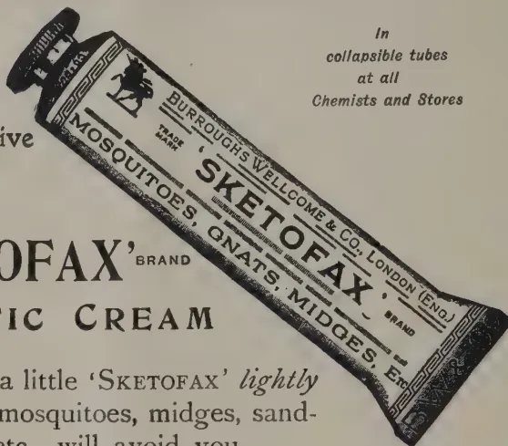
In
collapsible tubes
at all
Chemists and Stores
Reduced
facsimile
BURROUGHS WELLCOME & CO., LONDON AND BOMBAY
xx 3429
All Rights Reserved
BY A PLANTER.
In order that pruning should be of the greatest benefit to coffee, it should be commenced as soon as practicable after the harvesting of the crop, and completed as early as possible before the blossoms showers are due, because growth is quiescent at this period, and the duration of "wintering" is shortlived with Coffee, especially if crop has been late. Unfortunately, owing to lack of labour, in the majority of cases it is not possible to complete the pruning in one year, and too often the work, combined with the thinning out of new wood, technically known as "handling," has to be carried out during the monsoon to get it finished in two seasons. Done at this time, it is more with the object of preventing the trees becoming a hopeless tangle and to make room for the growth of new wood; whereas if it were carried out at the proper time, it would go to strengthen the crop bearing wood and be effectual in adding to the crop. The circumstances seem inconceivable under which handling and pruning coffee can be dispensed
JULY, 1922.]11with. The only case in which it is claimed to have been successfully dispensed with is in Coffee grown on the Leeming system, as described in the INDIAN SCIENTIFIC AGRICULTURIST for November 1921. The system of pruning carried out in Coffee plantations in India is practically the same as that for which the rules are laid down in LABORIE'S work on coffee planting—published, I think, early in the 19th century, with notifications to suit the different conditions obtaining in the several Districts.
The first operation consists of topping the plants when they have attained the required height. The method of doing this sometimes followed is to only remove the apex when there is the risk of the stem splitting with the weight of the crop on the first pair of primaries. The most approved method therefore, as it obviates this risk, is to remove one primary in addition to the apex. The effect of topping it is to cause the plant to throw up suckers, which are efforts on its part to grow to its natural height. The constant removal of these causes the tree to throw out a profusion of lateral growth, and the necessity for handling, or thinning out superfluous growth, arises, to prevent it becoming an impenetrable thicket, and to induce it to produce regular average crops.
The formation of the coffee tree renders it eminently adaptable for handling and pruning. In the words of LABORIE though it is "garnished" all round with horizontal primary branches, no two of them are in direct line. The secondaries grow in pairs at the nodes of the primaries, one on each side of the parent branches, and the same formation characterises the growth of the tertiaries on the secondaries. In carrying out handling the first thing attended to is to remove all suckers from the main stem, and all secondaries within six inches of the stem. The next operation according to rule is to remove every alternate secondary on each side of the primaries, the idea being that the amputated secondaries would be replaced by fresh growth, when the new secondaries would be left to bear the succeeding crop, while those which had borne the previous season's crop would be in turn removed. But secondaries are not renewed with such unfailing regularity, and they often enough fail to grow at the nodes after a time, and dependence has then to be placed on tertiaries which are at first suppressed. It sometimes happens with some trees that instead of growing in the strictly natural fashion above described, only a single or a pair of secondaries will appear on the primaries instead of the full complement, while these secondaries will have a full complement of pairs of tertiaries at the nodes along their whole length. From this it is evident that it is difficult to lay down hard and fast rules with regard to the pruning of Coffee.
In the early days, where a sufficiency of labour was available to permit of it, handling used to be done two or three times during a season; all shoots which had grown after the selection of wood made on the first occasion being removed in the subsequent rounds. As the trees grew older and more subject to leaf disease, the usual procedure was to carry out centring
12[JULY, 1922.(the removal of suckers and secondaries within half a foot of the stems) in May and June, a pucka handling in September and October and pruning after crop. It was generally held that centring gave admission to sufficient light and air to help the trees to retain their lower primaries and maintain their fruitfulness, but except where it was associated with wide planting it has failed to do so, and a large percentage of "umbrella" trees is noticeable in nearly all cases where the unfortunate practice of close planting has been the rule, especially where pruning has been neglected. It has been demonstrated in Java that the dying off of the lower branches of Robusta coffee is due to lack of light caused by close planting and dense shade. Close planting arose there because the plants closed up in two years shade the soil and, while the moisture of the soil so necessary to coffee is thus preserved, the weeding expenses are lessened. Against these advantages there are the serious disadvantages that in closely planted estates a year with a heavy crop is always followed by one with a poor crop. "The shade affects the tree, it is covered with leaves, but no fruit bearing wood is to be seen; all the fruit bearing wood remains green and sappy (succulent) with the result that there is little or no crop." Close planting in districts badly affected by borer in this country was in some cases adopted as a protective measure against the pest, the conditions close planting gives rise to being antagonistic to the increase of the insect. It kept the soil moist and cool and made it difficult for the insects' eggs to hatch successfully. SIR GEORGE WATT when on tour through the coffee districts of Southern India, on noting the good effects of light penetrating all parts of coffee trees is credited with recommending that in pruning old trees they should be made to assume a pyramidal shape, i.e., the top-most primaries should be cut back shortest, and each succeeding set of primaries somewhat longer than the superior set. Even supposing that old trees retained all their original primaries this pyramidal shape imposed on the trees would not be maintained long, as the secondaries which the upper primaries would throw out, getting, as they would, the largest share of light would outstrip in growth those lower down and overlap them.
Most planters are agreed that the heavy pruning of neglected coffee is to be deprecated. The process of restoring the trees to order should be extended over two or three seasons. In this way serious loss of crop is avoided and the trees saved a severe shock, from which some would perhaps not recover. The pruning now-a-days consists of cutting out non-bearing wood, and the plan favoured is to leave a large frame-work on the trees for the production of new wood for the succeeding season, and not reduce those that have overborne to "parrot poles." Large thick secondaries are left, even if dry at the tips. These branches contain material stored up in their tissues which is capable of growing new shoots. This is lost to the trees if the branches are cut off.—INDIAN SCIENTIFIC AGRICULTURIST, VOL. 3, NO. 2.
JULY, 1922.]13R. O. WILLIAMS,
Curator, Botanical Department, Trinidad and Tobago
(Formerly Superintendent of Agriculture, Grenada.)
The following paper was read by MR. R. O. WILLIAMS at a meeting of the Naparima (Trinidad) District Agricultural Society in November, 1921. It gives a useful comparison between Grenada conditions and methods of cultivation and those of Trinidad.
During my two years as Superintendent of Agriculture in Grenada I was called upon in the course of my duties to visit estates in all parts of the island and thus had opportunities of studying various methods of work and I should here like to say that I was at all times treated with the greatest courtesy, and kindness by the planters and others with whom I came in contact.
Although Trinidad and Grenada are so close together, only about ninety miles apart, and the climatic conditions are not very different, there are distinct differences in the methods employed in the cultivation of their staple crop.
Sugar was at one time the staple crop of Grenada but when prices fell it was more or less abandoned and cacao steadily planted, chiefly though by small proprietors. In the year 1855 the exports of cacao are stated to have been 5,069 bags which by 1880 had risen to 28,735 bags. The crop afterwards continued to increase till at the present time it ranges between 70,000 and 80,000 bags of 180 lb. net per annum. Little increase of exports is to be expected in the future as most of the cacao plantations have reached full bearing and but few new areas are being planted.
Agriculturally, Grenada is a much more fully developed Colony than Trinidad, consequently there is less available land suitable for further cacao planting and under present conditions it would be a much better economic policy to concentrate any further agricultural efforts on the production of ground provisions and other local foodstuffs.
There is a large number of peasant proprietors in Grenada most of whom own small plots of cacao. Whilst some of these small proprietors take a keen interest in their cultivation, there is on the part of others a need for improvement in their methods and the curing of the crop for market.
In a country relying principally on one crop for its support small uncared or neglected patches of that particular crop may present a menace on account of the liability of their forming breeding grounds for pests and diseases. Improper methods of preparing the crop for market have also a detrimental effect on the reputation of that crop on the market.
I intend this afternoon to deal with my subject under two heads.
(1) Methods of cultivation and (2) Treatment of Pests.
The latter subject comes in for as great a share of attention from the Grenada planter as the former and as I hope to explain later when dealing with the questions of no-shade and partial shade it is of the greatest necessity that a rigorous control over pests and diseases be exercised.
With very few exceptions, cacao in Grenada is much more closely planted than in Trinidad. The actual distance varies owing to the irregular manner in which planting operations were carried out, but an average distance could probably be estimated at nine or ten feet. The irregularity of planting is due to the fact that most of the estates were originally planted on the metayer system, under which system I believe the peasant was responsible for the planting as well as for the care of the trees, until they were taken over by the estate proprietor.
In Trinidad most of the cacao has been established under the contract system, by which the peasant makes himself responsible only for the care and not for the planting of the young trees.
The irregularity of planting so common in Grenada is not only detrimental to a proper well balanced development of the trees but is also troublesome when lining out drains.
Although cacao in Grenada is largely grown without permanent shade, the young plots and bare patches in old plots are replanted in much the same manner as practised in Trinidad—bananas, plantains, canes, tannias, etc., being used as temporary shade.
The question probably of most interest to the Trinidad planter is that of permanent shade and it is on this point principally where the Grenada methods of cultivation differ from those of Trinidad.
Many of the cacao fields in Grenada are entirely without shade, others have numbers of other trees, principally breadfruit and other fruit trees scattered amongst them and in a few cases a systematic planting of Immortelles has been practised.
Before we go further with this question I should say that the Grenada planter fully recognises that when cacao is grown without shade it must either be naturally protected from wind or else be supplied with good wind breaks, that the soil must be frequently forked and manured and the land thoroughly drained. If he neglects these essential conditions in a no-shade plot he is only courting failure.
In a plot shaded by large trees, such trees besides various other functions assist in carrying off the surplus water from the soil and thus serve as a form of natural drainage. In places where there are no, or few, shade trees, a stricter attention has to be paid to drainage than in those carrying a large number.
Instances have occurred in Grenada where it has been thought advisable to cut out large trees protecting the cacao, with the result that the cacao suffered badly from exposure and the resultant maladies, and in some cases efforts were afterwards made to re-establish shade trees.
JULY, 1922.]15The question of shade for plants in general is largely a matter of what the plants have been accustomed to. Plants reared under shaded and protected conditions are much more delicate than those reared without and are bound to suffer if such shade or protection is suddenly removed. An example of this was provided at the no-shade plot at River Estate, where, for a few years after the Immortelles had been removed the crop dropped below its average of former years, till eventually when the trees became accustomed to the new conditions the crops increased.
When cacao is grown without shade not only is it necessary to pay more attention to drainage but it is also essential to give better cultural conditions by forking and manuring and this the Grenada planter usually does in a very thorough manner. He endeavours as far as possible to keep a good tilth on his soil and it is doubtful if his efforts in these matters were relaxed whether it would be possible to make a paying concern of cacao growing without shade. The actual position in Grenada seems to be that the planter endeavours by forking and manuring to do what the Trinidad planter does largely with shade trees. The Trinidad planter protects his soil from loss of organic matter by the action of the sun and wind and the Grenada planter replaces his loss. The latter is no doubt preferable so long as it can be maintained economically, as in the no-shade fields of Grenada little loss from pod rot if to be observed and this fact alone should more than compensate for extra expense and labour.
It is marvellous to see on certain of the exposed seaboard of Grenada in what condition the trees are maintained by cultural measures although the tops of the trees present a close clipped appearance from their exposure to the wind.
The close planting already referred to, helps of course to a certain extent also to protect the soil from exposure to wind and sun. Whether this close planting will have an ultimate detrimental effect on the life of the trees remains to be seen, but it is very probable that it will.
As regards manuring, the Grenada planter has been in the habit of treating his plantation fairly generously. Besides chemical manures of which large amounts were till recently regularly supplied, large quantities of pen manure were also either bought from peasants or made on estates.
A system of making pen manure largely in practice on estates is to picket cattle in various parts of the field, where they are fed for a few months and then removed to another place, the heap meanwhile being allowed to rot down till it is in suitable condition for applying to the cacao. Whilst this system has its disadvantages in that all the valuable liquid portion of the manure is lost or only benefits the few trees in the immediate vicinity and the manure is unprotected from weather it has certain advantages, the principal being from the planter's point of view, a saving of labour in carting feed for the stock and bringing the manure back to the cacao. This class of manure is bought from peasants at from one to two cents per cacao basket. A common practice is for the estate labourers to take over the feeding of an animal and be paid for the manure.
Horse beans (Canavalia ensiformis) are used to quite a large extent on the best estates, being sown under the cacao and turned in as green manure
16[JULY, 1922]or cut and left to form a mulch. Several thousand pounds of seed are distributed annually by the local Agricultural Department.
On one of the best estates a proper rotation system of intensive cultivation is carried out, by which the fields are treated in one year with pen manure, in the second with leaves, brushings and prunings bedded in, in the third bedded again and mulched, if material is available, in the fourth artificial manures are applied and in the fifth the soil is limed to clear up the land for a repetition of the rotation. Under this system it was arranged that one-fifth of the estate would receive one or the other of the above-mentioned treatments each year.
So far I have dealt almost entirely with complete no-shade conditions but in many of the fields there are a large number of what are known in Grenada as "foreign trees" such as mango, breadfruit, etc., and whilst from an agricultural point of view these are not such good shade for cacao as the Immortelles, it must be remembered that they play an important part in the economic life of the island. At certain times of the year the breadfruit is the staple food of peasantry, fruiting as it does when other local provisions are scarce. The breadfruit crop is gathered almost entirely from amongst the cacao plantations.
The so-called "foreign" trees do give a certain amount of shade and protection to many of the fields which are sometimes described as having no-shade and this should be borne in mind when considering the subject.
A good deal of attention is given to the establishment and care of windbreaks and their value is very great, galba (Calophyllum Calaba) is one of the principal trees used for the purpose, whilst almond (Terminalia Catappa), cashew (Anacardium occidentale), mango (Mangifera indica), and other trees are used to a lesser extent. Protection to most cacao fields is also afforded by hedges, the principal plants used for the purpose being galba, which is planted thickly and trimmed periodically and the wild coffee Aralia (Guilfoylei). A very fine example of the latter can be seen along the eastern main road where there is a long, thick stretch of this plant growing to a height of about fifteen or twenty feet.
With regard to the pruning of cacao in Grenada opinions amongst planters differ, as they do in Trinidad. The planter's chief care however is to see that his pruning is not so severe as to expose the soil to sun and wind, as he has no other protection he can rely upon, as has the planter who cultivates his cacao on the shade principle, but, owing to the close distances at which the trees are planted, fairly heavy prunings are necessary.
Owing to the close planting it is difficult to prune in such a manner as to prevent interlacing of the branches and such a condition consequently usually exists. Chupons, or suckers as they are called in Grenada, are only allowed to grow when a renew to the tree is required.
This term is applied in Grenada to the method used for disposal of the surplus leaves. When the soil becomes thickly strewn with leaves the practice is to rake them together into heaps and dig holes a few feet square
JULY, 1922.]17into which they are put and the soil thrown back upon them. This has the advantage of returning all leaves, etc., to the soil and thus increasing the stock of humus. This system is generally recognised amongst planters as being one of the cheapest and best ways of cleaning up the plantation. On heavy soils, under which head the majority of those in Grenada may be classed, holes of this kind unless supplied with an outlet into a drain are apt to form water pockets which on flat lands may prove troublesome. The broken pods are also often buried in the same way.
A few persons adopt a system of raking the leaves away from the trunks of the trees and burning them under careful supervision. This is not a system to be recommended as by its practice much vegetable matter is destroyed which if retained in the soil would form valuable humus. When practised on the same fields for successive years it must have an ultimate detrimental effect on the cultivation. Another point is that unless done under very careful supervision, the result may be a scorching of the trees. On the other hand this method has an advantage in fields infested with mealy bug, in that the leaves falling to the ground are often thickly covered with the pest which can, as I have observed, migrate back to the plant. It is very doubtful however whether the good done in this way can in any way counter-balance the harm caused by the loss of vegetable matter to the soil.
In my remarks on cultivation I have confined myself chiefly to methods adopted by the large estate proprietor in Grenada, but it must be remembered that there is also a very large peasant proprietary whose numbers run into thousands and in the majority of cases it cannot be said that the peasant pays the same attention to his cultivation as the larger planter.
The peasants' product as prepared for market is also not generally of as high a standard as that prepared by the estates, principally for the reason that he is anxious to realise ready money and will not wait to allow the beans the necessary period of fermentation.
Another reason is that the quantity of wet cacao that he gathers at one particular time is so small that unless dealt with very carefully only imperfect fermentation takes place. Some of the smaller proprietors are now making efforts to prepare their crop for market in a better manner and the low prices paid for cacao this year have shown them how really necessary this is at certain times during the last few months unfermented cacao was practically unsaleable.
It has been suggested by the Mycologist of the Imperial Department of Agriculture that a two-walled box stuffed with dry grass or some such material would be a useful article to experiment with in which to ferment small quantities of cacao.
In fermenting small lots of say thirty to forty pounds of cacao it will be found that the maximum temperature is usually reached at about the third or fourth day and begins to drop fairly rapidly after. With large lots of cacao such as are handled by estates the maximum temperature is I believe not reached till the fifth or sixth day and the beans have therefore a longer period of fermentation.
There is room for much useful work in assisting and instructing the peasant regarding the fermentation of his crop and its preparation for market.
18[JULY, 1922.Preparation of the estate product is done on much the same lines as in Trinidad with the exception that no clay is used.
The drying trays are usually in the form of sliding drawers under the Boucans or sometimes a combination of sliding drawers and roofs. There are also installed on a number of the larger estates artificial Gordon rotary driers, made by JOHN GORDON AND COMPANY, Broad Street, London.
I will now pass on to discuss a few of the commoner pests of cacao in Grenada and the methods adopted for keeping them under control.
Thrips is the most widely distributed and most virulent pest of cacao in Grenada and has at times caused great anxiety to the planter. Expert advice has been sought on many occasions and the pest has been so thoroughly investigated that the planter is now quite conversant with the mode of tackling it and usually puts such knowledge into practice at the first signs of an outbreak.
Thrips are probably always present in cacao fields and when suitable conditions for their propagation prevail (usually those unsuitable for the growth of the cacao tree) they assume epidemic form. They are minute insects which cause damage to the tree by sucking the leaves and thus bringing about defoliation. A badly infected plot will be rendered practically leafless. If no control measures be exercised and successive attacks be made on new flushes of leaves the trees may be killed outright. The pods are also usually infested, especially in the dry season. The infection on these can easily be distinguished by the brownish markings which in bad cases may completely alter the appearance of the pods. This causes much loss of time in picking and some loss or detriment to the cured product may result from the inability to distinguish when such pods are ripe, and unripe pods may thus be gathered together with the ripe and thus lower the grade of the cured beans.
Thrips attacks are usually worse after the heaviest rains although minor attacks are reported throughout the year. All such attacks are usually found in conjunction with some bad condition of the soil, viz., lack of drainage or manure or a poor condition of the cultivation. The remedy is therefore to put the soil in proper condition but as this cannot be done quickly it is necessary to spray in the case of a severe attack in which immediate relief is required.
The best spray for the purpose and the one most generally employed is Nicotine sulphate (Black Leaf 40), used (on the recommendation of MR. URICH, Entomologist of the Trinidad Department of Agriculture, who visited Grenada a few years ago to advise on Thrips) at the rate of six ounces to fifty gallons. It is usually applied in combination with Bordeaux mixture made on the 5'5'50 formula.
When the trees are in a healthy condition it is doubtful whether ever thrips assume epidemic form, in fact it was once stated by MR. BALLOU, Entomologist of the Imperial Department of Agriculture, that thrips might be regarded as a friend of the planter in that it showed him that something was wrong with his cultivation.
In short then the advice for treatment of an epidemic of thrips is to improve the cultivation and spray with a mixture of nicotine sulphate. As a preventative measure the advice is to keep the cultivation to a high standard. Unless a high standard of cultivation is maintained under the no-shade conditions, the trees are more susceptible to attacks of thrips for the reason stated when dealing with permanent shade.
JULY, 1922.]19A pest which is causing considerable trouble in the cacao fields of Grenada at the present time is mealy bug, which, in combination with the black ant, is commonly found on estates and is no doubt the cause of considerable loss in crop.
In bad attacks the undersides of the leaves are thickly covered with the white mealy bugs as are also the flower cushions, flowers and pods. The mealy bugs form an attraction for the black ants which feed on their excretion. Large colonies of both pests are found clustering among the cushions of infested trees. They make their way into holes and crevices caused by pruning and the gathering of pods and almost certainly aggravate such injuries.
A short time ago a visit was paid by the Entomologist of the Imperial Department of Agriculture to specially investigate this pest, and we visited together plantations in all parts of the Island. After his visit a set of experiments were commenced by his suggestion in three different parts of the Island to test the value of various mixtures for spraying purposes. As a preliminary measure to spraying he recommended the thorough cleaning up of the trees by close pruning of all old stumps of branches and dead material and the painting with crude oil of the cut surfaces.
The spraying materials recommended for trial were,
Bordeaux Nicotine 5'5'50'6.
Bordeaux and arsenate of lead 5'5'50'2,
Lime sulphur : Stock solution, 4 lb. lime, 8 lb. sulphur, 9 gallons water, boiled together for 45 minutes and diluted 1 to 14.
Crude oil emulsion : 1 lb. soap, 1 gallon crude oil to 10 gallons of water.
The preliminary observations showed very little beneficial results from the spraying with the two former mixtures. Lime sulphur was effective where actual contact with the insects was obtained, but crude oil emulsion appeared to be the most effective from all points of view. The oil laid somewhat thickly on the trunk and leaves but no injury was noticed either to the leaves or bark.
The flowers with which the emulsion came in contact were however injured; and it would be necessary to spray with such an emulsion when the trees were not in flower. An emulsion made in more dilute proportions might also be tried.
Besides being the most effective spray of the four experimented with crude oil emulsion was also found to be much the cheapest. Lime sulphur is worthy of further trials provided sulphur can be obtained at a cheaper rate than it was possible to purchase it at in Grenada.
Whilst, as MR. BALLOU points out, neither of the sprays has the power of penetration, it seems to me that the crude oil emulsion may also act as a preventative as well as a cure by making the surface of the trees distasteful to the insects. This work, however, is still in such an early experimental stage that it would be presumption on my part to offer any definite opinion. In Trinidad mealy bugs, from their scarcity, may be presumed to be kept in check by fungus parasites by virtue of our more humid conditions.
Another pest not as serious as the former but all the same one which accounts for the loss of a fair number of trees annually in certain parts of the island, is the large termite (Kalotermes Ballouii). This large termite or wood-ant enters old wounds and tunnels through the wood of the tree sometimes for a distance of four or five feet. The occurrence of this pest in a tree is usually not observed till the whole tree or branch is broken down. It can however be discovered earlier if an examination of old decayed
20[JULY, 1922.wounds be made. The point of a knife dug into the rotten wood will as a rule expose a few of the insects if they are present.
The old adage, prevention is better than cure, is the best to apply to this pest, and if all wounds caused by pruning be treated with an antiseptic and even all old treated wounds inspected and re-treated occasionally if necessary, little trouble from the pest should be experienced. Whilst speaking of antiseptics I may say that paint and tar have been and are still largely used in Grenada for the treatment of wounds, but crude oil is now becoming the most popular remedy and I must say that from personal observations it is apparently most efficacious.
There are a number of other pests more or less minor importance and with which you are familiar, so I will not treat them in detail.
Bird vine is fairly troublesome, but it does not appear to be such a strong or rapidly-growing species as the one with which you are so familiar in Trinidad and Tobago.
As to the comparison in crop between the two islands I have no very definite information, but should say that as a rough average we might assume Trinidad to be 3 to 4 bags per acre and Grenada 4 to 5, the Trinidad bags being 165 lb. net and the Grenada 180 lb.
VAN HALL says in his book on cacao that on a well-managed plantation in Grenada 350 kilogrammes (approximately 4 bags) per acre were obtained, whilst he gives three instances of Trinidad in which 230 kilos (about 3 bags), 135 kilos, ( bags) and 112 kilos, about ( bags) were obtained.
I should not leave this subject without reference to the somewhat famous estate of Good Hope, where it is on record that the late REV. G. W. BRANCH by intensive cultivation reaped as many as 87 bags per annum from 12 acres, or over 7 bags per acre. His methods of cultivation by which he achieved such results can be judged from his reply to a question once asked him by MR. G. WHITFIELD SMITH as to whether he intended extending his cultivation. It is published in VOL. I. of the WEST INDIAN BULLETIN. He said "No; the remaining portion of my land is too much swept by prevailing winds to be of any value for cacao; besides I find that it pays me better to keep a portion in cane cultivation or some other fodder, not from the profit to be derived from sugar, but because it enables me to feed my stock; without this I could get no manure, and without manure I could get no cacao. I look upon my stock, therefore, as part of my working capital. People here seem entirely to forget this. I very often hear them speaking of the hard work they are having to get their plantation 'covered in' as they call it, but if they knew what I know, they would find it more to their interest to keep one-fifth of their plantation in pasture lands and fields of fodder plants, and to keep several head of stock to fertilise the other four-fifths."
One word in conclusion as to the official agricultural activities in the island. The agricultural officers resident in the island are always at the service of planters and peasants for advice and demonstration in all matters connected with agriculture. A stock of spraying materials and apparatus is kept at the Botanic Gardens for sale and hire to planters or for loan and gift to needy peasants and this stock is fully made use of by both classes of the community.
There are also the officers of the Imperial Department of Agriculture who pay occasional visits to the island and have by demonstration and valuable reports done much to assist the agriculturist.—BULL. OF THE DEPT. OF AGRIC., TRINIDAD & TOBAGO VOL. XIX, PART 4.
JULY, 1922 ]21(Department of Agriculture, Ceylon, Leaflet No. 20.)
The coconut caterpillar has been established for many years as a pest of coconuts on both the Eastern and Western sides of the island, but so far as is known it does not occur on the inland coconut areas.
The damage is done to the fronds or leaves by the caterpillars which eat away the underside of the leaflets so that they turn grey and die. If the pest is allowed to spread it sometimes happens that every single palm on an estate may become infested with the caterpillars and all the fronds, except the youngest at the top of the palms, are killed. The nuts may be attacked and the vitality of the infested palms is lowered, so that there is a marked reduction in the crop during the next two years after a serious outbreak.
This caterpillar has recently been declared a Pest under the Plant Pest and Disease Ordinance, and measures should be taken to control it. A short account of the pest is given here, so that coconut growers may take notice of the caterpillar and the damage which it causes and may know what measures must be adopted to control this pest.
The coconut caterpillar, like all other caterpillar pests, passes through four stages in its development, (1) egg, (2) caterpillar, (3) cocoon, (4) moth. As will be seen below, the first three stages live actually on some portion of the leaves, while the fourth stage, the moth, is more active and can fly about. The moths, however, do spend most of their lives on or near the coconut or other palms, such as palmyrah.
Moths.—The small greyish moths (see figure 1) are not very active as compared with other moths and do not fly much unless disturbed. Their presence on an estate may be detected by shaking or beating the lower leaves smartly and any small moths that fly away a short distance and soon settle down again are almost certain to be the coconut moth. They are also sometimes found resting under cadjan sheds during wet weather. The resting position of the moth is shown in figure 2.
Eggs.—The moths lay their eggs on the underside of the leaves, and, if the leaves have already been attacked by the caterpillars, the eggs are usually laid under the webbed galleries made by the caterpillars (see figure 3). The eggs are very small (see figure 3 and 4) and are not easy to find. They are whitish when freshly laid, but turn pinkish before hatching. A single female moth can lay more than 350 eggs during its life which only lasts about two weeks.
Caterpillars.—The eggs hatch in about ten days into very small caterpillars. These cover themselves with a few threads under which they start eating away small portions of the green underside of the leaflets. The
22[JULY, 1922.galleries are extended and are covered with some of the small pieces of leaf bitten off by the caterpillars and with small pieces of waste matter.
Cocoons.—The caterpillars are full-grown in from six to eight weeks and form their cocoons usually on the underside of the leaflets, covering these cocoons with small pieces of leaf and waste matter. Figure 12 shows the injury to a portion of a coconut leaflet caused by the caterpillars, and two cocoons are shown.
Moths.—The cocoon stage lasts about two weeks, after which the moths come out and are soon ready to begin egg-laying for another brood of caterpillars.
If the first brood of caterpillars has been a small one it usually happens that only a few of the lower fronds on a few palms are slightly attacked and show small brown patches. In such cases the damage may not be noticed, or if it is noticed the planter decides that no great harm has been done and hopes that the pest will disappear. It is true that the pest does sometimes die off without doing much damage, which may mean that the caterpillars and cocoons have been destroyed by their natural enemies, such as parasites. At other times, if these parasites are not sufficiently numerous to check the caterpillars it may happen that most of the first brood of caterpillars will develop into moths. These moths may spread over a wider area and lay their eggs for a second brood of caterpillars. This brood is usually much larger than the first and within a short time the planter finds that the attack has spread over perhaps four or five acres and that the lower leaves of the palms originally attacked are beginning to turn a greyish-brown colour and die off. Unless control measures are taken at this stage the pest will be liable to increase very rapidly and will attack thousands of trees over large areas. All the lower fronds rapidly turn grey and dry up, and are no longer of any use to the palms. The nuts may also be attacked and young nuts may fall as the result of caterpillar injury. Palms which have been weakened previously by coconut beetles, by diseases, or by starvation and neglect, may die after a bad attack of caterpillar, but palms which are usually kept healthy and well-nourished recover rapidly from a caterpillar attack.
Besides attacking the coconut palm, the caterpillars also feed on palmyrah leaves, especially on the younger palms sometimes found along the roadsides, on uncultivated lands, and on coconut areas. All infested leaves should be cut and burnt, otherwise the pest will continue to breed on the palmyrahs after the coconut palms have been treated, and will attack adjacent coconut palms later. The coconut caterpillars are also found sometimes on ornamental palms in bungalow gardens. If the attack is only a slight one and on small palms the caterpillars can be destroyed by rubbing off the webbed galleries with a rough cloth. Badly attacked leaves should be cut and burnt.
Cutting and burning of leaves.—As soon as the first signs of the caterpillars are noticed on a coconut area it is important that prompt measures should be taken to check the pest before it becomes serious. The simplest
JULY, 1922.]23remedy in an early stage of the attack is to cut off and burn all infested leaves or parts of leaves which show any traces of the caterpillar galleries. The infested material must be burnt within 12 hours of removal from the palms. The cutting and burning of infested leaves or parts of leaves is recommended because it is the most effective method of killing the eggs, caterpillars and cocoons of the pest which are on the leaves. This measure has been scheduled under the Plant Pests and Diseases Ordinance and must be carried out by all coconut growers who have the pest on their palms. Coconut growers should not wait for the pest to disappear, but must treat their infested palms as soon as any injury is noticed. The cutting of a few leaves at this stage will not injure the palms and will save their own and their neighbours' palms from serious injury and loss of crop.
Light-traps.—The cutting and burning of infested leaves will prevent the development of a large number of moths by killing the eggs, caterpillars and cocoons which develop into moths. There will always be some moths left in an infested area and these moths can be caught and killed by using light traps. These traps consist of an ordinary bullock-cart oil lamp placed in the middle of a flat shallow pan containing water and some kerosene, or coconut oil, to cover the water. A mixture of half kerosene and half coconut oil is suitable for the lamp. The pan should be at least 24 inches across and should be raised about 4 or 5 feet off the ground on a platform made of sticks. The oil on the water is useful for preventing the moths from escaping after they fall into the pan, as they are killed quickly by the oil. Acetylene lights may be used instead of oil lamps, but are more expensive. The oil light-traps should be used at the rate of at least three to an acre, and should be used at the beginning of an outbreak on every favourable night except on very wet nights or on bright moonlight nights. The use of light-traps is not compulsory but is recommended as a measure to be adopted at the same time that the infested leaves are being cut. It is important that the light-traps should be kept clean so as to give a good light and should be attended to regularly by responsible coolies. They can be stopped as soon as it is found that no more coconut moths are being caught. The coconut moths can be distinguished from other small moths which are caught in the traps by the fact that their wings are rounded at the tips whereas the wings of the other moths are usually pointed.
Other Measures.—Bright fires are only useful if they are made of the coconut leaves which have the caterpillar pest on them. It has been found that the burning of small fires at night among the infested palms does not attract very many moths and very few moths are killed, so that these fires are not recommended for general use at nights unless the infested leaves cut during the day are burnt.
Smoky fires made by burning tar and sulphur are probably of no real value in controlling the pest. It is more effective to cut and burn the infested leaves than to try and kill the caterpillars by smoke.
Spraying the affected palms with a poison cannot be recommended for general use at present until experiments have been made to find out whether it is effective or not.
General Remarks.—All coconut growers should endeavour to keep their palms in as healthy a condition as possible by cultivation and manuring, and
24[JULY, 1922.the coconut area should be kept clean so as to prevent the coconut beetle from breeding and attacking the palms. Vigorous palms are not so badly attacked by the caterpillar as weaker palms and they are able to recover more rapidly after a caterpillar attack. All coconut growers should be on the look-out for the first signs of the caterpillar pest and should take measures to control it before it can spread over a large area when it is very difficult to control. All coconut growers in any district infested by the caterpillar should co-operate to keep the pest in check by seeing that their own palms are kept free from the caterpillar.
J. C. HUTSON,
Government Entomologist.
Fig. 1. Moth, flying position.
Fig. 2. Moth, resting position.
Fig. 3. Eggs laid on leaf under edge of larval gallery, enlarged three times.
Fig. 4. On the left, an egg mass natural size; on the right, a single egg enlarged to show markings.
Figs. 5, 6, 7, 8. Stages of the caterpillar, enlarged.
Fig. 9. Cocoon turned over to show the pupa inside.
Fig. 10. Pupa, front view.
Fig. 11. Pupa, side view.
Fig. 12. Portion of coconut leaf showing injury by caterpillars, starting at the top and ending in two cocoons near the bottom. The arrows indicate where eggs may be laid. Notice the galleries of young caterpillars radiating from the cocoons.
The natural sizes of figures 1, 2 and 5 to 11 are indicated by the lines near each figure.
The following extract is taken from the Progress Report of the Assistant Entomologist for the 1st Quarter, 1922:—
Most of the period under review has been devoted to calculations in connection with experiments in progress at Sarnia Estate.
Burial of Prunings Experiment.—This experiment was carried out on a large scale in 1921. Eighteen substances were tried and over 10,500 galleries examined involving a considerable amount of calculation in interpreting the results. An account of this experiment has been submitted in the form of a bulletin which is now in the press. A brief summary of the results was communicated to the Estate Products Committee on March 9th.
Manurial Experiments.—There have been two series of manurial experiments in progress at Sarnia Estate. The first series was with individual manures and was designed, in the first instance, to ascertain the effects, if any, of Nitrogen, Potash and Phosphoric acid upon shot-hole Borer. A final
![A detailed scientific plate illustrating the life cycle of the coconut caterpillar (Acrolepia assectella). The plate includes 12 numbered figures: 1. Adult moth (dorsal view) with a cross-shaped scale bar; 2. Adult moth (ventral view) with a vertical scale bar; 3. A cluster of small, oval eggs; 4. Two individual eggs; 5. A small, segmented larva; 6. A larger, segmented larva with a horizontal scale bar; 7. A larger, segmented larva with a horizontal scale bar; 8. A large, segmented larva with a horizontal scale bar; 9. A cocoon containing a pupa; 10. A pupa with a vertical scale bar; 11. A pupa with a vertical scale bar; 12. A large, detailed drawing of a caterpillar on a leaf, with three arrows pointing to specific anatomical features.](72a25e40581c5bf41fba00acc08db842_1_img.webp)
1
2
3
4
5
6
7
8
9
10
11
12
George Shuy
THE COCONUT CATERPILLAR.
This image is a scan of a blank page. The paper has a light beige or cream-colored tint. There are a few very small, dark specks scattered across the surface, which appear to be scanning artifacts or dust particles. No text, lines, or other markings are present on the page. JULY, 1922.]25detailed examination of the plots in the third field (Mahattenne 50 acres) was made in February and it has now been possible to analyse the results of treatment. Briefly it may be stated that sulphate of ammonia and nitrate of soda, and, to a lesser extent, lime have had some beneficial effect in reducing borer attack, and with the experience and information gained it is desirable that further experiments should be commenced on more elaborate lines nearer to head-quarters. The results of the Sarnia experiments have been written up in collaboration with MR. C. H. GADD who has been good enough to interest himself in these experiments particularly in regard to the calculation of the experimental error in interpreting the results. The paper is now ready for publication. This series of experiments is therefore complete.
The second series of experiments, which are still in progress, are with a general mixture at varying rates per acre. It is stated that up to a few years ago fields on Sarnia Estate were severely attacked by borer up to pruning time. It was the practice, at that time, to manure with a 200 lb. per acre pruning mixture, followed by 350 lb. per acre general mixture one year after pruning and by a further 350 lb. of the same mixture per acre two years after pruning. Since 1919, the application of general mixture, two years after pruning, has been increased from 350 lb. to 550 lb. per acre and a most marked decrease in borer, in all third year fields so treated, has been observed since this practice was adopted. It has also been noticed that gallery-entrance healing has been very prevalent in these fields, 75%—90% of the total galleries present on the bushes being completely occluded. Comparatively few inmates were present in the few galleries which had not healed.
The second series of experiments was commenced therefore in order to ascertain :—
Plots were arranged in two fields viz., "Mahattenne 50 acres" at the commencement of the second year from pruning and "Dotlands 21 acres" at the commencement of the third year from last pruning.
Mahattenne 50 acres.—Figure 1 shows the arrangement of the plots in this field. There are 25 plots each of approximately 200 bushes. The treatment and proposed further treatment of these plots is as follows :—
| Plot Nos. | Previous treatment | Proposed future treatment. |
|---|---|---|
| 5 plots. A1-A5 | Aug. 1921, 350 lb. per acre ( lb. per plot) |
No further treatment before pruning |
| 5 ,, B1-B5 | Aug. 1921, 550 lb. per acre ( lb. per plot) |
No further treatment before pruning |
| 5 ,, C1-C5 | Aug. 1921, 350 lb. per acre ( lb. per plot) |
Aug. 1922, 550 lb. per acre ( lb. per plot) |
| 5 ,, D1-D5 | Aug. 1921, 550 lb. per acre ( lb. per plot) |
Aug. 1922, 350 lb. per acre ( lb. per plot) |
| 5 ,, E1-E5 | Aug. 1921. No treatment Controls |
Aug. 1922. No treatment |
No examinations have yet been made in this field but an examination should be made in May 1922, and another one in August 1922, when the plots CI-C5 should be remanured with 550 lb. per acre (i.e. lb. per plot) and plots DI-D5 with 350 lb. per acre (i.e. lb. per plot) general manure. Plots AI-A5, BI-B5 and EI-E5 are to receive no further treatment before the field is next pruned beyond ordinary forking at the time the other plots are manured. The general mixture applied was as follows:—
| Fish manure | ... | 250 lb. |
| Sulphate of ammonia | ... | 60 " |
| Muriate of Potash | ... | 40 " |
350 lb. |
The same mixture should be applied in August 1922 and in the event of the Sarnia Estate mixture having been altered, a mixture made up as above should be purchased. If the mixture has not been altered the amounts required have been promised by the estate free of charge. A total of 300 lb. of this mixture will be required for the plots in this field.
Dolland 21 acres. The arrangement of plots in this field is shown in figure 2.
The treatment these plots have received is as follows:—
| Plot Nos. | Previous treatment | Proposed future treatment |
|---|---|---|
| 3 Plots AI-A3 | Aug. 1921, 550 lb. per acre ( lb. per plot) |
No further treatment |
| 3 ,, BI-B3 | Aug. 1921, 350 lb. per acre ( lb. per plot) |
" " " |
| 3 ,, CI-C3 | Aug. 1921, No treatment. Controls |
" " " |
One examination of these plots was made in February 1922, twelve bushes being examined in detail in each plot as follows:—The bushes in every row, except first and last, in a diagonal line from corner to corner across each plot were selected. The total branches on each bush, formed since last pruning and of sufficient size to allow of borer entry, were first counted. The open galleries present on each of these branches were then counted and recorded and then the galleries present in the collar and old frame up to the last pruning cut, and finally the number of healed galleries. This information was recorded in a field note-book for future use.
This field should be re-examined in May 1922 and finally in August 1922 prior to pruning when these plots can be abandoned. It is emphasised that particular attention should be paid to the number of healed galleries in the treated plots as compared with the control plots and it is essential that a most accurate record of the number of open galleries present should be made. In counting the number of branches present on each bush, only those branches large enough to admit of a gallery being formed are considered.
It is suggested that a further series of experiments with individual manures should be commenced as soon as possible, nearer head-quarters
JULY, 1922.]27'than Sarnia, with the object of confirming the results obtained in the Sarnia experiments. It has been shown in the Sarnia trials that some benefit, as regards Shot-hole Borer attack, follows manuring with nitrate of soda, sulphate of ammonia and lime. Much information and experience have been gained in the Sarnia experiments and it is now possible to decide the least number of bushes which constitute a plot, the least number of bushes required to make a correct observation and the number of galleries to be examined.
The substances that should be tried are sulphate of ammonia, nitrate of soda, lime, muriate of potash, and ephos phosphate.
The experiments should be commenced immediately after pruning and an application of each manure, except lime, should be given at the rate of 200 lb. per acre (i.e. 7 lb. per plot) as soon after pruning as possible. It is suggested that lime be applied at the rate of one ton per acre (i.e. lb. per plot) at pruning time. The manure and lime should be applied to every row and the control plots should be forked at the same time as the other plots are manured. Twelve months after pruning the plots should be remanured with half the quantities given at the first application, i.e. 100 lb. artificial manure and 1120 lb. of lime per acre followed by a further dressing, at the same rates, 18 months after pruning and six months before next pruning. These recommendations apply to tea at an elevation of approximately 2000 feet where a two-year pruning interval is usual.
Examinations of the plots should be made at the 6th, 12th, 18th and 24th month after the commencement of the experiment, the last examination being made immediately prior to pruning. Examinations should be made to compare in the various plots:—
At least 20 bushes should be examined in detail in each plot allowing 80 bushes in the combined plots for a complete observation for each manure at each examination,—and at least 25 galleries from each plot allowing a total of 100 galleries for a complete observation in each case.
C. C. GOWDEY, B. Sc., F. E. S., F. Z. S.,
Government Entomologist, Jamaica.
The term "disease" as herein applied to plants refers to the abnormal condition resulting in weakness and often in death, whether that abnormal condition extends through the whole plant or is merely limited to a localized injury to certain parts of the plant without apparent effect on the vitality of the plant as a whole. For instance, take the case of the fruit flies, which attack several kinds of fruits without any evidence whatsoever of an abnormal condition of the trees themselves, so that the degree or intensity of the "disease" from the point of view of the life of the tree is negligible, yet as the commercial value of the crop of fruit is affected, the "disease" is serious.
28[JULY, 1922.Diseases are referable to two categories—non-parasitic and parasitic.
Non-Parasitic Diseases.—Plants when placed in an unfavourable environment, such as for instance, unfavourable climatic or soil conditions, become unhealthy and unthrifty, and in consequence of which either die as a direct consequence or easily fall a prey to insect and fungus parasites. Under the same environmental conditions one crop may thrive where another may succumb and, moreover, even with the same crop, one or more individuals may thrive much better than another. From experiments it is possible to select the varieties of crops which are suitable for the climatic and soil conditions existing in a locality; yet, the part played by the several environmental factors in the development of the plant is but imperfectly understood, and the same remark equally applies to the status of our knowledge of the constitutional differences of the individuals of the same variety.
Parasitic Diseases.—Within this category falls those plant diseases caused by the action of organisms, which obtain their food requirements at the expense of the plant with the result that the plant may be killed, wholly or in part, or malformed, weakened and rendered unproductive. The organisms which may cause the above conditions are insects, fungi, bacteria and such flowering plants as Cuscuta (love vine), and mistletoe. Of these only the first mentioned falls within the scope of this Circular.
(1) Submit promptly to a competent authority any disease, with which you are unfamiliar, as soon as it comes under your notice in your locality, for by so doing you may be assisting in preventing the establishing of a dangerous disease.
(2) Endeavour to avoid the first introduction of disease into your cultivations by taking the trouble of inspecting your nursery stock, rejecting any plants or seeds that are diseased. In some cases it may be advisable to disinfect seeds by immersion for a quarter of an hour in a solution of corrosive sublimate ( 1 : 1,000 ), and in the case of sugar-cane soaking the cuttings in Bordeaux Mixture.
(3) Collect and burn all diseased plants, or parts thereof, crop debris and prunings. In the case of diseased plants these are obviously a medium of infection. Crop debris and prunings may not only furnish food for insects in the interval between harvesting and planting, but also provide hiding places for pests.
(4) Rotation of Crops.—In the case of a crop badly attacked by an insect it should be followed by other crops, not closely related, which are not liable to be attacked by that pest. It is well-known that certain varieties of plants are much less susceptible or more immune to certain diseases than others. Though complete immunity of one variety of plant to a disease affecting other varieties of the same plant is distinctly rare, the less nearly related the crops are to one another the less likely are they to be affected by the same disease. This points to the advisability of a system of rotation of crops, for in this way many parasites can be starved out, though this is not always possible owing to the omnivorous character of certain insects.
JULY, 1922.]29(5) The Cultivation.—The object of an agriculturist should be to maintain his crop in a vigorous, thrifty condition and this can be obtained without forcing, which is undesirable, for plants in such a condition produce sappy growth—a condition predisposing to disease. Vigorous, thrifty crops can be obtained by proper cultivation fertilizing with suitable manures and pruning.
Cultivation by causing physical, chemical and bacterial changes in the soil, increases the food supply of the crop.
Chemical Changes.—By thorough cultivation soil aeration is increased and thereby a larger proportion of the soil constituents are acted on by the atmospheric oxygen, resulting in a larger supply of plant food being rendered available. Also, by frequent cultivation the constituents of the soil become more mixed and balanced.
Physical Changes.—Cultivation breaks up the particles of the soil and the smaller the particles the larger the area exposed to the solvent action of the root-hairs; and, furthermore, the finer the soil the more easily is it penetrated by the root system, which becomes more extensive and co-ordinates with the extensive root system is the increased vigour of the plant and increased resistance to disease.
Bacterial Changes.—Proper cultivation improves the conditions for the development of the bacterial organisms in the soil, whereby more food is rendered available. The organisms may be regarded as falling into two classes. The better known are the bacteria which form nodules on leguminous plants and store up atmospheric nitrogen, which on decomposing becomes available as plant food. Soils in which these bacteria naturally occur may by cultivation be so improved that the bacteria increase. The other class of bacterial organisms decompose vegetative substances rendering them available as plant food and this process of decomposition is aided by aeration; that is, by cultivation.
(6) Fertilizing.—If a vigorous condition of plants is to be attained the necessity for the fertilizing of the crop and so supplying the constituents required by it and which may be absent or deficient in the soil is obvious. Equally so is the necessity for the knowledge of what the constituents require by the crop are and in what constituents the soil is deficient; in other words, the planter should ascertain the food his crop requires and have his soil analysed and then he will be in the position to know what fertilizer to supply.
(7) Pruning.—That pruning, markedly in the case of horticultural crops, has a beneficial effect is shown in the vigour of the plant and in the quality and quantity of the fruit, has progressed beyond the empirical stage and is now an accepted fact and should be practised by every planter.
(8) Fallowing.—The term refers to the practice of resting the land for a varying period between the harvesting of the main crop and the next planting of the same crop, not necessarily implying that no crop whatsoever is grown on land in fallow. The three main ways of fallowing land are:—
First, abandoning the land and allowing the stubble of the main crop to remain and grasses and weeds to grow unchecked during the interval of the harvesting and planting of the main crop, or for even longer. The reason for such a practice is that it is considered that certain pests, for example root borers, will be starved out and this is to a certain extent true. Such a
30[JULY, 1922.practice as this should not be considered in the event of an attack of the Fall Army Worm on sugar cane or corn, for this pest feeds readily on grasses and certain weeds.
Secondly, a clean fallow, that is, the removal of the remains of the main crop and the maintaining of the land free of vegetation of any sort by frequent cultivation. The advisability of this practice is open to question, in the tropics at any rate, for it is quite probable that the good results accruing from this practice may be neutralized by the probable destruction of the bacterial organisms exposed to the sun by cultivation in the absence of shade-giving vegetation.
Thirdly, the growing of a leguminous crop immediately after the harvesting of the main crop. The value of the practice is that the tilth of the soil is maintained or increased by the cultivation necessary for the raising of this crop, the production of green manure, and the fixation in the soil of atmospheric nitrogen by means of the bacteria within the root nodules.
(1) Repellents.—These are materials applied to plants to prevent attacks by insects. For example, air-slaked lime, which is dusted on some plants to protect them from certain insects.
(2) Trap Crops.—In some instances it is practical to inter-plant the main crop with another crop more attractive to a particular insect than is the main crop and after the insects have gathered on the inter-planted crop to destroy the insects by ploughing under, burning or spraying the inter-planted, or trap crop.
(3) Hand-picking.—This measure is often a practicable one in ridding a crop of insects, being often the simplest and cheapest measure. An instance of the practicability of this method is in the case of the 'stink bugs' attacking truck crops, e.g. tomates, cucumbers, beans.
(4) Trapping.—In the case of certain insects, such as cotton 'stainers' and the banana borer, this method is undoubtedly very effective. It consists in scattering parts of the plant about the fields, visiting these traps at regular and frequent intervals and destroying the insects which have congregated therein or under.
(5) Insecticides.—The presence of many diseases in cultivated crops has forced the agriculturist to seek means of control and satisfactory control in most cases can only be maintained by spraying various mixtures on the affected plants. Though spraying is the most expensive operation carried out on a plantation, the value of the crop is so greatly augmented in comparison with the outlay, high though it be, that spraying should be regarded as a cheap form of insurance and a regular practice in the routine of farm management.
Spraying to be successful must be most thoroughly done, all affected parts of the plants must be covered to ensure satisfactory results. The value of thoroughness in application cannot be over-estimated.
Also, it is necessary that the agriculturist should acquaint himself with the 'whys' and 'wherefores' of this subject. He should become acquainted with the life-history and habits of the pests which he encounters, with the nature of the insecticides he applies, and realize the importance of spraying at the proper time and in the proper way. Before undertaking spraying
JULY, 1922.]31measures a knowledge of the mouth parts of the insect concerned is necessary, for it determines the class of insecticide to be applied. Broadly expressed, insects feed in two ways: (a) by sucking the juices of plants, and (b) by chewing portions of the plants. There are, of course, exceptions to this broad statement.
Contact Insecticides.—Those insects which procure their food by piercing beneath the surface and sucking the juices of plants are usually controlled by a contact insecticide, which requires for its success contact with the body of the insect, so that each individual must be hit with the spray in order to be destroyed—thus necessitating absolute thoroughness. Contact insecticides fall, generally speaking, within three classes:—(a) oil combinations and soap sprays, (b) sulphur sprays, and (c) tobacco sprays—and their effect on the insect's body differs. Oily combinations and soap sprays enter the breathing tubes, which they penetrate and destroy the vital body tissues. Sulphur sprays kill the insect by (a) corroding the body wall. (2) depriving the insects of oxygen, and (3) softening the waxy covering of scale insects and fixing the insects to the plant on the wax hardening. Tobacco sprays give off a vapour which on entering the breathing tubes acts on the nervous system resulting in paralysis and death.
Numerous contact insecticides are applied against piercing and sucking insects and the most generally used are discussed below.
Kerosene Emulsion.—This is the oldest remedy for scale insects, plant lice and other sucking and soft-bodied insects. It is generally used because all the materials required are readily obtainable, but there are other insecticides on the market preferable as they are more easily prepared and unless the emulsion is properly made there is danger of injury to the foliage due to free oil. This emulsion is made as follows:—
Hard Soap, lb., or soft soap pt.
Water, boiling, 1 gal.
Kerosene, 2 gals.
The soap, shaved finely, is dissolved in boiling water and then 2 gallons of kerosene is added and churned with a force pump several minutes until a creamy emulsion is obtained and no free oil can be detected. This is the stock solution, which on cooling forms a jelly-like mass. When required for use it should be diluted with nine times its bulk of warm water.
Whale Oil Soap.—It should be used at the rate of 1 lb. to from 5 to 8 gallons of water, the soap being dissolved in boiling water and diluted with cold water to the desired strength. It is very effective against scale insects and plant lice.
Self-Boiled Lime-Sulphur.—The formula is:—
Lime, Unslaked, 8 lb.
Sulphur, Flowers of 8 lb.
Water, 50 gals.
The lime is slaked by adding enough water to cover it and the sulphur is added to it through a sieve. The slaking of the lime will supply enough heat to boil the mixture for several minutes. Stir the liquid and as soon as the slaking ceases add enough water to prevent further boiling. Prolonged boiling causes the formation of certain chemical compounds injurious to the foliage. The mixture should be diluted to 50 gallons.
32[JULY, 1922.This insecticide may be applied separately or combined with arsenate of lead as a combination spray against both sucking and chewing insects, or combined with Bordeaux mixture for the control of both sucking and fungus disease.
"Black Leaf 40."—This and other similar tobacco preparations are perhaps the most satisfactory sprays against scale insects and plant lice. It is a solution of nicotine sulphate containing 40% active nicotine. The ordinary dilution of this insecticide is one part to 800 parts of water with the addition of 2 lb. of soap dissolved in boiling water to every 50 gallons of diluted "Black Leaf 40." In a small amount the formula would be:—
"Black Leaf 40," teaspoonfuls.
Water, 1 gal.,
Soap, dissolved in boiling water, oz.
Stomach Poisons.—These are used only in the case of insects which bite off and chew their food and are applied to the material on which the insect feeds and must be eaten with the food in order to be effective.
Stomach Poisons usually consist of arsenic as the poisonous substance on which the killing power depends. There are two forms of arsenicals; those called arsenites, which usually contain a high percentage of arsenic, for example, Paris Green; and those called arsenates, which contain a relatively low percentage of arsenic, for example, arsenate of lead. Both arsenites and arsenates should contain only a small percentage of free, or water-soluble, arsenic, which if present in large quantities is injurious to foliage, causing the so-called 'burning.'
Paris Green.—The use of this insecticide is recommended in cases in which quick action is required, as it contains 50% of arsenic; but it is being replaced by arsenate of lead, as Paris Green has the disadvantages of being easily washed off by rain and, also, necessitates constant agitation during spraying, as its power of suspension is low. It should always be applied mixed with air-slaked lime, which combine with the water-soluble arsenic, thus preventing in a large measure foliage burning. The formula is:—
Paris Green, lb.
Lime, Air-slaked, 2 lb.
Water, 50 gals.
When used dry, that is, dusted on the plants, it is applied in the proportion of one part to 20 parts of air-slaked lime, preferably, or fine road dust or flour.
Arsenate of Lead.—This insecticide is on the market in two forms, as a paste and as a powder; in the former it contains from to 32% of arsenic and in the latter from 27 to 32% of arsenic. The paste is applied at the rate of 3 to 5 lb. to 50 gallons of water and the powder at the rate of from to lb. to the same amount of water.
It is used in preference to Paris Green as it is not readily washed off by rains, does not burn the foliage, and has a high power of suspension.
Arsenate of Lime or Calcium Arsenate.—This contains about 45% of arsenic. It has the advantages of quick action and cheapness, but it is easily washed off by rain and it is not safe to use it unless combined with a fungicide.
JULY, 1922.]33London Purple.—This insecticide is no longer used, except in baits, on account of its variable composition.
Poison Bran Mash.—Such a bait as this is most effective for controlling cutworms and grasshoppers. The formula is :—
Bran, 25 lb.
Paris Green or London Purple, 1 lb.
Molasses, 2 qts.
Oranges or lemons, 3.
Water, gal.
Mix the bran and Paris Green, stir in the molasses and orange juice, together with the ground up fruit and rind, and enough water to make a stiff mash. The bait should be spread broadcast before dusk.
Combined Insecticides and Fungicides.—As the control of fungus diseases is closely connected with that of insects, combination sprays which will control both by a single operation are to be recommended. Only certain insecticides and fungicides, however, can be safely combined. Self-boiled lime-sulphur may be combined with arsenate of lead to control both sucking and chewing insects. Bordeaux Mixture and arsenate of lead may be combined to control fungus diseases and leaf-eating insects. Bordeaux Mixture, arsenate of lead and "Black Leaf 40" may be combined to control fungus diseases, leaf-eating insects and sucking insects.
Bordeaux Mixture.—This is a fungicide, but the directions for preparing it are given, as it is frequently combined with insecticides :
Copper sulphate (Bluestone), 4 to 6 lb.,
Lime, Unslaked, 4 to 6 lb.
Water, 50 gals.
Dissolve the bluestone in a gallon or two of warm water. After the lime has been thoroughly slaked, strain the resulting milk of lime to remove the lumps. To prepare the bluestone solution suspend the required amount of bluestone in a coarse cloth bag over the mouth of the vessel which is to contain the solution. As soon as all the bluestone is dissolved pour the bluestone solution and milk of lime together simultaneously, and stir. The resulting mixture is Bordeaux Mixture.
To test whether the bluestone has been naturalized by the lime—(a) On the addition of potassium ferrocyanide to the mixture there is no change if sufficient lime has been used, but if more lime is required the mixture turns reddish or purplish. (b) If sufficient lime has been used blue litmus paper remains unchanged, but if the amount of lime is insufficient the blue paper turns red. (c) If metallic copper precipitates on the blade of a knife, more lime is required.
If Bordeaux Mixture is to be used in combination with arsenate of lead, 3 lb. of the latter should be added to each 50 gallons of the Bordeaux Mixture.
Fumigation.—Both biting and sucking insects often occur in such places to make it possible to destroy them by poisoning the air, that is, fumigation. The gases most generally used are carbon bisulphide and hydrocyanic acid gas.
Carbon Bisulphide.—This is a heavy liquid which rapidly evaporates, producing a poisonous highly inflammable gas. It is used for destroying clothes moths, grain pests, subterranean pests, such as ants, root lice and maggots, and borers in trees. For indoor fumigation it is used at the rate of 2 teaspoonfuls to every cubic foot of space and fumigation should last for from 24 to 48 hours. As the gas is so inflammable it should never be used in the proximity of fire, even near a lighted cigarette, and as it is much heavier than air the vessels used in the fumigation should be shallow and placed near the top of the space to be fumigated.
34[JULY, 1922.Hydrocyanic Acid Gas.—This is one of the most effective and deadly gases known. It is used for destroying household, nursery, greenhouse and mill pests. The gas is generated by combining potassium or sodium cyanide, 98 or 99 % pure, sulphuric acid, specific gravity 1.83, 92 % pure, and water. The formula is :—
Potassium cyanide, 1 part,
Sulphuric acid (fluid measure), 1 part,
Water, 3 parts.
or,
Sodium cyanide, 1 part
Sulphuric acid (fluid measure) parts
Water, 2 parts.
Pour the required amount of water into an earthenware or granite jar and add the acid slowly. Then drop in the cyanide, which has been broken into pieces the size of an egg, and leave the building quickly. After fumigation the building should be opened and aired for about 30 minutes before entering.
For household fumigation and fumigation of dormant nursery stock, use 1 oz. of potassium cyanide, or oz. of sodium cyanide, to every 100 cu. ft. of space. For household fumigation at least 12 hours is required for fumigation and for dormant nursery stock from 50 minutes to an hour.
In the case of all crops the best possible conditions for growth, such as thorough preparation, cultivation, etc., are of great importance in the prevention of diseases. It often happens, though, that the same crop is grown for many years on the same land and as a result the land is exhausted and infested with disease. In such cases the trouble is often attributed directly to weather conditions, to insect and fungus diseases ; but, though these do play an important part in the failure of the crops, I have tried to show that these factors can be partially controlled by the adoption of certain agricultural practices by rectifying primary adverse conditions.
It is probable that the greatest advances to be made in the control of plant diseases will be in the development of resistant varieties of crops by hybridization and selection. The so-called 'improved' plants are usually so from the point of view of the consumer, and consequently of the grower, and not from the point of view of the vitality of the plant, which by the 'improvement' is removed from the normal and becomes more susceptible to disease.—ENTOMOLOGICAL CIR. No. 5, 1921, DEPT. OF AGRIC., Jamaica.
DR. S. E. CHANDLER.
During the early years of rubber planting in the East—considerable optimism prevailed in certain quarters as to the powers of the Para rubber-tree (Hevea brasiliensis) to resist disease in its new home. The planting of such great areas with a single crop plant, however, was practically certain to result sooner or later in fungal disease, to say nothing of insect attack; and, although little was (and still is) known as to the functions of latex in plants it was safe to predict that the regular withdrawal of considerable quantities
(*) "BROWN BAST DISEASE OF PLANTATION RUBBER, ITS CAUSE AND PREVENTION." By R. D. RANDS. Mededeelingen van het Instituut voor Plantenziekten, Department van Landbouw. Nijverheid en Handel, No. 47 (1921); overgedrukt uit her Archief voor ed Rubber cultuur, Jaargang V., No. 5 (Mei 1921.)
JULY, 1922.]35of latex from the trees would result in physiological disturbances which might become a factor of commercial importance. Events have proved these views to be well founded. As compared with many crops, rubber has been comparatively free from visitations, but several fungal diseases are now recognised and insect pests are not unknown; while a disease hitherto ascribed to physiological causes, and known as "brown bast" has attained such importance as to constitute the most dangerous cultural menace to the rubber-planting industry at the present day.
Brown bast is a disease of the bark * of tapped trees, but it does not involve the death of the tree, or even of the affected bark. The disease may be recognised by a difficulty in obtaining latex on tapping to the usual depth, followed ultimately by the cessation of latex flow (when the tree is said to be "dry"), and is further characterised by a brownish or olive-green discolouration of the middle and inner bark, which may show a definite brown line on the tapping cut near the cambium. External signs of the disease may be lacking, but in the more severe cases the outer bark often scales and splits longitudinally and an exudation of latex occurs. This condition sometimes results from the secondary development of woody "burrs" nodules, or plates within the diseased tissue, and, unless the case is dealt with, these bodies may cause the bark ultimately to become so knotted and irregular as to be useless for tapping purposes. The formation of burrs and nodules, however, is not necessarily associated with brown bast, as has been shown by BATESON, BRYCE, and others.
Brown bast was widely reported as an epidemic in the plantations during 1916-18, and a satisfactory method of treatment became a matter of prime importance. Pending exact knowledge as to the cause of the disease, the methods recommended were based on the observations that affected latex-vessels do not again function, that the diseased portion of the bark is useless for further tapping, and that the disease "spreads" in the bark. Planters were therefore advised to remove the diseased tissue, either by "scraping" the brown bast tissue from the bark, or by carefully "stripping" off the bark down to the cambium. In the latter case, especially, measures should be taken to protect the delicate exposed surface so that a satisfactory regeneration of the bark by the cambium may take place. The removal of the superficial layers of the affected bark, followed by the application of warm tar to the exposed surface, has also been practised.
It was early recognised, however, that the best chance of devising adequate measures of control would result from a correct understanding of the nature of the disease, and considerable research on this subject has been carried out by British and Dutch botanists in the East. So far, attempts to associate the disease definitely with bacterial or fungal attack have failed, and at the present time brown bast cannot be ascribed to any causal organism, though it has been claimed by KEUCHENIUS that bacteria are present in the diseased tissue. With the bulk of evidence against a parasitic origin of the disease, most investigators have fallen back on the theory that brown bast is a physiological disease, the result of metabolic disturbances as to the nature of which, however, little or no information is available.
* "HISTOLOGICAL STUDIES ON THE BROWN BAST DISEASE OF PLANTATION RUBBER" By R. D. RANDS. Mededeelingen van het Instituut voor Plantenziekten, Department van Landbouw Nijverheid en Handel, No. 49 (1921).
The term "bark" is here used in the planter's sense of the tissue actually involved in the tapping operation.
36[JULY, 1922.Recently a series of important publications on the etiology of brown bast have appeared almost simultaneously. The results obtained are of exceptional interest, inasmuch as the work has been carried out by investigators widely separated and working independently on material derived from several different planting countries. RANDS (1) and (2) has dealt with the disease in Java and Sumatra; SANDERSON and SUTCLIFFE* in British Malaya; GANDRUP † in Java; while FARMER and HORNE‡ in London, have examined diseased material from British North Borneo and Malaya. These investigations throw much light on the anatomy of the diseased tissue and the probable immediate cause of brown bast, while in the case last mentioned it seems probable that a valuable advance has been made towards a correct understanding of the nature of the disease.
The two papers of RANDS§ (1) and (2), who published preliminary reports in 1919 and 1920, are complementary. The first-mentioned paper contains a full statement to date of the results of the author's investigations commenced in 1918 at the instance of the Director of the Government Rubber Estates in the Dutch East Indies, and still in progress. RANDS's results support the view of the non-parasitic origin of the disease, and indicate that the repeated withdrawal of the latex from the same tissues is the chief causal factor concerned. The drained tissues respond by secreting a gum, which in its effects prevents a further loss of latex. The time-interval between successive tappings and the system of tapping adopted appear to be the most important predisposing factors; in the author's experience a heavy occurrence of the disease is invariably associated with a drastic system of tapping. The second paper records the botanical (anatomical) evidence on which the results are based. According to RANDS, brown bast appears to be a special type of wound-gum secretion favoured by conditions which promote the vital activity of the tree. The characteristic brown discoloration of the diseased bark is stated to be due to the deposition of a yellow plastic "gum" in the cavities of the latex-vessels and in many of the intercellular spaces of the bark (phloem) parenchyma, thus recalling similar observations made by BOBILIOFF.
The gum is formed, not by the breaking down of cell-walls, but as a secretion of the protoplasts of the parenchymatous cells adjacent to the latex-vessels. It passes into the latter through the common cell-wall (which is thereby stained yellow), and also into the existing intercellular spaces or into such spaces formed and enlarged under the stimulus of the secretion. It is secreted in largest quantities during the wet season, and is most abundant in vigorous trees in full growth. Investigation showed that the gum is practically identical with the "wound-gum" formed locally as a result of artificial wounds made in the wood and bark of the tree, and is similar to the corresponding product in other plants. It differs from the true gums, however, in
* BROWN BAST: "An Investigation into its Causes and Methods of Treatment." By A. R. SANDERSON and H. SUTCLIFFE, Pp. 71 x 26 plates. (London: The Rubber Growers' Association, Inc., n.d.) 7s. 6d. net.
† Over den Steencellenring in de Schors van Hevea." Door Johannes Gandrup. Mededelingen van het Besoekisch Proeistation, Rubberserie, No. 19 (1921); overgedrukt uit het Archief voor de Rubbertuultuur, Jaargang V., No. 9 (September, 1921).
‡ "Phloem Necrosis Brown Bast Disease in Hevea Brasiliensis." By ATRHUR S. HORNE. Annals of Botany, Vol. 35, No. 139, July 1921.
§ "ON BROWN BAST AND ITS IMMEDIATE CAUSE." By J. B. FARMER and A. S. HORNE. India-Rubber Journal, Vol. 61, No. 25, June 18, 1921.
JULY, 1922.]37its chemical reactions. The clogging of the latex-vessels appears to be the chief factor in arresting the latex flow, but the coagulation of the latex within the vessels is also indicated as a contributory factor. Under the highest powers the gum is seen to possess a well-marked alveolar structure which is not an artefact. RANDS was unable to determine whether the gum-formation results from enzyme action, as has been suggested in the case of the gummosis of prunus. As regards the burrs, RANDS's results in general confirm the previous work of RUTGERS, BATESON, BRYCE, and others, and especially the suggestion of BATESON that burr-formation is favoured by excessive tapping. The woody burrs arise from the activity of a secondary cambium formed about a group of gummed latex-vessels; the varied form of the mature structure (pea-shaped, knobby, or plate-like) depends upon the disposition and extent of the secondary cambium.
The book by SANDERSON and SUTCLIFFE* is primarily intended as a practical guide for estate managers in diagnosing the disease and in treating affected trees. The authors lay special emphasis upon the desirability of early treatment, and recommend "stripping" of the bark, not only as curative in effect, but also as the simplest and cheapest procedure. A considerable portion of the book, however, is devoted to the results of a microscopical study of the disease and the authors claim their work to be the first attempt to describe the pathological anatomy of brown bast and to formulate a theory by which the observed facts may be explained. They regard brown bast as physiological in origin, and consider tapping to be its prime cause. As regards pathological anatomy, SANDERSON and SUTCLIFFE find that the constant and characteristic feature is a meristematic activity of the parenchyma cells of the bark. Other characters described by them, viz., the deposition of "tannins" and crystals of calcium oxalate, the occurrence of abnormal numbers of stone-cells at unusual depths in the bark, the depletion of starch, and the presence of globules of "oil or fatty matter" (suggested possibly as a substitution product for starch, or as the result of a breaking down of that substance), are regarded as secondary symptoms arising from the meristematic activity.
Elsewhere, however, the authors state that the occurrence of "tannins" is not characteristic of the disease, while large numbers of oily globules are not constantly present. The meristematic tissue originates at a point roughly corresponding to the depth of tapping, and occurs almost invariably in the immediate vicinity of the latex-vessels. The result is a partial displacement of these vessels, which, in consequence, are often ruptured, the latex percolating into the intercellular spaces, where it coagulates. The latex within the vessels also appears to be coagulated in situ (cf. RANDS), possibly through the agency of the by-products of the metabolism of the actively dividing cells. The coagulated latex is considered to be an additional source of irritation, stimulating the surrounding tissue to further meristematic activity.
The views put forward by these authors as to the immediate origin of the disease are interesting. They consider that the abnormal meristem may be due to the stimulus arising from the wound meristem formed just beneath
* "Over den Steencellenring in de Schors van Hevea." Door Johannes Gandrup. Mededeelingen van het Besoekisch Proefstation, Rubberserie, No. 19 (1921); overgedrukt uit het Archief voor de Rubbercultuur, Jaargang V., No. 9 (September 1921).
38[JULY, 1922.the surface of the tapping cut, or it may be a secondary effect of the abnormal vigour of the cork cambium which early arises over the previously tapped surface to form the renewal bark. SANDERSON and SUTCLIFFE regard it as "highly probable" that the growth of this cork cambium "provides the stimulus for starting meristematic activity at an equal, or almost equal, depth in the cortex below the tapping cut, i.e., in the untapped portion of the cortex below. Such induced cambial activity spreading from the renewal bark was first described by LOCK, but it is not quite clear from the present paper whether SANDERSON and SUTCLIFFE have independent evidence of a similar phenomenon in the case of brown bast.
As regards burr-formation, the case is put that, while the meristem of brown bast may remain as such, it may also give rise to woody tissue internally and unlignified elements externally. It is in this latter manner that burrs originate, and the degree and character of the burr-formation depend upon the amount and disposition of the meristem concerned. SANDERSON and SUTCLIFFE ascribe considerable importance to the production of stone-cell tissue as a secondary character of brown bast. In this respect they are supported by other writers. The cells on the outer limits of the meristem may be largely converted into stone-cells, which sometimes form extensive seleritic masses resulting in the scaling of the outer bark. The observation of GANDRUP* are interesting in this connection, since this worker shows that in the young Hevea plant the stone-cells arise among the thickened prosenchymatous pericycle fibres (bast fibres), which later are almost completely replaced by a ring of stone-cells.
The papers of FARMER and HORNE (5) and (6) give the results of a research carried out in the botanical laboratories of the Imperial College of Science and Technology on material received from British North Borneo and Malaya. The work formed the subject of an exhibit at the Rubber Exhibition of 1921, and was briefly noticed in NATURE of June 16 last, p. 499. It is understood that further work is in progress and that a full illustrated account of the results will be published. These authors have concentrated attention upon the earliest stages of the disease, and obtained results which definitely advance the problem a step towards solution. In transverse sections of diseased bark, numerous minute golden-yellow spots of irregular outline were observed in the phloem from the cambium outwards. Under high magnification these coloured areas sometimes appeared to resemble intercellular spaces (cf. RANDS'S) works, but on careful examination the golden areas were found to be sections of necrotic sieve-tubes, the waved outlines in many cases being clearly transverse sections of the large vertical sieve-plates characteristic of Hevea phloem. In the young phloem the disease is confined to the sieve tubes, but in the older tissue phloem parenchyma, medullary-ray cells and latex-vessels have been involved in the local tissue degeneration. Commonly, a diseased area was found to be more or less completely surrounded by an active meristem ("wound-cambium,") which in some cases gave rise to lignified elements and constituted the initial stages of a burr.
* "ON BROWN BAST AND ITS IMMEDIATE CAUSE." By J. B. FARMER and A. S. HORNE. India-Rubber Journal, Vol. 61, No. 25, June 18, 1921.
JULY, 1922.]39It will be seen that this investigation emphasises the fact that, quite apart from the latex-vessels, elements (sieve-tubes) of vital importance in the nutritional processes of the plant are injured during tapping. The sieve-tubes cease to function and, in becoming disorganised, initiate the condition known as brown bast. The disease, therefore, is primarily due to phloem necrosis analogous to the cases of similar disease reported in the potato and in Liberian coffee. Observations were also made regarding the origin of burr development. It is stated that, as a result of the activities of the wound cambiums, diseased groups of cells become enclosed in "pockets" of stone-cells. SANDERSON and SUTCLIFFE also refer to stone-cells derived from the pathological meristem in the bark tissue.
In reading this series of papers for the first time it is difficult to believe that the authors are dealing with the same problem. No evidence for a parasitic origin of the disease is brought forward in any case, but their respective investigations lead the authors to differ in their views as to the immediate origin of the disease. SANDERSON and SUTCLIFFE point to an induced meristematic activity in the bark as the characteristic feature of the pathological anatomy. To RANDS the disease is a special case of gummosis which is the outcome of a wound response resulting from tapping; while FARMER and HORNE regard phloem necrosis as, "beyond doubt," the immediate cause of the disease. The present writer carefully examined HORNE's remarkable preparations and camera-lucida drawings shown at the Rubber Exhibition last year, and recently he has been allowed to compare further the drawings with the illustrations accompanying the papers of RANDS and of SANDERSON and SUTCLIFFE. He considers that the true relations of the seemingly conflicting results are apparent on the view that a difficult piece of anatomy has been carried out to varying degrees of finality by the respective workers. In the case of HORNE's work there is little doubt that his investigation has shown that the immediate cause of brown bast is a degeneration of the sieve-tubes and neighbouring elements, accompanied by the more or less complete localisation of the necrotic area by an active meristem. RANDS's research appears to have fallen just short of complete success. In spite of his histological methods to prove his "inter-cellulars" to be such, comparison of his drawings with those of HORNE strongly suggests that they are the necrotic sieve-tube areas illustrated by the latter worker. It is remarkable that throughout RANDS's anatomical paper he uses the word "sieve-tube" twice only, though in the only diagram in which sieve-tubes appear each of the two sieve-tubes figured is blocked with "gum." RANDS's view that the disease is a type of "gummosis" is by no means beside the mark; it may well be so regarded in its ultimate symptoms, but he failed to detect the primary cause. The abundant meristematic activity emphasised by SANDERSON and SUTCLIFFE would appear to be a secondary character, and is possibly a development of the pathological meristem referred to by FARMER and HORNE. It may be significant in this connection that the bark examined by SANDERSON and SUTCLIFFE was from trees which "had been taken out of tapping for some little time owing to brown bast," and in which, therefore, there may have been time for the meristem to reach considerable development. The suggestion that the pathological meristem is formed as a result of the stimulus afforded by the
40[JULY 1922.activity of the cork-cambium of the tapped bark above the diseased area is interesting, and the authors might usefully have given further evidence in support of the contention.
There would appear to be some difference of opinion as to the condition of the starch reserve in the diseased bark. SANDERSON and SUTCLIFFE report that starch is usually absent, or present in small quantities only, and regard this depletion as accounted for by the demands for food materials made upon the neighbouring tissue by the meristematic cells. RANDS, however, states that evidence based on observations of the starch reserves indicates that the response of the tissues, resulting in the "disease" is more the effect of a stimulus connected with a loss of latex than of an actual depletion of (starch) reserve food, though he suggests the possibility of effects caused by the temporary depletion of other food substances, e.g., the proteid constituents of the latex which are known to suffer a reduction as the consequence of hard tapping.
If the initial occurrence of phloem necrosis is confirmed, there will remain the problem of the cause of this condition. The solution of the problem is inseparably connected with the general question of phloem necrosis in plants. Thus light may be thrown on brown bast by the recent work of QUANIER, who claims that phloem necrosis in the potato can be transmitted from one plant to another.
As pointed out by FARMER and HORNE, the current investigation of brown bast disease points clearly to the urgent need for a wider understanding of the general physiology of Hevea, in which, of course, the laticiferous system would call for special attention. The present writer ventures to suggest that before this question (of which little is as yet known) can be dealt with successfully, it is essential that fuller knowledge of the anatomy and histology of laticiferous tissue in general should be available. Useful pioneer work has been done by MEUNIER, but the papers under review show how far from complete such knowledge is at present in the case of Hevea alone. There is little doubt that, as in zoology, comparative anatomy would be highly suggestive and helpful. The study should extend at least to carefully selected arboreal laticiferous plants, of which the various "rubber-trees" which have been cultivated or exploited commercially would probably be sufficient, since the character of their laticiferous systems varies greatly in important features. The essential difference between the laticiferous systems of Hevea and Funtumia, and the presence in Castilloa, Funtumia, and Landolphia of a striking development of laticiferous tissue in the xylem (medullary rays), connecting the latex-tubes in the phloem radially with those in the pith, are but instances of a significant state of affairs. A thorough study of this question could not fail to lead to important scientific knowledge which, in competent hands, might well result in practical applications. Again, such striking facts as the occurrence in Funtumia elastica of an excellent latex rich in caoutchouc, while in the closely related F. latifolia (often found growing with the former species) there is a commercially useless latex containing abundant "resins" in place of caoutchouc present problems, difficult indeed, that might well receive more attention at the hands of biological chemists. The preliminary anatomical work would be best carried out in the tropics, but with a little organization much might be accomplished in this country, as is evident from the fact that observations which may prove to be the key to the correct understanding of a baffling disease of Hevea have recently been made in London.—NATURE, Vol. 109, No. 2733.
JULY, 1922.]41F. J. F. SHAW, D.Sc., A.R.C.S., F.L.S.,
Second Imperial Mycologist.
A recent publication* from the United States describes a diseased condition of irrigated rice which resembles that which has sometimes been observed in India in specimens submitted for mycological examination. The disease is named "straighthead" of rice and is stated to be one of the most destructive diseases of irrigated rice in the southern part of the United States. The chief symptom, from which the name is derived, is that the riceheads, or panicles, are nearly sterile and remain erect when mature. In severe cases plants even fail to head. All parts of the plants, however, may be affected. The leaves are said to be greener and somewhat stiffer than normal, and diseased plants remain green long after normal plants are mature and dead. There is an abundance of large roots but few small roots and root hairs are developed.
The disease is said to be caused by certain unfavourable soil conditions, all attempts to find a parasitic organism having failed. The unfavourable condition of the soil is attributed to decaying organic matter, which produces a condition that allows an excess of water to be taken into the soil. The air is thus pressed out of the soil and, in the resulting lack of aeration, the root system fails to develop normally, disturbing the nutrition of the plant and causing the formation of empty grains. Hence the plants remain sterile and straighthead is the result. Straighthead is therefore attributed to lack of aeration in the soil and is said to be prevented by a proper system of irrigation and drainage, recommendations which have recently been advanced as a cure for "wilt" of indigo in Bihar.
The explanation of straighthead which is advanced in the paper under review is a purely physical one. If we admit that lack of soil aeration is the cause of straighthead, it is by no means improbable that the deficit of oxygen is due to more complex causes than are suggested. The presence of decaying organic matter would at least suggest that bacterial activity may result in the production of toxins, and that the benefits of aeration are due rather to the oxidation of these toxins than to the direct supply of oxygen to the plant. In paddy growing in swamp soils it has been shown that the action of an algal growth on the surface, combined with a slow downward percolation of water, results ultimately in an increase of root aeration. The downward percolation of water is a necessary condition for the health of the crop. The fact that in some parts of India large quantities of green leaf are puddled into the soil is in contradiction to the view that decaying
* Straighthead of Rice and its Control. U.S.A. Dept. Agri, Farmers' Bull. 1212.
42[JULY, 1922.organic matter produces a soil condition injurious to paddy. However, it cannot be denied that a condition of paddy similar to that described as straighthead is by no means scarce in India.
In India a considerable proportion of the specimens showing this condition come from the districts of Raipur and Bilaspur in the Central Provinces. A small percentage of these specimens are parasitized by Sclerotium Oryzoe Catt, but in the remainder no causal organism has been found. In other cases, from the Punjab, Burma and Assam, paddy showing these symptoms has been found infected with a fungal parasite, probably a species of Cephalosporium. The part which this fungus may play in causing paddy disease is at present obscure but, allowing for a proportion of damage due to these parasites, there remains in specimens from the above areas and from Bihar and Orissa and Kashmir a considerable amount of disease for which at present a satisfactory explanation, on a parasitic basis, is lacking.
In Italy the disease known as "brusone" has been attributed to the attack of Piricularia Oryzoe. This fungus is occasionally the cause of serious damages to paddy in certain areas in Madras, and is also known in Japan, and is doubtless responsible for a proportion of the damage known as "brusone." The symptoms of "brusone" are a reddening of the plant, feeble development of the fine root system and lack of grain, the last two characters agreeing with the chief symptoms of straighthead. BRIZI in a series of water cultures showed that a diseased condition of paddy could be produced by want of aeration, the condition of the roots in the non-aerated cultures resembling that of the roots of plants suffering from "brusone." Further experiments showed that the addition of an alga to non-aerated water cultures, in which the liquid contained a little in solution, enabled the plants to produce a healthy growth. BRIZI concluded that the algal film present on the surface of paddy fields must consume much of the given off by the roots and largely increase the quantity of dissolved oxygen in the water. He states that "brusone" is generally worse in compact impermeable soils and especially in the presence of excess of organic manures which in their putrefaction lead to intense reduction.
The important fact which emerges from these experiments by BRIZI is that a diseased condition of paddy has been shown to be dependent upon a deficiency in the supply of oxygen to the roots. This however can scarcely be accepted as an explanation of "brusone," as not all impermeable soils produce this condition and the disease is also known to occur on percolating soils. More extensive knowledge of the biochemical processes involved in the activity of the micro-organisms of soils is required before we can postulate any general cause for this group of diseases.—AGRIC. JOURN. OF INDIA
VOL. XVII, Part II.
ALBERT J. SAUNDERS, M.A., F.R.Econ.S.,
American College, Madura.
During a recent visit to Manchester, England, I took the opportunity of making some personal investigations of the co-operative movement in England, and shall pass on some of my impressions. Manchester stands intimately connected with much of the economic and industrial history of England. It was the scene of the long activities of COBDEN and JOHN BRIGHT, and the Free Trade Hall standing in the heart of the City is a memorial to those stirring days. It is here also that one finds the centre of England's spinning and weaving industry. To fully realize the extent of this great business one has only to take a train or motor car ride in almost any direction from Manchester, and try to count the number of factories en route. There are scores and scores of textile factories employing tens of thousands of operatives, while their raw materials come from and their finished products in both wool and cotton go to all parts of the world. But in addition to these things it should not be forgotten that Manchester and its vicinity is the house of co-operation, and the great importance of this contribution to progress may be appreciated from JOHN RUSKIN's statement: "Government and co-operation are in all things the laws of life; anarchy and competition the laws of death."
The great precursor of the movement is without doubt---ROBERT OWEN (1771-1858), and concerning him and his work, C. J. HOLYOAKE has said; thus, by his work and teaching ROBERT OWEN "Set men's minds upon the tract of co-operation," and helped to lay the foundations of the co-operative movement and so earned the title "the father of co-operation." It was in 1844 that the real founding of the movement took place. A little group of workers at Rochdale, just close to Manchester desiring to improve the social condition of themselves and their community resolved to start a co-operative society. There were twenty-eight of them, and their total capital amount only to £28. They have ever since been known as the "Rochdale Pioneers." I paid a visit to Rochdale, and stood for a long time gazing at the little, old building, which was the Pioneers' first store. I asked the officer of the present society who accompanied me if this first store belonged now to the society, and he replied, "No, we would like to get it, but the owners knowing its sentimental value to us have put an almost prohibitive price upon it." I said, "How foreign to the whole spirit of co-operation is their attitude. They presume to make a great profit out of a value which they themselves have had no part whatsoever in creating. Whatever value there is in that old building has been created by the thousands of co-operators all over England, and yet the proprietors wish to appropriate to themselves all that advantage which others have created. This is one of the worst abuses of unearned increment and private property with a social value that I know
44[JULY, 1922.of." It was a very small stock of butter, sugar, flour, candles, and meal that was offered for sale on the 21st of December 1844, when the shutters were taken down and the door opened, amid the jeers of the assembled lads and the scorn of the curious people. One local grocer prophesied that "the farthing candle would soon burn out," and said that "a wheelbarrow was sufficiently capacious to remove all the stock."
The phenomenal growth of the movement has proved the faith of the pioneers. In 1844 there were 28 members with a capital of £28. In 1845 the membership of the society numbered 74, while the trade amounted to £710. In 1919, the parent society had a membership of 24,000; its share capital had reached £429,000; and its trade for the year amounted to £779,000. The question naturally arises—what were the principles which inspired these pioneers and what objects did they have which have produced such marvellous results? The first object was to start a retail store, where good quality and correct weight goods might be sold to members, and the "profits" from the sales were to be divided among them, each one receiving a share according to the amount he had spent at the store. Housing conditions in Rochdale were extremely bad; so the second object was "the building, purchasing or erecting of a number of houses in which members who so desired might reside." Another object was to relieve the evils of unemployment and low wages in their community by "the manufacture of such articles as the society determined upon, to provide for the employment of those members who were without employment or who might be suffering in consequence of repeated reductions in their "wages." "A fourth object was the renting or purchasing of an estate or estates of land, to be cultivated by these members of the Society who might be out of employment or whose labour might be badly paid." Thus was anticipated even in those early days—Productive co-operation. "The final object—towards which the attainment of these others were but steps—was no less than this—that as soon as practicable this society shall proceed to arrange the powers of production, distribution, education and government; or, in other words to establish a self-supporting home colony of united interests or assist other societies in establishing such colonies." In a word the object of the early co-operators was "unrestricted co-operation on the part of all the members for every purpose of social life."
That these principles have been abundantly justified are proved by the statistics of the co-operative union which I quote from the People's Year Book 1921, page 349.
"In this regard the figures for 1919 are not only expressive but impressive as well, revealing as they do a collective membership exceeding 4,000,000; share and loan capital to the approximate total of £100,000,000; a collective turnover amounting to £325,000,000; an army of employees mustering 190,000 in round figures, and a wages and salaries bill to the tune of £21,000,000.
As to the advance in 1919 that is specifically denoted by the increase of 287,000 in membership, the increase of nearly £18,500,000 in share and loan capital; the increase of £76,000,000 (in round figures) in sales; the increase of net surplus by over £4,000,000; and the advance in wages and salaries to the amount of close on £6,230,000 . . . . .
As to the march of the movement since the pre-war year 1913, the increase shown by the comparative figures for the period of 1913-19 are sufficiently indicative, showing as they do that the membership of the Union has increased by 1,170,000, and that share and loan capital has increased by £44,000,000; while the increase in the turn-over amounts to £195,000,000, and the increase in net surplus to over £7,500,000. Co-operative employees further more have increased in number by 44,000 and odd and the wages
JULY, 1922.]45and salaries by £12,500,000 approximately. In other words the membership since 1913 has increased 19 per cent., share and loan capital by 80 per cent., sales by 150 per cent., the net surplus by 53 per cent., the number of employees by 31 per cent., and wages salaries by 147 per cent."
The Census figures of 1920 report the co-operative membership in Great Britain as follows :—
Membership of Co-operative Societies.
| 1921 | 1911 | |
|---|---|---|
| England and Wales | 3,879,146 | 2,342,484 |
| Scotland | 680,165 | 418,047 |
| Great Britain | 4,559,311 | 2,760,531 |
Now to arrive at the full strength of co-operation in Great Britain one must multiply the above total by 4 or 5, as every member probably represents a family of several persons. That will give a grand total of not less than 18,000,000 co-operators out of a total population of 42,767,530, or one person in every three in Great Britain is a co-operator, and this really astonishing growth has been experienced in a short period of 76 years.
As I have already said the movement began with a retail store, but other departments were soon added. First came Producers' Co-operative Societies; then the Co-operative Wholesale Society; and then Foreign Trading, Shipping and Banking. It was an eye-opening experience to visit the palatial central premises of the Co-operative Wholesale Society in Manchester. That great organization owns: Flour Mills, Food Factories, Boot works, Textile Mills, Soap works, Printing works, Clothing factories, Farm and fruit lands, Coal Mines, Tea plantations, Motor works, Steamships, etc. From such a small beginning, see what a mighty movement has come to spread its influence for good. England is the home of co-operation, but the principle has travelled and is now operating all over the world. It manifests itself differently in different countries according to local needs. As for instance in England, we find distribution has been more largely emphasised; in Germany and other European states it has been credit societies and banking; in Ireland agricultural societies have been greatly successful. India began with credit, but now rightly is developing along the further lines of production and distribution.
I was greatly disappointed in not being able to visit Ireland, as I wished to study at first hand in Dublin and vicinity the Irish application of co-operation. It is common knowledge that the movement under such leaders as SIR HORACE PLUNKETT and others has produced wonderful transformations in the economic and social condition of the peasants of Ireland. The Irish Agricultural Organization Society was established in 1894. This society has, at an expenditure of about a quarter of a million sterling, built up the pioneer farmers' co-operative movement in English speaking countries. The example and success of Ireland have been followed by England, Scotland and Wales and now by the United States of America. It is teaching Irish farmers "Better business" in the most practical of all ways—by getting them to do it, and not merely to talk about it. The Irish co-operative movement, as it seems to me, is more in line with the needs of India, and I hope for the time when the India co-operators will take as their motto all through the country—Better business on the Farm, in the workshop, and in the market place. If India is to compete in the world market, she must produce more and better quality of goods.
It was a great pleasure while in London to meet and have a chat with MR. H. W. WOLFF, whose writings are so well-known in India. I wended my way to the Reform Club just near Trafalgar Square and was cordially
46[JULY, 1922]received by Mr. WOLFF. We drew up our chairs before the fire, and spent a very pleasant half an hour together. Although getting up in years now, Mr. WOLFF still takes a deep interest in things Indian and especially all matters co-operative. In the development of co-operation in India, he agreed with me that in addition to the credit societies there must be fostered also enterprise for increasing and bettering production. If India is to be saved from the dislocation and unemployment which may attend the incoming factory system, there must be developed a much better home for cottage industry for the village workers in India, and co-operative societies can be used greatly and efficiently to that end.
I had the privilege also of meeting and hearing PROFESSOR SIDNEY WEBB lecture at the London School of Economics. He dealt with the history of the co-operative movement. He and MRS. WEBB are publishing shortly a new study of the Co-operative Movement in England. It promises to be a worthy work. I have placed an order for a copy and when it comes I may offer a book review of it to the Journal.
I enjoyed an interview in Manchester with PROFESSOR F. HALL, M.A., Advisor of Studies in connection with co-operative education. This department is doing a fine work along educational lines. The objects of co-operative education are, primarily, the promotion of co-operative character and opinions by teaching the history, theory and principles of the movement, with economics, and industrial and constitutional history in so far as they have bearing on co-operation; and accordingly, though not necessarily of less import, the turning of men and women to take part in industrial and social reforms and civic life generally. The syllabus of studies, a copy of which I have, deals with the principles of co-operation. Industrial History, Economics, Citizenship, Sociology and Ethics, Education in Propaganda and Public Speaking, Emergency classes and Technical classes.
That is the kind of educational work that the movement should be undertaking throughout India. I was pleased to see this very thing advocated in the "Bengal, Behar, and Orissa Co-operative Journal" by PROFESSOR MUKHRIJ, M.A. In an article on "Co-operative Education" he makes appreciative reference to the Co-operative College in Manchester and makes a strong plea for the establishment of an all-India Co-operative College and founding of chairs in co-operation at the various Indian universities.
The principle of co-operation in contradistinction to competition has long since past the experimental stage; it is now firmly established as one of the greatest forces in our modern life. The experience of England points to the fact that India's hope of economic solution must lie in the application of that same principle. Among the many Americans who visited England last summer were a group of economists who expressed their opinion of English co-operation in these words which will bear repeating here:—
"While the external features of the various activities which we saw were in themselves impressive, we were impressed most of all with the fact that the directing genius of the huge business is located—by the democratic choice of the members—in the hands of the directors, who are workmen, and who conduct its affairs without remuneration after their own day's work is done. England has given to us many valuable suggestions during our summer here, but none of greater importance than is found in the success of the co-operative movement."
The motto of the movement is a worthy one for India in these new days of political responsibility. Each for all, and all for each.
"The real unseen and all we see,
Is pregnant with that happier time
When o'er the earth, and every sea,
'Ours' shall supplant the 'Mine' and 'Thine.'"
MYSORE ECO. JOURN. VOL. 8, No. 4. JULY, 1922.]47C. R. VIVYAN.
In writing on the above subject, I do so mindful of the fact that the external form of a fowl is not an infallible guide to a breeder when making his selections for the breeding pens. Because of the law of variation like does not always produce like, but by continually breeding from the fittest as shown by results from the trapnest or single pen, success is practically assured.
The Law of Correlation.—That inter-dependent principle of development and suppression that seems to obtain between the different organs of the body and the various functions of the same. This law shows how certain peculiarities of structure will obtain between the various organs of the body which belong inherently to the species. By its operation a change in one organ or set of organs in some part of the body is followed by a corresponding change in another organ or set of organs in some parts of the body. It explains why difficulty is met in securing in the highest degree, development of essentially different characteristics and qualities in the same animal. If there is increase in part of the animal there will be decrease in some other part of same. As an illustration let us cite the case of MR. W. A. BARTLET, who a few years ago, starting from a purely exhibition type of White Wyandotte, in a few generations so changed the structure as to call forth ridicule from the Bench men. MR. BARTLET, whose primary object was to produce eggs, in breeding from birds with good records from his single pens, evolved a different type. An illustration of the modifying influence of function on structure. Push milk production beyond a certain limit and it reacts against beef production; wool and flesh of the highest excellence in one individual sheep is apparently antagonistic; speed and "draught" power as a combination in horses impossible. MR. GEO. OETTLER some few years ago when writing on bees wrote: "The less beautiful bees fill their hive much more quickly than the beautiful." Luxuriant foliage together with abundant fruit production is unattainable.
I mention these instances of the impossibility of dual attainment in the Highest Degree for the benefit of beginners who may imagine they can breed a show bird and egg-producer with commercial possibilities. A modification of a single character or a number of characters, such as "no feathers in face, so many serrations on comb," may involve rearrangement of the dominant characteristics and this may result in the transposition of latent characters which generate atavistic tendencies.
The following are the points I should look for if I were unfortunate not to possess single pen or trap-nest records:
The beak, short, stout at base. Upper mandible well arched (an indication of constitutional vigour), a wide nostril. This feature is associated with
48[JULY, 1922.]roomy air passages and a vigorous play of the lungs. The large nostril favours free respiration which in turn helps to strengthen all the vital powers. When thus strengthened, vigour is generated and likewise nerve power. This feature I have never read or heard any poultryman make mention of, and I may be looked upon as a faddist, however, let any breeder with a hen of known excellence examine this for himself. Let him also examine a hen that catches every complaint that fowl-flesh is heir to, and he will soon satisfy himself on the matter.
Head, short, particularly in males; a little length often present in productive females; wide between and behind the eyes. This is linked with large development of the spinal chord which in turn is associated with nervous force, that is to say, a large distributor of nervous energy.
Feathers on Face.—I have yet to see a real good layer without feathering on face. What ground the framers of the standard had for styling it a fault I should very much like to know.
The eye, full and clear (not sunken). This reflects a vigorous condition of health which in turn is the outcome of constitution. The standard requires a "bright red eye" which is what one might expect in a pullet on the point of laying—with vitality stored up ready to be drawn upon when her mission in life begins. Observe the eye of a chicken a few days old, and it will be seen to be of a blue tint. As it grows in strength so it changes to a green, then orange, and finally red (White Leghorns I refer to). The converse order happens when the pullet begins to lay. The hen bred as she is to-day to lay her four or five eggs per week, cannot be expected to be in the same condition of vigour as she was when a pullet, and those who expect her to retain the red eye after a season or two of productiveness are asking the laws of Nature to halt. Beginners often discard a hen that shows light eye, pale legs and beak—the result, invariably of well doing—because the Standard regards it as a fault, and that is where, to my mind, the pity of the whole thing lies, as the beginner is often entirely dependent on selecting his birds according to the Standard type.
Neck—in the female moderately long and fine. The male, fair length of neck with neck hackles well-rounded out and strong and full at base. (An indication of present strength.)
A wide breast and capacious chest.—This is associated with roominess within the chest cavity, hence, the vital forces within, such as the heart and lungs, have abundant room for vigorous action. Due allowance must be made for the refinement of form in the female.
A good round spring of the ribs (particularly the male) and closely spaced, keel short. Through correlation the round spring of rib follows much width through the chest and the deep rib and frame. The close spacing of the ribs and short keep prevent undue length in the coupling which is associated with weakness. The round spring of ribs ensures the capacious stomach, and this in turn is linked with the large consumption of food and vigorous digestion which are essential to robustness as well as utility. To judge a bird for spring of rib, hold it by the legs, head down,
JULY, 1922.]49place the hand over the back at the shoulder joints. For spacing of rib push away feathering with forefinger when close spacing or undue length will readily be felt. Shoulders and back broad, with depth from lower back to lower stomach. Indicative of abundant nutrition, stomach full, soft and pliable. The covering feathers of a soft texture.
Legs moderately fine, inclining to short, well apart, and possessed of smooth joints. Short limbs accompany the compact body; width between them accompanies width in frame, and smooth joints indicate a correct nutrition. The colour of the legs in Cockerels and Pullets at maturity should be yellow, but when the latter begins to lay the yellow pigment is drawn upon. It was found by experiment that the laying hen removed the yellow pigment more rapidly than it could be replaced by normal metabolism. It was also discovered that the birds with pale legs, beak and ani had a high percentage of fat in their blood and a high average egg-production
The skin, soft and smooth. When these conditions prevail the underlying blood-vessels and the sebaceous glands are active. When these are active the colouring of the skin, legs, and beak are yellow, the feathering is well fed and oiled with the result that they are attractive to the eye. These sebaceous glands under the skin produce a peculiar oil for the whole of the outer body. The cells take out of the blood stream pigments which they store up in their own bodies to be used as stated. If the feathering be white or practically colourless they are not hard worked and the reverse is the case with black or dark plumaged birds. When there is much heat in the body they get very active and so we often find in white plumaged birds with say, an overplus of heat due to the heat giving qualities of food, a vigorous digestion, etc., the colouring finds its way into the feathering in far greater quantities than suits the makers of the Standard and so we get brassiness." I am aware that the sun helps, but unless the cells were active no amount of sun could possibly produce it. Considering this yellow pigment is used in the making of the commercial egg, and the lack of it the cause of pale yolks, surely the male showing an abundance of this desirable commodity stored within him should not be faulted for his apparent fitness for the purpose for which he was built and debarred from handing on this quality to his daughters? But the whole question hangs on a name. A bird called the White Leghorn should be white say the opponents of "brassiness" (Phoebus! What a name). However, the man who means to earn a living per medium of eggs won't ponder long over a name.
In the male I like the saddle hackles long and fine.
Tail, in both sexes, carried high.
MR. TOM BARRON, lecturing in England, said: "I like a hen to carry her tail high. I cannot tell you why, but be sure she is a good layer." For fear of using up more than my allotted space, I shall content myself with
50[JULY, 1922.one illustration showing that high tail carriage is indicative of high egg-production. The jungle fowl—the progenitor of our layers—mates only in the season of plenty. She lays, say, twenty-four eggs per year. Her tail carriage is parallel. A stage further in the evolution of the productive hen we find the exhibition type. She is only a moderate layer. Tail carriage about 45 degrees. The hen bred solely for eggs, of whatever breed, carries her tail nearly if not perpendicular. Both the Indian Runner and the Pekin ducks, the prolific layers, what little tails they possess is star-gazing.
The hen that moults late has generally laid well; if she is known to have done so, she is valuable. But she must moult quickly which would link her to the highest degree of vigour. At the same time there are good hens that moult late and slowly but lay well through it, they also are valuable.
A quiet disposition. A wariness that is not in keeping with the restfulness which is necessary to secure well-doing in a high degree is not the best type of bird to choose. A quiet disposition is preferable in both sexes.
Nervous force is absolutely necessary which is the outcome of strong vigour and abundant nerve power and activity which must not be confused with nerve power and activity which is the outcome of natural timidity and unrest. An active carriage bears testimony to healthful action in all the organs of the body and especially those concerned in digestion. No sooner do these organs lose vigour than there is a corresponding loss of freeness of movement and activity in the carriage. The eye loses its brightness and to get back to the tail, it sinks and droops due to lack of sustenance, derangement in the circulation, and a rising temperature.
For the breeders I like both sexes a little over the standard weight. "The hens with long, deep, rectangular bodies and parallel top and bottom lines."
I have found the heavy combed hens very productive. I do not like them principally for the discomfort it causes the hen. I should dub such a hen that had proved her worth. Her daughters often are fine combed.
If I should be asked, "what do you first look for in a breeding bird or a pullet," I should say, 'width between and behind the eyes'" to which, as I have said, is linked large development of the spinal cord, the distributor of energy. The central nervous system, composed of brain and spinal column, is the instrument that constitutes the engine, or drawing power of the whole body, and the male that has width at the back of the skull would not be found wanting when the breeding impulse is called into service. Needless to say I do not look upon it as the only qualification, but with breeding and other evidences of fitness he would be my choice. I do not expect any "old birds" to gather wisdom from my article, but if it will assist a beginner I shall feel amply repaid.—SOUTH AFRICAN POULTRY MAGAZINE AND SMALL-HOLDER, Vol. XIII, No. 122.
JULY, 1922.]51H. L. van BUUREN, Dip. Agr. (Poona),
Assistant to the Economic Botanist.
It is well established that vegetative propagation or asexual propagation is the best way to fix a type, or, in other words, to preserve and multiply a type. Some would even assert that a variety established in this manner requires no further selection. The evidence is in some cases so conflicting and the opinions held are so diverse that the writer has thought it advantageous to acquaint the reader with the general nature of the evidence upon which these opinions are based.
Whatever method of vegetative propagation be adopted, whether cuttings, or layerings, budding, or grafting, it is the rule to encourage only one bud to grow and to form the main stem of the plant. The bud, therefore, might for all practical considerations be regarded as the unit of the plant.
The points to consider and discuss are the relative merits of bud selection and seed selection. How far is bud selection more effective and practicable in the hands of the plant breeder compared with the seed selection? What are the limitations of bud selection?
The problems of seed selection are the problems of the nature of the variations present in a progeny raised by seed. Are the problems of bud selection the same or are they different? Let us consider a theoretical argument first. There are certain differences between sexual propagation and asexual propagation. In the latter method the bud might be said to have only one parent and consequently there can be no blending of different characters as might be said to be the case in the former method. Here a combination of the characters of two parents result in a new individual to the extent that it is different from either of the parents. In the latter method the individual offspring forms part of the same plant from which the bud is derived.
Literally it is "a chip off the old block." The critical question is as to whether this "chip" will go on to develop exactly like the "old block." If so, we may consider in a given variety that any healthy and vigorously growing tree with exceptionally good powers of bearing is a suitable starting point for bud selection for variety improvement. On this argument by continual bud selection from superior plants it should be possible to bring about a steady improvement in a variety and thus develop gradually a very superior strain. It is on this opinion that, perhaps in a decade or so, we shall have definite information, furnished by some more comprehensive investigations on vegetatively propagated plants. The evidence to date does furnish some amount of information and it is with a view to enable the reader to judge the evidence critically that the digression to give a résumé of first principles will now be made.
52[JULY, 1922.Plants are known to vary among themselves. These variations are of two kinds, e.g. those (1) that are inherited and (2) that are not inherited.
Heritable variations may be expected to occur on any plant but they are rarely met with. They are known as mutations and further reference will be made to them later. The non-heritable variations are, by far, larger in number and of more frequent occurrence. They are best known as fluctuations or modifications and result from the influence of the environment as deviations (i.e. either as an increase or decrease) in size or shape, in chemical composition, or in some other quality, from the character as found in the mean type of plant. It is to QUETELET'S discovery of the law of fluctuating variability that we owe a clear conception of this type of variation. QUETELET'S law asserts that such deviations from the mean as described above obey the law of probability, i.e. they behave as if they were dependent on chance only. The practical application of all this is seen in the selection of an extreme fluctuation, e.g. a plant with the largest or most delicious fruits in a variety.
Propagation of this extreme fluctuation by seed that is self-fertilized will give offspring showing deviations from the mean for the variety. There will be no improvement. Supposing on the other hand that we adopted bud propagation of this extreme fluctuation? Will there be an improvement?
HUGO DE VRIES delivered a series of lectures at the University of California in 1904. These lectures were published in book form under the title "Species and Varieties: Their Origin by Mutation." Even if DE VRIES was expressing his own views they doubtlessly have influenced scientific opinion at that time and it is interesting to give the gist of his view as far as they are applicable to this subject. Fluctuations, according to DE VRIES, are of two kinds which he designates by the terms "individual" and "partial" fluctuations. The former indicates the differences between individuals while partial variability is limited to the deviations shown by the parts of one plant from the average. Individual variability is determined at the time the embryo develops in the seed beginning with the fusion of the sexual cells. Individual differences seem to be due to the conditions under which germination of the seed takes place. Once the root system is developed and the first leaves appear, external conditions act separately in every part of the plant and we have then the beginning of possible partial variability. Hence, says DE VRIES if we wish to exclude individual variability it is sufficient if we exclude the use of seeds. Vegetative propagation "is the way in which to limit variability to the partial half."
DE VRIES refers to the improvement of the sugar-cane as an example of what has been attained by asexual propagation. As examples that fluctuating variability plays a prominent part in improvements, he illustrates with CROZY'S work on Cannas, LEMOINE'S on double lilacs, etc. etc. He concludes with "Vegetative propagation has the great advantage of exempting the varieties from regression to mediocrity, which always follows multiplication by seeds. It affords the possibility of keeping the extremes (fluctuations. H. L. VANB.) constant, and this is not its only advantage. Another, likewise, highly interesting side of the question is the uniformity of the whole strain."
JULY, 1922.]53Not one of DE VRIES examples can bear close criticism in the light of our present knowledge. It must be remembered that this was before JOHANNSEN'S discovery of pure lines threw light on the composition of our cultivated plants. Till that time it was DARWIN'S theory of the method of evolution that held sway. It was assumed that a species or variety could be gradually transformed in the direction of the selection.
JOHANNSEN proved that unless a mutation took place there is no effect in selecting within a pure line. Any variations that occur are fluctuations; they occur by mere chance and are not inherited. A pure line, as defined by JOHANNSEN, is the progeny of a single self-fertilized individual of homogeneous factorial composition. (Self-fertilization carried on from generation to generation tends rapidly towards a homogeneous condition.)
JOHANNSEN'S work threw light on the problem of selection by explaining why continuous selection within a variety is necessary in some cases while it has little or no effect in certain other crops.
The interesting point of DE VRIES views is that quite recently SHAMEL and his associates have brought forward the theory that varieties may be improved by the cumulative effect of selecting favourable bud variations year after year. Perhaps there exists no more spectacular a case of the success of bud selection in plant improvement than SHAMEL'S work on the improvement of citrus fruits in California.
His views on bud variation are therefore most interesting.
"Bud variations may be divided into two general classes: (1) those which are not inherited and (2) those which are inherited. The non-heritable variations include that type of variation which is the result of environmental influence and is exhibited in the response of all kinds of plants in the same definite way to the stimulation of environmental factors.
"In this discussion we are concerned primarily with the types of bud variations which are inherited. These types may be conveniently divided into two classes, (a) bud fluctuations or continuous bud variations and (b) bud mutations or discontinuous bud variations. CASTLE defines fluctuations as "those which are purely quantitative, plus or minus, as compared with the prevailing racial conditions" The value of bud fluctuation or continuous bud variations in the work of plant improvement is a matter of dispute amongst some investigators. The particular point at issue seems to be the possibility of changing the mode or increasing the maximum through the continuous selection of maximum bud fluctuations. The experience and observations of the writer have led him to believe that by continuous selection in isolated strains the mean of the variation in the selected population may be raised to a point more nearly approximating the maximum exhibition of the character in the strain. This conclusion has been reached as the result of study and observations in the amelioration of several of our important economic plants, among which may be mentioned the increase of the average percentage of oil, protein, and starch in the composition of maize through the systematic selection of seed possessing the maximum amounts of these elements in their composition; the increase in the yield of varieties of tobacco through systematic selection of seed from the best individual plants;
54[JULY, 1922.the increase in yield of violets through the selection and propagation of cuttings from the most productive plants; the increase in the yield of potatoes by the selection of tubers from the high-yielding hills; the improvement in the yield of citrus fruits through the propagation of the best-yielding parent trees; and many other equally striking similar experiences. It is argued by some of the opponents to this conclusion that even if these improvements in plant behaviour have been effected it will be necessary to continue the selection by means of which they were secured in order to preserve and maintain them. This idea may or may not be correct and, even granting that it may be sound in some cases, it does not vitiate the fundamental importance of selection in developing and maintaining improved production. It is the personal opinion of the writer that through the selection of observed bud fluctuations in any plant character, such as size, number, or chemical composition, those of genetic character will be included so that through repeated selection, races will be developed which are progressively larger, more productive, or otherwise changed in the direction of the selection. From the commercial standpoint it is thought that this phase of plant breeding is the most important one concerned in the work for the improvement of plants."
The reference to HOPKIN & SMITH'S work at the Illinois Station on the breeding of maize for oil, protein, and starch content is particularly unfortunate because SURFACE'S analysis of those data confirms the view that selection is ineffective, however long continued, within pure lines.
The conception of pure lines is important because it enters into the question of the composition of our agricultural varieties. It is necessary to consider this before we take a step further into making a careful examination of SHAMEL'S work.
A variety may be said to consist of a mixture of pure lines or pure strains. This does not refer to admixtures that are obviously accidental or purposely put in as adulterants. If the variety naturally favours cross-pollination then the variety will consist of a large number of strains made up of (1) a certain number of pure lines, (2) the progeny resulting from crosses of these pure lines among themselves, and (3) crosses with strains outside of the variety.
If the variety is naturally self-fertilized it will consist of a number of pure lines.
These pure lines have distinguishing characters. Sorting out of them is difficult because fluctuations on the extreme side of one overlap with those of another. From the practical point of view the importance of these pure lines is that some are of poor quality and yield, whilst others are of superior quality and high-yielding powers. The result of a mixture of them is to average out the yields and so mask the effect of the superior pure lines. If these pure lines are separated out or isolated it is possible to test and compare them among themselves for any desirable characters and thus select those that are the best. It is important to remember that such selection work, whilst it appears to improve a variety, has done nothing more than to perpetuate the most desirable strain, eliminating all those in the variety which pulled it down to mediocrity. There is no addition of anything new, and so it cannot be said, in any sense, to have improved the variety.
JULY, 1922.]55The methods employed to obtain pure lines from a mixed population such as an agricultural variety, will depend on the method of fertilization of the plant. These need not concern us here. The question that might pertinently be asked is—How did breeders by continuous selection and propagation of the best individuals bring about a distinct improvement in a variety?
To take the hypothetical case of a variety of cereal we shall assume that it is made up of six pure lines A, B, C, D, E, and F.
These pure lines might be assumed to show the following mean yields with their highest and lowest yields as extreme fluctuations. The table expresses yields in number of grains per plant.
| Pure Lines. | Mean. | Extremes. | |
|---|---|---|---|
| A | - - | 1,500 | 100—2,200 |
| B | - - | 1,000 | 95—2,000 |
| C | - - | 800 | 85—1,500 |
| D | - - | 500 | 75—2,000 |
| E | - - | 300 | 50—2,000 |
| F | - - | 100 | 25—1,500 |
If the selection made was of all those containing 1,500 and more grains to the plant the chances are that little if no improvement will be effected. Continuous selection might very slowly raise the yield of the selected progeny, according as plants of strains B, C, D, E, and F, are eliminated. A steady cumulative effect will depend entirely on the proportionate number of higher yielding strains being raised in the selections.
If the selection consisted of plants with 2000 grains and over per plant, it is easy to see how strains "C" & "F" will drop out. "E" however, might persist in further selections, and the proportion it bears to the composition of the selection will determine the extent of the apparent improvement. It is not difficult, however, to imagine how continuous selection might, even fortuitously, bring about a selection of individuals belonging only to the "A" strain. Then comes the apparent improvement and the establishment of a "new" variety. As mentioned before nothing new has been brought into the variety; selection has taken out the best strain in the variety, and, by eliminating the rest of the strains, has isolated it.
The important point about a pure line, isolated by whatever method, is that no amount of further selection will bring about any improvement. In the "A" strain, plants with 2,200 grains might be selected and propagated, the progeny will give plants with grain fluctuating about 1,500. There can be no further improvement unless a mutation occurs. Continuous selection, therefore, may bring about an improvement as long as the variety consists of a mixture of pure lines. If the variety consists of one pure line only, no improvement is possible.
A high yielding variety made up entirely of a pure line can very easily deteriorate by contamination due to natural crossing or by accidental mixture in the field. The importance of keeping the strain pure is thus easily realised.
56[JULY, 1922]To return now to SHAMEL's work. He has been able to distinguish thirteen important strains of Washington Navel orange, and about twelve important strains of the Valencia variety.
"Tree-census observations in navel-orange orchards in California show a general average of about 25% of trees of diverse strains, most of which are inferior to the Washington as regards both the amount and the commercial quality of the fruit" . . . . . "Individual trees are relatively very stable over a series of years in the character and the amount of their fruit production" . . . . . "So far, not a single failure has been observed in transmitting the characteristics of the parent trees by means of the selected buds. The large amount of positive evidence as to the possibility of improving undesirable trees by top-working them with selected buds has resulted in the almost universal adoption of this practice by California citrus growers." (SHAMEL, SCOTT & POMEROY C.S. Citrus Fruit improvement, A Study of Bud Variation in the Washington Navel Orange. Bul. 623 U. S. Dept. of Agr. cf. also Bul. Nos. 624 and 697).
It is clear from a study of SHAMEL's work,—and these quotations bring it out,—that improvement has been effected by eliminating undesirable strains and budding on strains of a desirable character.
Such improvement, as one writer points out, is not variety improvement but crop improvement.
SHAMEL and his associates have, initiated another series of experiments, which will, doubtlessly, in the future, give some very valuable information about bud variation and bud selection. This side of his work, SHAMEL refers to as "The Amelioration of Varieties and Strains through Bud Selection" and he defines it as "the keeping up, or the bringing up, of the average performance of the individuals to that shown by the behaviour of the best individuals in the variety or the strain through bud selection." This means that once a strain has been isolated and established, bud selection will be carried out within the strain, to test whether superior individuals of the strain can transmit their powers of productiveness through budding. The case is on all fours with selection within a pure line. (There is one possible exception—any superior parent plant thus selected for propagation may be a hybrid.)
The work is, nevertheless, interesting, and is to be accomplished, (1) by means of individual plant records kept for as long a period as is found to be necessary, so as to determine the inherent plant characters and thus enable a selection of the best individual plants for propagation, and, (2) through the propagation, of the superior plants selected on the basis of performance records and progeny tests.
A certain amount of evidence from this work is at hand and it would appear that there are inherent differences with respect to quality and yield between different trees of the same strain of a citrus variety. If this be true then bud variation of the type of heritable fluctuations are to be found in citrus or the varietal strain investigated is probably made up of several minor strains or bud mutations must be of very common occurrence.
JULY, 1922.]57The only way to decide this question is by comparing the progeny of individual trees in a strain propagated by seed as against those vegetatively propagated. In the Valencia and Washington Navel strains, seeds are rare, and fruits are developed generally without fertilization. Consequently, the carrying out of such an experiment is difficult.
There is only one experiment on these lines that the writer can search out in existing literature that will contribute towards clearing up the nature of bud variation. The Department of Agriculture, Trinidad and Tobago, planned out an experiment in 1914 to test the relative merits of cacao seedlings, with grafted and budded plants. Each plot contains ten trees raised in these different methods from each of 28 parent trees and seven trees from the 29th parent tree.
These 29 good bearing trees, have had their individual yields kept since 1910-1911.
It is not fair to discuss the experiment as it is just commencing to give results but they are quoted to show what is taking place. The following is a summary from the Annual Report for 1919-1920:—
"(a) More trees have come into bearing in the seedling plots and [that] they have given more cacao than either the budded or grafted plots.
(b) The trees budded at stake have given more cacao than either the grafted or trees budded in the nursery. This was to be expected as the latter have to remain in bamboo pots until the buds and grafts are well caught. Not only do the roots become pot bound but it is not unlikely the plants suffer from want of food as they seldom have the same healthy appearance of the trees budded at stake.
(c) The grafted trees have given more cacao than the trees budded in the nursery and
(d) Both the seedlings and trees budded at stake raised with immortel shade have given better returns than the trees raised similarly without immortel shade. The trees in the latter are nevertheless quite as healthy as in the former."
From the practical view-point of the planter or fruit-grower, the question is whether it will pay to keep individual tree performance records as a basis for selection and what are its limitations.
If the plantation consists entirely, or even largely, of the progeny of a pure strain, then such work is useless unless it has been demonstrated that the variety or strain has occasionally given high-yielding mutants i.e. variants which are heritable.
If the plantation consists of a mixed population of pure strains, then such performance records, if correlated with certain morphological characters, will, by bud-selection, as much as by seed selection, help in isolating pure strains of the desirable type. Bud-selection might be preferred because of the shorter time taken to bring the trees to bearing. The advantage is still more pronounced when the desirable type is a hybrid. Here bud-selection will give progeny true in type to the hybrid, whilst seed-selection will require two or more generations before the pure strain can be fixed and multiplied. Another advantage that one could see in using vegetative
58[JULY, 1922.means of propagation is that in a variety that is naturally cross-fertilized it is possible to select, because of its desirable qualities, an individual as a type for the starting-point of a pure line, only to find that the seeds are contaminated by cross-fertilization with an undesirable type. Should, however, bud-selection of this type be adopted it is possible to eliminate the influence of the undesirable characters of the male parent and so get the desired isolation in one generation. By seed two or more generations will be necessary before isolation can be effected.
The disadvantage of vegetative propagation is seen in the case of a hybrid which, with many desirable qualities, possesses an undesirable character in combination. It is only by raising from seed that it will be possible to choose that combination where the undesirable character is removed.
There is only one case where bud propagation may be said to rule out seed propagation as a method of plant improvement. This is the case when bud mutations are known to occur frequently.
The frequent occurrence of bud mutations in citrus fruits has been demonstrated by SHAMEL and it is no doubt that it is to their occurrence that a large measure of the success of SHAMEL'S improvement work is due. Whether by perpetuating desirable mutations or, more often, by eliminating undesirable mutations, SHAMEL has successfully demonstrated the practicability of bud-selection.
Selection work on these lines has been already initiated by SHAMEL in Hawaii, and if bud mutations occur as frequently in the sugar-cane as is stated, one might predict optimistically a large measure of success.
The sweet-potato promises a measure of success by bud-selection because it is doubtlessly true that all the known varieties have originated as bud mutations.
It is more than probable that all our cultivated plants and varieties have arisen chiefly as bud mutations. In seed-propagated plants the frequency of bud mutations has yet to be studied.
The keeping of individual performance records, however laborious, appears to merit, for these reasons, some amount of attention. That success has not met all such endeavours is seen in the investigations carried on with apples. The best example, perhaps, is the investigation commenced by DR. C. WHITTEN, commencing in 1895, at the Missouri Agricultural Experiment Station. An orchard of over 200 trees of apples of the Ben Davis variety formed the basis of the investigation. From these, after careful observations extending for some years, it was possible to isolate the most productive tree which is stated to have given fruit that was unusually large and of a fine quality. The most unproductive tree was also singled out, and here the fruits were small and poorly-coloured. These two trees furnished the material for starting a bud selection experiment to test whether the variations in productiveness can be transmitted to the offspring.
The grafted plants were taken out of the nursery when they were two years old and planted out in such a manner that trees from the "Poor" parent alternated with trees from the "Good" parent.
JULY, 1922.]59From 1912 to 1918 detailed records of fruit production were kept and the following table shows the average yields per tree of the two lots of trees :
| Average Yield from " Good " Parent, Bushels. |
Average Yield from " Poor " Parent Bushels. |
||
|---|---|---|---|
| 1912 | ... | 6.1 | 5.4 |
| 1913 | ... | 7.0 | 11.3 |
| 1914 | ... | 10.2 | 6.3 |
| 1915 | ... | 7.1 | 10.3 |
| 1916 | ... | 4.7 | 8.1 |
| 1917 | ... | 11.4 | 6.6 |
| 1918 | ... | 4.2 | 11.8 |
| Average ... | 7.2 | Average 8.5 |
This table shows two interesting points (1) The progeny of the "Poor" Parent is slightly more productive than those of the "Good" Parent. (2) the two lots have alternated with each other in high and low yields. This however is analysed and considered to be purely accidental.
Another interesting point is that for the first three years grading of the fruit was done. After 1914 this was dropped because the trees from the "Poor" parent produced fruit that could not be distinguished in grade from that of the "Good" parent!
This experiment shows how fluctuations of a very extreme type were used for vegetative propagation and were found incapable of transmitting their unusual degrees of development upon their daughter plants. In such an orchard the keeping of individual performance records were of no use. It mattered little what plant was selected the result would be the same. The experiments on strawberries described by GARDNER (MISSOURI A.E.S. RES. BULL. No. 39, 1920) show how the progeny of the extremely productive selection was practically the same as that from the extremely unproductive selection. Nothing was gained or lost by the selection. The work on bud selection of sugar-cane is also here worthy of note. NOEL DEERR summarizes it in the following terms :—
"Sugar Content :—Based on the knowledge that the seed from sugar-rich beets afford a rich strain, attempts have been made to obtain sweet strains of cane by selecting for use as cuttings tops from sweet canes. Early results in the West Indies gave no promise of success, but KOBUS in Java obtained in experiments definite results, and further observed that the heaviest canes were the sweetest, so that the routine of the selection was much simplified. Following on his work, NASH and others in Java selected tops on a specific-gravity basis, believing that the descendants of such tops would maintain that characteristic combined with a high sugar content. The whole question has been the subject of further detailed studies, and of much controversy in Java, with the unhappy finding that this means of improving the cane is not well founded."
It would appear as previously mentioned that unless such characteristics as high yielding power, high sugar content etc. are correlated with certain heritable morphological features, bud selection within a variety is of no avail.
60[JULY, 1922.SHAMEL states the following: "In the investigational record work it was found that there is a definite correlation of the amount of yield and the commercial quality of the fruits, the highest yielding trees usually producing the highest proportion of first-grade fruits of the most desirable commercial size." "Success depends apparently on such correlation. WHIPPLE* discussing his work on line-selection in potatoes, summarizes some of his observations as follows:—"Since certain vine characteristics are so closely correlated with yields, selection based on vine development alone promises to be more reliable than selection based on tuber production, either by weight or number, and much more practical."
WHIPPLE* found a stumbling block in his line-selection work in the number of degenerate individuals which used to come up with persistent regularity. Selection based chiefly on identifying by their vine characteristics the degenerates and their intermediates, and scrapping them, is suggested by WHIPPLE, as a very successful method of improving the crop.
The "running out" of varieties when propagated vegetatively opens up another large field of investigation, which, as in the case above-mentioned, might handicap the plant-breeder in variety improvement, or aid him by bud-selection, to improve a crop. Space prevents giving the matter further attention.
The evidence brought forward would appear to favour the idea that bud-selection has nothing intrinsically of value in it when compared with seed selection as a method of plant-breeding. The problems of variation are apparently the same. All fluctuations or modifications are not heritable. The efficacy of bud selection as a means of improving a type depends upon the frequent appearance of high-yielding mutations. Its handicap is in its impossibility to bring about recombinations of characters. It has a distinct practical value in improving a crop by selecting only the desirable strain of a variety and eliminating all those that are undesirable. In vegetatively propagated plants selection is necessary to prevent "running out" or deterioration.
For tree crops the gain in time obtained by this method of propagation, combined with other little advantages, bring bud selection to a very important place in the work of plant improvement.
In the Gold Coast Colony the phenomenal success of the cacao industry has overshadowed other crops, consequently it is hardly realised that cola is still a profitable cultivation, the demand for which is not affected by European markets, therefore the local price paid for the crop is fairly constant. The fact of its being indigenous and requiring the minimum of cultivation makes it surprising that the native farmers do not give more attention to extending the cultivation of this crop. Should the cacao industry
* WHIPPLE O.B. Line-Selection Work with Potatoes. Journ. Agric. Research, Vol XIX, No. 11. P 543.
† An important paper contributed by MR. T. HUNTER (Superintendent of Agriculture, Dunkwa, Gold Coast Colony) to the Tropical Congress at the Agricultural Hall, London in June, 1921.
JULY, 1922.]61by any means fail, or the present depression last for any considerable time, this is undoubtedly one of the permanent crops which native farmers could and probably would fall back on, but despite the teaching of this fact on the part of agricultural officers over a period of some years, very little has been done to further the industry. Yet its value was particularly pointed out during the periods when cacao was almost unsaleable, whilst cola was selling readily locally and so caused the natives to realize whilst the cacao slump lasted how valuable cola was. When, unfortunately, cacao prices began to rise the friendly cola was soon forgotten.
The nut is used chiefly as a stimulant, and is much favoured by the Mohammedan tribes. The reply of one old Hausa chief to the writer when questioned as to its uses was: "You like your tobacco, so we like our cola." Apart from its medicinal value this seems to be correct, as one generally finds a Hausa man continually chewing the nut. The trade is entirely in the hands of Hausa traders who are particularly keen, and the bulk of the crop finds its way into the Mohammedan country, via coast towns, being shipped to Lagos, then up the Nigerian railway to Kano, and other centres in Northern Nigeria. A small portion also finds its way into the interior direct by caravan route but this latter means of transport has decreased in the same way that the export by sea increased as the Northern Nigerian railway was extended.
The value of the industry will be seen in the following table, which shows the export by sea, practically all going to Lagos, during the period 1910 to 1920:—
| Year. | Exports. lb. |
Value. £ |
|---|---|---|
| 1910 | ... 5,156,500 | ... 77,716 |
| 1911 | ... 5,791,931 | ... 93,099 |
| 1912 | ... 7,133,165 | ... 134,231 |
| 1913 | ... 7,024,868 | ... 144,705 |
| 1914 | ... 7,862,414 | ... 142,490 |
| 1915 | ... 8,267,100 | ... 139,163 |
| 1916 | ... 6,742,898 | ... 130,571 |
| 1917 | ... 11,984,645 | ... 239,134 |
| 1918 | ... 13,254,538 | ... 262,144 |
| 1919 | ... 16,319,972 | ... 350,249 |
| 1920 | ... 16,203,851 | ... 452,745 |
The increasing value is probably also due to the reduced cost of transport consequent on rail and motor road extensions.
Cola acuminata, which produces the cola of commerce is found throughout the Gold Coast Colony and Ashanti, but the principal cola belt is in Ashanti, from between twenty to sixty miles north-east of Coomassie, stretching through the central and western provinces to a point at a similar distance north-west of Coomassie. In this belt one finds a grove of trees varying in size at almost every village. One also finds it for some distance beyond this area in the fringing forests near streams of the more open country. These groves require very little attention, the dense shade afforded by the trees themselves keeping down the undergrowth.
62[JULY, 1922.Several other species are found, but traders reject these in preference for C. acuminata, which generally has but two cotyledons, a distinguishing feature of the true cola. There would appear to be something in this, as in European market reports halves are generally quoted, although quarters also are sometimes.* Samples of dried nuts of three species, C. acuminata, C. Johnsoni, and C. verticilata, from Aburi, examined at the Imperial Institute in 1910, showed a higher percentage of caffeine in C. acuminata, and it was then stated that this greater richness in the stimulating alkaloid caffeine is no doubt the reason for the preference shown by natives for nuts of this species, which are also slightly bitter, whereas the others are tasteless.
The seeds or nuts, as they are termed, are usually red or purplish in colour, but one frequently finds a white form which seems to be a variety of acuminata. This white form, for some reason, is much more highly esteemed, being worth, in W. Africa, three or four times more than the red nut, although on analysis both dry and fresh nuts show their caffeine contents to be almost identical. Both red and white nuts are produced on the same tree, and as the white form does not come true from seed, the fixation of this type is desirable if possible.
The cultural requirements to bring about the best results are similar to those of cacao, viz., a deep, rich soil with heavy and evenly distributed rain-falls, but it also grows fairly successfully under rather drier conditions than is suitable for cacao.
Plants are propagated from seeds and cuttings, but very little attention seems to have been paid in recent years to increasing the cultivation except with an occasional seedling plant or branch, inserted as a cutting, put in near by or between some cacao. The existing trees are cleaned round to gather the crop and no other attention is given.
The progress of the blocks of trees on various agricultural stations illustrate to the native farmer that it would pay to make more plantations of this crop.
Experience shows that growth is slow and disappointing during the early years, if the plants are not well shaded until they attain a height of 10 ft. Plantations at Aburi and Tarquah originally formed by planting trees in lines through the bush, were then developed by gradually cutting away the intervening bush, with the result that fairly regular plantations are now established.
The tree grows to a large size and liberal spacing is required, 30 ft. apart being advisable for final development. They begin to bear when five or six years old, and should be in full bearing at twelve to fifteen years, when good fruiting trees should produce well over 1,000 nuts annually. At Aburi, one tree fifteen to twenty years old in 1914 produced over 5,000 nuts.
Naturally, as the yields of individual trees vary very considerably, seed-nuts should only be obtained from those of known records, and this is work which is now under way in the Colony. Meanwhile, up to now only one European company has undertaken the cultivation of this crop. The results appear satisfactory, but no data is available.
* H. F. MACMILLAN, of Ceylon, in his well-known TROPICAL GARDENING tells us that there are two species—C. acuminata and C. vera, the former with four cotyledons and those of the latter—the more valuable one—with only two.—ED., T. L.
JULY, 1922.]63Fungoid diseases generally give no great cause for alarm. The common root diseases, Fomes lignosus and Hymenochaete noxia, are occasionally found on cola. "Horse Hair" and "White Thread Fungus," Marasium sp., are also frequently found attacking the trees; the latter does not appear to spread so rapidly or cause nearly so much damage as it does on cacao. Insect pests are much more troublesome and demand much closer attention. Damage is frequently caused by stem borer, larvæ of a cerambycid beetle, Phosphorus virescens, Oliv, but this is readily controlled by the usual method of dealing with such pests, i.e., cutting away badly infested branches and destroying the borers in situ.
A fruit fly, Ceratitis colæ, does much damage to the testa of cola fruits by tunnelling and eating its way through the white fleshy covering, leaving discoloured markings on the nuts, and again, when fruits fall to the ground, the nuts are rapidly ruined by a weevil, Balanogastris colæ. These pests render a large number of nuts unsaleable.
The Government Entomologist has given these pests considerable attention, and recommends—as a practical remedy to preserve the nuts from the weevil, which is a scavenger directly encouraged by errors of cultivation—"that the nuts should be collected as soon as ripe, before they fall to the ground, whilst the number of the fruit-fly would be considerably reduced by burying infested fruit deeply instead of allowing any to remain on the ground," or by opening fruits and cleaning the nuts in an open place to which fowls have access, as they destroy large numbers of the larvæ and pupæ of the fly.
In his annual report for 1919 the Entomologist states that at Aburi, owing to energetic measures being taken to ensure that the fruit is harvested as soon as mature, none being allowed to remain on the ground, there was a marked diminution of injury to nuts caused by the weevil, and a still greater reduction of the damage would have been effected but for the fact that during the off season a few fruits mature. These few, owing to faulty supervision, are allowed to remain on the ground, not being sufficient to demand the usual attention, and so, being left, they are at once used by the weevil for breeding, and thus carry the pest over until the main season arrives. The control of this pest requires a rigid close season, for even if the weevil were not killed outright, its numbers would then be considerably reduced, to the advantage of the succeeding crop. Some cheap form of incinerator would be an advantage, also an economy to help get rid of all the small nuts, in addition to badly damaged material, as, owing to the fact that cola can be grown on laterite soils, the burial of infected material would be somewhat costly and difficult to accomplish, and so tends to be neglected unless under very reliable supervision.
The Hausa traders who purchase the nuts realize the need for early collection owing to this pest, so they prefer to visit the farms during the cropping season and gather the fruits from the trees themselves as they ripen. This is undoubtedly a step in the right direction, especially as, on account of this, a large number of nuts are saved, but unfortunately no attempt is made to destroy discarded nuts which are thrown down anywhere, and thus increase the menace from this pest and tend to make it become a more
64[JULY, 1922.urgent one. It is doubtful if much can be done to prevent this until the effects of recent education have made more progress, backed possibly by some form of legislation similar to that advocated for the protection of the cacao industry.
Hausa traders in most instances purchase as well as doing all the work necessary in connection with the harvesting and packing of the crop. These people go to considerable trouble over this, as the nuts have to be kept in a fresh state for some considerable time for the local, i.e., the West African markets, and herein is an example of what might be done with cacao to improve its quality, if merchants could only be prevailed upon to purchase good sound beans or were able to make a satisfactory difference in price according to quality.
The nuts are kept in a fresh state, as they appear to be more valuable fresh than when dried, at any rate so far as the West African market is concerned; but although it has been stated that the therapeutic value of fresh nuts is greater than that of the dried ones, apparently only dried nuts are shipped to the European and New York markets, and the analysis at the Imperial Institute in 1909 did not support the view that the nuts deteriorate on drying. All the same, fresh nuts are no doubt preferred, as they are more agreeable for chewing.
The traders visit the various villages during the cropping season and generally gather the fruit themselves as they ripen. These are then most carefully picked over and cleaned. The price paid to the owner varies according to the size of the nut and the distance of the centre to which they are to be finally despatched. Fourpence to ninepence per hundred for the coloured ones, up to as much as two shillings to five shillings for the white, are the prices usually paid.
Speaking of the Ashanti trade, these nuts are conveyed to one of the large markets, such are Kintampo in Northern Ashanti and Bontuku in French territory, but the bulk of the crop now comes to Coomassie for the railway and for export by sea to Lagos. Here they are again very carefully picked over, wiped, and packed in broad leaves of Thaumatococcus Daniella, or other similar species of Scitamineæ. Sometimes the broad leaves of Cola cordifolia are used, after which they are tightly packed in large hampers lined with sacking, each package weighing 3 or 4 cwt. For transport inland the packages are of course made into convenient head loads. The scene at Coomassie railway during the season is an extremely busy one, and the writer has seen as many as one hundred of these large packages ready for the railway at one time. The nuts are examined every three or four weeks, picked over, washed, and repacked in fresh leaves. From this it will be easily understood how the more rapid and easier methods of transport have considerably reduced the length of time on the journey, with consequently less work over examining the nuts.
With the advance of the Gold Coast railway through the Northern Territory to Cambaga, I quite anticipate the bulk of the cola crop will be transported by this line, which is on the direct route for Timbuctoo, one of the great routes for traffic.
JULY, 1922.]65These notes deal entirely with the West African trade. So far as I am aware, no cola is shipped from the Gold Coast to European markets, but should the demand for the nut increase in Europe or elsewhere, there is little doubt but that the cultivation could be increased in West Africa to meet this. In that case investigation would be necessary as to an easy method of drying the nut or preserving it in its fresh state. The export of dried nuts has been tried by one firm at least, but apparently this was not a success, probably on account of the natives finding cacao a more easy and lucrative crop. In any case, at present all the nuts produced are readily purchased by the Hausa traders.
The West Indies, Java, Jamaica, and Sierra Leone are among the trade sources for the European and New York markets. The product is not official in the "British Pharmacopœia" but it has some medicinal value and various preparations are made. "Kola Chocolatè," "Kola Elixir," "Kola Wine," and also a fluid extract (Squire's "Companion to the British Pharmacopœia.")
Christy (New and Rare Drugs, 1888,) it will be remembered, advertised "Kolatina" and "Kola Chocolate" as five times more sustaining than cacao, but it would appear that it has never been a serious competitor to the latter, as the market in cola never seems to have been more than "fair."
* * * * *
Having some notes by us, ex the Bulletin of the Institute at Rome on the Cola in Indo-China, it may not be amiss to "tag" them on to MR. HUNTER'S useful article for comparison and further reference.
When we left our old abode we had to part company with most of our literature previous to 1920, but can remember that the Gardens Bulletin of the Straits Settlement for November 11th, 1918, had some notes by MR. J. E. MATHIEU on the cola at Singapore, which at the time we noticed mentioned the fact that the West African preferred those nuts with only two cotyledons
Volume II. No. 3, of the Gardens Bulletin (probably issued in 1919) included, we believe, some data regarding the yields of cola trees in the Economic Gardens at Singapore, and in the June issue—Vol. II, No. 8 of 1920, p. 306—we are told that "MR. MATHIEU had some of the cola trees manured, and one fruit just matured weighs 1 lb., and contains six fully developed seed." This monster measured 6 in. in length by 10½ in. in circumference. This, we are told, is a considerable advance on those hitherto recorded, and is to be attributed to the effects of manuring.
Both in the Straits and Indo-China the botanical name is given as C. nitida. The variety grown in Indo-China is described as being C. nitida mixta, for it has two cotyledons, and its seeds are red, white, or of various intermediate shades. MATHIEU claims, in his article of November, 1918, that C. nitida includes those trees whose fruit have two cotyledons, whilst G. acuminata includes those with more than two. This is exactly opposite to what MR. MACMILLAN in Ceylon claims, whilst MR. HUNTER tells us that C. acuminata generally has but two cotyledons. Is not this divergence in views worthy of attention, as otherwise mistakes may be made, and those who start planting may use the very kind—with more than two cotyledons—that they do not want. It will be noticed that neither MACMILLAN nor MR. HUNTER ever speak of C. nitida.
66[JULY, 1922.Somewhere we read that the C. nitida has three sub-varieties, viz., C. nitida, with white kernels; C. nitida rubra, with red; and the C. nitida mixta, as already mentioned, with red, white and intermediate shades in the colour of its seeds.
The white pulp surrounding the seeds (in Indo-China), we are told, contains nearly 9 per cent. of sugar, from which, by fermentation about 4 per cent. of absolute alcohol can be obtained.
The following is beyond us, but we include it in case others who can appreciate its value have not seen the figures:
In the manufacture of alcoholic extracts, the dry powdered seeds are treated with 60 per cent. alcohol, and the extract thus obtained is concentrated until 1 litre of the solution contains an amount of extracted matter corresponding to 1 kg. of dried seeds, or in other words, until this alcohol contains 12.5 per cent. of dry extract (Codax, 1918, and DR. BRISSEM orets's formula.)
When fresh fruit is used containing 40 to 50 per cent. of moisture, more highly concentrated alcohol may be added; in such a case, the authors used 75 per cent. alcohol.
The following two analyses will give an idea of the high content of cola nuts from Cochin-China:—
Analysis No. 2,303.
| Per cent. of dry nuts. | ||
|---|---|---|
| 1 | Matter extracted in a Soxhlet in 75° alcohol | ... 15.34 |
| Ash of extract... | ... 0.32 | |
| 2 | Matter extracted in a Soxhlet in 75° alcohol | ... 13.11 |
| Ash of extract... | ... 0.27 | |
Analysis No. 2,306.
| Per cent. | ||
|---|---|---|
| Moisture per cent. of raw material, dried | ... 0.850 | |
| Nitrogen 1.182 per cent., expressed as albuminoids | ... 7.387 | |
| Glucose ... .. | ... 1.189 | |
| Saccharose ... .. | ... 0.277 | |
| Starch ... .. | ... 70.670 | |
| Cellulose ... .. | ... 2.333 | |
| Tannin ... .. | ... 7.907 | |
| Ash | ... .. | ... 0.345 |
| ... .. | ... 0.330 | |
| ... .. | ... 0.380 | |
| ... .. | ... 0.296 | |
| ... .. | ... 2.181 | |
| and not estimated | ... 0.108 | |
| Caffeine ... .. | ... 1.927 | |
| Theobromine ... .. | ... 1.927 | |
| Colouring matters and not estimated ... | ... traces | |
100,000 |
||
In the same fruit, sometimes the dark seeds, and sometimes the lighter ones, are the richer in alkaloid, so that there is no correlation between the colour of the seed and its caffeine content.
Cochin-China cola nuts have a very good average caffeine content and the authors found that it varied from 1.19 to 2.39 per cent. of the dry nut, whereas the powdered nut of commerce contains from 1.25 to 2.2 per cent.
—TROPICAL LIFE, Vol. XVIII, Nos. 3 & 4,
JULY, 1922.]67Agriculture in Madras, 1921-22.—Mysore Economic Journal, Ap. 1922, p. 257.
Science and Agriculture.—Indian Scientific Agriculturist. May 1922, p. 190.
Milpa Agriculture, A primitive tropical system.—Annual Report, Smithsonian Institute, 1919, pp. 307-326.
Agriculture in India.—Nature, May 6, 1922, p. 596.
L'Agriculture in Syrie III. Arboriculturel, frutiere et Viticulture.—Revue de Botanique Appliquee, Ap. 30, 1922, p. 146.
Mechanics of Tillage Implements.—Agricultural Journal, India, March 1922, p. 119.
Soil Sourness: Its Meaning and Significance.—West Indian Bulletin, vol. XIX, No. 1, p. 37
Drainage and its Relation to Crop Production.—Journal of the Mysore Agricultural and Experiment Union, Vol. IV, No. 1, p. 45
The Ecological Significance of Soil Shrinkage.—West Indian Bulletin, Vol. XIX, Pt. 2, March 1922, p. 125
Physiological Humidity of the Soil and its Direct Determination.—West Indian Bulletin, Vol. XIX, Pt. 2, March 1922, p. 137
Liming as a Means of Soil Amendment.—West Indian Bulletin, Vol. XIX Part 2, March 1922, p. 161
Nitrate of Lime as Fertiliser.—Agric. News, Vol. XXI, 19th March 1922, p. 86
Coal Ashes for Soil.—Queensland Agric. Journal, May 1922, p. 252
The Flora of French Guiana ( Review of Mr. Broadway's account ).—Agric. News, March 18, 1922, Vol. XXI, No. 519, p. 93
New Hybrids of Orchids.—Gardeners' Chronicle, No. 1844, April 29, 1922, p. 216
Trees and Shrubs of Savoie.—Gardeners' Chronicle, No. 1844, April 29, 1922, p. 212.
Hitchcock, Floral Aspects of British Guiana.—Annual Report of the Smithsonian Inst. 1919, pp. 293-305.
Van Rosenboug, Two New Malayan Fern Genera.—Bulletin Du Jardin Botanique, Ser. III, Vol. IV, No. 2
Plant Nomenclature.—Journal of Botany, May 1922, p. 129
Fungoid Diseases of Coffee in Kenya Colony, Bulletin 2. of Dept. of Agriculture, British East Africa,
Report on the Prevalence of Some Plant Pests and Diseases of Crops in the West Indies during 1920.—West Indian Bulletin, Vol. XIX, Pt. 2, March 1922, p. 239.
A Fungus Disease of Nutmegs in Grenada.—Agric. News, Vol. XXI, March 18, 1922, p. 93.
Red Ring Diseases of Coconuts.—Agric. News, Vol. XXI, March 18, 1922, p. 93.
68[JULY, 1922.Vascular Disease of the Banana in Java—Agric. News, Vol. XXI, March 18, 1922, p. 95.
The Coconut Bleeding Disease.—Bulletin 127. Agricultural Institute, Pusa. Treatment of Mouldy Rot Disease.—Agric. Bull., F.M.S., August and September, 1921, p. 179.
Combat and Control of Cane Pests.—Queensland Agric. Journal, May 1922, p. 216.
Cane Pest Combat and Control.—Queensland Agric. Journal, May, 1922, p. 236.
Banana Feckle in the Philippines.—Phytopathology, Feb. 1922, p. 101.
An Entomologist's Tour Round the World—Mysore Agric. and Experiment Union, Vol. 17, Pt. 1, p. 10.
Notes on the More Important Pests of Crops in Mysore State.—Journal of the Mysore Agric. and Experiment Union, Vol. IV, No. 1, p. 18.
Indian Parasitic Flies.—Journal Bombay Natural History Society, Vol. XXVIII. No. 2, March 1922.
Cacao Thrips—Bull. 44. Dept. of Agriculture, Suriname,
„ „ (Review of above).—Agric. News, Vol. XXI., March 18th, 1922, p. 90.
The Weevil Fauna of South India with special Reference to Species of Economic Importance.—Bull. No. 125. Research Institute, Pusa,
Notes on the "Kadondong" Beetle.—Agric. Bull. F.M.S., Vol. IX, Pt. 3, August and September, 1921, p. 192.
Le Ver Rose de la Capsule du Coton.—Extract Jardin Coloniale, Paris 1921.
Banana Beetle Borers.—Queensland Agric. Journal, May 1922, p. 240.
To Get Rid of Black Ants.—Queensland Agric. Journal, May 1922, p. 252.
Fruit Fly Investigation.—Queensland Agric. Journal, May 1922, p. 246.
The Seventeenth Year Locust (Snodgrass).—Annual Report, Smithsonian Inst. 1919, pp. 381-419.
Carpenter and Andrews, A Note on the Different Insect Control Methods in Tea, and against the Mosquito Blight in particular.—Indian Tea Association Publication, Calcutta 1922.
The Big Spathe Boring Moth of Coconut.—Agric. Circular, Fiji, October.—December. 1921, p. 101.
Gowdy, C. C., The Fall Army Worm.—Dept. of Agric. Jamaica, Entomological Circular No. 4 of 1921
Gowdy, C.C., The Citrus Black Fly.—Dept. of Agric. Jamaica, Entomological Circular No. 3 of 1921,
The Application of Essential Oils.—Perfumery and Essential Oil Record, Vol. XIII, No. 4, p. 103.
Chlorophyll.—Perfumery and Essential Oil Record, Vol. XIII, No. 4, p. 114.
Prodiuts Oleagineux et Huilles Vegetales.—International Institute of Agric. Rome, 1921.
The Dairy Herd, Queensland Agric. College, Gatton, Queensland Agric. Journal, May 1922, p. 218.
Dairy Industry.—Queensland Agric. Journal, May 1922, p. 22
A Handy Wash-up Vat for Dairymen.—Agric. Gazette, N. S. W., May. 1922, p. 321.
JULY, 1922.]69Hawaii Fights for Non-Tubercular Milk.—Agric. Gazette, N. S. W., May 1922, p. 348.
Protection des Forets Coloniale.—Revue de Botanique Appliquée, April 30, 1922, p. 157.
Notes sur les Bois de Madagascar et les Eplouis.—Bulletin Economique de Madagascar, 1921, p. 157.
How to Tell the Egg-laying Type.—Modern Farming, April, 1922, p. 97.
Standard Varieties of Chickens—The Bantam Varieties.—U.S. Dept. of Agric., Farmers' Bull. 1251.
Standard Varieties of Chickens—The Ornamental Breeds.—U. S. Dept. of Agric. Farmers' Bull. 1921.
A successful Co-operative Egg and Poultry Society.—Journ., Ministry of Agriculture, May 1922, p. 171.
The Germination and Purity of Seeds Sold in Made-up Packets.—Queensland Agric. Journal, May 1922, p. 215.
A Typical American "Better Way" Campaign.—Agric. Gazette, N.S.W., May 1922, p. 316.
Agave.—La Culture du Sisal au Soudan française.—Revue du Botanique Appliquée, April 1922, p. 132.
Cacao.—Le Cacaoyep. Notes D'Agric. sur la Guadeloupe.—L'Agronomic Coloniale, Vol. VI, No. 51, p. 78.
Navel, H. C., Les Principaux Ennemis du Cacaoyer and Ues des San Thomet de Principé, Paris, 1922.
Cassava.—Improvement in the method of Planting Cassava.—Mysore Economic Journal, Vol. VIII, No. 1, Jan. 1922, p. 87.
Cinnamon.—Cinnamon: Sources, Production and Trade.—Bull. of Imperial Institute, Vol. XIX, Pt., 3, p. 319.
Citrus.—Lime and Lemon Industry in India.—Indian Scientific Agriculturist, Vol. III, Pt. 4, p. 165.
New Feature of Bud Variation in Citrus.—U. S. Dept. of Agric. Dept. Circular 206, 1922.
Coffee.—Root Disease of Coffee. Planters' Chronicle, Vol. XVII, No. 19, p. 286.
Coffee Notes, Tropical Life, Vol. XVIII, Pt. 4, April 1922, p. 64.
Coffee, A Report on Coffee Culture in Uganda with Comparative Notes on Costa Rica, Dept. of Agric. Uganda, Cir. 7.
Coconut.—The Coconut Bleeding Disease.—Bull. 227. Agric. Research Institute, Pusa,
Cotton.—Cotton Export from the West Indies.—Agric. News, Vol. XXI, No. 19, March 18, 1922, p. 83.
Cawnpore American Cotton II.—Bull. 126. Research Institute, Pusa.
Cotton Cultivation, Cir. 2. Dept. of Agric., Uganda,
Growth and Correlation of Sea Island Cotton.—West Indian Bull. Vol. XIX, Pt. 2, March 1922, p. 214.
70JULY, 1922.Drugs.—Notes on Garlic.—Indian and Eastern Druggist, Vol. III, No. 5, May, 1922, p. 130.
Hemp.—Bowstring Hemp.—Agricult. Bull. F.M.S., Vol. IX, Pt. 3, Aug. & Sept., 1921, p. 167.
Maize.—The Effects of Mutilating the Seeds on the Growth and Production of Corn.—U. S. Dept. of Agric. Bull. 1011.
Mais.—Bull. Economique de Madagascar, 1921, p. 253.
Papaw.—Champignons nuisibles an Papayer an Natal.—Bull. Economique de L'Indochina, No. 151, p. 832.
Plantain.—Dried Bananas.—Agricult. Circular, Fiji, Oct.-Dec. 1921, p. 101.
West Indian Dried Bananas.—Agricult. Circular, Fiji, Oct.-Dec. 1921, p. 101.
Potatoes.—Care of Seed Potatoes.—Farmers' Journal ; Vol. IV., No. 14, p. 22.
Le Selection des Pommes de terre en Hollands.—Revue de Botanique Appliquee 30 April, 1922, p. 129.
Susceptibility of Certain Species of Sweet Potatoes to Decay by Rhizopus nigricans and Rhizopus tricti—Journal of Agric. Research, November, 26th, 1921, p. 511.
Rubber.—Rubber in drie Werelddeelen, Archief voor de Rubbercultuur, Vol. 6, No. 5, May 1922, p. 176.
Latex and Paper pulp for tyres.—TROPICAL LIFE, April 1922, p. 61.
Commercial Experiments in the Use of Rubber in Paper Making.—Rubber Growers' Assn. Bull. April, 1922, p p. 156-160.
The Treatment of Mouldy Rot Disease.—Agricult. Bull., F.M.S., August and September, 1921, p. 184.
Sugar-cane and Sugar.—Uba Cane, the Cindrella of the Sugar Industry.—Indian Scientific Agriculturist, May 1922, p. 194.
Sugar and the Douglas Fir.—Agricult. News, March 18, 1922, p. 89.
Mc NIEL, J., the Sugar Industry of India.
Question of Distance between Cane Rows.—Agricult. News, March 18, 1922, p. 83.
Some English Implements for Sugar Cultivation.—Agricult. News, March 18, 1922, p. 84.
A Summary of Some Experiments Conducted with Sugar-cane by the Bureau of Sugar Experiment Stations since 1902.—Queensland Agric. Journ., May 1922, p. 219.
Tea.—Tea Production.—Planters' Chronicle, May 27, 1922, p. 111.
Composition des Thes verts consommés dans L'Afrique du Nord.—L'Agronomic Coloniale, April 1922, p. 115.
Tobacco.—Sur L'origine suppose' des Tobaccos Cultive's.—Revue Botanique Appliquee, 30th April, 1922, p. 159.
Inheritance in Nicotina Tobacum.—Univ. of California Pub. Botany, Vol. 5, No. 17, pp. 457-482, April 14, 1922.
H. L. JULY, 1922.]71(FROM LEWIS & PEAT'S LATEST MONTHLY PRICES CURRENT).
| GOODS | QUALITY | PRICE | PER | PKGS | POSITION | MARKET |
|---|---|---|---|---|---|---|
| BEANS AND PEAS— | ||||||
| Butter Beans | Madagascar New Crop... | £16 10/ | ton | Bags | Spot U.K. | Better demand |
| Rangoon Beans | Hand Picked ... | £6 5 to £6 10/ | " | " | " " | Quiet |
| Soya Beans | Manchuria ... | £12 15/ | " | " | C.i.f. " | " |
| CAKES— | ||||||
| Ground Nut Cake | Bombay 55olo ... | £10 | ton | Bags | C.i.f. U.K. | Better demand |
| Copra Cake | Malabar ... | £10 | " | " | " " | " " |
| COPRA— | ||||||
| Malabar ... | £26 10/ | ton | Bags | C.i.f. U.K. | Quiet | |
| Ceylon ... | £26 | " | " | " " | " | |
| GROUND NUTS— | ||||||
| Bombay Decorticated ... | £23 | ton | Bags | C.i.f. Continent | Very firm | |
| OILS— | ||||||
| Palm Oil | Lagos ... | £34 10/ | ton | Casks | Spot U.K. | Steady |
| Congo ... | £30 | " | " | " " | " | |
| Coconut Oil | Cochin ... | 41/ | cwt | " | C.i.f. U.K. | " |
| Ceylon ... | 39/9 | " | " | " " | " | |
| PALM KERNELS— | ||||||
| West African ... | £18 5/ | ton | Bags | { Ex quay L'pool Spot U.K. |
Quiet | |
| SEEDS— | ||||||
| Castor Seed | Bombay ... | £16 10/ | ton | Bags | C.i.f. U.K. | Steady |
| Madras ... | £16 | " | " | " " | " | |
| Sesame Seed | Bombay ... | £23 | " | " | " Continent... | Better. More demand |
(From Perfumery and Essential Oil Record, Vol. 13, No. 5.)
| GOODS | QUALITY | PRICE | PER | PKGS. | POSITION | MARKET |
|---|---|---|---|---|---|---|
| Camphor Oil | White ... | 85s to 90s. | cwt. | Tins or cases | Cheaper | |
| Do | Brown ... | 75s. | " | Drums | Spot | " |
| Cinnamon Leaf Oil | ... | 5¾d. | oz. | " | ||
| Do | ... | 4¼d. | " | C.i.f. | ||
| Cinnamon Bark Oil | ... | 48s. to 52s. | lb. | |||
| Do | Genuine ... | 7s. | oz. | |||
| Citronella Oil [Ceylon] | ... | 1s. 11d. to 1s. 11½d. | lb. | Spot | In request | |
| Lemon Grass Oil | Cochin ... | 2½d to 3d. | oz. | " | Firmer | |
| Lime Oil | Distilled ... | 2s. 3d. to 2s. 6d. | lb. | " | ||
| Do | Hand-pressed ... | 11s. | " |
72
[JULY, 1922.
METEOROLOGICAL.
JUNE, 1922.
ANIMAL DISEASE RETURN FOR THE MONTH ENDED 30th JUNE, 1922.
| Province, &c. | Disease | No. of Cases up to date since Jan. 1st, 1922. | Fresh Recoveries | Deaths | Bal- ance Ill. | No. Shot. |
|---|---|---|---|---|---|---|
| Western | Rinderpest | 11 | — | — | — | — |
| Foot-and-mouth disease | 258 | 58 | 3 | 8 | 32 | |
| Anthrax Rabies | — | — | — | — | — | |
| Colombo Municipality | Haemorrhagic Septicæmia | 1 | — | — | — | — |
| Rinderpest | 7 | — | — | — | — | |
| Foot-and-mouth disease | 14 | 14 | — | — | — | |
| Cattle Quarantine Station | Anthrax Rabies | 122 | — | — | — | — |
| Rinderpest | 8 | 2 | — | — | — | |
| Foot-and-mouth disease | 15 | 3 | — | — | — | |
| Central | Anthrax | 46 | — | — | — | — |
| Rinderpest | 122 | 6 | — | — | — | |
| Foot-and-mouth disease | 1 | — | — | — | — | |
| Southern | Anthrax | 6 | — | — | — | — |
| Rinderpest | 7 | — | — | — | — | |
| Foot-and-mouth disease | 6 | — | — | — | — | |
| Northern | Anthrax | 37 | — | — | — | — |
| Rinderpest | 3 | — | — | — | — | |
| Foot-and-mouth disease | 294 | — | — | — | — | |
| Eastern | Anthrax | — | — | — | — | — |
| Rinderpest | — | — | — | — | — | |
| Foot-and-mouth disease | — | — | — | — | — | |
| North-Western | Anthrax | — | — | — | — | — |
| Rinderpest | — | — | — | — | — | |
| Foot-and-mouth disease | — | — | — | — | — | |
| North-Central | Anthrax | 267 | — | — | — | — |
| Rinderpest | — | — | — | — | — | |
| Foot-and-mouth disease | — | — | — | — | — | |
| Uva | Anthrax | 993 | — | — | — | — |
| Rinderpest | — | — | — | — | — | |
| Foot-and-mouth disease | — | — | — | — | — | |
| Sabaragamuwa | Anthrax | 2 | — | — | — | — |
| Rinderpest | — | — | — | — | — | |
| Foot-and-mouth disease | — | — | — | — | — |
G. W. STURGESS,
Government Veterinary Surgeon,
Colombo, 7th July, 1922.
METEOROLOGICAL NOTES.
(Continued from next Column.)
Humidity was consistently below average while amount of cloud and temperature were in general a trifle above it.
A. J. BAMFORD,
Supdt. Observatory
| Station | Temperature | Humidity | Mean amount of cloud. 9 = clear. 10 = overcast |
Mean Wind Direction during month | Daily Mean Velocity. | Rainfall | |||
|---|---|---|---|---|---|---|---|---|---|
| Mean Daily Shade | Difference from Average | Mean | % | Amount | No. of Rainy days | Difference from Average | |||
| Colombo | 82.0 | + 0.3 | 81 | 9.0 | WSW | 161 | 9.86 | 25 | + 2.24 |
| Observatory | 83.4 | + 1.2 | 77 | 4.9 | SW | 328 | 0.47 | 7 | - 1.27 |
| Puttalam | 85.8 | + 1.1 | 74 | 5.5 | SW | 261 | 0.00 | 0 | - 0.59 |
| Mannar | 84.8 | + 1.0 | 75 | 5.2 | SW | 382 | 0.21 | 1 | - 0.49 |
| Jaffna | 86.2 | + 0.6 | 64 | 6.7 | WSW | 262 | 2.27 | 2 | + 0.96 |
| Trincomalee | 85.2 | 0 | 68 | 4.1 | Var | 159 | 0.08 | 1 | - 0.94 |
| Batticaloa | 81.8 | + 0.2 | 80 | 5.7 | WSW | 376 | 4.18 | 12 | + 1.88 |
| Hambantota | 80.4 | - 0.2 | 84 | 7.4 | WNW | 330 | 12.70 | 26 | + 4.53 |
| Galle | 80.6 | 0 | 84 | 7.7 | — | — | 24.58 | 27 | + 4.83 |
| Ratnapura | 84.2 | + 1.0 | 68 | 6.0 | — | — | 1.77 | 4 | + 0.37 |
| Anu.pura | 80.9 | 0 | 80 | 7.6 | — | — | 8.88 | 24 | + 0.70 |
| Kurunegala | 76.8 | + 0.2 | 83 | 7.7 | — | — | 9.64 | 27 | + 0.19 |
| Kandy | 75.6 | + 0.2 | 76 | 6.6 | — | — | 1.47 | 10 | - 0.83 |
| Badulla | 71.1 | + 0.6 | 68 | 6.3 | — | — | 1.41 | 11 | - 0.72 |
| Diyatalawa | 62.0 | + 0.2 | 86 | 7.4 | — | — | 5.94 | 22 | - 1.63 |
| Hakgala | 61.0 | + 1.1 | 86 | 9.4 | — | — | 10.69 | 28 | - 1.98 |
| N. Eliya | — | — | — | — | — | — | — | — | — |
The monsoon rainfall in June 1922 was slightly above average in the greater part of the South West quadrant of the island i. e. the areas in which June averages are high. Among noteworthy returns are Blackwater Estate (Nawalapitiya) 45.97, Watawala Railway Station 43.23, Carney Estate (Ratnapura) 39.87 inches. Offsets of more than 5" above average occurred freely in Sabaragamuwa, chiefly in the area between Ratnapura and Yatiyantota, but East of this area the average was not quite reached in the southern half of the Central Province. Deficits of 3 inches were recorded at Hatton and some stations in the Ramboda district, and at the end of the month such stations as Hatton and Watagoda were still considerably below their average for the year as reckoned from January 1st up to date.
In the Western Province and southern half of the North-Western Province June offsets were more often above normal than below, but were not large in either direction, and in the northern half of the Central Province and in Uva offsets were on the whole smaller still.
In the south, Hambantota, and one or two stations near the coast west of it, reached their average but without much to spare.
The greater part of the stations in the North, East and South-East of the island recorded very little rain—less even than their own low averages for this month and reports of no rain were received from the districts of Puttalam, Mannar, Vavuniya, Elephant Pass and Batticaloa.
As regards the distribution in time during the month the chief variations were (1) a weakening of the gradient on the 10th-17th which had the effect of allowing thunderstorms and some rain on the usually dry lee side (e.g. Anuradhapura 1.69 on 17th/18th, Trincomalee 1.84 inches on the 18th/19th); (2) A period from 22nd-25th in which though the pressure distribution approximated more to normal there was still comparatively little rain; (3) the last few days of the month when the monsoon was distinctly above average strength whether regarded in terms of pressure gradient, wind velocity or rainfall.
The mean wind velocity for the month worked out at a little above average while the direction though chiefly from South-West to West-South-West had a trifle more of the northerly element than usual.
VOL. LIX.
PERADENIYA, AUGUST, 1922.
No. 2.
During the past two years the pests of coconuts have received careful attention by the Entomological Division of the Department of Agriculture, and a series of leaflets and bulletins embodying the results of these and previous investigations are being issued in English and the vernaculars.
The three principal pests of coconuts in Ceylon are the caterpillar, the black beetle and the red weevil.
A very serious outbreak of the caterpillar pest has occurred in the Eastern Province during the past eighteen months and sporadic outbreaks have recently taken place in the Western and North-Western Provinces.
These sporadic outbreaks which occur at irregular intervals on the western side of the Island rarely assume large proportions, for parasitic enemies of the caterpillar usually afford efficient control. In the Eastern Province, however, the position is different. The parasites that exist there have been found to be heavily affected by hyper-parasites and the most prevalent parasite in the western portion of the Island has not been found in the Eastern part of the Colony.
Steps have been taken to transfer parasites from the West to the Eastern Province, but some time must necessarily elapse before the results of such transference are known with certainty. In the meantime the Plant Pest Board and the Agricultural Instructors are endeavouring to enforce the control measures which have been scheduled under the Plant Pest and Disease Regulations.
In the Western Province, it is essential that all owners of coconuts should keep a sharp look-out for any occurrence of the caterpillar, and should take precautionary measures against
74[AUGUST, 1922.the pest immediately it is observed. It is also desirable that any outbreak should be reported to the Department of Agriculture, so that the prevalence of parasites may be kept under observation. There is the possibility that certain climatic or other causes may have had a detrimental effect upon the natural increase of these parasites, and that an outbreak of the pest, which normally would not become extensive, may assume serious proportions.
The black beetle pest has been found to be on the increase in certain sections of the Colony. This has been due to the carelessness of growers, particularly those owning small areas, in the disposal of leaves, husks and other fallings from the palms. This beetle breeds in heaps of rubbish and in old rotting stumps or stems and if these are satisfactorily controlled there is likely to be little increase in the incidence of this pest. The sanitation of coconut plantations leaves much to be desired. Certain of the larger estates are models and are equal to estates in any other parts of the world, but a vast majority of coconut owners are careless and do not appreciate the dangers that they run by the non-disposal of rubbish, etc.
The black beetle pest has not been a very serious pest of coconuts in Ceylon up to the present time, but this does not imply that carelessness should be allowed to continue unchecked. The pest is a very serious one in other parts of the world and is undoubtedly on the increase at the present time in some parts of the Island.
The red weevil attacks usually follow on attacks of the black beetle. The weevil pest causes much more material damage than the black beetle, and unless it is kept in check it may cause serious havoc—particularly in young palms.
There is little doubt that emphasis has to be laid upon the importance of proper attention to the pests of coconuts at the present time. So many small cultivators are indifferent to maintaining their coconuts in a sanitary condition, and such properties are not only a danger to themselves but also to their neighbours.
It is quite possible that the organization of the proper inspection of coconut plantations for pests and diseases will have to be undertaken if the industry is to be assured of that safety against pests and diseases that its importance to the Colony warrants. Growers are urged to give consideration to such proposals,
AUGUST, 1922.]75E. HARRISON, M.S.A. (Ames), B.Sc., (Edin.), etc.
Deputy Director of Agriculture, Kenya.
(Department of Agriculture Bulletin.)
The following notes are intended as a guide to those who desire to grow maize. They are not exhaustive and can at this stage be but general; it is hoped, however, they will be of value to farmers. Maize growing should become an increasing industry in Kenya; the ease with which the crop may be handled and the high yields secured under proper systems of tillage will make for a large annual output of grain. On the successful growth of large and bounteous crops of maize, other and perhaps more profitable systems of farming will be built, but as a foundation in a farming system and as a revenue crop in a rotation, maize should always command attention in those districts to which the crop is suited.
It may be confidently anticipated that this Colony will, in the future, export considerable quantities of maize both from European farms and Native Reserves. The almost unlimited market overseas for the grain will ensure the absorption of any surplus, however large. Maize may therefore be regarded as a safe marketable crop and will, it is felt, over a series of years show some profit and satisfaction to the grower.
Climate.—Maize is grown on what we may term "Dryland" that is under rain; as an irrigation crop the expense of watering is greater than the crop can bear except under circumstances controlled by locality. Generally other more valuable crops are grown under irrigation. Owing to development possible within the plant itself it is not feasible to give a minimum water requirement for the plant. Maize is to-day grown profitably in places where some years ago maize growing was considered impossible. With reasonable care the breeding of maize for Kenya conditions should readily be overtaken and we shall not attain to perfection in maize production until in the several districts careful farmers tackle the problem of the crop around them and produce good seed maize for sale (see Bulletin No. 12, "Methods of Maize Breeding"). Maize loves sunshine and warmth; it does not do so well in areas subject to long spells of cold cloudy weather. Where the rainfall is intermittent but frequent and the bright sunshine can urge the plant to grow and manufacture starch, there one finds maize in suitable conditions.
Structure of Maize.—Maize is monoecious; that is, male and female flowers are borne on separate parts of the same plant. It is wind pollinated and the structure is such that normally cross pollination occurs. Self pollination results in deterioration in that vigour is lost and the strain becomes attenuated. Pollen travels in the wind at least 400 yards, so that it is not safe to plant different breeds of maize nearer than 400 to 500 yards if seed is desired to be saved from either block. However, the flowers of a maize crop continue to develop for about four weeks after the first flowers appear, so that to avoid cross pollination between two breeds grown near together which flower and mature at approximately the same time, at least a month should elapse between the planting. It is better to plant the earlier flowering breed first.
76[AUGUST, 1922.Varieties.—There are five main ones, viz., Dent, Flint, Flour, Sugar and Popcorn. Flour corns are very soft and subject to weevil. They are a garden kind and relished by natives who eat green corn and who have no grinding machinery. The Dents and the Flints are the two staple varieties; the Dents are usually the heavier yielders.
Each variety has many breeds. Flint breeds are harder than Dent breeds and are more suited to drier and colder conditions; the former have not given sufficiently good results in Kenya to warrant recommendation, but a long-time trial should be given them before a decision is made.
Dent Breeds.—Hickory King. Has a large white grain and a small core; it is a quality maize. Has given satisfaction in Kenya.
Hickory Horsetooth. Has smaller white grain and a much larger core; a strong growing maize; makes an excellent show and is useful for silage.
Iowa Silver Mine. This is about a month earlier in maturing than Hickory King and has a small white grain. It suffers if rainfall is excessive.
Potchefstroom Pearl. Is a variety which promises well in this country.
Other varieties which have been tried in Kenya include Chester Country, Natal White Horsetooth, Palins Corn Flake, Ladysmith White and Cusco.
Flint Breeds.—Fort Hall Hybrid. This is a yellow flint maize and is the only short period (120 days) maize which at the moment can be recommended. It does fairly well at high altitudes. By selection in large fields a certain improvement in purity of strain and in type as well as yield could be effected.
Yellow Congo. This maize has been tried with moderate results. The suckers, which are characteristic of this breed should not be removed, as they often bear good cobs.
The prevailing type of maize in Kenya is a cross-bred White Dent. A bold and vigorous grower, it produces a good commercial maize and gives a fairly high yield. So far as may be gleaned the parent types were Hickory King, Hickory Horsetooth, Cusco and Ladysmith White.
By continual field selection of characteristic cobs and the planting of such in increase beds, some advance in fixing the type may be made. (Refer to Bulletin No. 12 "Methods of Maize Breeding.")
Rhodesian strains from Mazoe Valley and Natal strains are now being tried.
It has been found that South African maize breeds, when grown in Kenya, frequently take from 20 to 60 days longer to mature than in South Africa. This is due mainly to climatic conditions. The maize in Kenya is perhaps more luxuriant, but the cold nights, the frequently cloudy weather and the rich soil all contribute to lengthening the period of growth. A problem is set to breed or select types which will suit the long and those which will suit the short rains without diminishing yield and the importance of securing strains suited to various localities where the present strains almost fail is not to be lost sight of. If at all feasible any rotation practised in Kenya should include maize, hence the necessity for work in the above direction. Farmers may themselves perform this essential service and much to their advantage.
Soils and Manures.—A rich soil is best of the medium loam type. Light sandy soils are unsuitable. A loam tending to be heavy is the best medium. The soil should be deep and well drained, but not easily dried out. Maize cannot stand water-logged land. Maize is a fairly heavy feeder, hence the necessity for good ground. It is, however, notable in what a diversity of conditions of soil and rainfall maize will grow.
Generally speaking, phosphatic fertilizers are needed by the maize crop. Excellent results are obtained from application of farmyard manure or from the ploughing in of leguminous green crops, of which the best is perhaps
AUGUST, 1922.]77cowpeas. Maize should follow a leguminous crop if possible and be treated as a cleaning crop, much weed killing being done.
Tillage and Planting.—Land should be well and cleanly worked. Ploughing should be deep—9 to 10 inches. If necessary, on account of the ploughing not having been thorough enough to break the soil sufficiently, one might cross-plough. A disc harrow followed by an ordinary pegtooth harrow should thereafter reduce to a sufficiently fine tilth although Cambridge rolling will assist if the land is rough.
The best season or time for planting will vary with the district, its altitude and the date of the arrival of the steady rains. On a moderately smooth and fine seed bed maize is planted in drills. Drillings performed by hand or by machine. Where small acreages of say under 50 are planted, hand planting is found to be suitable. A wire with knots on it, 12 to 16 inches apart is used and is moved on three feet to three feet six inches after each row is sown. A number of natives with a small supply of seed take each a portion of the wire and plant a couple of seeds at each knot at a depth of say 2 to 3 inches. Rapid planting is done under this system, but at the best it is only makeshift.
For planting large acreages a "Planter" is used. Plant in straight rows as the subsequent tillage is easier. The check row system that is one which drops about three seeds in "hills" about three feet apart in the line, is sometimes used, but the continuous row method has been found to be quite satisfactory and in some cases has given the greatest yield. The advantage of check row planting is that if done well it enables cultivation to proceed in two directions so that more mechanical cleaning can be performed, but it is questionable whether there is such great advantage in the system in the presence of sufficient labour to do hoeing in the row.
Therefore it is recommended that maize be drilled in continuous lines which are about three feet apart and that seed should be dropped at from 12 to 16 inches apart in the row.
The weight of seed used per acre is from 12 to 20 lb.; the smaller the grain the less the weight required.
Cultivation of Growing Crop.—As maize emerges from the ground it will be found that innumerable small weed seedlings are present. These are dealt with by a "weeder" consisting of a bar from which depend a large number of light tines. They can be secured in all sizes and should be much more generally used. Cultivation should thus start early and a weeder can be used until the crop is eight inches high. After that a light harrow may safely be run over the crop and when neither weeder nor harrow is feasible then inter-row cultivators drawn by single oxen, mules or horses should be put in and kept going until the maize is too tall to allow the implement to pass without doing damage. Once or twice, or more times, the natives with hoes should go along the rows to clean in the row. The wonderful cleanliness of the maize crop in certain districts in Kenya is perhaps more striking than the excellent growth the crop exhibits here.
One of the great secrets in maize cultivation is this tilling or cultivation after the crop is up. It is most essential.
Harvesting.—Here maize is picked from the standing crop by hand. The ears are husked and thrown into bags. Or the crop is cut when the ears are nearly ripe and dry and the stalks are stooked or bunched into a cone. The ears draw off a certain amount of nutriment from the stalk and complete the ripening process in the stook. Boys then harvest from the stooks; the stover, or stalk and leaf left behind being used as fodder in some way or other.
There is a machine known as a maize binder which will cut the lines of maize and make up the stalks into suitable bundles or sheaves. These are then stooked and two or three weeks later the maize cobs may be harvested
78[AUGUST, 1922.from them. The maize stalk and leaf (stover) retains some of its feeding value under these circumstances.
Maize ears when ripe are dry, they should be well filled and hard. If the grains on the cob can be dented by the thumb nail on pressure it is an indication that they are hardly ripe and will dry out considerably on harvesting. In such cases the grains shrink somewhat. A little shrinkage is bound to take place but not so much as would allow the twisting of the cob in the gripped hands. The grain should be firm and well packed.
Yield.—The largest possible yield should be secured as it usually pays better to take a large acre yield off a small area than a small acre yield off a large area. Average yields of 12 bags (or 2,400 lb. of grain per acre) and upwards are not uncommon but this can and should be exceeded with careful tillage and seed selection.
The country average has been reduced recently owing to unfavourable rainfall and attempts to grow unsuitable kinds of maize in the short rains. On the whole the average yield of maize per acre in Kenya compares favourably with the yield in any other part of Africa.
Storing, Harvesting and Marketing.—Maize cobs with the grain on are stored in well ventilated cribs made of wire netting or poles under thatched or galvanised iron roofs. Cobs should be dry enough not to mould in the cribs. The object of a crib is to protect the cobs from rats and weather whilst the grain is drying out. When thoroughly dry maize may be shelled off the cobs and stored in bulk in wooden or iron bins or elevators. Small hand shellers or Ransome power shellers may be used.
When cobs are picked with the husk on and stored to dry in the crib a husker and sheller power machine may be used which handles the crop very expeditiously.
The clean bagged grain for export should contain less than 12% of moisture. If wet maize is shipped, heating and mustiness arise. Great care will have to be taken with the Kenya maize crop to ensure dryness and freedom from insect pest, so essential for a shipping trade.
Insect pests of plant and grain are dealt with by the Chief Division of Entomology, Kabete, and the fungoid pests of maize by the Mycologist, Nairobi, to whom communications thereon should be addressed.
Type of Maize to Grow.—The type of maize to grow is that which will command a price for export. The farmer must aim at producing export quality maize and of the highest grade. Uniformity is necessary in a sample so that mixtures of varieties or breeds unless carefully selected will be graded down. Cleanliness, freedom from dust and broken grains are points to aim at.
Implement Used.
(a) Maize Growing.
Disc Plow
Disc cultivator
Heavy tine harrow
Planter
Weeder
Light harrow
Inter row cultivator
Hoes.
(b) Maize Harvesting.
Maize binder
Maize sheller
(c) Maize Storage.
Cribs. (The contents of cribs in cubic feet divided by two give approximately the number of loads of maize grain contained therein.)
Bins.
FARMERS' JOURNAL, Vol. 4, No. 19.
AUGUST, 1922.]79S. K. MITRA, M.Sc., Ph.D.
Economic Botanist to the Government of Assam.
From time immemorial no other crops have received so much attention in the development of civilization as the cereals. The ancients took special care in sowing and harvesting such crops at the right time, otherwise they were found to degenerate in quality and yield. History shows that the Egyptians and the Chinese and later on the Greeks and Romans selected the best ears of wheat and oats in order to keep the varieties pure from the influx of degenerate types that arose out of the old material.
It may be a little surprising to many to know that a similar system of selection of paddy ears is in vogue among the cultivators of Assam. The unlettered Assamese have found out, through long experience like their Western and Eastern brethren, that a careful selection of paddy is the best means of keeping up the purity and characteristic qualities of the desired varieties, and they have been continuing a process which has up to the present escaped the notice of the experts.
It is a common custom among the peasants in the Assam valley to harvest the rice crop in small bundles called mulee which means a handful of sheaves cut and tied separately. Besides, it is also the usual practice in Upper Assam to store the harvested paddy in the straw in the granary.
Usually two methods of selection are adopted by the people :—
(1) The most careful cultivators select a plot in the field suitable for seed purposes. In this case the farmers depend for results on their good judgment. Extreme conditions, such as areas too dry or too wet, are always avoided. Uniform ripening and medium size of straw and ears are specially noted. The bundle of sheaves harvested from selected plots is kept separate for a time until the pressure of work in the fields is over, when the mulees are opened and selected by hand.
(2) In the second case, no field selection is done. When the proper season comes round, the rice is harvested in mulees, and is temporarily stored. The mulees when opportunity arise, are then taken out and selected by hand.
The method of selection from the mulee is very simple. The operator unties the mulee or bundle, grasps the top of the ears with the left hand and shakes them slowly. This causes the small ears to fall to the ground. He then grasps the other end of the mulee with the right hand and after again shaking the same, he lays it flat on the ground. All the small, poor and abnormal ears are then removed. The sound ears that are left are kept separately, threshed and packed in specially made bamboo baskets lined with straw called lom or lopa. These baskets are then kept hanging from the ceiling of the house. Some of the cultivators prefer to hang the baskets in the kitchen or over the open fireplace where water is boiled. This latter practice keeps the seeds from insect and fungus pests.
The seed baskets are taken down when the sowing season begins and are used as desired. In my opinion, this process of field and hand selection is perhaps the best and easiest method that every cultivator can follow so as to keep up the purity and quality of the cultivated paddies of the desirable types. That it exists among the Assamese proves how much the cultivator of this tract values seed good for his paddy crop.—AGRIC. JOURN. OF INDIA, VOL. XVII. Part III.
80[AUGUST, 1922.TRENT VALE.
There is a curious trait in the make-up of the human animal which impels it to seek to discover "what makes the wheels go round."
Few of us are content to take things as they are. As a general rule we are vastly more interested in the means than we are in the end. We start as little children by tearing out the inside of our gollywog to discover the source of the squeak in its tummy, and throughout our lives we are pursued by the same insatiable curiosity.
Of course this makes for progress. Research might not inaptly be defined as applied curiosity, and it is, to the great investigators of the past that we owe the amenities of the present.
How things grow is one of the questions which has aroused the curiosity of man right from the year one, and it has led to more investigation and has been productive of a greater wealth of knowledge than probably any other problem with which we are confronted.
But much still remains to be done. It is the greatest mistake to imagine that we have arrived, or ever shall arrive, at a complete understanding.
Research in the past has taught us that the growth of plants is concerned with the absorption of food material through the leaves and the roots, and both of these organs have been subjected to the closest possible scrutiny, but whilst we are fairly clear as to general principles, comparatively little has been done by way of specialisation. We are somewhat apt to consider all roots as being similar to each other, to treat each and every type in the same way and to subject them one and all to the same rule-of-thumb method of cultivation.
There is indeed a remarkable similarity in the roots of the plants ordinarily, cultivated by the farmer at home. They develop either on the fibrous or the tap system, and they absorb air and solutions of various salts through their tiny root hairs.
But between the roots of these plants and those of the coconut palm there is a world of difference, a difference as great as that between their above-ground appearances.
The coconut palm sends out a number of roots which develop neither on the fibrous nor on the tap systems but in a manner peculiar to itself and its genus.
The actual number of roots put forth by this palm runs, in the case of a full-grown, healthy specimen, into several thousands.
These roots are remarkably uniform in size, being a little thicker than a pencil and not quite so thick as one's little finger.
They radiate outwards from the palm in every direction for a distance which varies chiefly according to the nature of the soil. In heavy
AUGUST, 1922.]81land they are seldom found to be more than 15 feet, whereas 30 feet is not uncommon in poor thin sands.
Now in Ceylon the most usual number of palms grown per acre is in the neighbourhood of seventy, that is to say the palms are about 24 feet apart, from which it follows that the roots of any one palm extends outwards until they reach and pass those of the adjoining palms. The entire area of the soil of an estate of full-grown palms is therefore enmeshed in a network of roots. And from the fact that the primary roots give off secondary and tertiary laterals at some distance from the parent palm it follows that the soil exactly midway between two palms will contain more roots than are to be found in any other position.
This point is of the greatest importance when it comes to the question of applying manure because of the peculiar method in which the coconut-palm takes up food from the soil.
Unlike all other ordinarily cultivated plants the coconut-palm possesses no root-hairs. At the tip of each root is to be found the usual cap which protects the tender growth-point and enables it to push its way through the soil.
Immediately behind this cap for a distance of not more than two inches is a light coloured, soft-walled portion of root, and it is this portion only which is capable of absorbing food and water from the soil. Between this portion and the parent palm there may be fifteen or twenty feet of main root not one inch of which is of the slightest use to the palm as a means of taking up food from the soil. This long strand of root serves merely as a carrier through which the food absorbed by the ends of the laterals growing from it is conveyed to the stem.
The usual method of applying manure to coconuts is to dig a trench either right round or, more frequently, half way round each palm. The trench is usually about two feet wide and the inner edge is generally not more than five or six feet away from the hole.
Theoretically, this trench is supposed to be dug further and further away from the palm at each successive application of manure until the palms are full-grown, but on not one estate in a hundred is this theory ever put into practice.
Under this system the manure is applied to that portion of the soil in which the palm has put forth the smallest number of absorbing roots, with the result that it cannot, and does not, get the full benefit of the fertiliser.
Moreover it should be observed that manures should be applied in such a way as to encourage the largest possible development of the root system so that when the manure has disappeared the plant to which it was applied has become possessed of a larger number of absorbing roots and is thus better able to extract nourishment from the soil. The closer the manure is applied to the plant the more restricted is the area of soil in which possible root development can take place.
When the long, strand-like roots of the coconut palm are examined a number of small, hard, white outgrowths will be observed dotted at irregular intervals along its length. These are special organs through which the roots take in air, and their mere presence indicates the necessity for constant and thorough tillage of the soil whereby an adequate amount of air is permitted to come into contact with the roots.
Many estates in Ceylon are completely covered with grass, particularly in those districts where the heavier types of soil prevail.
82[AUGUST, 1922.On these estates one frequently sees cattle tethered to the palms, one cow to each palm, the idea being that the droppings from the cattle will serve to manure the coconuts.
As a matter of fact cattle are nothing more nor less than an unmitigated pest on a coconut estate. They break away from their moorings and bite lumps out of the young supplies. And there must be something peculiarly acrid and unpleasant about the bite of a cow because no matter how carefully the youthful palm may be tended afterwards it persists in looking sickly and unhealthy, and in most cases it will pay in the long run to dig it out and replace it with an entirely new plant.
But altogether apart from the depredations caused as a result of the roving and destructive disposition of the animal a considerable amount of injury is done to the mechanical condition of the soil by the constant treading. In wet weather the soil around the palm is reduced to a sloppy, puddled mud through which neither air nor water can possibly penetrate, and this is baked as hard as cement during periods of drought.
If it were true that the cattle provided a large amount of valuable manure for the palms this might be considered as a set-off against the damage they do in other directions, but such is not the case.
When a cow is fed upon grass alone it retains a portion of the nutritive elements of the food and returns the remainder to the soil. It therefore follows that after a period of time the soil will actually be poorer than it was before the cow appeared on the scene. Not only does the cow fail to provide sustenance for the palm, it actually takes away nutriment which would eventually have served to feed the palm.
Cattle manure is an excellent thing for coconuts, but it must be provided by beasts which have been fed on other land and which have also received some kind of cake or corn.
Where the soil of a coconut estate is of a heavy clay or "kabooky" nature, and the cost of cultivation correspondingly great, it is unlikely that it would be a paying proposition to keep it clear of grass, but in such cases it would be easily possible to cultivate a swathe between each row of palms along which the soil could be ploughed and harrowed at frequent intervals so that the growth of weeds would be entirely prevented.
These lines of cultivated soil would serve to admit air to the roots and so obviate that partial suffocation of the palms which undoubtedly takes place on estates completely covered with grass.
The free admission of air into the soil would also assist in breaking down the insoluble mineral compounds and rendering them available to the palms.
In view of the fact that these swathes would lie directly over the area of greatest root development they would serve admirably for the introduction of manure, which could be broadcasted down the lines and subsequently ploughed under.
Such a scheme of cultivation as is outlined here would be entirely revolutionary, at least as regards Ceylon, and the question naturally arises as to how it comes about that the existing general method of cultivation should be so much at variance with the special requirements of the coconut palm.
This brings us back to the observation made at the commencement of this article namely, that "whilst we are fairly clear as to general principles, comparatively little has been done by way of specialisation. We are somewhat apt to consider all roots as being similar to each other, to treat each and every type in the same way and to subject them one and all to the same rule-of-thumb method of cultivation."—INDIAN SCIENTIFIC AGRICULTURIST, Vol. 3, No. 6.
August, 1922.]83H. C. QUODLING,
Director of Agriculture, Queensland.
Cotton is not by any means a new crop to Queensland. Its cultivation commenced here in 1860, and ten years later the area cropped had increased from fourteen to upwards of fourteen thousand acres. The origin of cultivation and this increase was brought about by two contributory causes—a bonus on cotton, and an extraordinary demand due to the American Civil War. The re-appearance of American cotton in the European market on the conclusion of the Civil War, and the difficulty in those days of communication with Europe were the principal factors in a decline in the area cultivated, and which continued until 1887.
The industry was resuscitated soon after and manufacturing undertaken on two separate occasions at Ipswich, but operations in this direction were not at any time very extensive. Cessation on the last occasion was due to competition from abroad, there being no protective duty.
Low prices over a term of years acted as a check to development. Added interest was shown in the crop in 1903, and in 1913 the Government made an advance of per lb. on seed cotton and ginned it on owner's account, the final return being equal to about per lb. The system of making advance to farmers has since been continued. Last year, and again this year, the advance was per lb., and the same rate will be maintained until 30th June, 1923.
The present Government has throughout shown great interest in the cultivation of cotton, and the advance of per lb. is due to their desire to encourage the farmers to cultivate this crop with the sure knowledge of a market, thus establishing the industry.
Extraordinary interest is now shown in the crop, which has proved most remunerative: in fact, many farmers now engaged in cotton growing had not hitherto been so prosperous.
The active participation by the Australian Cotton Growing Association (Queensland), which has established modern ginning plants at Rockhampton and Brisbane (Whinstanes), has also contributed to the flourishing condition of the industry. An assured price of this character, even should it be regulated at a later date, according to a sliding scale consistent with varying qualities of cotton, is calculated to do much towards the extension of what promises to be a very important industry to Queensland. The 1921-22 crop promises to exceed a total of 1,500 tons of cotton in seed, and a big increase is expected for 1922-23.
Efforts are being directed by the Department towards the introduction into cultivation of improved long staple Upland varieties, with a view to the production of cotton which will return a good aggregate yield, and command also the highest possible price obtainable.
84[AUGUST, 1922.A sub-tropical climate, copious rains in the spring and early summer, followed by a dry autumn, are favourable conditions for the development of the cotton plant.
Upland cotton should be grown as an annual crop and in rotation, whenever possible, with other suitable crops.
Cosmopolitan Character of Plant.—Under favourable climatic conditions cotton will thrive on a great variety of soils. A naturally well drained soil should be chosen.
Drought-Resistant Habits.—The plant is a deep rooter and naturally drought-resistant once it is firmly established, but responds to good cultivation, and will return heavier crops on cultivated land where the surface soil has been thoroughly prepared some months beforehand, and moisture stored up in the sub-soil and conserved by regular cultivation for the use of the growing crop.
Well Prepared Land Essential.—Land that is ploughed and cross-ploughed, not necessarily deep, say to a depth of six or seven inches, should be worked up to a good tilth on the surface prior to the seed being sown. In this way germination is assisted, and a supply of plant food made readily available.
A Good Crop for Scrub Land.—Cotton is a suitable crop for and thrives well on recently burnt off scrub land, amongst the stumps and unburnt logs, the seed either being planted by hand in a shallow depression, not more than an inch and a-half deep, made and covered in again with a hoe, or else put in with an ordinary maize "hand planter."
Where practicable, parallel dray tracks should be cleared at intervals, say every two chains, throughout the field, to facilitate the removal of the picked cotton at harvest time, the stumps along the tracks being cut off close to the surface of the ground to facilitate the passage of dray or other conveyance used.
Judgment should be used when planting seed to keep it in fairly straight lines or rows, which may vary in width, say between 4 and 5 ft apart, according to the conditions under which the cotton is grown. The seed is customarily sown in closely spaced hills 15 to 20 in. apart along these rows, two or three seeds to a hill, thinning to a single, strong, vigorous plant when the plants attain a height of about 6 to 8 in.
Where the surface is rough, or encumbered with logs or stones, wider and more irregular spacing of hills is necessary; allowance being made in this instance for plant development and room to move amongst the plants at harvest time.
On the other hand, where there has been a clean burn, close and continuous planting is permissible, in order to approximate the final distances apart of plants aimed at, when cotton is grown on cultivated land.
The Cotton Crop as an Adjunct to Dairying on scrub Land.—Where recently burnt off scrub lands are required soon afterwards for dairying purposes, cotton may be grown, under favourable conditions, as a primary crop, and Rhodes grass seed sown, say at the rate of 4 to 5 lb. per acre, throughout the growing crop, when the young cotton plants are established.
AUGUST, 1922.]85Planting of the grass seed should be regulated to fit in with the wet season, and to allow time for the grass to establish itself before the winter. If sown too early, the grass would smother up the cotton plants, and tend to reduce the yield of cotton.
Amount of Seed per acre and Distances between Rows on Cultivated Land.—About 10 lb. of seed are sufficient for an acre, when care is exercised in planting. Rapid and economical planting is assured by the use of a two-row maize or cotton planter.
Rows 4 feet Apart.—This is a fair average distance between the rows, but this width should be increased under special circumstances, as described. Where a single-horse maize drill is used for planting the seed, very light furrows may be run out 4 ft. apart with the plough and the seed drilled in the furrows; or preferably a marker may be used, marking three rows at a time, as a guide when sowing for the person who uses the drill. Prompt harrowing immediately after either of these operations is necessary.
Rows 4 feet 6 inches Apart.—On good agricultural land, where vigorous growth is expected, the rows may be 4 ft. 6 in. apart, and the plants left to stand 12 to 15 in. apart in the rows.
Rows 5 feet Apart.—When arranging for planting on rich land, where forcing conditions may be expected during growth, an allowance must be made for the extra size attained by the plants. Here the rows may be 5 ft. apart, but the plants should be crowded in the rows and left at from 12 to 15 in. apart at the final thinning.
After Cultivation.—Early and constant use of the horse-hoe (the later the cultivation the shallower it should be) is necessary to keep the weeds down, and the soil in a well aerated condition. In this way the plants can be carried over any dry spells.
On Scrub Land.—The use of the hand-hoe on scrub areas will also be conducive to heavier yields and healthier crops.
Distances between Plants in the Row.—Judgment is to be used in all plant spacing. A good average planting space between the single seeds and the young plants grown therefrom is from 8 to 10 in. It is necessary, however, to thin these out when they are several inches high.
In dry districts, one strong plant should be left at intervals of from 15 to 20 in. Emphasis is placed on the fact that on rich soil, when the season is good, plants require to be kept close together in the rows, say 12 to 15 in. apart.
In Upland cotton, if the spaces between the plants in the rows are at all wide it induces the formation of "vegetative" (woody) branches to the detriment of the "flowering" (bud and boll bearing) branches, and a consequent reduction in cropping capacity.
Treatment of Seed.—Owing to the short fluffy fibres adhering to the seed, it must be treated prior to attempting to pass it through a drill or maize hand planter. Puddled clay or flour paste is commonly used for this purpose. Seed is dipped, in small quantities, into a vessel containing either of the above mixture, the best consistency for which is readily ascertainable by a little practice. That treated with puddled clay should be rolled by hand on a sieve or other suitable surface, and the seeds made up to resemble small
86[AUGUST, 1922.marbles, which must be allowed to dry out in the sun; when drying out, careful handling is necessary.
The flour-paste-treated seed is dipped into the prepared paste, drained, and well squeezed, but care should be taken at once to prevent the seeds sticking together. Ashes are useful in this latter respect, but the seeds should be carefully separated and dried out on bags or on a tarpaulin to ensure their regular and easy passage through the seed drill.
The fluff on the seed may also be singed. For this purpose a dry hollow log 3 to 4 ft. in length is stood up on iron bars over a tub of water. The inside of the log is fired, and the seed dropped through in a thin stream from the top directly into the tub of water, and dried out immediately after, so as to be ready for use.
Time to Plant and Period of Maturity.—Other things being favourable, the time for planting seed varies according to climatic conditions ruling in any particular district, and planting may be carried out as soon as danger from frost is over, up to October, and in some localities to mid-December. Under satisfactory growing conditions the first flower buds appear when the plant is about forty days old. It takes about another thirty days for the flower to expand. The flower remains open for about three or four days and drops off, changing to a richer colour before doing so. The boll increases in size for about fifty to sixty days, and then burst open, through the growth of the cotton lint enveloping the seed. Development and expansion of the fibres follow on in natural sequence until the full, fluffy boll of lint completes the process of development of the cotton.
It is inadvisable for a crop to mature during the summer rainy season. The dry, fine, hot weather customarily following on immediately after this period is the best kind of weather for the plant to complete the bearing and maturity of its crop of cotton. Obviously, soils which are of a loamy or of a sandy loam character, and are of good capillarity, will not suffer so much from dry weather as those which are liable to crack or fissure. It is at this late period in the life of the growing plant that reserve supplies of soil and subsoil moisture are drawn upon in order to fully develop its crop.
On good, rich agricultural land, in moist, warm weather, the cotton plant has an inclination to make rather too much growth.
Ordinarily, the crop takes from four to four-and-a-half months to mature. As the whole of the bolls do not ripen at once, it is necessary to allow the main crop to fully ripen and develop and the bolls to open well before attempting to pick. A second and possibly a third picking may be necessary to ensure the harvesting of the full crop.
Harvesting.—Picking should not commence until the dew has completely dried off the cotton. Cotton picked in the morning should be exposed to full sunlight for some hours before bailing, to thoroughly dry it out.
The strictest care should be exercised to keep the seed cotton free from leaves, sticks, dirt, or foreign matter of any description, and stained or discoloured cotton, unripe and dead locks, should not be mixed with the clean, sound, marketable sample.
Clean bales should preferably be used for the reception of the crop. These require to be legibly branded before despatch to their destination—the Australian Cotton Growing Association's Ginney, either at Whinstanes, near Brisbane, or Rockhampton, whichever is the nearer.—QUEENSLAND AGRIC. JOURNAL, VOL. XVII, Part 6.
AUGUST, 1922.]87Department of Agriculture, Ceylon.—Food Production Circular No. 21.
(Issued in English and Sinhalese.)
All cultivators know the value of green manure for paddy, and many of them use various kinds of leaves and twigs, such as Dadap, Karande Kekuna, wild sunflower, wild indigo, etc. As a general rule, a sufficiently large quantity to obtain the full benefit of an application of green manure is not used, chiefly because it is difficult and expensive to collect more than what one gets from the trees and plants growing along the boundaries of the fields.
Paddy cultivators are, therefore, advised to grow green manure crops in the field itself to be ploughed in.
Most paddy lands lie fallow for a sufficiently long time to raise one or other of the following green manures :—
Sunn Hemp.—This has the great advantage of being ready for ploughing in within two months from sowing the seed. Under favourable conditions, such as occasional rains or where irrigation can be resorted to, a heavy crop can be obtained in about six weeks. Sunn hemp does not grow on water-logged lands. The use of sunn hemp is spreading rapidly in the Jaffna peninsula.
Wild Indigo, Pila.—This, as cultivators know, is growing in waste lands and in the North-Central and North-Western Provinces. It favours a light or sandy soil. It is drought-resisting, and requires good drainage. A good heavy crop is obtained in a couple of months.
Daincha.—This can be grown under a wide variety of conditions. It will stand water-logging, and once the plants are established, it is practically water-resisting. It will grow on any heavy or even saline soils. Once the crop gets a hold, it requires no attention. Where only a single crop of paddy is raised in a year, Daincha is recommended. In three to four months from sowing a heavy crop can be obtained.
Further information and instructions can be obtained from all Agricultural Instructors.
The Department of Agriculture has already made distributions of green manure seed. It will assist paddy cultivators to secure their first supply of green manure seed, should such assistance be required.
Department of Agriculture,
Peradeniya, June 16, 1922.
H. J. PAGE, M. B. E., B. Sc., A. I. C.,
Rothamsled Experimental Station.
The Scarcity of Animal Manure and its Causes.—One of the most serious practical problems with which the farmer is faced at the present time is the shortage of farmyard manure. This manure is almost everywhere more highly esteemed than any other, and it was largely in order to investigate the cause of this well-known superiority that LAWES started at Rothamsted in 1843 the famous field experiments which have now been going on there continuously for nearly eighty years. It is interesting to know that even at that time farmers could not usually get enough farmyard manure, and yet how much better off were they than the present-day farmer!
Let us pause a moment before considering the reasons underlying the value of farmyard manure, and look a little more closely at the extent of, and the factors causing, the present shortage. With regard to the extent of the shortage, the rise in the price illustrates this point sufficiently. At the present time a ton of stable manure on rail in London may cost as much as 7s. 6d., and even then it is often of poor quality; in 1912 the cost was 4s. 6d., while in 1905 it was only 1s., and usually no difficulty was experienced in finding a supply. What are the causes of this enormous damage? The obvious one which immediately suggests itself, is the driving of horse transport from the roads by mechanical transport. Whatever the benefits that the tractor has conferred on the farmer in the fields, its elder brothers, the lorry and the motor 'bus' have proved for him by no means an unmixed blessing. The returns of H. M. Commissioners of Customs and Excise show that from 1906 to 1920 the number of licensed motor vehicles (excluding motor-cycles) increased by nearly a quarter of a million, whereas licensed horse vehicles decreased by 200,000. When it is borne in mind that the bulk of this fall in horse-drawn vehicles will have occurred in the big stables of commercial firms whence the greater part of the town stable manure is derived, it is not difficult to see why stable manure is now so scarce and dear.
Nowadays, therefore, the farmer is very much more dependent on his beasts for a supply of dung than formerly, and even this supply is not being wholly maintained. The number of head of cattle in Great Britain in 1921 showed a decrease of 400,000 as compared with 1914, and of nearly 800,000 compared with 1919 while sheep decreased by nearly 4 million between 1914 and 1921. So much as regards a dwindling supply. As to demand, this, so far from dwindling, has increased, for although the number of acres of land under the plough in Great Britain has been steadily falling since 1918, in 1921 it still showed an increase of 800,000 compared with 1914, and the more land there is under the plough, the greater is the need for organic matter.
The Value of Farmyard Manure and the need for Organic Matter in the Soil.—The shortage of farmyard manure and the causes of that shortage have thus been discussed in order to show that the situation is one which is not likely to improve in the future, but rather is likely to become more serious. Now although every practical man admits the value of farmyard manure, and knows that in order to maintain the fertility of his soil and to
AUGUST, 1922.]89Keep it in good heart, a plentiful supply of organic matter is indispensable, there is very little certainty as to the mode of action of that organic matter. We know that the main requirements of a crop for mineral substances and nitrogen can be completely satisfied by artificial fertilisers, so that it is unlikely that the unique properties of farmyard manure reside intrinsically in the mineral substances and nitrogen it contains. There is indeed the possibility that certain of the rarer elements, such as boron, present in farmyard manure and usually absent from artificials, may play a part in soil fertility—and this question is under investigation at Rothamsted at the present time—but it is practically certain that the superiority of dung is mainly due to the organic, humus-forming material in it. As to the exact nature of “humus” we still know little, and the term, although commonly used, is only one of the many convenient labels which scientists, no less than other mortals, use to hide their ignorance. Humus may be regarded as pre-eminently the characteristic constituent of a fertile soil, in which it exists as a gelatinous brown or black material. The influence of humus on the growth of crops is mainly indirect: it is intimately related to the life of the complex soil population of micro-organisms, and it has important effects on the tilth, moisture relations, and other physical properties of the soil. It affects plant growth by so modifying the properties of the soil as to secure a well-regulated supply of the soluble mineral and nitrogenous substances absorbed by the plant roots, and of the water which serves as the vehicle by which those soluble substances are conveyed to the plant, and without which this “plant food” however plentiful it may be in the soil, cannot be obtained by the plant. A light soil is given more “body” and rendered better capable of withstanding drought, while a heavy soil is made more open and workable. This is not the occasion to discuss the exact mode of action of humus in bringing about these effects, nor for that matter are we in a position to do so with any degree of certainty; * but from the practical point of view the important thing is that these effects undoubtedly exist, and are of great significance.
Alternative Sources of Organic Matter.—It is therefore as a source of humus that farmyard manure must be chiefly prized, and in the face of a growing scarcity the agriculturist is faced with the problem of finding an alternative source of organic matter, that is to say, of keeping part of his soil in good heart without the assistance of animals as manure-makers. What are the possibilities of such alternative supplies? Apart from purely local or undeveloped sources, such as seaweed, which is used in maritime districts like the Channel Islands and many coastal districts of Scotland,† or such as activated sewage sludge,‡ there are at least three possible sources of general applicability. These are (1) The ploughing of raw straw into the soil; (2) The use of artificial straw-manure made by the process of HITCHINSON and RICHARDS as worked out at Rothamsted;|| (3) The use of green manure.
* For a discussion of this aspect of the part played by humus in the soil, see a paper by the writer in the Transactions of the Faraday Society, 17, 272 (1922) (General Discussion on Physico-chemical Problems relating to the Soil, held on 21st May, 1921).
† See Ministry of Agriculture Leaflet No. 254.
‡ See JOURN., SOC. CHEM. IND., 39 177, 41 62 T
|| See this JOURNAL, 28, p. 398, (1921).
90[AUGUST, 1922.With regard to the first method, although the practice of ploughing in raw straw in the autumn is being adopted in some parts, notably on the heavy land in Essex, it is as yet of unproved value. One great danger of such a practice is that the addition of a large bulk of non-nitrogenous, carbohydrate matter to the soil, may cause a temporary locking up of nitrogen by biological agencies in an insoluble form not available to the plant; such an effect, if sufficiently transitory, might be all to the good, as for example, in preventing loss of nitrates by leaching during the winter months, but in other circumstances much harm might result.* The question needs careful investigation before the practice can be recommended for general adoption. As to the use of artificial farmyard manure made from straw there seems to be little doubt that this material will prove a valuable manure, and provided its production on a large scale can be made economically practicable, it will doubtless ultimately find a large application in agriculture. Both of these methods, however, apply pre-eminently to those farms where straw is available in sufficient quantity on the spot, and in a less degree in cases where the straw would need to be brought in. The object of this article is to call special attention to the third method mentioned above, namely, green-manuring. In doing so it must be clearly understood that it is as a means of supplementing a dwindling supply of animal manure, and not necessarily as a competitor with animal manure, that green manures are here treated. It is often urged that it is a far more practical proposition to feed a green crop to sheep folded on the land than to plough it in, and on light lands this is no doubt usually the case, but on heavy lands on which sheep cannot be folded, and even on light lands, if sufficient sheep are not available, green manuring merits serious consideration by the arable farmer who does not feed enough stock off the land to supply his requirements of animal manure.
Existing Green-Manuring Practice in this Country.—Few farmers neglect a favourable opportunity of taking a catch crop of a quick-growing nature, such as mustard, between harvest and seed-time, or on a freshly ploughed seeds ley, and turning it in if it is not convenient or practicable to fold sheep on the land or to feed cattle off the land; and to this extent green manuring may be said to be fairly general in this country, but in most districts it cannot be said to play more than a very minor part. The difficulty in ordinary farming is that in any of the usual rotations, after doing the necessary amount of cultivation to keep the land clean it is often too late to get in a green manure crop with any hope of its making sufficient growth before next seed-time. In a normal four-course system of seeds wheat, roots, barley, the land is seldom available until August, and in a late season it may well be a month later before the harvest is in. Although nowadays the tractor has made it possible to finish the ploughing of stubbles and cultivation for weed-killing in a much shorter time than formerly, in a late season the interval available is usually too short for taking a catch crop. Another factor which adds to the difficulty is the fact that the land may be so dry after harvest that germination is very bad.
The result is that green manuring forms a regular and essential part of the system of husbandry only in districts given over to special crops, such
* See JOURN. AGRIC. SCI : 9, 92.
AUGUST, 1922.]91as the Fens, the Lothians, and Ayrshire, where it is extensively used after early potatoes; the market gardening districts around Biggleswade; and the flax-growing areas of North Ireland; or in cases where the nature of the soil is such that special rotations are used, as for instance on the London Clay in Essex, where a bare fallow provides the necessary opportunity, or on the light blowy sands of East Anglia, which can often only be profitably farmed by giving one year in four to a nitrogen-gathering crop such as lupins. Another system which is adopted in some parts is to sow the green manure crop in the spring corn, as for a seeds ley, and after harvest to let the green crop grow on till early in the following year before turning it in. Systems of green manuring can thus be classified under three main heads:—(1) Green manure crops grown as catch crops in the intervals in the rotation; (2) Green manure crops grown as part of a special rotation in which the whole or a large part of one growing season is given up to the green manure crop; (3) Green manure crops sown in the spring corn, for turning in the following year.
To the first category belong the systems referred to above as employed by early potato growers. Thus in the famous potato districts of East Lothian and Ayrshire, rape or Italian rye grass, or a mixture of the two, is sown down immediately the tubers have been lifted, in any case not later than the third week in August. Some growers then feed the green crop to sheep, but many prefer to turn the crop in.
Again in the Holland division of Lincolnshire, and in the black lands of the Fens, mustard, rape and oats are similarly largely used by potato growers as early autumn-sown green manures, and some farmers have latterly been trying beans for the same purpose. In Essex and Suffolk, on the heavy lands of the London Clay, it is a common practice to sow mustard on the bare fallow in July, and plough it in before sowing winter corn; similarly many flax growers in County Down have got splendid results from mustard sown in August after the flax has been pulled, and turned in during January or early February.
The most outstanding example of a system in the second category is that used on the poor light glacial sands of Suffolk. This land is so poor that it scarcely repays cultivation on ordinary straightforward lines, yet by adopting a rotation such as rye, lupins, potatoes, silage crops, it is possible to make farming on this land pay well. The lupins are sown in the late spring or early summer and may be ploughed in either when in flower, or seed may be gathered, and the plant then turned in. The lupins do so well, even on the poorest of this land, that when turned in they give as much organic matter and nitrogen as a dressing of about 8-10 tons of farmyard manure. The use of lupins as green manure on poor sands is extending to other countries, notably Notts, where some striking results have been obtained in trials.
Of systems in the third category, an example is afforded by the practice common in the market gardening districts around Biggleswade in Bedfordshire, where red or white clover is commonly sown with the corn in spring and turned under in the autumn or the new year, before potatoes. In a moist season the green matter ploughed in is often found to be as effective as a dressing of 25 tons of stable manure. Similarly some of the growers in
92.[AUGUST, 1922.the Lothians sow rye grass and red clover in the spring corn and turn it under in the following spring. The same practice has been tried in the Aberdeen district, but it is not general there, for owing to the late harvest, green stuff in the bottom of the sheaves adds to the difficulty of drying, and after harvest it is too late for the rye grass and clover to make much growth. Of course the ploughing up of a temporary seeds ley incorporates a large quantity of valuable organic matter in the soil, and to this extent most arable land is green-manured at intervals. The potato growers of Lincolnshire commonly turn in the aftermath of the clover as a green manure, with good results. Where the land is left down to grass for several years, as in the Aberdeen district and many districts in England, the sod of grass which is ploughed down is an excellent green manure, and gives so much nitrogen to the soil that no nitrogenous artificials are needed for a following oat crop, and indeed, their use is liable to cause lodging.
Green Manuring Abroad.—We must, however, go overseas to find the practice of green manuring in its most highly developed state.
An outstanding example on the Continent is that of Germany, where large tracts of barren sandy heath have been reclaimed and made profitable almost solely by the use of green manures, mainly leguminous: the pioneer work of SCHULTZ at Lupitz, in Saxony, is a well-known instance in this connection. Again, in America green manures are widely used, both for farm crops, and, especially in California, for Orchards. It is, however, in tropical countries, perhaps, that green manures find their widest application. Thus in India, in many districts where animal manure is practically unobtainable, the whole of the requirements of the soil for organic matter and nitrogen are obtained by the use of leguminous green manures.
Results of Green Manuring Trials.—Although there are a certain number of results on record showing that distinct and valuable crop increases can be obtained by green manuring, there are very few critical experiments designed to test the relative values of different green crops and different methods of application. The most extensive series of experiments in this country is that carried out by VOELCKER at the Royal Agricultural Society's Station at Woburn. In these experiments vetches, rape and mustard were grown side by side as spring-sown green manure crops which were turned in before winter wheat. The experiment has been in progress for over twenty years, and the results are summarised below:—
Yield of Wheat after Green Manures, Wiburn, Lansome Field
(Light sandy soil).
Average of results for eight seasons 1899, 1901, 03, 06, 08, 10, 12, 15
| Dressed grain bush, per acre |
||||||
|---|---|---|---|---|---|---|
| After vetches, grown with mineral manures | .. | .. | .. | .. | .. | 16.3 |
| " rape | " | " | " | .. | .. | 20.4 |
| " mustard | " | " | " | .. | .. | 25.2 |
For comparison:—
| Wheat on Stackyard Field, complete minerals only | .. | .. | .. | .. | 9.1 |
| " 200 lb. ammonia per acre | .. | .. | .. | .. | 20.4 |
Unfortunately there are no control plots on Lansome Field, so the values for Stackyard Field (continuous wheat) which have been added for
AUGUST, 1922.]93comparison, are not necessarily strictly comparable, but they serve to indicate the sort of result that can be obtained with green manures compared with mineral or farmyard manure. An experiment on similar lines was carried out at Rothamsted. Here the land was given up to spring-sown green crops for two seasons, the crop being turned in each autumn, and in the third season winter wheat was grown. The experiment was then repeated on the same land. The results were as follows:—
Yield of Wheat after Green Manures, Rothamsted, Little Hoos Field
(Stiff clayey loam.)
| 1900. | 1917. | |
|---|---|---|
| After vetches, grown with mineral manures ... | 39.7 | 34.4 |
| " crimson clover " " ... | 32.5 | 30.8 |
| " rape " " ... | 21.3 | 20.8 |
| " mustard " " ... | 29.9 | 19.6 |
For comparison:—
| Wheat on Broadbalk Field, complete minerals only | 11.5 | 10.0 |
| " " " " farmyard manure (14 tons per acre) ... | 33.7 | 27.9 |
Again there were no control plants on Little Hoos Field, but the figures for Broadbalk Field afford a rough basis for comparison. Apart from the obviously beneficial effect of green manures on winter wheat which is clearly brought out by the above Woburn and Rothamsted results, it will be noticed that the relative values of leguminous and non-leguminous crops, such as vetches and mustard respectively, come out very differently in the two sets of experiments. This is a striking instance of the danger of applying the results obtained in one district on a certain-type of soil, to another with an entirely different soil. This difference is further discussed later. Both the sets of experiments quoted above referred to summer-grown green manures for winter wheat. Trials were started by the writer at the Royal Horticultural Society's gardens at Wisley in 1919 in which green crops were sown in August for digging in late in the autumn or early the next spring, as a preparation for white turnips. Some of the results for 1919-20 are shown below *:—
Green Manuring Experiment at Wisley, 1919-20. (Light sandy soil),
| Green crop. | Tons per acre. | Tons per acre. | Yield of Turnip Roots after green crop. Per cent. of control plot. |
|---|---|---|---|
| A. Green crop turned under in Spring. | |||
| Crimson clover | 17.0 | 10.5 | 239 |
| Vetches | 8.6 | 9.7 | 220 |
| Red clover | 3.9 | 9.3 | 206 |
| Rye | 8.4 | 8.6 | 195 |
| Rape | 9.3 | 6.4 | 145 |
| Control | 2.2 (weeds) | 4.4 | 100 |
| B. Green crop turned under in Autumn. | |||
| Rye | 2.9 | 6.3 | 162 |
| Oats | 3.6 | 6.3 | 162 |
| Mustard | 5.6 | 5.9 | 151 |
| Vetch | 4.3 | 5.5 | 141 |
| Control | 0.8 (weeds) | 3.9 | 100 |
* These results will shortly be published in full in the Journal of the Royal Horticultural Society.
94[AUGUST, 1922.As an illustration of the value of lupins on light blowy sands the results may be quoted of an experiment carried out in Notts., for particulars of which the author is indebted to the Agricultural Organiser of that county. Lupins were sown in May, 1920, and turned under in September, and winter oats sown. The land received no farmyard manure or artificials. The oats after lupins yielded quarters per acre, while an adjacent control plot on which no lupins had been turned in, yielded only quarters per acre. This experiment is being extended during the present season.
Many more results of a similar character to those given above could be quoted, but these suffice to demonstrate broadly the very considerable increase in yield that can be obtained by green manuring. As already pointed out, however, a comparison of the Woburn and Rothamsted results serves to show that, as soon as more detailed and precise information is sought with regard to the best system of green manuring to adopt in any particular district, difficulties and uncertainties are encountered. In fact, if green manuring is to find a much more general adoption in this country than at present, it will be necessary for careful experiments to be carried out in different districts before the system best adapted to specified conditions of soil, climate, etc., can be definitely laid down. In order to bring out clearly the complexity of the problem, it is desirable to consider at this point, as far as space and the present state of our knowledge permits, the principles underlying the action of green manures, particularly in comparison with farmyard manure.—JOURN. OF MINISTRY OF AGRIC., Vol. XXIX, No. 2.
(To be continued).
H. L. VAN BUUREN, DIP. AGR. (POONA),
Assistant to the Economic Botanist, Ceylon.
This plant is known to the Sinhalese under the group name of "Mè" BAKER in Hooker's Flora of British India distinguishes Vigna catiang Endl. as the low sub-erect form and Vigna sinensis Endl. as the climbing form of the cowpea. The Dutch physician HERMANN who laid the foundations of Ceylon Botany recognised these two forms which he must have collected from the neighbourhood of Colombo between 1672 and 1679. Moon records in his "Catalogue of Indigenous and Exotic Plants of Ceylon" (1824), under the genus Dolichos, three types which might be classed as varieties of the cowpea:—
(1) D. sinensis "Chinese"; "Wanduru-mè" (Sinh.)
(2) D. sesquipedalis "Long-podded"; "Hamas mè" (Sinh.) of which there are two sub-types:—Ratu (red) and Sudu (white)
(3) D. catiang "Small-fruited"; "Lee-mè" (Sinh.)
ROXBURGH in his Flora Indica (1832) gives what are apparently the same three types under the same names and distinguishes D. catiang from D. sinensis by the shape of the leaves and the large size of the former. In D. sinensis the pods are long and pendulous, cylindric and torulose, (i.e. with constrictions and swellings at intervals). In D. catiang they are
AUGUST, 1922.]95sub-cylindric and erect, smooth and as thick as a large quill. D. sesquipedalis he states to "have 2 varieties one with white and the other with brown seeds. The first is most esteemed for the table."
American scientists refer the cowpea botanically to Vigna sinensis Endl. and recognise Dolichos sesquipedalis L. and Dolichos catjang Burm. as varieties, i.e. Vigna sinensis var. sesquipedalis and V. sinensis var. cylindrica respectively.
The Index Kewensis refers the cowpea to Vigna catjang Walp and makes V. sinensis Endl. a synonym. Dolichos sesquipedalis L. is recorded as a distinct American species. The Americans, however, recognise the latter as an Asiatic variety of Vigna that has spread throughout Europe and America and is popularly known as the "Asparagus Bean." PRAIN has recently made a slight revision in his "Bengal Plants"; thus WATT in his "The Commercial Products of India" records Vigna catjang Walp as the sub-erect form of the cowpea and V. catjang var. sinensis PRAIN as the Asparagus Bean—"A climbing herb cultivated in most parts of India."
The distinction of the two solely on the habit of the plant is not tenable. The American investigators have defined them by more reliable morphological characters. They distinguish the three varieties as follows:—
Vigna sinensis Endl. The cowpea. Pods 8-12 inches long; becoming pendent early; not at all flabby or inflated when green; not torulose.
V. sinensis var. cylindrica. The Hindu cowpea or The Catjang cowpea. A smaller plant. Pods 3-5 inches long; remain erect like two horns which spread out somewhat when dry and in some cases become almost pendent; not at all flabby or inflated when green; torulose, immature pods are dark green.
V. sinensis var. sesquipedalis. The Asparagus Bean or the Yard Long Bean. Pods 1 to 3 ft. long; becoming pendent early; flabby and inflated when green; pale in colour.
These three varieties are connected one with the other by many intermediates. They are best considered as names for a group that has a well-defined distribution and is used for definite purposes.
To consider them from the economic and general agricultural point of view:—
This plant was first described by LINNAEUS as Dolichos sesquipedalis in 1763 from a specimen from America. It reached England in 1781 (Miller's Gardener's Dictionary.) It is cultivated in the South of France, especially in Provence, and Vilmorin (cf. Robinson's edition of the Vegetable Garden 1920 pp. 98-100) describes four varieties—Two sub-types might be made out of these, i.e.
(1) The Long Tonkin Asparagus Bean with pods generally ft. long and never as much as ft. long.
(2) The Cuban Asparagus Bean with pods generally ft. long and in some cases 3 ft. long or more.
DE SORNAY* has an interesting note on the Cuban Dolichos:—
* "Green Manures and Manuring in the Tropics" being a translation by E. W. FLATTELY of "Les Plantes Tropicales et Industrielles de la Famille des Legumineuses" by P. DE SORNAY (1916.)
96[AUGUST, 1922."This species is probably a native of Africa. It is a plant of vigorous growth which thrives well in all warm countries. It bears rapidly and is highly productive. According to SAGOT after 3 months' cultivation it may produce more than a kilo of green pods per square metre. A few trials have been attempted in Mauritius with unsatisfactory results. Like the majority of the Phaseolæ, it is attacked by the fly Agromyza."
The Asparagus Bean has evidently been cultivated from ancient times in the Mediterranean region of Europe. The bean in its two sub-types is well-known in India and Ceylon. The plants are generally allowed to trail over fences in home gardens without very much care or cultivation. In Ceylon its cultivation assumes importance in market gardens close to towns like Colombo and Kandy. "As Mè-karal" (10-18 inches long) and "Pattá-mè" (3-5 feet long) the two sub-types of this bean are typically represented in Sinhalese gardens. Another favourite method is to plant this bean on the bunds of paddy fields.
In Bengal it might be found growing in rotations following brinjal or Colocasia sp. In Bombay this bean is grown as a second crop in rice fields during the cold weather. In the Bombay market it is sold as a substitute for "French Beans" and even goes under this name. This suggests the way it is used because it is the green pods which are cooked as is the case with green Haricots. In Ceylon pods of the variety known as the Murunga bean comes into the market often as "French Beans." When cooked, a resemblance in taste and flavour to Asparagus has probably given to the bean its popular name. The other name "The Yard Long Bean" is very suggestive for the sub-type of which the Cuban Asparagus Bean and "Pattá-mè" (mentioned above) is typical.
This group is the only one of any importance in Ceylon. It is rarely if ever, grown for its seeds to be used as green peas, or as a pulse (dhal) or as flour. Varieties of this group have long been used in China as a vegetable. WILSON in "A Naturalist in Western China" records the growing of Vigna catjang in Western China where the pods are much esteemed as a vegetable although he found they made a very tasteless dish. The pods he states are "1½ to 2 ft. long and about the thickness of a lead pencil." Another favourite dish of the Chinese is made from the sprouted seed.
If any variety of Vigna has originated from China it is most probably this type. The reputed origin from America recorded by the older botanists is based solely on LINNAEUS's original description of the species from an American specimen. If Africa is to be considered the home of the cultivated Vignas then there is some evidence to favour the belief that this remarkable group must have originated from a mutation that has been cultivated in China from very ancient times.
For the best results this bean requires the same sort of cultivation as lima beans or ordinary pole beans. The Shahon pea which is often advertised at exorbitant prices is a type of this bean. The Americans consider the Javan "Katjang dadap" as one of the best types of asparagus bean.
This variety of cowpea derives its name from the Malay word for the plant or bean. It might be considered to be the typical field cowpea of
AUGUST, 1922.]97India. It is grown for the sake of its seeds but not to any large extent. It is generally grown mixed with millets and with cotton (United Provinces) or with Eleusina coracana (kurakkan) and with Hill Paddy (Bengal) or with Pennisetum typhoideum ("Kumbu" Tamil) in light sandy soils (Bombay) or with maize, sesamum and other peas and beans (Burma). In Burma it is grown on islands, river banks, and ordinary dry lands. "It is said to be valuable in that it is the first crop which can be taken off a new deposit of clay silt. When grown on such a deposit no cultivation is given but the seeds are dibbled two or three together in holes made by a stick, about a yard apart." On upland sandy soils the seed is broadcasted. ("The Peas and Beans of Burma" by TOMPSTONE and SAWYER, Department of Agriculture, Burma, Bulletin No. 12 of 1914.) ROXBURGH describes under V. catjang in his Flora Indica what is probably the practice in the Madras Presidency.
"A rich friable soil suits these plants best. On the Peninsula the seed is sown in October immediately after the rains and the crop is gathered in February. It produces in a good soil about 40 fold. The grain or pulse is low-priced, generally eaten by the poorer classes and the straw is given to the cattle."
In India the seeds do not find much favour as a pulse; according to native ideas it is "heating" and difficult of digestion.
CHURCH'S analyses show that it has a nutrient value of 81 which is equal to that of peas and moth beans. It is slightly exceeded by (excluding the oily legumes like soya beans and groundnuts) horse gram (83), mung (83), chick peas (84) and lentils (87) but is somewhat better than Cyamopsis (79) sword beans (80), lablab beans (80), haricot beans (75), and lima beans (80).
In America the cowpea has only a limited use as a table-food. It is, however, considered "a most wholesome and nutritious foodstuff, from which a great variety of palatable as well as economical dishes can be made." It is stated to be more digestible than Kidney beans.
It is quite possible that such difference of opinion may be ascribed to a difference in the varieties that are considered. The American cowpea is undoubtedly an excellent variety and distinct from the Indian cowpea. American experience with catjang cowpeas is that they are late in maturing and not very prolific. One advantage that is ascribed to the catjang cowpea is that its seeds, though smaller, are proof against weevil attack. This is a character that commends itself to the American farmer who finds that his cowpeas, when stored, are badly infested with weevils.
In Ceylon a variety "Kola mè," is often grown on chenas. The seeds are very small and are often generally mixed with other chena grains and sown broadcast.
This cowpea which the Americans know botanically as Vigna sinensis Endl is apparently of a type that is superior in vigour of growth, size, and productivity than the sorts met with in India and elsewhere in the East.
It is not usual for the American farmer to grow the cowpea as human food. It is as a soil improver and a forage crop that this plant fills an important place in American agriculture.
98[AUGUST, 1922.(1) Cowpeas for Soil Improvement.—Especially in the Southern States, there is no other leguminous plant that is used more extensively, than the cowpea as a restorative crop. It is characterised by a remarkable ability to grow on light sandy soils that have been cropped for a long time and to cover the ground so densely with its foliage as to choke out all weeds. Such soils are unable to produce a profitable yield of other legumes or cereals. The cowpea has a marked beneficial effect upon succeeding crops. Numerous experiments have been conducted in America with this crop and the good results of using the cowpea as a green-manure crop are found to last for 2 or 3 years, especially in rotations with crops like cotton, maize, sorghum, or the inferior millets. Except on the poorest soils, experiments have shown that it is more profitable to harvest the crop for fodder or seed and then plough under the stubble, rather than to plough under the entire crop.
Ploughing under the whole crop is more beneficial but the increased benefit is not equal to the value of the crop as fodder for cattle.
(a) Cowpeas and Cotton:—In the cotton belt a system of rotation that is quite general is—three years cotton, the fourth year, maize and cowpeas, and then three years again to cotton. On poorer soils cotton is grown for two years, and maize with cowpeas in the third year. On farms where live-stock is kept the following rotation is very popular: First year, cotton; second year, maize, with cowpeas sown between the rows at the last cultivation; third year, winter oats or wheat, with a catch crop of cowpeas for hay or seed after the dry pods have been harvested. A rotation that is recommended for some districts is:—First year, cotton; second year, cowpeas; third year, sorghum or maize.
(b) Cowpeas with Maize or Sorghums:—This is a popular method on many dairy farms. Cowpeas may be grown between the rows of maize or in the row or broadcasted after being well-mixed together with maize seeds. The crops are harvested together for hay or silage purposes. It is found that when grown between or among the rows the average height of the maize plant is shortened by about one foot. The number of leaves is greater but the yield is slightly decreased.
Sowing both together in rows 30 to 36 inches apart gave the best yield of hay. In broadcasting about one bushel of cowpeas should be disked or harrowed in, and the sorghum should then be sown while the land is rough using a drag harrow to cover the seed. Drilling cowpeas always give a better yield than broadcasting.
(c) Cowpeas and Sugar-cane:—In Louisiana the general rotation is plant cane, ratoons, and cowpeas ploughed in as a green manure. About one to three bushels is broadcasted per acre. The crop of cowpeas is often removed as fodder but STUBBS states that when the entire crop is ploughed under an average increase of 742 tons of cane per acre is realised over that when the green crop is removed for fodder.
(2) Cowpeas as a Fodder for Dairy Cattle:—The chief value of cowpea hay lies in its high percentage of digestible protein. The Tennessee Agricultural Experiment Station finds from experiments that in the production of milk and butter lb. of chopped cowpea hay is equal to 1 lb. of wheat bran and 3 lb. of chopped cowpea hay to 1 lb. of cotton seed meal. In beef production 6.10 lb. of cowpea hay could be substituted for 3.5 lb. of cotton
AUGUST, 1922.]99seed meal. At the Alabama Experiment Station feeding experiments confirm that cowpea hay can be substituted for a part of the bran ration with good results. Although more cowpea hay was consumed the yield of butter was increased by 11 per cent. as compared with wheat bran. For horses, cowpea hay with a reasonable quantity of maize, would be a good substitute for bran and oats.
Under favourable conditions the cowpea will yield 1 to 2 tons of hay to the acre. The seed is generally sown broadcast or in drill rows. Broadcasting will require about 90 lb. to the acre; in 18 inch rows at 45 lb. to the acre, and in 40 inch rows at the rate of 30 lb. to the acre. Cowpeas should not be cut for hay before the pods begin to turn yellow, as the vines are watery and difficult to cure before this stage; if left till too late there will be an unnecessary loss of leaves in handling and the stems will be tough and woody. A second cutting might be taken if good moisture conditions prevail. Usually only one cutting is taken. Harvesting is done by an ordinary mowing machine or by scythes. If grown between rows of maize etc., the vines are pulled out by hand and left in small stacks till cured. Curing is a process that requires for success proper methods of handling with due regard to weather conditions. The plants should be kept in the rows till the leaves wilt; the leaves should not be allowed to turn brittle. The plants (on wilting) should be turned over with a rake and separated out into little stacks allowing free ventilation all round and right through each stack. This should be done in the mornings when the vines are still damp with dew. The little stacks should be made as high and as narrow as possible. In 2 to 6 days they will be ready for storage. The vine might be said to be cured when it is not possible to wring moisture out of the stems by twisting a handful forcibly.
Cowpea hay should be cured with as little exposure to the sun as possible. Otherwise there will be too great a loss of leaves. If the rains set in, it is advisable to keep the crop out in the field as harvested. This will not result in serious consequences unless the vines were immature when cut. Curing is not so easy as with lucerne but with some trials it should not be found difficult. Although the cowpea is not suited for pasture, and the habit of growth does not favour grazing still some of the experiments conducted favour the turning in of milch cows when the pods are mature and just ripening. There is a much-increased flow of milk with a gain in weight recorded in some experiments.
As a silage crop the cowpea has not given good results but when mixed with corn or sorghums fairly good results have been obtained.
The feeding of the crop green has to be carefully done and some cattle do not easily take to the fodder. The seed has a high feeding value but is rarely found to be cheap enough in America to be fed to cattle. It is fed to some extent to poultry.
India:—The only place where cowpeas are recorded as of some importance as a soil improver, is in Mysore, where they are grown mixed with other legumes and rotated with rice. This practice occurs in the Mysore District in parts where only one crop of paddy is taken in a year.
100[AUGUST, 1922.The practice generally, is to sow black gram, green gram, and cowpea early, at the commencement of the rainy season. When the crops are two to three months old the people gather whatever pods they can get and allow their cattle to graze in the fields for a week or fortnight. The remaining material is ploughed under, and rotted in a puddled field for a week or fortnight, when the second ploughing is given and the fields prepared for the transplanted paddy.
Experiments show that from the point of view of green manure and amount of nitrogen, Sunn hemp and cowpeas come close together. Cowpeas give 20-to 40 lb., whilst Sunn hemp gives 30 to 50 lb. of nitrogen per acre. A mediocre crop of cowpeas giving 10,900 lb. of cuttings per acre, when applied as green manure, produced a subsequent paddy crop of 2,830 lb. per acre as against a yield of 1,320 lb. of paddy per acre on an unmanured field.
The cowpea has given good results in the green-manuring of tobacco. The crop is generally sown with the early monsoon rains in May and ploughed in as near July 15 as possible; the tobacco is then transplanted 8 weeks later. At this stage, it is interesting to note that at the Tobacco Experiment Station of the U. S. Department of Agriculture it has been found that the growth of tobacco is greatly inferior after soy-beans, but that cowpeas and some other green-manure crops are beneficial.
In India, as in Ceylon, sunh hemp is difficult to beat as a green manure crop but it augurs well for the future that it is the unimproved types (which the Americans consider inferior to their types) that have come a fair second to sunh hemp as a green manure. The suggestion is that there should be a good future for types improved by selection.
It is perhaps as a forage crop that cowpeas will find an advantage which will give their cultivation a decided impetus.
MANN, in his "FODDER CROPS OF WESTERN INDIA," summarises experience with this crop and foretells its future in the following words:—
"Altogether it would seem that chavli (vigna catjang) is likely to fill a large place in the fodder supply of W. India as a crop of exceeding high feeding value, easy to grow, and which stands ahead of all other known annual leguminous fodders for growing in the hot weather under irrigation, or in the rainy season. In addition to these advantages the long tap root of the plant penetrates the subsoil loosening it and making it more porous and the residue left in the soil after cultivation is always sufficient to produce considerable improvement in the land. It is a good soil improver as well as a good fodder crop."
As for rotations, the Bombay method of rotating with rice, and in Bengal with brinjal and Calocasia sp. have been mentioned before.
In the Punjab the following is a typical rotation where sugar-cane is the main crop:—Dhaincha, or sunn hemp, or cowpeas cut in flower in August, potatos (October to February); sugar-cane (February to February); pigeon pea or rice; potatos: sugar-cane.
Australia:—Here considerable use is made of the cowpea as a soil improver. Many soils are so poor that they are incapable of producing a remunerative crop. The cowpea is found to withstand drought very well, to break up the sub-soil with its roots and, as a cover crop, prevent
AUGUST, 1922.]101evaporation of soil moisture. Average yields of 12 to 14 tons of green stuff have been recorded in pure cultivation. The method of working in the green manure crop carried on at Hawkesbury College consists of first rolling the crop, then running over it a disc cultivator to cut up the vines, and following this up with a single furrow disc plough.
The pasturing of the crop to cattle is recommended, because at least 50-75% of the crop is returned back in the excreta, whilst the full feeding value of the crop is also obtained.
The growing of cowpeas between the rows of maize has proved a very profitable practice. The seeds are sown by a maize planter or broadcasted immediately after the last cultivation of the maize.
Cowpeas have become a very valuable green-manure crop for orchard or general farm work, especially in Queensland, where the sugar growers, and more recently the fruit-growers, adopt the practice of planting it between the rows.
Other Islands:—Jamaica might be taken as an example where the cowpea with other legumes is grown among the bananas and the young canes. The seed is gathered for human food. Here the cowpea is considered the most useful all-round legume.
Experiments made in New Zealand might be quoted to show how invaluable they are in raising pigs. This is confirmed by work in America. In a trial lasting for 42 days, one lot of 3 pigs were kept in a field pasture of cowpeas and given maize in addition, another lot of 3 pigs were fed on maize only. The records show that the pigs pastured in the field of cowpeas gained nearly 3 times as much as those fed on corn alone.
In Fiji cowpeas form a popular cover crop of green manure in coconut plantations.
In the Philippines the cultivation of cowpeas is extending. It is considered one of the best all round legumes for field cultivation and attempts are being made at the College of Agriculture to introduce the best varieties and to select from them types suitable for local conditions.
In Porto Rico the cowpea has been found to be sensitive to excessive rains, drought, and unfavourable soil conditions. It fails in dry, hard, or water-soaked places. In sandy soils where the rainfall is not excessive cowpeas make their best growth. Broadcasting is usually adopted in sandy soils, and drilling in rows in hard heavy soils.
In Hawaii, the experience is practically the same. The soils are of a heavy clay type which quickly get out of condition, the danger being poor drainage and defective aeration. The utilisation of leguminous crops for cover and green-manuring has been studied, and the cowpea finds a place in the drier and warmer regions. It is sensitive to wet and cold and is badly attacked by plant lice during early growth and at the flowering stage. It gives the largest yields of seed and fodder when planted in rows and well-cultivated. As a cover and green manure crop it is better broadcasted.
The only experience definitely recorded of cowpeas used as a green manure crop, is by HERBERT WRIGHT in his Annual Report for 1904 of the Experiment Station, Peradeniya. Vigna catjang, Crotalaria striata and
102[AUGUST, 1922.]groundnuts were experimented with among old coconuts. Vigna sown in August and turned under during December, gave 12,092 lb. of green matter per acre. A much larger quantity might have been expected if the plants had been turned under earlier and not allowed to go to seed. Crotalaria gave 5,000 lb. within six months and groundnuts 7,800 lb. in nine months. The yield of C. striata is unusually poor; there have been much better yields recorded e.g. BAMBER and HOLMES (Cir. & A. J. of R. B. Gardens, Peradeniya, Vol. V. No. 17) record 14½ tons of stalk and leaf and 5¾ tons of root residue per acre, when grown alone, and in an acre of tea it gave three cuttings, equal to 20,827 lb. of green matter.
WRIGHT's further records of yields with Vigna show 3,500 lb. in four months among young tea, and 5,000 lb. in cacao and under light shade. These yields are poor and are not surprising when it is stated that seed was collected from wild plants. It is important to remember that the yields from different varieties or races of cowpea differ enormously. In America careful comparative trials bear this out and it is usual for the better varieties to give an acre yield of 25 to 30 tons of green stuff when grown alone. In Australia average yields are within 12 to 14 tons and in India with the catjang variety it is unusual to get a higher yield than 6 to 8 tons per acre.
It is interesting to consider some analyses of the more important leguminous plants made by BAMBER:—
| Vigna catjang. |
Crotalaria striata. |
Crotalaria junccea |
Phaseolus lunatus. |
Tephrosia candida. |
Leucaena glauca. |
|
|---|---|---|---|---|---|---|
| Ash | ... 14.16 | 6.62 | 9.62 | 7.70 | 5.16 | 5.52 |
| Lime | ... 3.40 | 1.05 | 1.20 | 1.72 | 1.03 | 1.82 |
| Potash | ... 3.45 | 2.35 | 2.43 | 2.70 | 1.63 | 1.38 |
| Phosphoric Acid | 0.83 | 0.77 | 1.54 | 0.72 | 0.37 | 0.31 |
| Nitrogen | ... 3.88 | 3.80 | 3.75 | 2.98 | 2.80 | 2.57 |
These analyses made on sundried samples show that for equal weight of dry matter, Vigna catjang holds easily the first place for nitrogen and ash content, and when it is remembered that it has the advantage over Crotalaria spp. of being able to be used as a forage crop, the possibilities of this crop in the future of Ceylon agriculture will be realised. There are certain drawbacks, e.g. the susceptibility of attack to the Agromyza fly maggot, and the resulting damage by this, or by plant lice, or by Amsacta caterpillars, has been responsible for poor yields and the records in consequence, of most of the failures. Other failures have resulted by sowing on cold and wet soils where germination will always be poor and in districts with very heavy rainfall or on soils that are heavy clays. In Ceylon, the cowpea has a future in all districts where the rainfall is poor and the soils are light. For its value as a green manure and cover crop with coconuts and fruit trees; a rotation with rice, maize, sorghums, cotton and sugar-cane; and as a fodder crop, the better American varieties are deserving of introduction and careful comparative trials.
ARCHIBALD SPOONER.
(Paper prepared for the "Teachers' Course" at Mico College, January, 1922.)
Dry Farming is a system of Agriculture having for its object the production of crops useful to mankind, such crops having generally a growing season of a few months, and of growing these crops under conditions of lower rainfall than would suffice to produce them under the rainfall conditions prevailing during the time the crop was growing. In other words a system that collects and retains water in the soil before the sowing of the crop, so
AUGUST, 1922.]103that when the soil has retained enough moisture to produce the crop, the crop is then sown, and will arrive at maturity with the assistance of the water conserved in the soil in addition to the rainfall, if any, that may fall during the growing period.
This system has perhaps been carried to its highest perfection in the central States of the United States, where the rainfall is very light and precarious, and where irrigation for various reasons cannot be practised. Many hundreds of thousands of acres that produced nothing at all before this system was introduced are now producing crops, principally wheat, of a variety that will resist the great heat of the summer in these regions, and that naturally demands only a small amount of moisture in the soil.
The rainfall in these areas averages from 10 to 15 inches of rain a year, and often almost the whole of this falls in the winter months, as rain or snow, when there are no crops in the ground. This moisture then must be conserved in the soil so as to serve the crops that are to be sown in the Spring.
You all know that showers of rain are measured in "inches," and "parts," that is hundredths of an inch. An "Inch" of rain of course means the amount of water that falling on land would cover the land an inch deep with water, if the water never soaked in nor ran off. An inch of rain may not be thought much of a shower by those who live in the wetter parts of Jamaica, where perhaps the rainfall may average perhaps 80 inches a year, but it really is a good deal of water. An inch of rain falling on an acre of land is 33,630 cubic feet of water, or 22,615 gallons, or the amount that would fill a rectangular cistern 19 feet 19 feet 10 feet deep. An inch of rain falling on a square foot of land would wet the land as much as pouring a little over two quarts of water over it.
Supposing that an inch of rain falls upon hard untilled land, for instance a hard red, soil road, it will, as you know, for the greater part run down any of the little depressions, from these to the gullies, from these to the rivers, and so to the sea and this water will be largely lost as far as growing vegetation is concerned. The road itself will be wet very little below the surface, especially if it is properly formed so that the water sheds off quickly. Water can only soak quickly into land where the air spaces between the particles of soil are large enough for the water to displace the air in the soil, or to run down the air passages faster than it could run off the surface. You all know that if you want to make a pond you ram the earth at the bottom and sides of the hole dug so as to compact the soil, in other words to close up the air spaces. Now it would be a different matter if the land had been well forked up before the rain fell. The roughness of the surface of the land would put all kinds of little dams in the way of the water running off, and as the land would be full of large air spaces, the water would flow down these and through the interstices of the soil until it met some impervious strata down which it would slowly flow, eventually to issue forth at some place as a spring, or to flow away to the sea by underground channels, so supplying the wells with water on its way. Forests and woods are great agents in preventing rainfall from running off the land, and once these are destroyed, in the districts of high rainfall, the springs in the lower lands are sure to suffer, for gullies will be formed that will carry off the rainfall very quickly and leave the land dry soon after rain. If all the land were to be deeply cultivated after the forests were cut down then the water would be still held back in the soil, but probably with the heavy units of rainfall that fall here it would be almost impossible to prevent the soil receiving more water than it could hold at times, and then it would break away and form gullies. More land has been ruined in the hills of Jamaica by this "gullying" than by any other cause.
104[AUGUST, 1922.Supposing we had a piece of level land, and could dig out the soil say 4 feet deep and then lay down a sheet of concrete, with walls round the edges of the concrete say 6 inches high, so as to make an underground concrete tray, and supposing that we were then to replace the soil, we should have then the first essential for dry farming, an impervious subsoil. Any rain falling on this ground would soak in and be retained in the concrete tray. There would be no way for this water to escape except it rose up, ward again through the soil and was evaporated at the surface of the soil or unless so much rain fell that the water overflowed the top of the underground wall. Now there are two forces that act on water in the soil, one is the force of gravity that pulls the water downward, and the other is the force of capillarity that draws the water upward through the particles of the soil. If it were not for this latter force all water falling on the soil would rapidly flow downward only through the soil and so get rapidly out of the reach of the roots of plants. The smaller the air spaces between the particles of a soil the higher the water will be raised in the soil by capillarity, so that loose open sandy soils dry out very soon after rain and although there may be underground water below these soils, the soil may be of such an open character that this water cannot rise high enough by capillary action to be of use to plants. This is why clay soils retain their moisture better than sandy ones because any underground moisture can rise to the surface through a considerable depth of clay soil. Of course on the other hand clay soils are much harder to get the water into unless they have broken up in the top layers so as to make large air spaces in the soil. This capillarity does not only affect soils; for instance a sheet of blotting paper held above a saucer of water and with one edge touching the water will be seen to suck up the water, this water rises by capillary action. Now the same thing will happen with the water in our concrete tray, it will rise by capillary action through the soil as high as the fineness of the soil particles will allow it and evaporate at the surface of the soil if this surface is not too far above the bottom of the tray. As fast then as water evaporates from the surface, more water will rise from the tray until all the water in the tray has evaoprated, unless more rain falls on the land in the meantime. This illustrates the first two essentials of Dry Farming, namely the impervious subsoil, and a soil capable of raising water through its particles to the right height by capillary action.
The third essential is the prevention of evaporation from the surface of the soil by covering this with something that water cannot rise through by capillary action. This is usually done by cultivating the surface of the soil very thoroughly until it is thoroughly full of large air spaces, too large in fact for the water to rise through. With small cultivations the same result is obtained by the use of a thick mulch of grass or bush. The water from below can then only rise to the lower side of this blanket of loose mulch and it cannot evaporate from the surface of the soil, it can then only get out of the soil by being taken out by the roots of plants growing on the soil. If you wish to try dry farming on a very small scale, get a kerosene tin, and punch a number of small nail holes round the four sides and about 2 inches from the bottom of the tin, but put no holes in the bottom of the tin. Fill the tin with fine earth gently compacted. When putting in the earth place a small pipe, say a piece of reed, from the top to the bottom of the tin, so that you can pour water down the pipe, so that the water will reach the bottom of the tin without wetting the earth. Now pour water down the pipe until it runs out of the nail holes all round. Let the tin stand a few hours and then pour more water down the pipe, you will find that the water will not immediately run out to the nail holes and the amount of water that you have to add will be a measure of the rate of capillarity in the soil, that is, providing you only add just enough water to make it trickle from the nail
AUGUST, 1922.]105holes again. Go on adding water little by little in the same way, and you will find that the water will eventually make the surface of the earth in the tin wet, or damp. No more water need then be added, and a seed can be sown in the tin. After sowing the seed cover the surface of the soil with a layer of loose dry soil not compacted at all, but in dry loose little lumps. This will be the mulch that will prevent evaporation from the surface of the soil. You will find that your little dry farm will require very little water to be added to grow the plant, in fact only what the plant itself actually used.
In large agricultural practice the lands used for Dry Farming are underlaid by a compact and more or less impervious subsoil which acts as the concrete tray mentioned above. The first operation is to plough the land very deeply indeed, which is usually done by powerful steam tractors; it is ploughed and reploughed until there is a bed of thoroughly well broken up soil resting on the hard unbroken subsoil. The land is then rolled to compact it to the right degree for capillarity and then the surface is cultivated into a thick loose mulch. In this state it waits to receive the rain, and after every fall the surface must be again broken up so as to maintain the blanket of dry loose earth on the surface. When the soil has received enough moisture to grow the crop this is sown and grows by the water that steadily rises from the subsoil as it is removed by the roots of the plants.
Where the subsoil is not naturally compact enough it is sometimes capable of being made so by rolling the ploughed land with rollers composed of a series of wheels having V shaped rims, these cut down through the ploughed land by their weight and roll the subsoil below the ploughing.
On lands where the subsoil is too loose to be compressed, Dry Farming, as practised in the United States, cannot be carried out. On the Liguanea Plain, for instance, much of the subsoil is extremely porous, and if dry farming, on American lines, were to be practised it would be necessary to dig away the soil for some depth and puddle the subsoil with a layer of clay, a matter that would be far too costly for practice.
It is clear that Dry Farming can only be carried out too with a low rainfall. An impervious subsoil not very far from the surface is the first essential, and it is obvious that under such conditions a heavy rainfall at any time would make the land into a swamp for the time being. We have little land in Jamaica, as far as the writer knows, where Dry Farming could be carried on as it is in the United States. Generally speaking the units of Jamaica rainfall are too large, and where this is not the case the subsoils are too pervious. Jamaica is a land of springs, (long may it continue so), but spring simply water running through the subsoils and not being bottled up in them for the use of crops.
There is no doubt that much more could be done with our soils by deep and early cultivation and by surface mulching, in other words encouraging the land to get wet, and preventing the water from either running off, more than was necessary or from sinking down below the reach of plant roots. The right depth of tilth, the right degree of tilth and the right protection of the surface soil from sun and wind, these are the important things for us as regards the treatment of our cultivation generally, and in these places where the rainfall is abundant and the soil retentive, and where tilth becomes a difficult matter, the drainage of the soil, for if we can only get the water to move through the soil it is bound to pull the air into the soil behind it.
We ought really to be thankful that we have not got to do the immense amount of work that is done in the land in the Dry Farming districts of the United States in order to get the crops by which the people in those parts live, and the extent of the work done may be gauged by the fact that as long ago as 1905 no less than 30,000,000 bushels of wheat were raised in the United States in the dry farming districts where the annual rainfall was from 10 to 15 inches of rain a year.—JOURN. OF THE JAMAICA AGRIC. SOC., VOL. XXVI, No. 4.
106[AUGUST, 1922.(Oryctes rhinoceros.)
(Department of Agriculture, Leaflet No. 21.)
This leaflet, dealing with the Black Beetle, is the second in the series of Coconut pest leaflets which are being issued by the Department of Agriculture to give coconut planters full information about the three most important insect pests of the coconut palm and about the measures which should be taken to control them. The leaflet on the Coconut Caterpillar has been issued recently and that on the Red Weevil of Coconuts will follow shortly. These three pests cause serious losses to the coconut industry in many districts, and the position which this crop now occupies as one of the main industries of the island makes it essential that all coconut growers should take measures to check the ravages of these three pests wherever they occur.
The Black Beetle is one of the most important insect pests of coconuts in Ceylon and is generally prevalent wherever coconuts and other palms grow. The damage is done by the beetle stage which bores in the crowns of healthy young and older bearing palms for the purpose of feeding on the juice or sap which flows from the wounds which it makes. The beetle itself rarely causes serious injury to coconut palms in Ceylon since it is not known to breed in healthy palms and since it appears to be controlled to some extent by its natural enemies, but its importance as a pest is mainly due to the fact that its injury is often followed by the attacks of the Red Weevil which lays its eggs in the wounds made by the Black Beetle and the grub of which kill young palms and seriously injure the older bearing palms.
The results of the damage done by the Black Beetle may be seen in the ragged appearance of the leaves or fronds which are often badly notched, sometimes on both sides. Or the leaf stalks may be pierced with large holes near the base so that they sometime break in high winds. This characteristic notching of the leaves and piercing of the leaf stalks results from the beetles having bored through portions of the young leaves and leaf stalks while these were still closed up within the heart of the palm crown. Again, older palms may often bear permanent scars or pits on their trunks as the result of past injury to the crown of the palm by the Black Beetle.
The importance of the Black Beetle as a pest of coconuts in Ceylon has been realized for many years and it was declared a Pest under the Ordinance as far back as 1907, but, apart from the collection and destruction of the beetles, no serious attempt has been made to reduce its numbers. It is hoped that a fuller knowledge of the habits of this pest may lead to a more general interest being taken to keep it in check.
AUGUST, 1922.]107Beetles.—The Rhinoceros or Black Beetle is a rather large dark brown to blackish insect (figure 1) with a horn projecting slightly backwards from the top of the head. This horn is usually longer in the male (figure 2) than in the female (figure 3). The mouth parts are not formed for biting and chewing, as in many other beetles, but the jaws are adapted for chiselling out small pieces of fibre and pith while the beetle is forcing its way into the heart of the palm crown. The horn is used in tearing out the fibrous strands which are gradually pushed out as the beetle works its way in. The beetle, therefore, does not bite off, chew and swallow portions of the palm tissues, but bores into the softer parts of the bud and sucks up the sap as it flows from the wound. The beetles are active about dusk and after dark, but during the day they are usually to be found in the crowns of palms, in decaying palm stumps and logs and in heaps of manure and other refuse.
Egg.—After feeding and mating the female beetles lay their eggs in almost any dead and decaying vegetable matter which will provide food for the grubs. A list of such breeding places is given later. The eggs are whitish to creamy white. They are rather narrow when freshly laid (figure 4, left) but gradually swell to more than double their original size, becoming almost round (figures 4 and 5, right) just before hatching.
Grub.—The eggs hatch in about two weeks into small whitish grubs with a light brown head and six legs (figure 6). They have mouth parts suitable for biting and chewing their food which consists of decaying vegetable matter. This passes through the body, giving it a bluish-grey colour in parts, especially towards the hinder end. The dark colour of the grubs is especially noticeable when they are about half grown (figure 7). The older grubs while usually feeding on fairly soft decaying matter are able to bore their way into the harder portions of the palm stumps and logs which are gradually hollowed out and reduced to mere shells. The grubs are usually full grown (see figure 8) in from 3 to 4 months, but may take longer, and are a dirty white colour, which is mainly due to the fact that the dark undigested food is gradually expelled from the body after the grubs stop feeding in preparation for the pupal or cocoon stage.
Pupa or Cocoon.—The full-grown grub forms its pupal or cocoon cell in various places depending on the nature of its breeding ground. The cell may be made in the soil under manure or refuse heaps, or in the hard walls of partially decayed stumps and logs, or in the soft vegetable mould usually found in stumps and logs occupied by the grubs. Figure 9 shows a pupal cell, half natural size, which was found to be composed of the vegetable mould in a hollow coconut log. The grub, after constructing its pupal cell, gradually shrinks to about two-thirds its former size and changes into the pupal stage. The pupa or cocoon is light brown in colour and somewhat resembles the beetle in shape and size (figure 10). The pupal stage lasts between three and four weeks, after which the beetle comes out of the pupal case inside the cell, but remains inside the cell for several days before making its way out to feed.
Breeding places of the grubs.—As mentioned above, the eggs may be laid in any place where there is likely to be sufficient decaying vegetable matter on which the grubs can feed. The grubs sometimes known as "manure
108[AUGUST, 1922.poochies," are usually to be found in any heap or pit containing cattle or other manure or other decaying refuse, such as coconut husks and leaves, empty cacao pods, and paddy straw. They also breed freely in the decaying stumps and logs of such palms as coconut, palmyrah, areca, etc., especially in the drier districts. They may also be found in young and older palms which have been left standing after having been killed by the Red Weevil grubs or which have died from other causes. They are occasionally found in dead and decaying stumps of old dadap and of jungle trees. Most of the above breeding places are usually to be found in any locality where coconuts and other palms grow and they are particularly common in towns and villages and on estates where coconuts are grown without careful supervision.
A knowledge of the habits of the Rhinoceros or Black Beetle will enable coconut planters and others to carry out the following measures of control, which include measures against the beetles, and measures against the larvæ or grubs.
The collection and destruction of the beetles appears to be the method of control which is generally employed, but it is impossible to check the pest by this means alone if the grubs are breeding in large numbers in the neighbourhood. The beetles are usually caught while feeding in the crowns of coconut palms, either by spearing them with a specially made slender barbed piece of iron, by hooking them out with a piece of stout wire, or by digging them out. In many cases the cure does more harm than the disease since the wounds made by the beetles may be enlarged and then often left untreated, with the result that decay sets in or the wounds become attractive to egg-laying Red Weevils, the grubs of which either kill or seriously injure the palms.
The beetles should be carefully extracted and then the wound should be plugged with coconut fibre soaked in tar, or with a mixture of sand and tar, and the hole stopped with clay. Another method used with success in the Dutch East Indies is to extract the beetles and fill the hole with a mixture of 1 part coarse salt and 2 parts sand. The hole is then closed with clay.
The main objects of these measures are to remove and kill the beetles and to prevent the wounds from decaying or from being attractive to the Red Weevil.
On estates. Keep all coconut estates and gardens as clean as possible.
Split up and burn all decaying palm logs and stumps and kill the grubs and other stages of the Black Beetle found therein.
Clean out the holes beneath old decayed palm stumps and fill these in with earth or sand to prevent further breeding of grubs.
Cut down all old standing dead and dying palms to ground level, split up and burn the stems, and dig up or cover over the stumps with earth or sand to a depth of at least 6 inches.
Remove and burn all young palms killed by the Red Weevil or by disease, as these will soon breed the Black Beetle grubs.
Clean up every three months all manure and coconut refuse lying in heaps, in pits or in trenches and kill all the grubs found therein.
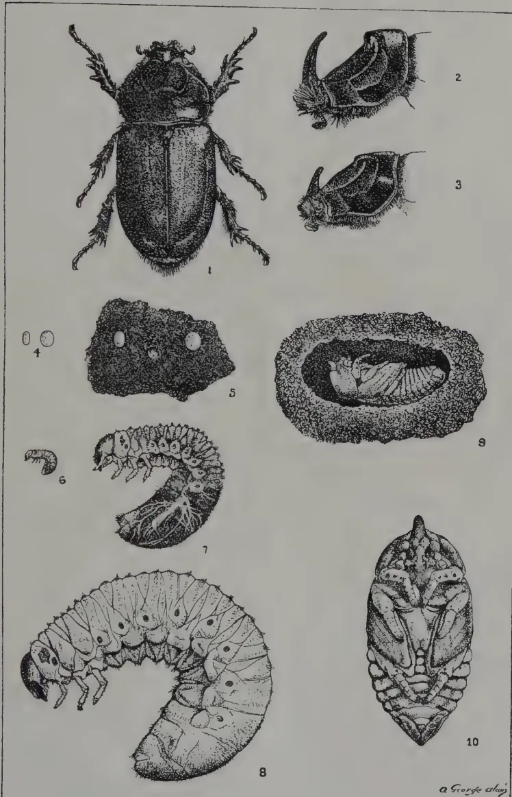
This plate contains ten detailed scientific illustrations of a beetle and its life stages, numbered 1 through 10:
a. George alagi
S G O 19727
In towns and villages. Clean up all manure and refuse heaps and pits every three months. Use the manure on the land and burn the refuse at frequent intervals.
Split up and burn all old palm stumps and logs in private compounds and kill the grubs and other stages.
General Measures. All palm stems which are to be used for building purposes, fence posts, temporary bridges, etc., must be split up within three months after cutting. Whole logs can only be used for posts, etc., if the ends are tarred thoroughly or protected from rotting.
It is important that all measures of control against Black Beetle should be carried out by all coconut estates and gardens and by all towns and villages in the coconut areas.
The grubs, pupæ and beetles are occasionally found to be killed by a green parasitic fungus (Metarrhizium anisopliae) and the grubs and pupæ are sometimes devoured by the predaceous grubs of another beetle.
J. C. HUTSON,
Government Entomologist.
Figure 1. Black beetle, female.
,, 2. Horn of male beetle, side view.
,, 3. Horn of female beetle, side view.
,, 4. Eggs, that on left, recently laid; that on right, near hatching.
,, 5. Eggs laid among coconut fibre in dead log.
,, 6. Young larva, or grub, ("manure poochie").
,, 7. Half-grown grub.
,, 8. Full-grown grub.
,, 9. Pupal or cocoon cell with one side removed to show pupa inside.
Found in a dead coconut log.
,, 10. Pupa, front view.
Figures 1, 2 and 3 slightly enlarged, figure 9 half natural size. Other figures natural size.
W. N. C. BELGRAVE.
Mycologists have repeatedly pointed out the serious results which might follow widespread attacks of leaf diseases of rubber. While plantations in Malaya have been, so far, happily free from such troubles reports received in 1918 and 1919 of extensive damage to South American plantations made it desirable that an officer of the department should visit and become familiar with the disease, thus ensuring recognition at the earliest possible moment should a local outbreak occur.
The writer visited Trinidad and British Guiana in November, 1920, and the following notes are taken from the report submitted to Government giving the results of that visit.
110[AUGUST, 1922.The first mention of the disease as such is to be found (a) in the JOURNAL OF THE BOARD OF AGRICULTURE, B.G. Vol. VI. No. 3, January 1913, and is a review of a paper by KUIPER in Bulletin No. 28, 1912, of the Surinam Department (Dept. v. h. LANDBUOW) in which the trouble is attributed to Fusicladnium Macrosporium. The disease is said to attack only weak trees and to be, on the whole, not serious. Young leaves are attacked, and infected trees may be found on plantations all over Surinam, even those in virgin forests 38 miles from the Coast. The native wild rubber Hevea guyanensis is also attacked and six year old trees have been killed. The fungus is difficult to grow in artificial culture.
(b) In July, 1913, BANCROFT (ibid VII., I) states that a fungus apparently of a new species has recently been recorded in the Colony on nursery beds, and points out the necessity for destruction of diseased material before planting out; he recommends lime sulphur spraying. The fungus was subsequently identified by MASSEE as Passalora hevea.
(c) That the disease was not seriously regarded may be gathered from a minute by the then Governor, SIR WALTER EGERTON, reprinted in J. BD. AGRIC. IX., 1 November, 1915. Drawing on his Eastern experience His EXCELLENCY predicted a healthy future for the industry in British Guiana and anticipated no trouble from disease.
(a) By the middle of 1916 the situation had changed for the worse and BANCROFT published a long article in the Official Gazette No. 228. He states that cultivated Para rubber was first imported in 1895 from Kew, in 1896-99 from Trinidad, and for the past seven years annually from Singapore. Importations have also been made by private individuals from Ceylon, Trinidad and Dutch Guiana. The area under cultivation (1916) is 4,687 acres of which 1,155 acres was on coast land, 2,854 on the banks of the Demerara and Essequibo rivers and 678 in the N.W. and Pomeroon districts. The soils vary from heavy clay, through medium loams with loose surface and much organic matter to undulating laterite further inland. In a brief review of previous literature BANCROFT notes that in 1904 HENNING'S described three rubber leaf fungi in Brazil: Dothtiella Ulei, Aposphaeria Ulei and Phyllachora Huberi.
In 1908 an undescribed leaf disease was reported in Surinam, and in 1909 a leaf disease, the symptoms of which resemble those of the present disease, occurred in British Guiana on trees from Singapore seed. These trees recovered but were again attacked in 1911, when the Economic Biologist got infections to healthy trees. In 1913 the present disease was seen on this plantation by BANCROFT and has been present ever since.
Closely similar to the leaf disease of Dutch Guiana and the Brazilian Aposphaeria, the British Guiana disease has at the time of writing (1916) spread over the whole Colony except the Essequibo Coast and the greater part of the Demarara Coast. There is no record of the disease on the 30,000-50,000 plants in the Groerge town Gardens. (Most of these are seedlings. The Gardens are in the Coastal area W. N. C. B.)
Trees six years old and 50 miles from any other Hevea plants have been attacked. Die-back (Diplodia) is believed to cause much secondary damage. The mycelium of the fungus is confined to limited area below the points of infection, and attempts to grow it in artificial media have failed.
AUGUST, 1922.]111The disease is more prevalent the larger the area under cultivation and the more humid the atmosphere. The apparent lack of connection between heavy rainfall and prevalence may be due to the possible discrepancy between recorded total rainfall and high humidity. In the H. W. district during a recent prolonged drought the disease was worse, while on the Mararuni it is now more prevalent in wet weather. The disease has been found on Hevea confusa and H. guyanensis and on no other wild plant. Spraying when leaves are - in. long is suggested, also burning of fallen leaves and destruction of wild Hevea plants.
(e) In the Official Gazette No. 2 of 20th January, 1917, BANCROFT gives an account of a visit to Surinam. He states that the disease is rampant and much more serious there than in British Guiana though climatic conditions are very similar. The total area under cultivation is about 2,400 acres mostly interplanted. When first noted the disease as in British Guiana was sporadic and did not appear likely to become epidemic till 1914. The majority of plantations are badly affected and trees of all ages are attacked and dying, in some cases losses of one-third the total planted have been sustained. The fungus is a native of Peru, Brazil, Guiana and probably Trinidad, and attacks always start sporadically on plantations. In view of the proved travelling powers of spores, destruction of wild Heveas entailing as it does great expense, can no longer be advocated, and spraying has not proved to be effective. Suggestions for the simultaneous defoliation of large areas by 'smoking' or 'gassing' are made.
(f) A full description of the fungus and its method of attack has been given by STAHEL in Bull. No. 34, January 1907, Dept. v. d. Landbouw in Surinam in which the fungus is named Melanopsammopsis Ulei n. gen. (A translation of this paper is available in the Mycological Library, Department of Agriculture.
In Trinidad the disease was found in a flourishing condition on a nursery bed of 5-7 months old seedlings. The bed was in good condition, not overcrowded, and well supplied with water. Nearly every plant was attacked and almost all the original stem tips had broken off, the attack starting on very young just opened leaves and gradually involving the stem tip.
The attack may cause wrinkling of the margin or spotting of the leaflets, in the former case death and leaf-fall soon follow, in the latter the leaflet may survive. The spots are at first dark on the light transparent background on the leaflet, becoming later light on the dark green ground, still later the diseased patches fall out, giving the leaflets a shot-riddled appearance.
Conidia are produced only in the early stage of attack, followed later by pycnospores and ascospores produced in stromata which form black star-shaped pustules on the older leaves, giving these a most characteristic appearance, difficult to figure or describe adequately but quite unmistakable once seen. The writer has never seen anything even distantly resembling this disease in the Federated Malay States.
Close to the diseased nursery bed in the Gardens was a field of very badly grown old rubber with signs of considerable over-tapping in the past. None of these trees showed signs of attack. The Acting Director of Agriculture informed me that he had seen the disease on a plantation and in one case on untapped trees.
112[AUGUST, 1922.No recently attacked leaves were seen in British Guiana. This freedom from the disease was apparently due to a prolonged dry spell. The shot-hole appearance of attacked leaves was noted and considerable information of a practical nature gathered.
The incidence of South American leaf disease is governed by the following facts (a) only one of the three spore forms—the conidial—is capable of reproducing the fungus
There must therefore be an almost continuous supply of fresh young leaves for the disease to flourish. It happens to be the case in Guiana (and presumably throughout South America) that wintering is not sharply defined as in the Federated Malay States but is spread out over the whole year. Only in abnormal years such as 1920, does a drought cause nearly simultaneous wintering, following which the disease is much reduced, as noted above.
It seems highly improbable that the fungus with its non-viable spores could ever be accidentally introduced into the East, or that if introduced it could do any appreciable damage owing to our sharp wintering season, provided the life-history remained unaltered. There is, however, no certainty that such alteration would not occur as a result of changed conditions, and should, say the ascospores become functional and be enabled to tide the fungus over unfavourable seasons irreparable damage might be done. It is, therefore, suggested that the present quarantine restrictions on import of rubber "plants" be extended to include the whole of the Western rubber growing area.*
The much greater damage done by the disease on plantations as compared with jungle trees is believed by some authorities to be due to the fact that the present sparsely distributed wild Heveas in South America represent a small immune or partially immune band of survivors from a much larger original population. Others attribute the difference to mass infection on plantations, and this appears more likely to be the current view, since
STABEL describes a species of Botrytis as constantly found with Melanopsammopsis Ulei in Dutch Guiana. The fungus is not evident on Trinidad material examined by me.
*This has since been done.
AUGUST, 1922.]113DEWSTABEL declares the disease to be worse in dry weather and attributes this to a heavier deposition of dew during fine nights enabling the spores to germinate better. The original observation is not borne out by writers or planters in British Guiana.
SOILSAppear to have no influence on the incidence of the disease. The comparative freedom of Coast rubber is most likely due to drier atmospheric conditions.
GENERALThe history of the South American leaf disease, like that of the chestnut disease of the United States, should serve as a warning to those who adopt the facile view that a knowledge of the life history of a disease is the same thing as a knowledge of practical methods of control. As it happens the failure of the rubber plantations of Guiana affects comparatively few, as the total planted area is small but it does not require much imagination to picture the effect of this or any other leaf disease rampant on the massed plantations of the Federated Malay States.
A good deal was written a few years ago about the necessity for a fresh importation of stock from Brazil, which was partially or entirely to replace our effete rubber and to be immune to many of our diseases. It cannot be too strongly urged that such importation if carried out should be under the strictest scientific control; although the likelihood of the importation and establishment of the South American leaf disease appears to be small, practically nothing is known of the diseases of rubber in Brazil and there is a serious risk of introducing some leaf (or other) disease comparatively harmless on the scattered trees of the jungle, which might spread to an alarming extent on our plantations.—AGRIC. BULL. F.M.S., VOL. IX, No. 3.
JOHN L. FROGGATT, B. Sc.
Entomologist in Charge of Banana Beetle Borer Investigations.
An insect pest (belonging to the group commonly known as "Weevils") which has forced itself into great prominence amongst banana-growers is the Banana Beetle Borer. The original introduction of this borer into Queensland appears to be shrouded in mystery, but it would seem that on many different occasions when banana plants were introduced from the islands and Jamaica, this pest was brought in with them. By widespread distribution of the imported plants many centres of infestation were formed from which the beetle has spread. At the present time it appears to be scattered throughout a very large part of the banana areas and is still spreading further afield. Even in the last twelve months an appreciable increase in the extent of distribution and amount of damage done has been observed in areas where few or no precautions have been taken. There is no doubt that this pest demands the urgent co-operation of all banana-growers in order to cope with it successfully.
Scientific investigations were begun on the banana beetle borer problem in January, 1921, since when a large amount of work has been done both in the field and in the laboratory, as a result of which much important information has been obtained on the life and habits of the beetle at different periods of the year. Through lack of any published information on systematic research work on the problem, the investigations had to be taken up from the beginning.
114[AUGUST, 1922.The whole of the development of the beetle is passed within the plant, which renders close observation of the different stages extremely difficult and also nullifies the usual methods of treatment for insect pests.
The female beetle when ready to deposit the egg usually selects a site on the plant just about ground level, where the "stem" and the bulb join. She then eats out a small tunnel and, turning round, deposits the egg in the bottom of the tunnel by means of a slender hollow tube projected from the tip of the abdomen. The egg is then lying just underneath the surface of the plant. It is opaque white and about one-twelfth of an inch in length. The egg lies in the tunnel for several days before the larva (or "grub") emerges; this period varies enormously at different times of year, the maximum noted being 35 to 37 days in July, 1921, and the minimum 4 to 5 in January, 1922.
When the grub is ready to emerge, it cuts the egg-envelope by means of its jaws and, working itself free, begins to eat its way into the bulb of the plant. At first the tunnels are very small, but as the grub develops the tunnels become larger. Many grubs may be present in the one plant and in the course of their feeding destroy a considerable amount of the substance of the bulb, which may be called the storehouse of food not only for the plant but also for its product the bunch of bananas. Where the bulb is badly infested no bunch at all may be formed, or the bunch may be small and the fruit undersized through lack of sufficient nourishment. It is not uncommon in badly infested plantations to find the young suckers small and weedy, again through lack of nourishment from the parent bulb. This is a very serious matter, for the continued prosperity of the plantation depends on the production of strong, healthy suckers.
In most cases the grubs tunnel partially round the outer portion of the bulb, and by this means damage, if not completely sever, the ends of the roots inside the plant; as a result the roots may die back or become weakened and more subject to attack by diseases, and the plant, for want of proper support in the ground, falls out of the stool.
When nearing full growth the grub tunnels towards the outer surface of the bulb and in the end of the tunnel turns into the pupa which is nearly always found just underneath the surface of the bulb below ground level. The grub stage occupies 3 to 4 weeks in the warmer portion of the year, but in the colder months this period has been extended to almost 7 weeks. The grub, when full grown, measures a little more than half an inch in length and is white with a very distinct reddish-brown head.
The pupal stage occupies 5 to 7 days in the warmer part of the year, but in the winter it is considerably prolonged. During this stage no movement occurs while the larval structures disappear and the parts of the beetle gradually form. When almost fully developed the pupa changes from creamy to a light yellow or reddish brown, which is the colour of the beetle when it emerges.
After emergence the beetle is comparatively soft, and lies quiet in the pupal chamber for several days, during which time the body becomes harder and the colour darker: that of the mature beetle is black. Before the full colour has been attained, however, the beetle may eat its way out through the plant into the soil. The beetle is a little less than half an inch in length, but specimens are obtained very much smaller than this, due to starvation in the larval stage.
At least a fortnight elapses from the date of emergence of the beetle until the first eggs are laid, but from then on the deposition of eggs is continuous. Variations in egg deposition are marked in the hotter as well as the colder months, being less at these times than in the spring and autumn.
AUGUST, 1922.]115The beetles are found sheltering (and, perhaps, feeding) in the rotting stems and corms, often in numbers.
Experiments have shown that the beetles are most abhorrent of light : though they move under the surface of the soil by day they are never found on the surface exposed to light. It is thus extremely difficult to follow the movements of the beetles by night. Experiments have been carried out with different-coloured lights to try and find a colour which would not drive them away. So far these tests have proved unsuccessful.
Numerous experiments were carried out, largely in the field, to endeavour to prove whether the beetles flew or not. So far the results have been entirely negative.
Series of tests were made with various oils, etc., to test their efficacy as attractants or deterrents. None of the substances so far tested have any practical value for application in the field.
The life of the beetle is a long one. Of beetles collected in January, 1921, and fed on banana corm, the last died at the end of March, 1922 ; in other cases of beetles bred in the laboratory and collected in the field during last year, a large number are still alive.
A long series of tests are at present being carried out on poisoning, which, from laboratory results, appear favourable as a means of destroying the beetles. If the laboratory results prove satisfactory, field tests will be instituted to prove its value under practical conditions.
The only means of control that are at present practicable are to dig out and destroy infested material and lay "corm baits" to "trap" the beetles. To make these baits, split a banana bulb into several pieces and lay each piece with a cut surface flat on the ground in or alongside the infested stool ; examine these "baits" once a day (the morning for preference,) and destroy the beetles found underneath them. Careful attention must be paid to the stems lying on the ground, as these are also liable to be breeding-grounds for the beetle borer. If chopped into small pieces, though eggs be laid in them, the grubs will not be able to mature for want of sufficient food, and the stems will rot or dry up much faster than if left whole.
Of natural enemies there is very little evidence. On three occasions a predaceous beetle grub has been found which attacks the grubs and the beetle of the banana borer, but so far there is no satisfactory evidence of this grub ever acting as a check on the development of the banana borer.
In October, 1921, a small consignment of a predaceous beetle, an enemy of the banana beetle borer, was received from Java, and liberated at once in a small area when infestation was bad in the bananas. So far it has not been recovered ; but, as records JEPSON that the developmental period is a long one (Bulletin 7, Dept. of Agric., Fiji) it must not be taken for granted that this beetle has died out.—QUEENSLAND AGRIC. JOUR., Vol. XVII, Part 5.
The laborious experiments which have been carried out by numerous investigators during the past few years on the effects which spraying with Bordeaux mixture produce on plant activities are of considerable interest to gardeners. Every gardener nowadays, it is to be presumed, considers carefully the question whether he shall or shall not use Bordeaux mixture for spraying fruit trees and Potatoes. He generally weighs the probable
116[AUGUST, 1922.]advantage against the certain disadvantage in the form of labour and time spent on the operation and cost of material, and, at all events in the case of Potatos, meteorological conditions and the situation of his garden—whether in a dry or wet district—usually give the casting vote. If the season is a wet one, of overcast days and muggy nights, or if the garden is situated in a moist district, the gardener generally elects to spray this crop; but if on the other hand the season is fine and dry and the district is one with a low average rainfall, spraying is often omitted. There are, of course, many large Potato growers, for example in Lincolnshire, who have adopted spraying as part of the routine of Potato cultivation, and who spray this crop always twice or thrice during the growing season. If, however, it could be shown that spraying with preparations of copper sulphate produces beneficial results apart from its undoubted effect in preventing “blight” the practice would undoubtedly become more general, and growers in this country would spray with Bordeaux as regularly as do the Potato-growers in Ireland. In the present state of knowledge, however, it cannot be said that spraying with copper sulphate preparations does produce beneficial results. That it produces well-marked and definite effects on plant growth is, of course, well-known. For example, it has often been pointed out by growers that sprayed plants keep green longer than unsprayed plants, stand longer, and ripen their tubers later. It is also probable that, because of the longer season of growth induced by spraying with Bordeaux mixture, the crop yielded by sprayed plots is larger than that yielded by unsprayed plots even when disease has been absent from both. Clearly the advantage of the heavier crop may at times be outweighed by the disadvantage of delayed ripening, for as everyone knows, the keeping power of Potatos is affected adversely by unfavourable weather conditions as the time of lifting, and as the autumn wears on, the weather is apt to grow worse. Nevertheless, and particularly for gardeners who grow successional Potato crops, an increased yield is a strong point in favour of spraying; since even if the year proved a good one and no blight occurred, the cost of the operation would, at least in part and perhaps in whole, be recovered in the value of the increased crop. Moreover, the gardener, at all events, has a ready means of discounting the retarding effect of spraying. By sprouting the sets he is able to delay planting till the risk of the haulm being affected by late spring frosts is but slender and yet get his crop in early. There is, of course, no need here to dwell upon the advantages of sprouting the sets, though it may be worth while to mention that in large scale experiments which we had an opportunity of witnessing last year, sprouting made a difference in the yield of one ton to the acre. As to physiological effects of spraying with Bordeaux mixture, experiments by MESSRS. DUGGER and BENNS* and by other investigators show conclusively that the rate of water loss (by transpiration) is increased as the result of spraying. They also make the further interesting observation that the increase of transpiration takes place not, as might have been expected, by day, but at night. They incline to the view that the mode of operation of the film of copper sulphate on the leaves is physical and that the increased rate of loss of water at night is due to guttated drops of water excreted from the leaves running as films on the copper sulphate particles, and thus getting evaporated more quickly. In support of this view, they point out that films of other substances, iron, aluminium and magnesium hydrate, produce an effect analogous to that brought about by copper sulphate. The explanation does not seem to us to be very satisfactory, and before accepting it we should require to know whether the increased natural transpiration rate is or is not accompanied by increased
* The Effect of Bordeaux Mixture on the Rate of Transpiration. ANNALS OF THE MISSOURI BOTANICAL GARDEN, Vol. II., 1918.
AUGUST, 1922.]117growth. It is evident that further investigation of the problem is required, and it is much to be desired that it should be so carried out as to provide a conclusive answer to the question—of some practical importance—whether spraying produces such an increase of crop as to make it a paying proposition even in seasons when blight does not make its appearance or work its havoc on a large scale.—GARDENERS' CHRONICLE, VOL. LXXI., No. 1848.
RUDOLPH D. ANSTEAD,
Deputy Director of Agriculture, Planting Districts, Madras.
Cut-worms, which are the larvæ or caterpillars of various species of moth, often do a considerable amount of damage to young crops. We often have specimens sent in and enquiries made how to deal with this pest, and they have been reported to destroy young Coffee and young Tea plants. Cut-worms are especially troublesome in vegetable and flower gardens, eating off young plants just below the ground level.
It has been found in America that the most successful means of dealing with this pest is to protect the young seedlings and plants with a collar of some sort. The caterpillars or worms are only able to work in the top two or three inches of soil, and if a collar is placed round the plant and pressed in to the soil for the depth of a couple of inches or so, the insect is unable to either climb over it or burrow underneath it, and the plant is, in consequence, protected till it gets of such a size that it is able to resist the attack.
These collars may be made of tin, and we have seen cigarette tins with the bottoms cut off used most successfully. The objection to these is that if they are left a little too long the plant grows so big that the tin cannot be removed without damaging it. That difficulty may be got over by using strips of tin plate which are bent round in the form of a ring so that they can be easily removed. Tin plate is, however, expensive and soon rusts.
We have just received some samples of a special rot-proof paper which has proved a great success as a protecting collar for young Coffee which in Kenya Colony is apt to be destroyed by Cut-worms. The paper is bent in the form of a ring round the plant and pressed down into the soil. The Cut-worms are unable to eat the paper shield which contains a certain amount of insoluble copper and this prevents them also from rotting.
The paper is made in two qualities, a two-ply paper which has been proved satisfactory and a one-ply paper. There is evidence to show that this latter is equally effective.
The paper can be obtained from the Dux Chemical Solutions Co., Ltd., St. Leonards Works, Hancock Road, Bromley by Bow, London, E. 3, at the following rates delivered in London, F.O.B.—
One-ply 38 inches wide at 4d. per yard.
Two-ply 38 inches wide at 8d. per yard.
or Shields one ply paper 4 inches by 3 inches at 7/s. per thousand.
Two-ply paper 4 inches by 3 inches at 14/s. per thousand.
We strongly advise those who are troubled by Cut-worms, either on the estate or in their gardens, to give these shields a trial. Samples may be obtained if necessary from the Deputy Director of Agriculture, Planting Districts.—PLANTERS' CHRONICLE, VOL. XVII., No. 24.
118[AUGUST, 1922.]P. FOWLIE, N. D. A., N. D. D.
The first essential in dairy farming is to get the right kind of cows. The second is to care for and feed them in such a way as to enable them to give the most profitable returns. It cannot be too strongly insisted upon that a small herd of really good cows, looked after on business lines, is a much more profitable asset than a large herd of fair average cattle indifferently managed.
In South Africa far more cows are ruined by underfeeding than by overfeeding, but it must be pointed out that it is quite possible to feed heavily, but so expensively as to make it impossible for the herd to return a profit. Speaking generally, the more feed there is used, especially if it is purchased feed, the more care and skill is necessary in supervision in order to make profits. In this article the aim of the writer is primarily to indicate the lines along which our output of dairy produce could be increased with profit to the producers.
The only really sound way to determine which cows are profitable is to keep a record of their yields. This is best done by weighing and recording the weight of the milk yielded at each milking, but where the necessary supervision to do this is not available the total yield of each cow can be calculated fairly accurately by weighing the milk at regular intervals of a week or a fortnight, both morning and evening milking being weighed each time. When the yield is known, it is easy to calculate its value, if it is sold directly as milk, but if it is separated and cream is sold the milk of each cow requires to be tested for butterfat before her value as a cream producer can be calculated. Cow records ought, therefore, to be complete, to show the weight of milk yielded by each cow, and also the percentage of butterfat in her milk. The cost of each cow should be calculated by keeping an accurate account of all feeds purchased, and estimating the cost of production of all home-grown feeds. To this must be added the cost of labour for attending to the cows, also sundry charges such as cost of dipping, medicines, etc. The losses of cows dying must also be taken into account, unless these are covered by insurance, when the insurance rate can be taken. When the cost has been arrived at, all cows which do not yield enough to leave a profit after paying their share of the cost must be disposed of or put
AUGUST, 1922.]119on cheaper feed. The latter course is not to be recommended in the case of men dairying on good land or near a town, but cows which are unprofitable in a dairy herd may, if hardy and big-framed, be profitable as breeders if kept cheaply and their offspring be reared for beef production.
A regular system of having a time for everything—milking, feeding, going to pasture and coming in, and doing everything at its own proper time every day, coupled with an endeavour to make the animals as comfortable as possible at all times, goes a very long way to ensure success. Even frequent changes of diet are not advisable. If it is necessary to change from one ration to another the change should be made gradually, a little of the new feed being given at first and gradually increased before the old is altogether discontinued. The intervals between milkings should be as nearly the same length as possible. The frequently followed system of having the night period a good deal longer than the day one causes the morning milk to be of poorer quality than the evening milk, and in the case of heavy milkers decreases the total yield. Cows ought to be handled quietly and in a kindly manner at all times. When going to and from their pastures they ought to be allowed to walk slowly. It is not advisable to have to graze cows at any very great distance from the homestead. It has been noticed that the milk-yield of heavy milking cows will drop several pounds per day when the cows are sent to graze in a field half mile from the homestead after having been grazing in a field alongside, even although the grass was better in the more distant pasture. On this account it is often advisable on large farms to have outstations for milking cows which have to be grazed in distant paddocks. The system of management prevalent in South Africa of allowing the calves to suckle the cows at milking time does not allow the owner to get nearly so much milk for disposal as when the calves are taken from the cows and hand-reared. When the owner hesitates to incur the labour of supervision which is necessary for the successful hand-rearing of all the calves, a good plan is to foster the calf of one cow on to another cow calving about the same time, thus allowing one cow to rear two calves and freeing the other cow to milk without her calf. In Britain, where this system is largely practised in some districts, cows are often made to rear three calves in one season. When the first two calves are about four months old, they are weaned and the cow is given another young one to suckle her during the remainder of her lactation period. The labour involved in getting the cows to agree to this plan is much less than most people imagine who have not tried it. It is best to take a calf which is a week or ten days old to foster on to a cow that has just calved. If such a calf is brought in to the cow when she calves and smeared with some of the matter from the cow's own calf, she will usually accept both as a matter of course. When this plan is not possible and a cow has to be persuaded to take a fostered calf after she has been in milk some time she may give some
120[AUGUST, 1922.trouble. In such a case it is usually necessary to tie her up at first to allow the calf to drink, but usually after a time she will, unless very wild (which dairy cows ought not to be if properly reared) take to the fostered calf.
The season of the year at which calves are born often requires to be controlled. Where a regular quantity of milk has to be maintained for sale it is necessary to arrange to have cows calving at all seasons. Where cream is sold, the case is quite different, and it is usually advisable to arrange to have most of the cows to calve in the late winter and early spring. Cows which calve at this season are in full profit when the grass is at its best in spring and early summer and give a maximum yield of butterfat for a minimum of outlay in foodstuffs. The calves which are born at this season are usually healthy and require a minimum of feed also. Summer calves are not to be desired unless it is necessary to have cows freshening at this season to maintain a supply of milk, because they are more liable to suffer from scour and other calf ailments during the hot weather than those born at other seasons. Also they are too late to get much feed on the grass, and require a good deal of expensive food to bring them through the first winter.
Where milk is worth a good price it is not a profitable system to allow the calves of good dairy cows to suckle their mothers. The following scale of rations for hand-reared calves is intended as a guide to those who have not had previous experience in hand-feeding calves, but the rations given may vary a good deal from this scale, and yet good calves be reared. The great thing is personal supervision on the part of the man in charge to see that each calf gets its proper ration each meal. A large healthy calf will take with advantage somewhat more than the suggested ration, whilst an undersized calf or one that is not thriving properly ought to be kept on somewhat scanty feed. Usually calves are fed twice a day, but they will do better if they can be fed three times a day for the first few weeks, and when it is convenient to keep a few heavy milking cows near the homestead, where they can be fetched easily to be milked at midday, it is a good plan to do this and feed the youngest calves three times a day. All buckets used for feeding calves should be properly washed and scalded or steamed after each feeding time in the same way as milking buckets.
First Week.—Its own mother's milk freshly milked, three times a day if possible, starting with half a gallon per day and increasing to from 1 to gallons per day by end of week.
Second and Third Weeks.— gallons of warm new milk daily, not necessarily its own mother's.
Fourth Week.—Commence to substitute skim milk for whole milk; the skim milk to have about 1 quart of gruel or thin porridge added to each gallon.
AUGUST, 1922.]121The gruel may consist of linseed meal, maize meal, oat meal, or a mixture of meals. All meals used for feeding young calves ought to be finely ground or well boiled. (Some calf-rearers prefer to give all the meal to calves in the dry state in troughs, and give the milk by itself. This answers well if the whole milk is continued until the calves have begun to eat dry meal, which they will usually do by the time they are a month old.)
Second and Third Months.— to 2 gallons of skim milk per day, gruel or meal being gradually increased, and hay being always available. If the season is spring or summer, calves may be put out to graze in a pasture where there is shade from the midday sun.
Fourth and Fifth Months.—Skim milk may be increased to gallons per day, if available. Meal should be increased to about 1 lb. per day, and calves should be taught to eat any cattle feed that may be in season. A plentiful supply of good hay ought always to be available.
Where milk is sold or made into cheese and no skim milk is available, calves usually have the supply of whole milk gradually reduced after the first month and are given gruel as a substitute. Sometimes under this system the milk is stopped altogether when the calves are only about two months old, but it is strongly recommended that they should have at least gallon of whole milk per day during the third month also. It is a universally recognized rule that calves ought to have whole milk, and very little else, for the first three or four weeks.
Heifer calves which are to be kept for cows ought to be well looked after during the first winter season after weaning and not allowed to fall off in condition, as this retards their growth. When weaned they should be separated from the ox calves, grazed near the homestead, and brought in morning and evening to be fed. It is not recommended that they should sleep in sheds or kraals unless in the coldest months on high-lying farms where there is no natural shelter. They are healthier in the open. Heifer calves, from weaning to one year old, can have from 1 to 2 lb. of meal daily along with hay and silage or any green feed that may be available. Crushed oats is, perhaps, the best meal, but two parts of maize meal and one part of bran makes a very good meal for young stock, and it is best given dry. A little lucerne hay along with good grass hay is a very useful addition to the ration. If young heifers are treated in this way until after the first winter they can be run on any available pasture of only moderate quality afterwards until they are ready to calve without suffering in any way, receiving of course such hand-feed in winter as may be necessary according to the locality.
122[AUGUST, 1922.When from 18 months to 2 years old, according to how they have been done and the season of the year, they may be put to the bull. When they become heavy in calf any that are in poor condition may be brought in daily and fed so as to get them into fair condition before calving. If they are in good condition they need not be brought in till they show signs of approaching parturition. Cows and heifers in calf ought not to be made fat before calving, as this increases the risk of losses in calving. If cows are in moderate condition and have been running out there is usually little risk of allowing them to calve in the veld, but it is advisable to have young heifers either in a yard or a paddock near the homestead, where they can be watched and given assistance if necessary.
The cheapest feed for dairy cows is young succulent grass of good quality. When this is plentiful it will only pay to supplement it with more concentrated feeds when milk is being sold at a very good price. When the grass in the veld becomes coarse with age or in seasons of drought when it becomes parched, it is advisable to give additional feeds. This should, as far as possible, be grown on the farm and may be partly succulent feeds such as silage, green barley, oats, rye, or lucerne, and partly concentrated feeds such as maize meal, crushed oats, wheat bran or middlings, brewer's grains, and the various oilcakes. The question of the relative values of these feeds and the method of calculating properly balanced ration cannot be discussed here, but for impressing on readers the fact that to be profitable a ration must be sufficiently nutritious and well balanced to enable the cow to use the largest possible percentage of her food for milk production. The commoner farm foods, such as grass (except when in the first flush on good lands), maize in all its forms, green barley, oats, rye, etc., are all deficient in nitrogenous flesh-forming constituents which are essential for milk production. Leguminous feeds, such as lucerne, cowpeas, soya beans, and vetches, and also concentrated feeds, such as wheat, bran, brewers' grains, and oilcakes, are rich in these flesh formers. Hence one or more of the latter feeds ought always to be used in conjunction with those of the former class.
In many parts of South Africa cows are not grazing all the year round, and this must be taken into account in making up suitable rations. Experience is necessary on any farm to determine how much feed is necessary to supplement the natural grazing at different seasons, the following rations are only intended as a guide, and may be varied as circumstances may seem to require :—
Under these conditions, usually only grain feed will be given, but lucerne hay, if available, is a very valuable addition to such grazing; 4 to 6 lb. per head per day of one of the following mixtures of concentrated
AUGUST, 1922.]123feed is suitable :—
(b) Feeds to be given to cows on rather scanty grazing or grazing which has become coarse and of low nutrient value.
(1) Suitable for parts of the Cape Province :—Succulent green food such as green barley, oats, or rye, 10 to 15 lb. ; lucerne hay, 3 to 5 lb. ; oat straw, 6 to 10 lb. ; dry brewers' grains or wheat bran, 4 lb. ; maize meal or crushed oats, 4 lb.
(2) Suitable for high veld districts :—Mangels, swedes, cattle melons, or pumpkins, 20 to 30 lb. ; cowpea hay, 3 to 5 lb. , teff hay, 5 to 8 lb. ; dry brewers' grains or wheat bran, 4 lb. ; maize meal or kaffir corn meal, 4 lb.
(3) Suitable for the warmer parts of the country :—Succulent green feeds such as cane tops, Napier fodder, teosinte, maize (cut when cobs have well developed), etc., 10 to 15 lb. ; hay of one of the legumes, 3 to 5 lb. ; maize hay or sweet grass hay, 5 to 10 lb. ; dry brewers' grains or wheat bran, 4 lb. ; maize meal, 4 lb.
(4) Suitable for all parts where silage is available :—Silage of maize and cowpea or other legume mixed, 20 to 30 lb. ; hay (maize, teff, sweet grass, etc.), 6 to 10 lb. ; dry brewers' grains or wheat bran, 4 lb. ; maize meal, 4 lb.
Note.—If silage used is made of maize alone it is advisable to feed some legume hay in this ration as given in the others.
If cows are dependent entirely on house-feed, the succulent feed and roughages given in above rations will require to be increased about 25 per cent. over the higher figures, the meals remaining about the same. These rations are suitable for cows yielding about 25 to 30 lb. ( to 3 gallons) of milk. Heavier milking cows require about 3 lb. of mixed meal extra for each gallon of milk yielded over that amount. A useful rule to remember is that, provided the succulent and dry feeds being given are sufficient to maintain dry cows in healthy condition, cows in milk should have 3 lb. of mixed meal for each gallon of milk they yield. The market value of different foodstuffs ought to be closely watched by the cattle feeder, and those foods used which will supply the necessary nutrients at the lowest cost. Where costs appear to be about equal, use the feeds most relished by the cows. Besides their ordinary feed it is always advisable to give cattle common salt and sterilized bone flour. In some parts of the country the need for these is much greater than in others, so the best plan is to place them either separately or mixed together where the cattle have access to them at all times, and allow the animals to help themselves. In this way they will take just what they require. Sometimes salt is mixed in the feed. If this is done the quantity given ought not to exceed 2 oz. per day.—JOURN. OF THE DEPT OF AGRIC., UNION OF SOUTH AFRICA, Vol. IV, No. 5.
124[AUGUST, 1922.J. C. ABAYAWARDENA,
Agricultural Instructor, Pasdum Korale East.
The above Show was held at the Bellana Vernacular Boys' School-hall on the 24th June, 1922, at 10 a.m. under the patronage of MR. B. G. DE GLANVILLE, C.C.S., Assistant Government Agent, Kalutara, who opened the Show in the presence of a large and representative gathering.
The School-hall was gaily decorated with bunting, the tender leaves of the coconut palm, ferns and flowers. A pandal was erected at the entrance to the school hall and the exhibits were arranged remarkably well into 18 sections comprising 154 classes.
Sections 1, 2 and 3. Fruits, Plantains and Vegetables.—These sections were filled in well and on the whole there were splendid exhibits in spite of the unfavourable weather. There was keen competition in Mangosteens and Oranges. Among vegetables Pumpkins and Gourds were well represented, and very good specimens of Bandakkas and Chillies were exhibited.
Exhibits of Plantains were generally poor which I believe was due to prevalence of bunchy-top disease.
Section 4—consisted of sugar-canes, betel leaves and dry and tender arecanuts. Sugar-canes were well represented and excellent specimens of several "hurulu" of betel were seen. Arecanuts on the whole were poor.
Section 5, Yams.—There were several kinds of yams, Manioc, Sweet potatoes, Gahala, Kondol, Innala, Kukulala, Suduala (white yams), Hulan-kiriya (arrowroot, and green turmeric. There were fair specimens of Gahala and Kondol grown in Bellana School garden. It is a matter for regret that there were no specimens of green ginger exhibited.
Section 6.—This consisted of several varieties of mud and hill Paddies, Kurukkan, Meneri, Gingelly, Green Gram, Amu, Indian Corn, Karal Iringu, Rice (raw and boiled), and was one of the best represented sections of the Show. There were eight varieties of paddy grown locally and the judges had real difficulty in awarding prizes to the deserving exhibits.
Section 7, Curry Stuffs.—There were few entries for this section and those were not up to the standard except the onions, grown in Bellana School garden.
Sections 8 and 9, Oils and Treacle.—Large and varied collections of oils such as coconut, king coconut and gingelly were exhibited. There were also exhibits of jaggery and treacle of coconut, kitul and sugar-canes.
Sections 10 and 11, Rubber and Coconuts.—This being a Rubber District a large collection of rubber exhibits including plain diamond sheets and scrap rubber were seen. Exhibits of coconuts were on the whole well represented.
AUGUST, 1922.]125Section 12, Flowers.—There was a keen competition of wild and cut garden flowers. MR. W. H. B. CARBERY, C.C.S., District Judge, Kalutara, exhibited (not for competition) a splendid collection of Cannas grown in his garden. There was a collection of foliage pot plants exhibited by Miss LILY M. JAYASINGHE of Bellana which was also greatly appreciated.
Section 13, Dairy Produce.—consisting of cow and buffalo ghee were exhibited but no specimens of butter were seen.
Sections 14 and 15, Cattle and Poultry.—were fairly well represented considering the district.
Section 16, School and Home Gardens.—Out of the ten school gardens in the Korale six competed and the first prize of Rs. 15 was awarded to Agalawatta Boys' Vernacular School as the best school garden and a prize of Rs. 10 was awarded to Lathpandura Boys' Vernacular School which came second. Five Home Gardens competed and the first prize was awarded to a pupil of Bellana School and the second prize of Rs. 5 was awarded to a pupil of Lathpandura School.
It is a matter for regret to note that comparatively speaking very little attention was paid by the teachers in charge of registered school gardens with regard to the Show which I believe is due to their lacking in theoretical knowledge of Agriculture.
Section 17, Transplanted Paddy.—There was lively competition in paddy transplanting in all the Vidana Arachies' divisions except that of Welgama Palata. It is a matter much to be deplored that the Vidane Arachie of this division had not taken any interest in this.
The following ten rupee prizes were awarded as shown below :—
| V. A. Division. | Name. | Extent Transplanted. |
|---|---|---|
| Meegahattenne Palata | D. A. Wimalawardena | Pela |
| Warakagoda Palata | D. J. Wijewardena P. V. | Pela |
| Magura Palata | D. J. Wijetunge V. A. | Pela |
| Bellana Palata | S. A. Haramanis | Pela |
| Agalawatta Palata | D. Bastian V. V. | Pela. |
A crop report of the above plots will be submitted when harvested.
Section 18. Bee-keeping.—No competition took place in any of the schools and I propose to put in special efforts in encouraging bee-keeping in schools to enable them to compete in subsequent shows.
The following acted as judges :—Mesdames J. W. Oldfield, J. J. de Mel and Messrs. J. W. Oldfield, B. G. de Glanville, W. H. B. Carbery, F. Burnett, H. E. Candy, F. H. Griffith, W. N. Goonewardena, Reginald Senanayake, D. T. Perera, H. W. de Zoysa, W. M. P. Corea, J. A. Alles, J. C. Abeywardena, Edwin A. Pieris, O. P. Silva, S. Ponnusamy, K. S. Menon and W. F. Seneviratne.
On the whole the Show this year was well organised. The co-operation of the planting community in village shows is a very healthy sign. The Divisional Agricultural Officer, S. D., Galle delivered an interesting and instructive lecture on Paddy Cultivation on its various aspects and about the management and control of Co-operative Credit Societies. MR. W. H. B. CARBERY delivered an address on vegetable cultivation and poultry farming. The Department of Agriculture had vegetable and flower seeds for sale. The success of this Show was in a large measure due to the efforts of MR. DE MEL, MUDALIYAR of P. K. EAST, who takes the keenest interest in all matters agricultural. Thanks are due to MESSRS. J. A. ALLES, Asst. to D. A. O., S. D., and EDWIN PERIES for assistance to the Agricultural Instructor of the district in connexion with this show.
126[AUGUST, 1922.TRADE MARK 'TABLOID' BRAND First-Aid, No. 715
Will relieve your anxiety when accidents occur. The contents are always ready for use and fresh, no matter what the climate may be.
Size: inches
'TABLOID' PRODUCTS
'SOLOID' ANTISEPTICS
![An illustration of the contents of a 'TABLOID' First-Aid, No. 715 kit. The kit is an open rectangular box. Inside, various items are neatly packed and labeled with arrows pointing to them. The labels include: 'INSTRUCTION BOOK' (a small booklet), 'CARRON OIL' (a small bottle), 'SPONGE' (a piece of sponge), 'SAL VOLATILE' (a small bottle), 'TABLOID TRIANGULAR BANDAGE' (a triangular bandage), '2 1/2 IN. BANDAGE' (a roll of bandage), 'JACONET' (a roll of fabric), 'PROTECTIVE SKIN' (a roll of skin), 'VAPOROLE AROMATIC AMMONIA' (a small bottle), 'CASTOR OIL' (a small bottle), 'PINS ETC.' (a small container), 'BOROFAX' (a small container), 'COTTON WOOL' (a pile of wool), and '1 IN. BANDAGE' (a roll of bandage). The brand name 'TABLOID' is visible on the inside of the box lid.](3babc28acabc46c91df728a954ef84f3_7_img.webp)
'TABLOID' FIRST-AID, No. 715, with its contents displayed (from a photograph)
BURROUGHS WELLCOME & CO., LONDON AND BOMBAY
xx 3481
All Rights Reserved
(POULTRY KEEPER.)
The average poultry keeper is always in too great a hurry about the raising of chickens and is always in a fuss with the sitting hen. Once you decide upon the object of Poultry you mean to have whether for egg production or the table, let the poultry keeper when setting the eggs, always procure by purchasing or breeding the eggs for hatching. If by purchase the buyer should go to a recognized breeder, who not only has the class of birds that the poultry keeper wants, but who also has a reputation for straight dealing.
And here it may be said that in buying, the purchaser should buy well up to his financial ability, for from the alleged 'cheap' egg no satisfactory result can be obtained, and failing that satisfaction a whole season will be lost while waiting for the development of the chickens.
AUGUST, 1922.]127The class of birds to select from when seeking for higher egg production or better table quality, are generally found amongst the white Leghorns for eggs, Buff Orpington and Rocks for table, also the English Game. In choosing eggs for sitting, discard the abnormal egg, good quality eggs for hatching will be found in the one of the normal size, of a smooth shell also free from corrugations and of a good oval shape, one not too long or slim or the reverse. As has been said the egg should be set promptly for the earlier life of the egg contains the stronger germs which will speedily respond to the quicker temperature. If a hen is to be employed for the incubating function, let there be no mistake about her ability and intention. For there is nothing under the sun more annoying from a poultry man's point of view, than for him to find himself landed with a setting of eggs, which has possibly cost a guinea or two, and in possession of a hen that has changed her mind. So that instead of, as she fairly promised, taking on a matronly task, she resolves to wait a little longer.
A hen most suitable for patient sitting with eggs or for looking after the chickens when hatched should be selected from such breeds as have in their veins a fair medium of Asiatic blood. For instance, the above named hens carry out their duties well from first to last, viz :—The Buff Orpington, Wyandottes, or in fact any breed of Orpingtons, Dorking Rocks, etc., and also the English Game.
As there is a black sheep more or less in every flock, it will be as well when selecting a hen even from the breeds named to test her with two or three china eggs, so as to see if she means to settle down. A hen of that breed having taken to her nest may be relied upon to fulfil her duty. The hen besides being a good sitter should be free from vermin, from scaly leg, and in robust health. These are the main features of a good sitter.
As a matter of health, this must be beyond doubt. So should the other essentials. I am a strong upholder of the use of Kerosene in keeping the insect pest in check.
This may be done by occasionally brushing "Kerosene" over the roosts etc. It is also of service if the hen is suffering from Scaly Leg. In such a case as a Broody hen being troubled with Scaly Leg use the "Kerosene" or other remedies before the eggs intended for hatching are given to her. This is advisable for the sake of the eggs which otherwise may be soiled to their detriment. Moreover it is important to clear the hen of the trouble before she takes to her proper nest.
A "Scaly legged" hen will invariably infest her chickens with this complaint. Prior to setting a hen, in a nest, a suitable place must be provided : of all the places in a poultry establishment, the poultry house is the worst place to carry on even the simplest form of incubation. In nature the hen will choose the most private place and one difficult of access. She demands quietness and freedom from any intrusive features that are quite absent in a poultry house. Apart too from this desire, the nest and its contents are endangered by the presence, intrusion and possible attacks from fowls, the result in such cases being broken eggs and the nest turned down. Having therefore been warned of the dangers of the proximity of poultry to the sitting hen the poultry keeper will do his best to find a suitable place to fix up the nest. That having been done, the nest may now be arranged.
128[AUGUST, 1922.Much will depend upon the season as to the suitable structure of a nest. Should the weather be wet the nest should be in a box, or other receptacle with a dry floor. On the other hand with the soil dry and warm, the nest may be on the ground, which should be well covered with straw or some other suitable material.
Whether the nest be on the ground or in a box, let the floor space be ample. It is a mistake to have a small poky nest, to interfere with the movements of the hen. Therefore let the nest place be large to give freedom. So that space may not in any way lead to the eggs rolling away from the hen and being neglected, see that the centre of the nest is to the west part of it, and the outlying part sloping inwards. Having the nest ready and the hen in a proper frame of mind, let the hen have her liberty from the dummy eggs already in the nest. See that the hen has a supply of food and water, let the water be supplied fresh every day. The hen being now accustomed to her nest, the eggs ready for hatching being marked, they will now take the place of the dummies.
The procedure should be well towards evening so that the hen eager for her nest and quietness will enter without ado, and presently cover and shuffle the eggs to her satisfaction. It is advisable when the hen is settled for the night for the box or receptacle to be covered, and the hen kept in a darkened apartment for the first few days. With the hen well settled she may after a while be left free to go and come as she pleases the precaution being taken that she is supplied with proper food and water and a dust heap for her to roll herself in. As insect life breeds fast under the condition required for the incubation of chickens it may be taken for granted that the pests will not neglect their opportunity with the broody hen as their host.
Their presence is very objectionable to the hen for they are making constant inroad into her flesh extracting her blood and sapping her vitality. The dust heap is a capital means of reducing the insect pest but it is not sufficient to entirely rid the hen of their presence and consequent annoyance. It is therefore necessary, absolutely necessary both for the well being of the hen and for the safety of the eggs, that the nest is thoroughly renovated at least once a week.
This overhaul should be done when the hen is off her eggs for her food. The eggs then may be quickly removed to a secure place and the nest removed to a safe place and the straw burnt. The box may be then well smoked or well treated with Kerosene or other suitable insect destroyer. When finished and fairly well dried, if the day is hot a wet box will be objectionable, sufficient soft straw or other material will then be used for the nest, and the eggs carefully returned, while the eggs are out of the nest, should the day be cold, they should be kept well covered to keep their temperature right. The hen during the operation of the overhauling of the nest may be impatient to resume her duties. A little extra food may help to keep her employed, but in no case allow her to return to the nest before the eggs have been properly placed in it. This insect pest question in connection with the hen sitting on her eggs is all-important and a greater source of trouble. Should the pest get the upper hand the hen will not only be likely to fail in her duty, but she will in nine cases out of ten leave the eggs and that within a day or two of hatching.—FARMERS' JOURNAL, Vol. IV., No. 22.
AUGUST, 1922.]129Some interesting points, raised by a recent recruit to the Ceylon Bee-keepers' Association, have been submitted to the older and more experienced members whose opinions should prove of value to others. One point was the question of reducing the dimensions—length and breadth—of the entrance in the temporary standard hive, with a view to minimising the risk of damage by wax moth.
MR. CROZIER, writes: With reference to the question of contracting the entrance with the object of keeping out wax moth, my experience under tried conditions is that the only means of circumventing the moth is by regulating the frames in the hive. For instance, when hiving a swarm, I would begin by giving them, say, two frames only, with foundation, and leave all the rest empty. In two or three days' time the foundation in the two frames should be drawn out, and the queen will have started to lay. Now another frame with foundation may be introduced, and in this way an addition of one frame with foundation made once a week or so. In taking combs from a pot-hive, with a circular entrance about 7 in. in diameter, I found no evidence of trouble from moth. In one case I reduced the entrance of a hive to 1 in. long and in. wide but, as I did not take the precaution of regulating the number of frames as above explained, I found the grub of the wax moth among the combs within a fortnight. Whereas in the case of a temporary standard hive with the usual entrance into which I had put a swarm a week previously, giving them only two frames with foundation, and throwing away all the brood combs taken from the pot-hive, everything went well. I invariably reject all brood-combs when transferring a wild colony from a pot or tree hollow, and give them a fresh start, with the result that I have no trouble with wax moth. Under natural conditions I have not met with moth, unless in abandoned hives, and I know of cases where the moth had ample opportunities to get at the combs through openings other than the entrance, but which were free from trouble simply because there were no combs left uncovered by the bees. (MR. CHAS. ANDREE, in his hive, has two parallel entrances each in. wide instead of one in. wide).
130[AUGUST, 1922.The late MUDALIYAR JAYATILLEKE, who was one of the pioneers in rational bee-keeping in Ceylon, was of opinion that our bees have a preference for earthenware hives. Whether the Mudaliyar tried the experiment of making a hive of the modern type of earthenware is not recorded. The coolness and porosity of earthenware are certainly points in its favour in a tropical climate : but the disadvantages of a hive fitted with bar frames all made of earthenware are obvious.
The comparative merits of a double-walled and single-walled hive were also submitted for an opinion. MESSRS. GOONATILLEKE, SMERDON and CROZIER consider, the single-walled hive quite suitable to local conditions, provided it was kept protected from the sun. MR. SMERDON, however, thought that for the higher elevations the double-walled hive was to be preferred.
With reference to the cover, MESSRS. GOONATILLEKE and CROZIER agreed that the flat lid was more convenient to handle, minimising the risk of crushing bees when closing the hive, and preventing their clustering in the hollow angle of roof lid. With the flat lid, however, it would be necessary to protect the hives from rain, which would not be the case with the hives having roof lids. MR. CHAS. ANDREE is adopting the flat lid. The use of portable straw-roofs to be employed as protections against sun and rain has been suggested.
In regard to the matter of placing the frames parallel to the front of the hive, instead of at right angles, as is usually done, MR. GOONATILLEKE remarks that the former plan only suits cold climates. In a state of nature bees sometimes construct their combs in this way when they have to deal with a large cavity, but not otherwise.
Another point raised was with reference to the advantage or otherwise of doing away with the super, and providing lateral accommodation on either side of the brood box, for storing honey-partitioning off by means of excluder sheet. MR. GOONATILLEKE says that the honey secured in this way may be got free from brood, but will not be free from pollen : also the bees will take a larger time to complete the combs in such compartments than in a super, due probably to the fact that bees by nature store honey above the brood.
Two of the members of the Bee Association are giving a trial to "lateral supers."
A suggestion was made by a member that the entrance to the hive should be placed midway on the front wall of the hive, and not at the bottom ; he pointed out that an alighting board was not provided in natural hives into which bees fly straight. MR. GOONATILLEKE, writes : "I am inclined to think that having the entrance as now helps to expedite the work of the bees."
C. D. AUGUST, 1922.]131What now forms one of the most attractive features in the Hakgala Botanic Gardens is the new Rock and Water Garden which has recently been opened. It is situated on the North-West side of the Fernery and can be reached by the path leading from the upper walk in the Fernery or by the new path leading up from near the entrance to the nursery.
The work of laying out the garden has taken most of the labour force the best part of twelve months. The lower portion of the garden which was formerly an ugly swamp has been drained, two ponds made and a lawn successfully established.
During the work of opening up the garden it has been necessary to remove several large conifers, including Cupressus torulosa, Cupressus macrocarpa, Cupressus funebris, Cupressus gracilis and Pinus sinensis, and also a few indigenous trees. In the centre of the Rock Garden a very fine specimen of Cupressus Knightiana has been retained, whilst to the North, good specimens of Cupressus macrocarpa, Tristania conferta, Eucalyptus robusta, etc., form an ideal screen and background to the garden.
Practically all the rocks in the North, South and East of the garden were transported from near the Eucalyptus, Pinus and Camphor plantations. Only lichen-covered rocks were chosen, so that these would be in keeping with the original rocks in the centre portion of the garden. The transporting and arranging of the rocks took the best part of four months to complete.
Water for the three lily ponds has been obtained from the upper portion of the stream running through the Fernery and from springs in the southern portion of the garden. The blue, pale blue and yellow Nymphæas, Aponogeton, etc., which have been planted in the ponds have flowered well during the season. Typha angustifolia (Bullrush) and Cyperus Papyrus (the Egyptian Papyrus or Nile paper reed) have done well on the small islands in the pond near the entrance.
A rustic summer arbour has been built in the North-East corner. The wood used in the building consists of Casuarina montana, Symplocos spicata and Rhododendron arboreum.
On the lawn in front of the arbour a large oval bed has been planted up with an interesting collection of succulents, including Agaves, Opuntias, Euphorbias, Phyllocactus, Cotyledon, Epiphyllum, Kleinia, etc.
The main path winding through the garden is approximately seventy-five yards long. Smaller paved paths have been so arranged that all parts of the garden can conveniently be inspected.
Above the garden a collection of shrubs and small trees has been established and will in time form a suitable background to the two extensions.
132[AUGUST, 1922.The following are among the more interesting plants put out in the various sections:—Primula malaccoides, P. obconica, P. Vulgaris, Saxifraga sarmentosa, Prunella grandiflora, Myosotis sylvatica, Verbena bonariensis, Sprekelia formosissima, Linaria cymbalaria, Sempervivum arachnoidicum, S. montanum, S. cornutum, Eridiron alpinum, Campanula carpatica alba, C. multiflora, C. rapunculoides, Sedum rupestre, S. spathulæfolium, Cotyledon metallica, Cotyledon glauca secunda, Gerbera Jamesonii, Cyrtanthus Mackenii, C. intermedius, Zephyranthes carinata, Z. Atamasco, Calceolaria chelidonioides, Alyssum minimum, Portulaca grandiflora, and many varieties of Iris, Begonia, etc.
Photograph No. 1 shows three of the large conifers which have been cut out and No. 2, taken from approximately the same position, shows this portion of the garden after it had been opened up.
No. 3 shows the centre and N-West sections, before opening up, and No. 4, after this work was completed.
J. J. NOCK,
Curator.
W. MOLEGODE,
Agricultural Instructor.
TRIMEN in his FLORA OF CEYLON says:—"The Tamarind is a very commonly planted tree, especially in the dry parts. In the dry region of the Island it is very conspicuous. . . . Trees are occasionally found apparently wild in the jungle, but always on the site of abandoned villages." Still a considerable amount of Tamarind pulp valued at several thousands of rupees is imported into the Island. Tamarind is practically used every day in our homes. It takes a prominent part in the diet of the people—the Tamils being specially fond of it. Its medicinal properties are well known. It is considered cooling, carminative and mildly laxative. But the Tamarind has never been treated out in Ceylon as a cultivated tree. In all our villages of the dry zone and intermediate elevations there are trees which yield heavy crops. A tree in my own garden yielded this year a crop of 386 lb. of pulp which was valued at about Rs. 7.50 as a trader offered me that sum for the crop on the tree. As everybody knows the Tamarind is a magnificent evergreen tree commonly 50 to 60 feet high with spreading branches providing a cool shade. It gives one of our most valuable and handsome timbers, besides the economic value of its fruits. It is therefore worth considering if Tamarind could not be planted as a roadside tree. True its growth is slow and it will not yield a crop under 13 or 14 years; but, once established, it is one of the most lasting trees and Tamarind has known to yield abundant crops for over 60 years; for instance, there is a tree at Rambukpota Maha Walauwa over 120 years old and still yielding heavy crops.
Pits about 3 feet square should be dug say at distance of 40 feet. These pits should be allowed to "weather" for about 3 or 4 months and filled up with a mixture of well decomposed manure and the dug out soil and again allowed to 'weather' for a few weeks. Seed for planting should
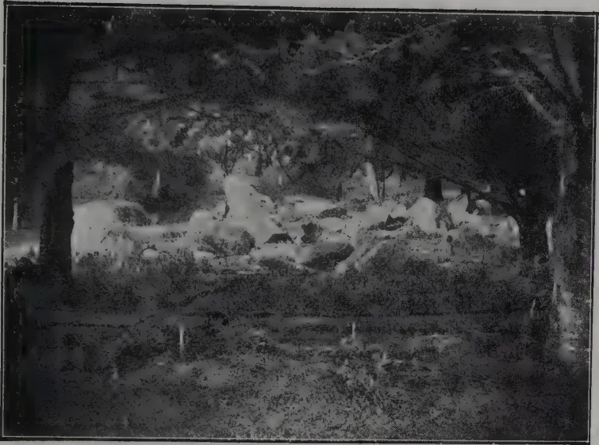
Plate 1. THE FIRST PORTION OPENED.
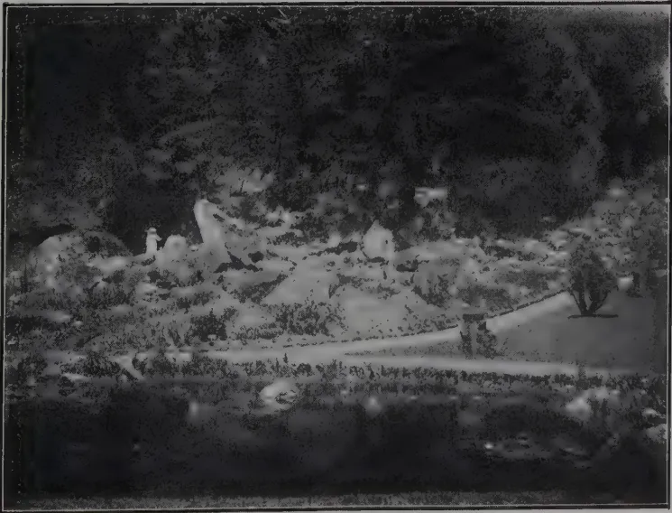
Plate 2. A LATER VIEW OF ABOVE.
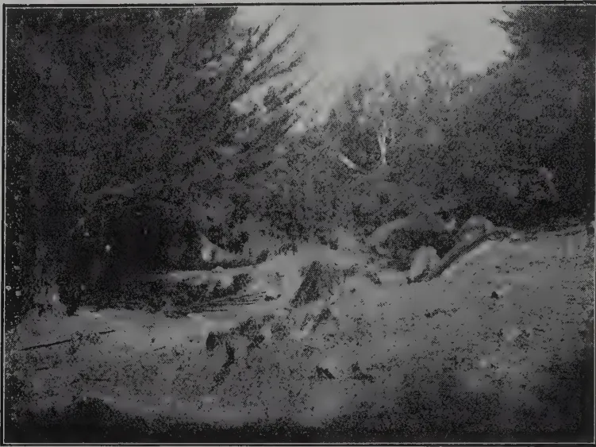
A black and white photograph showing a rocky, uneven terrain with sparse vegetation and trees in the background, likely a geological section.Plate 3. THE CENTRE AND NORTH-WEST SECTIONS.
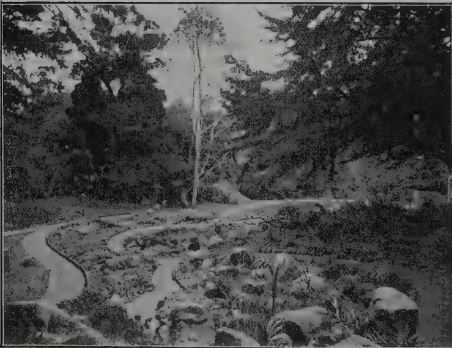
A black and white photograph showing a winding path or stream through a rocky, uneven terrain with trees in the background, likely a geological section.Plate 4. A LATER VIEW OF ABOVE.
AUGUST, 1922.]133be taken from trees yielding heavy crops of well formed rounded pods. Fresh seed are no good for planting. Seed gathered from the April crop can be planted in September. It would be always advisable to raise seedlings in baskets or bamboo pots but seed can also be planted in situ. If seedlings are to be planted they might be 9 or 10 months old. Protect the young plants. Once the plants get established little attention is necessary beyond watering the young trees during a prolonged drought and loosening the soil and weeding occasionally. Thus treated the trees will attain a fair size in 4 or 5 years and after that they will grow up like any wild tree.
Twelfth Meeting of the Board of Agriculture in India.—Agricultural Journal of India.—May 1922, Vol. XVII, Pt. 3, pp. 225-239.
Greaves, J. E., & Carter, E. G., The Influence of Moisture and the Soluble Salts on the Bacterial Activities of the Soil.—Soil Science, April 1922.
Gibbs, W. M., & Workman, C. H., Effect of Tree Products on Bacterial Activities of the Soil I. Ammonification and Nitrification.—Soil Science, April 1922, Vol. XII, No. 4, pp. 303-322.
Sand and Mud Binding Plants.—Nature, June 3, 1922, Vol. 109, No. 2744 p. 726.
Page, J. H., Green Manuring.—Farmers' Journal, 15th June, 1922, Vol. IV, No. 24, p. 20.
Crabtree, Jas., Soils and Manures.—Farmers' Journal, No. 4, No. 23, pp. 9-12.
Sanders, A. J., Education in the United Provinces, 1920-21.—Mysore Econ. Journal, Vol. XIV, No. 5, May, 1922, pp. 336-338.
Thickett, P., The Educational Ideal System.—Mysore Econ. Journal, May, 1922, Vol. VIII, No. 5, pp. 347-349.
Siran, R. S. M. R. R., Scope and Limitation of Agric. Research.—Agricultural Journal of India, May 1922, Vol. XVII, Pt. 3, pp. 251-255.
Van Rosenburgh, C. R. W. K. van A., New and Noteworthy Malayan Araceæ, Bull. Jardin Bot. Buitenzorg, Serie III, Vol. IV, Liun. 2, pp. 317-319.
Hallberg, F., Notes on Indian Plant Teratology.—Journal Indian Botany, May, 1922, Vol. III, No. 1, pp. 1-9.
Bose, S. R., Geographical Distribution of the Bengal Species of Plyporaceæ.—Journal of Indian Botany, Vol. III, No. 1, pp. 19-20.
Fyson, P. F., The Indian Species of Eriocaulon.—Journal of Indian Botany, Vol. III, No. 1, pp. 12-18.
134[AUGUST, 1922.DISEASES AND PESTS.Champignons nuisible au Papayer, au Natal.—Bull. Econ. de L'Indochine No. 151, p. 832.
Moore, A. E., Rat Repression.—Nature, Vol. 109, No. 2742, page 659.
Aberconway. The Rat and its Repression.—Nature, No. 2745, p. 744.
ENTOMOLOGY.Sasscer, E. R., Important Nursery Insects.—Journal Econ. Ento., Vol. XV, No. 2, Ap. 1922, p. 159.
New European Bee Disease Threatens Bee-keeping in America.—Journal Econ. Ento., Vol. XV, No. 2, Ap. 1922, pp. 177-178.
Fletcher, T. B., Some Common Indian Birds.—The Copper Smith.—Agricultural Journal of India, Vol. XVII, Pt. III, p. 221.
Grain-eating Birds and their Suppression.—Journal, Dept. of Agriculture U. S. Africa, May 1922, Vol. IV. No. 5, p. 397.
Schlupp, W. F., The Granivorous Bird Problem.—Journal Dept. of Agriculture U. S. Africa, May 1922, Vol. IV, No. 5, p. 432.
Felt, E. P., Broader Aspects of Insect Control.—Ontario Dept. Agriculture Ento. Society, Report for 1920, pp. 16-18.
Box, H. E., Insect Pests of Stored Products.—Farmers' Journal, 18th June, 1922, Vol. 4, No. 24, pp. 15-22.
Box, H. E., Insect Pests of Stored Products, The Bean Weevil.—Farmers' Journal, Vol. 4, No. 23. pp. 17-18 and 29-30.
FARMING AND DAIRYING.Goffi, E. P., Normal Fluctuation in Body Weight of Bovines.—Agricultural Journal of India, May 1922, Vol. XVII, Pt. 3, pp. 256-263.
Pannett, R. C., Research in Animal Breeding IV.—Agricultural Journal of India, Vol. XVII, No. 3, pp. 297-306.
Testing of Pure-bred Cows in N. S. W.—Agricultural Gazette, N. S. W., May, 1922, P. 233.
POULTRY.Keeping Eggs.—Indian Scientific Agriculturist, May 1922, p. 185.
SEEDS, BREEDING AND SELECTION.Sommerville, R. C., Seed Selection.—Journal Jamaica Agricultural Society, Vol. XXVII, No. 4, April 1922, pp. 103-108.
Rehder, A., New Species, Varieties and Combinations from the Arnold Arboretum.—Journal of the Arnold Arboretum, July 1921, Vol. III, No. 1, pp. 11-51.
ECONOMIC PLANTS.Agave.La Culture du Sisal au Soudan française.—Revue Bot. Appliquée, Avril 1922, p. 132.
Areca.Anabe Disease of the Areca Palm.—Journal Mysore Agricultural and Expt. Union, Vol. IV, Pt. I, p. 15.
AUGUST, 1922.]135ECONOMIC PLANTS.—(Contd.)The AvocadoThe Avocado Enemies and how to Combat Them.—Farmers' Bull. U. S. Dept. of Agriculture 1261.
CacaoNavel, H. C., Les Principaux Ennemis du Cacaooyer aus Iles de San Thomé et. de Principé, Paris, 1922.
Citrus.Lee, H. A., & Shino, A., Citrus Canker Experiments in Japan.—Phil. Journal of Science, Vol. 20, No. 2, Feb., 1922 pp. 121-152.
Coconut.Coconuts.—Journal Jamaica Agricultural Society, Vol. XXXI, No. 4, Ap. 1922, p. 97.
Trelease, S. F., Foliar Transplanting Power of Coconuts.—Phil. Journal of Science, Vol. XX, No. 2, pp. 167-176.
Simmonds, H. W., A Leaf Destroying Moth of Coconuts in Fiji.—Fiji Agricultural Circular, Jan-March, 1922.
Cotton.Todd, J. W., The World's Cotton Crops in 1921.—Agricultural Journal of India, May, 1922, Vol. XVII, Pt. 3, pp. 283-297.
Drugs.Gosch, J. C., India's Indigenous Drugs—Acanite Root.—Indian and Eastern Druggist, Vol. III, No. 6, June 1922, p. 159.
Eucalyptus.Utilisation des Eucalyptus dans le Nord de l'Afrique.—Bull. Agricole, Algerie-Tunis—Maroc, Feb. 1922, p. 51.
Hemp.Classification du Chanvre de Manille.—L'Agronomie Coloniale, May, 1922, Vol. 6, No. 53, page 165.
Palm.Ponel, Ed., Palmiers à huile.—L'Agronomic Coloniale, May. 1922, Vol. VI, No. 53, pp. 145-149.
Papaw.Brill, H. C., & Brown, R. E., Digestive Properties of Philippine Papain.—Phil. Journal of Science, Vol. XX, No. 2, pp. 185-191.
Tomato.Development of Wilt-Resistant Tomatoes.—U. S. Dept. Agriculture Farmers' Bull. 1015, March, 1922.
Miscellaneous.Studies in Symbiosis.—Nature, May 6, 1922.
The Analysis of Asbestos and Asbestos Goods.—India Rubber Journal, 27, May, 1922.
Belcher, C. W., The Preservation of Timber—Creosating.—Farmers' Journal Vol. 4, No. 23, p. 30.
H. LUDOWYK,
Librarian.
136
[AUGUST, 1922.
ANIMAL DISEASE RETURN FOR THE MONTH ENDED 31st JULY, 1922.
| Province, &c. | Disease. | No. of Cases up to date since Jan. 1st, 1922. | Fresh Recoveries | Deaths. | Bal-ance III. | No. Shot. |
|---|---|---|---|---|---|---|
| Western | Rinderpest | 11 | 7 | 3 | 8 | — |
| Foot-and-mouth disease | 265 | 262 | 1 | 2 | — | |
| Anthrax | — | — | — | — | — | |
| Colombo Municipality | Hemorrhagic Septicæmia | 7 | 2 | 5 | — | — |
| Rinderpest | 14 | — | — | — | — | |
| Foot-and-mouth disease | 122 | — | — | — | — | |
| Cattle Quarantine Station | Anthrax | 10 | — | — | — | — |
| Rabies | 15 | — | — | — | — | |
| Rinderpest | 46 | — | — | — | — | |
| Central | Foot-and-mouth disease | 43 | 42 | 15 | 1 | 27 |
| Anthrax | 6 | — | 7 | 6 | — | |
| Proplasmosis | 7 | — | — | — | — | |
| Southern | Rinderpest | 6 | 6 | — | — | — |
| Foot-and-mouth disease | 2 | 2 | 2 | — | — | |
| Anthrax | 37 | 4 | 33 | — | — | |
| Northern | Hemorrhagic Septicæmia | 3 | 1 | 2 | — | — |
| Black Quarter or (Quarter III) | — | — | — | — | — | |
| Rinderpest | 294 | 294 | — | — | — | |
| Eastern | Foot-and-mouth disease | 18 | 18 | — | — | — |
| Anthrax | — | — | — | — | — | |
| Rinderpest | 54 | 54 | 14 | 40 | — | |
| North-Western | Foot-and-mouth disease | — | — | — | — | — |
| Anthrax | — | — | — | — | — | |
| Rinderpest | 1 | 1 | — | — | — | |
| North-Central | Foot-and-mouth disease | 278 | 11 | 268 | 3 | 7 |
| Anthrax | 3 | 3 | — | — | — | |
| Rinderpest | 1105 | 1105 | — | 71 | — | |
| Uva | Foot-and-mouth disease | — | — | — | — | — |
| Anthrax | — | — | — | — | — | |
| Rinderpest | — | — | — | — | — | |
| Sabaragamuwa | Foot-and-mouth disease | — | — | — | — | — |
| Anthrax | — | — | — | — | — | |
| Hemorrhagic Septicæmia | 3 | 1 | 3 | — | — |
G. W. STURGESS,
Government Veterinary Surgeon.
Colombo, 8th August, 1922.
METEOROLOGICAL NOTES.
(Continued from next Column.)
hotter than average and the west side a trifle cooler. As in the case of the wind comments on these high temperatures were made from a number of other stations in addition to those that record numerical values: while the phrase "eastern side" will bear a generous interpretation both northward and southward.
A. J. BAMFORD,
Supdt. Observer
METEOROLOGICAL.
JULY, 1922.
| Station | Temperature | Mean Humidity % | Mean amount of cloud clear. 10 = overcast | Mean Wind Direction during month | Daily Mean Velocity. | Rainfall | ||
|---|---|---|---|---|---|---|---|---|
| Mean Daily Shade | Difference from Average | Amount | Inches | |||||
| Colombo | 80.4 | - 0.8 | 82 | 9.0 | WSW | 140 | 2.71 | 10 |
| Observatory | 81.6 | 0 | 76 | 51 | SW | 326 | 0.00 | 0 |
| Puttalam | 83.8 | + 0.2 | 74 | 74 | SW | 247 | 0.00 | 0 |
| Mannar | 83.2 | + 0.2 | 76 | 73 | SW | 355 | 0.11 | 2 |
| Jaffna | 85.8 | + 0.6 | 60 | 74 | WSW | 280 | 0.00 | 0 |
| Trincomalee | 85.6 | + 1.0 | 71 | 54 | WSW | 411 | 0.64 | 4 |
| Batticaloa | 83.0 | + 1.4 | 88 | 80 | WNW | 314 | 4.59 | 10 |
| Hambantota | 80.1 | - 0.3 | 80 | 75 | — | — | 8.57 | 19 |
| Galle | 83.5 | + 0.2 | 64 | 70 | — | — | 0.00 | 0 |
| Ratnapura | 80.2 | - 0.4 | 77 | 75 | — | — | 2.67 | 12 |
| Anu pura | 75.3 | - 0.5 | 82 | 82 | — | — | 10.58 | 22 |
| Kurunegala | 71.0 | + 1.1 | 66 | 62 | — | — | 0.87 | 9 |
| Anu Kandy | 75.5 | + 0.2 | 71 | 60 | — | — | 7.28 | 19 |
| Badulla | 60.7 | - 0.5 | 84 | 79 | — | — | 16.27 | 27 |
| Diyatalawa | 59.6 | + 0.7 | 88 | 90 | — | — | — | — |
| Hakgala | — | — | — | — | — | — | — | — |
| N. Eliya | — | — | — | — | — | — | — | — |
The highest rainfall of the month occurred, as is usual in July, in the neighbourhood of Nawalapitiya, Ambagamuwa etc. and the reports include Blackwater 36.90 inches, Wawawala 35.77 inches while further south 39.78 inches at Lituconie is 10.9 above its own average. A fall of over 5 inches in a single day were not particularly numerous but are reported from a few stations including Blackwater, Labookella and Watagoda.
In the south of the Central Province the rainfall was well above average and in the middle of that province the average was reached, but elsewhere, except for one or two stations like Ngombo and Henaragoda, there was a consistent failure to reach the July average. In Western Uva the deficits were small—less than 2" for the most part. The same fact is true for most of the North-Western Province, North-Central Province and Northern Province though in these cases it means nothing more than that the average is less than 2" and hence deficits cannot be greater than this amount, even though in the area north of a line from Puttalam through Dambulla to Batticaloa very few stations recorded any rain at all.
In Sabaragamuwa, Western Province, and Southern Province, deficits between 2 and 5 inches were most frequent though deficits between 5 and 10 inches were not uncommon. Regarding the South-West quarter of the island as a whole it is noteworthy that the offsets in July approximate to an almost exact reversal of those in June. Thus in June the average was passed in the Western Province and Sabaragamuwa but not so frequently in the Central Province.
Among the most striking features of July have been the high winds which have been experienced especially upcountry. Ohiya, Diyatalawa and Poonagalala, may be mentioned as noteworthy in this respect though the fact was commented in reports from all over the island including such diverse stations as Elephant Pass, Horawapotana, Horakelle and Blendshur (N.W.P.), Cumpion, Paulikunala, Taldena, Morawika.
The difference in pressure across the island has been distinctly greater than the July average or that in June 1922, so that the increased velocity was not unexpected. On the contrary the more surprising thing is that with such a steep pressure gradient, the wind at Colombo was not greater than was the case.
One inevitable result of the strong monsoon wind is apparent in the column of temperature offsets from which it will be seen that the East side of the island was appreciably
VOL. LIX.
PERADENIYA, SEPTEMBER, 1922.
No. 3.
The interest that is being taken throughout the world in the cultivation of more cotton and the stimulus that is being given by the Empire Cotton Growers' Association to this cultivation has not been without influence upon Ceylon. The encouraging results that have this year been obtained from the Ambalantota experiments and the opening of a new mill in Colombo by the Ceylon Spinning & Weaving Company have awakened an interest in the possibilities for this product in the Colony.
Areas of Crown land have been taken up for the cultivation of cotton on most favourable lease terms and a considerable number of small experimental cultivations will be made upon private lands during the forthcoming North-East season.
There are undoubtedly considerable areas in Ceylon that are capable of growing good crops of cotton, but up to the present the efforts that have been made to establish this industry have not been very successful.
One of the main reasons for this non-success is the complete absence in the Colony of any form, other than that of chenas, paddy and vegetables, of cultivation of annual crops. Cotton to be successful must be treated as an annual, and proper cultivation is required throughout the whole growing period. All fields must be examined daily for the occurrence of insect pests and control measures against such pests must be promptly applied. The picking also requires close attention and has to be carefully done.
138[SEPTEMBER, 1922.Permanent crops such as rubber, tea, cacao and coconuts have in the past produced profits which were in excess of those that could be anticipated from the cultivation of cotton, while citronella and cinnamon demanded very little attention after they had been fully established.
Circumstances now demand that attention should be given to the cultivation of new products and there is little doubt that the cultivation of cotton is worthy of the closest investigation and experiment.
Supplies of seed will be secured for all intending growers; advice given on cultivation and on the treatment of pests and diseases; while the Ceylon Spinning & Weaving Company are prepared to give guarantees to purchase all cotton of standard quality delivered at Colombo.
The sowing season is now approaching and those who intend to make experimental trials are requested to register their requirements of seed as early as possible so that there may be no shortage of stocks and so that delays in the supply of seed shall not occur.
The Department of Agriculture proposes to supply seed of Cambodia cotton except to those that specify for seed of other varieties. It also intends to continue its experiments at Ambalantota and is importing further strains of Cambodia cotton from Madras for experiment. If the results of the next year's work are again satisfactory and the trials by growers in other parts of the Colony successful it may become necessary for the Department to maintain a seed farm for the supply of selected cotton seed.
Cotton is a crop that deteriorates rapidly unless selection is continuously carried on and if there is any increase in the incidence of the Pink boll-worm disinfected seed will have to be arranged for if cotton cultivation is to be assured of success.
Pink boll-worm did not appear in the first crop of cotton at Ambalantota. It occurred in small numbers in the second picking but the burning of all stalks was thoroughly carried out before the ploughing of the land for next season's crop was commenced.
The careful control of all pests is essential if cotton cultivation is to be successful.
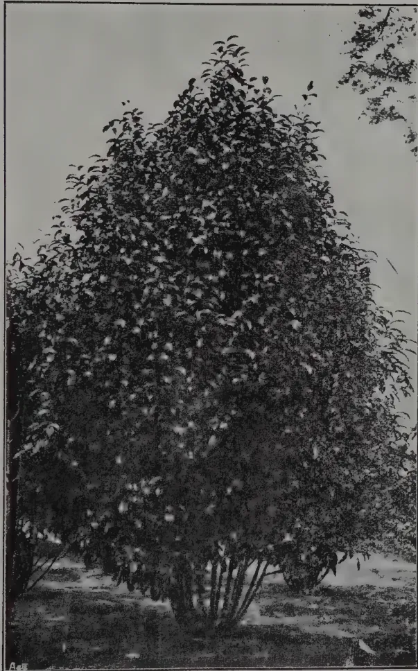
A black and white photograph of a well-shaped tea bush, densely covered in leaves and small white flowers, standing in a field. The bush is the central focus, with its rounded form and numerous small white blossoms creating a textured appearance. The ground beneath it is dark and appears to be a field or garden bed. The sky is light and clear. In the bottom left corner of the image, there is a small, faint signature that reads "A. de".Plate I.
A WELL SHAPED TEA SEED BEARER,
(Reproduced from Java Tea Experiment
Station Bulletin, No. 76)
[Faint page: no legible print of its own could be verified; text withheld (stage 4 review list)]
This image is a scan of a blank page. The background is a uniform light gray. There are a few very small, dark specks scattered across the surface, which appear to be scanning artifacts or dust particles. No text, lines, or other graphical elements are present. SEPTEMBER, 1922.]139G. G. AUCHINLECK, M.Sc., A.I.C., F.C.S.,
Divisional Agricultural Officer, (Central) Ceylon.
Very little information has been published regarding the correct treatment of tea-bushes cultivated as sources of seed. In past files of the TROPICAL AGRICULTURIST there are two short references to certain trials in India, and text books on tea-planting do not deal with the question. The trials in India are also described briefly in the QUARTERLY JOURNAL OF THE INDIAN TEA ASSOCIATION (Part III, 1918).
It is therefore not possible to give figures of yield of seed obtained by different methods of treatment. Under ordinary conditions, the question would perhaps not be of urgent importance, but the importation of seed from India into Ceylon is now prohibited, and in consequence every grower will probably find it necessary to force the yield of his seed-bearers up to its maximum in order to fill local orders.
The few references available point to the fact that, both in Ceylon and India, fields of seed-bearers receive careful cultivation and manuring, but are neglected in the matters of spacing and pruning. As the trees increase in size, the yield of seed per acre tends to decrease in spite of increased manuring and more careful methods of cultivation. Trials of the effects of different planting-distances and of various systems of pruning are needed, and in preparation for these a critical discussion of the probable needs of the tea plant is necessary. Some guidance can be obtained by considering the methods found suitable for other seed-crops, and by observing the mode of growth of the tea-plant under normal conditions.
On many of those estates in Ceylon which possess varieties of tea of recognised merit, definite areas are set aside on which tea-plants are grown merely as sources of seed. In 1922 selected seed from these properties is being sold at prices ranging from Rs. 70 to Rs. 90 per maund of 80 pounds, and figures at the disposal of the Department of Agriculture indicate that the yield of seed of all grades varies from 1,500 to 4,000 pounds per acre, in accordance with variations in climate, soil and treatment.
Many of the fields of seed-bearers in Ceylon appear to have originally been planted for plucking, and to have later been allowed to grow for seed bearing. Whatever may have been their origin, the distances between the plants are considerably smaller than appear advisable for trees of their height and natural width. Three feet and a half, sometimes thinned out to seven feet, is a not uncommon distance, 1,000 to 1,200 plants being the usual number per acre; the area of ground available for each plant is therefore from 43 to 36 square feet. Adult trees planted at this distance range in height from 15 to 25 feet.
140[SEPTEMBER, 1922.It does not seem possible that trees growing under these conditions can be healthy and normally productive. The trees have single, straight stems, free from any branches or leaves, up to a height of 8 to 12 feet, surmounted by a quite inadequate crown of crowded branches and leaves.
No system of pruning, such as is carried out in the case of all fruit-bearing trees in temperate climates, appears to be adopted in the case of these tea fields. In the tropics regular systems of pruning have been adopted for coffee-trees, and to a less extent for cacao and limes.
Two quite different problems are therefore involved, and on neither of them is there any reliable information obtainable. There is firstly the effect, on the yield of seed, of excessively close planting, and secondly the effect of a careful system of topping and pruning whereby crowded, useless wood is removed and replaced by young, productive shoots. There is the further problem of the extent to which thinning-out, topping and pruning of old seed-bearers can be made profitable. Both in India and Ceylon, there is fairly strong evidence that wide spacing and systematic pruning are profitable, and also that even drastic treatment of old, crowded seed-bearers is in the end found to be of benefit.
There is little doubt that an adult tea-plant, growing normally in the open, varies in height from 12 to 20 feet. It tends to sucker somewhat freely from the base of the trunk, and so usually develops a bushy or shrubby habit. As a result, the head or crown of leaves begins to form at a short distance from the ground, and the general outline of the plant is oval or conical in shape. In horizontal diameter the crown is about 12 feet wide, and vertically about 12 to 15 feet. These points are clearly brought out in Plate I, in which a well-shaped tree, photographed on the Java Tea Experiment Station, is shown. In Plate II, the general habit and shape of closely planted seed-bearers in Ceylon are shown, and a useful comparison can be made.
The leaves of a tea-plant are single, and are arranged in an open spiral round the shoot, apparently 6 to 7 leaves completing one turn of the spiral. The flowers occur, usually in pairs, in the axil of each leaf. Once a pair of flowers has been produced and has formed into fruit, the axil producing them is apparently unable to give forth more flowers in subsequent seasons, and that particular joint or node of the branch becomes sterile: in this matter the tea-plant seems to resemble the coffee-shrub, and there is little doubt that both these plants rely entirely on their young shoots for each year's crop of flowers and fruit. In the case of cacao, flowers are produced year after year on the same 'cushions.'
The immense importance of topping back coffee plants in order to force growth of laterals, the thinning-out of superfluous laterals, and the annual cutting back of laterals in order to force the production of new flowering-shoots are too well known to require any emphasis here. A presumption is raised that similar treatment of a tea-plant would produce similar results.
The shoots and branches of the tea-plant show a more marked tendency to grow vertically, even when the plant is in the open, than do those of the coffee-plant. The differentiation into vertical stems and horizontal
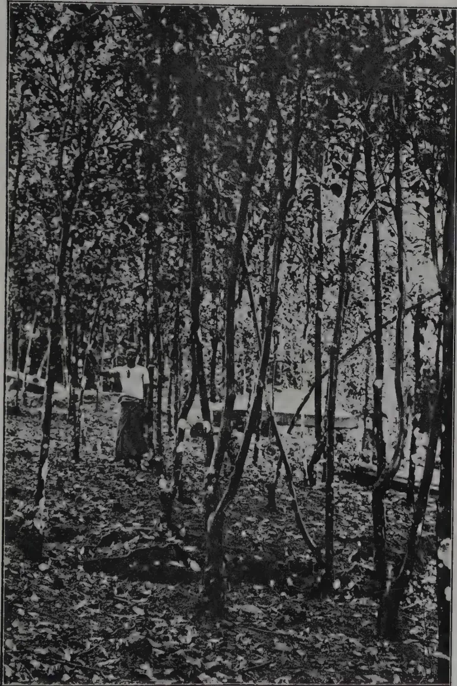
A black and white photograph showing a dense plantation of tea trees. The trees are tall and slender, with many branches and leaves, creating a thick canopy. A person is standing in the middle ground, wearing a light-colored shirt and dark trousers, looking towards the camera. The ground is covered with fallen leaves and debris. The overall scene depicts a tea plantation where the trees are planted too closely together, as indicated by the caption.Plate II.
TEA SEED BEARERS IN CEYLON TOO CLOSELY PLANTED.
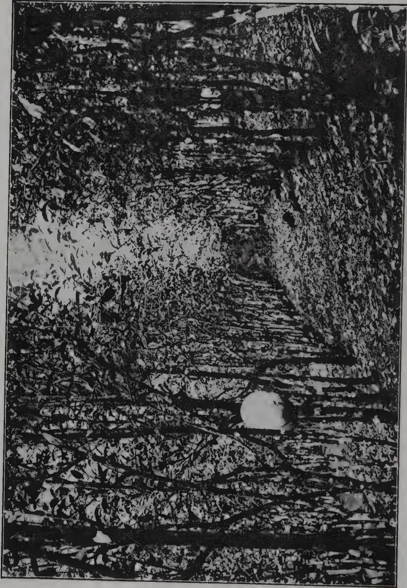
A black and white photograph showing a dense plantation of tea seed bearers in rows. The trees are planted very close together, creating a thick canopy. The ground is covered with fallen leaves and branches. The image is oriented horizontally, with the rows of trees running from left to right.Plate III. TEA SEED BEARERS IN CEYLON.
Planted in rows, but trees too close in the rows.
SEPTEMBER, 1922.]141laterals is clearer in the case of the coffee plant. It follows from this that cutting back of old laterals is the most important phase of pruning in the case of coffee, whereas pruning to obtain an open, wide, head in the young plant, and annual topping of vertical shoots so as to force outward lateral growth in older plants is the rational method for tea seed-bearers.
The question of pruning tea-plants will be dealt with later, but for the present it can be stated that the most profitable and natural shape of tree to be aimed at is probably the spherical or widely oval.
There is perhaps no point upon which so much misunderstanding exists as that of the effect upon a tree of close-planting or over-crowding. At the same time, there are few conditions which exert so great an effect upon a healthy tree. When attempting to deal with an over-crowded field the planter usually keeps the soil in mind: on the assumption that a larger number of trees needs more plant-food from the soil, he proceeds to increase his manuring and intensify his methods of cultivation. The fundamental mistake in this method is that the harmful effects of over-crowding, like that of too heavy shading, are to a much greater extent due to diminution of sunlight and of leaf-surface than to insufficiency of soil-minerals.
The actual living substance of plants is chiefly drawn, not from the soil, but from the air. As the capacity of each square inch of leaf-surface for absorbing air is definite and limited, any reduction of leaf-surface means a correspondingly less ability to grow. The whole life of any tree is directed towards one end, the production of fruit, so that the plant may reproduce its kind. A tea-bush weighing 100 pounds, contains the following substances.
Water 50 to 80 pounds
Organic matter 18 to 40 pounds
Mineral ash 1 to 8 ,,
Manuring is necessary for stimulation of growth, but growth is the building up of living matter from the air.
The loss of leaf-surface caused by close planting can be demonstrated. In figure I. are shown three spherically-shaped trees, 15 feet in diameter, planted 15 feet apart, or 193 trees per acre.
A sphere of 15 feet diameter has an outside surface or periphery of 706 square feet, so that 193 trees would possess a total of 136,354 square feet of surface exposed to sunlight and capable of bearing flowers.
"In figure II. are depicted trees of similar habit planted feet apart, or 772 trees per acre. The centre tree has been dotted in completely, and it shows that only a small part of each tree is left exposed to sunlight. This small part is feet in width, and the area of its surface is approximately 50 sq. feet.
142[SEPTEMBER, 1922.Under these conditions the total area of surface exposed by an acre of 772 trees would be 38,600 sq. feet or 1/3rd of the area exposed by the widely spaced trees.
There are other losses. Similar cramping of the roots occurs, and the trees grow taller in their search for sunlight thus building up woody trunk instead of young flowering shoots. This increase in height, which is considerable, is not shewn in the Figures.
In Figures 3 and 4 are depicted conical trees, and here the loss is less. Cones of 15 feet diameter at the base have an area (excluding their bases) of 400 square feet or 77,200 square feet for 193 trees per acre. When planted at feet distance the conical heads not overlapped by neighbours are feet in height, that is each is 100 square feet in area, and the total exposed surface is 77,200 square feet per acre of 772 trees.
In this case there is no loss of total surface per acre. It is clear, however, that loss of seed is caused by cramping of roots in the soil, by undue crowding of branches at the tops, and by waste of energy in building up non-productive increase in the length of the trunk. The inconvenience of reaping seed from, or the pruning of the heads of trees which have been forced upwards by close planting hardly needs emphasizing.
From observations made on tea trees growing in the open on moderately good soil, it appears fairly certain that 12 feet is the minimum distance at which seed bearers should be planted. Probably 15 feet would be even more profitable. In other words, a field carrying 1,200 plants per acre should be thinned out to not more than 300 plants, and better still to 193 plants.
It is unlikely that an old tree, of 20 to 25 feet in height, with a branchless trunk of perhaps 10 or 12 feet, can form lower laterals even if overlapping neighbours be removed. It will be necessary to cut back the top in order to force laterals. In the trials made by the Indian Tea Association, such trees were topped at 7 feet, at 3 feet, and to the ground. Actual figures are not given, but it is stated that best results were obtained by cutting back to the ground, in spite of the fact that two years' loss of seed followed the drastic treatment. Trees topped at 7 and 3 feet did not form such satisfactory heads and the ultimate yield was less.
A certain amount of thinning can be effected by removing weak trees which have been overshadowed by their neighbours. This method still leaves the remaining trees limited in their ability to form lower laterals. In the end it will probably be found more profitable and quicker to remove alternate rows of trees and to cut back the remaining ones.
The loss entailed need not be great. An estate possessing 10 acres of seed-bearers, yielding 2,000 pounds of seed per acre, could thin and top one
EFFECT ON SPHERICAL TREES OF CLOSE PLANTING.
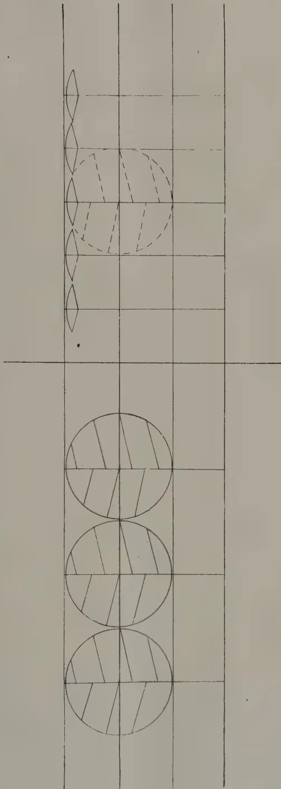
The diagram shows a grid with a horizontal line and a vertical line intersecting. On the left side, there are three large circles, each divided into four quadrants by diagonal lines. On the right side, there is a row of smaller circles, each also divided into four quadrants. The smaller circles are positioned closer together than the larger ones, illustrating the effect of close planting.
Figure 1
| Diameter of head | - | - | - |
| Distance of planting | - | - | - |
| Area of head exposed to light (per tree) | - | - | - |
Figure 2
| Trees similar to those in Figure 1 |
| Planting distance reduced to feet |
| Area of head exposed to light, app. 50 feet |
EFFECT ON CONICAL TREES OF CLOSE PLANTING.
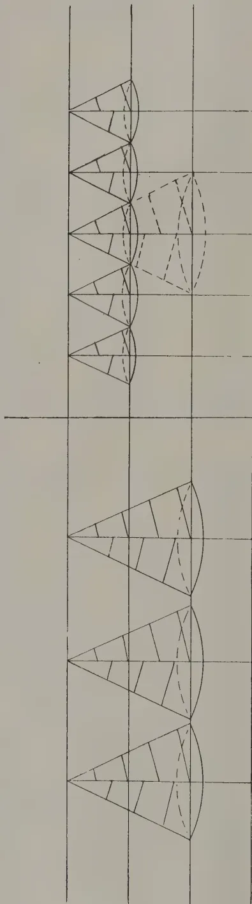
Figure 3
| Diameter of base of head | - | 15 feet |
| Distance of planting | - | 15 feet |
| Area of head exposed to light ( per tree ) | - | 400 sq. ft. |
Figure 4
Trees similar to those in Figure 3
Planting distance reduced to feet
Area of head exposed to light, 100 sq. feet
acre as an experiment and observe the results. The loss of seed could quite easily be made good by reaping from the trees in the ordinary cultivation grown for plucking. From the results observed in this acre, the method to be adopted on the remaining 9 acres could be decided.
Seed-bearers of 30 years of age, planted at the distance common in Ceylon, appear to range in height from 15 to 20 feet. It is probable that at 10 years of age, the trees would be of such a size as to be in contact with their neighbours. As bearers will live for more than 50 years, it is quite easily comprehended how the progressive diminution in yield of seed per tree takes place. The chief result of good cultivation and heavy manuring is to force such trees higher and higher, without increasing the bearing surface by a single square foot, while producing more wood the upkeep of which is a greater strain on the leaves.
A common feature of fruit trees in the tropics is the alternate bearing of heavy and light crops. During one year the tree exhausts itself by production of a heavy crop, and in the subsequent year rests from fruiting, using its spare energy for making new wood. The effect of manuring is to intensify this behaviour: in other words it causes a heavier crop in the productive year, but has little effect in the resting year.
As a matter of fact this behaviour is not purely due to the absence of winter. The same thing occurs in temperate climates, if the trees are left to themselves.
In temperate climates, with their more advanced systems of agriculture, fruit trees are not left to themselves but are pruned annually, and the alternate heavy and light cropping is replaced by a more regular average annual yield. The effect of manuring on pruned trees therefore is to force to a constant high level the annual average yield.
In the case of the seed-bearers, pruning is practically entirely neglected. Four main lines of work are needed—(a) to prevent the tree from growing too high, (b) to shape the tree so as to obtain the maximum of exposed leaf-surface, (c) to thin out crowded shoots, and (d) to cut back old sterile branches so as to force new productive shoots.
Where the trees are set widely apart there should be little difficulty in keeping them at a maximum height of 15 feet, and probably even 12 feet. To effect this, the tea tree should be made to branch low, instead of forming one leading trunk, an object easily attained by cutting it back in its young stages almost to the ground. It has been found in the case of the tea plant that 6 to 10 stems are a suitable number to allow on the collar (note Plate I). In Figure 5 the method and its results are indicated diagrammatically.
144[SEPTEMBER, 1922.This system is rendered more easy by the naturally bushy or shrubby habit of the tea plant. By keeping the trees at a moderate height the reaping of the crop, removal of Loranthus and diseases, and annual pruning for new wood, are all rendered cheaper and easier.
After basal branching has been induced, it is necessary to counteract the natural tendency of the branches to grow vertically. This is effected by cutting back the vertical shoots so as to force branching. The vertical shoots should be topped just above eyes which face outward, as is indicated in Figure 5. In general, it is probable that this topping might be done at a height of 3 to 4 feet from the ground, and the process should be repeated at successively higher points in subsequent seasons after the crop from the new branches has been reaped. Throughout the life of the plant, pruning should be directed towards obtaining a spherical or broadly oval head.
Once the general shape of the tree has been formed and set by careful pruning, occasional thinning-out of crowded laterals, and annual clipping-back of sterile laterals so as to produce young flowering shoots, are probably all that will be found necessary. Work of this sort needs some skill, but it should be possible to train a certain number of labourers in the work, and to place them under the supervision of a smart overseer: trained pruning-gangs of this sort are used on the best cacao estates in West Indies.
Foregoing remarks may be summarized as follows:—
(1) Tea-seed bearers in Ceylon and India are usually planted far too closely.
(2) Close planting results in unwieldy height, in a serious reduction of the area of flowering surface of the trees, and in reduction of the seed-crop.
(3) Heavy manuring and good cultivation cannot overcome the effects of close planting.
(4) Thinning of closely planted bearers is necessary if increased yields are desired. 300 plants per acre are probably the maximum number which should be allowed.
(5) Thinning must probably be accompanied by cutting-back in order to force lateral branching.
(6) It is probable that a spherical or oval shape is the most natural and profitable one for a tea-seed bearer.
(7) Probably the tea-plant relies entirely on its new shoots for production of flowers and seed, and therefore careful annual pruning would be profitable.
(8) The whole question of the care of tea-seed bearers appears to have been neglected, and systematic trials of various methods of pruning are needed.
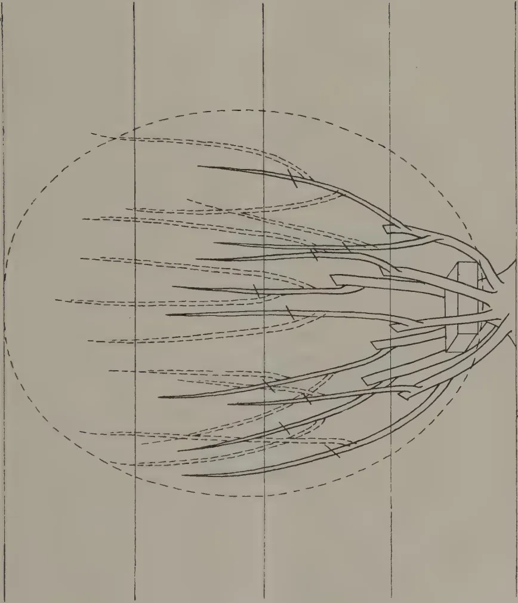
A technical diagram of a tree trunk with several branches. A large dashed oval is drawn around the branches, indicating the desired oval shape. The branches are shown with solid lines for the main trunk and dashed lines for the branches. There are several small rectangular marks on the branches, likely indicating pruning points. The diagram is oriented horizontally, with the trunk on the right and branches extending to the left.Figure 5
Pruning for oval shape.
[Faint page: no legible print of its own could be verified; text withheld (stage 4 review list)]
This image is a scan of a blank page. The paper has a light beige or cream-colored tint. There are a few very small, dark specks scattered across the surface, which appear to be scanning artifacts or dust particles. No text, lines, or other markings are present on the page. SEPTEMBER, 1922.]145VICTOR RIS, MEDAN.
1. The Influence of Selection of Planting Material on the yield of rubber estates.
Until very recently, in fact, almost until the extensive opening up of Rubber lands was discontinued in consequence of the rapidly decreasing price, all Rubber Estates in the East were planted up with more or less unselected seed. No selection on a clear scientific basis had anywhere been adopted; that is to say, nowhere to any appreciable extent.
The result of planting up such large areas with unselected material is now clearly to be seen everywhere and the following figures illustrate what may be considered to hold good for the majority of Estates in the East when their full planted up acreage is considered :
It may be said that 75% of the planted trees yield 40% of the crop and 25% of the planted trees yield the balance of 60%.
These trees are hereafter referred to as Class A and Class B trees respectively.
Of the total number of planted trees on an Estate 10% may be said to yield 25% of the crop whilst 1% of the total planted trees yield 5% of the crop.
Such trees are hereafter referred to as Class C and Class D trees respectively.
Under "Class A" are included many trees which yield no latex or practically none. Under "Class D" are included trees, whose records show they yield year after year between 55 and 60 lb.
On the basis of these figures, we can deduce that an average Estate yielding at present 400 lb. per acre per annum could be expected to yield if planted :
with trees described above as class "B" 960 lb. per annum
do do class "C" 1,000 do
do do class "D" 2,000 do
The figures further clearly prove what has been already stated above, i.e., that not only has unselected planting material been used for planting up Estates, but that, taken on the average, poor planting material has been used and that it is most important that for future plantings the planting material should be most carefully selected on scientific lines.
* The following notes have been compiled as a report by Mr. VICTOR RIS, Visiting Agent, Medan.
146[SEPTEMBER, 1922.In the Dutch East Indies this urgent need has been recognised for a good many years and the highly trained staffs of Botanists attached to the Experimental Stations and, I may here especially mention the Research Station of the Avros, have been extensively engaged on work connected with the Hevea selection problem.
The results of their research work so far obtained, show :
(a) That the greatest success is attained in grafting or budding parts of selected high yielders on to the young root system of ordinary trees, thereby solving the problem of multiplication of high yielders in a short space of time.
The stems developed from such buddings show all the valuable characteristics of the mother tree. Structure of bark, number of latex carrying vessels, etc., in the offspring stem are equal to those in the mother tree. There is therefore every reason to believe that trees so grown will equal or at any rate approximate, the yield of the mother trees.
In this connection it is interesting to note, as a further proof that the characteristics of the mother tree will be found in the trees grown from buddings, that the offsprings of yellow latex yielding mother trees yield also yellow latex whilst offsprings of white latex yielders yield white latex. As a matter of fact, one can go so far as to say that if an "eye" of a yellow latex yielder is grafted on to a white latex yielding stem, a tapping cut made at a later date across the grafting point yields in the upper part yellow latex and in the lower portion white latex. This is merely of course mentioned as a side light on the possibilities of grafting.
Grafting has passed out of the experimental stage and it can be adopted with the best results for any new Rubber Clearings. It is a fact that some hundred thousand graftings have already been carried out with complete success and grafting material from highly selected trees is beginning to form an "article of commerce." First class material is now being very eagerly sought for in many quarters. The Avros Research Station alone supplied to its members in 1921 about 6,000 meters of branch of selected trees. One meter carries about 10 sleeping eyes suitable for budding.
(b) The slower process of multiplication of high yielders, i.e., the process of generative selection, is also being very carefully gone into and satisfactory results have already been obtained.
After extensive and often pretty costly experiments it has been possible to obtain self-pollination on some selected high yielders. In this way it becomes possible to arrive eventually at the isolation of, biologically speaking, "pure lines," the selection which is considered to be the ideal one.
This selection naturally will take time before full results are obtained because "pure lines" can only be determined as such after several generations have proved to show constant characteristics i.e., proved that the characteristics are hereditary.
Moreover, even if full results are eventually obtained such "pure line" selection and production of "pure line" seed will very probably never yield sufficient seed for planting up large areas.
The limited number of high class "pure line" seeds will in all probability mostly be used for growing trees to be used for budding material. Budding as mentioned under (a) will therefore remain most probably the principal method of multiplication of high yielders in a short space of time.
SEPTEMBER, 1922.]1472. The Influence of the Selection of Soil on the Yield of Rubber Estates.Until quite recently, it was taken for granted in the Rubber world that Hevea Brasiliensis would grow a paying crop almost anywhere in the Tropics. That Hevea can grow anywhere, or at least keep alive anywhere is proved to be about correct, but the idea that Hevea would yield a paying crop anywhere has been proved to be a fatal mistake.
Such mistakes have been made in every Rubber planting country in the East; any soil from bare sand flats, peat land and to abrupt and rocky hill sides, all classes of soil have been planted up.
The range available for comparison so far as yield per planted acre goes is therefore a very wide one and instances of the extent to which the quality of the soil influences the yield per acre are not far to find. They are at hand in every Rubber producing country.
I intend to deal hereafter especially with conditions prevailing in the East Coast of Sumatra, but all that is to be said can be taken as holding good, mutatis mutandis, in other Eastern Rubber producing countries.
The bulk of the Estates are as already stated planted up with unselected seeds originating all from the same sources and the Estates therefore, from this point of view, can be taken as being built up on parallel lines. The seed factor can thus be eliminated when the yields of different soils are compared, so also can climatic conditions such are excellent from sea coast to the foot of the Hills, from South to North.
But the yield per acre varies from 250 lb. per acre to 600 lb. per acre in specially good fields although considerably higher figures are recorded. It is now, I think, quite clear that such variations, a full 140% in yield, form the strongest indication, in fact the clearest possible proof, that the quality of the soil is a prominent factor determining (all other conditions being equal) the yield of the Rubber tree.
Eliminating about 80,000 acres planted on the East Coast yielding under 300 lb. per acre the balance can be taken as yielding in average 400 lb. per acre per year. Now, keeping in view that there are large fields capable of yielding 600 lb. (and over), one is forced to conclude that proper selection of soil influences the yield by an increase of 50%. Taking extreme figures in this connection, 250 lb. and 600 lb., the influence would be by 140%.
3 The combined influence of Seed Selection and Soil Selection on the Yield of Rubber Estates.
Under heading (1) I have said that :
| an acre planted with class "b" trees would yield | ... | ... | 960 lb. |
| do class "c" do | ... | ... | 1000 " |
| do class "d" do | ... | ... | 2000 " |
| on average soil yielding from unselected seeds | ... | ... | 400 " |
Under heading (2) I explained that by soil selection the yield can be improved by 50% as compared with the yield of existing average Estates. Therefore :
One acre class "b" trees planted on selected land can be expected to yield 1440 lb.
| One acre of class "c" | do | do | ... | ... | 1500 " |
| One acre of class "d" | do | do | .. | ... | 3000 " |
In the light of yields as now obtained on average Rubber Estates these figures seem extraordinary, but in my opinion one must look at same as possible figures, certainly so, as far as the intrinsic yielding capacity of selected fields is concerned. The first two mentioned should be obtainable under reasonably careful selection of both factors, seed and soil, whilst the third should be obtainable under exceptionally favourable circumstances and is therefore more of theoretical interest only.
Still, personally, I should not venture to estimate for such yields in respect of any larger Rubber areas to be opened up in future notwithstanding
148[SEPTEMBER, 1922.that I am fully convinced that Rubber Estates can be laid out and show an intrinsic yielding capacity as stated for class "b" and class "c" trees.
But intrinsic yielding capacity and actually obtainable yields are two different matters. A number of factors such as for instance the necessity to rest a number of trees from time to time, the influence of the tapping system and tapping force on the yield, are factors which in practice must tend to keep the actual yield well below the maximum the trees are theoretically able to give.
As regards "resting" nothing at this juncture can be said for certain, but from past experience one can deduce the trees benefit greatly by being rested from time to time for shorter or longer periods.
As regards "tapping system," the final word has certainly not yet been said, but in all probability any new system for extracting latex from the trees will always be a system by which not the last drop of latex will or can be extracted and by which the cambium will not be over-irritated. Past experience with drastic systems, the cause of Brown Bast and all the misery connected with such, have served as a good lesson.
So far as the influence of the factor "tapping force" goes, everyone knows that in the way the tapping force must be used at present, little chance is given the individual tree to yield its best. Improvements as compared with present day methods will certainly be effected in the future but the actual results obtained by any large force, even the best, will always remain below estimated possible results. No large force will ever consist of ideal tappers only, one will always have to be content with average skill.
How these factors and perhaps many others, will affect the actual yield if such is compared with the intrinsic yielding capacity, is difficult to ascertain at this juncture. A number of those who apparently forget to take the adverse factors into their calculations estimate future yields to reach 1,500, 2,000 and more lb. per acre and others who are more conversant with the practical, daily working of Estates do not hesitate to estimate for at least 1,200 lb. In my opinion the latter will be nearer reality than the former.
For the purpose of the following calculation I take a yield of 1000 lb. per acre per annum and in doing so, I am sure, I am on the safe side. (Selection influenced the yield of sugar-cane and cinchona by almost tripling the output as compared with former unselected cultivations).
4. Calculation of cost per lb. of Rubber for Estates in full bearing of 2,000 acres yielding 2,000,000 lb. per annum.
It can now be safely stated that Estates producing 400 lb. per acre under no restriction scheme can place their rubber on the London market at an "all in cost" of 40 cents or say 8d. per lb. Of that sum 26 cents represents "Estates Cost" and 14 cents the cost from f. o. b. to "Sold London."
The "all in cost" per lb. for producers of 1000 lb. per acre would fall to about 25 cents or approximately 5d. per lb. "all in."
The annual net returns per acre from Estates yielding 400 lb. and 1000 lb. respectively therefore compare as follows:
| Selling Price per lb. |
Net return per acre yielding 400 lb. |
Net return per acre yielding 1000 lb. |
|---|---|---|
| 5 d. | loss £. 5. -. - | £. -. -. - |
| 6 d. | loss 3. 6. 8 | profit 4. 3. 4 |
| 7 d. | loss 1.13. 4 | " 8. 6. 8 |
| 8 d. | " -. -. - | " 12.10. 0 |
| 9 d. | profit 1.13. 4 | " 16.13. 4 |
| 10 d. | " 3. 6. 8 | " 20.16. 8 |
| 11 d. | " 5. 0. 0 | " 25. -. - |
| 12 d. | " 6.13. 4 | " 29. 3. 4 |
The uncertain factor of Government's income taxes is of course left out of account.
The actual capital cost per acre of the existing 400 lb. yielders can probably be taken as falling between £50—and £60—whilst the cost of the 1,000 lb. yielders to be opened up in future may be taken as lying between £70—and £80—.
Considering the possibilities and merits of stringent selection of planting material and soil to be planted up, one is perhaps doing well to bear in mind the excellent results obtained in the Dutch East Indies during the latter half of the last century in the cultivation of the sugar-cane, cinchona and tobacco and to remember that no other Eastern Tropical colonies can compete successfully with the Dutch Indies on the world's market in these lines.—
ARCHIEF VOOR DE RUBBERCULTUUR, Juni, 1922.
J. GRANTHAM AND O. F. BISHOP.
(Summary.)
1. The root systems of Hevea on different soils show enormous variation. The height of the water table is the most potent factor in the limitation of root development. Mechanical resistance is a limiting factor on the cementing soils.
2. There is a general correlation of development above and below the ground. The trees on permatangs with an extensive root system and poor development above the ground are an exception.
3. There is no correlation between individual good root development and high yield on the better soil types, but a certain amount on the poorer types. The better soils with the more extensive root systems give the better yield.
4. The typical features of the root system become apparent at an early age (3-3½ years) but are less marked than later. The differences of the root systems on different soils at this age are greater than those shown by the crowns.
5. The pre-eminent importance of lowering the water table as far as practicable is indicated.
6. Although breaking up the cementing soil by cultivation or explosives thus diminishing its mechanical resistance, might be thought to be beneficial, experiments have given negative results.
7. The importance of undertaking any measures of soil improvement at an early age is indicated.
8. Root interference should be considered in connection with thinning problems. With the greatest spread of roots observed, the roots of one tree may be in competition with as many as 58 other trees.
9. The spread of roots mentioned above gives rise to the possibility of one tree with diseased roots infecting a large number of others.—ARCHIEF VOOR DE RUBBERCULTUUR, Juli, 1922.
150[SEPTEMBER, 1922.J. HAGEN.
(Translated from the Dutch by H. LUDOWYK, Librarian, Department of Agriculture.)
Three centuries have elapsed since Coffee came to be known in Europe as a stimulating drink. Before this time it was used principally as a drug. In the Mohamedan lands of Persia and Arabia even as early as in the first half of the fourteenth century, Coffee was an esteemed delicacy. Arabia was for a long time considered, though wrongly, the cradle of the coffee plant.
The question where coffee was first used is a difficult one to answer; and less information is available when one seeks an answer to the question of how men came to use it—to prepare the beverage in the manner known at the present day. One of the oldest accounts tells us of how a goat-herd always noticed great sprightliness in his animals whenever they had eaten of the leaves of a certain tree that was unknown to him. This experience incited the Prior of an Arabian monastery to try an infusion of the berries in order to ward off sleep; and this the monks used to sip during their protracted nightly watches. Another account states that in a forest fire some roasted seeds having come in contact with water, an infusion naturally resulted. None of these accounts satisfy us, and, probably, we shall ever remain ignorant regarding this matter.
It does, however, appear certain that a German doctor, LEONARD RANWOLF, became acquainted with coffee in 1573 at Aleppo. He wrote about coffee, describing it, later, in 1852. Another doctor, PROSPER ALPIN, attached to the Venetian embassy in Egypt, gave, in 1591, a description of the coffee bough together with a careful description of the seed which he had used as a drug. It must have been at about the middle of the seventeenth century before coffee became fairly well known, and EDWARDS, an Englishman, introduced into London from Constantinople the habit of coffee-drinking. So popular did the drink become that in 1652 PASQUA ROSCOE caused his Greek servant to open the first coffee house in London. The undertaking having been successful, others followed suit, and, especially in the reign of CHARLES II, coffee houses became fashionable. Further we find mention of the opening of coffee houses at Marseilles, Paris and Vienna between 1671 and 1683.
It was the same case with coffee as it was with tobacco and cinchona: religion was the means by which it was spread among the Mohamedans. But it was Religion, Politics and Medicine that tried in Europe to retard
* ONZE KOLONIALE LANDBOUW VII, DE KOFFIECULTUUR DOOR J. HAGEN, oud Planter
TWEDE DRUK. 8vo, 89 pp. HAARLEM. H. D. TJEENE en ZOON, 1917, Prijsf 2.25.
the spread of its use. Orthodox Christians looked upon coffee houses as hot bed of vice; the Government considered them the rendezvous of those who disturbed the public peace and violated the laws of the land; and the medical faculty too deprecated the use of coffee. All this opposition was of no avail. Coffee had set forth on its victorious march over the whole world. Now even the poorest can afford to buy it.
With pride can it be stated that the universal spread of coffee is due to the work of Dutchmen; for it was they that first brought plants from Malabar to Java. The plants brought over in 1696 and planted in the Governor-General's (WILLIAM OUTCHOORN) garden were destroyed by a flood. In 1699 ZWAARDENKROON brought to Java some other plants which grew well and were the parent trees of the East Indian coffee cultivations.
According to PAYEN, one of the plants cultivated in Java was sent to Amsterdam addressed to the Burgomaster, NICHOLAS WITSEN, c/o the Administrator of the East India Company. It was planted and carefully tended in the botanical garden where it bloomed and bore fruit. It is needless to mention that the seeds were again planted out. One of their descendants, a tree five feet high, which had already blossomed and fruited, was, in 1714, presented to LODEWIJK by the Council of Amsterdam. The tree was planted in the Royal Gardens at Marley and was well looked after, and its seeds were again cultivated. In 1721, four young plants were conveyed to Martinique by a French marine officer of Clieux. Only one of these plants survived the difficult journey. It is said that this man had to share with the plant his pittance of water in order to save it from withering. This became the parent tree of the coffee cultivations of the French Colonies.
In 1719 coffee plants were sent from Amsterdam to Suriname where the COUNT OF NEALE took them under his care. In 1722 DE LA MOTTE AIGRON, the French Governor of Cayenne was trying to procure, by some underhand means, a coffee plant, not knowing that already in 1721 the French had brought ill-gotten seeds to Cayenne.
Plants were again sent from Martinique to the different parts of Central and South America. In 1723 coffee plants were introduced from French Guiana and planted in Para. Here, however, soil and climate were rather unfavourable for carrying on its cultivation to any considerable extent. In 1770 a small beginning was made in Rio de Janeiro and from here the cultivation of coffee spread to all the Brazilian States—San Paulo, Minas Geraes and Espirito Santo; and to such an extent that for a long time Brazil has been the country that produced most of the world's coffee.
In our East Indian possessions, its cultivation quickly spread: for after the first attempt in 1756, the Directors of the East India Company foresaw that the coffee cultivation would be a great source of income. The results did justice to their foresight. For many years coffee brought in much profit. The interest the Company took furthered the quick spread of coffee cultivation. More than any one else did ZWAARDENKROON, first in a subordinate capacity, and later as Governor-General, give to it all his interest and every attention.
It was, however, in 1830, with the introduction of "de Cultuurstelsel"—systematic cultivation—that the cultivation was first taken in hand on vigorous and improved lines.
152[SEPTEMBER, 1922.We might now be fairly convinced that coffee for a number of years caused a flow of many millions into the Government Exchequer. Throughout all this time, only one species of coffee was cultivated. This was Arabian coffee which showed itself best suited to the conditions of soil and climate.
But, alas! the days of Arabian coffee cultivation in Java are numbered. Diseases and pests, and principally the leaf diseases, have so taxed it that success in coffee planting has come to be as uncertain as that of a gamble. The great irregularity and uncertainty of the yield is the reason why a cultivation of this sort will have to be abandoned here, or, practically speaking, is already nearly abandoned.
Coffee belongs to the Order of the Rubiaceæ, and to the genus Coffea in which there are as many as seventy different species.
Not one of the species of coffee grown in our Colonies is indigenous to them. The greater part of these species are indigenous to Africa where different species are found growing in a wild state. Coffea Arabica can be taken as typical of most of these. This species of coffee was brought over in the fifteenth century to Arabia and India. The other varieties cultivated in the Dutch East Indies resemble, more or less, the Liberian coffee. The difference even in appearance between these and those of the Arabian type is very striking.
Coffea Arabica is a tree which attains a height of from 25-30 feet. The tree forms a genuine tap root, which seldom, however, grows longer than two and a half feet. The bark, rough on the outside, has, usually, a greyish colour. On the trunk the supple branches arrange themselves in a decussate order—corresponding pairs standing over against each other. The branches bear elliptical or oval leaves. The leaves are pointed at the apex. The breadth of the leaves ranges from one half to two inches, and the length from 2-8 inches. They show from 9 to 12 veins on each side of the midrib. The regular and arc shaped veins run laterally from the midrib. Midrib and veins are all well clearly visible by reason of the bright green surface of the leaf.
The flowers number from three to sixteen in each of the axils of the leaves where they appear. Each group of three flowers is surrounded by four bracts. Two of these bracts are three-cornered, and the other two are drawn out and long. They never extend beyond the calyx. The flowers last but a short time, but they appear many times a year. The flowers are snow white and are of a strong but pleasant odour reminding one somewhat of the scent of the Spanish Jessamine. The flower is short and has a small light green calyx.
The flowers have five petals. The corolla of the flower has a long tube of about 2 inches in length. The petals which are lancet-shaped and rounded at the end are about inches long. The stamens, five to seven in number, project beyond the flower. The pistil is continuous with the tube of the flower. At the end the style divides itself into two parts, forming a forked stigma, each of whose parts is about of an inch long. A bilocular ovary completes the flower.
SEPTEMBER, 1922.]153Besides the normal bloom, there appears, especially in abnormally rainy years, a large number of small flowers which give rise to no fruit. These appear at the axils of the leaves. They have a very short stem and are of a light green colour.
After pollination and cross-pollination have been completed, the corollas fall off, and the young fruit begins to develop. The fruit gets ripe within a period of from five to seven months. The time taken for ripening depends on climate and soil. The fruit, in spite of its containing a stone, we have already called a berry. The fruit has a fleshy rind inside which a sweet jelly-like substance lies. This substance adheres fast to the hard thin horny rind of the seed. Under this rind is again a thin silvery film just outside the beans. The fruit contains, normally, two beans which are oval in shape, and lie with their flat sides against each other. Sometimes, when only one fecund particle of pollen takes part in the development of the ovule, the bean becomes oval, and we have the male or the round bean coffee. Rare cases occur in which a berry has three or more beans—(Coffea polysperma.)
Arabian coffee has now been cultivated in our Archipelago for the past two centuries. During the course of this time, in different localities, several types have arisen, characteristic of the place wherein they developed. Plants typical of those that grow in a certain locality when cultivated in another locality do not preserve their own characteristics and nature, but, in time, modify themselves to such an extent as to become, practically, plants typical of the place of their adoption. It is on this account that we find such classifications as Malang, Menado, Padang, Preanger coffee, etc.
During the last thirty years Liberian coffee has been planted on a very large scale. This species has, undoubtedly, excellent qualities; and in the first few years, so far did it succeed beyond the most sanguine expectations of the planters, that it was even predicted that the Liberian coffee would supplant the Arabian type. The native homes of Liberia coffee are Angola, and the Liberian Republic from which it derives its name. In both these countries it grows uncultivated.
The first consignment of seeds imported in 1873 failed altogether. But in 1875, however, Buitenzorg obtained through the Botanic Gardens of the Leiden Academy, a number of young plants; and later, more plants were received through the Royal Botanic Gardens, Kew.
The difference between the Arabian and the Liberian coffee is great. The latter grows to be a flourishing tree 35 feet or more in height. Its trunk is of a reddish brown colour. Its leaves are leathery, deeply puckered and pointed. Sometimes there are little undulations towards the margin of the leaf. The leaves are shiny in appearance and oval in shape. They are from 6 to 12 inches long, and from to 6 inches broad. The stem of the leaf is short and stiff, and there are from eight to ten pairs of veins with smaller ones towards the end. All these run into the midrib. The flowers are large. They are the largest flowers of all species of coffee. They are pure white in colour, and are, usually, each separate from the other. The number of petals is, generally, from six to eight; and the pollen tube is about an inch long. The fruits of individual trees differ very much in size and form. The berry is practically round, and one generally agrees to call its shape oblong. The colour of the ripe berry is something between a golden or yellowish to a dark red colour. The rind and also the pulp are thick. The rind is tough and strong; and this makes the preparation of Liberian coffee more difficult than the preparation of the Arabian coffee. The proportion of the manufactured coffee to the raw berries used is very small—it being at about
154[SEPTEMBER, 1922.1 to 10. In the case of Arabian coffee the proportion stands at 1 to 5. As already mentioned there are great differences in the size and form of leaf and fruit.
The Liberian tree blooms many times in the year while the Arabian type blooms at most five times. One of these might be called the great or the chief flowering. At one and the same time both ripe berries and young fruit are noticed on the tree. This is, indeed, of great advantage, since plucking is spread over the course of the whole year. There is, also, not the great demand on the resources of the tree which it would have to meet in a short space of time if it had to bring forth one heavy crop. This is the case with the Arabian coffee; and this is the reason why the tree was so severely affected by the leaf disease. It is evident that the Liberian plantations, for the same reason, employ less labour, since the crop can be gathered regularly with a small number of pluckers. Liberian coffee requires more hand-plucking than the Arabian coffee since the ripe berries of the former remain a long time on the tree, while those of the latter fall off soon.
At first the flavour of Liberian coffee was much criticised; but the advance of its cultivation and the careful preparation of it have, however, brought about such a change for the better, that the market prices are high. One of the factors that contributed to the improvement of its flavour was in the finding of the proper method of roasting it. Liberian coffee should be roasted for a long time over a slow fire.
In spite of all that has been said here to the credit of Liberian coffee we all have to admit the deplorable fact that its time too is past. The reasons of its decline cannot with certainty be laid down. Investigations have shown us that a good healthy plantation is now well nigh impracticable.
The failure of Liberian and Arabian coffees has given rise to attempts to breed other species and varieties. I shall mention those species which compare favourably with those that have previously been cultivated.
The Maragogype coffee was introduced in 1881 into Buitenzorg from Brazil where it sprung from a variety of Arabian coffee. It has succeeded only in two counties. The tree is not very productive. However deplorable this or any other quality in it might be, the tree produces a large bean of a fine bluish gray colour and of excellent flavour. This tree resembles the Arabian coffee very much. Its leaves, however, are larger and more heavily puckered, while the branches are more supple and thinner.
The product of a crossing of the Arabian with the Liberian captivated people's attention, as this plant was supposed to be immune to attacks of the leaf disease. All these varieties are spontaneous hybrids or mutations. The best known, the Kalimas hybrid, was discovered on a Liberia seed bed of the Kalimas estate company in Bodja, in 1885. This hybrid has been improved still more by grafting and has been known so far as being practically immune to the leaf disease. I shall name yet two more hybrids—the Kawisari hybrid and the hybrid of Soember Sengkaring. These hybrids resemble both parent trees. As a rule, they have the form and appearance of the mother and thus inherit the strong, lusty growth of the Liberia, while the fruits resemble more those of Arabian coffee, but are a little smaller and have thinner peal.
The number of hybrids, however, can be multiplied by grafting. The results of grafting sometimes give us strikingly different hybrids. Most of the hybrids give a fine handsome product having on one part the bluish gray colour of the father, and on the other the yellow colour of the mother.
SEPTEMBER, 1922.]155We shall now pass over to the newer species which, in fact, I should have dealt with first, since they were lately introduced. We notice that these generally divide themselves into two groups: those that resemble the Arabica and others that are closely allied to the Liberica. To the first of these groups belongs, Robusta, the Quillou and the Uganda. To the second Abecuta, the Excelsa and the Dybowskii. For us the first two are of most importance; and of these two the Robusta is the variety that should be given precedence.
This coffee plant was introduced in 1901 by MR. H. H. T. VAN LENNEP, one of our most eminent planters. For a long time this gentleman having noticed that both Arabian and Liberian coffee were deteriorating, repeatedly wrote and spoke regarding the circumstance. As soon as he read in the weekly "de Indische Mecuur" a description of a variety of coffee that was imported into Brussels from Africa by HILDERMAN, its characteristics so pleased him that he determined to get these plants. The first consignment of 160 plants arrived in good condition. They were planted on the grounds of the Karang-Redjo Estate Company. The trees took root well, and seemed to do honour to their name. They were robust plants of flourishing growth with strong large leaves, and yielded quickly and copiously. They were immune to the leaf disease and bloomed very often. While the Arabian coffee first came into crop only at its fourth year, and the Liberian properly at its fifth, the Robusta had given in its third year a big crop. While the product of the first two varieties were at most 7 cwt. per acre, the Robusta plantation yielded very often double that and more.
As in the case of Liberica, the Robusta too shows a great inclination for variation. We find examples where leaves undulate somewhat towards the margin, and exhibit other peculiarities both in formation and grouping. Examples of others occur wherein the leaves exhibit none of these peculiarities, but are flat, with the end of the leaf not sharp as usual but very obtuse. The measurements of the leaves also vary very much. The fruits are also noticed to vary. Types with small berries we find along with those that have large berries. Variation in the proportion of the raw to the cured product is also seen to exist to a great degree, it being between and to 1.
But every single characteristic is observed to be a characteristic of the Robusta whereby it distinguishes itself from the other species, the Quillou, the Uganda and the Canephora.
One of those differences is that of the colour of the berry is of a very dark red with a tinge of blue when ripe, and when unripe is of a green colour with not the least bit of brown. Further, the young leaves are mostly light green, and what is generally a silvery film around the bean has a greenish hue in it.
The Quillou was procured by the Government from the experiment gardens at Liberville in French Congo. In comparison with the Robusta, a plantation of Quillou is more uniform, as one deals with a type that is less prone to variation. It is not impossible for a Quillou variety to appear in a plantation of Robusta, as, sometimes, Quillou seeds or hybrids came along with a consignment of Robusta. In any case there do appear in Robusta plantations, certain trees that one cannot differentiate from the Quillou.
The most characteristic and surprising difference between the two is in the colour of the youngest leaves which in the Quillou are rust brown or yellowish brown, and in the Robusta a light or yellowish green. The full-grown leaf of the Quillou is also somewhat light green, at least lighter than that of the Robusta. Furthermore, the positions of the leaves on the
156[SEPTEMBER, 1922.]branches are different: in the Quillou the leaves of the primary branches hang right down. This same inclination in the Quillou leaves is noticed also in the main branches. The main branches of the Robusta slant upwards, while in the case of the Quillou they are more horizontal. This being the case, the leaves are broader and the space between the trees ought to be greater than the spacing in Robusta estates.
The light red or vermilion colour of the ripe berry is also an important characteristic for identification. As said before, in the Robusta it is dark red with a tinge of blue, while the colour of what is a silvery film elsewhere is a muddy brown. The output of cleaned dry coffee to berries in the case of Quillou is also favourable viz 1:4.
However, it comes into bearing a year later than the Robusta. This point in its disfavour is more than made up for by the great crop it seems to be able to yield when carefully handled. The plants seem to need no shade at all, but require regular pruning.
The Canephora distinguishes itself by the bronze colour of the very young berries. When ripe, the berries are vermilion red as in the case of the Quillou; the tinge of blue of the Robusta is absent. The most surprising and characteristic difference is the form of the leaf. The leaf of the Canephora is finer, smaller and tapers off more towards the apex than do the other two, Robusta and Quillou. It is also not so fine, but is rather leathery; not undulating, but flat. The end of the stem of the leaf is not heart shaped but tapers down. It seems to be a very easy victim to the leaf disease, and this fact does not augur well for its future. The output of cleaned dry coffee to berries is 1:4½.
The Uganda coffee is the fourth of the type resembling the Robusta that is already being cultivated. Of this we can pronounce no definite opinion. The native home of the Uganda coffee is Uganda. The characteristics of the Uganda are these. The berry is light or clear red, the leaves are finer than the Robusta leaves, smaller and more oblong. They undulate very much, and undulate regularly towards the margin and have bubbles between the veins. They are never flat, but are curved along the midrib so as to give them a boat shape—this appears also in some of the Robusta types. The flowers are somewhat smaller than those of the species akin to Robusta. The produce is good and is the same as in the Quillou in quantity—4 piculs to one.
This, as I have already said, resembles the Liberian type. It was discovered by AUG. CHAVALIER in the region to the North of Oubangi, a tributary of the Congo. It grew wild there. As these regions had a climate but little favourable, with a long period of drought, one justly expects that the Excelsa can withstand drought well. The results of cultivation were favourable in different parts, especially in the regions that were particularly favourable to the Hevea. The product was good also in dry regions. It is not good as a catch crop, but if a portion of land annexed to a hevea plantation to be cultivated with it, it will do well.
The leaves are larger and broader than those of the Liberian. The branches are coarser and thicker, while the berries are smaller and are of a plain dark red colour. The berries are broad and rounded, the greatest breadth being towards the head. The peel of the berry is soft and easily broken, and the fruit too, is easy to cut into pieces.
As the trees get very large they will require spacing of at least 12 ft. by 12 ft., and as the trees grow very high the tops will have to be lopped off. The product is not constant. It ranges between 3½ to 5½ cwt. per acre.
SEPTEMBER, 1922.]157PRIZE DAY: SATURDAY, AUGUST 4, 1922.
The annual prize distribution of the School of Agriculture took place on Saturday afternoon at Irene Hostel, Peradeniya. MR. W. L. KINDERSLEY, Government Agent, Central Province, presided and others accommodated with him were : MRS. KINDERSLEY, MR. W. A. de SILVA, the HON. MR. F. A. STOCKDALE (Principal), and MR. J. C. DRIEBERG (Farm School Officer).
MR. STOCKDALE read the following report :—
This is the fifth prize-giving which has been held at the School of Tropical Agriculture. The last prize-giving was held on September 24th, 1921, when the new school building was opened by HIS EXCELLENCY THE GOVERNOR.
Since then three final examinations have been held, one for Headmen in December, 1921 ; another for the Government Vernacular Teachers' Class and the third for the 2nd year English class in March, 1922. For the English Class examination, 17 students presented themselves. The results were as follows :—passes 12, partial passes 3, failures 2. In the pass list, 1 student gained a First Class, and 6 students Second Classes. It is to these students that Prizes and Certificates are being given to-day.
In all 129 students have passed through this school and gained certificates, and of these 30 have found employment in the Agricultural services of Government. Others are doing very good work upon estates, several are cultivating their own lands, whilst some have secured employment in spheres non-agricultural.
The new School year commenced in May last, when two new classes were formed. The first year Class on the English side is now composed of the full complement of 20 students, and the Vernacular Teachers' Class is composed of 12 men. The full strength of the School at present is 46.
The students of the Training Colony, Peradeniya, still continue to attend the Saturday morning class, and a paper on Agriculture is set them at the end of each session.
The post of Registrar of the School, which hitherto had been a temporary one, was finally abolished at the end of last year ; and consequent upon the departure of the Registrar in December, MR. J. C. DRIEBERG, who had been connected with the School from its inception in 1916, was appointed in charge of the School and Hostel as Farm School Officer, under the general supervision of the Divisional Agricultural Officer. To MR. ST. L. H. de ZYLVA, who had been Registrar for the past 6 years, is due the
158[SEPTEMBER, 1922.credit of an organisation which made for efficiency. He was ably supported in his work by his wife and it is with the deepest regret that I have to record her early death, after a brief illness. MRS. DE ZYLVA identified herself with the activities of the School and took a keen personal interest in the students.
MR. C. CANAGARATNAM, who had been on the staff since October, 1919, left last December on being appointed Assistant Manager, Dry Zone Experiment Station, Anuradhapura. MR. C. WICKRAMARATNA continues to be in charge of the work of the Vernacular Teachers' Class. MR. G. V. WICKREMASEKERA, one of the past students of the School, who had been awarded a scholarship to Poona for further training, was appointed to the School as Assistant Farm School Officer, in October 1921. MR. E. S. DE S. JAYASUNDERA, who is receiving a prize to-day, has volunteered his services to the School for a short time, and assists the School Officers in their work both in the field and in the laboratory.
The lectures in Estate Accounts, since January 1922, have been taken by MR. CLAUDE PEREIRA, Accountant of Pallekelley Estate.
Some re-organization of the work of students has been made during the year, in order that more practical work should be provided. Additions are being gradually introduced so as to make the course more attractive as well as more instructive. A commencement has been made with Bee-keeping. Poultry, thanks to a donation from the HON. DR. H. M. FERNANDO, will be installed shortly and if funds permit, the building of the cattle-shed for a small dairy will be taken in hand in October.
The Students continue to go regularly to the Experiment Station, Peradeniya, for planting demonstrations conducted by the Manager of the Station; and to the Botanic Gardens for demonstrations in Horticulture conducted by the Curator. Lectures on co-operation are given at the School by the Secretary, Board of Control, Co-operative Societies.
The work continues to be satisfactory, though it is desired that students who come to the school should do so with a more definite object in view, and should apply their energies in the direction of the practical side of agriculture.
Work on the plots and the paddy field is solely the work of students. They also tap and prepare the rubber on School property and have recently taken over an additional block of about 4 acres of tea and rubber. Practical work in these areas is being made an important part of the work of the students' second year.
The school frontage is slowly undergoing reformation, and an additional tennis court is in the course of construction.
The School proceeded on the annual tour in February last, to Colombo, Negombo and Kalutara, and spent a week visiting places of agricultural interest. Whilst at Negombo for 2 days the students were the guests of Mr. J. E. P. Rajapakse. Occasional visits have been taken by students to
SEPTEMBER, 1922.]159the Peradeniya Chocolate Factory, New Peradeniya Estate Tea and Rubber Factory, to the Kandy Seminary Farm, to the Ross and Lochnagar Estates, and to the New Experiment Station at Nalanda.
Athletic Sports are being held under the auspices of the School and of the Old Boys' Union for the first time. The Indo-Ceylon Trading Coy. have very generously offered a silver challenge cup to be won twice in succession before it passes from the safe-keeping of the School.
To all who have assisted by the offer of Prizes the best thanks of the School are due.
The award List this year includes, for the first time, "the Governor's Prize" presented by His Excellency the Governor for general efficiency in Practical Agriculture. The School recognises the importance of the offer of this Prize by His Excellency. It demonstrates his keen interest in agriculture and will encourage students in their Practical work. GATE MUDALIYAR A. E. RAJAPAKSE again offers the "Rajapakse Gold Medal" for the best all-round student of the course; and we are indebted to him for his continued interest in the welfare of the school. For the prizes which are to be presented this afternoon we have to express our most cordial thanks to HIS EXCELLENCY THE GOVERNOR, GATE MUDALIYAR RAJAPAKSE and to the following gentlemen:—
Sir Solomon Dias Bandaranaike, Hon. Dr. H. M. Fernando, Hon. Mr. H. L. De Mel, Maniagar V. M. Muttukumaru, Mr. R. Salgado, Mr. W. A. de Silva, Mr. Graham Panditasekera, Mr. J. C. Ratwatte, and Muhandiram N. Wickramaratne.
The interest of agriculturists in the work of the School is essential to our progress and to the progress of agriculture in the Colony. Throughout the past year the number of enquiries addressed to the Department of Agriculture for information upon pests and diseases, manuring, cultivation problems, new products, etc., has increased to a very large extent and it is with pleasure that I can record that an increasing number of enquiries are coming in from Ceylonese agriculturists. In many cases these enquiries can be traced to the work and efforts of past students of the School. This is a healthy sign. It indicates that students as they pass out from the School do not forget that they are entrusted with the spreading of scientific knowledge concerning agriculture throughout the various districts of the Colony and I look forward to the time when it will be possible to establish and equip further agricultural schools and also to provide for higher and fuller Courses in Agricultural Science.
On behalf of the School I have to extend a hearty welcome to MR. W. L. KINDERSLEY and MRS. KINDERSLEY. I have to thank you, Sir, for presiding over the Prize Giving, and MRS. KINDERSLEY for so graciously distributing the awards and certificates. I also have to thank MR. W. A. DE SILVA for the address he has promised us this afternoon.
F. A. STOCKDALE,
Director of Agriculture.
August 3rd, 1922.
160[SEPTEMBER, 1922.The CHAIRMAN then called upon MRS. KINDERSLEY to give away the prizes and certificates. The following is the list :—
“The Rajapakse Gold Medal,” for the best all-round student of the course, presented by Gate Mudaliyar A. E. Rajapakse. J.P., awarded to Lionel A. J. Abeyesundere.
His Excellency the Governor’s Prize, presented for general efficiency in Practical Agriculture, awarded to Lionel A. E. Abeyesundere.
1st Prize presented by Sir Solomon Dias Bandaranaike, Kt., awarded to Lionel A. J. Abeyesundere.
2nd Prize presented by Muhandiram N. Wickramaratne, awarded to F. Donald Peries.
1st Prize presented by the Hon. Mr. H. L. De Mel, C.B.E., awarded to E. Stanser de S. Jayasundera.
2nd Prize presented by W. A. de Silva, Esq., awarded to K. C. Victor de Silva.
1st Prize presented by V. M. Muttukumar, Esq., Maniagar, awarded to F. Donald Peries.
2nd Prize presented by J. C. Ratwatte, Esq., awarded to E. Stanser de S. Jayasundera.
1st Prize presented by R. Salgado, Esq., awarded to Lionel A. J. Abeyesundere.
2nd Prize presented by E. A. Elapata Esq., R.M., awarded to Don Jayasena Welaratne.
1st Prize presented by the Hon. Dr. H. M. Fernando, awarded to Francis A. Wickramasuriya.
2nd Prize presented by Graham Pandittasakera, Esq., awarded to Ernest V. Ponnudurai.
Class 1.—Lionel Anthony Joseph Abeyesundere.
Class 2.—Kotthigoda Cankanange Victor de Silva ; Everard Stanser de Silva Jayasundera ; Frederick Donald Peries ; Ernest Valupillai Ponnudurai ; Don Jayasena Welaratne ; Francis Abeysinghe Wickramasuriya.
Pass.—Vidanagamachchige Dharmadasa ; E. Daniel Muttettuwegama ; Shelton Odris Peiris ; Cooruculasuriyage David Perera ; Sidney James Rambukpotha
Partial Certificates.—Nandu Silva Goonesekere Karunaratne ; Kodikara Arachchige Pabilis Perera ; Everard Rodney Douglas Schrader,
SEPTEMBER, 1922.]161MR. KINDERSLEY said :—MR. STOCKDALE had been able to get as much money from Government as no other Government Officer had done. This was as it should be, because, Ceylon was an agricultural country. Every time he (the speaker) went on circuit he preached to the headmen to do their utmost to help the Agricultural Instructors. He congratulated the College on their past labours. They should not forget the year 1918. India cut off the supply of food and in many districts, even the goiyas themselves suffered. Sooner or later the events of 1918 would come round again. It was, therefore, of the highest importance that Ceylon should be self-supporting as regards their food supply.
DR. W. A. DE SILVA in addressing the gathering said :—A school of that kind required a good amount of spade work, before it could be made a success. The Principal and the staff should be congratulated for having laid the foundation of the future agricultural education of the Colony. Laying the foundation of a new ideal was a task of a difficult nature. It was a task which anyone ought to be proud of. They had to consider that agricultural education had vast possibilities. That was only a beginning and if the general public interested in the Island, extended their help and encouragement, they could expect much in the future. There were two forms of agricultural education. One was higher agricultural education where scientific agriculturists were trained for research work. He was glad that that school had at the outset not undertaken that work, because anyone who wanted to qualify himself for research work had to
than most of the boys possessed at present. One had to pass the B. Sc., or a similar examination before he could commence that kind of education. Now that they had the University College, it would be possible in the near future to find there that higher education which would help to train men to undertake research work in Ceylon. He hoped that the time might not be far when teaching of these sciences would be imparted in the vernacular. He knew that in some places in India sciences were taught in the vernacular. He knew of a Veterinary College in Lahore, where science was taught in the vernacular and a diploma of this College was held in high esteem. He thought that the two years' course in the school was not sufficient. They had no prodigies in Ceylon and he did not think that a two years' course would give one a really good training in agriculture. He also hoped that it would be possible in that school to have a three or four years' course of training. A lot of young people spoke of swaraj and swaraj depended on themselves. There was no reason why the young men of the present day should not be trained to face the world.
The REV. A. G. FRASER proposed a vote of thanks to the chair.
162[SEPTEMBER, 1922.The following are the results of paddy Transplanting Experiments
| Name of Field and Cultivator's Name | Extent | Amount Sown | Date when put in Nursery | Variety of paddy and Age | When transplanted |
|---|---|---|---|---|---|
| Wakkumbure in Kendaiela range (cultivated by Messrs. Gunawardene and P. D. Seneviratne. | 8 Pelas | 3 Bushels | 26.10.21 | Murungawi 4½ months |
10.11.21 |
| Tingolpellella in Mahawela range (cultivated by Mr. A. Rambukpota) | 3 Amunams | 2½ Bushels | 2.10.21 | Murungawi 4½ months |
1.3.11.21 |
| Field cultivated by Owalgedera Ganeti in Hanwella range. | 7 Pelas | 1 Bushel and 2 measures | 21.10.21 | Ratawi 4 months |
23.11.21 |
| Polgaharava (cultivated by Yakdessa of Puwakgodemulla) Mahawela range. | 1 Amunam | 1 Bushel and 2 measures | 2.10.21 | Kalaba 4 months |
2.3.11.21 |
| Ratnagoda in Kendalela range (cultivated by Basnayake Nilame, Bandaranayake) | 5 Pelas | 1½ Bushels | 1.11.21 | Haleli 5 months |
3.12.21 |
| Mailatte in Kendalela range (cultivated by Bandaranayake ( Junior ) | 5 Pelas | 1½ Bushels | 2.11.21 | Murungawi 4½ months |
5.12.21 |
| Field belonging to Proctor Stephen Perera | 4 Amunams | 3½ Bushels | 5.11.21 | Halsuduwe 4 months |
15.12.21 |
The following are the results of the Paddy Transplanting Competitions
The final judging was done by the Divisional Agricultural Officer and the
1st Prize Don Tiyadoris Wanigasekera (field Panwala Maha Kumbura)
3rd Prize Don Carolis Dahanayake (field Atuketiya)
The yields were estimated to be fully 2½ to 3 times that of the ad-
SEPTEMBER, 1922.]163carried out in Badulla District during the last Yala Season.
| Manure applied | Yield in Bushels | Straw | Average Yield of Paddy per Acre | Average yield of straw per Acre | Remarks |
|---|---|---|---|---|---|
| 6 Bags Fish refuse | 80 bushels | 1,900 bundles | 40 bushels | 950 bundles | |
| Ash and cattle manure | 61 bushels | 1,300 bundles | 20.1/3 bushels | 433 bundles | Rains had come down during the flowering season thus poor average. |
| Not manured | 75 bushels | 2,500 bundles | 42.85 bushels | 1428.57 bundles | Good fields naturally fertile. |
| Not manured | 14 bushels | 800 bundles | 14 bushels | 800 bundles | |
| Not manured | 65 bushels | 1,000 bundles | 52 bushels | 800 bundles | Probably due to the effect of last year's manure cow-dung and green leaf and 5 months variety. |
| Green and cattle manure | 49 bushels | 800 bundles | 39.2 bushels | 640 bundles | |
| Cow-dung | 108 bushels | 3,200 bundles | 27 bushels | 800 bundles | Good deal of this grain was sucked by the bug and at the same time there was more of vegetative growth. |
for the prize offered by the Gangaboda Pattu Co-operative Credit Society. Assistant Government Agent, Matara:—
2nd Prize Vitaranage Don Carolis (held Wikkala Kumbura)
4th Prize Hewa Willalage Don Nicholas (field Maha Kumbura)
joining broadcasted plots.
164[SEPTEMBER, 1922.Minutes of the 9th Meeting of the Estate Products Committee of the Board of Agriculture held at the Director of Agriculture's Bungalow, Peradeniya, at 2.30 p. m. on Thursday, July 13th, 1922.
Present.—The Director of Agriculture (Chairman), the Botanist and Mycologist, the Entomologist, the Agricultural Chemist, the Asst. Botanist and Mycologist, the Acting Asst. Entomologist, Lt.-Col. T. Y. Wright, Major J. W. Oldfield, O.B.E., M.C., Messrs. N. G. Campbell, E. W. Keith, H. D. Garrick, A. P. Waldock, R. Garnier, W. R. Matthew, A. S. Long Price, L. H. S. Peiris, F. R. Senanayake, A. P. Goonatilleke, G. B. Foote, A. M. Clement Dias, Graham Pandittesekera, George Brown, E. C. Villiers, M. L. Wilkins, N. D. S. Silva, the Hon. Mr. O. C. Tillekeratne, the Hon. Mr. H. L. De Mel and Mr. T. H. Holland, M.C. (Secretary).
As Visitors:—Messrs. T. A. Coombe, R. F. Lushington, A. W. Bowles, A. T. Reeve, C. H. Gadd, T. Mitchell, Huntley Wilkinson, T. P. Blackmore and Major W. H. Murray.
The CHAIRMAN first referred to the death of Mr. C. P. DE SILVA, a member of this Committee, and moved a vote of condolence to his widow and family and that a record of this vote be sent to them. This was carried, all members standing.
The CHAIRMAN then announced the following appointments to the Committee:—
Mr. L. H. S. Peiris in place of the late Mr. C. P. de Silva
Mr. A. P. Waldock in place of Mr. W. Coombe
Mr. A. M. C. Dias during the absence of Mr. C. E. A. Dias
Mr. W. C. Bandaranayake during the absence of Dr. C. A. Hewavitarne
Mr. A. P. Goonatilleke during Mr. F. R. Senanayake's tenure of the Chairmanship of the Low-country Products Association.
Letters and telegrams regretting inability to attend were received from the Hon. Mr. James Peiris, the Hon. the Controller of Revenue, Sir Solomon Dias Bandaranaike, Gate Mudaliyar A. E. Rajapakse, the Government Agent, Central Province, Messrs. A. W. Beven and W. C. Bandaranaike, Lieut.-Cols. W. J. B. Dickson and T. G. Jayawardene.
The CHAIRMAN in commenting on this report referred to Adlay (Job's tear") the growth of which is spreading in the Philippine Islands and which might form a useful addition to the dry grains of Ceylon. The variety on trial at Peradeniya was soft shelled, the varieties found growing wild in Ceylon were hard shelled. Cluster beans which were mentioned in the report were largely grown in India.
MR. BRUCE FOOTE referring to KENT'S Arabica and JACKSON'S Hybrid coffees enquired if any sign of leaf disease had appeared and whether these coffees were disease-resistant.
SEPTEMBER, 1922.]165The CHAIRMAN replied that the nursery plants were healthy. KENT's Arabica was a product of seed selection; both coffees were said to be more resistant than the ordinary Arabica. MR. BRUCE FOOTE said that these coffees were highly spoken of in South India.
In reply to an enquiry the CHAIRMAN said that he would furnish the address from which seed of these coffees could be obtained but that in the case of KENT's Arabica he had given a guarantee not to sell any seed or plants for seven years. There would probably be a surplus of plants and these he proposed to distribute to the smaller experiment stations for trial.
MR. H. L. DE MEL enquired if any experiments had been carried out in planting coconuts in different positions.
MR. PETCH gave an account of an old experiment at Peradeniya in which owing to a misunderstanding the nuts had been thrown away after germination hence no records of their subsequent growth were available.
The CHAIRMAN promised to arrange for experiments. MR. GRAHAM PANDITTESEKERE asked for experiments in planting dried fallen nuts against ripe picked nuts.
MR. CLEMENT DIAS asked if there were any experiments with regard to the best size to plant out coconuts.
MR. LONG PRICE remarked that young plants invariably did better than old ones.
MR. H. L. DE MEL in referring to Fodder grasses asked if any planting material of Kikuya Grass was available.
The CHAIRMAN replied that a small quantity might be available next N. E. Monsoon.
The CHAIRMAN said that the result of MR. JEPSON's investigations and calculations in collaboration with MR. GADD were now in the press in the form of a Bulletin. It would appear from these that the use of nitrogenous manures such as nitrate of soda and sulphate of ammonia had produced a marked beneficial effect and that lime had produced a less marked effect. It was therefore proposed that a fresh series of experiments should be instituted to investigate these points. The location of the experiments had to be decided, it was preferable that they should be as near Peradeniya as possible. He apologised that owing to late arrival from the press it had been impossible to circulate the report but he had placed the subject on the agenda in order to obtain opinions and suggestions of members with regard to the proposed new experiments. He would ask MR. JARDINE to review the Sarnia experiments.
MR. JARDINE reviewed the experiments now being carried out. With regard to the second series of manurial experiments the first examination of galleries was carried out in May and early June, the second was due in August and after this it would be necessary to decide whether any benefit was being derived from these experiments and whether they should be continued.
For the renewal of the castor oil experiments it was necessary to find land free from Shot-hole borer near to Head Quarters if possible. This was agreed to be a difficult matter.
The Committee approved the continuation of the experiments as outlined.
166[SEPTEMBER, 1922.Agenda Item III. The desirability of Removing Fluted Scale from the Scheduled List of Pests.
The CHAIRMAN stated that the pest had been scheduled in 1917 when it was thought to be a serious pest. It was feared at first that tea would be attacked but this had not occurred. The scale usually confined its attacks to acacias. It was controlled in Ceylon by Lady Bird Beetles and certain entomogenous fungi. DR. HUTSON said that the Fluted scale had been first found in the Agra Patanas in 1915. It had spread gradually but had never been found to breed on tea. It had been found on Albizzia, Dadap, Tephrosia candida, Casuarina and a few other plants. It had not been a pest since 1919. In 1920 the Vedalia Beetle had been imported and successfully put out in several districts and had cleared off the Fluted Scale. In other districts the scale was controlled by the local Lady Bird Beetle and by certain fungi. MR. M. L. WILKINS said he had in the past seen a great deal of Fluted Scale on Dadaps and on Boga medalloa, the scale had later died off though he did not attribute this to the declaration of the pest.
The CHAIRMAN said that 85 estates were scheduled at the present time and pointed out the disadvantages which these estates suffered by keeping the Fluted Scale on the scheduled list.
MR. A. P. WALDOCK enquired if these estates were now all free from the pest and was informed that this was not so.
MR. GARRICK proposed and MR. WALDOCK seconded that enquiry should be made from the scheduled estates as to whether the Fluted Scale was (1) Present and (2) serious and that the results of this enquiry should be placed before the next meeting of the Committee. This was carried.
Agenda Item IV.—The Effects on the Tea Bush Root System of
MR. GEORGE BROWN enquired what was known on the probable effect of these operations. MR. PETCH said that there was no definite information on this.
The CHAIRMAN said he believed that in Forestry it was stated that if a tree was coppiced at ground level the resulting new shoots started an entirely new root system. He promised to look up further Forestry records and supply any information obtainable.
MR. COOMBE enquired if it was best in that case to cut gums right down to the ground rather than to leave 2 ft. . . . The CHAIRMAN said he believed it was so. MR. LUSHINGTON in his recent report had strongly recommended this style of coppicing and the Forest Department intended to try to introduce it.
MR. PETCH said that the examination of the roots of growing trees was a considerable task. In America glass-sided inspection pits were used for the purpose. It was not really known yet at what times of year the roots of the tea bush grew in Ceylon. MR. BRUCE FOOTE suggested that it would be best to ascertain this first.
A discussion followed on hard pruning and the best times of year to prune tea.
SEPTEMBER, 1922.]167Agenda Item V —The Prohibition of Imports of Hevea Plants.
MR. BRUCE FOOTE said that he had already obtained much of the information he had intended to ask for in introducing this question. He was, however, of the opinion that some system of examination and control was desirable in the case of imported Hevea Plants. He quoted regulations in force in the Federated Malay States. MR. PETCH said that Federated Malay States had first only prohibited import from British Guiana but had now stopped all importation. There were three diseases which it was possible to introduce and which were not at present known in Ceylon; one of these was a mildew similar to grape mildew and another was "Mouldy rot."
The CHAIRMAN said that the subject had been discussed in 1919 and imports from the Western Hemisphere had then been prohibited. If thought desirable it might be possible to prohibit all imports. MR. BRUCE FOOTE did not think total prohibition of imports was desirable but some system of control and permits.
The CHAIRMAN said that the whole Ordinance was under consideration, he was not sure whether under the present Ordinance they had the power to make such regulations. He would look into this. He enquired whether, if feasible, the meeting was in favour of the inspection of Hevea plants from Java, Malaya and the East.
The meeting was in favour of such control.
Agenda Item VI.—Budding of Hevea and its Aspects as Regards Old Estates.
MR. BRUCE FOOTE who introduced this subject said that it appeared to him that if budding was a success old estates would have to cut out their old rubber and replant or they would not be able to compete.
MR. GARNIER questioned whether replanting of old estates on poor washed soil would be successful.
He enquired further whether a good yielding tree was always a good yielder.
The CHAIRMAN replied that he thought it was proved in Java that a good yielder was always a good yielder though of course returns from trees should not be based upon yields over short periods.
MR. GARNIER then asked a number of further questions: (1) whether it follows that the offspring of a good yielding mother tree growing on good soil would be a good yielder if planted in inferior soil; (2), to what extent root formation affects latex production and will the stock influence the latex production; (3), Brown Bast is generally understood to be a result of over tapping. Would it be advisable to plant seed from a Brown Bast tree; (4), Is difficulty found in procuring sufficient buds and is it necessary to cut branches of mother trees in order to get them; (5), Has anything been proved about the consistency of latex from budded trees.
In reply to (1) the CHAIRMAN said that he would not like to say that good yielders were always found growing in good soil. The selection of high yielders was naturally a question of great importance. In Java and Sumatra records had been kept over whole estates for one or two years. The most sensible system appeared to be the measurement of the latex, say once a month in glasses graduated with symbols denoting the class of yielder and the marking of a corresponding symbol on the tree.
168[SEPTEMBER, 1922.With reference to (2) there was no data with regard to rubber, but in citrus orchards in America it had been found that the stock had a distinct influence on the size and flavour of the fruit. For this reason authorities in Java had recommended marcotting budded rubber-plants after the growth of the scion and thus producing an entirely new tree. With regard to (4) he agreed that it was necessary to cut the branches but did not see any difficulty in procuring sufficient buds. He would leave the question of Brown Bast to MR. PETCH. MR. PETCH said that in the case of some diseases of which Ustulina was one, an abnormal flow of latex occurred before the trees died. This was not invariably the case with Brown Bast. If records of yields were kept even for two months Brown Bast trees could be eliminated. He would not advocate taking seed from Brown Bast trees. As to the question of whether the best yielders were more liable to Brown Bast, authorities in Java said that this was not so but it had been found that better grown trees were more liable.
MR. E. C. VILLIERS referring to the question of marcotting, asked why gootee layers could not be taken direct from the mother tree.
The CHAIRMAN replied that success was only obtained in rubber on young wood, gootee layers from old trees were not successful. There was still much work required in Ceylon on actual Budding; some recent attempts at Henaratgoda had been mostly unsuccessful. Meanwhile estates should keep records to ascertain their high yielding trees. To return to the original question it was hard to see how old estates were to profit from budding.
MR. M. C. WILKINS thought that some old rubber had been actually cut out in the Straits.
Agenda Item VII.—Mikania Scandens and Other Cover Plants to Prevent Erosion in Old Rubber Land.
MR. BRUCE FOOTE enquired if Mikania scandens had been tried in old rubber.
MR. M. L. WILKINS said he had tried many plants for this purpose. The most successful had been cush-cush grass which grew easily in old rubber and was easily eradicated. Desmodium trifolium had also proved useful but he did not favour Mikania scandens which was not very effective in preventing wash and which grew well where it was not wanted and often failed where it was wanted. A discussion on other plants for the prevention of wash followed.
Agenda Item VIII.—The Necessity of Agricultural Instructors Keeping a close look-out for Coconut Pests and Promptly Bringing these to the Notice of those Concerned.
The Hon. MR. H. L. DE MEL said that coconut pests were increasing and it was necessary to draw the attention of small proprietors, who often did not realise they had the pests, to their presence.
The CHAIRMAN said that a month or two ago he had drawn the attention of Plant Pest Boards to coconut pests and to the necessity of the removal of dead palms. Coconut pests had received a great deal of attention this year. Leaflets had been prepared and would be translated into Tamil and Sinhalese for general circulation. He would also circularise the Agricultural Instructors. A discussion followed as to the utility or otherwise of Plant Pest Boards.
SEPTEMBER, 1922.]169MR. BRUCE FOOTE mentioned that the Western Province Board, of which he was a member, had only met once in eight years.
The CHAIRMAN agreed with the necessity for discussing the question of Plant Pest Boards. He would collect all particulars and put the subject on the Agenda for the next meeting for full discussion.
Agenda Item IX.—Why Large Areas are not Opened up in Coconuts.
The Hon. MR. H. L. DE MEL who introduced this question said that very little land had been opened up in coconuts since 1912, 1913 and 1914 although the demand was growing daily. Desiccated coconut was used throughout the Empire and with the increase in knowledge and up to date methods coconuts should be a profitable enterprise. It was contended that a man who opened up a coconut plantation benefited his children and not himself but he personally had not found it so. He knew of some reasons for this state of affairs but would like to hear the views of other members.
MR. CLEMENT DIAS said that out of an area of 25 acres of young coconuts he had clean weeded 6 acres, the trees in these 6 acres had borne nuts in 4 years, whereas the unweeded portion had taken 8 years. Clean weeding was an expensive operation and he thought the large expenditure required and the long wait for a return furnished one reason for the lack of enthusiasm in opening up land in coconuts.
MR. LONG PRICE and others suggested that MR. DE MEL should give his opinion.
MR. DE MEL said that in his opinion the main reason was that Government sold large areas of land without making any plans or provision for Railways, Roads and transport facilities. The expense involved and the lack of capital formed another reason. Malaria formed yet another. He criticised the lack of provision of hospitals in this connection.
MR. F. R. SENANAYAKE said he could give a few reasons :—Cultivators had not time to reap the benefits which went to their children, the high price of coconut land and the fact that large estates did not as a rule go in for catch crops as did the small cultivators, the absence of hospitals and means of coping with malaria and the difficulty in getting land settled.
A discussion followed in which the land settlement policy was criticised and instances were given of protracted delays in land settlement cases. MR. GARRICK asked if MESSRS. DE MEL and SENANAYAKE thought that Government should build roads and hospitals in the jungle before any land was opened up. MR. DE MEL replied that when a bona fide intention to open land existed a certain expenditure on roads, etc., could be justly demanded and would increase the capital value of the land. Building field hospitals as a first step always paid.
MR. A. P. GOONATILLEKE said that sufficient attention was not paid to roads already in existence.
The CHAIRMAN said that the whole question was a matter of finance.
MR. BRUCE FOOTE thought that this Committee should tell the Government that its land settlement policy was radically unsound.
The meeting then terminated.
T. H. HOLLAND,
Secretary, Estates Products Committee.
Minutes of a meeting of the Matale Food Production Committee held at the Matale Kachcheri on Wednesday the 31st May, 1922.
Present.—The Assistant Government Agent (in the chair), Mr. L. P. Emerson, Divisional Irrigation Engineer, C.D.; Mr. G. Harbord, Divisional Agricultural Officer, C.D.; the 3 Ratemahatmayas of the district; Mr. M. B. Boange, Agricultural Instructor and Mr. G. F. Abayakoon (Hony. Secretary).
The Minutes of the last meeting were read and confirmed.
Irrigation Works: Reconsidered the proposals for irrigation works put forward in 1920 together with the remarks of the Asst. Govt. Agent and the Divisional Irrigation Engineer on these works:—
(a) Bowelenne: Approved action of the Asst. Govt. Agent and Divisional Irrigation Engineer.
(b) Raitalawela: Resolved not to press for the present.
(c) Foratola: Resolved that the bigger Poratota scheme should be pushed on.
(d) Nikawella: Resolved to watch further the progress of the existing timber anicut.
(e) Audelle Pahala Amuna: Held that the field owners must maintain the channel better themselves.
(f) Dekinde: Approved report of Divisional Irrigation Engineer.
(a) Paddy Competition: Resolved to pay the whole of the Rs. 60/- allotted for Matale South in three prizes to the Group containing Kohonsiya, Madasiya and Udasiya Pattus.
Consideration of Matale East and North deferred as results not declared yet.
(b) Vegetable Garden Competitions: Consideration deferred as competition still going on and vegetables not ready yet.
Delays in obtaining Loans for Irrigation Schemes.—Resolved that it is desirable that Irrigation Schemes for which the shareholders are contributing the money, whether by repayment in a lump sum or in instalment with interest, should be pushed through with the utmost despatch and that Government should be approached to say definitely if they will loan money and if so up to what sum per annum for this purpose if the schemes are recommended by both the Government Agent and the Director of Irrigation.
Proceedings of a meeting of the Matara Food Production Committee, held at the Kachcheri on 31st July, 1922, at 3 p.m.
Present Mr. J. D. Brown in the Chair and the following gentlemen: Messrs. E. Buultjens, J. E. Wijesinhe and Mudaliyars W. A. Amerasekera, P. F. de Livera, H. E. Wickremaratne, W. A. Perera, W. A. Wijesinhe and D. L. Wirasinhe and Messrs. M. J. A. Karunanayake, B. Buultjens and Mohammed Joonoos, J.P.
1. Read and confirmed the minutes of the meeting held on 6th January 1922.
2. Resolved that a sum of Rs. 750/- be asked for Shows, etc. Owing to the paucity of the unofficial element at the meeting to-day the question of allocations is deferred.
Resolved that transplanting competitions be arranged in Weligam Korale and Gangaboda Pattu for Yala 1922.
SEPTEMBER, 1922.]171For May and June, 1922.
In the plots under manurial experiment a further number of bushes that have died since pruning have been dug out ; the total numbers of dead bushes for the different plots are
| Plot 141 | ... | 49 bushes | } | Singlo and Assam Indigenous |
| " 142 | ... | 47 " | ||
| " 143 | ... | 57 " | ||
| " 144 | ... | 26 " | Dadap plot | } |
| " 145 | ... | 110 " | Control plot | |
| " 146 | ... | 25 " | } | Assam Hybrid |
| " 147 | ... | 17 " | ||
| " 148 | ... | 17 " | ||
| " 149 | ... | 15 " | Dadap plot | |
| " 150 | ... | 29 " | ||
| " 155 | ... | 25 " | Cattle manure |
Three facts stand out :—
The figures for the different sub-plots are unfortunately not available from the start but of the bushes dug out during May and June, 141 B which receives Groundnut cake only has 19 casualties against 7 in 141 A which receives Groundnut cake and Sulphate of Potash ; 142 B which receives Groundnut cake only has 21 casualties against 16 in 142 A which receives Groundnut cake and Superphosphate. 143 A which receives Sulphate of Potash and Superphosphate has 18 casualties against 13 in 143 B which receives a complete mixture. In the Manipuri the difference between the sub-plots are negligible.
8,000 vacancies in the Hillside Tea-clearing were supplied with stumps from Norwood Estate in fairly favourable weather. Over the whole of this clearing, seeds of Indigofera arrecta and Indigofera Suffruticosa have been sown round the contours in lines 6 ft. apart to form natural terraces. These are coming up well and should be of great benefit to this poor washed soil.
Two of the Economic plots have been planted with basket plants of Assam Indigenous and Manipuri Indigenous tea. A small area of cora grass was scraped weekly during March, April and May and left unweeded during June. The growth is as thick as ever but the individual plants are weaker, it is possible that the method might be successful if carried out over a long period but the cost over a large area would be prohibitive.
A large amount of couch grass was forked out of plots 147 and 148.
172[SEPTEMBER, 1922.Vacancies in the New Avenue Rubber were supplied with stumps from seed of No. 2 tree Henaratgoda.
After some failures due to snails the green manuring scheme of this area has been reorganized. The lower flat portion is now planted in blocks of Gliricidia maculata, Crotalaria Muijusai, Crotalaria Striata, Crotalaria Incana, Cajanus Indicus and Indigofera Arrecta. The upper steep portion has been planted round the contours with Groundnuts to prevent wash. In plots 151 to 154 (the original 2 and 3 day tapping trials) 3 trees were attacked by Fomes Lignosus. The trees were uprooted and burnt, the ground limed and an extensive system of trenching carried out.
The disease has been present for some years in these plots.
All the cacao is looking much healthier. A picking was taken in May and a small picking in June. The difficulties in curing without artificial drying arrangements are considerable.
Plants grown from the 19 varieties of nuts received from Alexandra Estate, Jaela, were planted out in the Fodder grass plots. The intention is to plant 20 trees of each variety. A few nuts are still required to make up this number, 20 plants grown from Java nuts have been planted out in the same area to complete a vacant quarter of an acre plot. 30 plants of the varieties from Jaela were sent to Henaratgoda Gardens.
Vacancies were supplied in the Economic plots and the coffee in the Bandarattenne rubber.
One Economic plot was planted with seed at stake of Maragogipe coffee. A small number of pot plants of the following varieties grown from seed received from Belgian Congo were planted out:—
(1) Coffea Arnoldiana, (2) Coffea Klainii (3), Coffea aruwimiensis. The seedlings of Kent's special Arabica and of Jackson's Hybrid are healthy and growing rapidly, particularly the former. The clearing of 6 acres intended for these coffees is not yet ready and lack of funds makes the problem of completing the draining, roading, holing, and shade planting a serious one.
After completion of harvesting in April the trash was packed in alternate rows and the bare rows deep forked.
The Kikuyu grass was divided and cuttings planted out in rows 2 ft. 6 in. × 1 ft. in Plot 158 (1 acre).
SEPTEMBER, 1922.]173Planting material was insufficient for closer planting but the distances given will allow weeding in the early stages and at a later date the grass can be redivided and planted closer. It is a vigorous surface creeper somewhat resembling water grass in habit. The plants of Napier's grass obtained from the Philippine Islands have grown to a height of 9 and 10 feet. After flowering, specimens will be submitted to the Botanist for confirmation of identification.
Twenty-four varieties of sweet potatoes have been dug and cuttings of 20 varieties replanted. Some fresh yields have been obtained but it is thought best to summarise all these yields at a future date.
This area comprising 6 acres divided in 24 quarter-acre plots have been planted with the following crops for trial :—
| Maize | ... | 3 varieties | ... | 1 acre. |
| Adlay | ... | ... | ... | " |
| Kurakkan | ... | ... | ... | " |
| Buckwheat | ... | ... | ... | " |
| Dhall | ... | ... | ... | " |
| Cow peas | ... | 2 varieties | ... | " |
| Cluster beans | .. | 2 varieties | ... | 1 " |
| Sweet potatoes | .. | 8 varieties | ... | 2 " |
The weeding of this area in addition to other fresh areas taken in is likely to present considerable difficulty.
All vacancies have been supplied where planting material was available. Several plots were planted with fresh products.
The metalling of the portion of road previously paved is in progress.
The rainfall for May was 2.14 inches and for June 10.45 inches. The large demands on labour for planting and sowing during June have left the weeding considerably in arrears. Lack of funds has prevented the continuation of the eradication of Iluk in the Bandarattenne coconuts and other areas and a gradual spread of this weed is taking place which will increase the expenditure necessary in the future.
A few cases of influenza appeared among the labour force at the end of June.
T. H. HOLLAND,
Manager,
Experiment Station, Peradeniya.
174[SEPTEMBER, 1922.G. G. AUCHINLECK, M. Sc., F.I.C.,
Divisional Agricultural Officer, Central, Ceylon.
Investigation of soils in the laboratory is in the majority of cases understood by the planter to mean chemical investigation, and the term is usually further limited to include merely the identification and estimation of the commoner mineral plant-foods such as lime, potash, phosphoric acid and nitrogen. One series of problems only is considered, namely, those concerned with the chemical relations between the stores of plant-food in the soil and the supply necessary for the plant.
Very little consideration is needed to show that a limited investigation of this sort is not sufficient. There is a whole range of factors which influence the welfare of the plant to just as great an extent as does the partial deficiency on the excess of a particular plant food, and which cannot be investigated by purely chemical methods. Some of these factors, as for example, deficient or excessive rainfall, extremes of temperature, shallowness of soil, exposure to strong winds, inadequate drainage of water from the soil, leave no marks on the soil and plant which can up to the present be detected by any laboratory method.
Changes and fluctuations in the soil which are due to bacteria or other organisms cannot be followed and understood by purely chemical methods. The decay of farmyard manure or of leaf-mould in the soil, the necessary change of ammonia to nitrates, the oxidation of sulphur compounds, the fixing of atmospheric nitrogen in the soil by nodule-bacteria or by free organisms, the effects of antiseptics and disinfectants on the soil, the alteration of the manure known as calcium cyanamide into lime and nitrate are cases in point. The rapidity or slowness of these processes in a soil to a large extent governs the loss or gain in fertility, and the study of their control is mainly a function of biology or physics.
There are on the other hand numerous problems, some of them comparatively simple in nature, and most of them of direct interest to the planter, which are either physical or are most conveniently attacked by physical methods. Examples in point are the relation between tilth of the soil and plant-growth, the stickiness of clay soils, the cracking of dried clay soils, the aeration of soils, the removal of harmful substances from the soil, the meaning of 'soil-acidity', the retention of manures by the soil, the capacity of different soils for holding moisture, the rise of subsoil water to the surface, the formation of 'hard pan' or 'plough-sole', the effect on the plant of increasing the concentration of dissolved substances in the soil, the influence of organic matter on the retention of moisture by the soil, the effect of mulching, lateral transfer of soil-water to drains.
SEPTEMBER, 1922.]175For a sound understanding of these problems, it is necessary to modify the purely chemical view of the relations between the soil and the plant, and to include a view of the structure of the soil as well as of its chemical composition.
The root-hairs, or absorbing organs of the roots of plants, can obtain the necessary solution of mineral plant-food only from the surfaces of the soil particles. They are not able to pierce a solid grain of gravel, sand or clay. The importance of mere size of the soil-grains, and the degree to which they adhere together or are separated, will therefore be realized at once, but the following example will perhaps emphasize the fact.
Let us consider the case of a cube of soil one foot high, wide and deep. If this cube were solid, the total amount of surface available as a feeding ground for roots would be that of the six faces, namely 6 square feet. Upon cutting the cube in two, in a direction parallel to one of its faces, it is clear that a fresh surface of two square feet is exposed, making the total 8 square feet. We can now continue to cut slices parallel to the first until each slice is the thickness of the diameter of a soil grain, and each cut adds two square feet of new surface while the volume and weight of the soil remain unchanged.
It is clear that similar slices may be cut in three directions, namely vertically away from the cutter, vertically from right to left and horizontally. Supposing that slices in the three directions were cut, each of a thickness of of an inch (999 cuts in each inch being needed) the total area of the resulting little cubes or particles of soil would be as follows:—
square feet or 71934 square feet, a little short of two acres, for the one cubic foot of soil.
In order to lend more interest to the problem, the area of the surface of the particles of a loamy soil is calculated below.
| Average Size of Particles. |
Percentage Present. |
Area of Surface of Particles per cubic foot of 70 lb. |
|
|---|---|---|---|
| Gravels ... | 36 | 26 | |
| Coarse Sands | 704 | 1516 | |
| Fine Sands | 872 | 6273 | |
| Silts ... | 7084 | 51,0005 | |
| Clay ... | 458 | 82,4397 | |
134,2217 |
|||
| Original surface of cube | 6 | ||
| Total square feet | 134,2277 |
The total area of surface on the particles of one cubic foot of loam therefore amounts to about 3 acres, if the particles are all cubical in shape. If the particles were all spherical in shape, with diameters equal to the dimensions given above, the area would be about one-half the above or acres.
176[SEPTEMBER, 1922.It is obvious that in the soil under consideration it would not be usual to find all the particles separated : there would be granules, or floccules of particles, adhering closely enough to one another to be impermeable to root-hairs. The figures, however, serve to mark extreme limits of hardness and tilth of soils, and give an indication of the loss that occurs if soil be left untilled. That the plant can probably deal with plant food from even such minute particles as those occurring in a perfectly tilled loam is not improbable, seeing that the average root-hairs is about of an inch in thickness, and may occur to the number of 10,000 to 40,000 on a square inch of the feeding-zone of a sound root-tip.
One cubic foot of soil composed entirely of particles of sand, each of th of an inch in diameter would have a total surface of 2,160 square feet as compared with the three acres in the case of the loam discussed above. As the water in the soil dissolves mineral plant-food from the surfaces of the particles, and can penetrate into the smallest crevices, it is not difficult to realize one reason why a loam is richer than a sandy soil, even though the chemical composition of the particles of each soil be the same. It is clearly a matter of importance to study the manner in which this water is held by the soil and the amounts in which it occurs.
A pebble which is dipped into water retains, when it is removed, a film of water over its whole surface, and this does not occur in the case of all liquids: quicksilver for example will not wet a soil pebble. It is clear therefore that there exists between the water and the pebble an attraction strong enough to hold up a definite weight of water, and to prevent it being dragged to the ground by gravity. Observation also shews us that owing to attraction between its own particles the water exists in the form of a thin film spread over the whole surface of the pebble.
Some conception of the thinness of this film may be gained by considering the following facts. A clay soil which has been kneaded thoroughly with water will contain 40% of water, while the soil allowed to dry in the air will contain 20%. The weight of one cubic foot of wet clay soil is about 100 pounds, and of the air-dried soil 80 pounds, and of these weights 40 pounds and 16 pounds are due to water respectively, these weights of water measuring .64 cubic feet and .256 cubic feet. The water occurs as a film spread over the surfaces of all the particles, and we know that the total areas of surface of the particles are from 2 acres to 3 acres. We may therefore calculate the average thickness of the water-film as follows:
| Area of Surface of Soil particles in Square feet. |
Volume of Film water Cubic feet. |
Thickness of Water-film in feet ( volume ÷ area ) |
|---|---|---|
| 43,560 | .64 to .256 | .0000150 to .00000590 |
| 87,120 | do | .0000075 ,, .00000295 |
| 130,680 | do | .0000050 ,, .00000197 |
Reducing the highest and lowest of these values to inches, we obtain a probable maximum of th of an inch and a probable minimum of th of an inch for the thickness of the water-films in soils varying from a loamy
SEPTEMBER, 1922.]177to a clay texture, and ranging from a state of moderate wetness to the air dried state. This film is held by the soil with a considerable degree of tenacity, since upon spinning average soils in a centrifuge at a rate corresponding to a force 1000 times the force of gravity, there still remains an amount of water varying from 5 to 15 per cent. of the weight of the soil.
The various grades of particles have been separated from one another by various workers, and the moisture retained by each under this centrifugal force calculated. These figures shew the effect upon retained moisture of diminishing the size of particles.
| Grade of Particles. | Moisture retained by 100 parts |
|---|---|
| Fine Gravel ( to inch) | 1.18 |
| Coarse Sand ( to ,,) | 1.44 |
| Medium Sand ( to inch) | 1.85 |
| Fine Sand ( to ,,) | 2.34 |
| Very Fine Sand ( to inch) | 4.62 |
| Silt ( to inch) | 24.99 |
| Clay ( to inch) | 61.03 |
From these figures the moisture retention can be approximately found for any soil by calculation, and the figure so obtained is known as the 'moisture-equivalent' of the soil. At this point the percentage of minerals dissolved in the film-water is practically the same for all soils.
It is of some interest to consider what occurs if a soil be thoroughly dried and then exposed to the air. The film-water of soil contains mineral substances dissolved evenly throughout the water, and, if the water be gradually driven off by drying in an oven the solution becomes increasingly concentrated until finally the minerals begin to be deposited upon the surfaces of the particles. In the final stage, all water has disappeared and the whole of the minerals have been deposited in a uniform coat over the soil-particles. If now the dried soil be exposed to the atmosphere, moisture is taken from the air by the soluble coat of minerals and the minerals again begin to dissolve.
Several factors control this transfer of moisture from the air to the soil, but the chief one is the solubility of the minerals concerned. The air is limited in its capacity to absorb moisture, and its capacity varies according to its temperature. The interchange of moisture between air and dried soil is therefore, at any one moment of time, a balance between solubility of soil minerals, temperature of the air, degree of saturation of the air with moisture, and the rapidity with which the air passes over the soil. A point of greater importance is that the smaller the soil particles the greater is the total amount of surface from which minerals have been dissolved from their surfaces by the soil, water, and consequently the greater the weight of water per cubic foot of soil reabsorbed from the air. In other words, both the
178[SEPTEMBER, 1922.film-water and the water taken from the air increase as the total surface of particles increases : the following figures shew the observed absorption of water from the air of different classes of soil, at ordinary temperatures and humidities of the air.
| Class of Soil. | Percentage of Water absorbed by Dried Soil. |
|---|---|
| Large grained loam | 2.5 |
| Dust-Soil | 4.9 |
| Fine-grained clay | 9.3 |
| Heavy clay soil | 18.6 |
The average grains which make up a soil are two-and a half times as heavy as water, and a cubic foot of soil in ordinary tilth contains 60 pounds of particles and 10 pounds of moisture. A cubic foot of water weighs pounds, and the soil under consideration is therefore composed of the following volumes of water and particles :—
| Substance. | Percentage volume occupied in Soil. |
|---|---|
| Water | 16.0 (i.e. ) |
| Particles of Soil | 40.0 (i.e. ) |
| Air-spaces | 44.0 (by difference) |
| 100.0 |
Spheres of the same size, packed so as to be in contact with one another squarely, have a total of 47.64 per cent. of air-spaces between them : if packed obliquely in contact, the air-space is reduced to 25.95% of the volume. The particles of soil are very varied in size and shape, and in loose, tilled soil are not closely in contact, so that the air spaces vary in volumes: By actual determination the volume of air-space in soils of various kinds and in various states of tilth has been found to vary from 20 to 70% of the volume of the soil.
Each granule or particle of soil being surrounded by air space, excepting at those points at which it is in contact with other particles, it follows that the air spaces, however contorted in size and direction they may be, must form continuous tubes in all directions throughout the soil.
We are now in a position to understand the behaviour of soil to water and air. If a block of soil be entirely immersed in water, the water rises into all the air spaces, the air of the soil is forced out above and the whole of the spaces are filled with water. Upon removal of the block from the water, a certain amount of the water drains away, leaving a film of water completely lining all the air spaces. Where the diameter of a space is considerably greater than the thickness of the water-films lining it, a central core of air takes the place of the water that has drained away ; where the diameter is equal to or less than the thickness of the water-films, the whole space is filled with water.
If now the block of soil be placed so that its lower edge alone be in contact with the surface of water in a dish, we have a continuous framework of water extending from the dish-water through the soil-spaces to
SEPTEMBER, 1922.]179the atmosphere above and around the block of soil. As water on the surface of the block is dried or evaporated into the atmosphere, film-water moves up to take its place and a corresponding amount of water is drawn into the soil from the dish, a slowly moving current being thus established which is in contact at most points of its course with the air in the soil.
The speed at which the current of film-water in the block of soil moves upward against the force of gravity is greater in the case of a large-grained soil than in one made up of fine particles, as may be seen from the following rates observed on two different grades of soil.
| Nature of Soil. | Height at which Current Ceased. | Days necessary to reach maximum height. |
|---|---|---|
| Sandy light | 16 inches | 6 days |
| Heavy clay | 50 " | 195 " |
The rate was therefore inches per day in the one case, and inch per day in the other.
The reason for this is easily understood if we consider the following problems. A rectangular tube 10 inches long and one inch square will hold 10 cubic inches of water, and the surface of the water in contact with the tube, and therefore liable to friction, is 40 square inches. The surface exposed to friction is therefore 4 square inches for every one cubic inch of water. If the tube be an inch square but the same length, the volume of water will be cubic inches, and the surface exposed to friction against the tube will be 20 square inches. The surface liable to friction in this case is therefore 8 square inches per cubic inch of water. From these figures we see that as we halve the diameter of the tube we double the amount of friction and halve the speed of flow of the current, and we may draw a general rule that the speed of rise of water in soils is inversely proportional to the diameters of the air-spaces, so long as other factors remain the same.
The speed of rise of the film-water through the soil is immensely accelerated if a plant be growing on the surface of the soil, and the increase differs with different plants. In order to build up one pound of solid matter in their bodies plants have to consume very great quantities of water, and the amounts have been determined for various crops as follows:—
| Crops. | Pounds of Water absorbed per 1 pound of Dry Matter built up. | ||
|---|---|---|---|
| Pine | ... | ... | 75 |
| Peas | ... | ... | 300 |
| Barley | ... | ... | 310 |
| Clover | ... | ... | 330 |
| Wheat | ... | ... | 360 |
| Oats | ... | ... | 402 |
| Birch | ... | ... | 750 |
These amounts will vary as the temperature and moisture of the air surrounding the plant vary, but, if these conditions be much similar for all the crops studied, it becomes clear that each kind of plant has its own particular rate of absorbing and using water. In general the rule holds good that the rate of absorption is a fair measure of the plant's resistance to drought or to excessive moisture.
180[SEPTEMBER, 1922.When we turn to consider the maximum height to which the film-water will rise in soils, we find that a similar relationship holds between the diameter of the air space and the height of rise. The rise is due to attraction between the surfaces of the particles surrounding the air space, and the water, and therefore the attraction and consequently the rise increases in proportion as the diameter decreases. A cylindrical tube th of an inch in diameter will hold up a column of water inch high by surface attraction, the volume so held up being approximately cubic inch, and the surface of contact, liable to attraction, between the water and the tube is th of a square inch. By halving the diameter of the tube the surface in contact is doubled, and consequently the attraction and the height are doubled. In the following table the heights of rise of water are shewn for cylindrical air spaces of the same diameter as the various grades of particles in soil.
| Diameter of air space. | Height of rise of Water. |
|---|---|
| th inch | th inch |
| th ,, | th ,, |
| th ,, | 2 inches |
| th ,, | 20 ,, |
| th ,, | 500 ,, |
Any alteration in shape of the tube which increases the ratio of contact surface to volume of the water obviously must increase the maximum height of rise.
In the absence of the force of gravity, which tends to pull down the film-water, the height of rise would be limited only by the diameter of the tube. In the case of each column of water, however, there arrives a moment when the weight of water held up becomes equal to the lifting-power of the force of attraction between tube and water, and the column ceases to rise.
The wilting-point or withering-point of a plant is the point at which the absorption of water by the roots becomes greater than the amount of water supplied by the water-films in contact with the roots. We have seen that the percentage of water in a fine-grained clay soil is greater and will rise higher than that in a coarse sand. On the other hand, the rise is slower, and the top layers of a clay soil drawing its water from below may be dried out more rapidly by the plant than would a sandy soil in the same situation.
If a soil-particle of moderate size be dropped into water, it sinks to the bottom at a definite rate which rate is a balance between five forces. Gravity tends to pull it down, friction against the water-particles retards the speed of its descent, the weight of the water it displaces presses it upward, while its attraction for surrounding particles of water, an attraction which occurs between any two fragments of matter, tends to prevent it sinking. In addition, a surface electric charge is developed of any solid in contact with a liquid and this strongly attracts neighbouring water particles.
If we drop successively smaller soil-particles into water, we note that their speeds of sinking lessen as their sizes lessen. The force of gravity, or weight, of the particles lessens as we diminish the size of the particle, but
SEPTEMBER, 1922.]181the area of surface of the particle, liable to friction and to surface attraction, does not diminish to the same extent. The following figures make this point clear.
| Size of Particle. | Volume. | Surface. | Ratio surface : volume. |
|---|---|---|---|
| 1 inch | 1 cub. inch | 6 sq. inch | 6 : 1 |
| " | " | " | 60 : 1 |
| " | " | " | 600 : 1 |
By lessening the size of our particle we finally arrive at one whose very small weight is equal to its combined friction and surface-attraction for neighbouring water-particles. In a still smaller soil grain, the force of its surface-attraction alone may be more powerful than its weight. Such particles cannot sink, but must remain for ever suspended between surrounding water-particles, unless some special means be adopted of destroying their electrical surface-charge.
Particles of this order of size are usually below th of an inch in diameter. The ratio of surface to volume of a cubical particle of the diameter of th of an inch is about 300,000 : 1. In agriculture they are spoken of as colloidal clay, and their influence is so overwhelming upon both the chemical and physical characters of an agricultural soil as to make them the most important of all the types of particles.
We can prepare a suspension of colloidal clay by pestling an ounce of soil with water, until all the particles have been thoroughly freed from one another, and then mixing it with a large volume of water. In twenty-four hours the coarser gravels, sands and silts settle down, and the surface liquid with its suspended colloidal clay may be poured off. An addition of lime to such a liquid flocculates the clay, that is, it discharges the surface electricity of the particles and allows them to collect together in large masses which sink to the bottom. Nitrate of soda or sulphate of ammonia reverses this flocculation and forces the particles into suspension once more.
In one ounce of colloidal clay there are 90 billion particles of th of an inch in diameter. If these were suspended in one cubic foot of water, the distance between any two particles would be about th of an inch, so that the particles would have plenty of room for movement. If now we gradually dry the water away, the distances between particles lessen, until finally their movements are less free and the moisture sets into a jelly. If all water be dried away the jelly becomes a rigid block, and upon strongly heating this block a hard solid earthenware is produced.
The colloidal jelly is really a minutely fine net-work of water in which are enmeshed immense numbers of separate colloidal clay particles. Each particle is surrounded by a closely adhering film of water, and the films, with their attractions to one another and to the clay, give an elastic rigidity to the whole system. It can be moulded into any shape, it offers a fair resistance to fracture or perforation, and the total surface of contact between clay particles and water is immense.
If on a block of colloidal jelly of this sort two marks be made and the distance between the marks be daily measured as the block dries, the degree of shrinkage of the block can be determined.
It has been found that this maximum shrinkage is about 23.5 % for colloidal clay jellies, and by using this figure it is possible to calculate, with a fair degree of correctness, the percentage of colloidal clay in any agricultural
182[SEPTEMBER, 1922.soil, the soil being first pestled and puddled, moulded into a brick and the linear shrinkage measured. Following are the shrinkages and colloidal clay percentages of a few typical agricultural soils.
| Shrinkage % | Colloidal Clay calculated | Class of Soil. | ||
|---|---|---|---|---|
| 13.0 | ... | 55 | ... | Heavy clay loam |
| 12.1 | ... | 51 | ... | Heavy loam |
| 8.8 | ... | 37 | ... | Medium loam |
| 6.0 | ... | 25 | ... | Moderately light loam |
| 2.9 | ... | 12 | ... | Light loam |
The characters of heavy soils are due entirely to their content of colloidal clay, and the characters of colloidal clay are the direct outcome of the minute sizes of its particles and their relatively enormous areas of surface. The shrinkage, cracking and hardening of clay soils, the effect of trampling or ploughing such soils in their wet state, the slow rise of water through them increasing the effects of a drought, the great water-holding capacity they show when thoroughly tilled, the difficulty of draining them, the good effects of lime and bad effects of nitrate of soda, and their superiority over sandy soils from the point of view of chemical fertility can all be understood in the light of their physical composition. The tension of the network of extremely thin water-films and their enmeshed colloidal soil particles is so great, that comparatively large quantities of gravel, sand or silt can be mixed in with the jelly without markedly weakening its colloidal, jelly-like characters. This is easily understood by observing the figures in an early section of this paper, where so small a proportion as % of clay in a soil is seen to possess two-thirds of the total particle-surface of the soil.
Hitherto we have considered merely a mixture of soil particles with pure water. In soil, the water-films contain comparatively large amounts of mineral salts dissolved from the soil-grains or from manures, and it is of interest to note the relations existing between these salts and the soil particles.
In a moisture-saturated soil, in which the whole of the air spaces have been completely filled with a solution of dissolved minerals, there is a concentration of the dissolved salts near the surfaces of the surrounding soil-particles. To put this in another way, the soil-water in the core or middle of any air space contains a lower percentage of dissolved salts than do the layers near the soil-particles which enclose the space, and from this we learn that a definite attraction exists between the soil-grains and the dissolved minerals. This concentration or attraction is responsible for the removal of sea-salts by filtration through sand, commonly seen in connection with wells near the sea, and is also bound up with the whole question of the retention and the loss of manures by a soil. Incidentally it has a very important bearing on the question of extracting soil with water or acids for analysis.
The following table shews the retention of ammonia from an ammoniacal manure by different types of soil.
| Soil No. | Percentages of | Ammonia retained | |||
|---|---|---|---|---|---|
| Gravels | Sand | Silt and Clay | (Milligrams per 100 grams.) | ||
| A | 61.0 | 35.7 | 3.1 | ... | 2.80 |
| B | 8.5 | 11.2 | 78.1 | ... | 15.30 |
| C | 10.1 | 27.3 | 62.4 | ... | 18.40 |
| D | 16.8 | 20.0 | 62.2 | ... | 20.40 |
| E | 7.5 | 19.0 | 72.8 | ... | 25.50 |
These amounts of ammonia are equivalent to the following weights of sulphate of ammonia retained by the top 6 inches of soil on an acre :—400, 2,500, 2,800, 3,200, 4,000 pounds. It is clear that the relation between the percentage of clay present in these soils and the amounts of ammonia retained is not an exact one, the reason being that other factors, such as acidity and chemical composition, have some effect. The difference between the soil with large amounts of gravels and sands and those with high percentages of fine-grained silts and clays is however strikingly shewn.
This physical retention of dissolved substances is known as absorption, and is well-known in cases other than soil. For example, the removal of dissolved colouring-matters from sugar by finely powdered bone-charcoal, the removal of ill-smelling gases by charcoal, the creation of a vacuum in a flask or barometer-tube by coconut charcoal, are a few cases in point. Being a surface-phenomenon, absorption increases in direct ratio as the size of the absorbing particles decreases, or in other words as the ratio of surface to volume of the absorbent increases.
Absorption prevents the complete removal of the soil solution by any washing method. If enough water be added to a weight of soil, the dissolved minerals distribute themselves between the soil water and the added water, but are more concentrated near the walls than in the centres of the air-spaces. Upon draining away the water, the more concentrated part is left as a film over the soil particles. Obviously by repeating the process it is possible to extract practically all the dissolved minerals, but complete extraction is theoretically impossible. Pressure or squeezing of the soil up to 5 or 10 tons per square inch does not extract all nor does powerful suction. The method which appears most promising is to trickle a liquid like petrol or alcohol down through a column of the soil under examination, by which the whole of the soil solution is displaced and forced out below; in this way it is possible to obtain the solution unchanged for examination.
Lime, like ammonia, is absorbed by the particle-surfaces of a soil, and the amount is proportional to the surfaces. In addition a certain amount is used up to flocculate the clay. Part of it neutralises any acidity and destroys any other poisonous compounds that may be present. Several laboratory methods have been devised to determine the amounts needed for these purposes by various agricultural soils, and the results have been found to be directly applicable to the field, so that the determination of 'lime requirement' of a soil may be now said to rank as one of the most useful, direct and practical methods available to the agricultural man.
Some idea of lime requirement figures may be gained from the following amounts determined by various workers :—
| Soil No. | Lime required per Acre in Pounds. |
|---|---|
| A. | None |
| B. | 550 |
| C. | 1200 |
| D. | 1500 |
| E. | 2200 |
| F. | 3600 |
| G. | 12200 |
The increased attention which has been paid to the physical constitution and behaviour of soils has been of benefit in many ways. From the point of view of the planter, it has resulted in supplying a basis for practically all the methods of cultivation in common use. Drainage, moisture, preservation, tillage, retention and loss of manures, mulching, the action of lime, the 'puddling' of clay soils are among the problems upon which a great deal of light has been thrown.
184[SEPTEMBER, 1922.The purely chemical side of soil problems used to be the only one which received attention from scientific workers, and field operations were regarded as being the province solely of the planter or farmer. Both suffered, since on the one hand it was found that many soil problems could neither be understood nor solved by chemical methods alone, and, on the other, field operations lacked the scientific basis necessary for precision and certainty.
In addition, it is not too much to claim that problems of fertility associated with the life-history and functions of bacteria and other organisms in the soil, are closely related to the physical problems. The rapid increase in the study of the aeration of the soil, the manner in which moisture is held by the soil, the effect of acidity, the effect of heat and other disinfectants on the soil has to a large extent laid the foundations upon which the modern study of soil bacteriology have been laid.
It is not possible to acknowledge in detail the sources from which material used in this article have been drawn. HALL, KING, HILGARD, RUSSELL and other authors have been freely used, and English and American periodicals, notably JOURNAL OF AGRICULTURAL SCIENCE, JOURNAL OF AGRICULTURAL RESEARCH and SOIL SCIENCE have supplied information concerning recent advances.
H. J. PAGE, M.B.E., B.Sc., A.I.C.,
Rothamsted Experimental Station.
(Continued from page 94 of last issue.)
The Mode of Action of Green Manures.—The effect of a green manure on the succeeding crop as compared with that of farmyard manure can be considered under three heads, according to its influence on (1) the supply of mineral nutrients to the main crop; (2) the supply of nitrogen to the main crop; (3) the physical properties of the soil—tilth, moisture-holding capacity, etc.
(1) Effect on the Supply of Minerals.—Farmyard manure adds potash and some phosphates to the soil, and these being derived partly from feeding stuffs imported from outside the farm, are a gain to the soil. A green manure, on the other hand, only returns to the soil those mineral substances which it first took from it, so that before it can be equal in its effects to farmyard manure in this respect, it must be supplemented by mineral manures; there is, however, no difficulty about this, and indeed, it always pays to grow the green crops with mineral manures in order to get as large a bulk of green stuff as possible. Further, although the green crop only returns to the soil those minerals it took from it, a deep-rooted green manure crop, by opening up the sub-soil, will not only bring up from the subsoil mineral substances which on its decomposition will be added to the surface soil, but also, the ensuing main crop will itself have a better chance of penetrating into the subsoil with its roots, and tapping the mineral resources there. There is also some evidence that a green manure used in conjunction with raw mineral phosphate renders the phosphoric acid of the latter more readily available to the succeeding crop.
(2) Effect on the Supply of Nitrogen.—Farmyard manure similarly adds to the soil large quantities of nitrogen. Much of this nitrogen has been purchased, either in the form of cake, or as manures used for the growth of
SEPTEMBER, 1922.]185roots or forage crops. The nitrogen in green manures, on the other hand, may be wholly, or largely a clear gain. Thus a leguminous crop collects from the atmosphere large amounts of nitrogen, which are added to the soil, when the crop is turned in. An average crop of vetches may easily add to the soil as much nitrogen as 10 tons of stable manure to the acre. Even a non-leguminous crop, though incapable of fixing atmospheric nitrogen, saves nitrogen for use by the subsequent main crop, by absorbing from the soil nitrates which would otherwise be lost in the drainage water. Green manures therefore may be regarded as comparing not unfavourably with farmyard manure as a means of adding nitrogen to the soil. The relative advantages of green manures and of fallowing on stiff soils are not definitely known. Fallowing is known to have a very beneficial effect on the biological processes of nitrification and nitrogen fixation, both of which are depressed by a growing crop, but on the other hand, the accumulated nitrate of a bare fallow may be lost by leaching in the autumn. Probably the best plan on soils which are known to benefit by a bare summer fallow is that already mentioned as used in Essex, namely, to fallow during the dry summer months, and sow a green manure in early autumn to save the accumulated nitrates from leaching.
It is not, however, certain that the nitrogen added to soil by green manures is always as readily available to the following crop as that of farmyard manure. This is a point upon which further investigation is needed; the results of the Woburn experiment already quoted illustrate this aspect. Although the amount of nitrogen added to the soil by vetches was found to be markedly superior to that added by mustard, and although analysis of the soil showed that after vetches it was indeed richer in nitrogen than after mustard, yet the wheat after mustard was always a bigger crop than after vetches. Evidently there is some factor operating in the light land at Woburn to limit the availability of the nitrogen buried with the green crop, a factor which is apparently not operative in Rothamsted soil.
Although the nitrogen question is one which undoubtedly bulks large in the value of farmyard manure, and of green manures, it is not the indispensable factor in either. There is no reason to suppose that the requirements of a crop for nitrogen, as for minerals, cannot be adequately met by an enlightened use of artificials. As stated before, it is as a source of organic matter—"humus"—that farmyard manure must be chiefly prized, and it is similarly as a source of humus and by their effects on the physical properties of the soil that green manures must stand or fall.
(3) Effect on the Supply of Moisture and on the Physical Properties of the Soil.—We do not know definitely whether, bulk for bulk of dry matter, green manures are as efficient as farmyard manures as sources of humus, nor whether the humus produced from both is of the same character. These are questions which can only be answered after much more work has been done on the general question of humus formation and the nature and properties of humus, and in the meantime we can only assume that humus can be equally well derived from either, and that once formed it will have the same effects in both cases in improving the physical condition of the soil. It is evident then that the difference between farmyard and green manures will be due to the difference in their mode of preparation and application. The essential difference is of course that the farmyard manure is made off the land, and is usually applied only when decomposition is well in hand, whereas the green manure is actually grown on the land to which it is to be applied, and is so applied in an undecomposed state. During the growth of the green crop important effects are exerted on the moisture content of the soil; on the one hand the transpiration of water by the growing crop dries out the soil, and light showers may not reach its surface; on the other hand,
186[SEPTEMBER, 1922.]the surface of the soil is screened from the direct action of frost, the beating of rain, and the sun's rays. Whether these actions are beneficial or the reverse, depends, among other things, on the type of soil and the time of year.
The drying effect of transpiration will be of little consequence in the cooler part of the year or on a soil well supplied with moisture, but may be decidedly harmful on a light soil or in a very dry season. The screening of the soil from frost and the beating down of the rain may do no harm, or even be positively beneficial, on a light soil, while a heavy soil may suffer by being screened from frost, though it also probably benefits by being saved from the beating down of heavy rain. Further, the incorporation in the surface soil of undecayed plant material mechanically opens up the soil, and at the same time the capillary channels connecting the subsoil water with the surface are broken. These also are effects which may be beneficial or the reverse according to circumstances. A stiff cold wet soil benefits greatly by the improved drainage caused by this opening up, especially in the wet months of the year, but a light sandy soil which is already too open may be harmed unless the buried crop rots sufficiently quickly to lose its fibrous structure before dry hot weather comes round.
Again, even after the buried crop has thoroughly rotted, the effects of its previous growth may persist and influence the growth of the succeeding crop, either as a result of the drying out of the soil previously mentioned, or in the case of a deep rooted green crop, by opening up the subsoil and enabling the ensuing crop to draw on supplies of subsoil water which it would not otherwise obtain. A striking illustration of this effect of a deep-rooted green manure crop is reported by SCHULTZ, to whose pioneer work at Lupitz, in Saxony, so much of our knowledge of the principles of green manuring is due. SCHULTZ grew potatoes on plots which had previously been green manured with lupins, and on adjacent plots which had received a dressing of farmyard manure of equal nitrogen content. The crops of potatoes were weighed and the depth to which their roots penetrated was also determined. The results obtained were :—
Schultz-Lupitz. (Light sandy soil).
| After lupins. | After farmyard manure. | |
|---|---|---|
| Depth of penetration of roots | 47 in. | ... 15-17 in. |
| Yield of tubers per acre | 9 tons | ... 6 tons |
In a similar experiment with rye the results were :—
| Rye after lupins, | Rye after potatoes and heavy dressing of artificials. | Rye on poor arable land, | |
|---|---|---|---|
| Height above ground | 47-66 in. | ... 27-37 in. | ... 20-35 in. |
| Depth of roots | ... 45 in. | ... 20-24 in. | ... 16 in. |
| Yield of grain per acre | 27 bush. | ... 12 bush. | ... 9 bush. |
Space does not permit of a more detailed discussion of the mode of action of green manures, but it is hoped that the above remarks will serve to illustrate not only some of the reasons why under suitable conditions green manuring may have such beneficial results as it is known to have but also, how
SEPTEMBER, 1922.]187the attainment of success with green manures depends on a careful consideration of the actual conditions of soil, climate, etc., in the locality concerned. We thus come finally to the consideration of those practical questions on which ultimately the success of any system of manuring depends. We have seen that it is possible to obtain considerable crop-increases by green manuring, and indeed that in certain districts in this country the system is used with success, and we have examined the factors which are operative in determining the action of green manures. What we now have to consider is how existing knowledge can best be applied in practice. It is not surprising that different soils, and districts with different climates, respond differently to similar methods of green manuring, and the knowledge at our disposal at present does not enable us to do more than suggest what are likely to be satisfactory systems to suit specified conditions. Many more careful experiments are needed before one can say with any degree of certainty what is the best method under given circumstances.
The Practical Problems of Green Manuring.—The practical problems fall into two parts: green manuring may be required either to maintain the fertility of land already yielding profitable crops; or to build up the fertility of poor waste land or of land which is badly run down and in danger of being no longer profitable to farm. In the first case, that of maintaining the fertility of the soil, it is obvious that the system adopted must interfere as little as possible with the normal cropping. This rules out the possibility of giving the whole, or a larger part of the growing season to a green manure crop, and it becomes necessary to take advantage of the intervals in the normal rotation. Now in ordinary farming on a standard four-course rotation, the only intervals usually available will be: (a) From the wheat harvest until the roots are sown the following spring, and similarly after oats or barley when seeds have not been sown with them in the spring, (b) from the time the roots are lifted until the spring corn is sown. As regards (b) mangolds or swedes and main crop potatoes are lifted too late for a catch crop to be put in, so that it is only when these crops have failed or after early potatoes or white turnips that this interval can be utilised.
Where a less rigid rotation is followed, as in market gardening districts, and even in ordinary farming now that the tractor has made possible much greater elasticity in rotation, many more favourable opportunities of catch cropping with green manures present themselves.
Suitable Crops.—It is thus clear that catch crops must be used which are able either to make rapid growth in the late summer and in autumn, or which can withstand the winter. The best crop to use depends very much on the district, but the widespread use of mustard is due to the very rapid growth it makes even on poor soils, so that if sown on the stubble in August, or even early September, it will give a good stand for turning in before winter corn or when the heavy frosts come on in November or December. Other crops which are to be recommended in districts where they are known to do well, are rye, oats, Italian rye grass, buckwheat (which does well on poor light soils), rape (giant or ordinary), and thousand-headed kale; all of these in a good season may give a good bulk of green stuff by the end of the autumn. In the case where the crop can be grown on through the winter for turning under in January or February before spring corn, or even later, before roots, other crops to be considered are vetches, crimson clover, red clover, winter beans, late swedes or turnips, and winter oats, rye or barley.
188[SEPTEMBER, 1922.It is generally the case that a leguminous crop is to be preferred to a non-leguminous one, by virtue of its power of gathering nitrogen, but the Woburn results show that this is not always true, and in any case, since it is bulk of organic matter, rather than nitrogen which is primarily to be aimed at, the crop should be chosen which will give the largest growth in the time available and then, other things being equal, preference should be given to a deep-rooted, nitrogen-gathering crop. The system of green manuring already mentioned as finding application in the Biggleswade district, and elsewhere, in which the green crop is sown with the spring corn, and turned under in the autumn or early in the following year, merits a more extended trial and has the advantage that less rapidly growing legumes such as seradella, sainfoin, lucerne, and white alsike, hop or Bokhara clover can be used. There is much scope for the trial of new crops not previously grown to any extent in this country. Among such may be mentioned an annual sweet white clover, Melilotus alba, var, annua, which has lately come into prominence as a fodder and green manure crop in the United States. Some seed of this crop has recently been obtained at Rothamsted, and is to be tried during the coming season. Soy beans also are used as green manure in America and could profitably be tried in this country. One of the chief difficulties liable to be met with in green manuring is that the catch crop has often to be sown in very dry soil, with somewhat uncertain prospects of good germination. Here again, there is much scope for the introduction of new varieties specially adapted to give good germination and growth under dry conditions.
When to Plough in.—A point needing careful consideration is whether green manures preceding a spring-sown crop should be turned under at the beginning or the end of the winter. This depends to a large extent on the district. On a light soil, where decomposition is rapid and leaching considerable, it is probably best to leave the crop above ground as long as possible. Such a soil does not suffer appreciably by being protected from the action of frost, while if the crop is turned under at the beginning of the winter, decomposition may have proceeded so far by the spring that a large part of the nitrogen will have been lost in the drainage water. The results of the Wisley experiments quoted above illustrate this point. On a stiff soil, however, rotting is slower, and leaching much less, while the mechanical action of the unrotted plant material in facilitating drainage during the wet season will be beneficial, so that on such soils it may be better to turn the crop under earlier, say in early December, so that the heavy soil may be exposed to the beneficial action of the hard frosts.
Another practical point to be borne in mind is the minimum time which should elapse between the turning under of the green crop and the sowing of the succeeding main crop. In some cases failure of the main crop has been found to occur if the interval has been too short. This may be due to some check on germination by the primary products of decomposition of the green manure or to the action of fungi, but this harmful action disappears in a short time, and it may be taken that an interval of about one month is sufficient.
Green Manuring for Land Reclamation.—In dealing with the second part of the problem, that of building up the fertility of waste or exhausted land, greater opportunity for green manuring is available. On such land, which with ordinary farming brings in little or no profit, the green manure can be grown as part of a special rotation in which the whole of a growing season is given up to the green crop, or a series of green crops. For poor, light sandy soils, in cases where the application of lime is too costly, blue lupins are a very suitable crop, and the results obtained in Germany by SCHULTZ and more recently in Suffolk and Notts, as already quoted, show with what success such a method may be used. Where lime can be applied, many
SEPTEMBER, 1922.]189more crops are available; field peas, horse beans, and the like merit consideration, and choice can also be made of such of those crops mentioned in the preceding paragraphs, which are suitable to the soil concerned.
Manuring of the Green Crops.—In order to get the best possible growth of green crops, a sufficient dressing of phosphate should always be given, together with potash if there is any indication of its being needed. A moderate dressing of nitrate of soda or sulphate of ammonia will also often be beneficial, in giving the crops a good start, especially for crops sown on the stubble, where nitrates will be at a low ebb.
Method of Turning in the Green Crop.—With regard to the actual turning under of the green crop, if the latter is very dense, it should be gone over in front of the plough with a disk-harrow or roller, or an extra horse should be put on in front of the team to help trample down the crop. It may also be necessary to fix a heavy chain on the plough and to use a disk coulter. As to depth of burial, it is generally found that shallow burial 5 in. to 6 in. is as good as, or better than deep burial. There is also some evidence that the rotting of the buried crop is expedited if a very light dressing of stable manure is ploughed in with the green crop.
What Crops benefit most of Green Manuring.—There is some evidence that hoed crops such as potatoes, sugar beet, mangolds, and turnips, benefit more than others by green manuring, and since the interval between wheat and roots in the ordinary four-course rotation is the one in which green manuring with catch crops can be most easily fitted, more attention should be directed to the use of green manure for these crops. Green manures for winter appear also to be undoubtedly of great benefit, though it is apparently for wheat especially that there appears to be some uncertainty as to the relative merits of leguminous and non-leguminous crops.
The Economic Value of Green Manures.—In conclusion, it must be pointed out that we are not in possession of precise data concerning the economic value of green manures. The fact that they find extended application in many places abroad and in special districts of this country is good evidence that their use in many circumstances is economically sound, but in considering them as an alternative to animal manures we are brought up against the vexed question of whether the keeping of animals merely as manure-makers is an economic proposition. There is no doubt that on light lands, the standard system of feeding green crops to sheep folded on the land will hold its own against green manuring in many districts, but after all, there is a limit to the number of sheep any farmer can keep, and many specialist growers would prefer to do without them; moreover, some of the poor light lands like those of Suffolk are not suitable to sheep.
On heavy lands it is often not practicable to fold sheep on the arable fields, and on such lands, if green manuring is not adopted, all the animal manure which is required beyond that given by the stock normally kept for fatting or dairy purposes, must be provided by extra cattle kept primarily for the manure they provide, or must be bought in. By going in for green manures, the farmer could wholly or partly dispense with these extra cattle, could reduce his area under roots and forage crops, and use a greater proportion of his land every year for growing marketable crops. Although in some circumstances a green manure crop itself may encroach somewhat on the time the land is available for growing a marketable crop, it must be remembered that this may be more than made up for by the increased crops obtained, and by the fact that in growing a green manure on the land to which it is to be applied, all charges for carting and spreading dung are avoided. With prevailing prices of feeding stuffs and of labour the cost of producing and applying animal manure to the land is undoubtedly very many times that of the same amount of organic matter and nitrogen applied as green manure.—JOURN. OF MINISTRY OF AGRICULTURE, VOL. XXIX, No. 3.
190[SEPTEMBER, 1922.TRADEPrevents attack from Gnats, Mosquitoes, and other harmful insects.
Applied to an insect bite, 'SKETOFAX' quickly stops irritation and reduces inflammation. Fragrant. Does not stain skin or clothing.
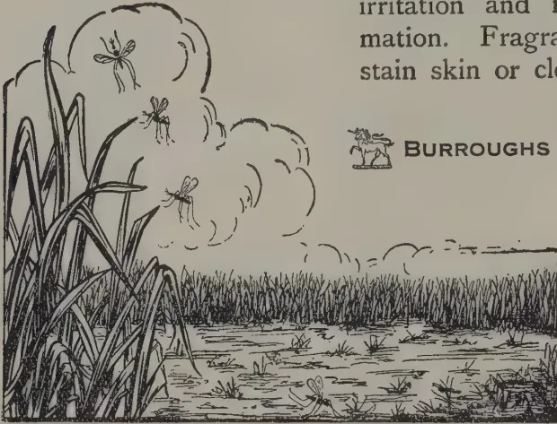
BURROUGHS WELLCOME & Co.
LONDON
In collapsible tubes,
at all Chemists and
Stores
xx 3554
All Rights Reserved
Investigations into a means of increasing the proportion of hens to cocks in hatchings were described in a communication by M. LIENHART of the University of Nancy,* made to the Académie des Sciences in 1919. Starting from the facts that in the same breed cocks are heavier than hens, that the weight of young male chickens is higher than that of females, and that the same difference is perceptible even in newly-hatched chicks, it occurred to MR. LIENHART that the eggs from which male birds are developed might also be heavier than those producing females.
Experiments which he then made did appear to show that by selecting for incubating eggs heavier than the average a larger proportion than usual of male birds was produced. This was only the case, however, when eggs of a single pure breed were used, and it appeared that the result would be more certain if eggs were used from fowls all of the same age and at the height of the laying season.
* See JOURNAL D' AGRICULTURE PRATIQUE, 14th Aug., 1919.
SEPTEMBER, 1922.]191Further experiments at the Experimental Station of Coligny (France) have given the following results * :—
| Sitting of | 15 | eggs, | medium | weight, | rather | light, | 8 | hens, | 4 | cocks. |
| " | " | 15 | " | " | " | heavy, | 4 | " | 7 | " |
| " | " | 15 | " | all heavy | " | ... | 4 | " | 9 | " |
| " | " | 15 | " | light weight (below average) | " | ... | 9 | " | 3 | " |
| " | " | 15 | " | (from 5 hens) lightest weight | " | ... | 11 | " | 2 | " |
Other experiments gave negative results and M. LIENHART found † that these were always obtained with breeds of mixed origin, such as Faverolles, Mantes, Coucous de Malines, etc. With Leghorn, Minorca and Bresse eggs, a large proportion of males with heavy eggs, and a large proportion of females with light eggs, were always obtained.
In reality, the progenitors of the Faverolles had very different weight averages of eggs :—Houdan 1.94 oz., Brahma 1.87 oz., Dorking 2.19 oz. It follows that certain families of Faverolles have eggs approaching Houdan eggs, and others again Dorking eggs. If then, light Faverolles eggs (average weight 2.12 oz) are selected to obtain females, one may include in the sitting heavy eggs of the Houdan type or Brahma type and consequently obtain males. With eggs from a single Faverolles hen, however, of which the eggs were of a constant average weight, M. LIENHART obtained a majority of males with the heavier weights and vice versa.
These results are sufficient to encourage further investigation into the possibility of making, under practical conditions, such a selection of eggs for sitting that a large proportion of the sex desired may be obtained.—JOURNAL OF MINISTRY OF AGRICULTURE, Vol. XXIX, No. 3.
During the long dry weather, and where many fowls and chickens are raised, all congregated in one yard, morning and evening, to be fed, fowl cholera is certain to occur. This is chiefly caused by birds being fed on land infected by their own droppings, or those of turkeys, ducks, etc. Where there is heavy rain the soil gets washed clean, especially where the yard is on a slope. Of course poultry should not be fed in the house yard, for though we admit it is a difficult thing to keep the birds away, still if their feed was always scattered on grass, or below the coffee or other trees away from the house, taking a different spot every day, this would prevent any "fowl sickness."
When fowls congregate in the house yard, the soil becomes foul with their droppings, some of which adhere to the grain feed, and this surely causes the bowel trouble that is usually called "fowl cholera." Chickens and grown birds attacked often die off by the dozen every day. To stop it, put a teaspoonful of disinfectant in the water (1 teaspoonful to the quart), and feed dry rice or parched corn for a week, always on clean ground. To disinfect the yard sprinkle lime over it, burn bush over it, or spray with a disinfectant.—JOURN. OF JAMAICA AGRIC. SOC., VOL. XXVI, No. 5.
* JOURNAL D' AGRICULTURE PRATIQUE, 25th Feb., 1922.
† Bulletin de la Société de Biologie, No. 36, 10th Dec., 1921.
192[SEPTEMBER, 1922.The evolution of bee-keeping is touched upon by Miss ANNIE BELTS, B.Sc., in the June BEE WORLD. She points out that in Palaeolithic times man lived by the chase, and, in order to secure his honey, first followed the bee home where he cut out the combs, while at a later period (in the bushman or semi-domestication stage) he exerted a proprietary right over a hive, when he discovered it, and skillfully robbed it every year, (incidentally she remarks that the first alcoholic beverage of early man was fermented honey or mead).
In Neolithic times came both agriculture and apiculture when in settling down in one spot man was in a position to keep bees as well as grow crops.
Investigation and research would seem to indicate that the Mindan Cretans who kept bees came from Syria and ultimately from or near India, thence spreading to Europe and Northern Africa. Further evidence on this point is promised.
The Glasgow District Bee-keepers' Association pocket book gives the following as the Prime Factors for securing the honey harvest : (1) a strong colony, (2) this to coincide with the honey flow, (3) good weather conditions. In order to secure (1) and (2) the following conditions are necessary :—(a) union of weak stocks, (b) stimulative feeding, (c) transference of sealed brood from the weaker to the stronger hives, (d) prevention of swarming. The problem of the swarm is thus dealt with : Swarming and honey getting are antagonistic. Should a swarm occur make a nucleus on a new stand with 3 or 4 frames containing the best queen cells and all adhering bees. Insert fresh frames (with comb or foundation) in place of those taken from the parent colony and put back the swarm. Otherwise cut out the queen-cells, and put back the swarm to finish the work in the supers.
In an article on Bee-keeping and Agriculture in GLEANINGS IN BEE-CULTURE for April last we read that in 1911 the United Planters' Association of Southern India asked Government to pass some regulations prohibiting the destruction of bees in the Coffee districts, on account of the reduction of the coffee crop due to destruction of bees in certain districts. As a result the Madras Department of Agriculture made a careful study of the fertilisation of coffee and published the results in Bulletin No. 69 in which the fact is recorded that "the natural and most desirable form of pollination is achieved by the aid of flower-visiting insects of which bees are the most important."
THOMAS KEARNEY of the Bureau of Plant Industry, U.S. Department of Agriculture refers in the JOURNAL OF HEREDITY for March, 1921, to the
SEPTEMBER, 1922.]193importance of the honey-bee in increasing the yield of Cotton. "It would, therefore, seem desirable," he says, "to encourage the keeping of bees in the vicinity of cotton fields."
GEORGE DEMUTH, an authority on Apiculture, writes that more and more careful investigation is revealing the value of the honey bee to Agriculture. The growers of insect-pollinated crops will not take a chance on the haphazard pollination by insects not under control. Agriculture will demand that large numbers of bees be kept even if they never yielded any return in honey.
This opinion is well worth the careful consideration of coconut planters.
The variation in the size of frames (as well as the construction of hives) would appear to be as great in the West as in the East. The following refers to the dimensions of the frames used for A. mellifica: Quinby hives, by 11 or by 11 inches: Jumbo by : Langstroth, by : Adair by : American, 12 by 12, Gullup, by : Haddon, by : Danzenbaker, 17 by : British standard, 14 by .
For A. indica, frames of the following dimensions are advocated: Imperial Entomologist, India, (British standard): Ghosh, (kerosene box hive): Father Newton (Trichinopoly), : Shanks, : Andree, : Ceylon Bee-keepers' Association : Goonetilleke, .
MR. GOONATILLEKE writes:—"I am in favour of the Danzenbaker type of hive for the following reasons:—(1) the frames are self-spacing, (2) the bees are induced to attach their combs to the bottom and the sides of the frames, (3) the swarming impulse is reduced to a degree, (4) the sealed honey is evenly used up. The top and bottom bars of my frames are in. wide, but I would even make them narrower, say or in. so that the combs may extend well beyond the edges of the frame. This enables one to use the uncapping knife without being hampered. By placing the knife horizontal with the edge of the bar the layer of cappings (th or slightly more in thickness) can be sliced off and the honey cells laid bare for extraction. A width of or for the top and bottom bars may do in the brood chamber but not for the super: but I prefer the same width for both.
In regard to space between combs, MR. GOONATILLEKE says that he thinks a in. space sufficient for one layer of bees on the face of each comb. I know that in nature bees have a wider space, but this allows more than one layer of bees on the face of the combs and encourages idleness. If room is given for only a single the bees will be kept busy. A space of in. is not sufficient.
I maintain that the normal thickness of comb is in.
Here are some interesting points for discussion: and the views of members of the Ceylon Bee-keepers' Association based on their own experience, will be welcomed by the Secretary.
C. D.
194[SEPTEMBER, 1922.C. H. WRIGHT, M.A., F.I.C.
Government Chemist, Fiji.
Considering the larger quantities of bananas which are grown in Fiji it is surprising what little use has been made of them as food. A certain quantity are of course eaten as food by Fijians, but the remainder were until recently nearly all exported for consumption as fresh fruit. But now that the Australian market is closed owing to the high import duty recently imposed, it is advisable to consider whether some use could not be made in Fiji of the large quantities of bananas, which were formerly exported to Australia.
With the object of finding some solution of this problem and also helping any one who is interested in the question, dried bananas were prepared at the Chemical Laboratory during this month (July); samples of the "banana chips" and banana flour" so prepared can be seen there by anyone who wishes to do so. The objects of this work were to learn something more than can be found in books as to the preparation; to determine the yield; and to obtain sufficient of the flour for analysis and for trials as a food. The analysis of the banana flour prepared at the Laboratory is not yet complete nor have trials yet been made as to the possibility of using it in making bread. It is hoped to consider these and other matters in the next number of the Agricultural Circular.*
The preparation of banana flour is thus described by W. FAWCETT in THE BANANA, ITS CULTIVATION, DISTRIBUTION AND COMMERCIAL USES, London, 1913, pp 114-115:—
"Banana flour as made from the fully grown unripe banana, that is, before the starch is changed into sugar in the ripening. It is difficult to peel green bananas, but if they are first put into scalding water (176° F.) for four or five minutes, the peel is easily removed. The peeled fruit is dried in the sun or put into a drier of some kind to reduce the percentage of water from 75 to 15. The drying is more readily effected if the fruit is cut up small. Steel knives should not be used as they turn the banana black; nickel blades are better, and very effective knives can be made from bamboo. The peasantry in Jamaica, after taking off the skin, cut the bananas into thin slices and lay them on stones in the sun. One day's hot sun is sufficient to dry them, after which they are put into a mortar pounded and then sifted. Two bunches make ten quarts of flour."
In the experiments carried out by me at the Chemical Laboratory, the fully developed but unripe green bananas were dropped into boiling water and left there for about five minutes. They were then immersed in cold water, and when cold they were peeled with a rustless steel knife. It is well known that if a green banana is cut with an ordinary steel knife the knife is turned black, and the banana is discoloured. This is due to the tannin in the green banana, which forms a black compound with iron. Hence FAWCETT recommends nickel blades or pieces of split bamboo;
* See October issue of 'T.A.'—Ed. 'T.A.'
SEPTEMBER, 1922.]195but what is far preferable is a rustless steel knife, which was used in my experiments for peeling and cutting up the bananas, and even when smeared with the juice of the green banana and left over night did not show any signs of discolouration. The peeled bananas were then cut lengthwise into four or five strips, which were then dried in the sun. Even lately, when the weather in Suva has not been very favourable for such work, it was found that they were nearly dry after one day's exposure to the sun. It is necessary that the slices of banana are dried as quickly as possible : otherwise the ripening process goes on and the starch in the banana is converted into sugar ; the pieces of banana then become coated with a sticky sugary layer, which will not dry. In view of these facts drying in a dryer would be far preferable to sun drying. The dry slices of banana are known as "banana chips ;" they are quite hard and break with a distinct snap ; they are like a dry unsweetened biscuit to eat and have a faint agreeable taste similar to that of the banana.
Banana flour is made by grinding the "banana chips." In my experiments the latter were ground in a coffee-grinder. As thus prepared the banana flour is pale yellow, and has a faint sweetish smell. No doubt if I had the means of grinding it more finely and then sieving it, the flour would be whiter, and perhaps more attractive in appearance. FAWCETT, loc. cit., p. 115, states that in a factory at one time in operation at Montpelier, Jamaica, the bananas were dried in a vacuum dryer in which they were stirred and cut up. "The drying was complete in about two hours; by this time the bananas had been reduced to the appearance of somewhat coarse flour with only 15 per cent of water. The mass was removed from the drier, and passed through sieves containing 120 meshes to the square inch. Whatever remained in the sieve was passed through a simple mill and sifted afresh." The object of this sieving is, however not quite obvious since there is nothing objectionable in the dried banana ; and it would seem that a very palatable flour can be obtained from the "banana chips" by grinding only.
A short time ago as a result of an inquiry I looked up the subject and was unable to find in any book or journal the average weight of a banana and the ratio of skin to pulp. But I did find in THORPE'S DICTIONARY OF APPLIED CHEMISTRY, article banana, an analysis by LEUSCHER of the pulp of unripe banana and in FAWCETT'S THE BANANA, p. 110, an analysis of banana flour by H. H. COUSINS, Director of Agriculture, Jamaica, from these analyses the percentage of starch in the pulp of the unripe banana is 19.1 per cent., and in the banana flour it is 60.4 per cent. Hence 100 lb. of the pulp of the unripe banana contains 19.1 lb. starch. This weight of starch is contained in lb. of flour. That is to say the banana pulp yields 31.6 per cent of its weight of banana flour. This figure is of interest because by actual experiments described later I found that the average yield was 34.4 per cent. Remembering that bananas, like all natural products, vary in composition this is a very satisfactory agreement.
In the experiments carried out by me an enamelled iron bowl or plate was weighed to the nearest whole gram. On it were placed two or three fully developed but unripe bananas and weighed again. These bananas were then peeled as described above and the bowl or plate together with the peeled bananas weighed. The peeled bananas were then cut up with a rustless steel knife on the same bowl or plate, and were heated in a steam oven until they were dry. The bowl or plate together with the "banana chips" were weighed at intervals until the weight was constant. In this way I found the weight of one banana, the percentage of pulp in the whole banana, and the yield of banana chips."
196[SEPTEMBER, 1922.As was to be expected the weight of a banana varies considerably; even the bananas on one bunch vary greatly in weight, depending on whether they are taken from the upper, middle or lower hands. In all I weighed 37 bananas, and the weight of one banana was found to vary from 109 to 144 grams with an average of 132.4 grams (=4.67 oz Av.). As the average of six experiments I found that the peeled fruits amounts to 55.3 per cent of the whole banana, or in other words the skin makes up 44.7 per cent by weight of the green banana. In five experiments which agree very closely amongst themselves I found that the dried bananas ("chips") are 17.3 per cent by weight of the whole green bananas, and 31.4 per cent of the peeled fruit (pulp).
From the above data it is now possible to calculate the yield of banana flour per bunch. For the sake of the calculation suppose that a bunch consists of 100 bananas. The 100 bananas will weigh grams. This will yield 17.3 per cent of its weight of dried bananas; hence the weight of dried bananas = grams = 5.05 lb. If the bunch consisted of 150 bananas, then the weight of dried bananas obtained would be lb. It will be noticed from the quotation given above that FAWCETT states that one bunch of bananas yields five quarts of flour. I found that pint of flour prepared in the laboratory weighed 155 grams. Therefore one quart weighs grams, and five quarts weigh 3,100 grams = 6.83 lb. This agrees very well with the yield calculated above, and it may be safely said that the yield of flour from one bunch of bananas will be from 5 to lb. depending on the size of the bunch.—
AGRIC. CIR. FIJI. VOL. 2. NO. 3.
MR. H. K. RUTHERFORD, who continues to take a keen interest in all matters relating to the agriculture of this Colony, has sent the following interesting note for publication in the TROPICAL AGRICULTURIST.
"I have kept a record of Coconut crops from Ceylon and Malayan Companies for several years and also the number of nuts taken in each country to produce a candy and the following is the result:—
7 Malayan Companies (15 crops) average 1062 nuts per candy.
12 Ceylon Companies (32 crops) average 1240 nuts per candy.
The Coconut therefore in Malaya shew an advantage over those in Ceylon of 16.6%, the former taking 4248 to produce a ton of copra and the latter 4960.
In all probability this difference is largely due to the fact that the coconut plantations in Malaya are much younger than those in Ceylon, as it is well known that young coconut trees produce heavier nuts than those from old trees."
Agricultural Research in Great Britain, Nature, Vol. 110, No. 2750, p. 93.
Marais, J. S., Agricultural Value of Insoluble Phosphates.—Soil Science, Vol. XIII, No. 5, pp. 355-409.
Whittles, C. L., Classification of Soils.—Journal Agric. Science, Vol. XII, No. 2, pp. 166-181.
Wiles, H. H., Experience in Manuring Green Crops, Season 1921.—Indian
SEPTEMBER, 1922.]197Tea Association Quart. Journal, Pt. I of 1922, pp. 22-32.
Piper, C. V., & Pieters, A. J., Green Manuring.—U. S. Dept. of Agric. Farmers' Bull. 1250.
Myers, W. I., An Economic Study of Tractors.—Cornell Univ. Agric. Expt. Sta. Bull. 405
Crops Doubled by Gassing with Carbon Dioxide.—Indian Scientific Agriculturist, Vol. III, Pt. 6, pp. 58-62.
Joshi, Studies in Methods to prevent Nitrogen losses from Dung and Urine during Storage.—Agric. Journal of India, Vol. XVII, Pt. 4, pp. 367-374.
Depape, C., Pleocene Flora of the Rhone Valley.—Ann. des. Sciences Naturelles Bot. Ser. X, T. IV, Nos. 3 & 4.
Blake, S. F., New Plants from Guatemala, Contrib.—U. S. Nat. Herbarium, Vol. 24, Pt. 1.
Tams, W. H. T., Pollination of Early Spring Flowers.—Journal of Bot. Vol. IX, No. 715, p. 203.
Raines, M. A., Vegetative Vigor of the Host.—Am. Journ. of Bot., Vol. IX, No. 4, pp. 182-203.
Waby, J. F., Plants Worth Knowing.—Jour. Board of Agric., Br. Guiana Vol. XV, Pt. 2, pp. 73-77.
Mason, T. E., Water Balance of Plants; Its Significance in Crop Production.—West Indian Bull. Vol. XVIII, Pt. 4, p. 157-183.
The Dispersal of Fungi. Indian Scientific Agriculturist, Vol. III, Pt. 6, pp. 246-248.
Winston, F. R., Commercial Control of Citrus Scab. U. S. Dept. Agric. Cir. 215.
Wakefield, E. M., Mosaic Diseases of Plants.
Paillot, Simultaneous Treatment for Cryptogamic and Insect Parasites by means of Sprays.—Annales des Epiphyties, Tome VII, 1919-20, pp. 169-191.
Maublanc, Brown Rot of Cacao.—L'Agronomie Coloniale, Vol. VI, No. 54, pp. 177-183.
Gunn, D., The Wooly Bear Caterpillar.—Journal Dept. of Agric. U. S. Africa, Vol. IV, No. 6, pp. 542-547.
Suryth, E. G., Plant Inspection and Quarantine Report 1918-19.—Dept. of Agric., Porto Rico Bull. 23.
Insect War on the World; Cotton Crop Ravages.—Indian Scientific Agriculturist, Vol. III, Pt. 6, pp. 261-262.
Ainslie, G. G., Worms Injurious to Cereal and Forage Crops.—U. S. Dept. Agric. Farmers' Bull. 1258.
White Coffee Leaf Miner.—Farmers' Journal, Vol. IV, No. 26, pp. 9 & 10.
Keeping Eggs, Indian Scientific Agriculturist, May 1922, p. 185.
Broody Hen.—Journal Board of Agric., Br. Guiana, Vol. XV, Pt. 2, p. 66.
Poultry Notes—Worms, Lice, Diarrhoea.—Journal Board of Agric. Br. Guiana, Vol. XV, Pt. 2, p. 71.
198[SEPTEMBER, 1922.SEEDS, SELECTION AND BREEDING.Webber, H. J., Methods of Propagating the Orange and other Citrus Fruits, Bull. Bot. Dept., Jamaica, Vol. V, Pt. IV, pp. 75-87.
Dr. W. J. Beal's Seed Variability Experiment.—American Journal of Bot. Vol. IX, No. 5, p. 266.
Jochems, S., Verslag, van de Selectieproeven, over het jaar 1921, Meded. V. L. Deli Profstation, Medan, No. XXIII.
ECONOMIC PLANTS.Agave.La Culture du Sisal au Soudan française.—Revue de Bot. Appliquée, Avril 1922, p. 132.
Banana.Salvador, W., Food Value of Philippine Bananas.—Phil. Journal of Science, Vol. 20, No. 3, pp. 363-366.
Ripening Bananas in Air-tight Chamber.—Agric. Gazette, N. S. W., Vol. XXXIII, Pt. 7, p. 482.
Cacao.Maublanc, Brown Rot of Cacao.—L'Agronomic Coloniale, Vol. VI, No. 54, pp. 177-183.
Coconut.Norris, R., Improvement of the Coconut Jaggery Industry in the West Coast. Agric. Journal of India, Vol. XVII, Pt. 4, pp. 333-366.
Coffee.Boyd, A. J., Coffee Growing in Queensland.—Queensland Agric. Journal, Vol. XVIII, Pt. 1, p. 7.
Box, H., The White Leaf Miner.—Farmers' Journal, Vol. IV, No. 26 pp. 9-10.
Cotton.Gilbert, W. W., The Diseases of Cotton.—Revue de Botanique Appliquée, Tome 2, No. 10, p. 274.
Cotton Growing in Mozambique.—Bull. of the Imperial Institute, Vol. XIX, No. 4, pp. 447-452.
An Improved type of Cotton for the Dharwar-American Tract.—Indian Scientific Agriculturist, Vol. XVII, Pt. IV, p. 347-352.
Prospects of Cotton Growing in the Northern Provinces of Nigeria.—Bull. Imp. Inst., Vol. XIX, No. 4, p. 469.
Kudzu.Le Kudzu (Aug. Chevalier).—Revue de Botanique Appliquée, Vol. 2, No. 10, pp. 279-281.
Rice.Wells, A. H., Agcaoli, F and Felician, R. T., Philippine Rice.—Philippine Journal of Science, Vol. XX, No. 3, pp. 353-361.
Rubber.Maas and Rutges. Grondbewerking in Heveatuinen, Archief voor de Rubbercultuur, Vol. VI, No. 7.
Sweet Potatoes.Beattie, J. H. and Thompson, H. C., Sweet Potato Studies.—U. S. Dept. of Agric. Bull. 1063.
Sugar.The World's Trade in Sugar.—Bull. Imp. Inst., Vol. XIX, No. 4, p. 475.
Report and Analysis of Sugar Cane Grown in Kenya.—Farmers' Journal, Vol. IV, No. 26, pp. 17-20.
Tea.Stuart, C. P., Experiments in Pruning. Meded. v. h.—Profestation voor Thee, No. LXXIX.
H. L.
SEPTEMBER, 1922.]199(FROM LEWIS & PEAT'S Ltd., LATEST MONTHLY PRICES CURRENT).
| GOODS | QUALITY | PRICE | PER | PKGS | POSITION | MARKET |
|---|---|---|---|---|---|---|
| BEANS AND PEAS— | ||||||
| Butter Beans | ... Madagascar New Crop... | £16 10/ | ton | Bags | Spot U.K. | ... Quiet |
| Rangoon Beans | ... Hand Picked ... | £6 17/6 | " | " | " " | " " |
| Soya Beans | ... Manchuria ... | £13 | " | " | C.i.f. " | " " |
| Green Peas | ... Japanese, f.a.q. ... | £48 | " | " | " " | ... Steady |
| " | Dutch | £24 to £28 | " | " | Spot " | " " |
| CAKES— | ||||||
| Ground Nut Cake | ... Bombay 55olo ... | £10 | ton | Bags | C.i.f. U.K. | ... Better demand |
| Copra Cake | ... Malabar ... | £10 | " | " | " " | " " |
| " | Ceylon | £9 | " | " | " " | " " |
| COPRA— | ||||||
| Malabar | £27 | ton | Bags | C.i.f. U.K. | ... Steady | |
| Ceylon | £26 10/ | " | " | " " | " " | |
| GROUND NUTS— | ||||||
| Bombay Decorticated | £22 5/ | ton | Bags | C.i.f. Continent | Slow | |
| OILS— | ||||||
| Palm Oil | ... Lagos ... | £35 | ton | Casks | Spot U.K. | ... Steady |
| " | Congo | £31 | " | " | " " | " " |
| Coconut Oil | ... Cochin ... | 43/ | cwt | " | C.i.f. U.K. | " " |
| " | Ceylon | 39/ | " | " | " " | " " |
| Palm Kernel Oil | ... Crushed ... | 37/6 | " | Naked | Spot " | Firm. Good demand |
| PALM KERNELS— | ||||||
| West African | £17 17,6 to £18 | ton | Bags | { Ex quay L'pool Spot U.K. |
} Steady | |
| SEEDS— | ||||||
| Castor Seed | ... Bombay ... | £19 | ton | Bags | C.i.f. U.K. | ... Firm |
| " | Madras | £18 | " | " | " " | " " |
| Sesame Seed | ... Bombay ... | £26 | " | " | " Continent | Inactive |
(From Perfumery and Essential Oil Record, Vol. 13, No. 6.)
| GOODS | QUALITY | PRICE | PER | PKGS. | POSITION | MARKET |
|---|---|---|---|---|---|---|
| Camphor Oil | ... White ... | 80s to 85s. | cwt. | Drums and cases | Easier again | |
| Do | ... Brown ... | 75s. | Drums | Spot | " | |
| Cinnamon Leaf Oil | ... | 5½d. | oz. | C.i.f. | Steady | |
| Do | ... | 4½d. | " | |||
| Cinnamon Bark Oil | ... Genuine ... | 7s. | " | |||
| Citronella Oil | ... Ceylon ... | 1s. 11½d. to 1-11½d. | lb. | Spot | Little Improvement | |
| Citronella Oil | ... Java ... | 2s. 11d. to 2s. 11½d. | lb. | " | ||
| Do | ... Burmese ... | 2s. 11d. to 2s. 11½d. | " | " | ||
| Lemongrass Oil | ... Cochin ... | 2½d. | oz. | Steady | ||
| Lime Oil | ... Distilled in large lines ... | 2s. 3d. | lb. | " | " | |
| Do | ... Hand-pressed ... | 10s. 6d. to 11s. | " | Nominal | ||
| Nutmeg Oil | ... In quantity ... | 5s. | " |
200
[SEPTEMBER, 1922.
METEOROLOGICAL.
AUGUST, 1922.
ANIMAL DISEASE RETURN FOR THE
MONTH ENDED 31st AUGUST, 1922.
| Province, &c. | Disease. | No. of Cases up to date since Jan. 1st, 1922. | Fresh Recoveries. | Deaths. | Bal- ance Ill. | No. Shot. |
|---|---|---|---|---|---|---|
| Western | Rinderpest | 11 | 24 | 3 | — | — |
| Foot-and-mouth disease | 289 | — | 8 | 1 | 15 | |
| Anthrax | — | — | 1 | — | — | |
| Colombo Municipality | Rabies | 4 | 3 | 1 | — | 3 |
| Hemorrhagic Septicæmia | 7 | — | — | — | — | |
| Rinderpest | 15 | 2 | — | — | — | |
| Cattle Quarantine Station* | Foot-and-mouth disease | 129 | — | 5 | — | — |
| Anthrax | — | — | — | — | — | |
| Rabies | 10 | — | — | — | — | |
| Central | Rinderpest | 16 | — | — | — | — |
| Foot-and-mouth disease | 50 | — | — | — | — | |
| Anthrax | 133 | — | — | — | — | |
| Southern | Rinderpest | 87 | 44 | 76 | 1 | 10 |
| Foot-and-mouth disease | 6 | — | 1 | — | — | |
| Anthrax | 9 | — | 6 | — | — | |
| Northern | Rinderpest | 7 | — | — | — | — |
| Foot-and-mouth disease | 37 | — | — | — | — | |
| Anthrax | — | — | — | — | — | |
| Eastern | Hemorrhagic Septicæmia | 3 | — | — | — | — |
| Black Quarter or (Quarter III). | 294 | 1 | 2 | — | — | |
| Rinderpest | — | — | — | — | — | |
| North-Western | Foot-and-mouth disease | 18 | — | — | — | — |
| Anthrax | — | — | — | — | — | |
| Rinderpest | 174 | 120 | 171 | 3 | — | |
| North-Central | Foot-and-mouth disease | 2 | 1 | 2 | — | — |
| Anthrax | — | — | — | — | — | |
| Rinderpest | 278 | — | — | — | — | |
| Uva | Foot-and-mouth disease | 3 | 275 | 3 | — | — |
| Anthrax | — | — | — | — | — | |
| Rinderpest | 1435 | 330 | 1315 | 120 | — | |
| Sabaragamuwa | Foot-and-mouth disease | 3 | — | 3 | — | — |
| Anthrax | 1 | — | — | — | — | |
| Hemorrhagic Septicæmia | — | — | — | — | — |
* Figures for August 1922, not to hand.
Colombo, 5th September, 1922.
G. W. STURGESS,
Government Veterinary Surgeon.
| Station | Temperature | Mean Humidity | Mean amount of cloud. 0 = clear. 10 = overcast. | Mean Wind Direction during month | Daily Mean Velocity. | Rainfall | ||
|---|---|---|---|---|---|---|---|---|
| Mean Daily Shade | Difference from Average | Amount | Days | |||||
| ° | ° | % | Miles | Inches | Inches | |||
| Colombo | 81.2 | + 0.2 | 80 | 8.8 | SW | 139 | 1.11 | 10 |
| Observatory | 81.5 | - 0.1 | 75 | 4.8 | SW | 270 | 0.00 | 0 |
| Puttalam | 83.4 | + 0.2 | 74 | 7.3 | SSW | 252 | 0.38 | 2 |
| Mannar | 82.6 | - 0.2 | 77 | 6.5 | SSW | 351 | 2.01 | 5 |
| Jaffna | 86.0 | + 1.2 | 61 | 6.9 | WSW | 237 | 3.02 | 7 |
| Trincomalee | 85.0 | + 1.1 | 66 | 5.0 | Var. | 157 | 1.04 | 2 |
| Batticaloa | 81.6 | + 0.2 | 78 | 4.8 | WSW | 421 | 0.47 | 9 |
| Hambantota | 78.9 | - 1.1 | 87 | 7.8 | WNW | 253 | 4.56 | 21 |
| Galle | 80.4 | + 0.2 | 74 | 7.4 | — | — | 0.66 | 28 |
| Ratnapura | 84.1 | + 0.5 | 64 | 6.0 | — | — | 0.26 | 1 |
| Anu pura | 81.5 | + 0.7 | 74 | 6.6 | — | — | 0.90 | 13 |
| Kurunegala | 75.9 | + 0.1 | 80 | 8.1 | — | — | 4.98 | 22 |
| Kandy | 76.0 | + 0.6 | 70 | 6.6 | — | — | 2.15 | 6 |
| Badulla | 71.0 | + 0.2 | 86 | 7.5 | — | — | 1.26 | 6 |
| Diyatalawa | 61.9 | + 0.2 | 84 | 9.2 | — | — | 2.42 | 18 |
| Hakgala | 60.6 | + 1.2 | 86 | — | — | — | 0.73 | 28 |
| N. Eliya | — | — | — | — | — | — | — | — |
The rainfall in August, 1922 was deficient over more than three-quarters of the island. This rather sweeping statement can however be qualified by adding that small deficits were far commoner than large ones, and that there was less shortage in the "number of rainy days" than in the quantity of rain, e.g. in the table above, Nuwara Eliya and Ratnapura are below average rainfall but both recorded rain on 28 days—a number in advance or their averages by 7 & 6 respectively.
Reports giving rainfall totals appreciably ahead of average came for the most part from the Dikoya, Maskeliya area e.g. Lucombe 24.3 in. (average 18.3 in.) Blair Athol 21.1 in. (average 15.6 in.) Hatton 18.7 in. (average 15.5 in.) and further towards the south west Carney (Adam's Peak) 21.7 in. (average 16.1 in.). Blackwater's total of 32.7 in. is also noteworthy.
In each of the Northern, North Western, Eastern, Southern, and Uva provinces there were stations that reached their average (though without much margin) but in each of these provinces the great majority of stations were a little below. In the North Central Province no stations appear to have reached average. In the Western Province, and northern half of Sabaragamuwa, deficits of from 2 to 5 inches were commonest and deficits of more than 5 inches were recorded over a strip from Ratnapura to the west coast, including stations as far as Raviygam and as far south as Geekianakanda.
No reports of over 4 inches in a day were received but there were several of over 3 inches, chiefly on the 18th/19th from the Dikoya-Maskeliya-Nawalapiya area.
The stations that reported no rain whatever for the month included nearly all those in the Chilaw Puttalam area, a few, but by no means the majority, further north, Alutnuwara and Taldena, and one or two north of Hambantota.
The pressure gradient did not differ much from normal and the mean wind velocities were normal or only slightly above.
Temperature off-sets, as can be seen from the table, were above, especially on the East side, while the humidity was below and the amount of cloud on the whole above.
A. J. BAMFORD,
Supdt. Observatory.
VOL. LIX.
PERADENIYA, OCTOBER, 1922.
No. 4.
It may be advisable to review the progress that has been made in recent years in the improvement of paddy cultivation in the Colony. During the past few months there has been further closing down of those food production schemes which were organized during the period of rice shortage for the opening, under company enterprise, of large areas of irrigable lands. These companies have experienced financial losses and have found that it is impossible to continue operations with profit.
The experience of all companies is the same and it has become evident that paddy cultivation to be financially successful on new lands must, in general, be carried on by the cultivators themselves in small blocks. Private owners, as well as companies, have opened up fairly considerable areas in certain localities, but have found it preferable to carry on after the first few years on the share system. They thereby virtually become the landlords and the cultivators of areas averaging five to ten acres in extent, the tenants' rent for advances of seed paddy, buffalos and land being payable by definite and fixed amounts of grain out of the crops realized.
This system is working successfully in certain areas and provides in normal seasons reasonable financial return on the capital invested and overcomes the great difficulty that the small cultivator experiences in the initial stages of opening new lands—viz., the provision of adequate capital for the first expensive operations of clearing jungle and aswedumizing.
In the Eastern Province, where capitalists and food production companies have not been inclined to take up new lands, the provision of capital in the early stages has been made possible through the Batticaloa Paddy Bank, and largely increased areas have been brought under cultivation as the result of its operations.
There is evidence in certain districts, however, that where new lands have been opened some of the older lands have been abandoned. This is the natural sequence of a shortage of
202[OCTOBER, 1922.]labour, and one is obliged to accept the view that the opening of new lands under paddy must be a gradual process and that the addition of extensive areas cannot in the near future be expected.
It therefore becomes increasingly evident that closer attention should be given to those lands already under paddy cultivation and every endeavour made to render them more productive.
What are the directions in which improvement can be effected?
Statistics recently collected by the Director of Statistics clearly demonstrate the importance of village irrigation works. The total area of land under such works greatly exceeds the area under major works. It is well-known to all that many of these village works are in need of repairs, and with a view to assisting in such repairs the Legislative Council has in past years voted sums of money. It has also been recently decided by the Local Loan and Development Commissioners that they will be prepared to consider applications for loans for the provision or repair of masonry headworks to minor irrigation works where adequate security is offered. By this means it is hoped that material assistance can be given to the improvement of the minor or village irrigation works.
The work of those irrigation headmen responsible for the clearing of channels and the distribution of water appears to require closer supervision, and the best means for effecting such improved supervision is being considered.
Turning to the cultivation itself. The methods of cultivation require improvement. Ploughing demonstrations have been held in many localities during the past year and the necessity for thorough preparatory cultivation emphasized.
The use of manures is gradually increasing. The results of trials in all districts have demonstrated the value of green manures and of applications of phosphatic manures. In the Jaffna district of the Northern Province the spread of green manures is taking place and demands for seed from other districts are increasing.
Transplanting is being extended gradually in areas suited to this form of cultivation and some interest has been evinced in selection of seed. The work of the Economic Botanist in the evolution of new pure strains is progressing satisfactorily and supplies of pure seed paddy will shortly be available.
Competitions have assisted towards the improvement of cultivation methods and, if continued, they cannot fail to bring about increased crops.
OCTOBER, 1922.]203BY THE IMPERIAL INSTITUTE OF THE UNITED KINGDOM,
THE COLONIES AND INDIA.
The five samples of coffee which are the subject of this report were forwarded to the Imperial Institute by the Director of Agriculture, and are referred to in his letter No. 272 dated the 31st January, 1922.
It was stated that the coffees had been grown on the Experiment Station at Peradeniya.
The samples each weighed about 5 lb. and represented five varieties of ungraded coffee in the parchment. Their characteristics are given in the following table :—
| No. | Label. | Description. | Percentage of parchment in berries. | Average weight of beans freed from parchment in grams. |
|---|---|---|---|---|
| 1. | "Robusta" | Seed coat dull brown, tightly adhering in most cases, but loosely in others. Beans dull greyish-cream. | 12.0 | 0.15 |
| 2. | "Hybrid" | Seed coat light brown, tightly adhering. Beans greyish-cream to cream, opaque. | 13.0 | 0.13 |
| 3. | "Canephora" | Seed coat light brown, tightly adhering. Beans greyish-cream to cream. | 10.6 | 0.14 |
| 4. | "Quillou" | Seed coat brown, tightly adhering in some cases, but in others fairly loose. Beans greyish-cream to cream, opaque. | 10.9 | 0.15 |
| 5. | "Uganda" | Seed coat light brown, tightly adhering. Beans greyish-cream to cream. | 14.0 | 0.14 |
The beans were analysed with the following results :—
| No. 1 Robusta. per cent. |
No. 2 Hybrid. per cent. |
No. 3 Canephora. per cent. |
No. 4 Quillou. per cent. |
No. 5 Uganda. per cent. |
|
|---|---|---|---|---|---|
| Moisture | - 10.1 | 10.1 | 10.4 | 10.4 | 10.6 |
| Caffeine | - 2.1 | 2.3 | 2.3 | 2.4 | 2.3 |
| Crude Proteins | - 13.4 | 11.5 | 11.4 | 11.2 | 12.4 |
| Fat | - 6.7 | 6.1 | 7.8 | 6.9 | 7.1 |
| No. 1 Robusta. per cent. |
No. 2 Hybrid. per cent. |
No. 3 Canephora. per cent. |
No. 4 Quillou. per cent. |
No. 5 Uganda. per cent. |
||
|---|---|---|---|---|---|---|
| Carbohydrates etc., (by difference) - |
- | 49.6 | 52.1 | 49.3 | 51.5 | 50.8 |
| Fibre - | - | 14.6 | 14.5 | 15.3 | 14.1 | 13.5 |
| Ash - | - | 3.5 | 3.4 | 3.5 | 3.5 | 3.3 |
For comparison with these results the following figures recorded for some of the above varieties of coffee and for Arabian coffee (Coffea arabica) may be quoted :—
| Robusta. per cent. |
Canephora. per cent. |
Quillou. per cent. |
C. arabica. per cent. |
||
|---|---|---|---|---|---|
| Moisture - | - | 13.1 | 8.7 | — | 8 to 12 |
| Caffeine - | - | 1.5 to 2.4 | 2.3 | 2.4 to 2.8 | 1.0 to 1.5 |
| Crude Proteins - | - | — | 9.9 | — | 7 to 12 |
| Fat - | - | 7.79 | 7.8 | — | 11 to 14 |
| Carbohydrates, etc., (by difference) - |
- | — | 48.7 | — | 38 to 51 |
| Fibre - | - | — | 18.4 | — | 18 to 22 |
| Ash - | - | — | 4.2 | — | 3.5 to 4 |
The five coffees from Ceylon are similar in chemical composition, and contain, in comparison with C. arabica a high percentage of caffeine and a somewhat larger amount of proteins. The percentage of fat and fibre are considerably lower than C. arabica.
It was stated in the trade that these coffees are not particularly suitable for use in the United Kingdom but that they would find a market here for re-export. They should be husked and cleaned before shipment, and would then be ready saleable on the Continent of Europe in large quantities, up to 250 to 500 bags at a time. If forwarded in the parchment the coffees would realise only about 45s per cwt. in the United Kingdom, but if husked and cleaned their present value would be approximately as follows :—
| Per cwt. | ||
|---|---|---|
| No. 1. ... | Robusta ... | 60s. |
| No. 2. ... | Hybrid ... | 58s. |
| No. 3. ... | Canephora ... | 62s. |
| No. 4. ... | Quillou ... | 65s. |
| No. 5. ... | Uganda ... | 63s. |
These five samples of coffee are all well prepared and would be saleable in London for re-export to the Continent.
18th July, 1922.
OCTOBER, 1922]205The experiments with cultivations of sugar-cane have been continued at Peradeniya and Anuradhapura Experiment Stations and samples from all varieties have been analysed by the Government Agricultural Chemist.
In the TROPICAL AGRICULTURIST for April, 1921, the analyses of sugar-canes grown at Peradeniya and at Anuradhapura were given and the results of these analyses were fully discussed. In the editorial of the same issue, it was stated that these analyses were only the preliminaries of a more complete series. The sucrose contents of the juices from this first series were low, the glucose ratios exceptionally high and the purities poor.
It was thought that these results may have been due to the canes having been cut before they were fully ripe and that better results would have been secured if the canes had been carried over to the dry months of February and March.
For the present series of analyses, the canes were cut in December, January and March. The failure of the North-East Monsoon around Peradeniya during the latter part of 1921 resulted in the canes ripening earlier than usual, while at Anuradhapura Station the rainfall was somewhat in excess of normal.
The rainfalls at both stations during the months December 1921-February 1922 were as follows:—
| Peradeniya. | Anuradhapura. | ||
|---|---|---|---|
| December, 1921 | ... | 5.29 | 12.77 |
| January, 1922 | ... | 2.86 | 1.01 |
| February, 1922 | ... | 5.42 | 11.24 |
The analytical figures this year show a marked improvement over those of the previous year, which indicates that when the sugar-canes are fully ripe fair juices may be expected. The glucose ratios are generally high and the purities on the whole are rather low.
At Peradeniya the best figures were given by those canes cut on January 18th, 1922. The subsequent cutting of February 2nd gave poorer results and it is possible that growth had begun again before the last cuttings and that such growth was stimulated by the heavy rains which fell on January 31st and February 1st.
At Anuradhapura, the best results were obtained from those canes cut for analyses on January 25th. At this Station there was heavy rain on February 1st and again in the middle of the month.
The experiments are still being continued in order to ascertain which varieties should be grown if it is decided to open up further experimental areas in sugar-cane. The area under sugar-cane near Kalupahane in the Province of Uva is extending gradually and supplies of varieties new to the district are being arranged for.
206[OCTOBER, 1922.]SUMMARY OF ANALYSES.SUGAR-CANES GROWN AT PERADENIYA.| Variety | Crushing Gms. Juice % Gms. Cane |
Specific Gravity Juice @ 30° C. |
Brix, Tot. Solids Gms. % Gms. Juice |
Sucrose Gms. % CC. Juice |
Glucose Gms. CC. Juice |
Glucose Ratio (Glucose % Sucrose) |
Extracted Suc- rose Gms. % Gms. Cane |
Purity Sucrose Gms. % Total Solids Gms. |
Dates Received |
|---|---|---|---|---|---|---|---|---|---|
| Stripped Tanna |
50.0 | 1.068 | 17.3 | 13.7 | 1.8 | 13.0 | 5.8 | 73.9 | 21.12.21 |
| 55.0 | 1.084 | 20.8 | 15.0 | 1.8 | 12.0 | 7.3 | 66.4 | 3.1.22 | |
| 51.0 | 1.080 | 20.0 | 20.2 | 0.3 | 1.4 | 8.7 | 93.5 | 18.1.22 | |
| 58.0 | 1.078 | 19.8 | 18.9 | 2.0 | 10.6 | 9.4 | 88.3 | 2.2.22 | |
| Sin Nombre | 54.0 | 1.062 | 16.5 | 12.3 | 4.0 | 32.5 | 4.6 | 70.3 | |
| 48.0 | 1.086 | 21.8 | 16.7 | 2.4 | 14.4 | 6.8 | 73.7 | ||
| 47.2 | 1.080 | 20.9 | 18.6 | 1.1 | 5.9 | 7.6 | 82.3 | ||
| 47.0 | 1.069 | 17.8 | 15.0 | 1.9 | 12.7 | 6.3 | 78.6 | ||
| D. K. 74 | 52.0 | 1.062 | 16.3 | 12.4 | 3.0 | 24.0 | 5.7 | 71.7 | |
| 57.6 | 1.073 | 18.8 | 13.0 | 3.2 | 24.6 | 6.7 | 64.4 | ||
| 55.0 | 1.075 | 19.3 | 16.8 | 2.1 | 12.5 | 7.7 | 80.8 | ||
| 59.0 | 1.056 | 14.8 | 11.4 | 2.6 | 22.9 | 6.0 | 75.0 | ||
| 55 P. | 53.0 | 1.065 | 16.7 | 12.5 | 3.0 | 24.0 | 5.7 | 70.0 | |
| 57.4 | 1.073 | 18.3 | 14.0 | 3.6 | 25.7 | 7.4 | 71.0 | ||
| 51.0 | 1.080 | 20.0 | 20.2 | 0.3 | 1.0 | 8.7 | 93.5 | ||
| 58.0 | 1.068 | 17.3 | 14.3 | 1.6 | 11.0 | 7.3 | 77.4 | ||
| Sealy's Seedling |
47.0 | 1.062 | 15.8 | 12.8 | 1.5 | 11.7 | 4.9 | 76.0 | |
| 46.0 | 1.080 | 20.3 | 14.3 | 2.1 | 14.6 | 5.7 | 65.0 | ||
| 41.0 | 1.074 | 19.1 | 18.4 | 1.3 | 7.0 | 6.4 | 89.5 | ||
| 50.0 | 1.071 | 18.5 | 15.2 | 1.2 | 7.9 | 6.8 | 82.5 | ||
| Red Top Mauritius |
48.0 | 1.065 | 16.9 | 13.5 | 2.2 | 16.0 | 5.2 | 75.1 | |
| 54.0 | 1.071 | 18.3 | 13.9 | 2.6 | 18.9 | 6.0 | 71.0 | ||
| 46.6 | 1.072 | 18.8 | 16.4 | 1.3 | 8.0 | 6.7 | 87.2 | ||
| 47.0 | 1.069 | 17.8 | 13.6 | 2.1 | 15.4 | 6.1 | 71.3 | ||
| 1 3 1 P. | 52.6 | 1.065 | 17.0 | 12.9 | 2.8 | 21.7 | 5.5 | 71.1 | |
| 52.4 | 1.080 | 20.3 | 14.6 | 3.8 | 26.0 | 6.7 | 66.5 | ||
| 50.0 | 1.077 | 19.8 | 17.1 | 1.5 | 8.8 | 7.5 | 80.3 | ||
| 56.0 | 1.065 | 17.0 | 14.6 | 1.9 | 13.0 | 7.0 | 80.6 | ||
| M. 1 2 3 7 | 53.4 | 1.059 | 15.3 | 12.4 | 1.9 | 15.0 | 5.8 | 76.6 | |
| 46.0 | 1.066 | 16.7 | 14.7 | 1.2 | 8.1 | 5.8 | 82.6 | ||
| 52.0 | 1.075 | 19.0 | 17.3 | 1.4 | 8.0 | 7.4 | 85.3 | ||
| 55.2 | 1.073 | 18.3 | 16.2 | 1.3 | 8.0 | 8.7 | 82.5 | ||
| Striped White Tanna |
46.0 | 1.057 | 15.3 | 12.4 | 2.3 | 18.3 | 4.9 | 76.4 | |
| 45.0 | 1.065 | 16.8 | 13.8 | 1.5 | 10.9 | 4.9 | 77.9 | ||
| 43.0 | 1.073 | 18.8 | 18.5 | 1.5 | 8.1 | 7.4 | 91.5 | ||
| 49.0 | 1.074 | 19.1 | 14.8 | 1.6 | 10.8 | 6.2 | 72.2 | ||
| B. 208 | 54.0 | 1.063 | 16.8 | 13.8 | 2.2 | 16.0 | 6.6 | 77.4 | |
| 53.0 | 1.083 | 21.0 | 17.0 | 1.8 | 10.6 | 8.3 | 74.3 | ||
| 54.0 | 1.080 | 20.9 | 18.7 | 1.1 | 5.9 | 8.9 | 82.8 | ||
| 53.0 | 1.074 | 19.1 | 18.7 | 0.8 | 4.2 | 8.8 | 91.1 | ||
| B 3 3 9 0 | 52.0 | 1.066 | 17.3 | 13.2 | 3.1 | 23.5 | 5.7 | 71.6 | |
| 46.0 | 1.065 | 17.0 | 14.3 | 1.9 | 13.3 | 5.5 | 79.0 | ||
| 50.0 | 1.064 | 16.8 | 13.1 | 2.3 | 17.5 | 5.8 | 73.2 | ||
| 53.0 | 1.063 | 16.5 | 14.9 | 2.0 | 13.4 | 6.7 | 84.8 |
| Variety. | Crushing Gms. Juice % Gms. Cane. |
Specific Gravity Juice @ 30°C |
Brix, Tot. Solids Gms. % Gms. Juice. |
Sucrose Gms. % CC. Juice. |
Glucose Gms. % CC. Juice. |
Glucose Ratio (Glucose % Sucrose.) |
Extracted Sucrose Gms. % Gms. Cane. |
Purity, (Sucrose % Total Solids.) |
Dates Received. |
|---|---|---|---|---|---|---|---|---|---|
| Stripped Tanna |
49.0 | 1.065 | 17.1 | 15.4 | 1.3 | 8.4 | 6.6 | 84.8 | 1st Lot 25/1/22 |
| 50.4 | 1.072 | 18.1 | 14.9 | 1.8 | 12.0 | 5.9 | 76.8 | 2nd Lot 3/2/22 | |
| 48.0 | 1.065 | 16.9 | 13.4 | 1.5 | 11.1 | 5.6 | 74.6 | 3rd Lot 14/2/22 | |
| 47.0 | 1.075 | 19.1 | 17.7 | 2.2 | 12.0 | 7.4 | 86.4 | 4th Lot 23/2/22 | |
| Sin Nombre | 42.0 | 1.082 | 21.0 | 18.5 | 2.8 | 15.0 | 5.9 | 81.4 | |
| 53.0 | 1.081 | 20.8 | 17.9 | 2.2 | 12.3 | 7.2 | 79.3 | ||
| 54.4 | 1.069 | 17.9 | 15.0 | 0.9 | 6.0 | 7.1 | 78.2 | ||
| 53.0 | 1.073 | 18.9 | 15.2 | 2.0 | 13.1 | 7.0 | 75.1 | ||
| D. K. 74 | 49.0 | 1.080 | 20.2 | 19.7 | 2.2 | 11.1 | 8.3 | 90.0 | |
| 52.0 | 1.067 | 17.6 | 14.3 | 2.0 | 13.9 | 6.7 | 76.1 | ||
| 53.0 | 1.075 | 19.5 | 17.0 | 1.4 | 8.2 | 7.5 | 81.0 | ||
| 53.0 | 1.076 | 19.7 | 15.1 | 1.8 | 11.9 | 7.5 | 71.0 | ||
| 55 P. | 49.0 | 1.061 | 15.8 | 15.6 | 1.6 | 10.2 | 6.5 | 93.0 | |
| 59.4 | 1.062 | 16.5 | 12.4 | 2.1 | 17.0 | 7.0 | 70.3 | ||
| 64.0 | 1.077 | 19.4 | 18.5 | 1.3 | 7.0 | 10.1 | 88.6 | ||
| 58.8 | 1.068 | 17.0 | 12.8 | 2.0 | 15.0 | 6.2 | 70.6 | ||
| Sealy's Seed- ling |
42.0 | 1.073 | 18.0 | 15.7 | 1.9 | 12.5 | 5.7 | 81.1 | |
| 53.0 | 1.063 | 16.5 | 14.9 | 2.0 | 13.4 | 6.7 | 84.8 | ||
| 57.6 | 1.071 | 15.4 | 12.0 | 2.2 | 18.3 | 5.6 | 72.7 | ||
| 60.0 | 1.061 | 15.7 | 11.6 | 3.2 | 27.6 | 5.9 | 69.4 | ||
| Red Top Mauritius |
50.0 | 1.076 | 19.3 | 20.0 | 1.6 | 8.0 | 8.7 | 96.3 | |
| 48.0 | 1.074 | 19.0 | 15.6 | 1.6 | 10.2 | 5.4 | 76.3 | ||
| 53.0 | 1.076 | 19.9 | 17.0 | 1.1 | 6.5 | 8.6 | 79.4 | ||
| 57.0 | 1.071 | 18.4 | 13.9 | 2.2 | 15.8 | 6.0 | 65.2 | ||
| 1 3 1 P. | 57.0 | 1.075 | 19.1 | 17.8 | 2.2 | 12.3 | 8.1 | 86.3 | |
| 58.0 | 1.075 | 19.3 | 15.4 | 2.1 | 13.0 | 7.2 | 74.0 | ||
| 62.0 | 1.063 | 17.9 | 14.9 | 1.2 | 8.0 | 8.0 | 72.0 | ||
| 61.0 | 1.076 | 19.4 | 12.9 | 2.3 | 17.9 | 6.8 | 61.7 | ||
| M. 1 2 3 7 | 55.4 | 1.071 | 18.1 | 18.1 | 1.6 | 8.8 | 8.7 | 93.0 | |
| 55.0 | 1.074 | 19.1 | 14.9 | 2.0 | 13.0 | 6.6 | 72.2 | ||
| 52.4 | 1.078 | 19.9 | 16.0 | 1.4 | 8.7 | 6.9 | 74.3 | ||
| 54.4 | 1.075 | 18.9 | 15.1 | 1.8 | 11.8 | 6.4 | 74.0 | ||
| Striped White Tanna |
45.0 | 1.066 | 17.8 | 16.0 | 1.2 | 7.5 | 6.2 | 84.2 | |
| 51.0 | 1.074 | 19.2 | 14.8 | 1.8 | 12.2 | 6.1 | 71.8 | ||
| 47.0 | 1.069 | 17.9 | 14.1 | 1.3 | 9.2 | 5.9 | 73.7 | ||
| 49.0 | 1.074 | 18.8 | 13.2 | 2.2 | 16.9 | 4.7 | 64.8 | ||
| B. 208 | 55.0 | 1.079 | 20.0 | 18.8 | 2.1 | 11.2 | 9.4 | 87.0 | |
| 55.0 | 1.074 | 19.1 | 14.9 | 2.0 | 13.0 | 6.6 | 72.7 | ||
| 57.0 | 1.076 | 19.1 | 16.9 | 1.0 | 5.9 | 8.1 | 82.2 | ||
| 63.0 | 1.080 | 20.1 | 16.5 | 1.8 | 10.9 | 9.9 | 75.6 |
M. KELWAY BAMBER,
Government Agricultural Chemist
14th June, 1922.
208[OCTOBER, 1922.A. J. BOYD.
In view of the reported decrease in the quantity and quality of cotton grown in the United States of America and in Egypt, during the year 1919 and previous to that time, the Ministry of Agriculture of Egypt specially invited the Director of Agriculture in the United Provinces of India, MR. MARTIN LEAKE, M.A., to visit Egypt to make recommendations for the improvement of the quality of the cottons grown in that country, and for increasing the yield. MR. LEAKE accordingly paid two visits to Egypt, and furnished a report embodying many valuable suggestions to that end. His recommendations with regard to the cotton industry in Egypt are equally applicable to Queensland's conditions, especially his references to the necessity for raising pure seed. This is a most important matter in connection with cotton-growing in Australia to ensure good prices in the British cotton market. Although cotton has been grown in Queensland for many years, there has in the past, been little attention paid to the raising of pure seed. Much of the cotton grown here was then raised from mixed seeds, with the result that the highest price was not received for the ginned cotton exported to England, owing to its want of uniformity in length and the strength of the fibre. MR. LEAKE said, in his report, that the cotton produced in Egypt is, and must continue to be, diverse, and the various classes required to be produced in quantities approximating to the relative demand. Market flexibility may enable new cottons to be absorbed at a high price up to a certain point, but it must not be overlooked that over-production of the high-priced cotton will reduce its price to such a level that it is not profitable to grow it. Distinction should be made between cottons with an intrinsic value and those with an artificial value.
Also, while diversity of class is required, uniformity within the class is essential.
The general opinion of Manchester is that the demand for goods manufactured from the higher grades of cottons, although at the present time mainly potential, is large enough to absorb at its full relative value as much of the long-staple cotton as Egypt is capable of producing. The area in that country suitable for the production of Sea Island cotton is very restricted, and MR. LEAKE reasonably holds the opinion that there is every justification for attempting to develop in Egypt a cotton to take the place of Sea Island. He advises that measures should be taken to see that the two factors "price and yield" should be sensibly equal for all kinds grown, and he summarises these measures under the heads of Economic, Botanical, Agricultural, and Commercial.
1. The Economic, includes a knowledge of the normal relative requirements of the different classes of cotton and their normal relative price is
OCTOBER, 1922.]209essential. Accurate information is also necessary as to the developments taking place in other countries which are liable to upset the balance.
2. The Botanical.—The main lines of work are—
(a) Selection, with a view to the isolation and maintenance of pure strains of the existent standard cottons, and also to the discovery of new types ;
(b) Hybridisation, which may be looked upon as a direct method of evolving new and improved types ; and
(c) Physiological investigation, which is concerned with discovering the exact relationship between the plant and its environment, so that the latter may be controlled, as far as possible, to the benefit of the crop.
3. Agricultural.—By this is implied the testing of strains or varieties evolved by the processes of selection and hybridisation, and also the trial of new methods of cultivation suggested by the physiological investigations.
4. Commercial.—Some systems of seed control is essential, if purity is to be maintained in the stocks of seed produced.
To enable the production and development of special improved strains of cotton to proceed along satisfactory lines, the following organization is recommended :—
Firstly, the Botanical Section, to be engaged on the establishment of pure races and the production of sufficient seed to allow of adequate experimental trial of these types, and for their subsequent multiplication.
For the next stage, an Agricultural Section requires developing, which can deal effectively with the trial of the new types produced by the Botanical Section. The whole country should be divided up into a series of circles, based, as far as possible, on "type traits" dependent on environmental conditions. The "circle" officers would each have an experimental farm under their charge, and should also have an intimate knowledge of their district, its capabilities, and requirements.
The stage following the experimental farm is the seed farm, which is concerned with the multiplication of the small stocks of pure seeds into a quantity sufficient for distribution to cultivators.
MR. LEAKE hesitates to allot the control of these farms definitely to either the Botanical Section or the circle officers, but considers that it is a matter which can only be decided in the light of experience and with due regard to the factor of personal individuality. When the work of propagation on the seed farm is complete, the Commercial Section will take over the further control of the seed.
The circle officer in each circle will keep in touch with the cultivators to whom the seed from the seed farms has been issued, and will advise the Commercial Section as to their reliability as cultivators. He will inform the ginneries of the names of their cultivators and arrange for their cotton to be ginned separately. The Commercial Section will take over the seed from their crops, mark it with a Government mark indicating that it has been passed as seed to be used for sowing, and issue it, on payment, to growers throughout the district.
This process will take place year after year, fresh seed from the seed farms continually replacing that of the previous year. It is further suggested
210[OCTOBER, 1922.that the ginneries should be licensed for the sale of taqawi (seed to be sown), and that the ginneries so licensed should assist in distributing seed to cultivators.
The above valuable report appeared in the First Annual Report, 1920, of the Cotton Research Board, Cairo, Egypt. I have considerably condensed it, retaining only those portions which, in view of the almost certain revival of the cotton industry in Queensland, may prove serviceable to our Government in its future dealing with the cotton industry.—QUEENSLAND AGRIC. JOUR., Vol. XVIII, Pt. 1.
W. MOLEGODE,
Agricultural Instructor.
There is this year an unprecedented demand for and a ready sale of Kapok or Pillow Cotton, as it is commonly called. Within less than 30 days the price rose from Rs. 8 to Rs. 18 per cwt. of unclean Kapok and has since risen to much higher rates. The reason for this sudden demand has still to be explained as even very dirty stuff and half-matured pods sold for good prices. It is of course well-known that Kapok is extensively used for upholstering purposes and takes a prominent part in the manufacture of non-conducting felts and in the construction of life-belts, buoys, etc. The present demand, it is stated, is due to the larger employment of Kapok for textile purposes. Whatever the uses to which it is put may be there are signs that the demand will continue and therefore the question arises if the extensive cultivation of this crop is not practicable. Hitherto Kapok has only been grown as a fence tree. It is largely grown along fences in North Matale, Hanguranketa way and here in Kandy it is a common tree, attracting the attention of the people only when pods ripen and begin to burst. The current demand has given an impetus and already during this monsoon many people are planting out cuttings. The cultivation of Kapok requires but little labour and capital. It is easily propagated either by seed or stumps. It is quick growing and fast yielding. Raised from seed the tree will begin to give a fair crop of pods in about 3 years. If large cuttings from already bearing trees are planted generally a crop can be obtained in about a year. Kapok is one of the earliest crops to grow and can be profitably cultivated on land unsuitable for more paying products. Practically no cultivation is necessary. If seeds are planted sow a few on a hill prepared by digging out the earth and making it loose. When plants are well established and are about a foot high remove all but the sturdiest plants. Seed may be sown in nurseries and planted out in holes prepared for the purpose. If stumps are planted a fairly deep hole say about feet deep is made with an Alavango. Insert the stump into this and press the soil around. Planting should be at a distance of 15-20 feet apart. Very little attention and care is necessary when stumps begin to shoot out or seedlings are planted, once they get established.
OCTOBER, 1922.]211On plantation, up-country station
or mine—
TRADE MARK 'TABLOID' BRAND
("The Indian")
(Size: 9 x 6¾ x 6¼ in.)
will prove its value to you in many
ways, especially when immediate
medical aid is difficult to obtain.
It contains a comprehensive equip-
ment of 'TABLOID' products, dressings,
etc., which keep perfectly and are
always fresh and ready for instant use.
At all Chemists and Stores
Illustrated lists post free from
BURROUGHS WELLCOME & Co.
LONDON
x7 3602
All Rights Reserved
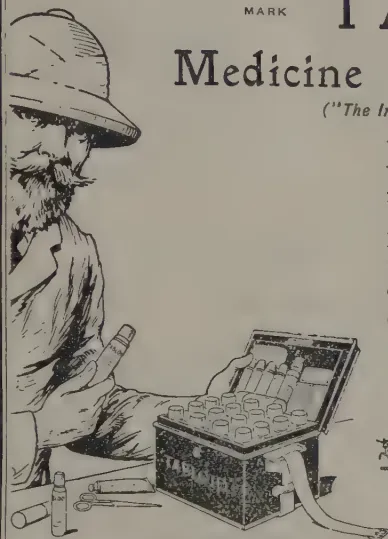
W. MOLEGODE,
Agricultural Instructor.
Yatinuwara division of Kandy district, which also embraces the greater part of the Municipal area of Kandy, has an area of 29 square miles of which 3,687 acres are paddy fields. The village population of Yatinuwara, that is, exclusive of estate population and that of the Municipal area, is 25,117. The total output of paddy for both crops in 1921, according to the statistics supplied to the Superintendent of Census by the minor headmen, (which it has to be emphasised are far from accurate), was 84,265 bushels. Of this 2,583 bushels were raised in Gangawata Korale which is the Municipal area: that is, only 81,682 bushels of paddy or approximately 40,341 of clean rice was locally produced for a population of 25,117 which works at 1 2/5 bushels rice per head. Even assuming that the figures of the headmen are based on the lowest estimate it is clear that the village population of this division is depending to a large extent on imported rice.
212[OCTOBER, 1922.Like in the rest of the Kandyan district there are two seasons—Maha and Yala—corresponding to the North-East and South-West monsoons respectively. The former commences, if favourable weather conditions prevail, in July and lasts up to following March. During this season if early cultivation is possible Mavi (7 months) and Hatiel (6 months) are generally grown. If there be no rains in July or August, Hondarawale (5 months) is ordinarily cultivated. If the monsoon is unusually delayed, Heeneti (4 months) is cultivated. Among other varieties grown during this season are Ratavi (5 months), Molagusamba (5 months), Kuruvi ( months). Yala cultivation is limited and carried on between April and June. The varieties grown are Heeneti ( months) and Balavi (3 months). In June 1921 only 691.5 acres were brought under Yala cultivation.
The Maha crop is harvested between January and April and the Yala in August-September.
The fields are ploughed three times.—(1) Bin-neguma which is usually done with the fall of the early rains when the soil is sufficiently moist. At this ploughing the soil is dug up and water is turned into the fields. If there is sufficient water the vegetable matter gets easily decomposed and the lumps of soil turned over by the ploughing get well saturated with water and a thorough aeration of the soil takes place. (2) The second ploughing or Dehiya (De' second, Hiya ploughing) is done after a period varying from 3 weeks to 2 months depending on the amount of water available. At this ploughing the soil is thoroughly broken and the decomposing vegetable matter is ploughed in. In place of this ploughing often the Mamotie is used—Keluma—when the soil is entirely turned over and the decomposing vegetable matter turned in. (3) The Medêhiya, (Mede' mud, hiya, ploughing) may follow the second ploughing almost immediately or is done after a short interval. The object of the Medêhiya is to thoroughly mix up the soil and making it as marshy as possible. The soil is then levelled, drains are made and everything is ready to receive the seed or plants.
As far as his knowledge goes, due attention and care are given by all paddy cultivators to seed paddy. As a rule the previous year's seed is used the following season. No attention has hitherto been given to scientific selection of seed paddy. The seed is obtained from well matured crops that were harvested at the proper time. If the crop after it has been reaped is even by an accident caught in a shower of rain paddy from that crop is never used for seed. Seed paddy is well dried and stored away separately with care. Very often seed is introduced from adjoining districts. The upper portion of Kegalle district is specially favoured as a good centre for this purpose. Such introductions have given better results than the use of local seed. Before using the seed a handful of it is germinated and tested. 75% germination is considered satisfactory. Cultivators are now being educated to make a methodical selection of seed paddy. Without exception the villager germinates his seed in the house. The methods adopted are unnecessarily laborious. The seed is soaked in a tub of clear water over night. In the morning it is taken out of the water and is spread on
OCTOBER, 1922.]213plantain or habarala leaves to a thickness of 4-5 inches in the shape of a mattress. The top and sides are covered with the same leaves and mats or gunnies are spread over and a certain amount of pressure is brought on the seed bed placing heavy weights. In this state the seed is kept for 4 to 6 days. Two days previous to sowing out in the fields the germinated seed is 'broken loose' or the tufts are broken and again heaped up gently on the ground after having applied a coating of fresh cowdung on the ground. The heap is lightly covered with leaves. This germinated seed is sown broadcast in the field or in the nursery.
The seed rate whether broadcasted or transplanted is 2 bushels per acre. This quantity is being reduced gradually and many cultivators now sow only 1 to bushel in nurseries intended for 2 pelas or 1 acre fields.
Nurseries for raising plants are well prepared and are always located in the most favourable block in the field itself; when Yala is cultivated a sufficiently large field is kept in reserve for seed beds. The plants are allowed to grow in the nurseries at the rate of a week for each month of the 'age' of the variety grown, e.g., Hondarawela (5 months) are transplanted in the fifth week, Hatiel (6 months) is transplanted in the sixth week. The general practice is to sow the nurseries much too thick. Over-crowding of plants both in the nurseries and in the fields is a common sight. The present tendency is to allow more room and greater spacing than before and gradually over-crowding is being lessened.
If favourable weather conditions prevail the greater extent of fields are transplanted; also most fields on which a Yala crop is grown are, as a rule, transplanted. Ordinarily bunches of plants numbering from 3 to 6 are stack together at distances varying from three to six inches. Wherever demonstration plots were once established or actual transplanting was supervised more systematic transplanting, putting a limited number of plants at more regular distances, have followed. For example, in the whole of the area between Kandy and Katugastota extending towards Halloluwa in one direction and embracing practically all the fields in Gangawata Korale about 500 acres are transplanted systematically, putting 2 or 3 plants at regular distances of , , or ins. according to the nature of the fields. Transplanting of paddy is always done by women on Atlama system—co-operation. If hired labour is employed the payment used to be one pela in paddy grain for each pela extent transplanted. This has now degenerated into money payment and gangs of women could be hired, rate charged being Rs. 5 per pela extent or Rs. 10 per acre transplanted. 30 well practised women will transplant an acre in one day if seedlings are brought to them to the field itself.
If the paddy was broadcasted thinning out (Neluma) and a weeding are carried out after about 6 weeks or two months from time of sowing. In some cases all the plants are pulled out and replanted.
The following three pests occur commonly but have never yet known to have appeared in any epidemic form :—(1) Goyan messa, the Paddy Fly or Rice Bug (Leptocorisa varicornis); (2) Godawella, the Paddy Cut-worm or the Army worm (Spodoptera mauritia), and (3) Puruk pannuwa, the Stem-borer (Chelo simplex). Charms are common precautions against the Paddy Fly. The following remedial measures are also adopted :—(1) Driving away of the fly by smoking aromatic herbs and resinous substances; (2) lighting of
214[OCTOBER, 1922.lamps towards the evening to attract the fly; (3) drawing a rope saturated with resin and kerosene oil over the plants so as to brush against the ear heads. (4) A number of sticks are tied together in the form of an ekel broom and this is smeared with sticky jak milk and is tied to a long pole and passed over the heads of paddy so as to catch the fly which stick to the smeared portion. The use of Lefroy's bags has been demonstrated but it is not likely to become popular. The treatment against the cut-worm adopted is to flood the fields.
No notice is taken of the borer, although, in my opinion the damage done by the borer in certain seasons and certain areas is even greater than that caused by the Bug. The field rats generally appear in most areas and cause sometimes considerable damage. Rats are trapped by various devices and are also scared away by the use of various forms of scare crows. There is a common belief that if paddy plants cut up by the rats are spread over on roads and paths frequented by people there follows an immediate reduction of the damage.
Quite per cent. of the paddy crop is destroyed by the paddy fly, another 2% by the stem-borer.
When the crop is about to ripen any supply of water is stopped as dry conditions hasten maturity. When the crop is fully ripe it is reaped and threshed the same night on specially prepared floor.—Kámata,—by buffalos being driven over the heaped-up sheaves. As the buffalos are being driven layers of the straw as they are freed of the grain is removed and stacked away. The paddy is winnowed by blowing off the empties and dirt with a forcible swing of the winnow up and down.
The grain is well dried before storing.
The yield depends on the nature of the fields and methods of cultivation adopted. Taken as a whole the average yield in Yatinuwara is 30 bushels per acre during Maha and 20 bushels during Yala. There are many Mada kumburas that yield up to 80 bushels. There are a number of fields that yield 60 to 70 bushels even with ordinary cultivation. Fields that only give 20 to 25 have given 40 to 50 bushels in some years and where greater attention has been given to cultivation. Some of the Goda kumburas do not yield more than 15 bushels, i.e. only fold. In some years, as for instance during 1921-1922 Maha, owing to unfavourable weather conditions most of the Goda kumburas only yielded 10 or 12 bushels for 2 bushels of seed sown. Taken all things into consideration, the output of paddy for Yatinuwara a year at present may be safely put down at over 100,000 bushels in place of the 84,265 of the headmen's estimates.
Most cultivators cultivate their own fields. Those who cannot afford to cultivate by themselves seek the assistance of others and work on the Karu-andé system. When this is done share of the crop goes to the person assisting—the work however is evenly shared by both parties alike. Those who do not cultivate let out their fields on Andé, a rather iniquitous and antiquated system whereby the landlord gets exactly half share of the produce in grain and straw and also a rent called Madaran (ground rent) varying from Rs. 3/- to Rs. 10/- per pela. The landlord renders no kind of help or assistance to the cultivator. Even the seed paddy has to be secured by the cultivator and invariably the cultivator has even to transport the landlord's share to his house and feed the Kankanama who is sent to watch the threshing, winnowing and distribution of the crop. The extent of paddy fields in Yatinuwara is proportionately so low in comparison with the
OCTOBER, 1922.]215cultivating class—being less than acre per head of population and the demand therefore being so great, this system of Audé cultivation has taken too strong a hold that it is unlikely that an improvement is possible unless the large land owners themselves accede to a change.
The Multettu system of cultivation is confined to the Headmen and more well-to-do village population. Under this system the cultivation is done by feeding the workmen and paying for certain items.
Paddy cultivation, however, is generally carried out here as elsewhere on the co-operative basis—Attama—mutual help being rendered. But for this system paddy cultivation will suffer greatly.
The following statement prepared from recent experience and with the aid of several cultivators shows the cost of cultivating an acre of paddy in Yatinuwara, provided every item was paid for :—
| 1. | Clearing Wanatas, water courses, repairing ridges, etc. | |||
| 3 men at Cts. 75 each | ... | Rs. 2'25 | ||
| 2 boys at ,, 37½ ,, | .. | Cts. 0'75 | Rs. 3'00 | |
| 2. | Binneguma : | |||
| 3 pairs of buffalos at Rs. 2/- | Rs. 6'00 | |||
| 4 men and 2 boys | ... | „ 3'75 | „ 9'75 | |
| 3. | Second ploughing or turning the soil | „ 8 50 | „ 8'50 | |
| 4. | Mada Hèya | ... .. | „ 9'75 | „ 9'75 |
| 5. | Transplanting | ... .. | „ 10'00 | „ 10'00 |
| 6. | Harvesting, including Threshing | „ 15'00 | „ 15'00 | |
| 7. | Winnowing, etc. | ... .. | „ 5'00 | „ 5'00 |
| 8. | Bundling straw | ... .. | „ 3'00 | „ 3'00 |
| 9. | Seed paddy | ... .. | „ 10'00 | „ 10'00 |
| 10. | Nursery | ... .. | „ 4'00 | „ 4'00 |
| Total Rs. 78'00 | 78'00 | |||
Considering that the fields in the larger area in Yatinuwara are generally fertile and that satisfactory results have been obtained by the use of green leaves and artificial manures, there is undoubtedly the possibility of reckoning on a low average yield of 30 bushels throughout the district for Maha which would give 110,610 bushels paddy for Maha. If a little more energy is displayed by the cultivators themselves, one-third the area at least could be regularly cultivated during Yala; and, reckoning 15 bushels per acre as the average, the output would be 18,485 for Yala, a total of 129,095 bushels a year. If the more pressing minor irrigation works are attended to and the existing Amunas, channels and springs are better constructed, sufficient water for an additional 500 acres during Yala and better irrigation for Maha could be provided. As at least half the area is transplanted during the Maha a minimum saving of 3,600 bushels of seed paddy can be effected. If all cultivators used selected seed, a practice gradually extending, not only will the yield be considerably better, but the seed-rate can also be very considerably reduced.
Already a few cultivators use their goda kumburas (drier fields) for growing other crops than paddy during the Yala. This practice can be extended. There is a general scarcity of ploughing buffalos and other cattle due largely to want of pastures. A common pasture land would be of immense benefit. Large number of cattle means manure in the villages. An improved plough has become necessary. The improvement of the existing plough has been taken in hand with satisfactory results.
216[OCTOBER, 1922.T. H. HOLLAND, Dip. Agr.,
Manager, Experiment Station, Peradeniya.
M. KELWAY BAMBER, M.R.A.C., F.I.C., F.C.S.,
Agricultural Chemist.
Although a number of Fodder grasses are under cultivation in Ceylon no reliable record of their relative yields and merits has so far been compiled, and it was with the object of supplying this information that these trials were inaugurated in 1921. Three aspects of the value of the grasses have been taken into consideration.
1. Yield, (2) Analysis and food value, (3) Palatability.
Their suitability for different districts can only be determined by trial.
Analyses of samples of the grasses were carried out by the Government Agricultural Chemist and these figures, together with the yields, will be found in the attached table. The yields shewn are from August 4th, 1921, to August 4th, 1922.
The grasses are growing on a strip of sloping land and along the bank of the Mahaweliganga, running approximately east and west. All the plots were holed for coconuts in November 1921 with the exception of the Paspalum dilatatum plot and this has somewhat reduced the cutting area.
All the grasses with the exception of water grass and Paspalum dilatatum have been weeded periodically, usually every two months.
Clumps of this grass were found growing apparently wild at Bandaranenne end of the Experiment Station and in June 1920 one acre was planted up and labelled "Elephant grass." When these trials were commenced a specimen of this grass was sent to the Botanist and Mycologist for identification. The grass was identified as Panicum maximum or Guinea grass. The grass is however larger and coarser than the ordinary Guinea grass and the leaves are of a darker shade. The identification was therefore queried but was confirmed. The plot is now labelled Guinea grass "A" to distinguish it from the ordinary Guinea grass which is labelled Guinea grass "B." The growth is extremely vigorous, clumps that have been left uncut have produced leaves as broad as inches. It has given the highest yield of any grass but must be cut young or a larger part will be rejected by stock on account of its coarseness.
The plot is sloping and the soil is sandy on the side nearest the river. The clumps are planted 3 ft. by 3 ft. but this distance is somewhat excessive and by ft. or 2 ft. by 3 ft. would be quite sufficient.
This plot was planted from root divisions in December 1920 on land which was previously under maize. The ground is slightly sloping and the lower side contains a large proportion of sand. In January 1921 the plot was given a dressing of cattle manure which was forked in between the rows. This manure had been exposed to rain and weather for many months and was of a very poor quality. Vacancies were supplied in April, 1921, the weather after the original planting having been dry. ft. by ft. would appear to be about the best planting distance for this grass. The yield is the second highest and the number of food units second only to Paspalum dilatatum. The ground is well covered and the grass is healthy in appearance.
OCTOBER, 1922.]217Water grass or Mauritius grass.—Panicum Muticum.This plot was planted up with cuttings 1 ft. long about 1 ft. apart in December 1920. Part of the ground had been under maize and part under cheddy. Dry weather followed and vacancies were supplied in April. The grass was carefully weeded once after planting, thereafter on account of its creeping habit only one hand-weeding was possible. The lower part of this plot is extremely sandy and the soil is not really suitable for the grass. Though the growth was apparently fairly vigorous a large admixture of other grasses and weeds quickly sprang up. Sensitive weed predominated and in December 1921 efficient cutting of the water grass was impossible owing to the thorns of this weed. As a result only the tips of the grass were cut and the yield greatly declined. An attempt was made to eradicate the weeds with mamoties but though an improvement was effected and the yield increased success was only temporary and the plot probably does not now contain more than 50% of water grass. In suitable soil in a moist situation the grass would probably effectually smother all other growth and give the heaviest yield of all.
* Paspalum Virgatum.This plot was planted up in January 1921 with roots obtained from the Royal Botanic Gardens, Peradeniya. The roots were planted ft. by 1 ft. which has proved a suitable distance. In April 1922 a dressing of cattle manure of the same quality as given to the Guinea grass was forked in.
This plot was under Cassava. It is rather steeper and is somewhat sandy towards the lower side. A few large tree stumps take up a good deal of space. The grass grew well from the start and presents a healthy appearance.
Paspalum dilatatum.This plot was formerly under cassava. The land is steep and the soil poor and washed. Roots of the grass were obtained from Hakgala Gardens and planting was commenced in June 1921 the roots being planted 9 in. by 18 in. This distance appears suitable here. The growth was rather patchy at first and in August a considerable number of vacancies were supplied. The growth was slow at first but the grass has now taken hold well and presents a thick fairly uniform cover. On account of its spreading habit it effectually keeps down weeds and no weeding has been done or required for many months. It is the smallest grass under trial and has given the lowest yield but the number of food units is very high. It has been stated that this grass is only suitable at elevations between 3,000 and 6,000 feet but this statement is hardly borne out by these trials. Although this grass was planted in June and July 1921 the first cutting was not taken till November and for this reason the yields have only been taken for the last 6 months of the period. These yields have been multiplied by two and are not strictly comparable with the remainder.
Rhodes grass.—Chloris gayana.This plot was under cheddy. It is flatter and very sandy towards the river side. In June 1921 after clearing the land 4 rows of Rhodes grass were planted while half the total area was planted up with Natal grass, Tricholœna Rosea. In April the Rhodes grass was divided out and gave sufficient roots to plant nearly half an acre. In June 1921 it was decided to uproot the Natal grass, the Rhodes grass was redivided and planted over the whole area. The first cutting (a small one) was taken on August 4th 1921, so that the grass was the last to be planted (except for a portion of the Paspalum dilatatum.) Unlike the other grasses therefore the first cutting was reckoned in the yields now recorded; this was naturally a small one and the fact must be borne in mind when making a comparison of yields. The grass has grown well and appears healthy but has not formed as good a cover as the Guinea grass. It is planted ft. by 1 ft. and might even be planted somewhat closer, say 1 ft. by 1 ft.
*A report has recently been received from the Director, Royal Botanic Gardens, Kew, that specimens from this plot have been identified as a variety of Paspalum dilatatum.—ED., T. A
218[OCTOBER, 1922.One acre of this grass was planted up in December, 1920. The grass is considered a valuable one in India but in this instance the growth never exceeded 3 or 4 inches and, whatever the value, the yield would have obviously been so inferior that its inclusion in the trials was abandoned. Once established the grass is exceedingly tenacious; repeated ploughings and several hand-weedings have failed to eradicate it from the plot.
This grass flowered almost as soon as planted. The plot always showed up as a sheet of white woolly flowers but the grass seemed of little use as a fodder grass.
Two attempts were made, one in February, 1922, and one in June, 1922, to ascertain the relative palatability of these grasses.
On the first occasion bundles of freshly cut grass of each variety were placed in a ring and 14 head of cattle (country cows and calves) were lead in turn into the centre of the ring and let loose.
Preference was shown for grasses as follows:—
| Guinea grass "B" | ... | ... | 8 votes |
| " " "A" | ... | ... | 5 " |
| Paspalum virgatum | ... | ... | 2 " |
| Water grass | ... | ... | 1 " |
| Paspalum dilatatum | ... | ... | — — |
| Rhodes grass | ... | ... | — — |
In two cases favour appeared to be equally divided between Guinea grass A and B so that each grass was awarded a vote.
There is a large element of chance in such a test however and too much reliance cannot be placed upon it.
The second test was carried out in "heats" on the "knock out" principle.
The grasses were taken in pairs and 4 cows lead up to each pair of bundles in turn. If an animal appeared impartial a vote was given to each grass.
It appeared from this test that Guinea grass "B" (the ordinary Guinea grass) and both the Paspalums were the favourites. In both tests Rhodes grass seemed least in favour but I have seen stock eat it with avidity when given alone and this may be said of all the above grasses with the exception of Guinea grass "A" when allowed to grow too coarse.
Guinea grass "B" would appear from all points of view the best grass for this locality. It is only beaten in yield by Guinea grass "A," and I would not recommend the latter owing to its coarseness, though curiously enough it shows the lowest content of woody fibre.
It is true that Paspalum dilatatum shows a higher number of food units but this is more than made up for by the increased yield of the Guinea grass. It would take 150 lb. of Guinea grass to produce a number of food units equivalent to that yielded by 100 lb. of Paspalum dilatatum but by comparing the yields we find that 173 lb. of Guinea grass are cut for every 100 lb. of Paspalum dilatatum. It is also to be noted that the fibre content of the latter grass is the highest of all and the albuminoid ratio the lowest. An additional advantage in Guinea grass is that, being commonly grown, planting material is always easily obtained. Lastly, it is certainly a favourite with stock. Water grass in suitable localities would probably give equally good results. These comparisons may need revision after another year's yields have been recorded.
OCTOBER, 1922.]219Yields of Fodder grasses from August 4th, 1921, to August 4th, 1922, and Analyses.| Variety. | Area. | Total yield Tons | No. of cuttings | Weight per cutting Tons. | ANALYSIS | Albuminoid ratio calculating ether extract as fat | Food units per acre | Ratio | |||||||
|---|---|---|---|---|---|---|---|---|---|---|---|---|---|---|---|
| Moisture | Ash | Ether extract | Woody fibre | Carbohydrates | Proteids | Nitrogen | Food units | ||||||||
| Guinea grass "A" | |||||||||||||||
| Panicum maximum | - 1 acre | 40.8 | 13 | 3.1 | 80.60% | 4.85% | 1.02% | 4.80% | 6.78% | 1.95% | 0.31% | 14.20% | 1.4:2 | 580 | 178 |
| Guinea grass "B" | |||||||||||||||
| Panicum maximum | - 1 " | 39.4 | 12 | 3.3 | 77.26" | 3.30" | 0.60" | 6.53" | 8.90" | 3.47" | 0.55" | 19.07" | 1.6* | 752 | 231 |
| Water grass | |||||||||||||||
| Panicum muticum | - 1 " | 33.2 | 8 | 4.1 | 76.30" | 3.00" | 0.30" | 6.8 " | 12.2 " | 1.4 " | 0.23" | 16.3 " | 1.9 | 541 | 166 |
| Paspalum virgatum | - " | 27.8 | 10 | 2.8 | 76.30" | 4.00" | 0.50" | 7.20" | 9.6 " | 2.4 " | 0.40" | 16.9 " | 1.42* | 470 | 144 |
| Rhodes grass, Chloris gayana | - 1 " | 22.9 | 8 | 2.8 | 80.10" | 1.24" | 0.28" | 7.10" | 9.78" | 1.50" | 0.24" | 14.23" | 1.6:75 | 326 | 100 |
| Paspalum dilatatum | - " | 22.7 | 6 | 3.8 | 64.40" | 3.18" | 1.03" | 10.00" | 18.36" | 3.03" | 0.48" | 28.51" | 1.13† | 647 | 198 |
(PENNISETUM CLANDESTINUM Chiov.)
O. Stapf.
In 1911 Mr. J. BURTT-DAVY received from Mr. DAVID FORBES of Athole Amsterdam, Transvaal, a single root of a peculiar grass which he had collected on the shores of Lake Naivasha, Kikuyu, whilst hunting there, the grass having attracted his attention by the partiality which the wild game showed for it. The root was transplanted in one of the plots of the Botanical Station at Groenkloof, Pretoria, and soon established itself.* It has since flowered there regularly every year, but not seeded, the original plant and its descendants being apparently all functionally female.† In THE FARMERS' WEEKLY of March 23rd, 1917, Mr. H. A. MELLE published a fuller account of the grass as it presented itself under cultivation, the greater part of which is reproduced here.
"Kikuyu grass (Pennisetum longistylum), says Mr. MELLE, is a perennial, running grass, and like the "kweek" forms a dense turf. It has branching, leafy stems. The leaves are flat and spreading. Kikuyu has numerous stout rhizomes, as thick as a lead-pencil, and by the growth of these a single plant may cover an area of several square yards. If grown in a vicinity where there is not much moisture it will make very little top-growth, but will send out shoots and spread along the ground and establish itself firmly. But in the presence of moisture it will put on top-growth. I have seen it grow to 3 ft. high. As yet it has not been observed to set seed in South Africa although it flowers regularly at the Groenkloof Botanical Station every summer.
Kikuyu is a summer grass, but will remain green until the first severe frost and will start growing again long before the veld grasses. At the time of writing our meales have been scorched by frost and the veld grasses have become coarse and dry; whereas the Kikuyu is still putting on growth and is beautifully green and succulent. Its drought resistant qualities have proved to be equal if not better than any of the other grasses.
Kikuyu may be considered as essentially a pasture grass. In districts where the rainfall is over 30 inches it might be possible to get two or three cuttings a season. What number of plants it can carry per acre has not been ascertained, but it will probably carry more than any other grass owing to its dense and rapid growth, combined with its resistance to eradication. If a sod of this grass be taken up, a few rhizomes (underground shoots) are always left in the ground; these in two weeks' time will send out green leaves and soon re-established themselves.
As Kikuyu can only be propagated by roots or runners the initial cost of establishing a pasture would be more than other grasses that bear seed. This, however, is compensated for by the fact that when it has been put in, provided there is sufficient moisture in the soil to start it growing, it will take care of itself. There is, moreover, no fear of it becoming choked by weeds. Although Kikuyu is such a hardy and vigorous grass it would be advisable to well prepare the ground previous to planting as it will then strike immediately and have an advantage over any undesirable plant.
* A preliminary note announcing the introduction of the grass was published in the Report on the Department of Agriculture, UNION OF SOUTH AFRICA, for 1910-1911, p. 241. Here also appears the name Kikuyu Grass for the first time.
† A short article by Mr BURTT-DAVY in the AGRICULTURAL JOURNAL OF SOUTH AFRICA, VOL. II, pp. 146-147, describes the experience gained with this grass in the Transvaal by them (1915), and deals with its uses and disadvantages. It also states the circumstances of its introduction, and that with some reserve it had been referred at Kew to Pennisetum longistylum,
OCTOBER, 1922.]221(a) Palatability.—I can say with every assurance that Kikuyu is one of the most palatable grasses. All stock eat it greedily and will leave most grasses to get to it. If stock are allowed on a patch of Kikuyu it will be seen that they will graze contentedly, and when they have had their fill they like to lie down on it, for the Kikuyu forming such a dense turf provides a very comfortable rest.
(b) Chemical Analysis.—From the following table kindly supplied by the Division of Chemistry, it will be seen that Kikuyu is one of our most nutritious grasses :—
| Air-dried Material. | Moisture. | Protein. | Carbo- hydrates. |
Fat (Ether Extract) |
Crude Fibre. |
Ash. | Containing true Protein. |
Nitrogen. | Albumenoid Nitrogen. |
|---|---|---|---|---|---|---|---|---|---|
| Kikuyu grass | 8.29 | 12.36 | 35.06 | 1.7 | 33.08 | 9.42 | 8.31 | 1.977 | 1.330 |
| Guinea grass (Panicum maximum) | 8.02 | 9.03 | 28.63 | 1.68 | 40.54 | 12.10 | 7.09 | 1.445 | 1.134 |
| Warm Baths grass (Digitaria sp.) |
10.94 | 8.33 | 25.22 | 1.72 | 34.56 | 9.23 | 6.13 | 1.333 | 0.980 |
| Vinger grass | 6.93 | 8.12 | 33.94 | 1.68 | 39.68 | 9.65 | 5.51 | 1.299 | 0.882 |
| Blauwzaad grass (Eragrostis sp.) | 7.91 | 6.58 | 43.78 | 1.80 | 34.50 | 5.43 | 5.43 | 1.053 | 0.868 |
Kikuya grows well on any kind of soil but thrives best on moist vlei soil. We have it growing on alluvial vlei, on heavy clay loam, on gravel clay, on red loam, and poor impoverished stiff clay. On all these it is doing remarkably well. It is also known to do remarkably well on sandy soils.
Like all other grasses Kikuyu has also its disadvantages, and among these the chief are :—
(1) It is a summer grass as it does not remain green throughout the winter, unless watered and not subjected to frost.
(2) As it does not appear to form seed in this country, the only means of propagating it is by runners, hence freight, which involves additional expense. And it may happen that when it reaches its destination the ground prepared for it may not have sufficient moisture to start it growing. Although this is enumerated as a disadvantage it may also be considered as an advantage; yielding no seed there is no fear of it establishing itself voluntarily in an adjoining field.
(3) Being such a hardy and persistent grower when once established it will be very difficult to eradicate. We have a good illustration of this on the Station. About a month ago we disposed of large quantities of Kikuyu and the patch from which we took the grass three weeks ago was apparently quite clean but now is beautifully green and almost covered with Kikuyu.
(4) Kikuyu is so aggressive that no other plant can grow with it. This is a great advantage because when planted on the veld it will establish itself against any of our veld grasses of minor feeding value.
(5) There is a likelihood of a Kikuyu pasture becoming sod-bound and if this should happen, the field should be disked and ploughed or harrowed.
(6) It is only natural that a plant of such vigorous growth as Kikuyu would soon impoverish the soil.
Kikuyu responds generously to manure, for where there are animal droppings on a patch it will be noticed the grass grows there higher than anywhere else
222[OCTOBER, 1922.]Lawns have been grown from this grass around the laboratories of the Botanical Division and on the terraces of the Union Buildings, Pretoria. The bright, light green colour of the foliage forms a lovely setting for ornamental gardening. It will also make an excellent field lawn as it forms a dense, soft and springy turf when closely grazed or clipped.
On account of its ability to grow on practically any type of soil and its creeping characteristics, it should be an excellent soil binder, on dam walls, on sandy soils and on eroding slopes and dongas.
Then again it can be recommended as a grass for planting in a poultry-run. Fowls seem very fond of the leaves, and owing to its aggressive nature it can withstand the ravages of the fowls' scratchings, etc.
As Kikuyu is easily propagated by cuttings it may be either planted by cuttings or 'roots.' Our practice is to take the grass out in sod, then cut it up into pieces about 3 ins. square and plant it out 6 ft. by 6 ft. or 6 ft. distant between the rows and 3 ft. distant in the rows. Our results have shown that when planted 6 ft. by 6 ft. on fairly good soil it covers the ground in a single season.
Kikuyu being a summer grass the best time of planting is during the spring and summer rains, but it can be planted as late as April when the frosts do not occur before May.
In order to recover the cost of preparing the ground for Kikuyu it is possible after the last cultivation of mealies to put down Kikuyu between the rows.
Subsequently an attempt was made to introduce the grass into Mashonaland. The success seems to have been complete, as may be seen from the following note in the RHODESIA AGRICULTURAL JOURNAL, Vol. XV. (1918) p. 327:—
“Kikuyu Grass:—As late as a year ago it was mentioned in an article in the RHODESIA AGRICULTURAL JOURNAL (June, 1917) that, despite all efforts up to then, no pasture grass had been discovered suitable for Rhodesia which formed a thick bottom and might prove useful for grazing purposes. Since that date, however, our trials with Kikuyu grass (Pennisetum longistylum) on the prevailing red soils of Mashonaland have shown that this grass adapts itself perfectly to local conditions, and fulfils all the expectations that have been aroused from reports concerning its behaviour in the Union. The first lot of roots introduced by the Department of Agriculture were obtained from the Potchefstroom experiment farm in March, 1917. Through delays, these arrived in a seemingly dead condition, and after a preliminary soaking were planted out. Practically no rain fell after planting, yet by December, 1917, considerable growth had been made, and the runners became the source of our principal propagation plots. A further lot of slips were imported from Natal in December, 1917, and were planted out one foot apart each way. The slips soon covered the ground entirely, and the growth was so vigorous that the paths and adjoining beds were invaded. The spreading power of this grass is one of its most remarkable features, and not only does it spread along the surface of the ground, but its runners penetrate downwards to a considerable depth in the course of a single season, making its hold upon the ground very firm, and rendering it hardy against tramping. In view of its known excellent feeding qualities, its vigour and its adaptability to Rhodesia, it can be confidently recommended. It is expected that slips in limited quantities will be available for distribution during the coming season.”
When in 1915 the first very meagre specimens of the grass reached Kew from Pretoria they were recognised as identical with some fragments of a Pennisetum which in 1906 had been received from MR. A. LINTON among
OCTOBER, 1922.]223pieces of Cynodon Dactylon, collected at "Linoru" (evidently meant for Lamoru, the first railway station west of Kikuyu). Both were then considered to be probably stunted and very much reduced forms of Pennisetum longistylum, a conception corresponding more or less to LEEKE's treatment of the plant as a var. clandestina of the same species "congrua—et cum forma normali evidentier consanguinea." However, after the accession of better material from East Africa, and the experience gained in the Transvaal, namely, that improved conditions did not affect the peculiar structure of the grass, it became evident that the extreme reduction of the inflorescence and the stunted condition of the vegetative parts were not casual features impressed on the plant by an especially unfavourable habitat, but fixed and perfectly definite characters of specific rank. This was also the conclusion PILGER came to when describing the grass which he had from Lamoru (collected by G. SCHEFFLER in 1909), as a new species, Pennisetum inclusum (in ENGLER'S JAHRB, XV. p. 209). Further search in the literature on Pennisetum, however, showed that PILGER had been forestalled by CHIOVENDA who had already in 1903 (ANNUAR. 1ST. BOT. ROMA, VIII., p. 41) accorded the grass the status of a species, taking up an unpublished name of HOCHSTETTER'S "clandestinum" as nomen specificum. CHIOVENDA'S species was based on a specimen of SCHIMPER'S, 2084 (no locality stated), which is not represented in the collection at Kew and the British Museum at London, nor was the species itself recorded in the Index Kewensis. CHIOVENDA'S description, however, and his figures leave no doubt as to the identity of the plant. Thus the Kikuyu grass will have to be known under the name proposed by him, namely, Pennisetum clandestinum, Hochst. ex Chiov.
The two most striking features of Pennisetum clandestinum are its stunted growth and proclivity to the formation of very vigorous runners, and the extreme reduction of the inflorescence and its inclusion in the top sheath. In habit it resembles strong specimens of Cynodon Dactylon to a remarkable degree, so much so that barren specimens of both may be all but indistinguishable. The anatomical differences are, however, obvious. Grown in good and well-watered soil it throws up barren stems up to 30 cm, (according to MELLE, 1 c., even 1 m.) high with elongated internodes (up to 7 cm., and long slender blades (up to over 20 cm. by 3.4 mm.), whilst the flowering shoots seem to remain short (5.6 cm.) even under such favourable conditions. The reduction of the inflorescence affects not only the number of spikelets (2-4), but also the involucral bristles which are short, the longest not surpassing three-quarters the length of the spikelet, delicate and eplumose and have evidently lost their function; further, the glumes, the lower of which is quite suppressed, whilst the upper is merely a small nerveless or almost nerveless scale; the lower floret which is reduced to its valve and finally the stamens which are occasionally arrested, the flowers becoming thereby functionally female. The valves share the relatively great number of nerves (11-14) with those of P. longistylum, but they are narrower, longer, thinner and in the lower part almost devoid of chlorophyll—no doubt in response to their concealed position. The genetic derivation of P. clandestinum from P. longistylum is obvious, but the power of reversion to its ancestral type seems to have been lost. The reduction of the inflorescences to so few spikelets—and of these sometimes a portion only fertile—must mean poor seeding, a loss amply balanced by the vigour of the vegetative reproduction of the grass by runners and stolons. The area of P. clandestinum extends from Eritrea to Mt. Elgon and the highland of West Usambura. P. longistylum on the other hand is so far only known from Northern Abyssinia, and the adjoining parts of the Italian colony of Eritrea.
—KEW BULL. No. 2, 1921. 224[OCTOBER, 1922.The following awards have been made by the Department of Agriculture to those Government vernacular schools which have done satisfactory work in School Gardens during the year 1921-22. These awards have been made upon recommendations based upon inspections of the Gardens and of the Nature-study work carried on in conjunction with these Gardens. In the Central, Southern and Northern agricultural divisions this work of inspection has been organized by the Divisional Agricultural Officers and in the North-Western Province, Uva Province and the Districts of Colombo, Ratnapura and Batticaloa it has been carried out by the Senior Agricultural Instructors. School Gardens as a whole have continued to improve during the year and it is satisfactory to note that marked improvement has been made in the Colombo District, where work did not come up to the required standard in 1920-21. The work of Gardens in the Kurunegala district of the North-Western Province has also greatly improved—largely as the result of the competition for Lt.-COL. T. Y. WRIGHT's prizes.
There has been increased activity in the establishment of Home Gardens in those districts to which awards were made last year, and it is probable that the increase in the number of awards during the present year will tend further to stimulate this important extension of the lessons of the School Gardens into the small gardens attached to the homes of pupils. Great importance is attached to this extension work and teachers are being encouraged to pay particular attention to it. There are still some districts where home gardens have not developed to any great extent, and attention will be given to those districts during the forthcoming year by inspectors with a view to fostering this form of agricultural instruction.
The monetary awards specified in the attached list are distributed amongst the teachers and assistant teachers and the pupils equally, while the awards for creditable home gardens are personal to the recipients.
During the year a largely increased distribution of implements has been made to School Gardens in all districts, and the equipment of Schools with implements has now very materially improved. All new School Gardens are being equipped with tools supplied from funds of District School Committees, and when a satisfactory supply has been made the garden is registered by the Department of Agriculture, inspected and, if satisfactory, taken on the list of the Department for maintenance of equipment, regular inspection and for awards. Large supplies of seed and plants have also been distributed from the Central Seed Store and the Botanic Gardens, Peradeniya, but all teachers are encouraged to reserve stocks of seed from crops grown in the Gardens for use in subsequent seasons and for distribution amongst pupils who are undertaking to cultivate Home Gardens.
OCTOBER, 1922.]225There is no doubt as to the value of this work in School Gardens and too much stress cannot be made upon its importance. The standard of work continues to progress.
Teachers do not as yet, however, make sufficient use of the plants growing in the School Gardens for lessons in the school room. The agricultural readers are under revision and all inspectors give instructions as to how nature lessons should be carried out and also give demonstration lessons at the time of their inspections.
All who have seen School Garden work in other countries are impressed by the progress already made in Ceylon. There are, however, many directions in which further improvement can be carried out and steady efforts in various directions are being maintained. If the sons and daughters of village cultivators can be taught to make careful observations of Nature in their School Gardens, particularly in the rural areas, and will put into practice in their home gardens the practical lessons learned, there is little doubt that their ultimate work upon their lands and in their paddy fields will show material improvement.
F. A. STOCKDALE,
Director of Agriculture.
23rd September, 1922.
| Name of School. | Name of Teacher. | Award. |
|---|---|---|
| Idamegama, B.V.S. | M. G. S. de Silva | Certificate and Rs. 20 00 |
| Nugawela, B.V.S. | D. M. U. Banda | " " " 20 00 |
| Gunnepana, G.V.S. | Mrs. D. J. Rupesinghe | " " " 20 00 |
| Gunnepana, B.V.S. | W. M. A. Weerasinghe | " " " 20 00 |
| Mediwaka, M.V.S. | G. D. Banda | " " " 20 00 |
| Alawatugoda, B.V.S. | P. R. Banda | " " " 15 00 |
| Doragamuwa, B.V.S. | D. H. Hendrick | " " " 15 00 |
| Paranagama, B.V.S. | W. W. Perera | " " " 15 00 |
| Batuwatte, G.V.S. | W. R. S. Kahalakalawa | " " " 15 00 |
| Giraula, B.V.S. | N. Magiris | " " " 15 00 |
| Hindagala, M.V.S. | P. B. Kehelgamuwa | " " " 15 00 |
| Deltota, B.V.S. | K. D. A. Nanayakkara | " " " 15 00 |
| Talatuoya, B.V.S. | R. M. D. Godamunne | " " " 15 00 |
| Keulgama, B.V.S. | P. B. Wijetunga | " " " 10 00 |
| Handessa, B.V.S. | K. D. Abilinu | " " " 10 00 |
| Ginigathena, B.V.S. | H. M. Siyatu | " " " 10 00 |
| Hanwella, B.V.S. | A. M. Appuhamy | " " " 10 00 |
| Nugawela, G.V.S. | G. G. B. Seneviratne | " " " 10 00 |
| Haloluwa, B.V.S. | K. K. D. N. Nanayakkara | " " " 10 00 |
| Panwila, B.V.S. | P. Sederis Appuhamy | " " " 10 00 |
| Menikdiwela, M.V.S. | M. B. Petiyagoda | Certificate |
| Werapitiya, B.V.S. | K. M. P. Banda | " |
| Teldeniya, A.V.S. | M. B. Weerakoon | " |
| Kobbekaduwa, M.V.S. | M. W. R. Weerakoon | " |
| Muruddeniya, B.V.S. | K. B. Dissanayake | " |
| Name of School. | Name of Teacher. | Award. |
|---|---|---|
| Palapatwala, M.V.S. | S. P. Vitanapatiram | Certificate and Rs. 15 00 |
| Dullewa, B.V.S. | A. K. M. T. Banda | " " " 10 00 |
| Kaikawela, B.V.S. | D. L. de Alwis | " " " 10 00 |
| Tenne, B.V.S. | G. K. Banda | Certificate |
| Madipola, B.V.S. | P. W. D. Banda | " |
| Madawela Ulpota | R. T. Banda | " |
| Puwakpitiya, M.V.S. | — | " |
| Wataddora, B.V.S. | G. K. Karunatilleke | Certificate and Rs. 20 00 |
| Pundaluoya, M.V.S. | B. M. K. Banda | " " " 15 00 |
| Udamaduwa, B.V.S. | H. B. James Sinno | " " " 15 00 |
| Tispone, M.V.S. | K. B. Ekanayake | " " " 10 00 |
| Madulla, B.V.S. | W. Siyatu | Certificate |
| Munwatte | B. M. K. Banda | " |
| Morape | W. W. de Silva | " |
| Kalaganwatte | P. B. Weerasinghe | " |
| Ambepussa, B.V.S. | James Sinno | Certificate and Rs. 20 00 |
| Nilwala, B.V.S. | D. H. Ranasinghe | " " " 20 00 |
| Getiyamulle, M.V.S. | W. Amarasena | " " " 15 00 |
| Galapitamada, B.V.S. | W. W. P. Wijeratne | " " " 15 00 |
| Mawanella, B.I. | R. M. Perera | " " " 15 00 |
| Bosella, B.V.S. | M. D. Premasuriya | " " " 20 00 |
| Beddewela, B.V.S. | K. D. J. Wickramasinghe | " " " 10 00 |
| Dombemada, B.V.S. | M. Wickremasinghe | " " " 10 00 |
| Beddewale, G.V.S. | H. A. Hematata | " " " 10 00 |
| Deraniyagala, B.V.S. | Pieris Appu | " " " 10 00 |
| Atulagama, B.V.S. | D. M. P. Welatantri | " " " 10 00 |
| Mawatagoda, B.V.S. | W. Piyasena | " " " 10 00 |
| Kotapola, B.V.S. | D. D. Wijesinghe | Certificate |
| Kehelwatte, B.V.S. | A. M. K. Banda | " |
| Hematagama, B.V.S. | D. R. Ranatunga | " |
| Wakirigala, B.V.S. | W. M. B. Banda | " |
| Hettimulla, B.V.S. | D. A. Rajapakse | " |
| Name of School. | Name of Teacher. | Award. |
|---|---|---|
| Alutgama, B.V.S. | G. P. Abeysekera | Certificate and Rs. 20 00 |
| Walallawita, B.V.S. | A. Munasinhe | " " " 20 00 |
| Paragastota, M.V.S. | James Peiris | " " " 15 00 |
| Latpandura, B.V.S. | D. F. Manamperi | " " " 15 00 |
| Bopitiya, B.V.S. | B. D. Leyaris | " " " 15 00 |
| Handapangoda, B.V.S. | M. D. William | " " " 10 00 |
| Ilimbe, M.V.S. | W. Kirineris | " " " 10 00 |
| Uduwara, B.V.S. | D. C. Amarasinhe | " " " 10 00 |
| Name of School. | Name of Teacher. | Award. |
|---|---|---|
| Bellana, B.V.S. | H. A. Perera | Certificate and Rs. 10 00 |
| Bulatsinhala, B.V.S. | T. Perera | " " " 10 00 |
| Govinna, B.V.S. | P. S. Perera | " " " 10 00 |
| Liniyawa, M.V.S. | D. G. Abeysinghe | " " " 10 00 |
| Migahatenne, B.V.S. | K. H. de S. Jayasekera | " " " 10 00 |
| Warakagoda, B.V.S. | M. D. Charles | " " " 10 00 |
| Kevitiyagala, M.V.S. | W. S. S. Wijeyatilleke | " " " 10 00 |
| Galapata, B.V.S. | I. D. Perera | " " " 10 00 |
| Tantirimulla, B.V.S. | D. H. Kannangara | " " " 10 00 |
| Tudugala, B.V.S. | D. P. Ranaweera (now at Wigoda B, Veyangoda) |
" " " 10 00 |
| Kalupana, B.V.S. | D. J. Pulleperuma | Certificate |
| Bellapitiya, B.V.S. | M. D. Neris | " |
| Ittapana, B.V.S. | D. C. Gunesekera | " |
| Welikala, B.V.S. | H. S. Perera | " |
| Nauttuduwa, B.V.S. | Don Hendrick | " |
| Niyagama, B.V.S. | D. P. Wijesinghe | Certificate and Rs. 15 00 |
| Nagoda, M.V.S. | D. S. Kannangara | " " " 15 00 |
| Horadugoda, M.V.S. | D. U. Samaratunga | " " " 15 00 |
| Magedera, M.V.S. | S. A. Kodituwakku | " " " 15 00 |
| Kahaduwa Ambana B.V.S. | K. A. Carolis | " " " 10 00 |
| Rantotuwila, B.V.S. | G. D. Johannes | " " " 10 00 |
| Yatagala, B.V.S. | S. M. Abeysekera | " " " 10 00 |
| Bussa, B.V.S. | A. J. E. de Silva | " " " 10 00 |
| Keembiya, B.V.S. | W. D. Cornelis | " " " 10 00 |
| Gonagala, B.V.S. | D. W. Welaratne | " " " 10 00 |
| Telikada, B.V.S. | D. K. Mahaliyane | " " " 10 00 |
| Polpagoda, M.V.S. | H. L. Endoris | " " " 10 00 |
| Ihalagoda, B.V.S. | B. G. Wijayapala | " " " 10 00 |
| Kottawa, B.V.S. | D. T. S. Jayawardene | " " " 10 00 |
| Elakala (Horawala) B. | H. R. H. Premaratne | Certificate |
| Walapita, M.V.S. | P. R. Seneviratne | " |
| Narandeniya, B.V.S. | T. D. Nicholas | Certificate and Rs. 20 00 |
| Kotapola, B.V.S. | P. F. Abeywickrema | " " " 20 00 |
| Bamunugama, M.V.S. | K. P. Kulasinghe | " " " 15 00 |
| Marambe, M.V.S. | H. D. Silva | " " " 15 00 |
| Karagoda, Uyangoda, B.V.S. |
D. D. Dias | " " " 15 00 |
| Tihagoda, B.V.S. | D. H. de Silva | " " " 15 00 |
| Aparekka, B.V.S. | D. A. Abeywickrema | " " " 10 00 |
| Talpawila, B.V.S. | N. Samarasinghe | " " " 10 00 |
| Bopagoda, M.V.S. | W. H. U. de Silva | " " " 10 00 |
| Beralapanatara, M.V.S. | D. A. Wickremasinghe | " " " 10 00 |
| Alapaladeniya, M.V.S. | H. G. Charitananda | " " " 10 00 |
| Rotumba, B.V.S. | D. D. W. Gunasekera | " " " 10 00 |
| Paraduwa, B.V.S. | T. Wickremanayake | " " " 10 00 |
| Name of School. | Name of Teacher. | Award. |
|---|---|---|
| Deiyandara, B.V.S. | A. H. T. de Silva | Certificate and Rs. 10 00 |
| Atureliya, M.V.S. | Odiris de Silva | " " " 10 00 |
| Morawaka, B.V.S. | D. Abeywickrema | " " " 10 00 |
| Owitigamuwa, M.V.S. | K. Byes | " " " 10 00 |
| Dampella, B.V.S. | D. D. Andrayes | Certificate |
| Pallegama, B.V.S. | L. M. Kawenis | " |
| Urubokka, M.V.S. | M. Alwis | " |
| Makandura, M.V.S. | D. C. Samarawickrema | " |
| Mandanduwa, M.V.S. | B. Jayasekera | Certificate and Rs. 15 00 |
| Nihiluwa, B.V.S. | D. B. Senerat Yapa | " " " 15 00 |
| Warapitiya, B.V.S. | M. Hendrick | " " " 15 00 |
| Tissamaharama, B.V.S. | Jayasekera Don Cornelis | " " " 10 00 |
| Mulana (Angunakolape. lessa) |
D. Edirisuriya | " " " 10 00 |
| Nakulugamuwa, B.V.S. | D. S. Wickremasinghe | " " " 10 00 |
| Paltuduwa, M.V.S. | D. P. Ferdinando | " " " 10 00 |
| Katuwana, B.V.S. | D. H. Mutha Meranna | " " " 10 00 |
| Ranna, B.V.S. | D. Hettiwehwa | " " " 10 00 |
| Middeniya, B.V.S. | Thomas Appu | " " " 10 00 |
| Talwatte, B.V.S. | H. S. A. G. Patabendi | Certificate |
| Talawa, B.V.S. | J. P. S. Abeykoon | " |
| Name of School. | Name of Teacher. | Award. |
|---|---|---|
| Minneriya, B.V.S. | P. M. P. Gunasekera | Certificate and Rs. 20 00 |
| Etambagaskade, B.V.S. | D. M. D. B. Dayawardena | " " " 15 00 |
| Etaweergollewawa, B.V.S. | A. W. Gunasekera | " " " 15 00 |
| Talgaswewa, B.V.S. | A. W. D. Baron | " " " 15 00 |
| Ranerewa, B.V.S. | T. B. Rajapakse | " " " 15 00 |
| Moragaswewa, B.V.S. | K. D. Banda | " " " 10 00 |
| Topawewa, B.V.S. | W. Appuhamy | " " " 10 00 |
| Kendewa, B.V.S. | P. Dingiri Banda | " " " 10 00 |
| Kahatagasdigiliya, B.V.S. | K. B. Weerakoon | " " " 10 00 |
| Kirigollewawa, B.V.S. | K. G. M. Banda | " " " 10 00 |
| Horawapatana, B.V.S. | U. Ranhamy | Certificate |
| Eppawela, B.V.S. | D. C. Goonetilleke | " |
| Konwewa, B.V.S. | M. Attanayake | " |
| Mahaelagamuwa, B.V.S. | T. B. Amunugama | " |
| Erukallanpiddy, B.V.S. | K. Alexander | Certificate and Rs. 20 00 |
| Vidattaltivu, B.V.S. | J. K. Vallipuram | Certificate |
| Iratperiyakulam, B.V.S. | D. M. Dharmawardena | Certificate and Rs. 20 00 |
| Madukunda, B.V.S. | D. Akalis | " " " 15 00 |
| Iranai-illupikulam, B.V.S. | K. Arumugam | " " " 15 00 |
| Puttukulam, B.V.S. | S. M. Arunasalam | " " " 10 00 |
| Name of School. | Name of Teacher. | Award. |
|---|---|---|
| Mirigama, A.V.B.S. | D. W. Nissanga | Certificate and Rs. 25 00 |
| Urapola, B.V.S. | D. A. Ranaweera | " " " 20 00 |
| Kiriwattuduwa, B.V.S. | M. D. Peiris | " " " 20 00 |
| Mallehewa, B.V.S. | A. M. Premasuriya | " " " 15 00 |
| Minuwangoda, A.V.B.S. | — Jayawardene | " " " 15 00 |
| Gehenuwela, B.V.S. | G. A. G. Perera | " " " 15 00 |
| Botale, G.V.S. | Mrs. M. N. Senanayake | " " " 15 00 |
| Mirigama, G.V.S. | Miss Siriwardene | " " " 15 00 |
| Kumbaloluwa, B.V.S. | K. M. D. S. Abeytunga | " " " 10 00 |
| Magalegoda, B.V.S. | K. H. Somapala | " " " 15 00 |
| Dangalla, B.V.S. | V. D. D. Wickramaratne | " " " 15 00 |
| Kirindiwela, B.V.S. | M. L. Silva | " " " 10 00 |
| Kesbewa, B.V.S. | G. C. Dabre | " " " 10 00 |
| Alutgama, B.V.S. | D. J. Perera | " " " 10 00 |
| Wewala, B.V.S. | K. D. William | " " " 10 00 |
| Green Street, M.V.S. | H. D. Sauriel | " " " 10 00 |
| Danowita, B.V.S. | H. P. Sumanapala | " " " 10 00 |
| Butthpitiya, B.V.S. | D. H. Jayasekera | " " " 10 00 |
| Ellakkala, G.V.S. | Mrs. J. N. Jayasinghe | " " " 10 00 |
| Alutgama, G.V.S. | Mrs. D. N. Nissanga | " " " 10 00 |
| Padukka, G.V.S. | Mrs. D. M. Amerasinghe | " " " 10 00 |
| Padukka, A.V.B.S. | G. D. de Silva | " " " 10 00 |
| Hunumulla, B.V.S. | R. D. Jussey | " " " 10 00 |
| Diulapitiya, B.V.S. | D. H. Jayasinghe | " " " 10 00 |
| Name of School. | Name of Teacher. | Award. |
|---|---|---|
| Boyagane, B.V.S. | D. A. Perera | Certificate and Rs. 15 00 |
| Medamulla, B.V.S. | H. M. D. Banda | " " " 20 00 |
| Meddegama, B.V.S. | W. W. Fernando | " " " 10 00 |
| Nakkawatte, B.V.S. | K. D. J. Gunatilleke | " " " 20 00 |
| Kirindewa, B.V.S. | J. A. Munasinghe | " " " 25 00 |
| Kankaniyamulla, B.V.S. | K. D. Geiris | " " " 20 00 |
| Makandura, B.V.S. | Romel Perera | " " " 10 00 |
| Hettipola, B.V.S. | W. A. Senaratne | " " " 15 00 |
| Bandarawatte, B.V.S. | W. A. Banda | " " " 10 00 |
| Itanawatte, B.V.S. | H. M. Wariyapola | " " " 10 00 |
| Madagalla, B.V.S. | Don Pedrick | " " " 15 00 |
| Nammama, B.V.S. | D. Kebilitigoda | " " " 10 00 |
| Nikaweratiya, B.V.S. | B. R. Senanayake | " " " 10 00 |
| Diullegoda, B.V.S. | K. M. D. Banda | " " " 10 00 |
| Mahananeriya, B.V.S. | D. P. S. Diyala | " " " 10 00 |
| Name of School. | Name of Teacher. | Award. |
|---|---|---|
| Awlegama, B.V.S. | W. B. U. Banda | Certificate and Rs. 15 00 |
| Delwita, B.V.S. | R. P. Appuhamy | " " " 10 00 |
| Ambanpola, V.B.S. | K. D. Banda | " " " 10 00 |
| Buluela, B.V.S. | M. P. Weerakoon | " " " 15 00 |
| Anamaduwa, B.V.S. | A. Abeykoon | Certificate and Rs. 10 00 |
| Walpaluwa, B.V.S. | A. Gunarathamy | " " " 20 00 |
| Ihalapuliyaikulam, B.V.S. |
W. P. Perera | " " " 10 00 |
| Kelegama, B.V.S. | D. P. Marasinghe | " " " 15 00 |
| Wadakanda, B.V.S. | W. Perera | " " " 15 00 |
| Walahapitiya, B.V.S. | S. M. Jinadasa | " " " 15 00 |
| Wakada, B.V.S. | H. Arungala | " " " 10 00 |
| Name of School. | Name of Teacher. | Award. |
|---|---|---|
| Opanaike, B.V.S. | D. B. Kotalawela | Certificate and Rs. 20 00 |
| Malwala, M.V.S. | L. D. Abraham | " " " 20 00 |
| Godakawela, B.V.S. | M. James | " " " 15 00 |
| Impulpe, B.V.S. | D. D. Siriwardene | " " " 15 00 |
| Karandana, B.V.S. | K. N. Thigoris | " " " 15 00 |
| Udagama, B.V.S. | A. D. Seneris | " " " 15 00 |
| Dahahana, B.V.S. | G. J. Sinno | " " " 15 00 |
| Illukkumbure, B.V.S. | H. K. Ratranhamy | " " " 15 00 |
| Pallekande, G.V.S. | Mrs. M. P. Perera | " " " 15 00 |
| Dippitigala, B.V.S. | C. Perera | " " " 10 00 |
| Madalagama, M.V.S. | Don Arnolis | " " " 10 00 |
| Balangoda, G.V.S. | Mrs. K. Sampohamy | " " " 10 00 |
| Imbulpe, G.V.S. | Miss G. Alice Nona | " " " 10 00 |
| Ematiyagoda, B.V.S. | Edirisinghe | " " " 10 00 |
| Weligepola, B.V.S. | M. D. J. Appuhamy | " " " 10 00 |
| Epitawela, M.V.S. | M. S. Wickremasinghe | " " " 10 00 |
| Pallekanda, B.V.S. | H. M. Tennekoon | " " " 10 00 |
| Nivitigala, G.V.S. | D. M. Gunawardena | " " " 10 00 |
| Kalawana, M.V.S. | K. B. Dissanayake | " " " 10 00 |
| Eratne, B.V.S. | M. A. Don Anthony | " " " 10 00 |
| Name of School. | Name of Teacher. | Award. |
|---|---|---|
| Passara, B.V.S. | J. S. de S. Senanayake | Certificate and Rs. 20 00 |
| Tennepanguwa, B.V.S. | R. M. K. Karunaradne | " " " 15 00 |
| Bibilegama | R. M. Banda | " " " 15 00 |
| Beramada, B.V.S. | P. A. K. Banda | " " " 15 00 |
| Etampitiya, B.V.S. | William Sinno | " " " 15 00 |
| Meegahakiula, B.V.S. | John Sinno | " " " 10 00 |
| Welimada, B.V.S. | M. W. Abeyaratne | " " " 10 00 |
| Name of School. | Name of Teacher. | Award. |
|---|---|---|
| Dickwella | H. M. P. Abeyaratne | Certificate and Rs. 10 00 |
| Spring Valley, M.V.S. | C. Vyramuttu | " " " 10 00 |
| Kalupahana, B.V.S. | C. Ranasinghe | " " " 10 00 |
| Palugama, B.V.S. | D. S. Ranaweera | " " " 10 00 |
| Wangiyakumbura, B.V.S. | L. D. Lewis | " " " 10 00 |
| Lunugala, B.V.S. | G. J. Ratnayake | Certificate |
| Kumbalwella, B.V.S. | R. B. Ekanayake | " |
| Uraniya, B.V.S. | C. Siyadoris | " |
| Kottegoda, B.V.S. | R. Punchihewa | " |
| Arawa | M. U. Banda | " |
| Haputale, B.V.S. | H. M. Peiris | " |
| Bodagama, B.V.S. | V. P. A. Darlis | " |
| Siyabalanduwa, B.V.S. | B. P. Senanayake | " |
| Name of School. | Name of Teacher. | Award. |
|---|---|---|
| Oluvil, B.V.S. | V. Pattakudy | Certificate and Rs. 20 00 |
| Nindur, B.V.S. | S. S. Chelliah | " " " 15 00 |
| Oddaimawady, B.V.S. | V. Sinnathamby | " " " 15 00 |
| Kattankudy, B.V.S. | K. E. Velupillai | " " " 10 00 |
| Name of School. | Name of Pupil. | Award. |
|---|---|---|
| Idamegama, B.V.S. | 1 K. M. G. Loku Banda | Certificate and Rs. 5 00 |
| " | 2 K. K. Muttu Banda | " " " 3 00 |
| " | 3 K. G. Kirisaduwa | " " " 2 00 |
| Hindagala, B.V.S. | 1 B. G. Kiri Banda | " " " 5 00 |
| " | 2 Podihamine | " " " 3 00 |
| " | 3 B. G. Appuhamy | " " " 2 00 |
| Giraula, B.V.S. | 1 Dharmapala | " " " 5 00 |
| " | 2 M. K. Sedera | " " " 3 00 |
| " | 3 Appuwa | " " " 2 00 |
| Gunnepana, B.V.S. | 1 D. W. Abdul Majeed | " " " 5 00 |
| " | 2 E. W. Abeyratne | " " " 3 00 |
| " | 3 E. W. Bandara | " " " 2 00 |
| Gunnepana, G.V.S. | 1 Luwisa Nona | " " " 5 00 |
| " | 2 V. M. D. Karunaradne | " " " 3 00 |
| " | 3 P. K. G. Palingumenika | " " " 2 00 |
| Nugawela, B.V.S. | 1 M. K. Kiri Banda | " " " 5 00 |
| " | 2 D. Medduma Banda | " " " 3 00 |
| " | 3 W. M. Punchi Banda | " " " 2 00 |
| Doragamuwa, B.V.S. | 1 G. M. H. Banda | " " " 5 00 |
| " | 2 W. Banda | " " " 3 00 |
| " | 3 A. G. Don Lewis | " " " 2 00 |
| Name of School. | Name of Pupil. | Award. |
|---|---|---|
| Halloluwa, B.V.S. | 1 S. Siridara | Certificate and Rs. 5 00 |
| " | 2 Juwanis | " " " 3 00 |
| " | 3 A. D. Sumana | " " " 2 00 |
| Ginigathena, B.V.S. | 1 V. Attapattu | " " " 5 00 |
| " | 2 K. Mudianse | " " " 3 00 |
| " | 3 Punchiappuhamy | " " " 2 00 |
| Kobbekaduwa, B.V.S. | 1 P. W. Bodiya | " " " 5 00 |
| " | 2 K. W. Siriwediya | " " " 3 00 |
| " | 3 K. K. Loku Banda | " " " 2 00 |
| Certificate and Rs. | ||
|---|---|---|
| Palapatwela, B.V.S. | 1 H. A. Abeyaratne | 5 00 |
| " | 2 Publis Sinno | 3 00 |
| " | 3 H. M. Karunaratne | 2 00 |
| Tenne, B.V.S. | 1 G. Kalu Banda | 5 00 |
| " | 2 O. A. Podiappuhamy | 3 00 |
| " | 3 D. K. Malliya | 2 00 |
| Certificate and Rs. | ||
|---|---|---|
| Wataddora, B.V.S. | 1 Pinna | 5 00 |
| " | 2 Kondasingha | 3 00 |
| " | 3 Siyatu | 2 00 |
| Kalaganwatte, B.V.S. | 1 D. G. Punchi Banda | 5 00 |
| " | 2 V. M. Karunaratne | 3 00 |
| " | 3 Daniel Fernando | 2 00 |
| Pundaluoya, B.V.S. | 1 L. H. Simon Appu | 5 00 |
| " | 2 Punchi Banda | 3 00 |
| " | 3 A. Elpitiya | 2 00 |
| Certificate and Rs. | ||
|---|---|---|
| Bosella, B.V.S. | 1 Punchiappuhamy | 5 00 |
| " | 2 Kiri Banda | 3 00 |
| " | 3 Ratterana | 2 00 |
| Getiyamulla, B.V.S. | 1 K. L. Muhandirama | 5 00 |
| " | 2 Heen Banda | 3 00 |
| " | 3 Ukku Banda | 2 00 |
| Beddewela, B.V.S. | 1 Saida | 5 00 |
| " | 2 N. Punchi Appuhamy | 3 00 |
| " | 3 Piyadasa | 2 00 |
| Ambeppussa, B.V.S. | 1 Pina | 5 00 |
| " | 2 David | 3 00 |
| " | 3 Sarnelis | 2 00 |
| Wakirigala, B.V.S. | 1 K. B. Ranasinghe | 5 00 |
| " | 2 A. W. Kiribanda | 3 00 |
| " | 3 W. Kira | 2 00 |
| Name of School. | Name of Pupil. | Award. |
|---|---|---|
| Alutgama, B.V.S. | Don Seeman | Certificate and Rs. 5 00 |
| Leeniyawa, M.V.S. | A. D. Wijesinghe | " " " 5 00 |
| Walallawita, B.V.S. | W. K. Julian | " " " 5 00 |
| Name of School. | Name of Pupil. | Award. |
|---|---|---|
| Bellana, B.V.S. | 1 D. D. Handy | Certificate and Rs. 5 00 |
| " | 2 R. Alwis | " " " 5 00 |
| Tantirimulla, B.V.S. | Don Nonis Jayawardene | " " " 5 00 |
| Panapitiya, B.V.S. | 1 M. Aron Sinno | " " " 5 00 |
| " | 2 Simon Rodrigo | " " " 5 00 |
| Kevitiyagala, M.V.S. | 1 U. D. Gunasinghe | " " " 5 00 |
| " | 2 W. Jayasinghe | " " " 5 00 |
| Tudugala, B.V.S. | D. A. Wijegunaratne | " " " 3 00 |
| Bopitiya, B.V.S. | 1 K. D. David | " " " 3 00 |
| " | 2 P. M. Rodrigo | " " " 3 00 |
| Lathpandura, B.V.S. | C. Albert | " " " 3 00 |
| Nauttuduwa, B.V.S. | 1 H. T. Martin | Certificate |
| " | 2 L. Peter | " |
| Kulupana, B.V.S. | Martin | " |
| Ilimbe, M.V.S. | Lewis Sinno | " |
| Galpata, B.V.S. | Jimo Sinno | " |
| Rantotuwila, B.V.S. | 1 James Sinno | Certificate and Rs. 5 00 |
| " | 2 Kalu Sinno | " " " 5 00 |
| Gonagala, B.V.S. | 1 Punchi Sinno | " " " 5 00 |
| " | 2 Abaran Silva | " " " 5 00 |
| Elakake, B.V.S. | 1 Johanis Appu | " " " 5 00 |
| Niyagama, B.V.S. | 1 B. D. Mahatun | " " " 5 00 |
| " | 2 Harmanis | " " " 5 00 |
| Yatalamatte, B.V.S. | A. Wickramasinghe | " " " 3 00 |
| Mabotuwana, B.V.S. | 1 Robert | " " " 3 00 |
| " | 2 Andarayas | " " " 3 00 |
| Ihalagoda, B.V.S. | 1 Martin Sinno | " " " 3 00 |
| " | 2 Mendis | " " " 3 00 |
| Telikada, B.V.S. | 1 Weetin Jayasinghe | Certificate |
| " | 2 Tedias Wijesundra | " |
| Walapita, M.V.S. | A. V. Francis | " |
| Hungantota | K. Martin | " |
| Magedera, M.V.S. | 1 T. G. C. Samarawickrama | " |
| " | I. A. Kodituwakku | " |
| Nagoda, M.V.S. | K. K. Sirisena | " |
| Kahaduwa Ambana, B.V.S. | D P. Jayasinhe | " |
| " | P. Brampy | " |
| Polpagoda, M.V.S. | H. Martin | " |
| Dampella, B.V.S. | 1 H. P. James | Certificate and Rs. 5 00 |
| " | 2 P. P. James Sinno | " " " 5 00 |
| Paraduwa, B.V.S. | 1 D. D. Rajapakse Yāpa | " " " 5 00 |
| " | 2 M. K. Siyadoris | " " " 5 00 |
| Makandura, M.V.S. | 1 D. A. Samarasinghe | " " " 5 00 |
| " | 2 R. Wimalagunaratne | " " " 5 00 |
| Name of School. | Name of Pupil. | Award. |
|---|---|---|
| Owitigamuwa, M.V.S. | 1 D. S. Abeynayake | Certificate and Rs. 5 00 |
| " | 2 Servin Mendis | " " " 5 00 |
| Talpawila, B.V.S. | 1 M. Samarasinghe | " " " 5 00 |
| " | 2 G. Samarajewa | " " " 5 00 |
| Marambe, M.V.S. | H. H. Gunapala | " " " 3 00 |
| Urubokke, M.V.S. | D. A. Dinoris | " " " 3 00 |
| Aparekka, B.V.S. | D. C. Gunasekera | " " " 3 00 |
| Bamunugama, M.V.S. | Thomas Kumasar | " " " 3 00 |
| Beralapanatara, M.V.S. | D. Don Hendrick | " " " 3 00 |
| Narandeniya, B.V.S. | 1 D. D. S Jayawardena | Certificate |
| " | 2 P. A. Basnayake | " |
| Beiyandara, B.V.S. | 1 H. Hinniya | " |
| " | 2 William Ratnayake | " |
| Bopagoda, M.V.S. | 1 M. K. Dionis | " |
| " | 2 W. C. Bachcho Appu | " |
| Alapaladeniya, M.V.S. | 1 Hendrick Yapa | " |
| " | 2 Eddy Karunaratne | " |
| Name of School. | Name of Pupil. | Award. |
|---|---|---|
| Talwatte, B.V.S. | 1 Charles Kandamby | Certificate and Rs. 5 00 |
| " | 2 J. Ratnayake | " " " 5 00 |
| Tissamaharama, B.V.S. | 1 M. G. M. Siriwardena | " " " 5 00 |
| " | 2 P. Gunawickrema | " " " 5 00 |
| Talawa, B.V.S. | K. Siyadoris | " " " 5 00 |
| Middeniya, B.V.S. | D. D. Abeysinghe | " " " 3 00 |
| Katuwana, B.V.S. | A. P. Kirigoris | " " " 3 00 |
| Mulana, B.V.S. | D. N. D. Ratnayake | Certificate |
| Madarawana, B.V.S. | 1 C. A. Wijesekera | " |
| " | 2 J. Wijesinghe | " |
| Name of School. | Name of Pupil. | Award. |
|---|---|---|
| Kesbewa, B.V.S. | 1 P. Sarnelis | Certificate and Rs. 5 00 |
| " | 2 P. Gunadasa | " " " 3 00 |
| " | 3 W. Hendrick | " " " 2 00 |
| Bope, B.V.S. | 1 Nonis Sinno | " " " 5 00 |
| " | 2 Avis Sinno | " " " 3 00 |
| " | 3 Sugathan Sinno | " " " 2 00 |
| Duilapitiya, B.V.S. | 1 Bastian Appuhamy | " " " 5 00 |
| " | 2 S. Abraham Sinno | " " " 3 00 |
| " | 3 William Appu | " " " 2 00 |
| Mirigama, G.V.S. | 1 Podinona | " " " 5 00 |
| " | 2 Mary Nona | " " " 3 00 |
| Ellakkala, G.V.S. | 1 K. H. Ellanhamy | " " " 3 00 |
| " | 2 J. K. Podinona | " " " 2 00 |
| Urapola, B.V.S. | 1 L. D. Peter | " " " 5 00 |
| " | 2 H. D. Abilin | " " " 3 00 |
| " | 3 H. D. Robiel | " " " 2 00 |
| Name of School. | Name of Pupil. | Award. | ||
|---|---|---|---|---|
| Certificate | and | Rs. | ||
| Danowita, B.V.S. | 1 Agorisa | " | " | 5 00 |
| " | 2 Banduwa | " | " | 3 00 |
| " | 3 Edmund Sinno | " | " | 2 00 |
| Wigoda, B.V.S. | 1 Tilakaratne | " | " | 5 00 |
| " | 2 Wimaladharma | " | " | 3 00 |
| " | 3 Gunatilake | " | " | 2 00 |
| Alutgama, B.V.S. | 1 Diyonis | " | " | 5 00 |
| " | 2 Eddie Perera | " | " | 3 00 |
| " | 3 Marthelis | " | " | 2 00 |
| Padukka, G.V.S. | 1 Somawathie Margaret | " | " | 5 00 |
| " | 2 Pemawathie Pathma-peruma | " | " | 3 00 |
| " | 3 H. Isohamy | " | " | 2 00 |
| Mallehewa, B.V.S. | 1 H. M. Weerawardene | " | " | 5 00 |
| " | 2 J. R. Jakolis | " | " | 3 00 |
| " | 3 Methias Sinno | " | " | 2 00 |
| Aturugiriya, B.V.S. | 1 Bramphy Sinno | " | " | 5 00 |
| " | 2 James Perera | " | " | 3 00 |
| " | 3 Mudali Sinno | " | " | 2 00 |
| Kinigama, B.V.S. | 1 D. S. Dassanayake | " | " | 5 00 |
| " | 2 M. Charles | " | " | 3 00 |
| " | 3 D. P. Rajapakse | " | " | 2 00 |
| Udugaha-Walpol, B.V.S. | 1 Rapiel | " | " | 5 00 |
| " | 2 Gunasekera | " | " | 3 00 |
| " | 3 Charles | " | " | 2 00 |
| Gehenuwela, B.V.S. | 1 Semanaris | " | " | 5 00 |
| " | 2 Sineris Perera | " | " | 3 00 |
| " | 3 Agiris Cooray | " | " | 2 00 |
| Hunumulla, B.V.S. | 1 Gunatilake | " | " | 5 00 |
| " | 2 Thomas Sinno | " | " | 3 00 |
| " | 3 Sirisena | " | " | 2 00 |
| Name of School. | Name of Pupil. | Award. | ||
|---|---|---|---|---|
| Certificate | and | Rs. | ||
| Nikaweratiya, B.V.S. | D. Ranhamy | " | " | 3 00 |
| Wadakada, B.V.S. | 1 Dingiri Banda | " | " | 3 00 |
| " | 2 Punchi Banda | " | " | 3 00 |
| Polpitigama, B.V.S. | 1 A. Dingiri Banda | " | " | 3 00 |
| " | 2 M. Ranhamy | " | " | 3 00 |
| Giriulla, B.V.S. | 1 H. M. Punchi Banda | " | " | 3 00 |
| " | 2 H. M. Punchirala | " | " | 3 00 |
| " | 3 H. A. Dingiri Banda | " | " | 2 00 |
| Bandarakoswatte, B.V.S. | 1 Appunaide | " | " | 3 00 |
| Medagama, B.V.S. | 1 Jayasena | " | " | 7 50 |
| " | 2 Hawadiya | " | " | 3 00 |
| " | 3 Kiri Banda | " | " | 2 00 |
| Buluela, B.V.S. | 1 Kalu Banda Tisna | " | " | 3 00 |
| " | 2 Arona | " | " | 3 00 |
| " | 3 Kalu Banda | " | " | 2 00 |
| Ambanpol, B.V.S. | Kapuru Banda | " | " | 3 00 |
| Kankaniyamulla, B.V.S. | 1 Abeykoon | " | " | 3 00 |
| " | 2 Piyatilleka | " | " | 3 00 |
| Mawatagama, B.V.S. | 1 | " | " | 3 00 |
| " | 2 | " | " | 3 00 |
| " | 3 | " | " | 3 00 |
HOME GARDENS.
Ratnapura District.
| Name of School. | Name of Pupil. | Award. | |
|---|---|---|---|
| Karandana, B.V.S. | 1 A. A. Goonewardene | Certificate and | Rs. 5 00 |
| " | 2 K. W. Brampy Sinno | " " " | 3 00 |
| " | 3 Salma | " " " | 2 00 |
| Illukkumbura, B.V.S. | 1 G. C. Harmanisa | " " " | 5 00 |
| " | 2 G. Elwatte Arnolisa | " " " | 3 00 |
| " | 3 A. M. Pendirisa | " " " | 2 00 |
| Imbulpe, B.V.S. | 1 K. M. Dingiri Mudiyanse | " " " | 7 00 |
| " | 2 Balis Sinno | " " " | 3 00 |
| " | 3 Punchi Mudianse | " " " | 2 00 |
| Pallekanda, G.V.S. | 1 Rosalin | " " " | 5 00 |
| " | 2 Ango | " " " | 3 00 |
| " | 3 Cecilina | " " " | 2 00 |
| Weligepola, B.V.S. | 1 Brahamanahamy | " " " | 5 00 |
| " | 2 Kuda Mahatmaya | " " " | 3 00 |
| " | 3 Punchi Mahatmaya | " " " | 2 00 |
| Udagama, B.V.S. | 1 M. D. Charles | " " " | 5 00 |
| " | 2 O. P. Brahamanahamy | " " " | 3 00 |
| " | 3 M. D. Kirimenike | " " " | 2 00 |
| Pallekanda, B.V.S. | 1 Juwanisa | " " " | 3 00 |
| " | 2 David | " " " | 3 00 |
| " | 3 Pendirisa | " " " | 2 00 |
| Malwala, M.V.S. | 1 Lewis Sinno | " " " | 5 00 |
| " | 2 T. K. Dingiri Mahatmaya | " " " | 3 00 |
| " | 3 John | " " " | 2 00 |
| Galella, M.V.S. | 1 Mathuhenaya | " " " | 5 00 |
| " | 2 Senaratne | " " " | 3 00 |
| " | 3 M. E. Edirisinghe | " " " | 2 00 |
| Dippittigala, M.V.S. | 1 Harmanisa | " " " | 3 00 |
| " | 2 Henry Ranaweera | " " " | 2 00 |
| Balangoda, G.V.S. | 1 Victor Nona | " " " | 3 00 |
| " | 2 Ran Menika | " " " | 3 00 |
| " | 3 Juli Nona | " " " | 2 00 |
| Opanaike, B.V.S. | 1 Ukku Banda | " " " | 7 50 |
| " | 2 Sanmahamy | " " " | 3 00 |
| " | 3 Pilorisa | " " " | 2 00 |
| Kalawana, M.V.S. | 1 Menik Appuwa | " " " | 7 50 |
| " | 2 Podiappu | " " " | 3 00 |
| " | 3 Serahamy | " " " | 2 00 |
| Imbulpe, G.V.S. | 1 Bandara Menike | " " " | 3 00 |
| " | 2 Huratal Hamy | " " " | 2 00 |
| Udagama, G.V.S. | 1 Heen Menike | " " " | 3 00 |
| " | 2 Subawathie Kumari- | " " " | |
| " | hamy | " " " | 2 00 |
| " | 3 Yaso | " " " | 2 00 |
| Galagama, B.V.S. | 1 T. R. Punchiappuhamy | " " " | 3 00 |
| " | 2 T. Robosinno | " " " | 3 00 |
| " | 3 A. K. Seeman | " " " | 2 00 |
| Ematiyaoda, B.V.S. | 1 Telanisa | " " " | 5 00 |
| " | 2 Sara | " " " | 3 00 |
| " | 3 Haramanisa | " " " | 2 00 |
| Madalagama, B.V.S. | 1 Arnolisa | " " " | 3 00 |
| " | 2 Siriwardenehamy | " " " | 2 00 |
| " | 3 A. Arnolisa | " " " | 2 00 |
P. H. CARPENTER, F.I.C., F.C.S.
Chief Scientific Officer,
and H. R. COOPER, B.Sc., F.C.S.,
Chemist.
From the earliest days of man's history agriculture has been pursued and in the course of many centuries much practical knowledge has been accumulated, but it has been only in comparatively recent times that it has become recognised that the natural sciences can assist the Agriculturist towards a better appreciation of the problems confronting him. Agriculture in the past has been a method of the rule-of-thumb and improvements have been effected only by a very slow process. Science has now, however, been commandeered to assist in its development and perhaps one of its primary duties at the present time is not to alter agricultural methods so much as to explain the reason for performing the common operations. The experience of the ages has taught men the necessity of cultivating the soil if crops are to be grown and as a consequence of this certain principles have become recognized, but it is not always fully appreciated how best to adapt such general principles to the particular conditions of soil, climate, etc. It is with the object of helping towards the better understanding of the effect of some of the operations of cultivation that this article is written so that men shall be in a better position to adopt the general principle to their own particular needs. It is not intended to enter into a discussion of the whole question of cultivation but, as the title of the article suggests, into only one aspect of it, namely, cultivation in the rains.
In respect to cultivation in the rains our opinion in general terms may be expressed as follows:—Hoeing in the rains generally does more harm than good. When it is considered that a large proportion of the increase of tea crop in the past 15 years or so has been due to cultivation, the above expressed opinion requires explanation and it becomes necessary to examine in more detail the effects of cultivation as carried out in the operation of hoeing during the rains. What are the benefits that are expected to arise from hoeing? These can be briefly summarised under three headings:—
The increased availability of food to the bush is of course largely dependent upon the physical condition of the soil; and improved tilth includes amongst other things better aeration of the soil.
Jungle undoubtedly does harm to the tea among which it grows. It becomes a competitor for food and water and also any plant growing in the
238[OCTOBER, 1922.]neighbourhood of another plant exerts a poisonous effect upon it. Undoubtedly the main benefit that has been derived from hoeing in the rains has been from the removal of jungle.
The effect of hoeing on the physical state of the soil has not always been good. When the soil is too wet, not only does it produce no improvement, but actually spoils the existing tilth. Very fortunately, hoeing does not exercise the same sheering effect as does ploughing, and ordinary light hoeing in the rains generally amounts to little more than cutting through the roots of the jungle at a very shallow depth below the surface. Further, the very presence of the jungle tends to minimise the puddling effect which ruins tilth.
Loss of tilth from rains hoeing has therefore been slow, particularly as the drying of the soil during each cold weather acts in the opposite direction and restores at least a great part of the lost tilth.
Probably even more serious than the effect of the hoeing itself had been the effect of heavy rain beating on an unprotected surface of clean loose soil.
Not only does this beating directly puddle the soil and leave a most unpleasant 'skin' on the surface (insufficiently previous to water and air), but the finer soil particles are washed down, leaving the surface much more sandy indeed, but tending to 'pan' the soil at a little below the cultivation depth, thereby greatly interfering with the efficiency of the drainage.
After many years the bad effect of hoeing wet soil, and of leaving clean soil exposed to the rain, has become apparent on many soils.
In a soil in good tilth the very small sticky colloidal clay particles join together to form a small number of large particles or aggregates, and thus the soil loses much of its clayey nature; it becomes less sticky and the increased size of the various interspaces between the aggregates allows a freer movement of air and water. The puddling effect of hoeing in the rains causes these aggregates to break down, the soil becomes more sticky, less pervious to water, and more inefficiently aerated. These physical effects cause changes in chemical and biological reactions in the soil. The soil acidity increases, nitrification becomes slower, and plant foods generally become less available and in extreme cases actually are lost altogether.
Since puddling affects the clay particles of a soil, the effect of rains hoeing is seen at its worst on soils of a high clay content. All fertile soils, however, contain some clay and therefore the effect is produced on all soils though to different degrees. Sandy soils containing little clay may be so little affected, that the effect is completely reversed at the next drying so that no permanent harm results; and there are a few extremely sandy tea soils so deficient in the colloid particles which 'bind' a soil, that puddling of the very small quantity of clay present may actually be beneficial.
With the exception of these sands, however, it is clear that hoeing during the rains would be better avoided.
During dry periods when breaks in the rains occur, hoeing often becomes possible and as much should be done then as is practicable. Good drainage is at such times of very great assistance since it will permit of hoeing to be commenced sooner and the time increased during which hoeing will do good and not harm.
OCTOBER, 1922.]239To the cessation of hoeing during the rains there are two great objections.
The first is that hoeing is hard exercise, and a labour force soon gets out of training if hoeing is dropped, so that when hoeing is resumed the men get sore hands, and their unused muscles cannot do the work which they performed with ease when in condition. In some cases the men actually become unwell, from the loss of the exercise to which they had become accustomed.
Objections have also been made that a garden cannot afford to pay labour to sit in the lines and do nothing. Since it is clearly better to pay men to do nothing than to pay them to do harm, this objection has little force.
However it is necessary to provide alternative work. On many gardens all the labour available can be used for plucking; while methods of keeping down jungle other than hoeing (which will be dealt with later) also, of course, use labour, but neither of these will keep the men in condition and it is advisable to provide as much work as possible, which involves the swinging of a hoe.
When the soil is wet the digging of drains, and the deepening and cleaning of old ones is very much easier than in the cold weather. The area of which the tilth is thus spoiled is in any case small, while if the excavated soil is left heaped up until the cold weather, it will be subjected to that alternate wetting and drying which rapidly produces a state of good tilth.
Trenching is also easy work during the rains and it would be of great advantage to get in crops like Arhar before they get too woody. In this case, however, some care would be necessary. The filling in of the trenches should be left till a time when the soil is not too wet, otherwise the puddling effect may be serious. In the cold weather trenches should be filled in as soon as possible to avoid undue drying out of the soil. In the rains, trenches could be left open with good effect. Trenching, however, could be done in the rains only on a small scale. From good yielding tea, the cutting of the root ends would decrease the flush for the remainder of the season. In young tea, however, and in cases where the state of the tea warrants some sacrifice of present crop for the sake of future yield, trenching in the rains is strongly recommended as an alternative to hoeing provided that the filling in of the trenches be done when the soil is not so wet as to puddle on working.
Assuming that a manager can so arrange his work that the men can be fully and satisfactorily employed during the rains without hoeing work, there still remains the serious problem of keeping down the jungle.
Without any doubt the presence of much jungle produces serious loss of crop, and during the rains, the jungle is growing very rapidly indeed.
If we examine the factors which make up the harmful effect of jungle on tea,—competition for water, competition for food, and toxic effect on neighbouring bushes—it is at once clear that the most serious factor of competition for water is not active at all at the times when it is recommended that hoeing shall not be done. The soil has then too much water, and it is therefore obvious that there is more than enough water present for tea and jungle both.
240[OCTOBER, 1922.A full explanation of the last factor (of toxicity) is not yet agreed upon. It is very probably due to the presence of too great a concentration of carbon dioxide, and to a corresponding deficiency of oxygen in the soil. Rain water falling on, and percolating through a well drained soil carries with it dissolved oxygen from the air and keeps the soil thoroughly well aerated, while excess carbon dioxide (or other soluble toxin if there be any) is at the same time washed out. The toxic action of jungle then is also at its minimum during the rains.
The only bad effect of jungle which is active in the rains is the competition for food, and this of course may be serious. The loss of food by washing out however is also very serious and such loss is permanent. The presence of some jungle will minimise this loss by washing and such food as is taken up by the jungle is always returned to the soil when the jungle decomposes after being buried. The buried jungle also supplies to the soil organic matter which has very largely been obtained from the air.
The jungle thus acts as a "catch crop." The term "catch crop" is used in general agriculture to mean a crop specially planted when in the ordinary rotation the soil would otherwise be fallow. The special function of the catch crop is to take up the soluble plant foods (nitrates forming the most important part), which would otherwise be washed out and lost.
When it is remembered also that the presence of jungle not only prevents the puddling of the surface of the soil by rain, but actually by its root action improves the tilth of the soil, it will be clear that the presence of some jungle may not be altogether a bad thing on soils where the tea does not cover the ground.
If the tea completely covers the ground it of course provides all of these advantages for itself. It will not allow the beating of unprotected soil by rain, its roots will very thoroughly explore all the available soil and so reduce the loss of soluble food, and by its prunings it will maintain the organic matter content of the soil. In addition it will keep down jungle for itself; for jungle will not grow in thick shade. A good food supply will of course be necessary either from a naturally very rich soil, or from manuring.
There are in the Surma Valley rich clay flats giving over 20 mds. of tea per acre which are either never cultivated or get no more than two or three scrapings in a year. The soil is absolutely free of jungle and is in beautiful tilth. They would gain in improved aeration and gain greater efficiency from buried prunings, if a cold-weather hoe could be given, but in a place as described a hoe cannot be swung, and where any cultivation at all is given, it amounts to little more than scratching the soil with a hoe pushed under the branches. Yet with no cultivation (or practically none) the soils are in beautiful tilth. Many regularly well-hoed soils are very bad in comparison.
These rich clay flats are here interesting, firstly because they demonstrate that tilth may be maintained without hoeing, and secondly because
OCTOBER, 1922.]241they suggest a means of minimising the necessity of hoeing to keep down jungle.
Where the tea itself does not cover the ground (as is the usual case, even though outside branches are frequently lightly touching) the use of shade will assist very effectively to keep down jungle, and will also provide the advantages of a catch crop to greater or less extent.
The low growing leguminous plants usually used as green manures perform the functions of a catch crop perfectly, particularly having regard to the time of sowing—March to May. It is at this time that nitrate formation is likely to have reached a maximum, and loss of nitrates by washing out is therefore prevented over a critical period. The green crop also kills out jungle by its very denseness and ability to grow rapidly. The growth of a crop like cowpeas is very strongly advised where there is much jungle of a particularly undesirable nature, like thatch grass.
More effective shade can be provided by a taller crop like Dhaincha or over a greater part of the season by semi-permanent crops like Arhar or Boga medloa. When these latter are planted as hedges between every second or third row of tea a greatly reduced jungle growth is obtained.
Shade trees also contribute to the same effect. One does not see serious trouble from the thatch grass or other deep rooted and tall grasses under shade trees, but plants like Ageratum (Ilami, cold weather weed) or shallow-rooted, low-growing grasses which do little harm become established.
The tea bushes, like the jungle, might be expected to suffer from the shade effect. Tea however is one of the plants actually benefited by light shade, although an amount of shade which keeps down jungle altogether would certainly do harm to the tea.
It is clear then that green crops and shade trees may be used to reduce the necessity for cultivation in the rains, but of course it is not expected that green manures and shade trees can be grown all over a garden at once.
It has already been pointed out that a light covering of jungle, during the rains, is preferable to absolutely bare soil; but deep-rooted and tall jungle must never be allowed to become established nor should even better types of jungle be allowed to become excessive.
On the greater part of the area of most gardens direct methods will have to be adopted to keep down jungle. It is the main object of this article to insist that hoeing should be pushed on as rapidly as possible whenever the soil is not too wet, but that other methods should be adopted whenever it is clear that hoeing would puddle the soil. At the same time it is not desired to establish an absolute rule that no hoeing must be done in the rains. Where bad types of jungle like thatch are prevalent the damage done by it may be more than would be done by a single hoe in the rains. Still, even then the hoeing need not be done when it is actually raining
242[OCTOBER, 1922.Bearing in mind the principles which have to be considered the Manager's discretion will have to be used.
Alternatives which are preferred to hoeing are hand-forking and sickling which should be used in combination.
The forking will aim at establishing a circle, of about 3 feet diameter around the bush, which is absolutely clean weeded. Within this circle jungle will hardly get a start since it is well covered by the bush, and this clean surface will provide free exchange of gases between soil atmosphere and the air above, thus ensuring æration of the soil around the bush.
This forking will naturally be much better applied when the soil is near its optimum water content, but when the soil is wet it can be made rather a pulling out of weeds by hand assisted by the fork, than an actual working of the soil.
The jungle between the lines may be left to grow to some height without any great loss to the tea (at times when there is water enough for both), and whenever it is considered excessive it may be sickled by hand. A proper application of forking and sickling should at least reduce the necessity for hoeing to a minimum.
It may be pointed out that all these methods of doing without hoeing during the rains will be particularly valuable on slopes and teelas where cultivation not only ruins tilth but leads to greatly increased loss of soil by wash. In these situations the very best cover crop is the tea bush itself. Teelas and slopes should therefore be close-planted and kept continually infilled.
8. The hoeing men who by dropping hoeing may be left unemployed may be used for draining, trenching, hand-forking, and sickling.—QUARTERLY JOURNAL OF INDIAN TEA ASSOCIATION, SCIENTIFIC DEPT, Part 1, 1922.
OCTOBER, 1922.]243At a meeting of the Dimbula Planters' Association held on August 28, 1922, MR. T. PETCH delivered the following lecture :—
When your Chairman asked me to address you on the subject of the diseases of tea, he indicated rather a wide field. At the present time there are on record about two dozen leaf diseases, another two dozen stem diseases, and about a score of root diseases. They don't all occur in Ceylon, but most of them do. In fact, I believe that up to the present Ceylon has originated—I mean, first put on record—more tea diseases than any other tea-growing country. That is not because more diseases exist in this country, but because the planters have been on the alert to observe them and because Ceylon has had mycologists more or less connected with tea for a longer period than any other countries. Japan is now taking a hand in the investigation of tea diseases, and, judging by what has been published so far, we shall soon be left far behind, as regards the number of different species of fungi found on our tea bushes.
Of course, these diseases are not all equally serious. Some are generally distributed, but never cause any appreciable damage. Others occur so rarely that they need not be taken into consideration, as yet. In any case, it would be impossible to go over the whole field, and therefore I propose to confine my remarks this afternoon to a few of the more recent or more serious diseases which are not sufficiently well-known.
With regard to leaf diseases, a new disease (Cercospora Theæ), has made its appearance in Up-country districts during the last three or four years. It was not then new to the mycologist. It first occurred on young plants in a nursery in Pundaluoya in 1909, in July, during the monsoon rains, but it was not observed again until 1919 when reports began to come in of a disease which attacked tea in the neighbourhood of acacias. It was first recorded from this district, but it has since been identified in most districts above 4,000 ft. We have one record of its occurrence at 3,000 ft., but it is not known in the Low-country. With, I think, one exception, it has always been associated with acacias.
The disease appears towards the end of the monsoon rains. It begins first on the acacias. These drop their leaves and may be completely defoliated. The smaller branches may die back, and young plants may be killed, but in general the trees put on new foliage when the rains cease.
From the acacias the disease passes to the tea. The effect on the tea leaf is very variable, the appearance of the diseased leaves varying according to the age of the leaf. On the flush it causes minute, black or black-brown spots, usually more or less circular and sodden looking. They resemble to some extent the spots caused by helopeltis, but the latter are larger, more
244[OCTOBER, 1922.irregular, and have a reddish tinge. Large numbers of these spots may occur on a single leaf, and if the rains continue they may join up with one another so that the whole leaf becomes black and rotten. If, however, dry weather sets in, the progress of the disease may be arrested, and the leaf may continue its development, but it is then distorted and crumpled.
On older leaves, the fungus causes circular black spots, which, if the weather changes, become grey or white with a well-defined, raised, purple or purple-black margin. These spots resemble the common bird's eye spots but they are usually larger, up to five millimetres or so in diameter.
On the old full-grown leaves, the effect is again different. On these, the fungus usually causes large diffuse discoloured patches which may extend over the whole leaf. These patches are chocolate-brown mottled with yellow-brown, and somewhat resemble the spots caused by brown blight. When old, the patches turn grey, with a narrow purple-black margin up to a millimetre wide. Without a microscopical examination, it is scarcely possible to distinguish this spot from grey or brown blight. The only possible distinguishing character is the purple-black marginal line, and that may occur in grey blight.
When bushes are attacked by this disease the flush is of course spoilt. The bushes may lose most of their leaves, and the upper branches may be completely defoliated, while the remaining leaves bear large discoloured patches or circular spots. The fungus can attack the green stems, and on these it causes purple sunken areas.
If the larger spots are examined with a lens, a fine white cob-webby covering will be found on the under surface, and spreading from the spot over the green part of the leaf. On the smaller spots there may not be any superficial mycelium. The spores are produced on this external mycelium. They are rodshaped, and, for fungus spores, very long, up to a two-hundredth of an inch. Consequently, they can in many cases be seen with a simple lens in white clusters on the lower surface of the spot. As they are produced externally, they can readily be conveyed by the wind from one plant to another.
The disease spreads from the acacias to the tea in two ways. In the first place the spores which are produced on the acacias are blown by the wind or washed by the rain on to the leaves of the neighbouring tea, where they germinate and set up the disease. That is the normal method of distribution of a fungus disease. But, in addition to that, the disease can be conveyed to the tea by the falling leaflets of the acacias. The acacia leaflet is small and flat, and when moist, or when the tea leaf is wet, it adheres to the leaves of the tea bush and the fungus grows from the Acacia leaflet into the tea leaf. In fields attacked by this disease it is usually quite easy to find Acacia leaflets attached by a web of mycelium to a diseased patch on the tea leaf. In fact, that is one of the readiest ways of identifying this disease.
The Acacia which is most generally concerned in this disease is Acacia decurrens, but that is merely because it is the one most usually planted. It can also attack Acacia dealbata and Acacia Melanoxylon.
OCTOBER, 1922.]245The disease has occurred on Acacias in firewood reserves and forest plantations and has spread from the Acacias to Red Gums and Karri, both of which are species of Eucalyptus. Young Acacias have been killed in these cases, but the Eucalyptus has not suffered so severely. The disease causes large spots on the Eucalyptus leaves, but they appear to resist the fungus better than the leaf of tea, and no defoliation has been observed in their case. Up to the present, the disease has not been recorded on Red Gums planted alone or in tea, and consequently we have no case in which it has spread from Red Gums to tea.
This is essentially a wet weather disease. It appears towards the close of the rains, and stops when fine weather sets in.
With regard to stem diseases, here is one which we have known for some years, as rather a rare disease, but which appears to be increasing. As far as we know, it is entirely an Up-country disease. A photograph of a diseased stem was published in the TROPICAL AGRICULTURIST some years ago. It is fairly easy to identify by the black thorns which are produced on the stem.
As a rule, the disease first attacks a lateral branch, one or two inches in diameter and kills it back to the main stem. The wood of the branch turns rather dark-brown, but it does not become soft. It is almost as hard as normal wood. However, it is more brittle, and the dead branches are easily broken off. It is probable that these dead branches may be broken off accidentally by the pluckers and consequently the disease may escape notice.
The fructification of the fungus (Aglaospora aculeata) is formed beneath the bark, and as it develops it raises the outer layers of the bark and causes them to crack. The apex of the fructification then projects as a conical black thorn surrounded by an area of cracked bark. These thorns are sometimes arranged in straight lines, sometimes in circles.
If the disease is not dealt with, the fungus spreads into the main stem, and ultimately kills the bush. I have had cases recently in which it had travelled down into the roots. The thorns are produced on the thick branches and on the main stem.
Infection is conveyed by means of spores which are extruded from openings at the tops of the thorns. The stems are apparently infected at pruning cuts, and the fungus travels from the branches to the stem. We have not yet found the fungus on any other plant than tea.
The dead branches should be cut off and burnt. But to get rid of the whole of the fungus, all the discoloured wood should be removed, and in many cases that will involve collar pruning, because, as a general rule, the disease is not found until it has travelled into the main stem.
On the question of root diseases—the root disease of tea which causes most trouble Up-country is the oldest root disease of tea we have. The common root disease of tea Up-country is caused by Poria hypolateritia. If you want a popular name, it might be known as Red Root Disease. The affected roots are generally, but not always, red.
246[OCTOBER, 1922.When tea was first planted on a large scale in Ceylon, after 1880, large numbers of the young plants died out. This commonly occurred round certain jungle stumps, and consequently these stumps were said to be poisonous to tea. At the present day, we know that the death of these plants is due to the attack of a fungus which develops on the jungle stumps and travels from them to the tea. One of the most general sources of this disease was the stump of the Bombu, and the fungus which develops on Bombu stumps is Poria hypolateritia. So, the common tea root disease Up-country to-day is the same as that which troubled the pioneer tea planters. It is somewhat disappointing to realise that we have not succeeded in exterminating that disease. But, on the other hand, we may derive some comfort from the knowledge that tea has survived its attacks for forty years.
The disease is identified by the strands of mycelium which the fungus forms on the exterior of the root. These are at first white and soft, but they soon become compact, tough, and red or dark red. At first they form a network spreading over the root, but subsequently the strands expand laterally and fuse with one another into continuous sheets. It is only the exterior of the strands which is red. Internally they are white. When a diseased bush is dug up, the mycelium is usually damaged more or less, and the interior of the strands exposed, so that the diseased root appears mottled, red and white.
On young tea, or on bushes which die soon after they are attacked, the appearance of the roots is that already described. But if the fungus has been growing on the root for a comparatively long time before the bush died, or if the bush has been dead some time, the appearance of the roots may be different. When the strands and sheets are old, they turn black, so that the general colour of the root, when it is dug up and the mycelium damaged, is black and white, instead of red and white. In that stage, the disease is not so easy to identify. It might be confused with Rosellinia, though the black strands of Rosellinia are usually loose and woolly. Again, the mycelium in this old stage may fasten small stones to the root, and the disease might then be mistaken for Brown Root disease. But the roots are never so strongly encrusted as in Brown Root disease, and there is no brown mycelium between the stones or brown lines in the wood. Even in these old cases, it is often possible to find red strands at the collar, and the fructification may be present there.
The effect of the fungus on the wood of the root varies. In the case of young plants, the wood is hard and does not show much sign of decay, at the time the plant dies. But in old plants, where the fungus has been attacking the bush for a long time, the wood may be quite soft and watery. On old plants, the disease causes a wet rot of the roots. This decayed wood is often traversed by red lines or red plates, more or less gelatinous in texture. If these decayed roots are kept in some closed receptacle—a box will do—they soon become covered with white fluffy mycelium. There is often a thin white layer of mycelium between the wood and the bark when the roots are dug up.
The fructification of the fungus is formed on the stem just above ground, as a rule. It is a thin plate, pink or reddish in colour, lying flat on the stem. It may be up to four inches in diameter and about a quarter of an inch thick.
OCTOBER, 1922.]247It consists of a layer of tubes, closely packed side by side, on a red, horny basal layer. The margin is at first white and fleecy, but it becomes red and horny later. The surface of the fructification is covered with minute holes, which are the openings of the tubes. The spores of the fungus are produced in these tubes, and, as the tubes point downwards, the spores fall out when they are ripe and are blown away.
This disease is quite common in young tea. It is the usual root disease of new clearings. In those cases, it undoubtedly begins on the jungle stumps. Bombu stumps are well-known to afford a starting point for the disease, but it can originate also from stumps of Doon (Doona zeylanica). It is probable, however, that it may begin on most jungle stumps, as the fungus is a common one in Up-country jungles, though chiefly on decaying logs.
The spores of the fungus alight on the jungle stumps, and there develop threads which cause the decay of the stump. After some time, the fungus travels out from the stump through the soil in the form of stout red cords, and when these meet the roots of a tea bush, they grow over them and give rise to fine threads which penetrate into the roots and cause them to decay. Thus the dead bushes usually occur in patches round a jungle stump.
In dealing with this disease in young tea, the dead bushes should be dug up and burnt, together with any jungle stump in the diseased patch. Lime should then be forked in over the patch, and a trench, about a foot deep, dug round it, the soil dug out being thrown inwards over the diseased area. Trenching is essential, because the fungus spreads underground by means of its cords or rhizomorphs; and it is always advisable to dig the trench so as to include a ring of bushes which appear to be healthy. The reason for that is that the fungus may already have travelled underground further than is indicated by the dead bushes, and it may be already attacking the next row, even though the bushes show no signs of it. If that is the case and the trench is placed round the site of the dead bushes only, the next row will die subsequently, and the patch must be treated again. On the other hand, if a row of apparently healthy bushes has been included within the trench, these, if attacked, are already isolated and the fungus cannot travel further on from them.
It is worth while making a special effort to get rid of this disease in new clearings. If it is not eradicated then, it continues to spread and kill out bushes for many years. In one case, where the disease had been known to exist from the first year after planting, 2,200 dead bushes were removed in the sixth year from a field of 26 acres.
How long it persists from the infection from the original jungle stumps it is not possible to say, because estate records of the occurrence of root disease in a particular field are, as a rule, incomplete. I have seen it spreading from jungle stumps, 14 years old. But there are many instances of its occurrence in old tea from which all the jungle stumps have long since disappeared. There are two possible explanations of that. One is that it has been in existence in the affected field ever since it was opened, killing out a few bushes every year. It is not possible to verify that hypothesis, because, as I have already stated, estates in general have no records on the subject. However, it does not seem to be very probable. The other explanation is
248[OCTOBER, 1922.that, as in the case of other root diseases, the attack can occur directly on the tea bush, as well as via a jungle stump. It is quite probable that if the spores of the fungus alight on an exposed root, especially if it is damaged, they may be able to infect the bush directly. I do not see any other way of explaining very many of the cases which occur in old tea.
In one case, the disease originated on the stumps of Albizzia which had been grown through the tea and afterwards felled. That, however, is an exceptional case.
During the last year or so, we have been consulted on several occasions with regard to Acacia stumps, whether when it has been decided to remove Acacias, they should merely be felled at ground level or whether the stumps should be extracted as far as possible. The point for decision, of course, is whether root diseases originate from Acacia stumps, or whether it is probable that they will do so.
At the present time there is very little direct evidence on this point. We know what happens to Acacia stumps when large trees have been felled, but our records do not relate to Acacia stumps in tea. Acacias in tea are a comparatively recent institution, and there has not yet been any opportunity of finding out what happens if Acacias in tea are cut down and the stumps left to decay. Consequently we can only prophesy from our knowledge of what happens in other situations.
The fungus which most commonly develops on Acacia stumps is Fomes applanatus. This is one of the large bracket fungi, a very common fungus, which, in general, is only saprophytic. It is parasitic on Acacia, on which it causes a root disease, and in South India, it is parasitic on coffee. It is one of the root diseases of coffee which originate from decaying jungle stumps. In Ceylon, it has been found causing a root disease of tea on two occasions. In one case, the disease had spread to the tea from a decaying Inga Saman stump, and in the other case from a decaying Grevillea stump. In view of the readiness with which Fomes applanatus develops on Acacia stumps, I should expect that they would communicate that root disease to tea.
Another root disease of Acacia decurrens in Ceylon is caused by an agaric (toadstool), Armillaria fuscipes. A description of these root diseases of Acacia was published in 1910. In this disease the tap root of the Acacia splits longitudinally, and there is a thick layer of fungus tissue between the bark and the wood. The fungus travels from one plant to another through the soil by means of stout cords of mycelium. This disease has not yet been recognised on tea in Ceylon. But it occurs on tea in Java, where it is known as the root splitting disease. This is another possible disease from Acacia stumps.
A third possibility is not a root disease, but a stem disease. It is sometimes found, in Up-country districts, that large old bushes begin to go hollow. That is, the branches begin to die in the middle of the bush, and this condition gradually spreads outwards, so that the bush has only an outer circle of living branches. This usually occurs on bushes which, at some time or other, have been pruned low down on a thick main stem, so that they consist of a number of branches, arising laterally from a short main stem about four inches or so in diameter, with a wide pruning cut
OCTOBER, 1922.]249exposing a large area of wood, at the top. This disease is caused by a fungus which begins to develop on the exposed wood of the pruning cut and causes the decay of the wood. The fungus progresses most rapidly in the old wood in the centre, so that the diseased region is cup-shaped, and if the decayed wood weathers out, a cup-shaped hollow may be formed. As the fungus advances, it approaches the exterior of the stem, and naturally it reaches the upper edge first. Thus the first branches to be attacked are those which spring from the upper part of the stem, and these are the branches which form the centre of the bush. Consequently the bush becomes hollow. As the fungus travels further down the stem more branches are killed, until ultimately all the bush is dead.
Now, this stem disease, which we call Stump Rot, is caused by a fungus, Irpex destruens, which is fairly common in Up-country jungles, but especially common on decaying Acacia stumps. Consequently, if Acacia stumps are left to decay, we may expect this fungus to occur on very many of them, with the result that myriads of spores will be produced, capable of infecting the tea and causing Stump Rot.
Therefore, although we have at present no instances of Acacia stumps serving as a source of root disease in tea, it appears that there is a great possibility that they will do so, and we can only advise that if Acacias are removed, the stumps should be extracted as far as possible.
(RHYNCHOPHORUS FERRUGINEUS.)
(Department of Agriculture, Ceylon, Leaflet No. 22.)
This leaflet, giving a brief account of the Red Weevil with the measures which are to be adopted for its control, is the third in the series of coconut pest leaflets issued by the Department of Agriculture for the information of all coconut growers in Ceylon. The other leaflets, Nos. 20 and 21, have dealt with the Coconut Caterpillar and the Black Beetle respectively. In the opinion of the writer the Red Weevil is the most important pest of the three in Ceylon since it is prevalent in all coconut areas and is capable, in the larval stage, of killing young palms and seriously injuring older palms. Much of the damage done to the crowns of palms by the Red Weevil larvae is attributed to the Black Beetle which often seems to be regarded as the more serious pest of the two beetles. It is true that the larvae of both the Black Beetle and Red Weevil may sometimes be found in the crowns of dying palms, but in such cases it is the Weevil grubs which are usually responsible for the dying condition of the palms, while the beetle grubs have only come in after the palm has begun to decay. The differences between the various stages of the two beetles and their close association with each other will be explained elsewhere in this leaflet.
The Red Weevil, as indicated above, is probably the most serious pest of coconuts in Ceylon, since it breeds actually in living palms which are in many cases killed or seriously injured. This pest does practically no
250[OCTOBER, 1922.]damage to palms in the weevil or adult stage beyond making small holes or punctures with its snout or proboscis in any wound or soft spot. These punctures may be made partly for feeding and partly for the laying of eggs. The damage is done by the larvæ which hatch from these eggs and tunnel about inside the palm, eventually eating out a fairly large cavity inside the crown or the trunk. Since the larvæ work entirely inside a palm the injury is often not detected until it is too late to save the palm. Quite young palms, 4 or 5 years old, are quickly riddled and killed off by an attack of weevil grubs, while the injury to palms a few years older is often fatal, since they may be attacked anywhere from the crown to the base. Injury to the crown is almost invariably fatal unless detected early and results in the withering and collapse of the young central leaves. In cases where the trunk or the base is attacked the injury may sometimes be detected by the oozing of a brownish liquid, or small pieces of chewed fibre from a small hole in the trunk or at the base. If the infestation is noticed in the early stages the palm can sometimes be saved by prompt removal removal of the larvæ and treatment of the wound.
Old palms may sometimes be attacked in the crown, usually after injury by Black Beetle, and in such cases the results may be fatal. Old palms are rarely attacked in the trunk or at the base since by that time the tissues have become too hard to permit larval development, even if these are still attractive to egg-laying weevils.
The Red Weevil was declared a Pest under the Ordinance in 1907 at the same time as the Black Beetle, but no general campaign has been waged against this pest. The collection of Weevils and the treatment of injured palms is carried out on some estates.
Weevil.—The Red Weevil or Palm Weevil is one of the largest of the Weevils or snout-bearing beetles. It is usually about inches long, including the snout, and is generally of a reddish brown colour, with black markings behind the head. It varies considerably in size, colour and markings. The usual shape is indicated in figure 1. In both sexes the mouth parts are lengthened in the form of a slender and slightly curved snout or proboscis which bears a very small pair of biting jaws at the end and a pair of antennæ near the base. The snout of the female (fig. 7) is more slender than that of the male (fig. 8) which bears a small "brush" of short hairs on the upper side near the end. The weevils in the adult stage do very little feeding on the palms, but can live for two or three months after emerging from their cocoons. They may sometimes be seen flying about during the day, but are less active after dark. They are quickly attracted to any palm which has been injured by wind, or by knife wounds, or which has been bored by the Black Beetle. Diseased palms are also attractive. Any injured or diseased palm is a favourable breeding-place and the female beetles flock there to lay their eggs. Experiments recently made in the Dutch East Indies with marked Red Weevils indicated that they can detect favourable breeding-places at a distance of 1,000 yards, or more than half a mile.
Eggs.—The eggs are small, slender and whitish to creamy white and are usually about of an inch long by of an inch broad as shown in
OCTOBER, 1922.]251figures 2 and 3. They increase very little in size before hatching in from 4 to 5 days. A list of places in which eggs may be laid on a palm is given below (See Habits of Oviposition).
Grubs or Larvæ.—The newly hatched grubs are small and whitish, and in general appearance they closely resemble the full-grown grubs (see fig. 4). They have a light-brown head with jaws strong enough to enable them to bore their way about inside the palm. They have a stout fleshy body, but no legs. They feed on living plant tissues inside the palm, being entirely surrounded by their food and protected during the whole period of their development into beetles. They are full-grown in two or three months and then form their cocoons wherever they happen to have been feeding inside the palm. As many as 50 larvæ may sometimes be found in a single palm.
Cocoons and Pupæ.—The fully developed grub forms its cocoon by winding around itself a number of tough, fibrous threads to form a stout compact hollow cell (see fig. 5) within which it remains quiet for a few days. During this period it gradually shrinks to about two-thirds its former size, having stopped feeding. It then changes in the pupal stage, remaining in this stage for about two weeks. The pupa is pale brown at first, but becomes slightly darker before the emergence of the weevil. Figure 6 shows the pupa with the snout, legs and wings closely applied to the underside of the body.
Weevil.—After about two weeks the weevil comes out of its pupal skin, but remains inside its fibre cocoon for about two weeks before making its way out into the open. In some cases the cocoons are packed so tightly within the cavity in the palm that some of them are pressed out of their normal shape and the weevils fail to develop properly and die inside. Preliminary breeding experiments carried out under laboratory conditions at Peradeniya indicate that the complete life cycle from egg to weevil takes about 4 to 5 months, but the period of development may be shorter under natural conditions and in the coastal districts.
Habits of Oviposition.—Under laboratory conditions the female weevils laid a few eggs almost daily during a period of over a month, but unfortunately most of them were killed off by a fungus disease. During this period the greatest number of eggs obtained from one female was 231, while others laid from 50 to 200 eggs before being killed by disease. Fuller details will be published later. In the Dutch East Indies the maximum number of eggs obtained from a single female Red Weevil was 531, and it seems highly probable that under natural conditions in Ceylon a female weevil may lay considerably more than 200 eggs.
The female lays her eggs in any part of a palm where she can find a wound or a soft spot. She may either first make a small hole, sometimes of an inch deep, with her snout and then put an egg down into this hole with her long ovipositor. Or she may push an egg into a convenient crack or a soft spot with her ovipositor alone. The weevil often makes use of the holes bored into the crown of palm by the Black Beetle, or she may push her eggs into the soft tissues at the base of a damaged leaf stalk. Eggs may also be laid anywhere in the trunk where there is a soft spot or a wound, or they may be deposited at the base of palms where the bark has cracked.
252[OCTOBER, 1922.Young palms up to 10 or 12 years old are specially liable to attack since they are more easily damaged and therefore more attractive to egg-laying weevils than older palms.
Except that these two pests are both beetles they are quite different in general appearance throughout their various stages of development and in their breeding habits. These differences have been brought out separately in leaflet No. 21 and in the present leaflet, but they are here contrasted together for convenient reference.
Beetles.—The Red Weevil is smaller and more slender than the Black Beetle and is reddish-brown in colour with a long slender snout projecting forwards and downwards from the front part of the head. The Black Beetle is a much larger and stouter insect and is dark brown to blackish in colour with a horn curving upwards and backwards from the top of the head. The Weevil does practically no injury to the palm, but the Beetle damages palms by boring into the crown in order to feed on the sap.
Eggs and Larvæ.—The Weevil lays its small, slender, whitish eggs in any wound or soft spot on living palms and its larvæ feed and develop inside the living parts of the palm, eventually killing it or injuring it seriously. The Beetle lays its rather broadly oval whitish eggs in dead palms, in manure and other refuse heaps, in old palm stumps and logs, and its larvæ feed and develop in such places and have nothing whatever to do with living healthy palms, so far as is known at the present time. The Weevil larvæ are rather stout fleshy grubs, tapering at both ends, of a creamy colour and with no legs, whereas the Beetle larvæ are somewhat cylindrical, usually resting in curved position, of a dirty white to bluish colour and have six rather long, jointed legs.
Cocoons and Pupæ.—The cocoons of the Red Weevil are formed inside the cavity made in the living palm by the larvæ and are made of fibrous threads wrapped closely round the pupa. The Black Beetle larva makes no regular cocoon but forms its pupa in an earthen cell under refuse heaps, or hollows out of a cell in the walls of old palm logs, or constructs a cell out of the vegetable mould in such logs. Both of these pests change into the adult stage from the pupa and the development starts all over again.
These two pests are dependent on each other to some extent for providing breeding places, and it has been pointed out by other writers that they do far more damage working together than either of them would be able to accomplish alone. For instance, the Black Beetle bores a hole in the crown of a perfectly sound and healthy palm which ordinarily would be proof against weevil attack. This injury, however, lets in the Red Weevil to lay its eggs in the wound and its larvæ kill or seriously injure the palm. The dead or dying palm forms a suitable breeding-place for the Black Beetle larvæ which complete their development and emerge as Beetles to injure more palms. Since these two pests are both more or less prevalent throughout the coconut areas in Ceylon and are so closely associated with each other in their attacks on the palms it is of vital importance to the coconut
OCTOBER, 1922.]253industry that more attention should be paid to their control. The coconut palm during the first ten or twelve years of its life is particularly liable to injury by these two beetles whose methods of attack are not as conspicuous as those of the coconut caterpillar, but far more deadly. There is still far too great a tendency among coconut growers to leave young palms to take care of themselves until they come into bearing, although there is a steadily increasing number of planters who are beginning to realise that the extra care and attention given to palms in their early years is well worth the trouble and expense involved and may be regarded as a sound investment. This brings us to the measures of control which must be adopted, both remedial and preventive.
The control of the Black Beetle, as outlined in Leaflet No. 21, will help to reduce the number of injured palms in which Red Weevils are likely to lay their eggs and breed, and will therefore assist in the control of the Weevil. These measures include the collection and destruction of the Black Beetles; the periodical cleaning up of all estates and gardens by the removal and destruction by fire of all dead palm stumps and logs; and the proper disposal of all manure and refuse heaps at regular intervals. But in view of the fact that the Red Weevil has its own peculiar breeding habits it is essential that definite measures of control be taken against this pest also.
All young palms up to 10 or 12 years old should be visited frequently by the specially trained "beetlers" or beetle-catchers so that the attack may be detected in its early stages. As soon as the presence of weevil grubs is detected anywhere from the crown to the base of the trunk the cavity formed by the grubs should be carefully excavated and all dead and decaying matter thoroughly cleaned out, leaving only the healthy tissues. The cavity should then be tarred several times inside and around the edges and finally filled in with mortar or cement level with the trunk. All larvæ, cocoons, and weevils removed from the cavity should be killed immediately. A bad attack in the crown can rarely be satisfactorily cured, and in such cases it is safer to remove and dispose of the palm so as to prevent further breeding of Weevils and Beetles. Older palms should also receive attention periodically and the preventive measures given below will usually protect these.
Preventive Measures.—These are especially applicable to young palms up to 10 or 12 years of age. Avoid unnecessary wounding of young palms, as all wounds are attractive to egg-laying weevils. It has been found in the Dutch East Indies that eggs may be laid even in wounds a month old.
Do not strip off old leaves, but allow them to drop naturally. When cutting the leaves for control of Coconut Caterpillar leave at least two feet of the leaf-stalk on the palm.
All the wounds made by knives, cart-wheels, etc., must be tarred immediately and thoroughly, especially in the case of young palms.
Palms which are growing on land which is subject to periodical flooding should be mounded up with soil at the base as a protection from weevil attacks. This measure should also be applied to young palms which have their roots exposed.
254[OCTOBER, 1922.The Red Weevil probably attacks almost any kind of palm which is in a sufficiently attractive condition, but it apparently prefers the coconut palm. It has been found attacking the palmyra (Borassus flabellifer), the date palm (Phoenix dactylifera), the cabbage palm (Oreodoxa oleracea), and Livistona palms. It probably also attacks the Kitul or Toddy palm (Caryota urens), the Areca palm (Areca catechu) and the talipot (Corypha umbraculifera). It may be mentioned that the Black Beetle breeds in most of the above palms when they are in a dead or decaying condition.
No natural enemies of the Red Weevil have been found so far in Ceylon.
J. C. HUTSON,
Peradeniya, August 15, 1922.
Government Entomologist.
The lines near figures 1, 4 and 6 show natural size. Other figures about natural size.
With reference to the Circular from the Ministry of Agriculture and Fisheries published in the TROPICAL AGRICULTURIST for December 1921 it is notified for general information that a circular despatch has been received from the Secretary of State forwarding copies of the amended order which come into force from July 1st, 1922. It is understood that similar orders will shortly be made by the Board of Agriculture for Scotland and the Ministry of Agriculture North Ireland :
(Dated 31st May, 1922.)
(D. I. P. 532)
The Minister of Agriculture and Fisheries, by virtue and in exercise of the powers vested in him under the Destructive Insects and Pests Acts, 1877 and 1907, and of every other power enabling him in this behalf, orders as follows :—
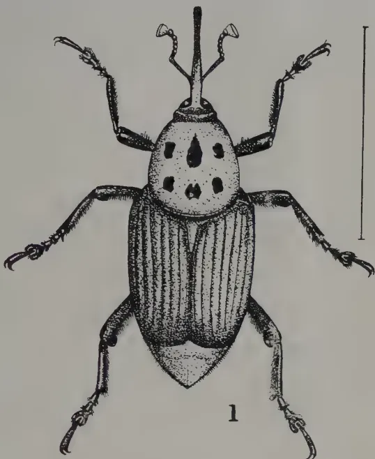
1
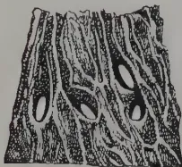
2
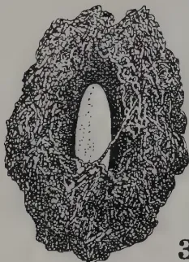
3
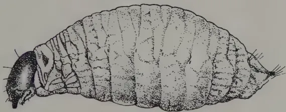
4
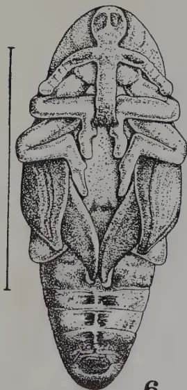
5
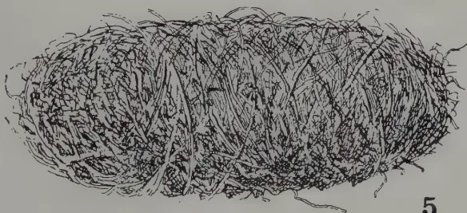
6
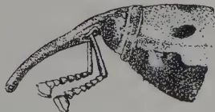
7
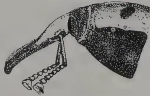
8
A. George Sluiz
THE RED WEEVIL.
Rhynchosphorus ferrugineus.
[Faint page: no legible print of its own could be verified; text withheld (stage 4 review list)]
This image is a scan of a blank page. The background is a uniform light gray. There are several small, dark specks scattered across the surface, which appear to be scanning artifacts or dust particles. No text, lines, or other graphical elements are present. OCTOBER, 1922.]2552. In this Order :—“ The Minister ” means the Minister of Agriculture and Fisheries ; “ Inspector ” means an Inspector of the Ministry of Agriculture and Fisheries ; and the expression “ plant ” shall, where the context permits, include tree and shrub and the fruit, seeds, tubers, bulbs, layers, cuttings or other parts of a plant.
3.—(1) The landing in England and Wales from any country other than Scotland, Ireland and the Channel Islands of any of the plants mentioned in the First Schedule to this Order is prohibited except in accordance with the regulations set out in the Third Schedule hereto.
(2) The importer of any plant the landing of which is regulated by this Article shall comply with the Regulations set out in the Third Schedule hereto.
(3) This Article shall not apply to any plant the landing of which is authorised by a general license issued by the Minister or by a special license issued by an Inspector or to a consignment of a plant to the Minister for experimental or scientific purposes.
4. An Inspector may, upon production if so required of his appointment or authority, enter any premises and examine any plant on such premises which has been landed in England or Wales from any country except as aforesaid or on which he has reason to believe that an insect or pest mentioned in the Second Schedule to this Order exists or has recently existed.
5.—(1) An Inspector may at any time and from time to time by a Notice served on the occupier of premises on which he has reason to believe that there is any plant attacked with any insect or pest mentioned in the Second Schedule to this Order, require him to adopt such measures for prevention of the spread of the insect or pest as are specified in the Notice.
(2) A Notice under this Article may prescribe the time within which the adoption of any measure thereby prescribed shall be completed.
6. No person shall land, sell, or offer for sale, a living specimen of any insect or pest mentioned in the Second Schedule to this Order, except with the written permission of the Minister, and an Inspector may, by a Notice served on any person having in his possession or under his charge any such living specimen, require him to adopt such measures for the prevention of the spread of the insect or pest as are specified in the Notice.
7. For the purpose of this Order a Notice shall be deemed to be served on any person if it is delivered to him personally or left for him at his last known place of abode or business or sent through the post in a letter addressed to him there ; and a Notice purporting to be signed by an Inspector shall be prima facie evidence that it was signed by him.
256[OCTOBER, 1922.Information to be given as to Diseased Plants or parts thereof.
8. Every person who has or has had in his possession or under his charge any plant which is attacked by an insect or pest mentioned in the Second Schedule to this Order, and every person who as auctioneer, salesman, or otherwise has sold or offered for sale any such plant shall if so required in writing by the Minister or an Inspector, give to the Minister or Inspector all such information as he possesses as to the persons in whose possessions or under whose charge the plant is or has been; provided that any information given under this Article shall not be available as evidence against the person giving the same in any prosecution under this Order, except in respect of an alleged failure, to comply with this Article.
Offences.
9.—(1) Every person shall be liable on conviction to a penalty not exceeding ten pounds, who does any act in contravention of this Order or the Regulations in the Third Schedule to this Order or any Notice served on him under this Order, or fails to do any act which he is required to do by this Order or the said Regulations or any such Notice.
(2) This Article does not apply to the landing or attempted landing of anything in contravention of this Order the penalty for which is provided by section 1 of the Destructive Insects Act, 1877, as amended by the Destructive Insects and Pests Act, 1907.
Revocation of Order.
(10) The Destructive Insects and Pests Order of 1921 is hereby revoked; provided that such revocation shall not:—
and any such investigation, legal proceeding or remedy may be instituted, continued, or enforced, and any such penalty may be imposed as if this Order had not been made.
Application of the Order.
11. This Order shall apply to England and Wales.
Short Title.
12. This Order may be cited as the Destructive Insects and Pests Order of 1922.
In witness whereof the Official Seal of the Minister of Agriculture and Fisheries is hereunto affixed this thirty-first day of May, nineteen hundred and twenty-two.
A. D. HALL,
Authorised by the Minister.
FIRST SCHEDULE.
(a) All living plants with a persistent woody stem above ground, and parts of the same, except seeds, when for use in propagation—such as fruit trees, stocks and stools, forest trees, and ornamental shrubs and grafts, layers and cuttings thereof.
OCTOBER, 1922.]257Fungi.—Black Knot of Plum and Cherry (Urowrightia morbosa, Sacc.)
Fire or Pear Blight (Bacillus amylovorus, Trev.)
Chestnut Canker (Endothia parasitica (Murr.) Ander & Ander.)
Wart Disease or Black Scab of Potatoes (Synchytrium endobioticum, Perc.)
Onion and Leek Smut (Urocystis cepulæ, Frost)
Downy Mildew of Hops (Peronospermum humuli, Miy. et Taka).
Insects.—Vine Louse (Phylloxera vastatrix, Planch.)
American Apple Capsids (Heterocordylus malinus Reut.) and Lygidea mendax, Reut.)
Pear Tingid (Stephanitis pyri, Fab.)
Colorado Beetle (Leptinotarsa decemlineata, Say.)
Plum Curculio (Cenotrachelus nenuphar, Herbst.)
Potato Moth (Phthorimæa operculella, Zell.)
American Lackey Moths (Malacosoma americana, Fab. and M.)
disstria, Hubn.)
Oriental Fruit Moth (Cydia molesta, Busck.)
San José Scale (Aspidiotus perniciosus, Comst.)
Japanese Fruit Scale (Diaspis pentagona, Newst.)
Apple Fruit Fly (Rhagoletis pomonella, Welsh.)
Cherry Fruit Flies (Rhagoletis cerasi, Linn.) R. cingulata, Loew., and R. fausta, Osten Saken.)
Gooseberry Fruit Fly (Epochra canadensis, Loew.)
1. The restrictions on landing imposed by the Order and these Regulations do not apply to plants, the landing of which is authorised by a general license issued by the Minister or by a special license issued by an Inspector or to consignments of plants to the Minister for experimental or scientific purposes.
(a) In the case of an importation of plants, otherwise than through the post, from a country whose service of plant inspection is recognised for the time being, each consignment must be accompanied by two copies of a certificate issued after inspection, and not more than 14 days prior to the date of shipment, by a duly authorised official of the country whence the plants are exported, in the form prescribed below. One copy of the certificate must be produced to the Customs Officer at the port of entry, and the other copy must be forwarded by the importer to the consignee. In the case of consignments imported through the post, a copy of the prescribed certificate need not be produced to the Customs Officer, but a copy must be affixed to each package.
The original of the certificate must be forwarded by post before the plants are despatched, by the Exporter to the Horticulture Division of the Ministry of Agriculture and Fisheries, Whitehall Place, London, S.W. 1.
This is to certify that the plants included in the package or consignment described below were thoroughly inspected by _____, a duly authorised official of _____, on _____, and were found or believed by him to be healthy and free from any of the
258[OCTOBER, 1922.]plant diseases or pests named in the Second Schedule to the Destructive Insects and Pests Order of 1922.
This additional certificate must be given for all potatoes :—
Further, it is hereby certified that no case of the disease known as Wart Disease or Black Scab of Potatoes (Synchytrium endobioticum) has occurred on the farm or holding where the potatoes included in this consignment were grown nor within 500 yards (approximately kilometre) thereof.
(Signed) .. .. .
(Official Status) .. .. .
The following details must be filled in by the Shipper :—
Number and description of packages in consignment.....
Distinguishing marks .....
Description of Plants .....
Grown at .....
Name and Address of Exporter .....
Name and Address of Consignee .....
Name of vessel .....
Date of shipment .....
Port of shipment.....
Port of Landing in England and Wales .....
Approx. Date of Landing .....
(Signed) .....
An Inspector of the Ministry of Agriculture and Fisheries may open and examine the contents of any consignment or package imported or believed to have been imported into England or Wales, notwithstanding the fact that the consignment may be accompanied by, or the package may have attached thereto, the duly authorised copy certificate.
(b) In the case of an importation of plants from a country where no recognised service of plant inspection is maintained and in the case of a consignment of plants which is not accompanied by copy certificates as above mentioned, or of a package of plants imported through the post to which a copy certificate is not attached, the plants shall be retained by the importer or consignee until they have been examined by an Inspector of the Ministry of Agriculture and Fisheries at a suitable place designated by the Inspector or by the Ministry and certified in writing to be healthy and free from the insects and pests mentioned in the Second Schedule to this order or until their removal has been authorised in writing by the Ministry or by an Inspector of the Ministry.
(c) Any imported plants which on inspection are found to be unhealthy or attacked by any insect or pest mentioned in the Second Schedule to this Order, and which, in the judgment of the Inspector, cannot be cleaned by disinfection or other treatment, shall, with the packing and package, either be destroyed or returned to the country of exportation by the importer thereof.
(d) When disinfection or other treatment of the plants is allowed, it shall be carried out by the importer, and under the supervision of an Inspector of the Ministry of Agriculture and Fisheries at a suitable place designated by the Inspector or the Ministry, and no part of the consignment shall be moved from the place designated without the written consent of the Inspector of the Ministry of Agriculture and Fisheries.
(e) The Ministry's charge for the services of the Inspector and all charges for storage, cartage and labour incident to inspection and disinfection, shall be paid by the importer.
3. Plants will not be deemed to be healthy which are attacked by any insect or pest mentioned in the Schedule and the Note to the Sale of Diseased Plants Order of 1922.
(Extracts from the "London Gazette" of Friday, 2nd June, 1922.)
OCTOBER, 1922.]259An almost incredible record of a queen is reported by Gleanings in Bee Culture for July last. This prolific bee was the property of MR. C. B. HAMILTON of Fenton, Michigan. He purchased the queen and colony in April last year, and kept them well fed with syrup against the honey-flow, which was provided by a plentiful crop of red clover, sweet clover and lucerne which yielded enormous quantities of nectar. MR. HAMILTON first put in 6 supers of sections, and when these were filled, piled on more till he finally had 24 supers each containing 24 sections. In the end he took away 23 twenty-four-pound cases of honey. The queen was the most prolific he ever had. She kept on laying and he continued feeding with warm syrup up to the honey-flow by which time there were "bushels of bees." With such a crowd of healthy bees and a long honey flow he was thus able to get 577 sections of sealed honey.
The Secretary of the Apis Club, writing on 1st August, says "we are sending you with our compliments a British standard specimen of Adminson's semi-comb (small-celled worker variety). This may or may not suit A. indica, but does suit A. fasciata, and other small races of bees, including some Italian strains. You can obtain the large-celled worker variety from LEES' Beehive Works, Uxbridge, England, whose catalogue we are sending you." The Secretary of Ceylon Bee-keepers' Association will be pleased to forward the specimen to any one interested in this substitute for ordinary wax comb-foundation, for inspection.
As a preventative against swarming, keep open brood outside and hatching in the centre of the brood nest. Arrange the brood thus before putting on the super.
In the Rocky mountains is a bee plant (Cleome serrulata) which yields enormous quantities of honey; but under cultivation at lower altitudes it yielded disappointing results. This is pointed out as an instance of a nectar-bearing plant which is of minor importance outside its natural environment, but a source of large crops of honey in its natural habitat. The high altitude at which the plant grows may affect its nectar-producing capacity, which would appear to be lowered by decreased elevation.
The headquarters of the Apis Club are at Benson in Oxfordshire, where one can examine the merits of every race of bees, study all the up-to-date apparatus for bee-keeping, and consult a fine library. The Club owes much to MR. ABUSHADY, who has been the driving force that brought it to its present satisfactory position. The Ceylon Bee-keepers' Association has arranged for a visit to the headquarters of the Apis Club by a lady at present on a holiday in England, who will no doubt have much of interest to say on her return to the Colony.
260[OCTOBER, 1922.What is "royal jelly?" DR. A. VON PLANTA, a Swiss Scientist, tells us that Royal jelly on an average consists of 69% water and 31% dry substance. This dry substance is made up of 45% albumen, 14% fat, and 20% sugar—a nutritious enough mixture.
MR. M. SHANKS, in a letter to the Secretary, Ceylon Bee-keepers' Association, says: "I see by the BEE WORLD that someone claims to have mated queens artificially. If that can be done, the crossing of A. indica with A. mellifica should be a simple matter.
"I have frames spaced , , and 1 inch, and have had fairly good combs from all. The 1 inch spacing is quite all right for combs where worker brood only is being raised, but with drone larvæ it is too narrow. We can't get spacing that will exactly suit both drone and worker larvæ; but I think will serve the purpose best. I am now adopting in most of my hives.
"I have measured the spacing in natural hives (in clay pots chiefly), and found it varies greatly, being sometimes only in. from centre to centre.
"From measurements I have taken worker comb is in. thick, as you say; if the spacing is , that would give an intercomb passage of inch for the bees. For honey the spacing may be anything up to 2 in. When my bees are fairly started in the supers, I spaced out the frames on seeing signs of cells being sealed; and have secured nice combs of sealed honey inches thick.
"My top-bars are mostly in. wide (top and bottom are alike since my frames are reversible), but I would rather have them inch. I find that with a narrow bar, during a honey flow the bees build right round and sometimes on to the cover: inch is more too broad where the spacing is inch. This would leave a passage of in. for the bees.
"As regards size of frames and hive, if I had to make new hives for myself, I would adopt the English standard frame and make the hive in. square. This will allow for 14 frames, but I would only have 12, with 2 well-fitting division boards or dummies. This to all intents and purposes would be a double hive, and could be contracted as required. With good queen management and ordinary seasons, such a hive should answer well. I find queens lay better when they have good-sized frames. I have tried A. indica on Langstroth frames, but I found them rather too large. I have just completed 12 frames in. and put two on to the depth of one of my hives, and will fit them with "starters" and transfer one of my colonies to them. I find that it is the large hives that bring in the goods."
The extracts from MR. SHANKS' notes will be read with interest by all members of the Ceylon Bee-keepers' Association, to whom he is well-known as an enthusiastic apiarist and an investigator, with an open mind, and very keen on experimenting. Though there are many who will not be prepared to agree with him as to the suitability of the British standard frame for A. indica bees, they will read his views with interest, and look forward to the results of his experiments, especially the working of the four-chambered four-queened hive he is trying.
C. D.
OCTOBER, 1922.]261Pensa, A., Agricultural Conditions in the Philippines, Philippine Agric. Review, Vol. XIV, No. 2, pp. 129-158.
S. B. L., Capacity of an Acre, Indian Scientific Agriculturist, Vol. III, No. 7, pp. 282-284.
Juritz, F., Basic Slag: The Change in its Composition, Journ. Dept. of Agric., U. S. Africa, Vol. V, No. 1, pp. 76-79.
Charpuray, P. V., Help the Hardpressed Farmers (Rock or Stone Meal) Mysore Economic Journal, Vol. VIII, No. 6, pp. 404-406.
Russel, E. J., Phosphatic Fertilisers, Journ. of Ministry of Agric., U.K., Vol. XXIX, No. 3.
Report of the working of the Co-operative Credit Societies, Mauritius, 1921.
Wester, P. J., Mindanao, Philippine Agric. Review, Vol. XIV, No. 2, pp. 195-201.
Macdonald, Wm., Agriculture and Land Settlement in South Africa, United Empire, Vol. IV, No. 6, p. 472.
Noor, I. M., Local Land Tenure, Malayan Agricultural Journal, Vol. X, No. 1, pp. 13-17.
Wood, T. B., The School of Agriculture, University of Cambridge, Journ. Ministry of Agric., U.K., Vol. XXIX, Nos. 3 & 4.
Agricultural Research in Great Britain, Nature, Vol. 110, No. 2750, p. 93.
Paush, E., Agricultural Experiment: Its Design and Interpretation, Agric. Dept., U. S. Africa, Science Bull. No. 22.
Russel, H., Indian Parasitic Flies, Journ. Bombay Nat. History Soc., Vol. XXXVIII, No. 3, pp. 703-718.
Dagar, H. C., Mosquitos of the United States, Reprint No. 2447. Proceedings U. S. National Museum, Vol. 62, Art. 1, pp. 1-119.
Davidson, J., Biological Studies of Aphis rumices Reproduction on Varieties of Vicia taba, Annals of Applied Biology, Vol. IX, No. 2, pp. 135-145.
Wester, P. J., Additional Data on Adaly, Philippine Agric. Review, Vol. XIV, No. 2, pp. 159-184.
Wester, P. J., The Avocado and its Propagation, Philippine Agric. Review, Vol. XIV, No. 2, pp. 185-194.
Wester, P. J., Seedless Bread-fruit in Carolina Islands, Philippine Agric. Review, Vol. XIV, No. 2, pp. 202-204.
262[OCTOBER, 1922.Chaulmoogra.Chaulmoogra Oil, Chemist & Druggist, Vol. XCVII, No. 2216, p. 73.
Citrus.Golang, F. C., Some Varieties of Citrus Fruits for the Philippines, Philippine Agric. Review, Vol. XV, No. 1, pp. 44-48.
Coconut.Sundaraman, S., Coconut Stem Bleeding Disease, Mysore Economic Journ. Vol. 8, Pt. 6.
Jack, W. W., and Sands, W. N., The Dwarf Coconut in Malaya, Malayan Agric. Journ., Vol. X, No. 1, pp. 4-12.
Trent Vale, The Leaves of the Coconut Palm, Indian Scientific Agriculturist, Vol. III, Pt. 7, p. 273.
Fibre Plants.Wigglesworth, A., The Fibre Industry of East Africa, Farmers' Journ., Vol. 4, No. 29, p. 9.
Fruit Trees.Watt, G. S., Hints on Planting Deciduous Fruit Trees, Farmers' Journ., Vol. 4, No. 29, p. 15.
Garlic.Garlic (by Gujarati), Indian Scientific Agriculturist, Vol. III, Nos. 7 & 8.
Ground Nuts.Mainwaring, C., Ground Nut, Farmers' Journ., Vol. 4, No. 30, p. 25.
Maize.Douglas J., Field Experiments with Maize, Agric. Gazette, N.S.W., Vol. XXXIII, Pt. 7, p. 465.
Bart-Davy, J., Some New Points on Maize Growing, Farmers' Journ., Vol. IV, No. 28, 29 & 30.
Rice.The Inheritance of Beardedness of Rice in Natural Hybrids, Philippine Agric. Review, Vol. XV, No. 1.
Sandaraaman, Helminthosporium Disease of Rice, Pusa Agric. Research Inst. Bull. No. 128.
Sugar-Cane.Lee, H. A., & Medalla, M. G., Experiments on Fiji Disease, Mosaic Disease and Smut of Sugar-cane, Philippine Agric. Review, Vol. XIV, Pt. 4.
Lee, H. A. Medalla & Wells, C. G., Fiji Disease of Sugar-cane, Philippine Agric. Review, Vol. XIV, Pt. 4.
Lee, H. A. & Kope, E. W., Mosaic Disease of Sugar-cane, Philippine Agric. Review, Vol. XIV, Pt. 4.
Tea.Mosquito Blight of Tea is a Symptom and not a Disease, Planters' Chronicle, Vol. XVII, No. 30.
Tomato.Bowley, W. F. Sleepy Disease of Tomato, Annals of Applied Biology, Vol. IX, No. 2.
Miscellaneous.Lee, H. A. & Merino, G., The Prevention of the Importation of Injurious Insects and Parasitic Fungi on Economic Crops, Philippine Agric. Review, Vol. XIV, No. 4.
Pedigree of Seeds, Indian Scientific Agriculturist, Vol. III, Pt. 7.
Merril, E. D., New and Noteworthy Philippine Plants, Philippine Journ. of Science, Vol. 20, No. 4.
OCTOBER, 1922.]263(FROM LEWIS & PEAT'S Ltd., LATEST MONTHLY PRICES CURRENT.)
| GOODS | QUALITY | PRICE | PER | PKGS | POSITION | MARKET |
|---|---|---|---|---|---|---|
| BEANS AND PEAS— | ||||||
| Butter Beans | ... Madagascar New Crop... | £14 a £15 | ton | Bags | Spot U.K. | Quiet |
| Rangoon Beans | ... Hand Picked ... | £7/5 | " | " | " " | " |
| Soya Beans | ... Manchuria ... | £13 | " | " | C.i.f. " | " |
| Green Peas | ... Japanese, f.a.q. ... | £31 | " | " | " " | Market steady |
| " | ... Dutch ... | £24 | " | " | Spot " | " " |
| CAKES— | ||||||
| Ground Nut Cake | ... Bombay 55olo ... | £10/10 | ton | Bags | C.i.f. U.K. | Slow |
| Copra Cake | ... Malabar ... | £10 | " | " | " " | " |
| ... Ceylon ... | £9/10 | " | " | " " | " | |
| ... Straits ... | £9 | " | " | " " | " | |
| COPRA— | ||||||
| Malabar ... | £27 | ton | Bags | C.i.f. U.K. | Steady | |
| Ceylon ... | £26 10/ | " | " | " " | " | |
| Straits (F.M.S.) ... | £25/5 | " | " | " " | " | |
| GROUND NUTS— | ||||||
| Bombay Decorticated ... | £21 2/6 | ton | Bags | C.i.f. Continent | Slow | |
| OILS— | ||||||
| Palm Oil | ... Lagos ... | £34/10 | ton | Casks | Spot U.K. | Steady |
| " | ... Congo ... | £31/10 | " | " | " " | " |
| Coconut Oil | ... Cochin ... | 43/ | cwt | " | C.i.f. U.K. | " |
| ... Ceylon ... | 39/ | " | " | " " | " | |
| Palm Kernel Oil | ... Crushed ... | 36/6 | " | Naked | Spot " | Firm. Fair demand |
| PALM KERNELS— | ||||||
| West African ... | £17 15 | ton | Bags | { Ex quay L'pool Spot U.K. } |
Steady | |
| SEEDS— | ||||||
| Castor Seed | ... Bombay ... | £19 | ton | Bags | C.i.f. U.K. | Quiet |
| ... Madras ... | £18 | " | " | " " | " | |
| Sesame Seed | ... Bombay ... | £24 | " | " | " Continent | Inactive |
(From Perfumery and Essential Oil Record, Vol. 13, No. 6.)
| GOODS | QUALITY | PRICE | PER | PKGS. | POSITION | MARKET |
|---|---|---|---|---|---|---|
| Camphor Oil | ... White ... | 77s 6d to 80s. | cwt. | Drums | Cheaper | |
| Do | ... Brown ... | 70s. | " | " | Spot | |
| Cinnamon Leaf Oil | ... | 4½d. | oz. | " | ||
| Do | ... | 3½d. | " | C.i.f. | ||
| Cinnamon Bark Oil | ... Genuine ... | 6s 6d | " | |||
| Citronella Oil | ... Ceylon ... | 2s. 6d. | lb. | Drums | Spot | Not mach business |
| Do | ... do ... | 2s 1d | " | " | C.i.f. afloat | |
| Do | ... do ... | 2s 2½d | " | " | C.i.f. | |
| Lemongrass Oil | ... Cochin ... | 2½d. | oz. | " | " | |
| Lime Oil | ... Distilled ... | 2s. | lb. | Spot | Easeir | |
| Do | ... Hand-pressed ... | 10s. 6d. | " | Nominal |
264
[OCTOBER, 1922
METEOROLOGICAL.
SEPTEMBER, 1922.
| Station | Temperature | Humidity | Mean Wind Direction during month | Daily Mean Velocity. | Rainfall | Difference from Average | |||
|---|---|---|---|---|---|---|---|---|---|
| Mean Daily Shade | Difference from Average | Mean | Mean amount of cloud. 10 = overcast. | Amount | No. of Rainy days | ||||
| Colombo | |||||||||
| Observatory | 81.2 | + 0.2 | 80 | 9.0 | WSW | 141 | 1.36 | 13 | - 3.62 |
| Puttalam | 81.8 | - 0 | 74 | 4.7 | SW | 306 | 0.00 | 0 | - 1.01 |
| Mannar | 83.1 | + 0.2 | 75 | 7.1 | SSW | 264 | 0.52 | 1 | - 0.54 |
| Jaffna | 82.2 | - 0.4 | 80 | 5.4 | SSW | 377 | 0.26 | 6 | - 0.83 |
| Trincomalee | 86.6 | + 2.2 | 62 | 6.4 | WSW | 248 | 0.51 | 7 | - 4.11 |
| Batticaloa | 84.8 | + 1.3 | 67 | 5.2 | Var. | 156 | 0.17 | 3 | - 2.54 |
| Hambantota | 81.6 | + 0.4 | 74 | 4.9 | SW | 412 | 0.95 | 4 | - 1.31 |
| Galle | 78.4 | - 1.6 | 87 | 7.0 | WNW | 314 | 9.53 | 22 | + 2.08 |
| Rathnapura | 80.1 | + 0.1 | 82 | 7.3 | 11.49 | 23 | - 3.30 | ||
| Rnu pura | 84.2 | + 0.8 | 66 | 5.6 | 0.00 | 0 | - 2.93 | ||
| Kurunegala | 81.1 | + 0.1 | 74 | 6.8 | 2.67 | 11 | - 2.31 | ||
| Kandy | 75.2 | - 0.6 | 80 | 7.4 | 5.37 | 17 | - 0.49 | ||
| Badulla | 75.8 | + 0.7 | 70 | 7.3 | 0.34 | 4 | - 3.05 | ||
| Diyalatalawa | 71.0 | + 1.6 | 64 | 6.3 | 0.53 | 7 | - 3.19 | ||
| Hakgala | 62.0 | + 0.4 | 80 | 7.0 | 3.82 | 14 | - 2.23 | ||
| N. Eliya | 60.8 | + 1.4 | 84 | 8.4 | 9.58 | 19 | + 1.43 | ||
The rainfall in September was below normal over the greater part of the island, but probably the most distinctive feature was the similarity in distribution between August and September, so that, to an even greater extent than usual, conditions at the end of September must be regarded as a cumulative effect rather than due to that month alone. This was notably so in certain areas round Ciltaw and Batticaloa where this month's totals were not far below average, but the drought was emphasised by a series of small deficits in each of the last four months.
As in August the pressure gradient was higher than usual and this showed both in the wind averages being in the direction of thunderstorms rather than in the direction of usual. Blackworth 28.64 ins. again figure among the wettest reports, and other stations in the south of the Central Province were generally at least two inches ahead of their average. Those in the Pussellawa and Kandy district were usually just below average (though Peradeniya was a trifle above but in the rest of that Province deficits of 2 ins. or more were commonest).
In the Southern Province the average was passed by over 2 ins. at Galle and a few neighbouring stations, and was reached in the area North East of this including Kurama, Anningkanda, etc. The average was also reached at some stations in the Jaffna Peninsula and a few isolated cases such as Kalutara, Rotawewa (Eastern Province) and Medagana (Uva).
In practically all the other provinces there were consistent deficits. In the Kelani Valley these were frequently from 5 ins. to 10 ins. but elsewhere the commonest offsets were between 2 ins. and 5 ins. The stations that recorded no rain include more than half of those in the North-Western Province, nearly all in the North-Central Province, and a few in Uva.
The column of temperature offsets above shows the natural accompaniment of the deficient rain—a fact that was also commented on from many of the stations that do not give actual temperature figures. The humidity was consistently below average and the cloudiness rather above—in which items they agree with the August figures.
A. J. BAMFORD,
Supdt. Observatory.
ANIMAL DISEASE RETURN FOR THE
MONTH ENDED 30th SEPTEMBER, 1922.
| Province, &c. | Disease. | No. of Cases up to date since Jan. 1st. 1922. | Fresh Recoveries. | Deaths. | Bal- ance Ill. | No. Shot. |
|---|---|---|---|---|---|---|
| Western | Rinderpest | 11 | 4 | 3 | 8 | — |
| Foot-and-mouth disease | 293 | 288 | 1 | 4 | — | |
| Anthrax | — | — | — | — | — | |
| Colombo Municipality | Rabies | 4 | — | 1 | — | 3 |
| Hemorrhagic Septicæmia | 7 | 2 | 3 | — | — | |
| Rinderpest | 19 | 4 | — | — | — | |
| Cattle Quarantine Station* | Foot-and-mouth disease | 137 | — | — | — | — |
| Rabies | 13 | 3 | — | — | — | |
| Rinderpest | 19 | — | — | — | — | |
| Central | Foot-and-mouth disease | 50 | — | — | — | — |
| Anthrax | 151 | — | — | — | — | |
| Rinderpest | 17 | 17 | 8 | 9 | — | |
| Southern | Foot-and-mouth disease | 97 | 10 | 1 | 2 | — |
| Anthrax | 6 | — | 6 | — | — | |
| Protoplasmosis | 7 | — | 7 | — | — | |
| Northern | Rinderpest | — | — | — | — | — |
| Foot-and-mouth disease | 6 | 6 | — | — | — | |
| Anthrax | 2 | — | 2 | — | — | |
| Eastern | Hemorrhagic Septicæmia | 37 | 4 | 33 | — | — |
| Rinderpest | — | — | — | — | — | |
| Foot-and-mouth disease | 294 | 294 | — | — | — | |
| North-Western | Anthrax | — | — | — | — | — |
| Rinderpest | 18 | — | — | — | — | |
| Foot-and-mouth disease | — | 18 | — | — | — | |
| North-Central | Rinderpest | 191 | 17 | 183 | 8 | — |
| Foot-and-mouth disease | — | — | — | — | — | |
| Anthrax | 7 | 5 | 3 | 1 | — | |
| Uva | Rinderpest | 2 | — | 2 | — | — |
| Foot-and-mouth disease | 283 | 5 | 278 | 2 | — | |
| Anthrax | 3 | — | 3 | — | — | |
| Sabaragamuwa | Rinderpest | 1520 | 85 | 1423 | 3 | 87 |
| Foot-and-mouth disease | 9 | 6 | 2 | — | — | |
| Anthrax | 2 | 1 | — | — | — | |
| Hemorrhagic Septicæmia | — | — | — | — | — | |
| Rabies | — | — | — | — | — | |
| — | — | — | — | — |
G. W. STURGESS,
Government Veterinary Surgeon.
* Figures for September 1922, not yet to hand.
Colombo, 5th October, 1922.
VOL. LIX.
PERADENIYA, NOVEMBER, 1922.
No. 5.
Within recent years public opinion has demanded throughout the whole world that greater attention be given to the control and prevention of the spread of Pests and Diseases of cultivated plants with a view to checking the dissemination of these pests and diseases from one country to another and to controlling the spread of such pests and diseases within affected areas.
It must be confessed that whereas many efforts have been eminently successful others have yielded but small results. In certain instances, pests and diseases, despite all the efforts of the authorities, have not only spread in their country of origin but have also spread to other countries. Even in the cases of these failures, it has frequently been demonstrated that large and profitable industries would have been destroyed if drastic measures to prevent the spread of the particular pests and diseases had not been taken.
Most countries have during the past few years in the light of experience gained with the working of plant pest and disease legislation made certain modifications and by agreement the general use of certificates is to be given a trial in respect of the movement of plant imports from one country to another, where approved technical services are available for the proper issue and control of such certificates.
Similarly the public opinion of many countries has hardened with respect to prohibitions of specified imports likely to be dangerous and with respect to the proper control of pests or diseases in any area.
266[NOVEMBER, 1922.It is gratifying to find that a similar change of opinion has taken place amongst the agriculturists of Ceylon and whereas but a few years ago any regulations in regard to the control of pests and diseases were considered irksome and designed against the liberty of the subject, cultivators of crops are now asking that further appointments of Inspectors and Sub-Inspectors shall be made in order that regulations may be more effectively enforced and in order that epidemics of pests or diseases may be prevented.
The provision of such organizations is sound policy and is in the nature of an insurance.
A beginning has already been made in two divisions, embracing large areas of tea and rubber, and it is very pleasing to note that the Low-country Products Association—representing a very large section of the coconut industry—are asking that similar provision should be provided for those districts dependent for their wealth upon the coconut palm.
The revision of the existing Ordinances and Regulations dealing with the control of Plant Pests and Diseases are also being undertaken with a view to simplifying them and making them more effective in operation and with a view to incorporating sections in accord with the latest practice of other countries.
Ample opportunity is being afforded to agriculturists to consider the draft ordinances and regulations so that helpful criticism may be forthcoming. The efficient control of Plant Pests and Diseases is so influenced by public opinion that it is necessary that the aims and objects of any legislation should be fully understood, appreciated, and approved by those whom it is designed to serve.
The present proposals are designed to assist the agricultural industries and to provide means whereby such industries may be safeguarded against abnormal losses in the future. When their preparation has been concluded the organization necessary for putting them into effective operation will have to be arranged for.
NOVEMBER, 1922.]
267
ALEXANDER BRUCE, B.Sc.
When rubber latex from Hevea is evaporated and ashed, the mineral matter is obtained, amounting to about 0.5%. The predominating constituents found are Potash and Phosphoric Acid. Prepared rubber in the form of Crepe or Sheet have the same predominating constituents but in different proportions.
Table I.
| Latex. | * Crepe. | * Sheet. | |
|---|---|---|---|
| Lime (CaO) | - 8.7% | †16.4% | ‡11.4% |
| Magnesia (MgO) | - 5.8 " | 6.2 " | 7.6 " |
| Potash (K2O) | - 43.0 " | 23.4 " | 26.4 " |
| Soda (Na2O) | - 12.4 " | 8.9 " | 6.8 " |
| Phosphoric Acid (P2O5) | - 24.0 " | 43.0 " | 42.2 " |
| Sulphuric Acid (SO3) | - 2.8 " | 1.4 " | 1.8 " |
| Insoluble Matter (SiO2) | - 2.6 " | — | — |
| (Chlorine, Carbonic) Acid, Iron etc.) |
- 0.7 " | 0.7 " | 3.6 " |
Reference to Table I. shows that constituents follow the following order, in Latex:—(1) Potash, (2) Phosphoric Acid, (3) Soda, (4) Lime, (5) Magnesia. In Crepe:—(1) Phosphoric Acid, (2) Potash, (3) Lime, (4) Soda, (5) Magnesia. In sheet: similar to Crepe; Magnesia is greater than Soda.
The Potash and Phosphoric Acid being the chief constituents, they will be considered first.
Table II.
| Ratio. | Potash K2O Phos. Acid P2O5 |
|
|---|---|---|
| Latex | - 43/24 | = 1.79 |
| Crepe | - 23.4/43.0 | = 0.544 |
| Sheet | - 26.4/42.2 | = 0.625 |
Showing reduction of ratio Potash : Phosphoric Acid to about 1/3 in the Ash of the washed coagulum.
Tables 1 & 2 indicate that the preparation of the raw rubber has materially changed the proportion of the Ash constituents from that found in the latex. The Phosphoric Acid has been doubled and the Potash halved, Lime and Magnesia have been increased, Soda and Sulphates reduced. These constituents in which there has been a reduction represent the salts in
* The Crepe and sheet samples were ordinary commercial rubber, and the ashes were calculated free from Insoluble Matter, etc., which had gained entrance to the rubber in the course of manufacture.
† Calculated free from 27% Insoluble Matter, etc.
‡ Calculated free from 50% Insoluble Matter, etc.
268[NOVEMBER, 1922.solution in the mother (or waste) liquors and those dissolved out by washing and coagulation treatment, constituents which have been increased represents the insoluble Salts and those occluded in the rubber coagulum.
Phosphates are essential for mitotic cell division, doubtless because phosphorous is a constituent of the nucleus and also for the normal transformation of starch. The close connection between cell division and phosphates supply may account for the large amount of phosphorous stored up in the seed for the use of the young plant.
It is a point worth noting that the period of greatest production of rubber in Ceylon and therefore of latex on an estate, is the last quarter of the year, which coincides with the period immediately after the trees have made their effort in propagation, of their species, in preparation and elaboration of seed. The seed crop is shed in August-September, and it is after that period that the yield of rubber increases. Latex is apparently associated with the preparation of the seed crop, and in the elaboration of the proteins and starch in the leaf, particularly in the new leaf in April, after the leaf-fall in February-March. CAMPBELL (Bulletin of the Ceylon Agricultural Dept. 17) has shown that tapping results in a partial withdrawal of starch below the cut.
Potash is necessary for the elaboration of Carbo Hydrates. By withdrawing latex from the tree, starch transformation at the cut is weakened; the heavier the tapping the weaker starch translocation becomes. Potash also has a bearing on the mitotic cell division. Potash may be replaced by Soda.
Calcium stimulates root growth. Calcium like potassium occurs more in the leaf than in the seed. Calcium may be associated with protein metabolism as there is a close relation between Calcium and Nitrogen.
Magnesia is necessary for the Chlorophyll and, like Phosphorous, moves to the seed.
These results although interesting could be further investigated to find the variation of the constituents of the latex, organic and inorganic, ionisable and unionisable, as a whole, and individually—as a whole by means of the conductivity before and after ignition individually by minute analyses.
Colloids are uncrystallizable complexes; examples of these are proteins and rubber. Colloids are separated from crystalloids by means of a skin or dialyses paper, crystalloids pass through into the vessel of water in which the membrane full of the test liquid is suspended, by this means a separation is effected; a deduction may be made, after determination, before and after ignition, of the state of combination of the constituents of the dialysate—(the dialysable liquor) and the undialysable liquor. Some of the constituents may be in organic combination, some inorganic. Hevea leaf juice could be similarly worked out.
Acidity or concentration of hydrogen ions, P.H. in latex and leaf juice might also have a bearing on the physiology of the rubber tree.
The enzymes of Hevea latex—oxidising, coagulating invertase, proteolytic—might also be examined and their working conditions and functions determined.
Accumulation of such data, when obtained, would extend the present knowledge of Hevea latex, its functions, and general physiology of the rubber tree, and throw light on the drain on the tree by tapping.
NOVEMBER, 1922.]269J. HAGEN.
(Translated from the Dutch by H. L. LUDOWYK, Librarian, Department of Agriculture.)
[Continued from September issue.]
The stimulant element in Coffee is Caffeine, which, however, does not affect the flavour of the beverage.
Caffeine occurs in nearly every part of the coffee plant. The berry contains from 0.6 to 2.5% of it, the bark 0.45%, the leaves from 1.10 to 1.25%, the young twigs 0.60%, the mature branches 0.20%, and the flowers 0.30%.
As a result partly of the unreliability of the old analyses the difference between the highest and the lowest percentage of Caffeine known to occur in coffee was found to be very great. On this account, the same kinds of coffee were analysed in different methods and the figures obtained were 1.76 and 0.24.
A later analysis gives the following figures:—
| Mokka | ... | ... | ... | 1.08% |
| Ceylon | ... | ... | ... | 1.24 " |
| East Indian | .. | ... | 1.11—1.29 | " |
| Java I | ... | ... | ... | 0.83 " |
| „ II | .. | ... | ... | 1.04 " |
| Paarl Java | ... | ... | ... | 1.10 " |
| Preanger | ... | ... | ... | 1.02 " |
| Superior Java Liberian | ... | ... | 1.0—1.37 | " |
| „ Malakka Liberian | ... | ... | 1.26—1.35 | " |
The composition of coffee according to the analysis of Konig and Bomer, which has been generally accepted, is given below:—
| Water | ... | ... | ... | 10.73% |
| Nitrogenous substances | ... | ... | ... | 12.64 " |
| Caffeine | ... | ... | .. | 1.07 " |
| Sugar | ... | ... | ... | 8.62 " |
| Other Nitrogenous extracts | ... | ... | .. | 19.30 " |
| Dextrin | ... | ... | .. | 0.86 " |
| Tannin | ... | ... | ... | 9.02 " |
| Crude Tissue... | ... | ... | ... | 24.01 " |
| Ash | ... | ... | ... | 3.02 " |
| Water extract | ... | ... | ... | 30.84 " |
| Ether extract (Fat) | ... | ... | ... | 11.80 " |
* ONZE KOLONIALE LANDBOUW VII, DIE KOFFIECULTUUR, DOOR J. HAGEN, and Planter TWEEDE DRUK. HAARLEM, 1917, H. D. THEIME en ZOON, Prijs f. 2.25.
270[NOVEMBER, 1922.Before coffee is infused it has to be roasted or burnt ; and this process greatly affects its chemical composition. The changes that coffee undergoes in this process are well set out in the following table :—
| Weight. | Matter Soluble in water. | Organic matter. | Nitrogenous matter without caffeine. | Fats. | Sugar. | Other Nitrogenous matter. | Crude Tissue. | Ash. | Water. | Caffeine. | |
|---|---|---|---|---|---|---|---|---|---|---|---|
| Unroasted | - 300 | 82.32 | 255.69 | 28.69 | 39.69 | 9.75 | 90.88 | 83.16 | 10.44 | 33.87 | 3.540 |
| Roasted | - 246.7 | 73.29 | 229.58 | 29.43 | 3.23 | 3.23 | 94.49 | 59.87 | 9.85 | 7.87 | 3.403 |
| In burnt coffee thus more (+) or less (—). | |||||||||||
| — | — | — | + | — | — | + | — | — | — | — | |
| 53.3 | 9.03 | 261.1 | 0.74 | 1.13 | 6.52 | 3.61 | 23.29 | 0.59 | 26. | 0.137 | |
This in itself indicates that the constituents are not dissipated, but are partly transformed into substances that greatly contribute to the aroma of the roasted product. Of these the following have been separated :—
| Acetone | Trimethylamine | |
| Furfurol | Formic Acid | |
| Ammonia | Acetic Acid | |
| Furfuran | Resorcin | |
| Pyridine and Pyridine bases | ||
All these are not identified in one analysis. Those that occur most frequently are Furfurol and Acetic Acid.
As the coffee plant draws heavily upon the resources of the soil, one cannot be too careful in the choice of land for it. It requires a rich loose and porous soil where no impervious layer occurs to impede the development of the tap root.
Virgin forest land is, for these reasons, the most suitable. On such soil, rich in humus the trees thrive luxuriously, adorned with dark green foliage. The points that one has to pay special attention to are these :
(1) With regard to level, the land should not be irregular, and personally, I should say, the flatter the land, the better.
(2) Although the coffee tree can be cultivated at even the height of 5,000 ft. above sea level, there are certain types best suited for certain heights. For example, Robusta and Liberian coffee are more suited to low lands though both thrive on land up to nearly 2,500 ft. above sea level. Arabian Coffee succeeds at even greater elevations—to about 4,000 feet and over. The amount and the distribution of rainfall also exert great influence on coffee. The amount of rainfall which would be considered most favourable would be about 40 inches a year. The East Monsoon of 1913 shewed that Robusta could very well withstand a protracted drought ; but we planters find the East Monsoon amply sufficient for our Arabian coffee.
(3) Continued winds are very bad for coffee.
(4) One should choose land in whose vicinity is some place of flowing water. If there be a lively winding river, so much the better. Then, later on water-power might be obtained from it for the preparation of the coffee.
NOVEMBER, 1922.]271It will also be beneficial to us if, in the forests of the land we have chosen, really good timber trees be found. The wood will come in very handy for the building of bungalows and establishments.
By want of strict attention to the particulars enumerated many tracts opened up failed completely, and much capital was lost. Coffee planted on unsuitable land had at once its innumerable enemies to contend against, and could then hardly be expected to succeed.
We shall now proceed, taking a favourable hypothetical case. Let us suppose that we have at our disposal an uniform tract of forest land at least 900 to 1800 acres in extent, and fulfilling all the required conditions.
What we should do first is to choose a suitable site for dwellings for ourselves and for the workmen. This done, we can prepare for clearing the forest land. Before starting on the felling we should divide up the land which is to be cleared into a number of equal squares. Doing this we give no chance for complaint to the labourers who often claim more than their due.
For this purpose, taking a fixed point (preferably a boundary mark shown on the plan) a line is cut in the forest from North towards South and another from East towards West. Then at equal distances similar lines are cut. Thus we obtain square blocks of forest land. In order to have good control over the felling operations, each square block worked at should be completely felled and cleared before another is started upon. After clearing the smaller trees, the felling of the larger trees should follow. All the wood cut down should be allowed to lie on the land for some time till it dries sufficiently.
Now comes the task that takes an enormous length of time: that of burning the wood, gathering together the portions not consumed the first time, and setting fire to them again. This clearing should not be overdone, for too much burning causes a loss of the humus with which it is so difficult to replenish the land.
When the land is sufficiently cleared, it is divided up into blocks. Thus, we would have a number of small gardens of even size and each bounded by a path. If the land be flat, these paths can be turned into road ways; otherwise, let them simply remain unplanted; or, if planted, not with coffee, but, preferably, with some plants having red leaves so that one is able at a glance to notice the different allotments.
If this method be carried out, the difficulty of measuring each plot being eliminated, a plan of the whole estate, if necessary, can be drawn up in a few hours. On the irregular portions of the land a road-tracer should be used in order to give the roads such a gradient as would permit of superintendence being done on horseback.
It is clear that the distance between plants in the case of Coffee depends on the variety planted as well as on the climate and soil. Generally, the higher the land is above the level, the wider should be the distance between the plants. If the land planted be very fertile, the distance between the plants should be rather wider than usual. This is done to provide space for
272[NOVEMBER, 1922.the more flourishing growth of the trees. Arabian Coffee is generally planted at from 6 by 6 to 8 by 9 feet, so that an acre be made to take in from 1200 to 600 plants. Liberian Coffee is planted 12 feet apart, and Robusta 6 by 8 or 7 by 8 feet.
The long continuous terraces that are made for a Cinchona plantation are unusual on a coffee estate. The distance between the plants is marked out by means of squares, and each plant is given its own terrace according as the conditions of the land—level or sloping—and the texture of the soil on the spot requires it. On a declivity practically no terrace is made, and in order to prevent the soil denudation during the heavy rains, some binding plants or grasses are planted, or a beam is laid across to arrest the soil.
The marking out of the distances should be done on contract by separate workmen who are skilled in it and do it very fast. A beginning is made by making a drain along the edge of the plot that has already been marked off by the paths. Now, measuring along the drain with a piece of wood of the length required—the distance between the plants—the workmen drive bamboo pegs into the ground. Each peg marks the place where a plant is to be put in. This is the place for the first row of plants. When that is done with, a drain is made parallel to the first and at such a distance from it is in the distance that is to be between the rows. Just as in the case of the first row, pegs are driven in. If all this work be well carried out, from whatever position one looks at them, every peg should be the intersecting or meeting point of three straight lines.
As all the plots are of the same size, each one should contain the same number of trees as any other; and hence, the same number of pegs should have been driven in. But there may be places that, owing to the presence of a huge boulder or of a water course, cannot be planted. The number of places that for these reasons are not marked should be taken count of in order that one be able to know exactly how many plants are to be put.
Once the ground has been made ready, then comes the making of the holes for planting. After the holes have been dug they are left open for some time in order to aerate the soil and take away any sourness that might be in it.
As a rule, the holes are made 2 feet in depth and with a diameter too of the same measurement. I, personally, think that making these holes in soft, friable forest ground is almost superfluous, though it is different when one has to deal with a heavy damp soil. In the case of the former, softening, turning up, and forking of the soil in order to remove remnant roots as far as possible is sufficient; but both methods can be adopted. Thus far, every thing has been done to prepare for planting. The setting in of the regular rains is all that one now waits for. At least this is the case in Java where there is a distinctly marked dry and wet weather.
While the clearing of the land was going on, we ought to have been paying attention to the plants we were to put out. Coffee, according to the species and variety of plant taken and according to the place it is planted in, requires a period of from 5 to 9 months to develop before it is planted out in the open in the estate. During this period it should be in the nursery.
NOVEMBER, 1922.]273For a nursery we require land with a gentle slope, or a flat piece of land, not far from some water supply, so that in time of drought we might be able to water the plants. The piece of land chosen should be divided up into beds of, at most, 4 feet breadth. Wider beds are hard to tend. Trenches from 6 inches to 1 foot broad should be made between the beds. We should take care that the flow of water along these trenches is regular and that no part of the nursery remains dry or ill supplied.
The beds should be well ploughed and forked and made clear of all weeds and roots. The whole area of the beds has to be provided with some means of artificial shade. Some covering on a bamboo frame-work high enough to let a man walk about in an upright position in the nursery should be used.
In order to shew its deficiencies, one need not dwell on the old method of transplanting on to the beds seeds that fall and germinate under the trees. The chief of the defects is the disregard of the heredity of the seedling. We cannot be too careful with regard to the selection of the seed; we should make certain that the seeds to be planted have been selected from the most robust and healthy parent trees.
Since many varieties such as Liberia, Abeokuta and Robusta vary to a great extent, it is most useful to gather our seed only from such trees as have been marked out as being the best type to propagate; and this plucking should be done under good supervision.
Many planters are in favour of exchanging seeds; and thus they introduce seeds of foreign countries. Personally, I think that we ought to be very careful to see that we import seeds from countries whose climatic conditions vary but slightly from those of ours. If this point were disregarded some process for acclimatisation should be resorted to.
Having carefully selected our parent trees and the seeds too under good European supervision the berries should be peeled by hand and the pulpy layer taken off by means of ash or sand. The seeds should then be washed and dried in the shade. One sees the obvious necessity for eliminating as undesirable the berries that are very light. This discarding should be done whilst washing the berries. Then the abnormally large and round beans should be picked out and the rest sorted according to their weights and measurements.
A very young tree should not be chosen as a parent tree; for we should be in a position to judge how, in the course of some years, a tree has fared against disease and pests.
In the nurseries two methods can be adopted: first putting the seeds two inches apart from one another in the beds in order to germinate, and weaning the seedlings away just before the first leaves are formed, or somewhat later, after the first leaves have fully appeared; and secondly, putting the seed straight away on the nursery beds at distances of from 5 by 5 to 10 by 10 inches apart and omitting the weaning process.
Both these methods have their advantages as well as disadvantages. In following the first, one has to tend fewer germinating beds, and can on that account usefully occupy one's time in preparing the nursery beds. If the
274[NOVEMBER, 1922.second method were to be followed, the nursery has to be completely ready before starting; but the labour of weaning which demands the utmost care and attention, if we want to prevent what generally results from want of it, the astonishing number of bent tap-roots.
The distance at which the seeds are to be planted in the beds depends on the species used. The Liberian types are planted with the distances between the seeds greater than that in the case of Arabian varieties (these latter being planted about 6 inches apart). It depends also upon the length of time the plants are to remain in the nurseries. In some cases it might be found useful to plant out only when the plants are over a year old. In such cases the planting in the nurseries should be at a distance of 1 ft. by 1 ft.
Care should be taken to have a good surplus of seeds and have consequently a surplus of plants; for, in the process of weaning and planting out there should be ample scope for careful selection. When they are to be put in their permanent places on the land, the plants should be very carefully examined and the less healthy and less robust ones should be replaced by better ones. For this purpose a small weaning bed should be laid out and planted.
When transplanting the seedlings, they should be very carefully up-rooted with the help of a fork or a sharp bamboo "sollet." After this the earth adhering to the roots should be shaken off. The main root should be sharply cut at the end. The places where the seedlings are to be planted should already have been marked on the beds by means of small pegs. In these places holes 6 inches in depth should be made with the aid of a round pointed stick. In this hole the plant should be put. The filling in of the holes should be done by hand, the plant being held at the required height. Then the earth should be lightly pressed down either with the hand or with the bamboo "sollet." If this method be carried out, we are sure not to have the tap-roots of our plants bent.
During the whole period in which the plants are in the nursery, care should be taken to keep the beds entirely free of weeds. The soil in the beds between the plants should be constantly turned and broken up by means of the sharpened bamboo "sollet" in order to open up the soil that the rains render rather compact.
During the North-East Monsoon it would be advisable to water the beds, but this should not be done too early as the plants are very drought-resistant. As the plants, when put out in the field, will have to be exposed to the full force of the sun, it would be necessary, slowly and gradually, to do away with all the artificial shade.
In addition to this most commonly used method of laying out and tending a nursery, here described, the seed can be germinated in pieces of bamboo, in long gutter-like receptacles of split giant bamboo filled with earth, or in flower pots, etc.
We have already seen that some species of coffee, and especially the hybrids, are very variable, so that they cannot be favourably propagated by seed. For this reason people have had recourse to grafting, and with very great success.
NOVEMBER, 1922.]275A Liberian plant is generally chosen as the stock because its root system is good and is not easily susceptible to root diseases.
There are two methods of grafting in common use. The first method is to cut the scion obliquely, graft it against a corresponding cut on the Liberian stock and bind it fast. According to the second, the pointed graft is set in a vertical slot on the stock, and covered with a jacket. The first method is known as the "approach" method and the second as the Crown method. These two methods are not described in detail as they are amply dealt with in the Coffee Guide and other periodicals.
I shall only remark that branch grafting improves the condition of the branches and prevents them growing upwards. They inherit a tendency for spreading outwards. Top grafting does this too, so that for growing plants it is preferable.
When the plants are old enough—with five to eight leaves and the first pair of branches appearing—and the rains have set in they should be transplanted.
The planting may also be done in one of two ways: with the earth adhering to the roots and without it. The second method is preferable since it is cheaper and the coffee thus transplanted bears well too. Besides, one is also able to examine the roots well before planting out. But there are circumstances under which one is forced to plant with the earth—e.g., when heavy, clayey soils from which the plants have to be transplanted do not permit of the employment of the other method.
For planting out, the best plant ought to be chosen—robust, dark green plants, without the slightest trace of disease. Whole beds are sometimes noticed to have plants with yellowish and curled up leaves. There one can at once identify the so-called "blorok" coffee. These plants should be eliminated as they never thrive on the estate.
When planting without the clod, the plants ought to be carefully taken out of the nursery beds, and the tap-root shortened to the length of about 9 inches.
A workman makes with a stake a hole at each place where a tree has to be planted. A woman then follows and places in it a plant, fills up the hole with earth, adjusts the plant to the desired height, pats the ground with the bamboo "sollet" and lightly presses down the soil with one hand while the other yet holds the plant in position.
If this method be followed, the root will not get bent. When planting with the earth adhering to the roots, the soil around the stems of the plants should be well stamped down in order that the earth may get well compressed to form a ball of earth that would adhere well to the roots. If the tap root projects out of the ball, the protruding portion should be snapped off. The transport of the plants to their places on the estate should also be done with due care.
Unless it be absolutely necessary, I, personally, would never plant with the ball of earth, not only on account of the extra cost but also to avoid the great difficulty of transport.
(To be continued)
276[NOVEMBER, 1922.PEDRO CORREIA AFONSO, B.Ag.
Of the Department of Agriculture, Portuguese India.
It was for a long time held both by geologists and by agronomists that the laterite soils of India were a vast expanse of land characterised by their small productivity.
OLDHAM,* describing the nature and the composition of the lateritic rock, says:—"The surface of the country composed of the more solid forms of the laterite are usually very barren, the trees and shrubs growing upon it being thinly scattered and of small size. This infertility is due, in great part, to the rock being so porous that all the water sinks into it, and sufficient moisture is not retained to support vegetation. The result is that laterite plateaux are usually bare of soil and frequently almost bare of vegetation. Of course this barrenness is not universal, soil sometimes accumulates on laterite caps, and some of the more gravelly or more argillaceous varieties support a moderate amount of vegetation. Still the general effect of the rock is to produce barrenness."
HILGARD† surveying the work of Indian old authors like VOELCKER‡ and LEATHER§, says:—"The productivity of laterite soils seems throughout to be only moderate, yet much higher than would be expected of soils of similar composition in the temperate zones, where the rate of soil formation is so much slower than in the tropics."
But ever since it was shown that the physical characters of a soil deserve a far greater prominence than was given to it by the agronomists of the old school, the whole outlook regarding the laterite soils has changed and it has become quite clear that under certain conditions of treatment the laterite soils can be made to yield as satisfactorily as the best types of Indian soils. For the physical factor, with its influence on soil aeration and the soil microflora, is one of the most important and permanently beneficial features of laterite soils.
Working on one of the "so-called inferior soils" of lateritic formation, at the CHANDKURI Farm, Raipur, C P., COULSTON and AIYER¶ were able to grow more than merely satisfactorily a large number of crops and obtained much larger yields than on black soil. "The time may yet come," they said, "when with the extension of irrigation facilities, these lateritic soils will be treated as garden land of the best quality."
* R. D. OLDHAM—The Geology of India (1893).
† E. W. HILGARD—Soils, etc. (1918).
‡ VOELCKER—Report on the improvement of Indian Agriculture (1892).
§ W. LEATHER—On the Composition of Indian Soils. (1896).
¶ D. COULSTON and A. R. P. AIYER—The Physical texture of soils in its relation to crop production. Agricultural Journal of India, Special Science Congress Number, 1918, p. 89, V. also AIYER and BAL—The Chemical and Biological aspect of Bhatta soils.—AGR. J. IND. 1920. p. 644.
NOVEMBER, 1922.]277Now the laterite soils of Goa have for a long time been so treated and have produced very many crops, both under dry and irrigated conditions. It is my purpose to describe shortly the result of my observations and of a few experiments that I have been able to undertake on such soils.
The origin and the mode of formation of laterite in the Western coast of India is by no means definitely ascertained. Little has been written on the geology of our territory. N. DE MATOS* then Director of the Survey Department, summarising the then existing knowledge in an article of "The Problem of laterite formation" attempted an original explanation; but gave cause to current wrong notions on the subject. Capt., now Vice-Admiral, A. E. NEUPARTH† of the Portuguese Navy, wrote a few "Notes on the geological constitution of the Goa Territory." Capt. G. CABRAL‡, then Director of Public Works, published a report on the geology of Goa which contains a few original observations. Among foreign workers, BRUCE FOOTE visited our territory and a few observations concerning Goa are to be found in his work on "The Geological Features of the Southern Maratha Country." R. D. OLDHAM, F. H. HOLLAND and L. FERMOR also visited Goa, but they do not particularly refer to the laterite of this territory. About the vast expanse of lateritic formation in which our country is included, Oldham§ states:—"South of Malwan the underlying rock is no longer trap but gneiss or some other metamorphic formation. The laterite which is extensively developed appears to be similar to that of the Bombay Deccan." CHRISTIAN said that there was no other kind of rock in Goa. This opinion was adopted by Newbold¶ in whose opinion the hills of Goa consisted of schists and granites and adaptations.
The following table shows five analyses** of typical laterite soils of Goa. For the sake of comparison the analyses of certain laterite soils in British India are also given.
TABLE I.
| Chemical | 1 | 2 | 3 | 4 | 5 | |
|---|---|---|---|---|---|---|
| Riceland high |
Riceland low |
Coconut garden |
Riceland | Riceland | ||
| Chemical | ... | % | % | % | % | |
| Sand | ... | 73.58 | 83.36 | 79.86 | 74.86 | 84.56 |
| Loss on ignition | ... | 8.42 | 5.86 | 6.00 | 7.60 | 8.68 |
| Lime | ... | 0.28 | 0.16 | 0.20 | 0.39 | 0.35 |
| Potash | ... | 0.27 | 0.15 | 0.17 | 0.43 | 0.34 |
| Phosphoric acid | ... | 0.27 | 0.08 | 0.17 | 0.11 | 0.08 |
| Nitrogen | .. | 0.11 | 0.10 | 0.10 | 0.06 | 0.04 |
* N. DE MATOS—Carta Agricola do Concelho das Ilhas de Goa (1908).
† As quoted by G. CABRAL.
‡ G. CABRAL—Geologia de Goa. Government Gazette, 1910.
§ R. D. OLDHAM—A Manual of the Geology of India (1893).
¶ T. J. NEWBOLD—Notes chiefly Geological, across the Peninsula from Masulipatam to Goa, etc (1844.)
** I am indebted for these analyses to the Agricultural Chemist, Bombay Dept. of Agriculture.
278[NOVEMBER, 1922.Mechanical| Finest and fine silt | ... | 17.70 | 12.65 | 13.02 |
| Medium silt | ... | 6.75 | 4.06 | 4.99 |
| Coarse silt | ... | 5.14 | 11.60 | 4.20 |
| Fine sand | .. | 47.75 | 60.29 | 43.13 |
| Coarse sand | ... | 22.06 | 11.40 | 34.66 |
| Chandkuri Farm * |
Ratnagiri Farm † |
South Kanara ‡ |
|
|---|---|---|---|
| Chemical | |||
| Sand | ... | 35.23 | 44.03 |
| Loss on ignition | ... | 2.04 | 4.80 |
| Lime | ... | 0.08 | 0.19 |
| Potash, total | ... | 0.527 | 0.37 |
| Potash available | .. | 0.08 | — |
| Phosphoric acid, total | ... | 0.048 | 0.10 |
| Phosph. acid, available | ... | 0.007 | — |
| Nitrogen | ... | 0.025 | 0.16 |
| Mechanical | |||
| Stones and gravel | ... | 69.00 | — |
| Coarse sand | ... | 9.88 | — |
| Fine sand | ... | 5.22 | — |
| Silt | ... | 4.95 | — |
| Fine silt | .. | 3.63 | — |
| Clay | ... | 4.60 | — |
| Moisture | ... | 0.68 | — |
From the above analyses it will be seen that the laterite soils of Goa compare favourably with the soils of the same type in British India. It may be useful to mention that WOHLTMANN (15) states that the "terra roxa" or laterite of Brazil has the following composition:—0.02 to 0.08 of Potash, 0.02 to 0.10 of lime and 0.045 to 0.10 of Phosphoric acid.
In the Goa soils there is a possible deficiency of Phosphoric acid and nitrogen, while potash is well represented.
But the most important feature of these soils is the physical constitution. Their porosity and permeability to water are highly appreciable qualities. Such soils have appropriate conditions of aeration and for the development of the microscopic flora. Under such conditions the cultivated plants make the best possible use of manures which can be applied most economically. They are suitable for irrigation and hence are capable of yielding some of the most lucrative of our crops.
Crops produced on the laterite soils of Goa.Among fruit trees, the Mango (Mangifera Indica Linn.) holds the most prominent position. In fact, the laterite soils of Goa are said to be the home of the grafted mango, the finest varieties being produced on such soils. The mango crop is not irrigated in Goa. The tree grows well in the deeper kinds of soils. The annual export of mangos from Goa amounts to 10,000,000 fruits.
* From the paper by CLOUSTON and AIYER above referred to.
† From the Report of The Ratnagiri Agricultural Station for the four years 1916-17 to 1919-20 (1922). The high-lying soils of which the analysis is given are described as "mostly gravelly in consistency, have excellent drainage and are very suitable for irrigation." Low-lying soils are "loams with an admixture of coarse gravel."
‡ From the Report of the work of coconut stations in the Kasargod Taluk for 1917-18 by H. A. C. SAMPSON (1918). The soil quoted for analysis is described as "a fairly heavy loam containing laterite sand or gravel."
NOVEMBER, 1922.]279In shallow soils, the cashew-nut tree (Anacardium occidentale Linn.) grows under paying conditions. 25 % of the high-lying soils are under this crop. Goa exports annually an average of 1,360,112 kilograms of cashew-nuts. The juicy peduncle yields an annual production of 163,500 gallons of spirits.
Among timber trees that flourish well in our laterite soils the teak Tectona grandis Linn.) deserves first mention. Next comes the Jak (Artocarpus integrifolia Linn.), the wild Jak (A. hirta Lamk.); Adina cordiola Hook. f.; Pterocarpus marsupium Roxb.; Penlaptera arjuna Roxb.; Terminalia tomentosa W. and Arh.; T. paniculata Roth.; T. belerica Roxb.; Xylia dolabriformis Roxb.; Aegle marmelos Correia; and various others of minor importance.
The laterite soils present a peculiar advantage, on account of their drainage facilities, for the growth of the banana under irrigation. In the village of Moira a special variety of Musa is found and is known by the name of the village. This variety requires a thorough drainage, a condition which is easily met with in the village referred to; Fish is the principal manure used at the rate of 15 lb. per plant. The net profits amount to over 300 rupees per acre.
The cultivation of onions is carried on extensively in the laterite soils, under well irrigation. Fish is the usual manure. The yield is approximately 15,000 kilos per hectare. 1,000,000 kg. of onions and other bulbs are annually exported from Goa, chiefly to the ports of South Kanara, all this produce being grown on laterite soils.
Sugar-cane is grown to a certain extent, producing nearly 96 tons per hectare. The present writer has introduced in this territory select varieties like Kavangiri, B-208, Striped Mauritius, Manjav, Red Sports. The first two and Manjav have done very well. Comparative yields will be measured from this year onwards. Fish, the usual manure, is being compared with a mixture of ammonium sulphate and safflower cake.
Pine-apples are also grown under the particular conditions of the Ponda division of this territory. The indigenous variety grows quite satisfactorily and about 170,000 fruits are annually exported to Bombay. I have in the current year attempted to introduce the Kew and Mauritius varieties from Ceylon; so far, as regards growth the experiment is quite satisfactory; it is yet premature to report on the yield.
Chillies, tomatos, various kinds of cucurbits, hibiscus, etc., are widely distributed and deserve mention.
The areca palm is grown where irrigation facilities are available. According to WATT* Goa ranks fourth in order of importance among the chief areas of areca production. This is almost totally grown on laterite soils. Besides the extensive local consumption, the export amounts to 1,087,000 kilos per year.
In shallow soils unsuitable for a regular cultivation, agaves (A. cantala Roxb. and A. vera-cruz Miller), bamboos (Oxythenantera Stocksii Munro, Bambusa arundinacea Willd), and other species are found. The present writer has successfully grown Agave sisalana. The area under fodder grasses is not small.
A large area of laterite soils, high-lying and terraced, is under rice cultivation; in such soils the success of the crop depends on the quality of the monsoon. Generally the lateritic high-lying soils are classed as poor. Experiments made by the author show clearly that with phosphatic and nitrogenous manures, but chiefly the last, the yield may be increased to a large extent. In a soil which ordinarily produces 3,000 lb. per hectare, the application of bonemeal, at the rate of 840 lb. per hectare, increased the
* WATT—The Commercial Products of India.
280[NOVEMBER, 1922.yield to 4,800 lb. and the application on ammonium sulphate at the rate of 280 lb. per hectare increased the yield to 8,160 lb. per hectare.
No less important, in the Goa territory, is the area of laterite under coconut cultivation. Coconut plantations on laterite soils are generally less productive than on other soils, but such is the case because these soils are not given the special treatment they require. All things considered, the laterite soils form quite a suitable medium for the growth of coconuts. Let us consider, from the point of view of its adaptations to particular soils, the root system of the coconut tree. As described by COPELAND* the base of the tree, which is large and convex, is buried to a depth of 50 centimetres; the roots grow from this base in all sides; in heavy land their length is up to 5 metres and in light soils up to 7 m. The whole root system is at a depth of 15 to 45 cm. A complete inability to grow in water and also in extremely dry situations characterises the roots of the coconut tree. The hypodermis of ordinary roots is impermeable to air and there are specially developed respiratory roots. Such being the case, the coconut trees must have a soil with a deep water table and sufficient surface humidity. The soils must be sufficiently porous to enable water and air to circulate freely. The best soils for coconuts are therefore the deep alluvial soils, the sandy soils along the seashore and the bases of hills. Under these conditions the laterite soils evidently stand the physical test.
In chemical composition, the laterite soils of Goa show a remarkable deficiency in phosphoric acid, but potash is abundant. Such a defect is satisfactorily overcome by a suitable system of manuring. It is known that coconuts are extremely sensitive to manuring and the conditions of the laterite soils enable the plants to make a thorough and economic use of them.
In Goa the coconut trees are not irrigated. To obtain the best yields in soils of laterite formation a system of treatment has to be followed whereby the largest quantity of rain water is made to enter the soil and the least quantity is allowed to evaporate. The division of a plantation in small fields or compartments is the first step towards this end. Frequent ploughing and the growth of covercrops are an essential consideration. W. K. S. and Eureka ploughs have proved very useful in my experience, and an effort is being made to distribute them widely. Species of Phaseolus make a suitable cover. In 1919, a Government plantation situated on laterite soil and very much run down, came under my management. The effect of the 1918 drought had been severe. In 1920 I started treatment on the lines described, and the results are shown below.
| Number of Nuts. | ||
|---|---|---|
| 1918—19 | ... | 7'577 |
| 1919—20 | ... | 5'660 |
| 1920—21 | ... | 8'012 |
| 1921—22 | ... | 14'464 |
The results of the writer's observations and experience in Goa may be summarised as follows:—
1. The laterite soils of Goa have high agricultural possibilities and form some of the best cultivable land of the country.
2. Wherever irrigation facilities are given, crops like sugar-cane, bananas, onions, areca, etc., are grown to the greatest advantage.
3. The laterite soils of Goa are an ideal situation for fruit and timber trees.
4. Sulphate of ammonia has given the best results in rice cultivation in laterite soils of Goa.
5. Laterite soils are suitable for coconut trees. The economy of the cultivation depends on treatment employed.
* E. B. COPELAND.—The Coconut (1914).
NOVEMBER, 1922.]281October, 10, 1922.
Situated at the very entrance of Peradeniya, the heart of the Agricultural life of Ceylon, the new laboratories are at once a source of attraction. The work in connection with the construction of these buildings and of the pretty bungalows in their neighbourhood was begun in May, 1921, and has involved seventeen months of labour. The entomological laboratory and the three bungalows for the staff were taken in hand first, while the construction of the mycological laboratory was begun in February this year. The buildings are constructed practically on similar lines. The Entomological laboratory consists of two rooms for Entomologists, two rooms for Assistants and students, a dark room, an insectory, a store room, a library and lecture-room, a room for collection and a room for the clerk. The Mycological laboratory comprises three rooms for Mycologists, two rooms for Assistants and students, a room for Incubators, a culture room, and room for specimens and records, dark room and rooms for clerical work, for general work and for stores.
The laboratories stand by the road leading to New Peradeniya Station and are in immediate vicinity of the Railway Station and the Post Office.
HIS EXCELLENCY THE GOVERNOR arrived at 4 o'clock, attended by the HON. ROBERT TREFUSIS, Private Secretary, and was received by the HON. MR. F. A. STOCKDALE, and MRS. STOCKDALE. MESSRS A. DE COURCY CARSON and S. J. KIRBY, who had supervised the construction of the laboratories were presented to HIS EXCELLENCY as were the officers of the Department of Agriculture and their wives.
Those presented were :—Mr. T. Petch, Dr. J. C. Hutson, Mr. and Mrs, N. K. Jardine, Mr. and Mrs. and Miss Macmillan, Mr. and Mrs. G. Bryce, Mr. and Mrs. C. H. Gadd, Mr. and Mrs. T. H. Parsons, Mr. and Mrs. T. H. Holland, Mr. and Mrs. R. O. Iliffe, Messrs. A. T. Reeve, F. Burnett, R. Aluwihare and Mr. and Mrs. R. H. Pereira.
The HON. MR. F. A. STOCKDALE, Director of Agriculture, said :—Your Excellency, it is my pleasant duty this afternoon to ask you to declare open these two laboratories for the Research Branches of the Department of Agriculture. The Entomological Laboratory was finished early in the year and has been equipped. The Mycological Laboratory has just been completed and will be equipped ready for use from January next.
282[NOVEMBER, 1922.Shortly after your arrival in Ceylon you publicly announced that the fostering of the Agricultural industries—upon which the whole economic framework of the Colony is built—would receive special attention during your term of administration. Various proposals for the provision of scientific assistance to agriculture have been examined by you. It was recognised that, rather sooner than later, steps would have to be taken to afford facilities within the Colony for higher training in branches of agricultural science, and that this would become essential as soon as the University College had been established. You also appreciated that any Department of Agriculture under tropical conditions required strong research branches. Problems in tropical agriculture which require solution are many and without research officers gradually accumulating material of a scientific nature, the department would not be fulfilling its proper functions or duties towards the agricultural industries. The higher teaching of agricultural science would also be rendered impossible.
Your service, Sir, in other tropical portions of the Empire has provided experience of the damage that agricultural crops of the tropics may suffer from pests and diseases, and in order that the existing agricultural industries of Ceylon should be given some guarantee of security it was decided that the proper equipment of the Entomological and Mycological branches of the Department was necessary at the earliest possible date. The Legislative Council, to whom in Select Committee the policy of your Government regarding the development of the Agricultural Department was fully and carefully explained, examined the proposals in detail, concurred in them and provided the necessary funds for capital expenditure for the purchase of the site for the building and equipment of Laboratories at Headquarters.
The buildings which are to be opened, together with three bungalows for staff, have been completed by the Public Works Department as the result of seventeen months' work, and these buildings reflect credit upon that branch of the administration. I desire to take this opportunity to record my personal appreciation of the efforts of the Provincial and District Engineers, and of their willing co-operation. I also desire to place on record the public-spirited manner with which the Municipal Council of Kandy has undertaken to allow the extension of their water system to these laboratories. The members of that Council have recognised the national value of such laboratories to Ceylon and their possible imperial value to the Empire, and have thereby enabled us to proceed with confidence.
The first stage of equipment for the research staff at Headquarters has been completed. This year, it has not yet been found possible to find funds for the establishment and equipment of an urgently required research laboratory in Agricultural Chemistry, but it is hoped that its provision will not be long deferred. It has been my privilege to take a share in this equipment for two branches of the Department. To one who has seen other agricultural departments in various parts of the Empire and who is familiar with the equipments of staffs in India and other countries, it was a matter for astonishment that such solid work had been done in Ceylon in the past with such meagre accommodation and equipment. This work reflects great credit upon those scientific workers, such as MR. E. E. GREEN, and his present successors DR. HUTSON, and MR. JEPSON in the Entomological Branch, and MR. PETCH and his collaborators, MESSRS BRYCE and GADD in the Mycological Branch
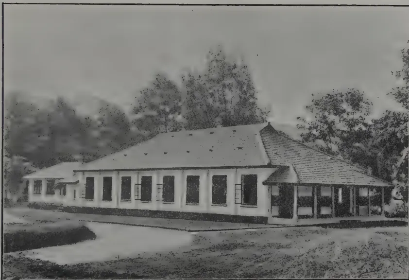
A black and white photograph of a single-story building, likely a laboratory or office, with a gabled roof and a covered porch. The building is surrounded by trees and a lawn. The photograph is framed by a thin black border.NEW ENTOMOLOGICAL LABORATORY AND INSECTARY
Department of Agriculture, Ceylon.
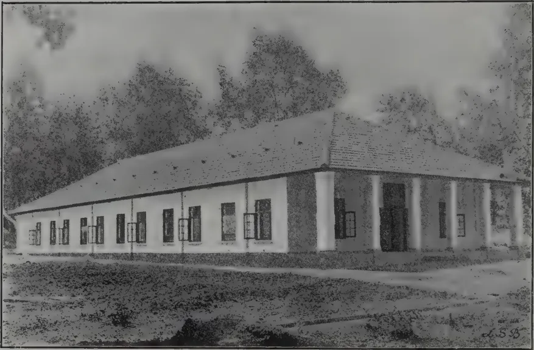
A black and white photograph of a long, single-story building with a gabled roof and a covered porch supported by columns. The building is surrounded by trees and a grassy area in the foreground. The number '53' is visible in the bottom right corner of the image.NEW MYCOLOGICAL LABORATORY
Department of Agriculture, Ceylon.
of the Department. These workers by devotion to scientific work have built up a reputation for the Ceylon Agricultural Department which is well known throughout the Empire. This has been done without proper laboratories and without adequate equipment and it is gratifying that this serious handicap has at last been removed.
In each laboratory special accommodation has been provided for students, in order to afford facilities for post-graduate training and research work in Entomology and Plant Pathology, and proposals are now under consideration with the Principal and Council of the University College as to the lines upon which such training shall take. I have, Sir, great pleasure in asking you to declare open these two laboratories.
HIS EXCELLENCY SIR WILLIAM MANNING, having expressed the pleasure which he felt at being present that day, referred to the calamity which had overwhelmed the coffee industry in Ceylon 30 or 40 years ago. This was a very bitter example of the ravages which are wrought by diseases which afflict the agricultural industries of tropical countries. The fate of King Coffee alone should be sufficient to bring home to the people of Ceylon the vast importance of taking all possible steps to investigate fully the causes which lead to the spreading of agricultural diseases. HIS EXCELLENCY referred to his experiences in other Colonies in order to impress upon his hearers the danger of allowing insidious diseases, which affect our staple industries, to obtain a foothold in the country. In Jamaica, a country in which he had recently served, a few sporadic cases of the Panama diseases of bananas made their appearance some years ago. The Panama disease of banana was rife in South America, and when it spread to Jamaica every effort was made to deal with the small outbreaks as they occurred. A determined effort had been made to control the disease but Jamaica had been unable to bring to bear upon the subject that scientific assistance which should have been secured in view of the vital importance of the industry. The disease was still present and efforts were being continued to check its spread. The banana industry was of very great importance to the economic welfare of Jamaica and this disease was another historical example which emphasized the necessity for proper provision being made to prevent diseases of agricultural crops obtaining a firm hold and causing widespread havoc. It was only by scientific investigation that it was possible to discover the means whereby such agricultural diseases as those he had described might be effectively dealt with in their early stages.
With regard to the laboratories which it was to be his pleasant duty to declare open that day he desired to emphasize that, even with these important additions to the scientific resources of the Department of Agriculture, he still did not think sufficient had been done for the Department. It was more than ever necessary that there should be a Chemical Laboratory, and whatever else was wanted ought to be provided without delay. Even from a purely material point of view there was much at stake. Many millions of British capital were invested in this island, and there were many thousands of Europeans and Ceylonese whose all depended upon the prosperity of two or three of the more important agricultural industries. It would be sheer folly, and the worst possible want of pre-vision, not to be prepared to meet any emergency which might arise to threaten one of those industries upon which the well-being of this country so obviously depended. HIS EXCELLENCY
284[NOVEMBER, 1922.assured his hearers that in him they would find one who would be always ready to press the views which he had expressed that day. The buildings which were about to be opened were essentially necessary if the Colony was to avoid risks which, in his opinion, ought never to be taken.
There was one other subject upon which he desired to speak. He wished to refer with regret to a phase—he trusted it would be ephemeral—which was at present passing over this country. He referred to the carping criticism of almost everything connected with practically every Government Department. He realised that much of this criticism was founded upon want of knowledge, and, perhaps, it was also partially due to a desire on the part of certain critics to attain some cheap reputation which, in the long run, would be bound to suffer in the light of facts. The Agricultural Department, to a large extent, had been very free from such criticism and one of the chief reasons was because the planters of this Island were, in the main, eminently reasonable and sensible men. Instead of levelling at the head of Government criticism of a purely destructive nature the planting community usually put forward criticism of a constructive kind. His EXCELLENCY regretted having had to make these remarks, but he made them with a full consciousness of what they meant.
Reverting to the laboratories to be opened and the uses to which they would be put, SIR WILLIAM said it was, as they all knew, the desire of Government to train Ceylonese to take their part in the duties of the Scientific Staff of the Department of Agriculture. There already existed in Ceylon a University College and it was desirable that, eventually, that College should offer a Degree in Agriculture. The laboratories about to be opened and the University College would afford such teaching as would enable the Ceylonese student to take his place beside his European teacher as, a skilled technologist in the Department of Agriculture.
He himself believed, and others shared the belief with him, that better times were coming for Ceylon. The depression which existed to-day in the rubber industry was likely to pass away, but there was always the danger that in these days of depression in one particular industry greater attention would be given to those industries in which a larger measure of prosperity was shown. There were, as they knew, many diseases which affected the rubber plant and these diseases, unless taken in time, and thoroughly examined might end in a disaster similar to those which had overtaken other Ceylon agricultural industries in the past. He trusted, therefore, that they would not disregard some of those important problems which faced rubber cultivators at the present moment, merely because the rubber industry was not so prosperous now as it had been in the past.
With regard to the minor industries also there were many diseases which urgently called for research. No doubt these would receive attention now that the Department of Agriculture possessed more adequate means whereby to deal with such problems.
Referring to the staff, His EXCELLENCY said that he could only repeat and commend what the Director of Agriculture had said in his remarks of the work that the staff had done in the past in incompletely equipped buildings. It must have meant a considerable amount of labour and difficulty to those
NOVEMBER, 1922.]285who were engaged in research work on agricultural matters, and they deserved all the praise given them by Mr. STOCKDALE. HIS EXCELLENCY hoped that in the new buildings they would find all the facilities necessary to proceed with their researches.
HIS EXCELLENCY congratulated the P.W.D. upon the appearance of the buildings, which were a credit to that Department.
Concluding, HIS EXCELLENCY hoped that the work done at the new laboratories would be as good as, or even better than, it had been in the past. He wished the staff all success and felt sure that they would do all that was expected of them in the future.
HIS EXCELLENCY then formally declared the laboratories open, and, passing through the main entrance followed by the gathering, he proceeded to inspect the buildings. HIS EXCELLENCY was shown round by MR. STOCKDALE, MR. A. DE COURCY CARSON, DR. J. C. HUTSON and MR. T. PETCH.
Before the Governor took his departure, the HON. MR. T. Y. WRIGHT proposed a vote of thanks to HIS EXCELLENCY and assured him of the support of the planting community in matters relating to the Department of Agriculture and to the agricultural welfare of the Island.
WILLIAM NOWELL,
Acting Director of Agriculture and Pathologist, Trinidad and Tobago.
The first demand of the practical planter when the rise of agricultural science began to attract his notice, was to have his soils and manures analysed, that he might learn what substances were deficient and how they might be replaced. The results did not come up to expectation. Though belief in the method still lingers in the minds of agriculturists, where it was implanted by what seemed the highest scientific authority, the fact cannot be gainsaid that men of science themselves have lost faith in its utility and are now something like unanimous that the only sound test of the completeness of the soil is the crop it will produce, and the only way to test a manure is to try it, which brings us back, it would appear, to very much the same place we started from. The journey however has been far from wasted, for a great deal of useful knowledge has been acquired in its course. In developing the science of an art so ancient as agriculture it is inevitable that a great deal of time should be taken up in finding reasons for practices already long established.
It is one of the objects of this lecture to show that in the field of plant pathology there is also a tendency, at any rate in the school of opinion which I represent, to arrest the agriculturist in his pursuit of some still more expert who is to cure him of his ills and to bring him back to purely agricultural measures as a remedy.
You are all by now familiar with the fact that disease in plants is for the most part caused, in the immediate sense of that word, by infestation
*Read at a meeting of the Agricultural Society of Trinidad and Tobago on 11th May, 1922.
286[NOVEMBER, 1922.with some insect, mite, worm, fungus or bacterium which lives at the expense of the host, and in the case of a cultivated plant, affects its productiveness in one way or another. In dealing with the special subject of this lecture, as it happens, I shall need to refer, with one not very wide exception, only to diseases of fungus origin.
A fungus is itself a plant, reproduced by dust-like spores which serve the purpose of seeds. The fungi which grow on the different organs of the cacao tree are in all essentials similar to the mould which grow on old bread or damp boots, save only that they have the power of attacking living instead of being confined to non-living material. As a convenient expression of this last-mentioned fact, they are called parasites.
With the coming of the first resident mycologist to the British West Indies and the interest in plant diseases which then developed, a good deal of attention was given to the affection of cacao known under the general term dieback. In this connection the name of the fungus Diplodia may almost be said to have become a household word and it may have occurred to some of those present to wonder what has become of it, since now a reference to it is scarcely ever made. As with the root disease of sugarcane and its attendant fungus Marasmius it is now pretty generally accepted that dieback of cacao is little more than a convenient term to describe the result of defects in the conditions under which the tree is grown.
The cacao tree is by its nature suited to humid conditions, to a considerable depth of soil, and a fairly abundant supply of humus. For this reason a cacao field is usually so managed as to approximate to forest conditions in respect of atmospheric humidity, shading of the ground, and supply of organic material. This is usually accomplished by inter-planting with shade trees, or where these are dispensed with, by taking advantage of natural shelter or by growing windbreaks, by close planting and by the use of mulch and pen manure. A fairly high and regular rainfall is required to maintain the necessary humidity and where it is inclined to be deficient the means of protection referred to require to be the more perfect. On light well drained soil more protection is required than on soils which are heavy and retentive.
When the conditions fall short of any of the requirements outlined, the effect is to induce in the tree a more or less severe manifestation of the condition known as dieback.
The lightest form is shown only in the diminished size and, 'hardening' of the leaves. Next comes the condition in which the outstanding twigs lose their leaves and dry off, new foliage being produced later from short shoots which develop further back. Trees in this state are familiar objects in exposed positions and present a more or less dense head of foliage with numerous dead twigs projecting above it. In yet more severe cases the dying back extends to the larger branches and may gradually involve them all. At every stage of this retrogression any temporary improvement in the conditions stops the process and new shoots are sent out behind the margin of injury, but with the recurrence of unfavourable conditions the process may continue until the tree is wholly dead. Such failing trees and even trees in which the condition is as yet only incipient are particularly liable to severe attacks of the cacao thrips which contribute materially to their decline.
NOVEMBER, 1922.]287In the progress of the affection as thus described the Diplodia fungus has been considered to have an important share. While it is almost universally present infesting the sickly twigs and branches it is safe to say that dieback of the type under consideration would take place if the fungus were entirely absent. The most that I am disposed to allow is that the effect of infestation may be to extend the range of the injury and give to it a progressive nature in weakly resisting twigs or branches which might otherwise remain for the time being alive and have a chance to recover if conditions improved.
It will be obvious from this account that the remedies for dieback are entirely agricultural. It is first of all necessary to form a judgment as to the defects in the conditions which are responsible in any particular case. On heavy soils the adequacy of drainage and aeration should be questioned. On light soils especially, the conditions as to exposure both lateral and vertical should be considered in relation to the amount of rainfall received, and the retention of sufficient moisture in the soil during periods of dry weather. Deficiencies of this kind should be met by the provision of quick growing screens of Hibiscus or some other hedge plant, by the provision of temporary shade, and above all, by the addition of pen manure or heavy vegetable mulch to the soil. A great deal of dieback, especially in peasant holdings, is directly due to neglect of reasonable measures of cultivation and manuring. The same is true of some neglected estates, while another cause is to be found in the injudicious removal of shade without compensation in the shape of increased attention to the soil. Cacao trees are not seldom planted where the soil is too shallow to maintain them, and the sub-soil too dense for root penetration, in which case the trees reach in a few years the limits of their development and begin to fail. Where a group of trees in good soil show symptoms resembling dieback search should be made for the evidences of Rosellinia root disease.
Reference may be made at this point to the affection which figures in West Indian literature as brown or Diplodia pod rot. It is not clear that most of the injury to pods at one time ascribed to Diplodia was really due to the Phytophthora or black rot presently to be dealt with. Diplodia has but weak powers of parasitism and while it is able to destroy pods to which it has gained access, its entry is only possible in the case of pods which are injured, much overripe, or which have been picked for some time and left to lie.
An affection which is somewhat like dieback in being related to exposure, but is due to a definite parasite, is that known as algal disease. The causative organism is not a fungus, but closely resembles one in habit. It is abundant in the West Indies on the leaves of many plants, notably mango and avocado, where it does no visible harm. Under certain circumstances it attacks the small branches of susceptible trees, and has long been troublesome on tea in India.
The first outward sign of the disease on cacao is the occurrence during the dry season, on the twigs of the previous season's growth, of dark purplish or black spots ranging up to half an inch in diameter. With the coming of the rains these take on a rusty-red colour due to the development of fruiting bodies in the form of minute globular heads on fine stalks.
288[NOVEMBER, 1922.Infection of the twigs appears to take place from spores germinating in the surface cracks which develop during the formation of the first layers of bark. The alga pushes in among the tissues underlying the bark, which are sloughed away and give the twig a ragged appearance. If growth is not sufficiently vigorous to throw off the infection by this means the twig is sooner or later ringed and dries off.
The disease is frequent on young trees not thoroughly established, especially in rather poor soils or exposed positions. With the development of adequate shelter and the improvement of the soil by shade or manuring the affection disappears. Meanwhile some immediate relief may be obtained by coating the twigs with Bordeaux mixture during the dry season.
A minor disease which arises under conditions of an opposite type, namely too great humidity, is thread blight, in which the under-sides of the leaves are covered with white branching fungus strands or a more uniform buff coloured layer. This growth is connected with thicker strands running along the twigs and the characteristic effect of the disease is the production of dead leaves which remain hanging by the attachment so formed. The affection may be suppressed by reducing humidity, a measure which will be discussed later.
Although the existence of Rosellinia root disease has only recently been recognised in the island, there is every reason to believe that it has existed from the time of the first clearings, and no doubt it was more abundant when the richer forest lands now in cacao were first planted. It is a slow-working disease and at the present time exists on a good many estates and takes its toll of trees without causing alarm or even attracting much attention. It is caused by a fungus which grows in damp sheltered situations on woody and other vegetable matter in or on the soil. In new clearings it spreads to living trees from certain kinds of forest stumps. In older cultivations it usually occurs in situations where forest material is deposited by flooded streams. It is common in the valleys of the Northern Range; of its distribution in other parts of the island not much is known as yet, but I have seen it in the Montserrat district and as far away as Guayaguayare.
The typical effect of this disease is to kill out trees in a group slowly extending on its margin. When as frequently occurs a Hibiscus hedge is affected a gap is formed which continues to extend in both directions. The cacao trees attacked may dry off slowly from the top, without attempting to renew by chupons as is the rule in dieback disease, or they may be ringed at the collar and die suddenly, often after setting an abnormal number of pods.
The fungus spreads through shaded soil rich in organic matter like a slowly smouldering fire, attacking any plants that come in its way. If the surface is too dry or the soil too poor for this method, extension may still take place from tree to tree along the roots. Avocado and breadfruit trees are particularly susceptible, and in other islands where the disease has been studied often form centres from which the cacao trees are attacked.
The remedial measures to be taken for Rosellinia disease are suggested by its nature as described. Extension through the soil should be stopped by chessboard trenching carried below the level of the lateral roots. Diseased trees should be promptly dug out with as many of their roots as possible and thoroughly burnt.
NOVEMBER, 1922.]289The surface of the infested soil should be kept clean and exposed as much as possible, and time should be allowed for this to take effect before supplies are planted. With these precautions conscientiously carried out there is little to be feared from root disease, but careless or half-hearted work is of no service at all.
By far the most important fungus to the cacao industry of Trinidad is the cottony white mould known to science as Phytophthora Faberi, which gives rise to pod rot or black cacao, and to canker of the stems and branches. Apparently these diseases occur in all cacao-growing countries, though there are very considerable differences in their incidence. In the Western Tropics and in Ceylon both canker and pod-rot are prevalent but pod-rot is the more prominent trouble, while in Java canker is a more serious disease and pod-rot relatively uncommon. The loss of the ripe pods during the rainy season in Trinidad was estimated by Mr. J. B. RORER, the late Mycologist to the Board of Agriculture as varying from 30 to 60 per cent. while the increased yield obtained by spraying in RORER's experiments showed that heavy losses of young pods also take place.
There is no question about the powers of parasitism of Phytophthora. It is a close relation of the potato blight fungus, which had a marked effect upon the history of the world. Like that fungus it is closely dependent upon humidity and given that condition it can attack pods of any age without need of previous injury, and largely by way of infected pods gain access to the stem and give rise to canker. The appearance of pod-rot is so familiar that I need not stay to describe it.
In dealing with a disease such as this the natural line of attack is upon the fungus which produces it. In the case of the related potato disease spraying with Bordeaux mixture has been more successful and has become more a matter of regular practice than with any other disease of a cultivated plant. In Trinidad RORER devoted a great deal of time and energy to the proof that spraying cacao is a practical and paying proposition. His results were presented in lectures and publications to the planters of the Colony and so far as I know his figures have not been questioned. Yet this method of control has never been generally adopted and is at the present time in almost total abeyance.
I do not propose to make this situation the occasion for reproach. In countries with a highly developed agriculture and especially where mechanical aids are so readily adopted as they are in the United States of America, the practice of spraying fruit trees at frequent intervals has become a matter of routine. Agriculture in Trinidad, especially on cacao estates, is not highly developed, and in the adoption of mechanical appliances there are difficulties in the shape of untrained labour, in the absence of repair facilities, in poor means of access to cultivations, and not least, in the rapid deterioration of rubber hose. Spraying to be of value must be systematic, frequent, and indefinitely repeated. Bordeaux mixture is strictly preventive of infection and not a cure.
I see no present prospect of the adoption of spraying as a regular practice on Trinidad cacao estates. As a matter of fact we do not spray for pod-rot at River Estate and I have not so far found it advisable to recommend it.
290[NOVEMBER, 1922.While spraying is the most direct and the most immediately applicable measure there are others which go nearer to the root of the matter and have, in view of their application to Trinidad, the great advantage of depending directly upon agricultural skill and not involving either the practice of a new art or the provision of new machinery.
The fungus as I have said belongs to a group that is particularly dependent on humidity. Its commonest method of reproduction is one in which its spores are liberated into and swim in a film of water. It is true that it is able to modify this procedure and produce conidia that germinate in the more ordinary way, but it is not by any means adapted for activity under even moderately dry conditions. This is its weak side and it can be attacked on it. The reason it has developed as a pest of cacao is because the conditions maintained in a cacao cultivation are, during the wet season at any rate, such as suit its requirements. Its control by cultural measures resolves itself into the question how far we may modify these conditions in the direction of dryness without affecting the general health of the tree. The degree of humidity in a cacao field is governed by the weather, by the situation as regards the contour of the ground and the nearness of hills and forests, by the condition of the soil in respect to natural and artificial drainage, by the extent of pruning and by the amount of shade provided. Three of these factors are under our control, drainage, pruning, and shade. There ought to be no need, though I cannot say there is none, to insist upon the importance of drainage, as much on general grounds as for the special purpose we are considering. But it is mainly by means of shade trees, and to a lesser degree by pruning, that the conditions considered suitable to cacao are provided. If we think the matter out we can see that the growing of immortelles though it may be in many cases the best means available is a somewhat clumsy expedient. If shade trees are the right size when the field, let us say, is fifteen years old, they have grown too big long before it is thirty. But their reduction in size or number is an awkward business, entailing very considerable risk of damage to the trees beneath them. It is easier to let them alone and so we get the condition which is so common of shade trees far more numerous than is desirable for their size or far larger than is necessary for their number. It is in such fields that pod-rot, other things being equal, is most severely prevalent. It is interesting to know on the authority of a Ceylon planter who recently paid us a visit how in that island the difficulty just referred to is avoided. They replace their shade trees, a different species of immortelle from ours, with very large cuttings every ten years or so. It is notable that in Grenada, where most fields are without shade, pod-rot is very much less prevalent than in Trinidad.
Where the soil is reasonably good the policy I recommend is to reduce immortelles to a minimum where they cannot be dispensed with altogether, to supply their function by means of marginal windbreaks where needed and by the use of mulch and pen manure in the soil, to prune the cacao trees themselves where necessary for the free circulation of air, and to see that drainage is thoroughly adequate. These things being done it can be guaranteed that pod-rot will be seldom troublesome.
I have left myself little time to discuss the advisability of sanitary measures in the removal and disposal of diseased pods. I would only remind
NOVEMBER, 1922.]291you of the general experience that pod-rot and canker are highly prevalent in the neighbourhood of the breaking places, where the diseased pods are collected and usually left to lie until the sound pickings have been dealt with.
With the reduction of pod-rot the main source of canker infections is removed. The treatment of canker is I think well understood and I will only say that I do not favour deep excision, but the removal of the outer layer of bark so that the patch may dry out, and I do not recommend dressings which will hinder this drying.
In conclusion it will be seen that the fungus diseases of cacao fall into two classes:—
(1) Debility diseases which depend on a lack of vigour in the trees.
(2) Diseases which can attack trees without regard to vigour, but which can only develop when the external conditions favour the fungus by which they are caused.
Both types can be met by purely agricultural methods, and once their nature has been established it is rather to the cacao agronomist than to the pathologist that the grower should look for advice.—PROCEEDINGS OF THE AGRIC. SOC. OF TRINIDAD AND TOBAGO, VOL. XXII, PART 5.
D. T. FULLAWAY.
I do not know what MR. WHITE had in mind when he injected the word "problem" into the title of my subject, but I am glad he did so, for it gives me latitude to express a conviction which I have had for some time but did not know anyone shared with me, namely, that the insects are going to prove a problem if measures are not taken to restrain them. I have hitherto considered the pine-apple growers more fortunate than other crop producers in regard to losses occasioned by insects, for while the mealybug and the scale and a few minor pests have always had to be contended with, the damage which they have done in the past has been on the whole insignificant. But the alarming out-break of the fruit beetle last spring and the red spider scare this fall, coupled with the statement of MR. HORNER in regard to ants, lead me to believe that, in the rapid expansion of the industry, too little attention has been paid to the insects, and their capacity for harm is not realized. As compared with other crops, however, I think it can still be maintained that the pine-apple crop enjoys a remarkable freedom from injury by insects, and nothing of a distressing or calamitous nature should be anticipated from my previous remarks.
As most of you, I presume, are aware, nearly all of our injurious insects are non-indigenous species, which have been brought to our shores in commercial shipments or along with plants introduced as stock for propagation; and among them are a host of species which are indiscriminate in their feeding habits. Cutworms, wireworms, grasshoppers, fruit flies and the Japanese beetle are examples. Many of our crops suffer severely from the attacks of insects of this sort. The pine-apple plant, however, is never, or scarcely ever, touched by them. The reason for this, in my opinion, is found
292[NOVEMBER, 1922.in the nature of the plant. I believe it is unattractive to them. The insects which we find on the pine-apple—such as the mealy-bug, scale, and red spider—are considered to be closely associated with the plant. They are found on the pine-apple in other countries and have evidently been brought here on plants introduced for propagation before there was any industry and (in the case of the two first, anyway) before we had a plant quarantine. There are also other insects, of much greater import, attached to the pine-apple plant in other lands, the beetle-borer of the West Indies, and the fruit-fly of the South Seas, which has now reached as far north as Fiji, for example, but the likelihood of their reaching these Islands is now very remote, I judge, in view of the close and careful scrutiny given to plants which are brought into the Islands, and the probability that we shall soon have in force a legal prohibition on the importation of any more pine-apple plants. If my estimation of the situation is correct, then it appears that the chief aim and purpose of the pine-apple growers should be to keep the present insect population of their fields at a low level, and the question arises, can it be done under the stress of a rapid expansion, accompanied as usual by a striving for maximum production with minimum effort and expense? I will develop this point more, later.
In the meantime let me tell as briefly as possible what is known of the nature and habits of our present pine-apple pests.
I will discuss the mealy-bug first. This insect, while invariably found on the pine-apple and known as a pine-apple pest for many decades, is not confined strictly to the pine-apple. It is also found on sugar-cane, bananas, roots of grasses, and some other plants. You are probably all familiar with this insect, for it has a characteristic appearance and is recognizable at once. It is a small, louse-like creature with a white waxy covering, secreted from glands lying under the derm and poured out in beautifully arranged filaments. It is most commonly found in clusters at the base of the fruit or leaves where the adults congregate to produce young. The young come from eggs which are hatched within the body of the female. The progeny of one individual is commonly from fifty to one hundred. For a time they rest beneath the body of the mother, but gradually they move out and their naked bodies soon develop a waxy covering. The younger individuals are rather flat. They are active also, and have a tendency to disperse over the plant, so that they are often found scattered through the crown or over the outer portion of the leaves. They are sometimes found also on the stem and roots. The insect moults its skin a number of times during its development to accommodate its enlarging body, but the actual number of moults has not yet been accurately determined. Growth proceeds slowly. Several months are consumed in reaching the adult stage, so that only a few generations can occur during the year. Mature individuals have rather swollen bodies, and their tendency is to hide in obscure parts of the plant, particularly where the epidermis is very thin. This habit is responsible for their being more destructive than the scale, as I shall presently explain. Males are sometimes seen. Their cocoons are elongate and loosely constructed of white waxy filaments. Their occurrence, however, is very uncommon, and I believe the insect reproduces itself for the most part asexually. While there are many mealy-bug enemies, they are not seen to any great extent on the pine-apple plant, and the colonies of the
NOVEMBER, 1922.]293mealy-bug found in sheltered spots usually appear to be in a flourishing condition, never mussed up as if they had been disturbed by these enemies. Occasionally the mealybug-devouring Coccinellid or ladybird beetle, Cryptolæmus montrouzieri and Scymnus bipunctatus are observed on the plants searching for food, and I have more than once seen their larvæ, which are also predaceous upon mealy-bugs, on heavily infested fruits; but it is not at all a common occurrence.
The scale, I believe, is confined strictly to the pine-apple plant, and has been known for nearly a century and a half. It was described first in 1778. While a near relative of the mealy-bug, it is totally dissimilar in appearance. This is owing to the peculiar character of its waxy covering. Aside from the fact that the body of the real insect is vastly smaller, the secretion does not remain fluffy, but hardens and compacts, assuming at the same time an almost flat surface and a circular outline. The scale is found most commonly on the leaves of the pine-apple plant. Its young come from eggs, which are hatched beneath the scale. They are yellowish white, oval and a fourth of a millimeter long. The eggs of one female number commonly from fifty to seventy-five and hatch after five or six days from date of extrusion. The newly hatched louse is very small, flat, oval, orange-yellow coloured and bare of covering, possessing functional legs so that it is capable of moving off to find a suitable location for its future development. When this is found, however, it becomes sedentary, developing a tough scale over its soft and tender body. Thenceforth its legs are functionless (disappearing at the first moult) and its powers of locomotion are restricted. The first scale is very small and consists only of the thickened cuticle and some fluffy wax curling upward from the margin. Growth proceeds very slowly and is outwardly manifested by the gradual enlargement of the scale. The skin is moulted twice (in the case of the female insect) to accommodate the expanding body, and these exuviae are incorporated in the waxy material of the scale appearing at the front end. The first moult occurs in about 15 days, the second 17 days later; the third instar is the longest, occupying usually 25 to 30 days. Thus four generations can occur in a twelve month. The males of this species are quite numerous and are distinguishable after the first moult, when this form enters a pupal state, the body becoming attenuate to some extent and the waxy portion of the test covering it, assuming the same elongate form with three prominent longitudinal ridges. After twenty-five days the pupa transforms into the adult male insect, which emerges from the test by a longitudinal rent in its side. In addition to legs and antennæ this form possesses functional wings and is capable of flying. Its powers of flight are very feeble, however, and it is oftenest seen crawling over the plant, seeking the female, in order to mate with them and give fertility to their eggs.
The scale insect is often destroyed by internal parasites, particularly by species of Aphelinus and by Aspidioliphagus citrinus, and occasionally some one of the scale-feeding Coccinellid or ladybird beetles is seen working upon infested plants.
Now, I have said that the scale and the mealy-bugs are closely related insects. They belong to the same family, namely, Fam. Coccidæ (Hemiptera, or true bugs). Notwithstanding the many superficial differences which
294[NOVEMBER, 1922.distinguish them, their structure is essentially similar. One of the most striking features of this structural similarity, shared also by the leaf-hoppers and the aphids, two other families of plant-lice common in Hawaii, is the character of the mouth-parts; and as this determines the manner in which the insect gains its sustenance from the plant, and also has an important bearing on the means of controlling insects of this type, it is perhaps worth while at this point to give some consideration to the structure of the mouth. The type of mouth-parts possessed by the greater number of injurious insects (beetle and caterpillars, for example) is what is known as "cutting and biting mouth-parts," the main feature of which is the apposed heavy-knife-edged jaws which tear and rend the plant tissue to fragments, so that they can be gathered together by the remaining parts, ground and swallowed. The plant where the insect is feeding is entirely consumed. Not so, however, with the plant louse. Its mouth-parts, while homologous throughout, are different both in structure and purpose. Instead of the heavy lamellate jaws, there are apposed long slender stylets or filamentous rods with grooved or channelled inner surfaces forming a piercing and sucking organs, with the pharyngeal pump behind them, and instead of organized tissue unorganized tissue is consumed. That is to say, the fluid contents of the cells, referred to loosely as the juice of the plant, is sucked out of it, and the solid matter suspended in it is strained out in the alimentary tract of the louse and constitutes its food. Inasmuch as they take only a solution of food, obviously large quantities of the juice of the plant must be absorbed to meet the requirements of their growing bodies, but unless the infestation of these insects is very severe and they are present in extremely large numbers, their feeding does not prove much of a drain on a succulent plant like the pine-apple—on tender leaves, yes; but on a hardy, succulent plant they make little impression except when they are numerous. The chief injury resides in the puncture of the epidermic of the plant, for this furnishes an entrance for the spores of pathogenic organisms, which often invade the tissues and quickly destroy them. Unfortunately the pine-apple is very susceptible to some rapidly-developing rots, which thus gain access to the plant, so it should be apparent that it is very essential that these insects be discouraged from multiplying on the plant just as much as possible.
Another feature of the life of these insects which should not be overlooked is their close association with ants. This and several other related families of insects are peculiar in the respect that their representatives uniformly excrete a sugary fluid known as honey-dew, which many ants find good provender. The ants have become so habituated to this food that they tend the insects in much the same way as man does his domestic animals, and it is often the case that in waging war on the scale insects, et cetera, you immediately become involved with the ants. It is a well authenticated fact that the ants protect their benefactors from the attacks of parasites, and in the case of the mealy-bug of the pine-apple, they minister to their comfort still further by providing the semi-obscurity which this species desires by packing up pellets of soil to roof them over. You can see this at any time on a pine-apple fruit. And this feature of their association is responsible for greater damage to fruit than any other single cause. The covering of dirt, by shutting off the evaporative influence of the surrounding air, causes moisture to collect on the surface of the fruit, which softens the skin, causes it to break and thus
NOVEMBER, 1922.]295induces rot. They also habitually run along the roots and are responsible for some of the retardation of growth which results from root destruction. Ant infestation is more noticeable in summer months than in winter, as the cold, wet weather and flooding which occurs during the winter months undoubtedly weaken ant colonies, and this decimation is certainly reflected in the reduction of mealy-bug infestation during the winter months. Ant infestation increases with the age of the fields and when the fields become so overgrown that cultivation is no longer practical, they make the mealy-bug control problem extremely difficult.
Now, I believe I have shown that these two enemies of the pine-apple are capable of causing considerable injury to the plants, particularly the fruits, and it seems to me a natural corollary that they should be prevented from accomplishing this result if possible. As the insects suck their food from the cells of the plant, naturally they cannot be reached by a stomach poison like arsenic. It is therefore necessary to use other means of killing them, either poisonous gases or vapors, caustics, asphyxiation by a mechanical stoppage of their breathing apparatus or washing them off their hosts. But here the question arises. To what extent does this injury go; and, provided it can be stopped, will the effort required to effect the purpose pay? That is to say, does the damage expressed in loss of fruit amount to as much as it would be necessary to expend in labour and materials to prevent it? That is entirely a practical question which can only be answered after experimentation. We are trying to arrive at some conclusion in this regard at the present time. My only excuse for not having complete data already is that hitherto little interest has been displayed in the matter. I presume other factors in the production of fruit have proved of greater and more vital importance to the industry, and have crowded out a consideration of this one. I know that for some years it was a common practice to use tobacco dust to discourage the mealy-bug. It has been conceded that the effect was salutary. But the practice was discontinued, probably because other field operations absorbed all the labour and material which could be applied. I have recently experimented on a large scale with three different contact insecticides applicable to the mealy-bug and scale, namely, nicotine, mineral oil and sulphur. The nicotine was applied as tobacco dust, tobacco decoction, water diluted nicotine sulphate and nicotine sulphate with sulphur and an inert dust. The mineral oils used were kerosene and distillate emulsified with ivory soap and whale-oil soap. The sulphur was applied as a dust and as an aqueous liquid in combination with lime. All liquid applications were sprayed on to the plants with the aid of a knapsack spray pump and through a Vernmore nozzle. Dusts were applied with a patent dusting machine, except in the case of tobacco dust, where it was sometimes applied by hand. Each of these applications has its individual merits, some their detractions, and none of them cleared out the insects entirely. I believe the tobacco decoction with soap gave the most satisfactory results, and I believe it could be applied along with the iron sulphate given to the plants with as good results and more cheaply than when each would be applied separately. The aim was to kill the insects without burning the plant, and therefore it was necessary to establish a minimum and maximum limit upon the concentration of the liquid applications. With the dusts it was necessary to limit the quantity placed in the heart of the plant, particularly during cold, wet weather, when its vitality is weakened by the loss of roots, in order to avoid setting up roots at this point. It was easily demonstrated that the immature forms could be killed with any one of the insecticides used, but mature individuals often proved resistant; and it is too obvious to be denied that many individuals escape the action of the insecticide at each application. The treatment, therefore, to be effective, must be continued throughout the growth of the plant, at regular intervals,
296[NOVEMBER, 1922]which should be closer during the summer months than through the winter, because of the greater prevalence of the insects during the summer months when they are favoured by meteorological conditions. The effect, I believe, would be to keep the insects constantly at a low level and prevent in a measure the baneful influence of an accumulation of individuals so evident in old fields. I am also strongly of the opinion that a search for parasites and predators of these two insects in the regions where they are supposed to be indigenous would yield results of great benefit to the industry, and if I am supported by the pine-apple interests I intend to urge the Government to undertake this much-needed work. We are supporting a man in Mexico at the present time, and if he has sufficient time at his disposal and funds are available when he has finished the work at present in hand, he will proceed to the Gulf Coast and investigate this matter, anyway.
The pine-apple mite or red spider is apparently another strict parasite. I do not know of its being found on any other plant than the pine-apple. While its presence in the Islands was reported as far back as 1908, it is only in the last planting season that its injuries have come to our notice. Red spiders really do not come within the scope of this treatise, as they are not insects, but because it usually falls to the lot of the economic entomologist to deal with them, and particularly on account of their novelty here in connection with pine-apples, and their great economic importance, I have decided to include them in the discussion. Their real affinity, however, is with the true spiders, scorpions, ticks, etc. From insects they are distinguished by the possession of four pairs of legs (in the adult) and only two divisions to the body. Insects never have more than three pairs of legs, and the trunk of the body is always divided into three parts.
The young of red spiders arise from eggs, which are laid, in the case of the pine-apple red spider, on the surface of the leaf. The mouth-parts are adapted for biting. The pine-apple mite was first discovered in Florida, in 1899. It is known to have come here on plants from Florida on several occasions in recent years, when the plants were destroyed; probably the first to reach the Islands also came in this way. This furnishes an excellent example of the value of strict quarantine, and also shows the folly of introducing plants from abroad except under the most careful supervision to be exercised by those conversant with the risks so taken. The infestation which I have seen have been usually at the base of the leaves, where they are most completely imbricated and tightly clasped to the stem. The mites seem to flourish best in these situations usually occurring in Colonies in which are found all stages—eggs, larvæ and adults. While they are almost microscopic in size, they are readily discerned, or at least their presence is indicated by the reddish coloration given to the blanched tender tissue by their scarifying trophi. As in the case of the mealy-bug and scale, the most potent effect of their injuries is the entrance of spores of pathogenic organisms through the wounds which they inflict. They are very much protected in the situations in which they are found from dusts and liquid applications, which would undoubtedly be effective if they could reach their object, and are known to be beneficial where the mites are so numerous that they have to spread to the more exposed surfaces of the leaves. Sulphur appears to be the most effective lethal agent, applied either as a fine dust or in combination with lime as liquid lime-sulphur. It was supposed that however well mites might conceal themselves, they could be reached by confined poisonous gases, but this method, which appeared to be particularly well adapted to the treatment of slips, suckers and tops intended for planting, has proved unreliable. Whether mites are peculiarly resistant to asphyxiation, or whether the gases fail to penetrate during their maximum concentration, has not been determined, but so far the results of fumigation have been disappointing, as
NOVEMBER, 1922.]297individuals are not killed even when the concentration of the gas is pushed beyond the limit of safety to the plants.
Since the discovery of the Florida species, Stigmaus floridanus two other species of mites have been found commonly on pine-apples, one a species of Tarsonemus, probably the T. anasae, described by TRYON, in Queensland, Australia, and mentioned as injurious there; the other a species of Tyroglyphus, a fungus-eating acarid, a congener of which is also mentioned by TRYON in reporting on the mite-infestation of Queensland pine-apple plants.
While I am referring to these incidental infestation, I may also speak of several other insects which occasionally do slight damage to the plant. My attention has repeatedly been called to a leaf injury which I have traced to a very common grasshopper here. The injury is so inconsequential, however, that it is hardly worth mentioning. I have also recently seen an injury to the hearts of slips and suckers caused by the larvæ of a very common ground beetle. And as an instance of how consternating and baleful the undesired presence of a mere scavenger can be, I need only recall the experience of previous packing seasons, particularly the last, with the fruit beetle. Undoubtedly this insect will yield to the measures which are generally used for the suppression of all filth feeders, or scavengers, namely, the elimination of the rotting material in which they develop. And this topic leads me naturally to my last consideration, the accumulation of insect life under certain favourable conditions.
As one passes through a pine-apple section it is impossible not to notice the sharp contrast between newly planted and old rattoon fields. I wish to impress on you that a closer inspection reveals a contrast just as vivid in the state of the insect population at the beginning and end of the crop. From a meagre source, the infestation grows larger and larger, and by the time it becomes necessary to replant on account of the diminution in size of the fruit and overgrown condition of the field, the insect colonies are beginning to have an effect on the growth of the plant. They have accumulated to such an extent that further accumulation would mean its death. Little attention is paid to the matter, however, because the fields are about to be abandoned. I believe these fields have furnished most of the insect troubles of the past year, and represent a condition which challenges the grower's ability to maintain a low level of insect life throughout the fields. I am not urging the elimination of the third or any other rattoon crop, but I do think if the troubles of the past year are to be avoided in the future, corrective measures should be taken and their application apply to the crop throughout its growth, so that the cumulation of which I have spoken could not occur.—HAWAIIAN FORESTER AND AGRICULTURIST, VOL. XXIX, No. 1.
One of the oldest and most generally used methods of controlling cutworms, according to the SOUTH AFRICAN JOURNAL OF THE DEPARTMENT OF AGRICULTURE, is the broadcasting on the land of poisoned bait made by poisoning wheat bran, cut-up green stuff, or other similar substance, with arsenic, and adding sugar, treacle, salt, chopped citrus fruit, or other things supposed to attract the worms. Very little truly scientific work has been done to determine whether cutworms actually respond to these supposedly attractive substances. Incomplete experiments at Cedera, Natal, to determine the reaction to odour of various cutworms and army worms indicate that the sense of smell is very poorly developed in these larvæ. Starved cutworms, for instance, can apparently detect the odour of their crushed food plant only when it is but a few inches away from them. The discovery of a bait which will attract cutworms from other available food does not appear very hopeful, although work with this object in view has not been abandoned.—
AGRIC. GAZ., N.S.W., VOL. XXXIII, PART 6.
298[NOVEMBER, 1922.FREDERICK LEWIS,
Railway Extension Department, Ceylon.
MR. LUSHINGTON'S Report aroused considerable interest in this large Colonial asset. It is not however very evident that the public, as a whole really knows what the value that asset is, either directly, or potentially. This may be due to an imperfect knowledge of the different species of woods that we have in this Island, or to a good deal of indifference. Probably to both, because, Ceylon has shared, in common with many other countries, that ignorance and indifference that has led, not only to a neglect of the forests themselves, but to a complete want of consideration of how they should be conserved. Hence it follows that, as a rule, Forest Administration is the last-born of Government Departments and springs into life often too late :—
Before we can form the smallest notion of the problem of Forestry, in such a country as this, it is essential that we should first glance at its early occupation. Ceylon, as we know, has been invaded—if we may apply that term—more than once. We know nothing of the ideas about Forestry that these early “invaders” possessed, and certainly we have no evidence to show that they preserved the kindly fruits of the earth, so that in due time they might enjoy them.
We may safely assume that when Anuradhapura was in the building, no special regard was paid to the preservation of any valuable species, or that Forest operations were in any way under control.
During the Portuguese period, we can fairly assume that, as their interests were of the “get-rich-quick” order, not the smallest attention was paid to Forest Development, but rather the contrary.
The Dutch, on the other hand, had some regard for some of the valuable fruit trees, and they undoubtedly fostered their preservation and the cultivation, sporadically, of teak. But their efforts do not appear to have materially improved matters beyond establishing a systematic cultivation of Cinnamon, when it became evident that the supply of that valuable spice was becoming yearly more difficult to procure.
They certainly did not make plantations of calamander, which they treated as a special article of value, and as a requisite.
The evidence is not forthcoming that the Kandyan Monarchs protected their forests, or possibly the wholesale destruction of woodland for Chenia cultivation would not have gained such a footing in Ceylon, as it has done.
In such circumstances as these, it is easily conceivable that much of our primeval Forests were not only depleted of valuable species, but whole areas were destroyed beyond all hope of restoration.
NOVEMBER, 1922.]299Added to the foregoing considerations, we must view the conditions under which Forests grow, in such a country as Ceylon. We find that the rainfall is very varied, as from a comparatively few inches per annum, it rises, in many places, to extraordinarily high figures. That variation alone is an important factor in the distribution of species, density and volume of timber to the acre. But added to this is the altitudinal effect on many forms of Forest growth for we find that our Hill Forests are distinctly different to the forests of the plains. We have also large extents of land that we class as "Patana Country," of which Uva is a striking example.
We have further to consider that most important factor that dominates all forest operations, namely, the density of any given species, or in other words, the abundance in any one locality of trees of the same kind. Unfortunately for Ceylon, we have no such thing, in any appreciable extent, as "Pure Forest." Even our gregarious species confine themselves to limited areas, with but very few exceptions. This preponderating difficulty is probably unknown to the average man, and without its being explained to him, he is hardly likely to appreciate it.
By "Pure Forest," we mean a Forest all of one dominating species. The Pine Forests of Europe and America are examples of this class.
Where a Forest is composed of many different species, as in Ceylon, we are confronted with the problem of how such forests can best be exploited, without risk of extermination. Let us assume the case of a block of Forest, say of 1,000 acres in extent that has within it 25 distinct species, indiscriminately growing. To assume that it would be safe to say that each species represents 40 acres is obviously absurd. Each of these kinds will have its own rate of growth, by which it follows that if the whole of this 1,000 acres is to be worked, the felling of the individual trees must be regulated—if continued exploitation is determined—by the equation of growth of each particular kind of tree. This, at the start therefore, presents a very complex proposition as to how best to "work" this area, without exterminating the species found within it. To simplify the illustration, let us assume that species A. takes 15 years to reach exploitable maturity, and species Z. takes 400 years: what then must be the best rotational method of working? Clearly we must know how many trees of each kind are involved in areas to be operated on, and equally we must know how long each species takes to reach its useable age. A "working plan" therefore, to meet these varying conditions, must be elaborated with remarkable care, if preservation is to be regarded. A moment's consideration will show that the rigid application of a scientifically correct working plan, applied to an area constituted in the manner here outlined, would involve very limited annual operations, or alternatively, operations conducted at distant intervals, with its concomitant disadvantages of irregular supply.
To secure a regular supply, therefore, a very large area must be operated upon, but the larger the area to be worked, then increasingly there must be a corresponding increase in means of communication, natural or artificial, as the case may be.
To this must be added, Protection.
A popular idea is current that our Forests are full of valuable species, but if a careful analysis is made of those kinds that are of real utility—other than fuel—it will be found that this popular notion is a fallacy. Our really valuable species are not many, and vastly disproportionate to the gross total of species that abound here. We have only to look at any house in the country, and we will find that, for structural purposes, but few kinds of woods have been adopted. We may be shocked to see that a great deal of the building material has been imported, and we may deplore that fact.
300[NOVEMBER, 1922.But the reason is not far to seek, if we examine the situation carefully, for we cannot get away from the fact that if it "pays better" to import, import we will.
Perhaps out of the most common woods in domestic use, is the unsurpassed Jak; but jak is not a truly Forest tree. Under certain conditions, and in certain parts of the country, jak trees may be found in Forest, but broadly speaking it is a domesticated plant and thrives excellently under cultivation. From that source, that is to say, from private gardens, the great mass of our jakwood, in all its forms, is derived and possibly there could be no more valuable asset to the country than a block of ten thousand acres of this quick-growing and valuable tree.
Another excellent and beautiful wood is Nedun, but it is restricted to the wet country, mostly in the west of Ceylon, and that generally as a water-side tree. It is peculiar to Ceylon and runs imminent risk of extermination, much in the same way as that purely ornamental wood Calamander does.
Like Nedun, Calamander is peculiar to Ceylon and its natural habitat is extremely restricted, while its enemies, owing to its value, are many.
It has the further disadvantage of being a plant in which the sexes of flowers are on separate trees, as in the Nutmeg. This difficulty alone seriously hinders its natural reproduction, coupled with the additional circumstance that it is exceedingly slow growing. It is popularly supposed to be widely distributed in Ceylon, whereas it is practically confined only to a very small section of the wet zone.
Probably from the Forester's point of view, our most valuable order of trees is found in the Dipterocarps, but though the family embraces a large number of genera and individual species, their distribution is distinctly confined only to a part of the Island. In the Eastern Province, for example, Vatica is the only Dipterocarp to be found there, and it is confined to the sides of non-perennial streams. In Uva, excepting Moneragala and near Passara and Lunugala, Dipterocarps are almost non-present. A valuable Hopea certainly does occur in a few places in that Province, but practically the order is conspicuous by its absence. In the Northern and North-Central Provinces, Dipterocarps may be said to be unknown, so that it resolves itself into a limited distribution over parts of the N.-W. Province, the Western Province, part of Sabaragamuwa and the Galle and Matara Districts, added to a little in the Central Province.
Of this magnificent order "Hora," "Dun," and "Mendora" are examples of the highest value, and they possess the great advantage of being cylindrical in stem, and gregarious in habit.
We think that the Planting Community who have lands in the high-rainfall districts of the Kalutara, Kelani Valley and Ratnapura Districts, would be well advised if they planted up "Hora" in much of their estates. Not only is the tree quick growing, but in its working, it affords the maximum of workable wood. Its cultivation on a large scale, and the planting of some of our "Duns" in the hill country, is much to be advocated, provided the area so planted is on such a scale as to justify systematic operations.
In like manner, there is much to be said in favour of the planting on a large scale of Ironwood, though that particular species is very slow growing. It is a magnificent timber.
Our dry zones produce our Satinwood, "Palu" and "Halmilla." The two former are still fairly abundant, but there are many parts of the country where all these species have been over-worked, almost to the point of extinction. "Palu" is not always to be found equally in all parts of the Dry Zone, as certain soils are less favourable to its growth than others. It is slow of growth, and in operation is very wasteful. Ranai on the other hand is one of our Dry Zone species that could with advantage be grown more easily than Palu, and yields a larger percentage of workable timber,
This image is a scan of a blank page. The background is a uniform light gray. There are a few very small, faint dark specks scattered across the surface, which appear to be scanning artifacts or dust particles. No text, lines, or other graphical elements are present.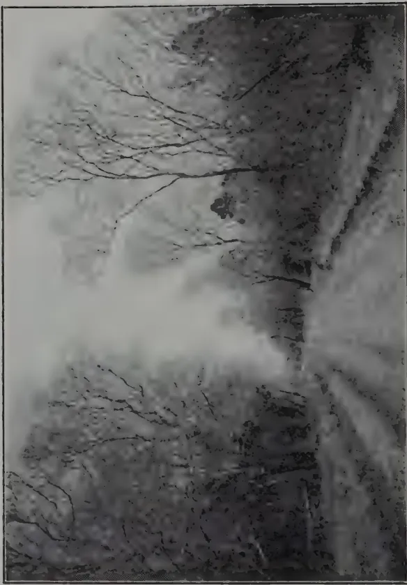
A black and white photograph of a forest landscape. The image shows a dense thicket of trees and foliage, with some bare branches visible against a lighter, hazy background. The overall tone is somber and desolate, suggesting a landscape that has been affected by a severe drought or fire.LAND ONCE IN FOREST
This was chenaed later and was suffering from severe drought at time photograph was taken.
NOVEMBER, 1922 ]301Our common "Milla"—a close relative to Teak—grows well in both the dry and wet forests. It is an exceedingly useful wood, and moderately rapid growing. It has the disadvantages of having a non-cylindrical stem, which means, that in working, there is a high proportion of waste.
"Kumbuk" is another of our dry-zone trees, but this is a riverine species. Like "Milla" it grows fairly quickly, but its stem is generally irregular in outline, thus causing an inconvenient amount of wastage in sawing. Its value, as a furniture wood, is not sufficiently appreciated.
Of ebony, little need be said, because it is a wood of which the uses are restricted, so that its cultivation on an extended scale could hardly be justified. It is moreover extremely slow growing, like its relative Calamander.
Passing to the subject of woods for the manufacture of packages, such as tea boxes and cases for rubber, it seems to be ridiculous that Ceylon should import such a vast amount of purely packing-case material from abroad.
The fault is not self-evident as many suppose, because the packing case industry is beset with many local factors. At the outset, it is obvious that the cost of the package must be small, as the exporter never gets his package back. Cheapness being essential it follows that the commonest woods are sought for, with the result that an extraordinary mixture of all sorts and conditions of timber are brought together. The Tea-box manufacturer buys his wood from the middle-man, who naturally buys the cheapest stuff he can get, and transports it by the cheapest methods and along the shortest routes. He is not concerned in the quality or the seasoning of the logs he sells: all he is concerned in is to make his pile as fast as he can, and if the tea-box manufacturer will pay him his price, there is no reason for him to be interested further.
The consequence of this state of things is that those forests which produce soft and common woods within easy reach of outlets are rapidly over-worked and denuded of the timber that was once abundant there. All kinds of woods are got together hurriedly, drawn down to the nearest navigable stream and floated off, as soon as circumstances will admit. These said "circumstances" may involve a period of a few weeks, or many months, with the result that no thought of seasoning can enter the timberman's mind, while the purchaser at the other end, not only finds that he has got packages of different sorts of wood put together, but the individual pieces may have different degrees of seasoning.
Nor can we blame the tea-box maker for this. He has certain contracts to carry out, and he has only a limited ground on which he can store or dry his timber. Between the two, he has no alternative but to put together as fast as he can, the faulty packages he has contracted to supply.
When the exporter of the tea hears from his people in London that the boxes have arrived in a hopeless condition, he very properly goes to the people who can supply an article that has no such objection. This state of affairs naturally militates against the local article, and increases the importation of such a simple thing as a tea box, from abroad.
Nor is this the last of the objections against the local article. A log may, from the tea-box manufacturer's point of view, be divided into three distinct sections. The portion nearest the base yields the maximum of workable wood: the middle, the second best: the end of the log, according to its "taper" the least. If he buys a whole log he pays the same price per cubic foot for the whole, but its value to him is in direct ratio to what he can most economically make use of, for his particular business. The importer of Foreign timber is not concerned in this, because he gets his wood already cut up, and he only has to put it together into his ultimate form.
302[NOVEMBER, 1922.Here again the local industry is handicapped. One has very little conception of the enormous proportion of waste that there is between the tree as it stands, and the finished article.
A possible means of getting over this difficulty would be to reduce all the wood to wood pulp, and turn it into planks, by compression, thus securing a standard of size, weight, and rigidity, with the maximum saving of material. Experiment alone would show if this suggested course would be possible and practicable, and if it was found to succeed, then an enormous market is thrown open to our Forests in many parts of Ceylon, and woods could be utilised that are now disregarded, or only used for fuel.
Our sleeper supply, in Ceylon, is dependent on imported woods, or practically so. This is very unfortunate for Ceylon, but it is mainly due to the fact that the Forests of the country cannot meet the requirements of the Railway. Many experiments have been tried with local woods, but the result has shown no appreciable reduction in imported sleepers.
Much might be said of the faulty methods of seasoning, and a great deal can be done to improve matters in that direction, but for all that, it is to be feared the country cannot keep pace with the demand, especially if the forests are to continue to be self-supporting. It is certain, however, that a very great deal more could be done with Ceylon woods in Railway sleeper supply, were it not for a prejudice that exists—a prejudice more often due to the failure of contractors to supply, than to the quality of the wood supplied. Not only so, but an economy could be effected in treating the sleeper directly after it is laid in the road, exposed to sun and rain. No effort or attempt appears to have been made to cover the exposed surface of the sleeper after it has been laid down, so as to keep out sand and dust that falls into the cracks caused by exposure. Each pinch of sand falling into these crevices acts as a wedge to widen the crack, that in turn is again filled with more sand and in this way the wood is very quickly reduced to a splintered mass. Experiments with a fluid coating of waterproof material might solve this difficulty, and prolong the lives of thousands of sleepers.
Reference has been made in this sketch to chena cultivation. We have no authentic information as to when it was introduced, but we are painfully aware of the harm done by this most wasteful and pernicious form of so-called cultivation. Not only has it destroyed an enormous amount of Forest, but by its spread, it has taken people away from the centres of concentrated activities, to their own ultimate disadvantage, in a number of different ways. It has impoverished the soil, as well as the people. It has turned large areas into deserted country, and it has reduced water supply, that otherwise could have been directed into Tanks, for paddy fields.
Perhaps the only excuse that might be found for chena cultivation is that to some extent it produces food crops, while there is not sufficient water for field cultivation. This excuse, however, is not free from criticism.
The ultimate effect of chena cultivation, as a whole, is more far-reaching than any temporary relief that it may bring. This practice has involved the country in very large loss of property, and expenditure, while the corresponding advantages have been of the smallest to the people themselves. We believe that, had there not been an acre of chena in Ceylon, the Food question would never have been so grave and acute as we have had painful reason to know that it has been.
We are not prepared to contend that chena cultivation has, in a marked degree, affected our climate or rainfall as we have not sufficient reliable data to demonstrate such a suggestion, but we have ample evidence to know that it has totally failed to improve the prosperity of the people, or to wean them from wasteful methods of cultivation to systems beneficial to themselves individually, and to the prosperity of the country as a whole.
NOVEMBER, 1922.]303Minutes of the tenth meeting of the Estate Products Committee of the Board of Agriculture held at the Experiment Station, Peradeniya, at 2-30 p.m. on Thursday September 7th, 1922.
Present :—The Director of Agriculture (Chairman), the Botanist and Mycologist, the Agricultural Chemist, the Entomologist, the Assistant Botanist and Mycologist, the Acting Assistant Entomologist, the Government Agent, Central Province, Messrs. H. D. Garrick, John Horsfall, M. L. Wilkins, E. W. Keith, N. G. Campbell, G. B. Foote, J. S. Patterson, A. P. Waldock, F. R. Senanayake, T. A. de Mel, L. H. S. Pieris, A. S. Long Price, Lieut-Col. T. G. Jayawardena, Major J. W. Oldfield, O.B.E., M.C., and Mr. T. H. Holland, M.C. (Secretary).
As Visitors :—Messrs. J. A. Coombe, S. P. Blackmore, K. B. Beddewela and C. H. Gadd.
Letters and telegrams regretting inability to attend were received from :—
The Hon'ble the Controller of Revenue, Lieut.-Cols. T. Y. Wright and L. Bayly, Sir Solomon Dias Bandaranaike, C.M.G., Gate Mudaliyar A. E. Rajapakse, the Hon. Mr. H. L. De Mel, Messrs. R. Garnier, W. R. Matthew, A. J. Austin Dickson, A. W. Beven, George Brown, E. C. Villiers, W. C. Dias Bandaranaike, A. P. Goonatilleke, and A. M. Clement Dias.
The minutes of the last meeting having been circulated to members were taken as read and confirmed.
The CHAIRMAN commented on a few points in the report and said with regard to camphor the Manager of the Experiment Station wished him to give some additional information. Since writing the report a further distillation had been made at Peradeniya in which the leaves had been stripped from the twigs which were entirely excluded.
Camphor equal to 1.08% of the weight of leaves had been obtained ; this result was better than that obtained from Hakgala leaves. The statement made in the report to the effect that elevation appeared to influence the camphor content had therefore to be contradicted.
Camphor had been recently sold locally at Rs. 3.25 per lb. and even if only 0.6% were obtained from leaves and twigs it would appear that there was a profit.
MR. FOOTE enquired how the yields of camphor compared with those obtained in Formosa and other countries.
The CHAIRMAN replied that only roots and wood were distilled in Formosa.
304[NOVEMBER, 1922.MR. WILKINS referring to the recording of rubber latex yields from individual trees asked if it would not be possible to devise a miniature Metrolac by which the quality of latex of each tree might be tested ; at present mere quantitative results were obtained.
MR. PETCH replied that the Metrolac was only of use in normal latex. In latex of an abnormal quality a large error was obtained. From a scientific point of view the Metrolac was hopelessly inaccurate.
MR. FOOTE added that it was frequently unsatisfactory from the practical point of view.
MR. KINDERSLEY asked whether a record was kept of the number of villagers visiting the Experiment Station and whether there was any reason to suppose that the number was increasing.
The CHAIRMAN replied that a record was not kept. Previously, days had been fixed and Headmen were invited to bring villagers round the Experiment Station. Arrangements of this sort could be made again.
MR. KINDERSLEY said he thought it very desirable that villagers should have opportunities of seeing what improvements could be effected in the cultivation of local products by up-to-date methods.
Agenda Item 2.—Results of Fodder Grass Trials—Experiment Station, Peradeniya.
The CHAIRMAN commented on this report which had been circulated to members.
MR. T. A. DE MEL suggested that for the sake of comparison all the plots should be treated alike.
The CHAIRMAN replied that they would be so treated during the next year.
MR. M. L. WILKINS enquired at what time of day the palatability test had been carried out.
MR. HOLLAND replied that they had been carried out in the early morning.
Agenda Item 4 & 5.—Work of Plant Pest Boards and Proposed Amendment to Plant Pests and Diseases Ordinances.
A report in this connection had been circulated to members. In this report were incorporated a number of questions which would have to be settled in Ceylon in order to arrive at a line of policy.
MR. KINDERSLEY was of the opinion that it was necessary to know the Director of Agriculture's answers to questions 3 and 4 before the questions could be answered.
The CHAIRMAN gave details of the existing strength of the Plant Pest Inspectorate Branch of the Department. The Central Division comprised largely the principal tea areas and the Southern Division the principal rubber areas. There were no Inspectors for the coconut areas ; for this work at present one of the other Inspectors had to be taken from his duties or one of the Mycological or Entomological staff utilized. He certainly thought that an inspecting force for the coconut areas was necessary.
MR. PETCH then made some remarks about the original scope and functions of the Plant Pest Boards. These Boards could only decide as to whether regulations should be applied in their districts in the case of
NOVEMBER, 1922.]305pests which had been declared such by the Governor in Executive Council.
It was noticed from the report that certain Boards had discussed pests and diseases which had not been declared pests, they were therefore acting outside their province in so doing.
MR. KINDERSLEY was of the opinion that local authority without technical assistance could not be expected to control the spread of pests and diseases. When in Badulla he had convened a meeting of the local Plant Pest Board but had been the only member in attendance. He thought that centralised inspection was necessary.
Several members were of the opinion that the retention of some form of local body was desirable.
The CHAIRMAN thought that Local Boards or Committees would be of great value as advisory to Inspectors as to the line of action that was desirable and feasible in their locality. Appeal could also be made to this local body if undue hardship was thought to be inflicted by the enforcement of measures.
MR. WILKINS suggested that the Director of Agriculture in consultation with the legal authorities should draft an ordinance to meet the case and lay the draft before the Committee.
The CHAIRMAN replied that this would have to be done but he wished first to obtain suggestions from the Committee for the drafting of this ordinance.
Some members were of the opinion that appeal from regulations on the decision of an Inspector to a local body would make for inefficiency and was undesirable.
It was also suggested that the Plant Pest Inspector for the Division or another member of the Department should be CHAIRMAN of the local bodies.
MR. FOOTE said that any ordinance drafted should be elastic so as to allow for future expansion in inspecting staff, etc.
LIEUT.-COL. JAYAWARDENE suggested that Divisional Agricultural Officers should be CHAIRMAN of the local bodies.
MAJOR OLDFIELD asked if the CHAIRMAN did not think it desirable to retain the connection with the Revenue Officers.
The CHAIRMAN replied that he thought it desirable.
LIEUT.-COL. JAYAWARDENE suggested that the Revenue Officers might be CHAIRMAN, but the Divisional Agricultural Officers should be members of the Boards.
The CHAIRMAN said that he was convinced that in the end a central organization would be necessary but this would have to be arrived at by stages. He took it that the meeting was at present in favour of aiming at closer co-operation between the local bodies and the Department of Agriculture. He thought that the declaration of a pest should rest with the Estates Products Committee. He suggested that a sub-committee be formed to examine and report on the proposed draft ordinance when ready.
The following names were proposed as members:—
The Director of Agriculture, The Government Agent, Central Province, Messrs Petch, Garrick, Foote, Senanayake, Hutson and Jardine.
The appointment of this committee was carried by the meeting.
306[NOVEMBER, 1922.Agenda Item 5.—Tortrix moth: is it increasing and spreading to hitherto Immune Districts and what, if any, further investigations are being made in regard to this pest.
MR. A. P. WALDOCK said that the pest appeared to be spreading to fresh districts and that very little was being done to carry out the recommendations made in MR. JARDINE's bulletin on this pest.
He read a letter from a Maskeliya Planter who suggested certain objections to MR. JARDINE's recommendations, and considered them only practical on a small scale. The cost of the materials was one of the objections raised, he found that prices of these had now considerably declined. He was informed that Sodium Carbonate being very deliquescent had to be imported in bottles and this added considerably to its cost; would not washing soda do as well?
The CHAIRMAN said that he thought that the Maskeliya Planter in question had not read MR. JARDINE's Bulletin very carefully. He would ask MR. JARDINE to explain matters.
MR. JARDINE said MR. WALDOCK's Maskeliya correspondent seemed to be under some misapprehensions. The establishment of flight breaks formed the vital part of the whole scheme. Without flight breaks large areas could not be effectively sprayed.
The moths were low fliers and were spread by wind. The action of the flight breaks was to reduce the area liable to be attacked and therefore the area in which spraying was necessary.
Subject to correction he had always been under the impression that Sodium Carbonate was washing soda. The spraying materials had purposely been bought retail in order that the maximum cost of spraying might be arrived at in the first instance. Later, materials could be bought wholesale at cheaper rates. He wished to emphasise that to consider spraying before the general establishment of flight breaks was to put the cart before the horse.
MR. WALDOCK said that he had no intention of criticising the advice given by the Department. He thought that Tortrix was spreading and should be declared as a pest.
The CHAIRMAN said that the question of Tea Tortrix had been very thoroughly examined by MR. JARDINE, his recommendations had now been before the tea industry for three years and it was up to that industry to give effect to the recommendations made.
MR. JARDINE's recommendations had only been adopted in very few cases and he would like to see a real trial made of them. The Government had its own duties to perform and could not in addition undertake duties that belonged to the industry itself.
MR. WILKINS said he was sceptical about the efficiency of flight breaks. He had seen a broad belt of large gums with a dense undergrowth on a badly infested estate, the moths had passed through this belt though they had taken some time to do so.
MR. JARDINE suggested that if the trees were large ones the branches were too high to intercept the moths which were low fliers. Ten feet was quite high enough for a flight break.
The CHAIRMAN said that if Estates would establish flight breaks he would undertake to do the spraying so as to demonstrate its feasibility.
NOVEMBER, 1922.]307Agenda Item 6.—Cereasporella Theæ, which has recently been noticed in Dikoya. Is it Serious?
MR. WALDOCK said he had gained a good deal of information on the subject from MR. PETCH's lecture to the Dimbula Planters' Association. He would like to know if the disease was serious.
MR. PETCH said the disease had been known to the Mycological Division since 1909. It was mostly confined to elevations above 4,000 and occurred round Nanuoya, Ramboda and Uda Pussellawa.
It was serious but only temporarily so since it did not kill the bushes.
He exhibited diagrams showing the form of spots upon tea leaves. On young flush many spots might coalesce and the leaf was then killed. On old leaves it is hardly distinguishable from grey blight.
It is conveyed not only by spores but also by Acacia leaflets blown off by the wind. It is serious at the end of the monsoon and then dies off again.
MR. WALDOCK asked MR. PETCH for an opinion as to whether he would discourage the planting of Acacias on account of the disease.
MR. PETCH said that if he were the Visiting Agent of an estate he personally would not have acacias on that estate but the planter must decide for himself whether the benefits to be derived from acacias outweighed their disadvantages.
MR. FOOTE asked if the disease was always spread from acacias.
MR. PETCH said he believed only one specimen had been received from an estate where there were no acacias.
MR. WILKINS said he had seen a good deal of the disease about the country in small patches only, often in places where there were no acacias. He did not think the disease was serious.
MR. PETCH asked how MR. WILKINS had identified the disease.
MR. WILKINS replied that he had sent a specimen to MR. PETCH.
MR. PETCH agreed that he had on one occasion identified a specimen as Cereasporella Theæ but emphasised the impossibility of identifying the disease without seeing the spores under a microscope. The ordinary bird's eye spot on tea which was harmless was very similar in appearance.
Agenda Item 7.—Shot-Hole Borer.
MR. WALDOCK enquired what was the "Pruning mixture" referred to in the Sarnia experiments. He also noticed that crushed fish was included in the general mixture; from cost and analysis Fish Guano seemed better value.
The CHAIRMAN replied that the mixtures used were those which the estate usually employed; he would secure details of the mixture in question.
MR. WALDOCK remarked that a certain Visiting Agent had recommended burying the leaves and small twigs after pruning and mulching the large branches on the surface.
The CHAIRMAN said that the Department recommended burying small prunings and burning the large branches.
MR. NEILL CAMPBELL emphasised that burning must be carried out within 24 hours to be of any use.
Agenda Item 8.—Fluted Scale—Consideration of replies from infested estates.
MR. JARDINE commented on the report which embodied and analysed the replies received from infested estates on this subject.
308[NOVEMBER, 1922.The CHAIRMAN said that the Committee must now decide on the action to be taken.
MR. WALDOCK enquired what difference it made to an estate to be scheduled.
The CHAIRMAN explained the inconveniences in the matter of obtaining permits for transport of plants, etc.
The question of the removal of Fluted scale from the list of scheduled pests was put to the meeting. A majority voted in favour of its removal from the schedule.
Agenda Item 9.—The desirability of protecting the Cabaragoya which is in danger of extinction in many parts.
This subject was introduced by MR. FOOTE who said that the Cabaragoya was soon likely to become extinct in the Kelani Valley.
The CHAIRMAN said that the matter had been taken up by the Assistant Government Agent, Kegalle, who had enlisted the support of other Government Agents and Assistant Government Agents.
The Entomologist had supported the case and the matter was now before Government. The Cabaragoya fed largely off crabs which did so much damage in paddy fields.
MR. NEILL CAMPBELL added that it was an excellent scavenger.
The meeting passed a resolution in favour of the protection of the Cabaragoya to be forwarded to Government.
Agenda Item 10.—Enquiry as to whether 6 to 8 Months after Tea prunings had been buried, it would be better to apply a general mixture on the top of the decaying humus from these prunings or in the vacant rows.
MR. WILKINS said this subject was often argued between planters. Some held that the manure should be applied to the young roots which would be found in abundance in the decaying prunings and others that these feeding roots should not be disturbed. He would like to hear the scientific view.
MR. BAMBER said that on a new estate he would put the manure on the top of the prunings in order to obtain quicker returns but that on an estate which had been cultivated for some years he would recommend putting it in the vacant rows.
Agenda Item 11.—Enquiry as to whether the Department is in Possession of Data to show or tend to show a connection between yield per acre and the prevalence of Brown Bast.
MAJOR OLDFIELD said that Brown Bast was considered to be due to over-drastic tapping resulting in the formation of gum or in some such process which stopped the flow of latex. There were methods of excessive removal of latex which could not be called hard tapping and he suggested that in such cases the trees were stimulated to protest and Brown Bast resulted. He knew of high yielding fields where the tapping could not be called hard which appeared prone to Brown Bast. This led him to suggest the connection between high yield and Brown Bast.
MR. PETCH gave some figures of an experiment at Peradeniya which did not appear to connect yield and Brown Bast. These figures however were not based upon a sufficiently large enough number of observations. He outlined an experiment which had been carried out on a large
NOVEMBER, 1922.]309scale in Sumatra. No definite data however were obtainable from the results. There was an idea that trees tapped with two cuts were more liable to Brown Bast. The only thing that can be definitely said is that countries which tap daily have more Brown Bast than Ceylon.
MR. FOOTE asked if there was any connection between the water pressure in the roots due to damp soil and the prevalence of Brown Bast. From long observation he had formed the opinion that Brown Bast was more common in damp soils and since the damper soils were usually the richer this might give rise to the idea that good yields and Brown Bast went together.
MR. PETCH said with regard to root pressure that it was now considered that such a pressure did not exist.
Agenda Item 12.—Enquiry regarding the Uses of “Arghan Fibre” and the Conditions under which its Cultivation is most Productive. Is the Plant now being grown on the Experiment Station and, if not, will the Department consider the advisability of introducing it for trial.
The CHAIRMAN replied that “Arghan” was a fibre obtained from a Bromeliad whose natural habitat was the wet forests of Central or South America. The identity of the plant was not known. All plants in the East were the property of the Arghan Company and were in nurseries in the Federated Malay States. Presumably these plants would be either planted by the Company or offered to the Public for sale. The fibre had been reported upon favourably by the textile trade and after the required treatment might be applicable to a number of uses.
The Department was not in possession of any plants and the information it had in regard to the localities from which the original plants were secured and their possible identity was at present confidential.
Applications should be made to the Company's Agents. MR. THORPE of Matale was the Company's Agent in Ceylon.
MR. WALDOCK read a letter from a Company called the “Land and Survey Co.” which laid claim to the possession of certain information on the subject and which alleged that “Arghan” was “Columbian Pita.”
The CHAIRMAN said that “Pita” merely meant fibre.
Agenda Item 13.—Report by the Imperial Institute on Robusta Coffees.
The CHAIRMAN read the above report on samples of coffees grown on the Experiment Station, Peradeniya.
MR. FOOTE enquired why it was stated that these coffees were not suitable for the English market.
The CHAIRMAN replied that England was not a coffee drinking country, only Arabic coffee was consumed there.
T. H. HOLLAND,
Secretary,
Estate Products Committee.
Minutes of meeting of the Anuradhapura Food Production Committee held at the Anuradhapura Kachcheri on September 2, 1922.
Present:—Mr. G. F. R. Browning, Government Agent, N.C.P. (in the Chair), Messrs. H. R. Freeman, R. O. Iliffe, Acting Divisional Agricultural Officer, Northern Division, B. W. G. Tennekoon, Kachcheri Mudaliyar and S. Phillipson (Secretary).
1. The CHAIRMAN opened the proceedings by explaining his object in forming the Committee, which was to have at his disposal the advice of others familiar with the needs of the Province in spending to advantage a sum of Rs. 3,500 allotted for Food Production purposes from the Paddy Permit Fund. The Committee might also make suggestions as to spending a part of the accumulated balances in the Tank Fine Fund and the Irrigation Fine Fund (Village Works).
2. Letters from MESSRS. H. R. FREEMAN, B. W. G. TENNEKOON and L. B. BULANKULAMA DISSAWE, and from the DIVISIONAL AGRICULTURAL OFFICER, Northern Division, and the DIVISIONAL IRRIGATION ENGINEER, Northern Division, expressing their willingness to serve on the Committee, were taken as read.
3. Letter No. 223 of 26-8-22 from the Divisional Irrigation Engineer, Northern Division, regretting his inability to be present at the meeting was taken as read.
4. Letters between the Government Agent, N. C. P., and the Hon'ble the Treasurer (commencing from the Treasurer's letter No. 122 of 25-7-22) and terminating with the Government Agent's letter No. 414 of 25-8-22) on the subject of funds available for expenditure by the Committee and the items of suggested expenditure, were read.
5. The Committee then considered the question of loans for seed paddy. It was resolved to let the matter stand over till later in the year as so far there had been no demand for such loans.
6. It was decided after discussion to leave the question of improvements of Agricultural Roads (means of communication between villages) to the Village Committees.
7. With regard to wells, it was resolved to ask the Superintendent of Village Works to submit Estimates for improvements to six existing wells for which applications had been received and to report on the comparative urgency of these works.
8. It was decided that Dispensaries did not come under the purview of this Committee.
9. (a) It was resolved that two prizes, the first Rs. 50 and the second Rs. 25 be offered to the settlers of the Ratmale Colony for the best cultivated plots (not less than half an acre in extent) during the next Maha cultivation.
(b) It was also decided that three prizes, one of Rs. 50, and two of Rs. 25 each, be offered to the cultivators under the City Tanks for the best cultivated plots (not less than half an acre in extent) during the next Maha cultivation. The names of those cultivators under the City Tanks who wish to compete for these prizes should be sent to the Kachcheri before the 30th September, 1922.
10. Rs. 1,000 was voted from the sum of Rs. 3,500 allotted from the Paddy Permit Fund for the manufacture of cement pipe sluices for village tanks.
11. Various proposals submitted by the Chief Headmen and the Village Tank Staff for new Irrigation Works, restoration of old works, and Agricultural Roads, were considered. It was decided to leave these proposals over for the consideration of the meeting to be held before the 25th October, 1922.
NOVEMBER, 1922.]31112. It was resolved to spend Rs. 315 from the Irrigation Fine Fund (Village Works) for improving the spill and raising the stop wall of Ranawa Tank in Kiralowa Korale.
Minutes of a meeting of the Kandy Food Production Committee held at the Kandy Kachcheri on 20th September, 1922, at 2 p.m.
Present:—Mr. W. L. Kindersley (in the chair), Mr. H. J. L. Leigh-Clare, Secretary, Mr. G. G. Auchinleck, Divisional Agricultural Officer, C. D. the Ratemahatmayas of Harispattu, Pata Dumbara and Tumpane, the Chief Interpreter of the Kandy Kachcheri and Messrs. W. Molegode, J. R. Nugawela and C. W. Dangamuwa, Agricultural Instructors.
Minutes of the previous meeting were confirmed.
Considered letter No. 3,782 of 30th August, 1922 from the Divisional Agricultural Officer, C.D., re Co-operative Credit Societies. Resolved to recommend to Societies to take up the purchase and resale of products and to make efforts to standardise production especially in cacao in order that the villagers may get better and more stable prices for their products.
Considered letter No. 3,832 of 2nd September, 1922, from the Divisional Agricultural Officer, C.D., re widening the sphere, and if necessary increasing the membership of the Food Production Committee. Resolved that this Committee should change its name to that of Kandy Agricultural Committee, and should add to its functions that of Plant Pests Committee, and agricultural matters not dealt with by the Planters' Association, and should extend its membership so as to be fully representative: and that the Director of Agriculture be requested to draft a constitution for the Committee in its new aspect.
Considered letter No. 3,867 of 4th September, 1922, from the Divisional Agricultural Officer, C.D. re vegetable garden competition yala season 1922. Resolved that in view of the notice under which the competition was started the suggestion cannot be adopted but that in future competitions should be adopted.
Considered letter No. 3,846 of the 4th September, 1922 from the Divisional Agricultural Officer, C.D., re organising of small agricultural societies in the District. Resolved that the proposal is worth adopting and that such societies shall be registered in the office of this Committee.
Laid the recommendations of the Agricultural Instructor concerning the vegetable garden competition in Kulugammanasiya pattu and Medasiya pattu Korales (letter No. 3,935 of 8th September, 1922, from the Divisional Agricultural Officer, C.D.). Resolved to adopt the recommendations of the Agricultural Instructor.
Considered what amount should be asked from the Director of Agriculture regarding shows and competitions during 1922-1923 (Divisional Agricultural Officer's letter No. 3,781 of 30th August, 1922). Resolved to ask the Director of Agriculture for Rs. 1,000/- for Kandy Agricultural Show for August in addition to the sums for shows and competitions.
Discussed the list of irrigation works. Resolved to put up those not estimated for to Divisional Irrigation Engineer for estimates, and to inform the Director of Agriculture that probably Rs. 8,000 could be utilized on loan.
Tabled the statement of lands leased for asweddumization and chena permits.
312[NOVEMBER, 1922.Minutes of a Meeting of the Ratnapura Food Production Committee held on 25th September, 1922.
Present :—The Hon. Mr. H. W. Codrington (Chairman), Messrs. P. B. Muttettuwegama (Ratemahatmaya), H. A. Goonasekara (Ratemahatmaya), F. Marambe (Ratemahatmaya), E. C. Fernando, Asst. Conservator of Forests ; A. Madanayake, Senior Agricultural Instructor ; S. Sinnathurai, Agricultural Instructor, Kuruwita ; Harry Ellawala, Proctor ; T. Wallooppillai, Proctor ; and C. R. P. Jayawardana, Kachcheri Mudaliyar.
Minutes of the General Meeting held on 7th January, 1921, and the Special Meeting held on 22nd July, 1921, were read and confirmed.
Reports of the Judges regarding Garden Cultivation Competitions were circulated.
Resolved that the larger landed proprietors be not debarred from entering agricultural competitions but that the money prizes be confined to the cultivators, certificates only being issued to the larger landed proprietors.
Resolved that the organisation of paddy cultivation or other competitions for 1922-23 be referred to a Sub-committee consisting of Messrs. T. Wallooppillai, Harry Ellawala and A. Madanayake, Senior Agricultural Instructor, to report in October.
Prizes allotted to the successful competitors 1921-22 were distributed and Certificates of the Department of Agriculture delivered.
MR. A. C. ATTIGALLA was elected (by 5 votes to 4) a member of this Committee vice Mr. D. C. WIJAYASINHA who has left the district. Resolved that the CHAIRMAN, Sabaragamuwa Planters' Association be requested to nominate a successor to MR. PATERSON.
MR. HARRY ELLAWALA announced his intention to offer yearly an additional prize of Rs. 10/- for Kuruwiti Korale (Paddy Cultivation).
MR. T. WALLOOPPILLAI proposed that the prizes for Agricultural Competitions be handed over to the successful competitors by the Government Agent on Circuit.
For July and August, 1922.
The tea is looking healthy but the crop harvested for July and August is rather less than half that harvested in July and August 1920 at a similar interval from a light pruning instead of a severe pruning. In plot 149 after a final lopping, the old dadaps (18 years old) have been dug out.
A careful examination of the roots of four trees showed in one case that although old nodules were found on about 1/3 of the small roots none were found on the remainder and no new nodules appeared to be being formed. In the 3 other cases however a fairly vigorous formation of new nodules appeared to be in progress.
The demand for Gliricidia as a green manure tree for tea is now considerable, orders are already booked for 9,000 cuttings for North-East planting and it is doubtful if the supply will be sufficient.
NOVEMBER, 1922.]313Measures have been taken to produce a better quality of cured rubber. Part of an old building has been converted into a smoke-room and will be taken into use from September 1st.
In the Hillside rubber the old drains which have been completely covered up for the last 3 or 4 years have been re-opened. An efficient system of terracing exists in addition to these drains.
Vacancies in the New Avenue Rubber were supplied with stumps grown from seed of No. 2 tree Heneratgodia during the wet weather in August. Commencing in July weekly latex yield records in Cubic Centimeters have been recorded from all the old rubber trees in tapping under manurial experiment with the object of ascertaining if there are any exceptional yielders from which buds could be taken for budding on to young stumps grown from No. 2 tree Heneratgodia seed now in the nurseries.
All diseased pods have been collected monthly.
Bark canker is giving considerable trouble. The method of light scraping followed by rubbing with copper sulphate crystals is not giving satisfactory results. It is now proposed to revert to clean excision on part of the area.
Crop prospects are good but likely to be inferior to 1921-22.
Heavy rain followed the planting out of the 19 varieties of coconuts in the Fodder grass plots in June last. The plants are not looking well.
A number of vacancies have been supplied.
On August 1st, 48 nuts picked from two Java coconut trees were planted in nursery beds as follows:—
It is proposed to plant a similar number of nuts which have fallen naturally from the same trees in the same positions.
The total crop is at present 9,000 nuts in advance of 1921 but prices realised have been low.
Fortnightly removal and burning of diebacks has been continued. In the two rows of Robusta coffee in which the diebacks were left untouched since June 1st and from row 2 of which a large proportion of immature berries were removed to check overbearing, the dieback branches were removed and counted in August.
Row (1) (control) showed 12 trees affected and 4'2 dieback branches per tree,
Row 2. 11 trees affected and 8'4 dieback branches per tree.
314[NOVEMBER, 1922.The row under treatment is therefore more severely affected at present than the control row. It is possible that insufficient young berries were removed. Over 2,000 per tree were taken off however and this number indicates the large proportion of berries that would not in any case come to maturity. It is also possible that the treatment was not started early enough in the life of the tree.
Crop prospects appear very good. The demand for Robusta coffee seed is very much less than it was, the area under coffee on the Experiment Station is extending and as soon as funds are available provision should be made for pulping and proper curing of the crop for the market.
The majority of the drains in the new 6 acre coffee clearing have been dug and lining has been commenced.
A distillation of leaves sent from Hakgala resulted in an outturn of '96% of camphor. Leaves and twigs grown on the Experiment Station have not yielded more than '6%.
In the former case no twigs were included but it is not thought that this will make much difference and it would appear that elevation exerts a considerable influence on camphor content.
The growth of the crops on this area (Maize, Adlay, Kurakkan, Buck-wheat, Sweet potatoes, Cluster beans, Cow peas and Dhall) is extremely patchy. This may be attributed to.
It appears that fairly heavy manuring will have to be employed in the future and it is probable that the present crops will serve more as a field for seed selection for future trials than as a reliable guide of yields obtainable. Maize and Dhall are the most promising. Cow peas as usual have suffered considerably from snails.
Three varieties of Cacao have been added and a plot of Vanilla planted.
The early growth of the acre of Kikuyu grass planted out in June has been somewhat disappointing. There are a good many gaps but the remainder has now taken hold well and is beginning to spread. Much expensive hand-weeding has been necessary to keep down the Doob which is firmly established in this plot.
acre of Lucerne was sown in June and has made uniform and fairly vigorous growth.
A further length of road has been metalled and rolled and a further length of foundation laid.
Rainfall for July was 10'99 inches and for August 5'46 inches.
T. H. HOLLAND,
Manager.
J. FISHER, B.Sc. (Agric), N.D.A. (Hons.),
Principal, School of Agriculture, Cedara, Natal.
The subject of poultry feeding is one which always possesses an interest for the poultry-keeper, whether he be a keeper of utility fowls, a fancier, or even a common farmer. At the present time when foodstuffs are much dearer than in normal time, the subject is a far more important one, and a few ideas with regard to the foods and the functions which their ingredients serve in the fowl's body will not be out of place.
The process of digestion in the fowl is a somewhat complicated one, but the whole trend of it is to convert materials which are not soluble into soluble forms. Just as plants cannot absorb insoluble material from the earth in which they grow, so animals cannot absorb insoluble materials from their alimentary canal. Everything which is absorbed into the fowl's circulation has been rendered soluble. Once in the blood vascular system the food ingredients can be carried to any tissue which requires to be nourished. When a fowl feeds, the food passes down the oesophagus into the crop. This is really a storage organ and very little digestion occurs therein. From the crop food passes gradually into the stomach or proventriculus where it is acted upon by the gastric juices secreted by glands in the wall of the stomach. The function of this gastric juice is to change the insoluble food compounds into soluble ones. The food, however, does not remain long enough in the stomach for all its ingredients to be rendered soluble, and as it passes on to the gizzard it is ground into a fine condition so that the action of the gastric juice will be more thorough and also quicker. After passing through the gizzard the partially digested food enters a U-shaped portion of the small intestine, known as the duodenum. Whilst in this part of the alimentary canal the pancreatic juice and the bile are poured out upon the food. These juices continue the action of the stomach, save that the reaction is now alkaline, where previously it was acid. As the food is worked along the small intestine the soluble portions are absorbed into the circulatory system and carried to these parts of the body where activity occurs, whilst the insoluble material, or waste passes onwards to be secreted as dung.
Where a food to be submitted to the chemist for analysis, his report thereon would contain certain terms which it will pay us to consider briefly.
(1) Water; (2) proteid matter; (3) carbohydrates; (4) fat; (5) ash constituents.
(1) Water.—Every living thing requires water, and fowls are no exception. The water given to fowls may be free, or combined in the form of green, succulent foods, as lucerne, clover, cabbages, etc. The amount
316[NOVEMBER, 1922.taken in this way, however, does not suffice for the needs of the bird, and free water to drink should be supplied. Such water should be as pure as possible, and should be shaded from the heat of the sun also.
(2) Proteid Matter. This is the most important constituent of the food as no other ingredient even in excess can replace the proteid matter. In the fowl's system protein is responsible for building up the lean flesh, the blood serum, the nervous system, the feathers, etc., and in the laying hen there must be sufficient for the formation of the albumen, or white of egg. Whilst carbohydrates and fat can replace one another, the proteid material remains apart. The fowl's body is composed of :—
Bones, 10 per cent.
Flesh and sinews, 40 per cent.
Fat, 24 per cent.
Blood, skin, feathers, etc., 26 per cent.
When it is remembered that most grain and other foods grown on the farm are deficient in protein, the importance of this is recognised. Maize grain, for example, contains about 10 per cent. only of protein. Chicks, which are rapid growers, young ducks, etc., need large quantities of protein food to build up their muscles, their blood, their feathers, skin, etc., and so the foods for them must supply large quantities of these. Milk, which is rich in protein matter, thus becomes a good food for chicks and also laying hens.
Eggs contain :—
Water, 65 per cent.
Fat, per cent.
Protein, 13 per cent.
Should more protein be fed than is required, the surplus may be used for other purposes, but additional excretory work will require to be done.
(3) Carbohydrates.—This group includes the sugars, starches, etc., which are found in the food. They are the chief suppliers of heat and energy. Whilst the fowl is in motion energy is being used up, and the carbohydrates supply this.
Many farm foods are rich in starch, containing up to 70 per cent., as in maize. Fed in excess of what is required to maintain heat or supply energy, the excess is used to form fat. Maize is known to be a very fattening food.
(4) Fat.—Fat supplied in the food tends to form fat in the body. Should the carbohydrates fail to give the requisite heat and energy, fat may be used for this. Fat, however, weight for weight, gives out times as much heat as carbohydrates. In this way it is concentrated energy, and the fowl stores up its reserve in this way.
(5) Ash Constituents.—The rate of growth of young poultry is very rapid, and this being so, ash or mineral matter is required in fairly large amounts. To illustrate: A chick, weighing ozs. when hatched, and 27 ozs. at 10 weeks old, has in the 10 weeks multiplied its original weight 18 times. The rate of growth of skeleton is greater than that of the flesh, and in ducks and geese it is greater than in fowls.
The adult female, when laying regularly, requires a lot of lime, or access thereto, to provide the necessary shell-forming material. Fowls on free range pick up a lot of this material for themselves, but when confined this
NOVEMBER, 1922.]317must be provided. Fresh green bone supplies material of this nature, and shell (oyster) and charcoal are frequently fed in addition.
Wheat grain is reckoned about the best all round grain for poultry. It has the following composition :—
| Protein | 11.9 | per cent. | |
| Carbohydrates | 71.9 | " | |
| Fat | 2.1 | " | A lb. Ratio 1.64. |
| Ash | 1.5 | " |
This term A lb. Ratio, is one which is used to state the ratio between the proteid matter of the food and the other ingredients (Carbohydrates and fat) reckoned in terms of carbohydrates. As fat is , times as concentrated as the carbohydrates the figure for its percentage is multiplied by 2.25.
The foods which are used, therefore, should approximate fairly closely to wheat, which has proved suitable as a food.
If we compare maize with wheat we have :—
| Protein | ... | 10.3 | ... | Lower protein |
| C.H.O. | ... | 70.4 | ... | Considerably more fat |
| Fat | ... | 5.0 | ... | |
| Ash | ... | 1.5 | ... | Less ash. A lb. Ratio 1.8 |
This is a wider ratio than for wheat, and there is too little protein and too much fat.
Take buckwheat. The figures are :—
| Protein | ... | 10.8 | ... | |
| C.H.O. | ... | 59.7 | ... | |
| Fat | ... | 2.4 | ... | |
| Ash | ... | 2.0 | ... | A. lb. Ratio 1.6 |
In buckwheat the fibre is high, though 11.7 per cent. as compared with 1.8 per cent. in wheat and 2.2 per cent. in maize.
| Sunflower Seed, | Kernel, | |||
|---|---|---|---|---|
| Protein | ... | 16.3 | ... | 30.5 |
| C.H.O. | .. | 21.4 | Fibre 29.9 | 14.5 Fibre 2.6 |
| Fat | ... | 21.2 | ... | 42.8 |
| Ash | ... | 2.6 | ... | 2.8 |
These analyses throw light at once on why these grains are not so valuable as wheat for feeding purposes.
Maize is the cheapest grain in this country, and every endeavour must, therefore, be made to feed as much as possible of this.
Maize is not the best food during the hot weather, and can be used to a larger extent in cold weather when the greater percentage of fat and carbohydrates which it contains have their use in keeping the fowls warm.
The larger kinds of maize are too big without being cracked for fowls, and the smaller flint mealies are generally fed in preference to the large flat ones.
A by-product from maize, hominy feed, is more valuable than maize, having a larger percentage of protein and more ash constituents.
Kaffircorn is a constituent of most mixed poultry foods, and the size of grain is a quite suitable food even for young chicks. Its composition is about :—Protein, 11.2; ash, 1.6; fat, 3.1; C.H.O., 71.5; about equally rich in C.H.O., with maize, but with less fat, and a little more protein. There is no noticeable difference in the composition of the red or white varieties. The following compositions will indicate the particular merit of the foods
318[NOVEMBER, 1922.in question :—
| Protein. | Ash. | Fat. | C.H.O. | |
|---|---|---|---|---|
| Dried blood | 84.4 | 4.7 | 2.5 | — |
| Meat scrap | 71.2 | 4.1 | 13.7 | — |
| Fresh bone | 20.6 | 22.8 | 20.5 | 1.9 |
| Raw ground bone | 23.9 | 64.4 | 3 | 3.4 |
| Cow's milk | 3.6 | 7 | 3.7 | 4.9 |
| Skim milk | 3.1 | 7 | 3 | 5.3 |
| Buttermilk | 4.0 | 7 | 1.1 | 4.0 |
| Whey | 6 | 5 | 1 | 5.1 |
Where it is desired to bring the amount of protein in the food to a higher percentage, some of these foods can be used. Earth-nut cake could also be used, soaking before feeding, and feeding along with the soft food. This possesses about 47 per cent. protein matter.
From the foods already briefly mentioned it will be possible to compound a mixture having a composition approximating to that of wheat, either in hard grains or in meals, etc.
I do not propose to enter into the merits or demerits of feeding mashes, but simply state that mashes can be used with success, and the foods mentioned can be used therein.
At the Maine Experiment Station the following mixture is used for laying hens :—
| Wheat bran | .. | ... | ... | 1 |
| Corn meal | .. | ... | ... | 1 |
| Middling | ... | ... | ... | 1 |
| Gluten meal or brewers' grains | ... | ... | ... | 1 |
| Linseed meal | ... | ... | ... | 1 |
| Beef scraps | ... | ... | ... | 1 |
At West Virginia Experiment Station the following dry mash is employed (for laying hens) :—
| Corn meal | ... | ... | ... | 3½ |
| Bran | ... | ... | ... | 5½ |
| Middlings | ... | ... | ... | 3 |
| Oil meal | ... | ... | ... | 1 |
| Beef scraps | ... | ... | ... | 2½ |
One point with regard to foods is that they must be acceptable and liked by the fowls, and unless this is the case, the best results cannot be secured. A mixture gives better results than a single grain ration feed continuously.
With regard to the valuation of respective foods, a fairly good comparison can be obtained by finding out how many units of food there are, a unit being 1 per cent. in a ton.
Since protein and fat have greater values than carbohydrates, the total units may be obtained by multiplying the percentage of fat and protein by 2½ and adding to the percentage C.H.O.
If we take bran and pollard we get :—
| Protein | C.H.O. | Fat | ||
|---|---|---|---|---|
| Bran | 15.4 | 53.9 | 4.0 | 97.55 units |
| Middlings | 16.9 | 56.2 | 5.1 | 105.69 " |
showing that middlings are a richer food than bran. Maize gives us 104 units and the value of bran assigned to a unit is about 1/3. Thus maize would be worth , £6 10s, per ton or 13 per bag of 200 lb., and so the value of different foods can be compared from the point of view of composition. Other factors, however, crop up with the practical feeder, and such an one must see that the food is palatable, not too fattening, that it does not cause indigestion, etc., etc.—SOUTH AFRICAN POULTRY MAGAZINE AND SHAREHOLDER, VOL. XIV, No. 127.
NOVEMBER, 1922.]319A correspondent writing in CHAMBER'S JOURNAL on "Bees in Strange Places" mentions the following interesting facts: "In the height of the honey-flow a strong hive of bees in England will sometimes store more than 10 lb. of honey in a working day. In a chimney in Blatsoe Castle the combs were found to be as much as 9 feet in length, and contained great quantities of honey. I have known more than two hundred-weight of honey taken from a church where bees had remained undisturbed through several seasons."
Reports on Huban clover from the Low-country (Kurunegala and Hanwella) are disappointing: in Dimbulla the plant is making fair growth, but is delaying to blossom: in Matale District (CAPT. L. W. BARBER reports) the Huban flourished and produced a good blossom, but as far as he has observed—the bees have not taken to the plant. Whether they will do so in time remains to be seen: but there is just the possibility that though the flowers suit A. mellifica they may not suit A. indica. In any case Ceylon bee-keepers should not entertain great expectations from "introductions," but rely more upon local honey plants.
CAPT. L. W. BARBER, who has been keeping bees at Ukuwela, writes: "I have been having a great time, hiving 4 swarms. One in the roof was a bit of a job shifting, but I got off with only one sting, and secured pots of honey—about 15 lb. The bees in the roof had been building, between the rafters and the tiles, narrow combs, but all filled with honey; while the brood occupied the combs hanging below the rafters. Another lot had built in a box, and the combs were about 14 inches across at the top and about 14 inches deep, but tapered below. Each colony had 10 combs, of which the middle six contained honey and brood, the other four having only honey. I am trying a new hive of 8 frames inches deep, and 10 inches long, with an entrance at top and bottom. The bees go out at bottom and enter at top. I find this arrangement quite satisfactory."
Some of the honey was bitter and as strongly flavoured as a ripe Jaffna cheroot, due I suppose to a tobacco field in blossom. I suspect Dadap (Erythrina lithosperma) is also responsible for strongly flavoured-honey. The bees are very keen on Fennel, of which I am growing a lot
Specimens of a bee, frequenting flowers, especially rosces, at Lindula were sent to DR. HUTSON, Government Entomologist, by the Secretary. It has been identified as a Ceratina, but is said not to be a honey-gatherer.
Together with the bee was observed a fly which has been identified by MR SENIOR WHITE as Rhinia testacea.
MR. JOSHINOBU TOKUDA, in charge of Bee Investigation, Imperial Zoo Technical Experiment Station, Chiba-Shi, Japan, writes: "I have read your paper on Indian Bees in the May number of the BEE WORLD with great interest. I am anxious to secure some specimens of drone and worker bees of Apis florea and A. indica. As you know we have a variety of the latter in this country, with which I am anxious to compare your specimens." Arrangements are being made to supply the specimens asked for.
320[NOVEMBER, 1922.F. W. L. SLADEN, the eminent Apiarist, who died recently, visited India and Ceylon in 1896-7; and his remarks about our bees should be of interest to local bee-keepers.
Of A. dorsata (Bambara) he says that the workers seemed to him to be less industrious than English bees. At Silugiri (N. Bengal), on a hot and cloudless day, he found that they did not appear on the flowers till after 10 a.m., and then they worked very leisurely. These bees, according to information given him, although they migrate do not ascend the hills above 2,000 ft., the cold at high altitudes being too great for them. In the Khasia hills MR. SLADEN says he found a dark variety of this bee known as A. zonata.
Of A. florea (Danduwel-messa) he remarks that the drone has a remarkable lobe on the posterior leg. A black variety of this species was met with in the warm valleys of the E. Himalayas.
With regard to A. indica he observes that it is closely allied to A. mellifica, the English bee. In the plains the scutellum and abdomen are yellow as in the Exxa Golden Bee: but in the hills the variety is larger and darker. The width of the cells is that of English bee cells. The black variety is said to be very docile—a fact which FATHER NEWTON too makes special mention of—and scarcely sting at all. A remarkable thing about these bees is that the plates under the abdomen are soft and almost membranous. MR. SLADEN adds that in Ceylon he found a bee similar to the one at Darjeeling colonising in the stems of palm trees. In Kashmir the variety differ in having hairs on the underside very dense and quite white.
The latest claim for bee-honey is that it is a renovator of the complexion: and yet it is not a new claim, for it is said that honey was so used in ancient times, when it was employed as a "beautifier" when used both as food and as a cosmetic! In the WOMAN'S HOME COMPANION, honey is said to bring back flower-freshness to the face. Here is the recipe: Mix a tablespoonful of honey with a similar quantity of white flour and a few drops of rose water, so that the mixture forms a paste. Smear this over the face and let it dry for half an hour, and wash off. This should be done at least twice a week.
MR. SHANKS, writing on September 25th, says that the comb foundation supplied by the Ceylon Beekeepers' Association has been readily accepted by his bees. He gave them four frames of it, and in a few days they drew out three of them. This foundation was turned out by MR. C. CROZIER in the machine belonging to the Association.
Frequent applications are being received for a book of instructions in bee-keeping, but, except the little pamphlet entitled "Hints," the Association has not published any manual of practical directions for beginners. At the request of the Director of Agriculture the Secretary has now prepared a handbook for local use, and it is hoped that this will be issued about the end of the year. Applications for copies should be addressed to the Agricultural Department.
The Secretary has received from the Apis Club one of the Club's badges in the form of a button to be worn on the coat. It is of blue and gold, is shaped like the old-fashioned skep, and represents the sun shining on the two hemispheres bound together by a bond of union—quite a handsome and suggestive memento.
C. D.
NOVEMBER, 1922.]321C. C. GOWDEY, B.Sc., F.E.S., F.Z.S.,
Government Entomologist, Jamaica.
In Jamaica, Citrus trees planted in fertile soil grow vigorously and produce heavy crops of fruit without any attention being paid to them. After a certain number of years, the number of years being governed by the environmental conditions under which the trees are growing, the foliage becomes less, the fruit smaller and fewer. The time has come when the problem of the treatment of the decadent Citrus groves in Jamaica must be faced. The problem resolves itself into the maintenance of the old trees, which being in good condition, are still producing profitably, and, secondly, the treatment of those trees which from one reason or the other have become devitalized and are consequently unproductive. The treatment of the latter is the more difficult problem, and it is the one with which this article is the more concerned. It hinges on the question of the length of life of a citrus tree, which in turn depends on :—
(a) Environmental conditions, for instance, soil and climatic conditions.
(b) The degree of attention that has been meted out to a particular grove, that is, the degree of cultivation, the system of pruning, etc.
(c) Varietal conditions, that is, on the variety of citrus, and the kind of root-stock used.
By the life of a citrus tree I refer to the length of the productive period of the tree. In Brazil it is recorded that there are trees a hundred years old and still within the productive age, and in Jamaica the same holds good for trees said to be fifty years old. But in the latter case, at any rate, the statement refers to trees that have received a certain amount of attention, that is, those grown under favourable environmental conditions.
The main causes of devitalized trees are .—
Unfavourable Soil Conditions.—This is undoubtedly the most common cause of devitalized trees. The unsuitability of the soil may have been existing at the time of planting or it may have been that such a state of affairs has been brought about by certain cultural measures, for instance, the use of unsuitable fertilizers, neglect of cultural practices.
Unsuitable Fertilizers.—The use of unsuitable fertilizers and fertilizers that contain certain toxic substances with the result that the soil is rendered unsuitable has been known to be the cause of devitalized trees.
Neglect of Proper Cultural Practices.—Unfortunately, with few exceptions, Citrus is being grown under very poor conditions brought about by
322[NOVEMBER, 1922.neglect. The fruit is gathered and nothing is returned to the soil and no attention is paid to cultural practices, with the result that the trees are paying the penalty of such neglect.
Unsatisfactory Root-stock.—A great deal depends on the selection of the root-stock suitable for the environmental conditions of a given locality, for if the root-stock is unsuitable the decline of the trees will be merely a matter of time. The sour oranges grown in Jamaica are hardier and more resistant to disease and insect pests than are the sweet oranges. Therefore, until a better stock is introduced for propagation, it would be advisable to use sour orange stock for that purpose.
Fungi and Insect Pests.—These are often the cause of the decline of Citrus trees. Their development is often favoured by unfavourable soil conditions, by neglect, by careless pruning and by injuries to the trees.
Soil Improvement.—Citrus trees which have become unproductive as a result of neglect can often be brought back to normal, or almost normal, productivity by the application of a liberal amount of organic matter at the proper season. How much and what kind of fertilizer should be applied are difficult questions to answer specifically. But when soils begin to fail the substances in which the soil first becomes deficient are nitrogen and phosphoric acid. The most suitable organic matter is stable manure, which should be applied in such an amount as to supply 150 lb. of nitrogen per acre. The Californian furrow-manure method of applying stable manure in the treatment of old or decadent groves could be adopted here with advantage. This method consists in digging furrows, six to ten inches deep, near the drip of the tree branches, putting from 10 to 25 cubic feet of stable manure into the furrows and covering up the furrows with soil.
Cultivation.—The soil within a radius of about ten feet of the tree should be cultivated by loosening the soil by means of a fork and maintained free from deep-rooted weeds. Cultivation should be deeper on heavy than on light soils.
By thorough cultivation soil aeration is increased, resulting in a larger supply of plant food being rendered available. Cultivation breaks up the particles of the soil and the smaller the particles the larger the area exposed to the solvent action of the roots; and, furthermore, the finer the soil the more easily is it penetrated by the root system, which becomes more extensive and co-ordinate with the more extensive root system is the increased vigour of the plant and increased resistance to disease. Moreover, proper cultivation improves the conditions for the development of the bacterial organisms in the soil whereby more food is rendered available.
Cover Crops.—Cover crops in the Citrus grove have many advantages and but few disadvantages. They have the advantages of increasing the fertility of the soil, of improving the physical condition of the soil, of increasing the soil bacteria, of adding atmospheric nitrogen to the soil when the cover crop is leguminous, and of preventing erosion of hillsides. On the other hand, they have the disadvantage of causing root-pruning incident to the cultivation of the cover crop, which is not advisable while the trees are blooming or bearing. In Jamaica cowpeas and peanuts are probably the best cover crops.
NOVEMBER, 1922]323Removal of Epiphytes.—Such epiphytes as "old man's beard" tree pines and lichens, which tend towards causing the trees to become 'barkbound' should be removed and the tree maintained in a clean condition.
Pruning.—On this subject there is a great diversity of opinion amongst practical growers and this is rather what should be expected, for there is as much individuality amongst Citrus trees as there is amongst children. The chief object of pruning is to develop trees of such size and shape as to make it possible for the trees to produce a large crop of "A" quality fruit. The custom has been to prune Citrus trees only in so far as to remove dead branches and water-sprouts. The result of such a system of pruning is a tree of dense, impervious foliage growing close to the fruit distributed on the outer branches.
Decadent trees will usually respond to judicious pruning if the soil conditions have been improved by fertilization and thorough cultivation. In the case of young trees there is usually plenty of sunshine, which is so essential to the process of nitrification that takes place in the soil, but when the trees become larger the overhanging branches restrict the amount of light and in addition prevent the cultivation of the ground beneath them and this portion of the ground becomes hard and provides a smaller amount of nourishment, so that at the time when the trees being larger require more nourishment, the nourishment is lessened. So, such branches should be removed so as to permit the access of sunlight to the soil and the cultivation of the ground beneath them. By heavy pruning almost the same amount of nourishment can be made available to the old trees as was available at the earlier stage. All suckers, crossed, diseased and dead branches should be removed.
Pruning, however, must not be regarded as a substitute for cultivation, but as a supplementary measure to stimulate new growth and for the removal of undesirable growth and dead branches. The growth in old trees which does not respond to pruning should be removed, but if environmental conditions are favourable new growth will take the place of the old growth. Pruning should be done in the early spring. All the cut surfaces should be tarred.
Top-working Decadent Trees.—It may become necessary to change a grove from one variety of Citrus to another and this can be done by top-working by one of two methods :
In either case 'safety branches' are often left in order to draw the sap and prevent the buds from being 'drowned out.' Large buds should be used and the hard bark on the old branches and trunk near the incisions of the bud should be scraped thin. After the buds have begun to sprout care should be taken to ensure that they are not crowded by sprouts from the stock.
Tree Renewal.—Though decadent trees can often be renewed by the above methods, in some cases renewal by these processes takes such a long
324[NOVEMBER, 1922.time that the question arises whether or not from the point of view of economy such decadent trees should not be uprooted. This question can only be answered for individual cases by the individual grower, environmental conditions and economy being the factors to be considered. In the event of the replacing of the tree being considered necessary, another question arises—namely whether the stump of the decadent tree should be used as a stock or that of a hardier variety, such as the sour orange. This also can only be answered after consideration of the individual case, but as a general rule it is safer to resort to the latter method of renewal.
Elimination of Unproductive Strains.—Old trees, which, though remaining healthy, are unproductive, can be brought back to a productive, fruiting state by being top-worked and budded from a superior strain or variety. It may probably prove more economical in the end to renew such cases as outlined, as a top-worked tree requires considerable care for a long time after being top-worked.
Protection from wind.—It is unhappily no uncommon sight to see Citrus trees in Jamaica growing in the most exposed situations. Whether or not these trees were provided with wind breaks, which were later removed on account of their having been planted too close to the Citrus trees, and had consequently entered into competition with the Citrus trees, I am not in a position to state. But the fact remains that there are a large number of Citrus trees being grown in commons unprotected from the wind and such positions are wholly unsuitable for these trees. From these facts arises the consideration as to the advisability of planting wind-breaks for such trees. In answering this question two points must be considered —(1) whether or not it is an economic practice, and (2) the question of the wind-breaks harbouring pests of Citrus. The first point must be left to the individual grower. As to the second, Eucalyptus are probably the safest species to use for this purpose, but it is necessary to regulate the height to which they should grow.
Control of Insect Pests :—The most important Citrus pests in Jamaica are scale insects and the Black-fly.
Of scale there are no less than sixteen species recorded as attacking Citrus in this island. Of the most injurious species are the orange snow scale, Chionaspis citri, which attacks the trunk and larger branches; the Purple Scale (known locally as the Mussel Scale) Lepidosaphes daekii, which is found thickly encrusted on the branches, young twigs, leaves and on the fruit; and Selenaspidus articulatus, which attacks the foliage and fruit. The most efficient sprays for use against these insects are kerosene emulsion lime-sulphur mixture, and 'Black Leaf 40.'*
The Citrus Black Fly, Aleurocanthus woglumi, is unfortunately only two well known to all Citrus growers in Jamaica. The life-history and habits of this insect, as well as the control measures to be used against it, have been dealt with in detail elsewhere.†
Disease.—Old Citrus trees frequently excrete gum from the trunks and main branches. Until recently this was supposed to be due to
* Entomological Circular No. 5, Jamaica Department of Agriculture (1921)
† Entomological Circular No. 3, Jamaica Department of Agriculture.
NOVEMBER, 1922.]325physiological causes, but it is now considered to be caused by a fungus. When a case of gumming is discovered the spot should be treated by cutting away every portion of diseased tissue and painting it with Bordeaux Mixture paste—a thick white wash of 2 lb. of unslaked lime and 1 lb. of copper sulphate (bluestone).
I have pointed out the most common causes of the decline of Citrus trees and presented suggestions for the treatment of such trees, showing that such trees can be treated so as to renew their vigour and their productivity; at the same time pointing out that whether the expense involved in such treatment is to be preferred to the renewal by replanting is a matter for consideration by the individual grower, for he is best fitted for weighing the factors in his individual case.
In conclusion, I lay emphasis on the fact that the best time to pay attention to a grove is during its infancy and that it should not be allowed to fall back into poor condition, for the productive period of a grove is to a very large extent determined by the amount of attention paid to it in its infancy.
—ENTOMOLOGICAL CIR. NO. 7, 1922, DEPT. OF AGRIC., JAMAICA.
J. SHAW-HELLIER, SOUTH AFRICA.
The following observations, based upon years of practical experience with budding citrus trees in South Africa, may be of interest to readers of the TROPICAL AGRICULTURIST :—
The illustrations which were drawn by MAJOR V. W. BECKLEY will help readers to gain a clear view of the suggestions made.
The shield budding is the most successful system of budding for citrus plants. Only best seeds should be sown in the nursery. Weak seedlings should be removed and the healthy and strong plants should be allowed to remain in it. The Nurseryman's motto should be "The survival of the fittest." Only strong and healthy plants should be used for planting. Budded trees which do not show a vigorous growth should be removed and only trees with a vigorous growth should be left to grow for budding.
Soil.—The nursery should be of light sandy soil.
Distance apart.—The rows should be 3 feet or alternately 3-4 feet apart. The latter spacing is better, as when the tops are bent back, it gives more room in the rows. The trees should be 1 foot apart in the rows.
Working.—The nursery should be deeply ploughed or dug before the trees are put in. After-cultivation can be done best with a Plant Junior Wheel hoe. This should be run between the rows as soon as the surface is dug after every rain at least every ten days.
Budwood.—This should be young and mature, and usually about the thickness of a pencil. It will be noticed that the eyes near the top of the wood are the best developed and grow quickest. The leaf should be cut off but the little stem is left out. These sticks of budwood are then tied into bundles of about 12 each and each bundle is wrapped in a wet cloth. These
326[NOVEMBER, 1922.bundles are then put into a small box, of which half the cover is off, and are taken into the nursery and kept turned on their sides in shade and in a moist place.
Waxed Cloth.—Take a thin cloth which will tear well one way. It can be a yard one way but 9 ins. in the way it tears well. Melt the beeswax in an open pan. To three pounds of beeswax and about a pound of rosin. Dip the pieces of cloth into the melted wax, and as soon as they are covered with wax, take them up with a stick. Let another person with two sticks remove off the surplus wax, and hang them in a shady place. These should not be allowed to stick together, and when dry, take a knife and cut along edge small cuts an inch apart. It can then be torn into 9 inches inch strips and is ready for use.
Cutting Bud.—The illustration will clearly show how this should be done. The bud should be cut and at once be inserted. This can be done with a little practice. The wood in the bud should not be touched.
Opening the Stock.—The bud is usually put in about six inches from the ground. The cross cut is made first; slant the knife well up and turn a little to the right and left. Then place the knife about 1 inch above this cut and draw down to meet the cross-cut, and turn a little to the right and left. This will lift edges of bark slightly.
Inserting Bud.—If the sap is flowing well the bud can easily be pushed with the thumb. If there is any difficulty, put the point of budding knife below little stem and push up. The bud should go a little higher than the cut was made. It easily splits the bark.
Wrapping.—Start at the bottom so as to cover the cross cut well and wrap tightly. Take two or three turns below the eye, and leave the eye uncovered but everywhere else lap the cloth over well so that it sheds water perfectly. To finish on top bring the end of the cloth on to the wrapping and smear well with the thumb, this will secure it.
Cutting and Bending Back Top.—In ten days time if the bud is green the top should be cut. First unwrap the budding cloth from above the eye and leave it hanging, then take a pruning knife, hold it slanting well towards the ground and cut 8 or 9 inches above the bud nearly half through. Take in each hand and it will be found easy to split it down the centre. Split to within about 1 inch of the bud and rest the top on the ground. The tops from two rows are turned into the centre and can be worked on.
Tieing up Bud.—Take budding cloth from lower part of the bud, put this loosely round the bud and split part of stock and twist the ends together. This will keep the bud from being blown about.
Cutting off Top.—This should be done after the bud has made a second growth. Take the pruning shear, hold it so that the bottom part is nearly on the ground and cut. The cut must be a long slanting one perfectly close so that it may heal quickly and completely.
Cutting back Bud.—When the second growth is quite mature, cut half of this growth away with a slanting cut between the eyes before it starts to grow again. If this is not convenient this operation can be done at the third growth instead of the second. It is well to do this cutting back about 3 days before removing to the permanent position.
The Bud.
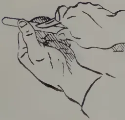
Correct position for cutting Bud
(knife diagonal.)
Wrong position (knife square across.)
CUTTING THE BUD.
Front View.
Side View.
Horizontal cut
in upward
direction.
INSERTING THE BUD.
Dotted lines
represent
bud-shield
under bark
of stock.
Cutting the Stock.
Bud inserted. Bud Wrapped.
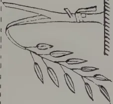
Stock split and bent
over on to ground.
TREATING THE STOCK.
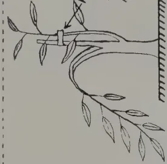
Wrapping re-used
to tie up new bud-
wood to upright
portion
of stock.
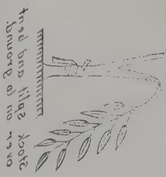
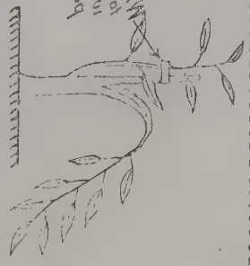
TREATING THE STOCK
Cutting the Stock
Front View
Side View
Horizontal cut
in upper
part of
stem
INSERTING THE BUD
Right side
bud-stem
under bark
of stock
Bud inserted
Bud Removed
The Bud
Correct position for cutting Bud
(knife diagonal)
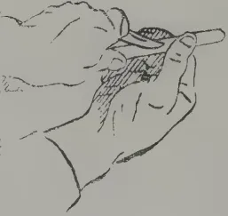
CUTTING THE BUD
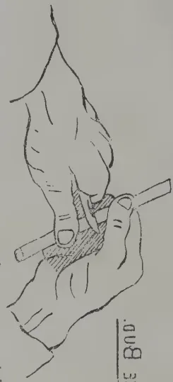
Wrong position (knife square across)
NOVEMBER, 1922.]327Tools.—The tools required are: A budding knife, pruning knife, pruning shear, oil stone, strop and a little oil. The most difficult part of budding is to have the tools well kept. The budding knife should be as sharp as a razor and needs a rub on the oil stone after every day's work. The strop should be taken to the nursery so that the budding knife can have a rub about every hour. The other tools also should be sharp and in good order if the work is to be properly done.
Division of Labour.—It is well to have one man to open the tree cut and insert the bud, and another to follow him and wrap. There can be further sub-divisions. It is necessary to get the bud in and wrapped as soon as possible,
When to Bud.—When the weather is hot and moist the year round budding can be done every month in the year. When there are defined wet and dry seasons, budding must be done between the two. Budding should not be done during the season when the nights are cool. When the tree is growing well it is right for budding. Do not force the bud.
Fertilizers.—If the soil has been used and is poor, do not use any organic manures such as oil cakes, fish manures, etc. These may encourage ants and may be very troublesome in a nursery.
N. V. HANMANTE; B. Ag.,
District Agricultural Overseer, District Kolaba, Bombay.
During the famine of 1918-19, in a period of extreme stress for fodder in the Eastern Deccan, a method was for the first time worked out which allowed the use of prickly pear as a fodder for cattle on a large scale, and which was successful in keeping the animals in health. The method used was described in a Bulletin* issued by PROF. J. B. KNIGHT, in 1920, but still a good deal of suspicion remained with regard to the fodder, which required further demonstration on a larger scale to convince cattle owners as to its utility in famine periods.
The famine conditions which prevailed in the Ahmednagar District in 1920-21 gave the opportunity for a further demonstration of the value of prickly pear, and it was decided to run several cattle camps in the district. The camp at Rahuri, of which the writer was in charge was run from the beginning with prickly pear as the principal rough fodder. It was started as a relief measure by the Collector of the district, the Agricultural Department of the Bombay Presidency being responsible for the management.
The bullocks for the camp were purchased in the surrounding bazaars at an average price of Rs. 19-4-0 per animal, though a large number was purchased at a much lower rate. The total number of cattle admitted into the camp was 1, 583. The animals required a little breaking in before
* BOMBAY DEPT. AGRIC. BULL. 97 (1920).
328[NOVEMBER 1922.they were content to eat prickly pear as their chief fodder, but in most cases they became quite accustomed to it within a week. The thorns of prickly pear were burnt off in the furnace (a modification of the village blacksmith's furnace) described in PROF. KNIGHT'S Bulletin, and then chopped into small slices. Various chopping devices were used, but most of the fodder was cut up in chaff-cutters. The chopped up prickly pear was then mixed with the requisite amount of cotton seed and fed to the animals.
The quantity of prickly pear consumed per day by a bullock, which was not accustomed to the diet, was from seven to eight pounds for the first six to ten days. After this period, the animal usually began to consume more, the maximum quantity eaten per day by an animal being as high as forty pounds. Even with this amount there was no derangement in the animal's digestion.
It is obvious that, owing to the extreme dilution of the food material in prickly pear, it cannot serve as a fodder alone, even as a maintenance ration. Furthermore, whenever attempts were made to feed it alone, the animals almost always scoured badly. In order, therefore, to supplement the nutrients in the prickly pear and to avoid the scouring action, two pounds of cotton seed and two to three pounds of dry grass were given daily to each animal.
The condition of the animals on admission to the camp was deplorable. There was, however, a rapid improvement when they were brought on the above ration, and after two months or so they became decidedly vigorous.
The animals were maintained in this way from the middle of February to the middle of June, 1921, when they were sold to the cultivators of the district. In the meantime, the bullocks were used for various kinds of light and even heavy work. The whole of the carting of grass and food, stuffs for the camp was done by the bullocks fed on prickly pear. The prickly pear itself was brought by the same means from places five to six miles away, and the cultivation of an area of land attached to the farms, where green fodder was grown under irrigation, was carried on by the same agency. These facts disprove the local opinion that animals fed on prickly pear are of no use for work even when they are given concentrated foods with it.
Out of the 1,583 animals brought to the camp, most of them in very bad condition, there were 56 deaths in all in four months. Fifteen animals died on account of extreme starvation before they were brought to the camp, and the remaining forty-one from rinderpest which appeared no less than four times in spite of careful segregation of new animals. In the cases of deaths due to previous emaciation, post-mortem examination showed no injury to the alimentary canal as the result of feeding with prickly pear.
The daily average cost of food per animal in the camp, including the carting and preparation of the prickly pear, the cost of cotton seed and the cost of the dry grass given, amounted to three and a half annas per day or Rs. 6-9-0 per month.
NOVEMBER, 1922]329During the whole run of the camp, it was noticed that it was very difficult, if not impossible, to bring old and weak animals into good condition by means of the ration provided, but that those which had not already suffered from starvation could be maintained without deterioration and without much trouble. Young animals accustomed themselves to the food quickly, and flourished on it, even when emaciated before being brought to the camp. As a method of saving cattle in years of fodder famine such camps should therefore concentrate their energies on young animals which will much better repay the attention bestowed upon them.—AGRIC. JOURNAL OF INDIA, VOL. XVII, PART IV.
The art of transplanting seedlings, the art of "transplanting" par excellence, is one that requires deft fingers, an attentive brain and a well trained eye. The essence of the art is to remove successfully a small, often delicate seedling from its original seed bed, be it box or bed in the garden, to a fresh site. Now, success depends on many small things, neglect one and your operation is a failure. First of all the new site must be thoroughly prepared, of good rich soil, suitable for the young seedling, for all but the hardier ones free from stones, sticks, grass, or other weeds, and of a fine tilth, neither too wet nor too dry. If a handful of soil is taken up, squeezed and remains in a ball when thrown down it is too wet, if it goes to dust without any signs of adhesion it is too dry; in the first case turn your soil over and allow sun and wind to dry it until the texture is satisfactory, in the second case sprinkle it with water and turn it over until it is satisfactory.
Take the greatest care in taking up your seedlings, especially if they were sown rather thickly, or you will break off innumerable root points and the young seedlings will suffer. In dry weather do not expose your seedlings to the hot dry air, cover them with damp moss or a wet cloth even if they are to be out of the ground only a few minutes. Transpiration when the young plant has no means of replacing lost moisture is a thing to be prevented by every means in one's power.
When planting young seedlings into the earth, be sure to make the hole deep and wide in proportion to the plant to be reset, be sure to put the seedling only a very little deeper than it grew originally, place it at the side of the hole, and press the soil with a perpendicular action, not laterally, very firmly around the young plant, being careful to make the soil firmer round the lower part of the root than the upper, but make it firm. Water the young seedlings thoroughly, immediately you have put them into the ground. Do not wait to finish a large bed but water at any rate within 5 minutes of putting out a portion of the plants. If you wish to test the correctness of the advice given here, put out a portion of your plants in a badly prepared dry bed, take up the plants carelessly, put them in deeply and loosely and leave them four or five hours without water and see the result. I have seen it in my own garden.—JOURN. OF JAMAICA AGRIC. SOC., Vol. XXVI, No. 8.
330[NOVEMBER, 1922.S. N. MULLICK,
Mullick Agricultural Farm, Ranaghat
This vegetable originally came from Europe; now all Indians use it and many try to grow it in their farms.
To achieve success in the cultivation of this delicious vegetable the ground must be well manured.
Two ounces of seed are sufficient for 50 square feet of seed bed and gives enough plants for one acre of land. To secure the best results transplanting should be done twice.
The seed-bed should be prepared before the rains in an open sunny situation. For early sowings the seed-bed should be raised a foot higher than the surrounding ground in order to secure good drainage, but for sowings made after the rains this is not necessary. The soil should be friable, and well manured.
The seed should be sown broadcast and covered with a thin layer (about one-eighth of an inch) of light sifted soil.
If the weather is dry at the time of sowing, water the seed bed with a fine-rosed can. The seed should not be sown when the soil is in a saturated condition.
Shade should be given during the middle of the day for the first week. Do not keep the plants always in shade because the less the shade the more robust will be the plant and less liable to attack from insects.
The plots should be clean and near water. From four to six weeks before planting, decomposed farmyard manure should be spread over the surface to a depth of 4 or 5 inches. Dig over to a depth of 15 to 18 inches, thoroughly incorporating the manure with the soil.
The seedlings should be planted in rows 3 inches apart and 2 inches from plant to plant. Here the plants will be much sturdier and hardier than before.
The second plot should be made as recommended before. Here the plants will be finally transplanted. Plant in ridges feet apart, 2 feet from plant to plant. The plants should be watered in the evening.
Cauliflower has several insect enemies. When these are noticed the leaves should be dusted every second or third day with the ash of cow-dung or sprayed with a weak solution of phenyle. If the latter is used a teaspoonful of the fluid should be mixed with one gallon of water.—INDIAN SCIENTIFIC AGRICULTURIST, Vol. 3, No. 8.
NOVEMBER, 1922.]
331
(FROM LEWIS & PEAT'S Ltd., LATEST MONTHLY PRICES CURRENT.)
| GOODS | QUALITY | PRICE | PER | PKGS | POSITION | MARKET |
|---|---|---|---|---|---|---|
| BEANS AND PEAS— | ||||||
| Butter Beans | Madagascar New Crop... | £13 a £14 | ton | Bags | Spot U.K. | Quiet |
| Rangoon Beans | Hand Picked | £7/5 | " | " | " " | " |
| Soya Beans | Manchuria | £11/15 | " | " | C.i.f. | " |
| Green Peas | Japanese, f.a.q. | £30 | " | " | " " | Market steady |
| " | Dutch | £24 | " | " | Spot " | " " |
| CAKES— | ||||||
| Ground Nut Cake | Bombay 55olo | £10/10 | ton | Bags | C.i.f. U.K. | Slow |
| Copra Cake | Malabar | £10 | " | " | " " | " |
| " | Ceylon | £9/10 | " | " | " " | " |
| " | Straits | £9 | " | " | " " | " |
| COPRA— | ||||||
| " | Malabar | £24/15 | ton | Bags | C.i.f. U.K. | Quiet, and prices easier |
| " | Ceylon | £24/5 | " | " | " " | " |
| " | Straits (F.M.S.) | £23/5 | " | " | " " | " |
| GROUND NUTS— | ||||||
| " | Bombay Decorticated | £19/10 | ton | Bags | C.i.f. Continent | Slow |
| OILS— | ||||||
| Palm Oil | Lagos | £32 | ton | Casks | Spot U.K. | Steady |
| " | Congo | £30 | " | " | " " | " |
| Coconut Oil | Cochin | 42/ | cwt | " | C.i.f. U.K. | " |
| " | Ceylon | 37/ | " | " | " " | " |
| Palm Kernel Oil | Crushed | 34/6 | " | Naked | Spot " | Quiet |
| PALM KERNELS— | ||||||
| " | West African | £16/10 | ton | Bags | { Ex quay L'pool Spot U.K. |
Steady |
| SEEDS— | ||||||
| Castor Seed | Bombay | £17/10 | ton | Bags | C.i.f. U.K. | Quiet |
| " | Madras | £16/10 | " | " | " " | " |
| Sesame Seed | Bombay | £21/15 | " | " | " Continent | " |
(From Perfumery and Essential Oil Record, Vol. 13, No. 10)
Camphor Oil is steady, white offering at 78s. to 80s. per cwt., inside figure in drums; forward business done at 75s. c.i.f.; brown on spot is 70s. (drums)
Cinnamon Leaf Oil is in fair demand; spot is easier, 4½d. per oz. and c.i.f. also lower at 3½d.; Mysore is quoted at 8s. 3d. c.i.f.
Cinnamon Bark Oil continues difficult to operate in view of so-called B.P. qualities being frequently sophistications, but the genuine is worth 6s. 6d. per oz., there are plenty of enquiries, but very few orders on the really genuine.
Citronella Oil.—The little Ceylon actually on spot has been selling at 2s. 6d., but new arrivals are now offered at 2s. 2d. to 2s. 4d. per lb.; forward is quoted at 2s. 1d. c.i.f. Java can still be had at 2s. 10½d. to 2s. 11d. per lb. for large quantities in drums, and at 3s. for small supplies; the c.i.f. position is steady at 2s. 9d. to 2s. 9½d., as against 2s. 8½d. recently.
Lemon Grass Oil.—Cochin is unchanged at 2¾d. for original drums, with to arrive at 2¾d. c.i.f. per oz.
Lime Oil is easier at 1s. 11d. to 2s. per lb. spot for distilled in large lines; hand-pressed has dropped to 7s. 6d.
332
[NOVEMBER, 1922.]
METEOROLOGICAL.
OCTOBER, 1922.
| Station | Temperature | Mean amount of cloud 0 = clear. 10 = overcast. |
Mean Wind Direction during month |
Daily Mean Velocity. |
Amount Inches |
No. of Rainy days |
Difference from Average |
|
|---|---|---|---|---|---|---|---|---|
| Mean Daily Shade |
Difference from Average |
|||||||
| Colombo | 80.2 | 0 | 84 | W | 92 | 10.92 | 21 | - |
| Observatory | 80.2 | 0 | 50 | WSW | 142 | 9.44 | 20 | + 0.54 |
| Puttalam | 82.0 | - 0.6 | 80 | WSW | 189 | 11.96 | 17 | + 4.09 |
| Mannar | 80.8 | - 0.5 | 78 | Var. | 187 | 13.55 | 16 | + 4.23 |
| Jaffna | 82.0 | - 0.8 | 77 | NE | 125 | 21.27 | 22 | + 13.24 |
| Trincomalee | 80.8 | - 0.9 | 61 | SW | 179 | 11.35 | 19 | + 4.98 |
| Batticaloa | 80.6 | + 0.2 | 48 | WNW | 253 | 3.48 | 12 | - 1.34 |
| Galle | 78.7 | - 0.9 | 69 | — | 193 | 3.10 | 12 | - 10.31 |
| Ratnapura | 80.6 | + 0.6 | 79 | — | 193 | 12.88 | 23 | - 6.12 |
| Anu pura | 81.4 | 0 | 76 | — | — | 11.72 | 21 | + 1.88 |
| Kurunegala | 80.6 | + 0.3 | 77 | — | — | 21.91 | 20 | + 6.57 |
| Kandy | 76.4 | + 0.6 | 80 | — | — | 12.95 | 22 | + 1.21 |
| Badulla | 74.8 | + 0.5 | 81 | — | — | 21.63 | 29 | + 11.97 |
| Diyatalawa | 68.4 | 0 | 80 | — | — | 15.87 | 27 | + 5.54 |
| Hakgala | 61.0 | + 0.2 | 86 | — | — | 20.16 | 26 | + 8.12 |
| N. Eliya | 60.6 | + 1.0 | 85 | — | — | 16.93 | 26 | + 5.96 |
A rough summary of the October rainfall can be obtained by drawing an approximately straight line from Puttalam to Hambantota. The rainfall was above average east of this line and below average west of it.
The dividing line may be defined a little more closely as just west of Kurunegala through Gampola, East of Hatton and west of Balansgoda. Both the biggest totals for the month, and the biggest offsets from average, were in the Nitre Cave and adjacent districts, St. Martin's 41.68 inches, Hendon 38.72 inches, and Alutnuwara 34.17 inches all reported more than double their October averages, while other reports above 30 inches include Kobonella, Dooroomagella, Oonoonagalla, Orwella, Koenakella, Mahadova, Duckwari, and Ledgerwatta. Off-sets of over ten inches above average were common in the Central Province and not infrequent in the North-Central Province, Uva, and the northern part of the Eastern Province.
In the area west of the line defined above, deficits of more than 10 inches occurred at a series of stations running southward from near Henaragoda to Galle. On each side of this strip deficits were not quite so great; between it and the west coast they were usually from 5 to 10 inches and east of it the area below average included a good deal of Sabaragamuwa and the Southern Province and extended into the south of the Central Province e.g. Maskeliya. Hatton was one of the most easterly stations that was in deficit, and recorded 12.75 inches or 4 inches below its average. In the parts of the North Western Province that were below average the deficits were usually not great particularly so at the inland stations.
As regards the distribution in time through the month, the first ten days were comparatively quiet though in some cases (e.g. in Uva) they included the first appreciable rain after a prolonged drought. There was heavy local rain on the 11th-12th including 6.04 inches at Hendon, and many stations had their wettest 24 hours for the month on the 15th-16th when nearly the whole of the northern half of the island received heavy rain. From the 21st onwards falls of over 3 inches in a day were very common.
The variation of the Humidity figures from average follow the general run of the rainfall i.e., above on the east, below on the west, and it will be seen from the table that the temperature offsets are mostly small and can be roughly summarised as positive inland and negative on the coast.
ANIMAL DISEASE RETURN FOR THE MONTH ENDED 30th OCTOBER, 1922.
| Province, &c. | Disease. | No. of Cases up to date since Jan. 1st. 1922. | Fresh Cases. | Recoveries. | Deaths. | Bal-ance Ill. | No. Shot. |
|---|---|---|---|---|---|---|---|
| Western | Rinderpest | 12 | 1 | 3 | 9 | — | — |
| Foot-and-mouth disease | 304 | 11 | 297 | 1 | 6 | — | |
| Anthrax | — | — | — | — | — | — | |
| Colombo Municipality | Rabies | 4 | — | 2 | 3 | — | 3 |
| Haemorrhagic Septicæmia | 56 | 37 | — | — | — | — | |
| Rinderpest | 138 | 1 | — | — | — | — | |
| Cattle Quarantine Station* | Foot-and-mouth disease | 15 | — | — | — | — | — |
| Rabies | 27 | — | — | — | — | — | |
| Haemorrhagic Septicæmia | 50 | — | — | — | — | — | |
| Central | Foot-and-mouth disease | 170 | — | — | — | — | — |
| Rinderpest | 33 | 16 | 4 | 29 | — | — | |
| Foot-and-mouth disease | 109 | 12 | 96 | 1 | 12 | — | |
| Southern | Anthrax | 10 | 4 | 7 | 10 | — | — |
| Piroplasmosis | 7 | — | — | — | — | — | |
| Rinderpest | — | — | — | — | — | — | |
| Northern | Foot-and-mouth disease | 6 | — | 6 | 2 | — | — |
| Anthrax | 2 | — | 4 | 33 | — | — | |
| Haemorrhagic Septicæmia | 37 | — | — | — | — | — | |
| Eastern | Rinderpest | 294 | — | 294 | — | — | — |
| Foot-and-mouth disease | — | — | — | — | — | — | |
| Anthrax | — | — | — | — | — | — | |
| North-Western | Rinderpest | 18 | — | 18 | — | — | — |
| Foot-and-mouth disease | — | — | — | — | — | — | |
| Anthrax | — | — | — | — | — | — | |
| North-Central | Rinderpest | 191 | — | 191 | — | — | — |
| Foot-and-mouth disease | — | — | — | — | — | — | |
| Anthrax | — | — | — | — | — | — | |
| Uva | Rinderpest | 7 | — | 3 | 4 | — | — |
| Foot-and-mouth disease | 2 | — | — | 2 | — | — | |
| Anthrax | — | — | — | — | — | — | |
| Sabaragamuwa | Rinderpest | 283 | — | 280 | 3 | — | — |
| Foot-and-mouth disease | 3 | — | 6 | 10 | — | — | |
| Anthrax | 16 | 16 | — | — | — | — | |
| Haemorrhagic Septicæmia | — | — | — | — | — | — | |
| Rabies | 1537 | 17 | 1532 | 5 | — | — | |
| 1 | 2 | — | 11 | — | — |
* Figures for October, 1922, not yet to hand.
Colombo, 2nd November, 1922.
G. W. STURGESS,
Government Veterinary Surgeon.
METEOROLOGICAL NOTES.
(Continued from next Column.)
The distribution of pressure was rather smoother than usual in October, and the mean wind velocities about equally divided above and below their averages, the biggest offset being at Batticaloa where the velocity was appreciably above normal.
A. J. BAMFORD,
Supdt. Observatory.
VOL. LIX.
PERADENIYA, DECEMBER, 1922.
No. 6.
Increasing interest is being taken in the production of fibres and the demand for certain classes of such products is at present great. The extraordinary demand for Kapok during the past year has resulted in frequent enquiries being made as to the commercial prospects of plantations of this product, and the shortage of supplies of flax has resulted in enquiries for fibres which may be employed as linen substitutes.
There is also a world shortage of cotton particularly of the long stapled kinds. Prices for all grades of cotton are firm.
The recent experiments with cotton in Ceylon have been decidedly promising and areas amounting to 250 acres have been opened up in the Hambantota district for the present season, while seed sufficient to plant another 350 acres has been distributed by the Department of Agriculture to other districts.
In certain areas, the prospects for cotton cultivation in Ceylon are promising provided sufficient attention is given to cultivation and to the proper control of insect pests. Whether the long stapled varieties can be grown year after year without deterioration has yet to be demonstrated, but it is interesting to note that the most promising of the experimental plots at Ambalantota at the present time are those sown with seed which was secured after careful selection from special plants selected in last season's cultivation.
The question of Kapok was fully dealt with at the last meeting of the Estate Products Committee of the Board of Agriculture, and at the prices now ruling for this product there is reason
334DECEMBER, 1922.to suppose that its cultivation would be profitable and particularly on those lands and in those areas which, by reason of a low rainfall, cannot be utilized for many tropical products. Experimental plots of this product have been established at Anuradhapura.
Roselle has been grown in several parts of the Federated Malay States and its fibre has been disposed of at very profitable rates. A small trial plot at the Anuradhapura Experiment Station has made very fair growth. This was grown from seed secured from the Philippines, but other varieties are now stated to be more promising and to give better results in wet districts.
The cultivation of the new fibre "Arghan" has been frequently discussed during the past few months, but all supplies of planting material in the East are at present in private nurseries in the Federated Malay States.
The demand for supplies of Sisal for planting purposes has been maintained throughout the year and beginnings on a small scale with this fibre are being made in several districts.
The erection of the small mill for scratching sisal has been completed at the Anuradhapura Experiment Station and trial runs have been made. These have been satisfactory and it is intended to commence regular work as soon as the present rainy season is over. The Maha-iluppalama sisal plantation is also making progress and machinery will be erected during the coming year.
There are vast areas of the Colony in the dry zone which are not at present utilized for the cultivation of economic crops and there is room for an enormous economic development if it can be demonstrated that profit-earning crops can be grown in this zone without irrigation. It was with this object that the Department of Agriculture started trials with various fibres and sufficient data have already been secured to warrant the belief that the development of these dry areas need no longer be delayed,
DECEMBER, 1922.]335The Kapok tree (Eriodendron anfractuosum) presumably of American origin, is now found growing in most tropical regions of the world; it is found in abundance throughout the Malay Archipelago and is now cultivated on a commercial scale in Java and adjacent islands, where its gaunt form and lean branches, leafless in the dry season, is a familiar feature of many roadside and riverine Kampong.
Its fruit, from 4 to 5 inches in length, is of an elongated egg-shape, and enclosed in a husk which, at maturity, becomes woody and burst open showing a number of spherical balls of white or cream-coloured floss lodged between five valves (placentas) of semi-ligneous, semi-pithy consistency. Unlike the lint of true cotton (Gossypium), the floss of Kapok does not grow direct from the seeds; it originates at the inner side of the capsule-valves and is not adherent to the seeds: hence the separation of the seeds from the floss is a relatively easy process, which can be done quite effectively by hand or by machinery of the simplest design requiring only very small power.
After freeing it from the seeds, the Kapok is put to dry in the sun, then pressed and packed in mats for export to Europe, where it is fast becoming an indispensable staple of many trades owing to its unrivalled qualities of lightness, buoyancy, imperviousness to water, its elasticity and silkiness.
The cultivation of the Kapok tree offers no new problem to the rubber planter: it presents the same cycle of operations, viz: clearing—draining—nurseries—lining—holing—planting from stumps, etc. But owing to the tender nature of the wood of the Kapok tree, white ants are apt to cause great damage and, where the operation is not too costly, the ground should be stumped, in places where the ants are known to be. Kapok is seen growing at different altitudes above sea-level, but it is seen at its best at low elevations along alluvial strips by the river side. From this it may be inferred that deep soils of a sandy loamy nature suit it better than other soils. It may also be inferred that Kapok likes open situations with a good circulation of air, such as generally exists along the course of rivers, and that confined situations in narrow closed valleys, where the air is still, will not suit it. Its very branching in widely spaced horizontal tiers is indicative of a sun and air-loving tree, and, for that reason the practice frequently followed by Malays of interplanting Kapok with coconuts, is not one to be recommended, although it fulfils well enough the purpose to which it is sometimes put in Java, of shading coffee or cacao or pepper, all plants of
* Extracts from a Lecture given at Kuala Kangsar, on August 16th, by E. MATHIEU, Superintendent, Government Plantation, Kuala Kangsar.
336[DECEMBER, 1922.smaller and slower growth than itself. Alluvial strips along rivers are, however, not to be found everywhere: in most cases, one has to make the best of one's circumstances, and, taking the good and the bad, to shape one's work towards the improvement of one's land by cultivation, by liming in some cases, by mulching, by inter-planting, and digging in, leguminous crops, which all tend to make compact soils more porous, besides increasing the supply of nitrogen, when it is short. By these means, soils of a heavy clayey nature (provided the subsoil allows of percolation) may be brought, in a year or two, to a high state of fertility and it is no uncommon sight to see bunches of Kapok trees doing well on high land, in soil of a refractory character, where the naturally unfavourable conditions have been corrected by design, or by fortuitous circumstance.
I have in mind a row of six Kapok trees, 9 years old, growing as a screen, in front of a stable built on a narrow promontory about 300 yards away from the sea-board, and 160 feet above its level. Nothing but rank bushes, and thin lallang grew on the hard-baked clay badly eroded by rains. Yet, owing to the supply of dung from two horses, the Kapok trees grew well and gave abundant crops.
The Kapok tree is reared from seed or from branch cutting which take very readily; and where old trees of a high-yielding character, or otherwise profitable, are available in the neighbourhood, it may be possible to reproduce the strain by means of cuttings; but, as a general rule, for planting on a large scale, seeds will have to be resorted to.
The opinion is often expressed that plantation from cuttings gives faster growth and earlier crops, than is obtained by plantation from seed: but this is open to question. According to the "JOURNAL OF THE SOCIETY OF ARTS" (23rd July, 1909) the reverse would be the case, that is to say that plantation from seed gives earlier results. Be this as it may, the clump of Kapok trees, referred to below, which were sown on the 15th March, 1921, shows that trees planted from seed do make very rapid growth.
One objection to the use of cuttings is that where there are white ants, they are very liable to be destroyed by them.
A second objection, the Malays tell you, is that trees grown from cuttings form no tap-root, and, for that reason, their life is shorter, and they are more liable to be uprooted by wind-storms than is the case with trees grown from seed. Three plants grown from cuttings, planted 4 months previously, were found, when uprooted and examined by me, showing a number of lateral roots issuing from between the bark and the callus formed at the original cut, but there was no vestige of a tap-root.
The seeds should be taken from pods with a thin husk that have matured on trees at least 7 to 8 years old; the pods should be of full size and picked soon after they have opened, when the floss is just showing below the peduncle.
It is possible to buy seeds very cheap from the establishments where Kapok is cleaned, but the use of such seed of unknown origin is open to serious objection. The pods may have come from young trees or from poor-yielding trees, they may have been plucked unripe. The best course
DECEMBER, 1922.]337would be, where possible, to buy the crop of one or two of the oldest and best yielding trees of a group after having opened a few pods. As a tree with 400 pods would give an average of 58,000 seeds, the stock of seed thus obtained would more than cover the requirements of an estate of 100 acres and afford an ample margin for future selection. This would imply some little expense, and the trouble of cleaning the Kapok, but the importance, for the future of the estate, of securing the best strain possible, is such that a few dollars more should not be considered.
If the seeds are not fresh, they can be roughly tested in water: they will not sink at first, but after a night's steeping, the heavier ones will have sunk to the bottom of the vessel: these alone should be used for sowing in the nurseries.
These should be laid out in slightly raised beds, feet broad, and of any suitable length. The seeds are sown 9 inches apart. A couple of germinating beds should be made close by, sown 3 inches by 3, to supply early any vacancies which occur in the beds, either from the failure to germinate, or from the act of insects. Allowing fully for such failures and also for selection among the seedlings, 6 pounds of seeds should be sufficient for the planting of 100 acres. One-third of an acre, allowing for drains and alleys between the beds, should meet the requirements.
If they have been originally well dug and freed from weeds by raking, the beds will require little attention beyond an occasional watering in times of drought. The nursery requires no shading. When, after 2 months, the seedlings are about 12 inches high, a little scouring between the rows with a garden fork will be found very stimulating to the young plants, especially if accompanied by a light watering with liquid manure: a handful of fowl droppings in a Kerosene tin of water, will suffice for many beds.
Under good treatment, and fair conditions, the young Kapok trees grow very fast. In a bed, at Kuala Kangsar, are now to be seen (16th August, 1922) a clump of trees planted on 15th March, 1921, some of which are 25 feet high, with a diameter of 5 to 6 inches at ground surface. On digging up one of the lateral roots, it was found to be feet long. This rapidity of growth explains the very general use of Kapok as a shade-tree for coffee, etc.
With such rapid growth, the trees cannot well be kept in the nursery beds for more than six months: past that stage they are too large for easy handling.
The young trees are treated in the same way as young rubber, that is to say, they are topped, the leaves are stripped and roots trimmed.
The tap-root is a long one, but the lateral roots are sparse, and in order to tear as few of them as possible, in the lifting, it is essential that the nursery beds should be previously softened by rain or by a copious watering. Moreover, the lifting of a plant causes it to lose most of its internal water, and, as owing to the mutilation of its roots, it cannot, for the time being, take up any fresh water, it is necessary that it should have a large supply of it in its cells at the time of lifting.
338[DECEMBER, 1922.The holes on good and should be spaced 18 feet 18 feet which allows 132 trees per acre. On poorer soils and on sloping ground, a distance of 16 feet would be sufficient.
As, so far as I know, Kapok has nowhere been put under systematic cultivation in Malaya, it is impossible to say with assurance when its bearing period begins and what yields of floss are obtained. Figures and information gathered from Kampong Malayas are vague and conflicting, and, to get reliable data, one must actually go to the trees at fruiting time, and take the figures on the spot. But, even then, as the groves are only in small groups and such groups offer no uniformity of age nor of growth, the striking of an average is of little practical value.
I counted over 400 pods on one tree—which, although it may be considered good, is not an exceptional number. Ten pods gave 1,870 seeds weighing 2 oz. 85, and oz. of floss. To conclude from this that 132 trees on one acre, planted 18 feet 18 feet, would give 52,800 pods with a content of 940 pounds of seed and 495 pounds of floss would have been misleading, for other trees round about the Kampong showed very poor crops.
We have to go, for more precise information, to the statements of the Department of Agriculture of Buitenzorg in Java, from which we gather that, under favourable conditions, a small crop of clean Kapok, amounting to about one pikul ( 133 pounds) per acre, or say one pound per tree, may be gathered at the end of the third year. The crop increases to to 2 pounds in the fifth year and thence forward the yield of 3 pounds of clean floss per tree, equivalent to 396 pounds per acre may be considered as a normal annual crop.*
From personal observations of the way the tree responds to cultivation, I am inclined to think that, under favourable conditions, as above stipulated, these figures are below the normal to be obtained from well grown trees under systematic cultivation. A general average of 400 pods per tree yielding a yearly crop of 4 to 5 pounds of floss, or 528 pounds per acre of 132 trees, appears to me to be obtainable.
But such results will only be attained on condition that the land receives proper treatment and that the practice of clean weeding, and the evils it implies, is given up for more rational methods. For it must be borne in mind that 528 pounds of floss taken annually from one acre represent only a small portion of its output.
Twenty ripe pods, taken off a heap weighing altogether 18 ounces, gave approximately the following components.
| Husks | ... | ... | ... | 8'— | } 18 oz. |
| Seeds | ... | ... | ... | 5'75 | |
| Floss | ... | ... | ... | 3'— | |
| Placenta and peduncles | ... | ... | ... | 1'25 |
* Note.—On June 18th, in company with MR. D. H. GRIST, Agricultural Instructor, I had one tree picked of its pods. The tree, said to be 9 to 10 years old, had grown uncared for, without any cultivation amid a grove of durian trees. Thus surrounded, it had, called by the sun, grown to a great height and the coolie had to climb up it to the first branches which were 30 feet from the ground and thence beat the pods down with a long pole, as is done for walnuts in Europe. It took 45 minutes to bring down the crop of 583 pods, a number of fruit being left on the tree. The 583 pods gave 6 pounds of No. 1 clean floss and 4 ounces of No. 2 soiled fibre. One hundred pods give roughly 1 pound of clean floss.
DECEMBER, 1922.]339One acre of 132 trees with 400 pods would, on this basis give a total output of 2,974 pounds made up as follows :— Husks 1,320 lb.—Seeds 948 lb.—Floss 500 lb.—Placenta, etc. 206 lb.
If the soil is to be maintained in its original state of fertility and of high yield, this yearly output of 2,974 pounds off one acre yearly must be made good by cultivation, by manuring or by the planting of restorative crops such as Vigna Sinensis, ground-nut, Lima beans, or velvet-beans (Stizolobium niveum) which are, as far as my experience goes, among the most prolific creators of nitrogen in these countries.
Fortunately, in the case of Kapok, the seed itself is a by-product of high value, consisting of about 50 % of seed-coat and 50 % of kernel containing up to 24.5 % oil (BULLETIN IMPERIAL INSTITUTE, Vol. XVIII, No. 3), the resulting cake, after expression, containing from 4½ to 5 % of nitrogen. The problem of manuring the land therefore solves itself, whether the planter sells the seed and uses the proceeds for the purchase of fertilisers, or whether he puts them back to the land, after passing through cattle.
With regard to the time it takes for the Kapok tree to first bear fruit, which was stated above to be the end of the third year, Mr. C. DRIEBERG, the well known Secretary of the Ceylon Agricultural Society, states in the Society's year book for 1917-1918, that the tree begins to bear in about two years. Judging from the growth of the 4 trees which were planted 17 months ago (15th March, 1921), I am inclined to believe that the same may be the case, in Malaya, with well grown trees.
In countries where there are well marked dry and wet seasons, the Kapok tree flowers at the end of the wet season or at the beginning of the dry season, and towards the end of the dry season the fruit is in the ripening stage.* It is ripe and ready to be picked when the shell has turned from green to brown, and, having shrunk considerably, it is well fretted with wrinkles. The pods however do not all ripen at the same time and two, sometimes three, pickings will be necessary to get all the crop in. The gathering is done by means of a small hooked knife at the end of a long pole, before the pods have opened, or immediately after the floss, bursting from the dehiscent shell, has become visible from below. It is of the utmost importance that the pods should be gathered at the proper stage of ripeness, for it is found that, even after a course of drying in the sun for several days, incompletely mature pods do not delisce; they turn brown, and take on the wrinkles of ripeness, but the shells do not open and, moreover, when they have been opened with a mallet, the floss is found to adhere quite strongly to the inside surface of the shells, so that it takes much time and many pulls before the fibre is detached from them.
With mature pods, the case is different; even if the shells were still closed at the time of picking, a couple of days' exposure to the sun sees them open of themselves, and the floss, completely freed from the shells,
* Note.—In the Kuala Kangsar District, the harvesting begins towards the latter part of April and lasts until the end of June.
340[DECEMBER, 1922.drops out in a lump at the least touch, while the five segments divide quite freely—which allows the capsule-valves to be extracted with the greatest ease.
Incomplete maturity affects very materially the cost of cleaning the fibre. To make this point quite clear, I made two separate lots of pods—one lot of 100 mature pods which after a few days' exposure to the sun had opened their shells, and another lot of 100 incompletely matured pod, from the same tree, which pods, although quite brown and wrinkled, after 9 days' exposure to the sun, had to be opened by beating with a mallet.
In the case of the 100 mature pods, it took one boy one hour and twenty minutes to divide the pods into segments to extract the capsule-valves, and to place the segments on the screen ready for the final beating.
In the case of the 100 immature pods, it took the same boy, working most diligently, three hours to accomplish precisely the same work. The beating itself, and the freeing of the floss from seeds, took just under twenty minutes in both cases.
Thus, briefly, a day's task costing 35 cents (boy labour) and taken as 7 hours of effective work would treat 525 mature pods, or 233 immature pods.
As, on average, one hundred pods go to one pound of clean floss the cost of cleaning one pound of No. 1 clean floss works out at :
Mature pods $0.066 plus 0.03 for beating = 0.096 per pound.
Immature pods 0.15 , 0.03 for beating = 0.18 per pound.
or $ 12.77 and $ 23.94 per pikul respectively.
According to MR. D. H. GRIST, who has made careful investigations through Lower and Upper Perak, Kapok trees are frequently to be seen in the former District, which are from 20 to 25 years of age. We may take it therefore that, under careful systematic cultivation, the life of a plantation will be at least as long.
The pods should be exposed to the sun for several days until they all show the usual signs of maturity, i.e., the shells take a brown colour with deep wrinkles, and they have begun to open below the peduncle.
The pods which do not open their shells are beaten with a mallet; one stroke or two suffice. The contents of the pods can then be scooped out, and put to dry in the sun on a cemented floor for a few hours. In opening the floss, the five capsule-valves which partition the inside should be drawn out, a quite easy process in mature pods as they yield readily to the least pull of the fingers. These valves constitute the waste included in the above figures and if they are not taken out at this stage, a large portion of the semi-papery semi-pithy substance, broken up in the subsequent operation of beating, remain inextricably embedded in the final product, forming small hard lumps which detract from the value of the fibre.
The proportion in weight of floss to seed is as 3 to 5, with slight variations according to the state of maturity.
DECEMBER, 1922.]341The complete elimination of the seed should be aimed at in the production of a high grade Kapok.
Discoloured floss should also be kept apart and packed by itself as a second grade. The discoloration to a dark shade of grey is due, in most cases, to the black pigment in the tegument of the seeds and it is visible in the angles of the capsule-valves in opening the latter. As stated above, the capsule-valves should be thrown out and the discoloured fibre should not be fixed with first grade fibre. The cleaning of the fibre should proceed as follows:—
1st. Opening of the pods and throwing away the shells for the compost heap.
2nd. Separating, with the fingers, the five segments into which the floss is partitioned. At this point, the discoloration, if any, is seen at the centre, and the pods are sorted accordingly in two heaps, i.e., pure white, and discoloured.
3rd. The placenta which divide the segments are drawn with the fingers and thrown out as waste.
4th. The divided segments are spread to dry in the sun for a couple of hours.
5th. The segments are spread on a perforated platform for the operation of beating. The beating can be conveniently done in large wooden cases, say 8 feet long by 3 feet broad and 18 inches deep with a false bottom of wire netting of inch mesh, on which the segments of Kapok are spread to a depth of 4 to 6 inches.
Previous to beating, the mass of segments is rubbed by hand for five minutes, on the screen; this causes the greater part of the seed to separate and to fall below through the false bottom of wire-netting. The fibre is then beaten with sticks, a process which has the effect of breaking up the spherical balls in which the seeds are embedded, and by tossing up the floss, of releasing the remainder of the seed which also falls below.
Thus freed from seeds, the floss forms into flakes which became thinner and thinner as the whipping proceeds. As a result of the division and subdivision of the floss into its elementary filaments, the flakes become so light that many are seen floating like cloudlets through the air.
Beating greatly improves the appearance of the floss by swelling it, by straightening the filaments and making the colour more uniformly white throughout.
'After a few minutes' beating, the top layers of the floss are taken off and given a second light beating on a separate platform, to rid them finally of any remaining seeds. The floss is then ready for packing. As one supply of segments is finished a fresh supply is put through the beating process, and so on until the whole stock is done with.
The beating can take place in the open, if there is no wind, but if there is the least wind, it must take place indoors away from any draught, for if the air is not perfectly still, the flakes are wafted away and, after floating for a while, they settle at a distance on floor, on tables, on shelves or anywhere, forming a litter of down which it is not easy to collect.
342[DECEMBER, 1922.So thin and light, in fact, are the flakes that they are barely visible and there is a danger of their entering men's mouths. For that reason, it will be imperative, while the beating is going on, to adopt the practice followed by the Natives of India, when they clean their cotton at the farm, by covering their mouths with a piece of loosely-woven cloth. If the work of beating is kept up for some hours, the eyes are also likely to smart from the same cause, and it will be a wise precaution to provide the workers with goggles.
When the trees are of moderate height, the gathering of the pods is a relatively simple affair and inexpensive. A coolie can take 25 trees in his day's round, which brings the cost to 2 cents per tree, or altogether, as he may have to go round three different times, to 6 cents per tree, which for 132 trees would bring the cost of harvesting to $ 8 per acre.
Where the trees are very tall, and high climbing is necessary, the cost, as was shown in the case of one tree picked in June 18th, is greater, but it need not be as great as shown in that particular instance, when the object was to get as much as possible of the crop, mature or immature, at one time.
In the case of such trees, the gatherer should concern himself mostly with those pods which have opened and which show their floss; these are made to fall easily by beating with the pole or by shaking the branches. Some of the floss will no doubt fall to the ground, but if the ground around is clean, it can be gathered unsoiled; or, if soiled, it can be gathered apart and freed from earth by beating on the screen.
Under such conditions, 15 minutes would suffice to bring down the crop in sight, and the gatherer could take 25 trees in a day's round, but it would need four or five visits to get all the crop as it ripens, and this would bring the cost of cropping to 8 or 10 cents per tree, or say $ 12 per acre. If we take this figure as the cost of harvesting, we shall, in most cases, be on the safe side.
We have already worked out the cost of opening and cleaning the floss of matured pods2 (the only case that need be considered), at 0.096 per pound, which is equivalent for 528 pounds (the assumed output of one acre) to $ 50.70 per acre.
Assuming that 3 men, weighing the fibre, packing it into the press box and working the press, turn out one bale in 30 minutes—assuming again that one man takes the same time to sew the matting and to mark it, we shall have 4 men turning out 14 bales of 90 pounds which is equal to 1,260 pounds in a day of 7 hours costing in wages () $ 2.
These 14 bales will require 28 mats costing each 20 cents or altogether $ 5.60 which brings the cost of bailing 1,260 pounds to $ 7.60 or say $ 8, and finally to the figure of $ 3.35 per acre with an output of 528 pounds.
We thus come finally to the following figures:
| Harvesting | ... | $ 12.00 |
| Screening and cleaning the kapok | ... | $ 50.70 |
| Bailing, pressing and mats | .. | $ 3.35 |
Total costs per acre of 528 pounds output $ 66.05
DECEMBER, 1922.]343As stated at the beginning of these notes, the fibre of Kapok does not adhere to the seed. There is therefore no need, as with cotton, for ginning machines which tear the seed from the lint : all that is required, to get a clean floss, is to loosen the seed from the surrounding mass and by gravitation, to give it a way out.
Whipping, which has just been described, is one way of doing this, but it would not be practicable for the treatment of large quantities of fibre, and, moreover the cost is high. Mechanical "ginning," if we may use the word, is then necessary. Machines have in fact been in use for some years by exporting firms, for cleaning Kapok, some worked by hand, some by motor.
One machine was credited with an output of 800 to 1,000 kilos of clean Kapok per day (Henri Jumelle). It was in the form of a vertical cylinder fitted inside with rows of blades fixed to its sides : inside this cylinder and on the same axis, a rotating shaft was also fitted with blades which alternated with those of the cylinder : seized successively between the blades of the cylinder and those of the rotating shaft, the Kapok was divided and its loosened mass let free the seeds which, by gravitation found their way to the bottom of the cylinder and escaped through perforations in it. The work performed by this machine was, however, reported to be not altogether satisfactory.
Various Dutch machines, described by MR. SALEEBY in Bulletin No. 26 of the PHILIPPINE BUREAU OF AGRICULTURE, have since made their appearance on the market. They are built on very much the same principle as the machine just described, some horizontal, some vertical, and are capable of turning out quantities of 120 to 200 kilos of floss per day with a motive power of to 1 horse power only. The price of one of these machines (the Lienau) was before the war 150 Pesos, without motor. (1 Peso = 2s. 0. 66d. sterling.)
These machines are all very simple in construction, and strong and, by their price, they are within the reach of all producers, large and small.
The clean floss is weighed into lots of a given weight, then pressed in hand-presses of the same kind as those used for pressing tobacco in Sumatra. Excess of Pressure would affect the resilience of the floss.
The bales exported from Java to Europe are made up to do 90 pounds with a capacity of 12 cubic feet (31 in. 25 in. 26 in.).
Kapok is also exported to Europe in so-called double bales weighing 1'60 pikuls and to Australia in bales weighing 1'20 pikuls and in single bales of 0'80 pikuls.
Matting can be used for baling Kapok, in preference to sacking ; matting being smooth of surface, the floss is less liable to attach itself to it in flakes than it does to sacking.
The following notes were read by MR. A. P. WALDOCK at the meeting of the Estate Products Committee of the Board of Agriculture held at Peradeniya on November 9th :—
The word "Kapok" is apparently of Dutch-Malay origin, and was originally used to denote the floss produced alone, not the trees itself. The alternative terms "Silk-Cotton" or "Tree-Cotton" are sometimes used, but commercially the term "Kapok" is now generally adopted. The trees belong to the family "Bombaceæ," of which there are many varieties. The true "Kapok" is the produce of a tree Ceiba Pentandra or Eriodendron Anfractuosum, and it may be distinguished from those of the allied genus Bombax by its smaller size and the fact that it has comparatively small whitish flowers, whereas the Bombax Malabarica has very much larger red
344[DECEMBER, 1922.flowers. The Bombax Malabarica is common, I understand, in Ceylon and goes by the Sinhalese name of "Katu Imbul." Another distinguishing feature of this tree is that the stem is covered with huge thorns, whereas the stem of the true "Kapok" tree is almost smooth with only a few of these thorns, usually of a smaller size. The floss of the Katu Imbul is inferior, and it is generally assumed that the Kapok produced in Ceylon and India is inferior to that of Java owing to the admixture of this floss with that of the true Kapok. Be this as it may, I have after many enquiries failed to ascertain that the floss of the former is used and the uncleaned kapok which I have had to deal with seems to have consisted only of pods of the Eriodendron, similar in every way to the samples supplied to me by the Director of Agriculture. I have, however, obtained sample pods from Java of what is known as Mid-Java Kapok and the floss contained therein certainly has a more silky appearance and is softer to the touch than ours, so that possibly we have not got the best variety in Ceylon. This is a matter worthy of investigation, so that if the industry be revived in Ceylon we may compete on equal terms with Java.
The growth of this tree seems eminently suitable as a village industry as it flourishes in a wider range of soils than most tropical plants of economic importance, and could be grown in almost any of the odd vacant areas often found in the villages. Once established practically no attention is required and the villagers would have only to await the ripening of the fruit in due season to reap their harvest. The business of the preliminary cleaning of the pods, i.e., the removal of the husks and the "nettai" or core would provide easy work in the home for the women folk and children. The uncleaned kapok is usually delivered with the husks only removed, but as the core is a waste product it would be advantageous if this also were removed by hand in the villages before delivery to the dealers. Approximately the fruit yields in weight 50 % of seed, 33 % in floss, and 17 % of core. I have no information as to the yield of Kapok in Ceylon, but according to figures given in a bulletin published by the Agricultural Department of the Philippines a tree in full bearing should give about 330 to 400 pods, while it requires about 100 pods to yield a pound of clean floss. If planted as a principal crop it is said that the trees should be spaced say 20 feet 20 feet or about 115 trees per acre, and on the basis of these figures the yield of clean kapok should be anything from 360 to 440 lb. per acre, which at present prices ruling for the product should give a fair return. The trees can, I believe, be usually grown along boundaries of estates and would provide excellent living standards for fences, apart from their value otherwise.
The industry has assumed considerable proportions in Java though I have no recent figures of export. In 1912 the export was no less than 10,000 tons and I think it may be safely assumed that with the growing demand for the article, the production has considerably increased in the past decade. In Ceylon the product has received little attention in recent years as an article of export, and little more of the Kapok has hitherto been gathered than would satisfy the small local demand. Recently, however, owing to the frequent enquiries from Europe and America more attention has been attracted to the product, and, were supplies available in quantity, a considerable export business could be developed. The Customs Returns for the eight months ended August last show a total export of only 1,587 cwt. two-thirds of which went to Holland, but had it been possible to satisfy the constant enquiries received a much larger export would have resulted.
I will not detain you further but think that I have given you sufficient information to show that there is a fair prospect for not only the villager but also the larger estate proprietor in the planting of this product and it seems to be worthy of some attention by the Agricultural Department with a view to making its possibilities better known.
DECEMBER, 1922.]345Before leaving this subject I should like to draw members' attention to another somewhat similar product, the value of which I do not think is known. Commercially the floss seems to be known as "Akund" and it is the product of shrubs botanically known as Calotropis gigantea and Calotropis procera. The Sinhalese call it "Wara" and the Tamils "Errakulai." As will be seen from the sample which I have here, it is more silky and of longer staple than Kapok, and as far as I know it is not used for the same purposes, though precisely what I cannot tell you. The shrub grows wild over nearly the whole Low-country I believe, and is usually to be found in abandoned chenas. The villagers do not seem to be aware that the floss has any commercial value, and as far as I know it has never been exploited in Ceylon, though it forms an article of export from both India and Java, and my firm has recently had inquiries for it, both from London and New York. Whether the demand for it is sufficient to justify investigation into it as a village industry and commercial proposition I do not yet know, but it might be worth while if the Agricultural Department make enquiries as to its possibilities.
In conclusion, I would like to say that most of my information in regard to Kapok has been obtained from Bulletin No. 26 of the Philippine Islands Bureau of Agriculture, a copy of which I have here and which gives many more details in regard to methods of planting, etc., than I have been able to include in my remarks. If the Committee consider the matter worth exploiting further perhaps the Department would be good enough to issue an up-to-date pamphlet on the subject.
In the INDUSTRIAL INDIA, VOL I, No. 12, is published an article on the above subject from which the following summary, which will be of interest to the Ceylon agriculturist, is taken:—
There are several species of the Hibiscus plants, of which Roselle is one indigenous to India and other tropical countries, from which fibre is obtained.
The Hibiscus Sadariffa (the name originated in the Philippines) has got two varieties, viz, the "Victor" and the "Altissima." The latter type Hibiscus Sadariffa var. Altissima (or Rosella) is more interesting. This was planted in Bengal over a hundred years ago by a DR. ROXBURGH, who has reported on it as follows:—"The bark abounds in flaxen fibre, but in none have I found so large a quantity of beautiful, glossy, and white fibres as in this. To these promising qualities may be added the luxuriant growth and habit of the plant, rendering it an object deserving of every care and attention; at least until the real worth of the material is ascertained."
"I find the best season for sowing seed in Bengal is just when the first rains begin, which is generally in May, in beds, and when the plants are about 6 in. high transplant them 9 in. asunder, and about as much from each other on the rows. In 1801 I had 40 square yards planted in this manner, which yielded 33 lb. of the naturally very clean fibre."
ROYLE in his work on FIBROUS PLANTS OF INDIA, some sixty years after ROXBURGH had made these experiments, makes the following statement:—
"The original fibres, obtained by DR. ROXBURGH, are still in the India House; they are 9 or 10 feet in length; a fibrous mass of fine and easily divisible fibre."
The yield obtained by ROXBURGH (deducting 5 per cent. for drains and paths) is equivalent to a yield of 3,820 lb. of clean fibre per acre, or nearly tons. These results were obtained in Bengal, which was not considered ideal for Roselle. In the Malay States with a rainfall of between 90 and 120 inches per annum better results had been obtained. There the plant is ready to cut four months after planting, and plants 10 to 12 feet high have been obtained and the output per acre had been doubled.
346[DECEMBER, 1922."Roselle" was first planted in the Botanical Gardens in Singapore for the purpose of jam making, but the "Altissima" variety was disappointing. It was only after its jam making propensities showed failure, that attention was paid to its fibre value, and experiments were carried out which have been wholly satisfactory. Samples were sent to England for examination, with a view to paper making, but the reports showed the fibre to be of too great a value for that purpose, as it could be used for most of the purposes that jute is used for at the present day.
Well-drained and carefully prepared beds are made, and the seeds planted equi-distant. The plants are allowed to grow until they attain a height of about 6 in., and then are transplanted into the field where they mature. The sticks are cut before the fruiting stage, as this produces a finer fibre.
"Retting" consists simply of steeping the fibrous sticks, put up in bundles, in water for a certain length or time, which varies according to the temperature. The higher the temperature, within limits, the shorter the steeping. Eight to twelve day's steeping is usually sufficient.
The actual factor responsible for the breaking up of the gummy cement is a fermenting process, due to the action of bacteria, therefore "retting" must be done in tanks or pools or more or less stagnant water, a rapid current being destructive to microbial action.
What we are concerned with, however, is the fact that retting done under proper conditions does effectually break up the gummy substance in which the fibres are embedded. What then remains to be done is to beat the bundle of sticks on the water, in order to isolate the fibres from the woody cores, and to free them of the outer cuticle.
The following directions are given by the Flax Society (ROYLE'S FIBROUS PLANTS OF INDIA):—
"River water is the best. If spring water is used, let the water settle for some weeks in a pond, so that the action of the air and sun may soften it. Water containing iron and other minerals should not be used.
Having explained the retting process, the process of how fibre is finally isolated from the retted sticks was also explained. Taking in his right hand a bundle of sticks, the coolie beats the thick ends with a mallet on a length of about 6 in., on a block of wood. This loosens the fibre at that end. At the same time, he breaks the beaten end by giving them one or two sharp twists this way and that; the twisting effectually severs the two portions of the inner core without severing the fibre. Then the upper part of the woody core ceases to be connected with the lower end. The coolie stands in the retting pool, and grips a bundle by the loosened end, and whirls it above his head, bringing it down with some force on the water in just the same way a "dhoby" washes clothes. This is done half a dozen times with a push and pull movement of the sticks in the water, and at each beating some of the wands will drop away from the bundle, leaving the fibre in the hand.
A rinsing in clear water then follows, and that is all. The operation of steeping is complete, a couple of days' drying, and the fibre is ready to be baled and marketed."
Roselle has been cultivated under different conditions of soil from a sandy alluvial loam to a stiff yellow clay at the foot of a hill. The plant has done well in most cases, but it has a thicker stem and grows faster in a fairly light loam.
Owing to the rapid growth and quick returns, at least two crops of Roselle could be produced yearly,
DECEMBER, 1922.]347The A. V. R. O. S. Experiment Station, Medan, Sumatra, has recently published a bulletin entitled INVESTIGATIONS ON OIL PALMS. The authors are Drs. A. A. L. RUTGERS, HEUSSER, and YAMPOLSKY, and MESSRS. BLOMENDAAL, VAN HEURN and MAAS. The bulletin is published in English at a price of 10 shillings (Rs. 7.50), and contains 125 pages of letter press, 19 excellent plates and 4 diagrams.
The conversion of the primitive oil-palm industry of West Africa into a systematic plantation industry has been slow. The Ceylon Department of Agriculture has for some time had in hand the preparation of a concise bulletin on the subject, and difficulty has been experienced in obtaining trustworthy records of such practical matters as yields, factory methods and marketing. It is precisely this class of information which is supplied by the Sumatra bulletin, and, while the bulletin does not claim to be a complete treatise on the oil-palm, it sheds much light on problems which have hitherto hindered development, and should be in the hands of everyone interested in the subject.
The chief points of interest in the bulletin are summarized in the following paragraphs for the information of readers of the TROPICAL AGRICULTURIST:—
The oil-palm was imported into Java as early as 1848, and the Dutch Government established 14 acres of cultivation in Java and 3 acres in Sumatra in 1858. These were completely successful, but the large supplies from West Africa and the difficulties of handling the oil-palm fruits hindered the establishment of plantations for many years. The following figures shew the beginning and rise of the industry on the East Coast of Sumatra:—
| Year. | Total Area of Plantations. |
|---|---|
| 1910 | ... nil |
| 1914 | ... 6,500 acres. |
| 1917 | ... 6,500 " |
| 1918 | ... 8,500 " |
| 1920 | ... 17,100 " |
| 1922 | ... 28,000 " |
Sumatra has had better fortune than other countries. The original four plants imported in 1858 were of a good type, and their descendants have inherited their good qualities. A thick oil-bearing pulp, medium thickness of shell, a kernel of good average size, and purity and stability of the resultant seed are the chief characters of this "Deli" type, and most of the existing plantations have been set out from this seed. Later importations from West Africa have shown that many worthless types exist there.
348[DECEMBER, 1922.Variations in the oil-palm appear to be as numerous as those in the coconut palm, and hitherto attempts to classify and name them have been elaborate and unsatisfactory. It is a relief to turn from these classifications, based largely on minor difference of colour, shape and habit, and to note the simple agricultural classification used by the Sumatra workers.
Five types are recognised (a) Congo, practically worthless on account of its thin oil-pulp, thick seed-shell and small kernel, (b) Deli type, a good average variety, (c) Lisombe, with large kernels, thick oil-pulp and very thin seed shell, (d) pea type, with no shell, very small kernel and large proportion of oil-pulp, and (e) mantle type in which the fruit is surrounded by numerous oil-bearing carpels. The Lisombe and Mantle types are regarded as being extremely promising, and it is possible that productive strains from these two together with selected strains of Deli will eventually replace the existing mixture of inferior and mediocre types.
Two lines of work have been started in order to improve the yield of oil. Estates have begun to cut out those palms which possess inferior characters, in order to preclude the possibility of cross-fertilisation. On the other hand, the Experiment Station has selected seed from desirable trees and is using these as parents. Low percentage of shell, high yield of oil per tree, and the power of transmitting these characters to their descendants are the points desired. So far, no correlation has been found between external characters of the palm or fruit and the oil-producing capacity.
Measurement of leaves and observations in the field indicate that feet is probably rather too wide a planting distance, while the minimum allowable is feet: these distances would give 50 and 64 plants per acre on the square system, and 58 and 73 plants if the triangular system be employed.
Normally the oil-palm seed take from 6 to 12 months to germinate. Work in Sumatra has shewn that, by heating the seed to (), the period may be reduced to two to four months, and this method is becoming a matter of ordinary estate routine. Heating is carried out by placing the seed for a fortnight between layers of fresh dung in shallow pits in the soil: the heat of fermentation of the dung is sufficient. The same result is obtained if the seed is immersed in water for a week, the temperature of the water being each day raised to by means of a lamp. Seeds freed from their pulp germinate more quickly, and fully-ripe seed more quickly than immature or over-ripe ones.
In addition to treating the questions of catch crops, green dressings, clean-weeding, preventing loss by erosion, the annual removal of plant food by the crop, and the cost of running a Fordson Tractor, this chapter gives valuable information regarding the effect on the crop of cutting off the lower leaves of the oil-palm.
Until comparatively lately it has been generally accepted that higher yields are obtained when the leaves below fruit-bunches are cut away, and the practice has apparently been carried to excess on the Sumatra plantations. The records in this bulletin show conclusively that this severe pruning causes losses of crop varying from 10 to 40 per cent. Basal leaves should be cut away, but leaves supporting fruit-bunches should remain until the bunches are mature and have been reaped.
DECEMBER, 1922.]349This chapter of the Sumatra bulletin is specially noteworthy for its excellent photographs and drawings. Among the latter, there is given a sketch of an aspirator or atomizer used for blowing pollen on to the female flowers. Owing to the arrangement of flowers on the bunch, and the large number of flowers present, pollination is rarely complete in the oil-palm and many fruits are aborted or partially developed.
Artificial pollination has apparently become a part of ordinary routine on some Sumatra estates. Trials during two estate harvests have given the following results :
| No. of Palms | Pounds of Fruits produced. | |
|---|---|---|
| Natural Pollination | Artificial Pollination. | |
| 700 | 2,341 | 5,630 |
| 700 | 5,174 | 13,767 |
increases were 141 % and 166 % respectively.
A labourer new to the work can pollinate 500 trees per day, an experienced labourer 1,000 trees. As the operation is necessary every third day, it is possible to give a block of 3,000 palms to each expert labourer. Two coolies can collect in one afternoon enough pollen to keep 10 pollinators occupied next day. By storing the pollen over quicklime, it has kept fertile for nine weeks, a remarkable result considering its fragile and perishable nature.
Height of the palm and the number of leaves present, which were the two data previously used for roughly estimating age, obviously vary considerably with the soil and climate. The method evolved by the authors of the bulletin is typical of the care which has been bestowed on all sections of their work.
The leaves of the palm are arranged in 8 spirals around the trunk, and the leaf bases, like those of the talipot, are persistent for years. The number of leaves annually produced increases as the palm reaches the zenith of its vigour, and then gradually lessens. By counting the leaves and leaf-bases on one spiral of each palm, and repeating the observation on 780 palms of known ages, the authors have constructed a table of annual increases in leaf production from the 1st to the 30th year of bearing.
The results of this work are obviously applicable to Sumatra alone, but the ingenious and simple method can be used to compile similar tables elsewhere.
One suspected fungoid disease (crown-disease) has been noted in Sumatra, the causal organism being so far undiscovered. Among the insect pests, Rhinoceros and Red Beetles of coconut palms are noted as also attacking the oil-palm. The authors realize that as the areas under oil-palms increase it is probable that certain diseases will become epidemic, but so far Sumatra has escaped lightly.
The oil-palm industry is now at the threshold of developments by which the inferior oil produced hitherto will be replaced by a high-grade product. The present product cannot be used for edible purposes, owing to its large content of free acid. This acid develops in bruised fruit with incredible rapidity, as may be seen by the following table :—
| Unbruised pulp | ... | 1 to 2 % | free acid |
| Freshly removed pulp | ... | 11.7 % | " |
| Immediately after pressing | ... | 42.9 % | " |
| 5 minutes " " | ... | 66.5 % | " |
| 15 " " " | ... | 78.2 % | " |
| 60 minutes after pressing | ... | 85.1 % | " |
Immediately after rupturing the cells of the fruit, enzymes (fermenting bodies) attack the oil and split it into free acids.
This acid oil is sold at good prices (£40 per ton) for soap making, but palm-oil is peculiarly suitable as a base for edible fats such as margarine, and this must eventually be its chief use. The trouble is prevented if the enzymes are killed by heating the fruits before pressing, and in this way oil containing only 1 to 4% of free acid is produced.
The primitive West African method consists in removing the fruits from the bunches by hand, and pressing them by hand under warm water in kettles or pans: the loss of oil is great, and the quality is poor. The earlier plantation method in Sumatra consists in removal of the fruit from the bunches, either by hand or by mechanical threshers, boiling the fruit in pans or steaming them in steam-chambers, removing the pulp by machines, and then pressing the pulp in hydraulic presses. By this method the percentage of free acid in the oil remains high, as the preliminary bruising caused by removing the fruits, whether by hand or machinery, sets free enzymes which attack the oil: the yield of oil is however more satisfactory than in the West African process.
Trials in Sumatra show that high-grade oil is produced if the bunches are heated by steam or hot water before the fruit is removed, and it is probable that in this method will lie future developments of the industry. The whole factory processes will then include:—
Heating the bunches before threshing, in addition to killing the enzymes, renders the removal of fruits from the bunches much easier. Drying after heating is apparently necessary because the threshers do not work satisfactorily with wet fruit, and also because the natural moisture of the fruit affects the quality of the oil.
Steamed fruits naturally do not require the same degree of drying as do boiled fruits. On the other hand, the difficulty of constructing steam chambers large enough to contain a great number of bulky bunches, makes it probable that hot-water tanks, combined with a subsequent travelling way through drying passages will be found the cheapest and easiest method.
The authors have carefully estimated the cost of the various methods of handling the fruit, and conclude that boiling the whole bunches in hot water tanks will be found cheaper than hanging them in sheds until the fruits ripen and fall. In spite of the increased cost of transporting whole bunches, it appears certain that the higher quality of the oil will more than pay for the increased cost: plucked fruit cannot be made to produce oil of good quality.
Satisfactory machinery is now obtainable from several firms in Europe for threshing, pressing the fruit, de-pulping, pressing the pulp, crushing the seeds and pressing the kernels. The one link missing from the chain is the devising of the best and cheapest method of heating and drying the bunches. There is no mechanical difficulty involved: there is simply the fact that growers are uncertain whether steaming or boiling is the more efficient method, and the decision is not likely to be long in coming.
DECEMBER, 1922.]351Detail of machinery and of costs cannot be dealt with here, but can be found by reference to the bulletin and to other publications on the subject.
Standard casks for shipment of palm-oil are described in this chapter, and also the specifications for valuing palm-oil in the Liverpool market are quoted in full. It is clear that the Liverpool specifications are at present based on acid West African oils, and that high-grade plantation oil will need new and special methods of valuation.
The hardening or solidification of palm-oil is necessary before it can be used for manufacture of margarine. This process is usually effected by means of hydrogen. The Sumatra authors think that this should be left to manufacturers in Europe, and that the process will not become part of the plantation routine, in spite of the greater convenience of shipping solid oil. Bleaching of the oil, which also causes some degree of solidification, will probably form a regular part of the factory work of plantations.
The experiments recorded in this chapter were carried out for the most part on plantations. They show that the fruiting of oil palms is not uniform over the whole year: maximum ripening usually occurs in the dry months and minimum in the wet, dull months. Even, well-distributed, plentiful rainfall is necessary for the oil-palm. 100 inches per annum appears from available data to be necessary for optimum results.
New and more accurate figures for the composition of the fruits are published here. Careful records and weights give the following results:—
| Pericarp (pulp) | % | fruit | ... | ... | 59.5 % |
| Shells of seed | % | „ | ... | ... | 32.2 „ |
| Kernels | % | „ | ... | ... | 8.3 „ |
100.0 |
|||||
The pericarp yields 50 % of its weight in oil and the kernels 50 %.
Records from plantations and experiment stations enable the writers to put forward the following estimates of yield with a fair degree of confidence: the figures are regarded as below the probable yield on an efficient plantation.
| Fruit. | Palm-oil. | Kernels. | ||
|---|---|---|---|---|
| 4th year | ... | 2,516 | 755 | 200 |
| 5th—7th years | ... | 5,034 | 1,510 | 401 |
| 8th—10th years | ... | 5,663 | 1,698 | 452 |
| 11th—20th years | ... | 7,480 | 2,244 | 598 |
| 21st—30th years | ... | 7,480 | 2,244 | 598 |
| Over 30 years | ... | 4,400 | 1,320 | 352 |
The average price of pulp-oil is taken at £40 per ton and of palm-kernels at £25, these prices being lower than present market quotations.
This bulletin records the great step forward that has been made by the oil-palm industry in the last few years. From the earliest primitive industry carried out in West Africa, it is developing into an organised and capitalized plantation industry. The bulletin is a record of the excellent investigations carried out by the authors in Sumatra, and should be in the hands of every one interested in the subject.
G. G. AUCHINLECK.
352[DECEMBER, 1922.W. N. SANDS, F.L.S.,
Assistant Economic Botanist, Dept. of Agriculture, F.M.S. & S.S.
In January of the present year, the writer, acting under instruction received from the Acting Director of Agriculture, F.M.S. & S.S., visited the chief districts in Java where Cinchona is successfully cultivated in order to obtain as much information as possible concerning the industry as carried on there. The following account is the outcome of that mission.
The history of the introduction into Java from the South American Andes of the different species of Cinchona which produce the barks used in the preparation of quinine, and allied alkaloids, is fairly generally known and need not be referred to in detail here. Briefly, it may be stated that the first attempts at Cinchona cultivation in Java were made in 1852, but these were not a commercial success because the species grown gave such a low yield of alkaloids. In 1865, however, the industry was established on a firm basis following the introduction of seed of a variety of Cinchona very rich in quinine, which was secured in South America by an Englishman named CHARLES LEDGER and known under the name of C. Calisaya, var. Ledgeriana (Howard) or C. Ledgeriana (Moens).
The Ledger seed sown in Java yielded 20,000 plants, and it is mainly from these that the remarkable industry has been built up. It may be of interest to add that several survivors of the original Ledger trees are still to be seen in the Government Cinchona Plantations at Tjinjiroean in the Pangalengan district.
As Cinchona cultivation was established in Java as far back as 1865, planters there have available upwards of 50 years of accumulated scientific results and practical experience to guide them in their efforts.
The production of Cinchona bark has become a highly specialized undertaking and the large measure of success which has been attained has led to the capture by Java of the world's market for quinine.
The phenomenal success is due chiefly to :—
It may be mentioned that recently there has been some restriction of output of bark in order to maintain remunerative prices for quinine sulphate in foreign markets.
DECEMBER, 1922.]353ACREAGE PLANTED AND EXPORTS OF QUININE AND BARK.During the past six years, judging from the large quantities of seed and plants supplied to growers from the Government Plantations and private nurseries, there has undoubtedly been an increase in the area of Cinchona planted, but the acreage now available for new extensions is very limited.
It is difficult, for various reasons, to obtain reliable figures of the total area under Cinchona in the Dutch East Indies, but it is estimated at between 35,000 and 40,000 acres for Java, and 1,900 acres for Sumatra.
The exports of Quinine and Bark from the Dutch East Indies for the five years 1916-1920 as given in official reports are as follows :—
EXPORTS OF QUININE SULPHATE.| Year | Quantity | Value |
|---|---|---|
| 1916 ... | 115,175 k.g. ... | 3,800,775 guilders. |
| 1917 ... | 120,978 " ... | 6,563,880 " |
| 1918 ... | 252,636 " ... | 12,808,547 " |
| 1919 ... | 640,328 " ... | 32,336,566 " |
| 1920 ... | 418,861 " ... | not available. |
| 1916 ... | 8,258,474 k.g. ... | 5,533,177 guilders. |
| 1917 ... | 2,735,440 " ... | 2,790,149 " |
| 1918 ... | 2,439,500 " ... | 2,488,289 " |
| 1919 ... | 5,420,796 " ... | 5,529,213 " |
| 1920 ... | 4,636,244 " ... | not available. |
The average yearly exports of quinine sulphate for the period named are 311,395 k.g. (686,042 lb.) and bark 4,698,091 k.g. (10,350,482 lb.) Taking the average percentage of quinine, calculated as quinine sulphate, in Java barks at 6.25%, the above quantity of bark would yield about 646,905 lb. of quinine sulphate, which amount if added to 686,042 lb. of locally manufactured salt, gives an annual production of 1,332,947 lb. This output is probably in excess of the demand of the world's markets at the present time.
Under an agreement between growers and manufacturers, the latter have contracted to purchase at a minimum price such a quantity of dry bark as will yield 1,134,609 lb. of quinine sulphate. This amount could be obtained from 1,153,744 lb. of bark. As the yield per acre of a well managed plantation in a suitable district is 650 lb. of dry bark equal to 40 lb. of quinine sulphate, the total acreage required to produce this amount would be 28,365 acres only. Considering that it is estimated that there are well over 35,000 acres under Cinchona it means that after deducting the output of the few growers not working under agreement with the Dutch manufacturers who are, as mentioned before, restricting their purchases, and estimating that low yields from unfavourably situated cultivations are counterbalanced by high yielding ones, there is a considerable reserve of bark which could be harvested and placed on the market should circumstances warrant such action being taken.
The Java industry, therefore, is in a very strong position, and it is said that the quinine derived from the local bark represents 95% of the world's output.
354[DECEMBER, 1922.Most of the Cinchona plantations are situated on the slopes of the mountains at elevations between 3500 and 6000 feet. Fairly steep as well as gently sloping land is used. In some places the land is almost flat, but for the most part the cultivations are on sloping ground where rain and soil water can readily drain away. The soils are light loams of volcanic origin, usually of good depth, rich in plant food and easily worked.
The best results are obtained on freshly cleared jungle land with its high percentage of organic matter. Here the growth of Cinchona, particularly "Ledgeriana" reaches its maximum development and yields bark with the highest percentage of quinine. It is important to note that there is now available very little jungle land for the growth of "Ledgeriana" seedlings, and these rarely thrive on land previously used. Stony soil is unsatisfactory as it is very troublesome to cultivate and renders harvesting operations difficult. Clay soils are said to be quite unsuited for Cinchona. On poor lands the trees never develop satisfactorily.
The best soil, therefore, is a deep light friable loam rich in organic matter, well drained and with a gravelly or other porous sub-soil. A sloping yet sheltered situation is necessary. Exposure to high winds may destroy trees and branches. On the other hand, in very calm and sheltered places diseases of stem and branch may cause more damage than in open situations. Injury due to the frost has also to be guarded against. Low-lying areas in the Pangalengan highlands were seen on which Cinchona had been killed by it. At 5,000 to 6,000 feet elevation in Java no damage is done by frost on sloping lands although in adjoining depressions frost may frequently be experienced in the dry season.
Cinchona, particularly the high-yielding and valuable "Ledgeriana" type, is most liable to the ill effects of unfavourable soil conditions, yet its range of growth is capable of extension, within limits, by the grafting of strains selected for particular conditions on the "succirubra" species.
The chemical analyses of some of the best Cinchona soils in Java indicate that they are well supplied with nitrogen and phosphorus, but the writer was surprised to find in an extensive series of analyses of soils of a large group of estates no mention of potassium, and it may be that lack of available potash is the limiting factor on the poorer or previously cultivated lands, judging from the physiological effects produced. In similar volcanic soils in the West Indies an insufficient supply of potash in the soil led to the dwarfing of cotton plants, the reddening and the premature shedding of their leaves such as was frequently seen in certain Cinchona nurseries and cultivations.
It is difficult to foretell what effect the dissimilar mountain soils of Malaya would have on the growth and yield of the best quinine producing species and varieties, but the formation of observation and selection gardens at suitable elevations would soon solve this problem.
Cinchona is chiefly grown in Java at elevations between 3500 and 6000 feet above sea-level. Below and above these altitudes the yields of bark are not good. The most suitable elevation is from 4000 to 5500 feet the height of the best estates in the Pangalengan highlands.
DECEMBER, 1922.]355There are cultivations established as low as 3200 feet where the trees grow rapidly in early years, but they have a short life—about 15 years only, and are more susceptible to disease. At 7000 feet the growth of the trees is slow and yields are low. The effect of elevation on the percentage of quinine in the bark is negligible between 3300 and 6000 feet where other conditions are similar.
With regard to low elevations, the experiments in Malaya with Cinchona at 1500 feet have clearly shown that the bark produced is useless for manufacturing purposes on account of the small quantity of quinine it contains.
A heavy and well-distributed rainfall is required. In the Pre-anger and Cheribon mountains, where over 90% of the bark is produced, the annual rainfall is from 115 to 210 inches. The wetter period of the year is from November to April, and the drier from June to September. The driest month is August. On a large group of plantations where the mean annual rainfall for the five years 1916-1920 was 164 inches, the average number of days per annum on which rain was recorded was 209.
It would appear certain that a minimum yearly precipitation of 100 inches is necessary for the best development of the tree, but this must be so evenly spread over the year that no long periods of drought intervene.
As mentioned previously, areas where frost occurs have to be avoided. The day temperatures of the best Cinchona districts range between 54°F and 86°F, and the night temperatures between 46°F and 59°F. The lowest night temperatures are experienced in the drier months of the year.
There are many species and varieties of Cinchona, but few are of commercial importance. At the present time most of the bark used for manufacturing purposes is produced by the "Ledgeriana" variety of Cinchona Calisuya. "Ledgeriana" strains produce excellent bark with a quinine content higher than any other kind. They thrive best between elevations of 4000 and 5500 feet.
The original Ledger trees showed much variation in growth, bark characters and quinine content even when grown under similar conditions. The variation in quinine content alone is stated to have been from 3% to 13%. Many strains of this variety have been selected for particular purposes or characters, and wide differences are to be seen between the various types.
The points which receive particular consideration in selection work are:—
(a) Strong healthy growth; (b) erect stem and erect branching habit; (c) the size and colour of the leaves; (d) thickness of bark; (e) quinine content of bark; (f) age at which first flowers are formed; (g) resistance to pests and diseases.
The growth character is most important for it is found that certain strains which thrive in one locality do not grow satisfactorily in others, the result is, that on estates in different districts quite distinct types suited to local conditions are to be observed.
356[DECEMBER, 1922.The stem and branching habit of the several types show wide variation, and unless these with an erect manner of growth are selected the trees quickly crowd each other and require frequent thinning so that a smaller yield of bark, per unit area is obtained from strains with the spreading habit than from those with erect characters. Strains with reddish leaves of medium size are favoured by planters, still some of those with green leaves are also good bark producers.
As a good yield of bark is of first consideration, strains are selected with thick bark provided that the quinine content is not below the average. Types are found which produce bark with a very high quinine content, but as a rule their vegetative characters are poor.
The age at which a tree flowers is important for early flowering is correlated with loss of vegetative vigour. As the richest bark is produced in 6 to 8 years after planting, trees which flower before reaching the latter age are not selected.
As to the selection of types showing resistance to pests and diseases, strains were seen which were certainly far less damaged by the sucking insect (Helopeltis Antonius) than others on the same plantation. In regard to diseases some of the selections were not as badly attacked by pink-disease (Corticium Javanicum) as others, and planters expressed the opinion that the apparent resistance shown by particular strains to the above-named pest and disease was real.
The "Ledgeriana" types can only be successfully grown on their own roots on virgin land, of which there is a very limited area now available. Practically all the fields when replanted are put under selected "Ledgeriana" strains grafted on C. succirubra, which has a much stronger root-system than "Ledgeriana" and grows well over a wider range of territory and in poorer soils.
In a few years it may be expected that practically no strains other than selected "grafted Ledgeriana" will be grown on most of the Cinchona areas. A first generation hybrid between "Ledgeriana" and "succirubra" which produced the so-called "hybrid bark" was rather extensively grown at one time but it is rapidly disappearing. This hybrid had vegetative characters more closely resembling C. succirubra than C. Ledgeriana but was richer in quinine than the former. It was grafted on to C. succirubra.
The variability shown in the growth and leaf characters of some of the "Ledgeriana" selections appear to indicate that they may have been derived from hybrid trees which had been back-crossed with 'Ledgeriana' but as they are propagated by grafting only, they retain the characters for which they were selected.
"Cinchona succirubra produces the bark used for pharmaceutical purposes, and is grown on a few small estates where the elevation and land are not as a rule suitable for 'Ledgeriana'. Large estates grow very little of it for this purpose as the preparation of the bark requires expert knowledge and is troublesome and expensive. On all large estates, however, it is extensively used to produce seedlings for grafting purposes only."
DECEMBER, 1922.]357Small plots of C. officinalis and C. Pahuadiana were seen but they are not of commercial importance to-day.
It will be seen therefore that only two kinds of Cinchona are being grown extensively in Java and the one of the greatest importance is 'Ledgeriana' from which especially good strains have been isolated.
Several of the best 'Ledgeriana' types now in cultivation had their origin as chance seedlings in plantations, whilst others have been obtained as the result of planting plots of high-yielding trees under isolation conditions in the forest. It is well known that the original 'Ledgeriana' seedling showed much variation, with the result that their offspring are also variable in character. In no single instance was a plantation of 'Ledgeriana' seedlings seen in which variation was not observable, even when the seedlings had been derived from isolated seed-plots of selected grafted strains, and the seedlings had been carefully sorted out in the nursery before being taken to the field. The breeding of Cinchona presents special difficulties owing to this, and also to the fact that the genus has dimorphic flowers, that is, some trees produce long-styled flowers only and others short-styled. The long-styled are more numerous. Seed is produced as the result of the natural crossing by insects of long and short-styled flowers. As far as could be ascertained it is not yet definitely known (a) whether there are self-fertile trees, (b) whether long-styled flowers can be fertilized occasionally by pollen from similar flowers on other trees, (c) whether short-styled flowers are sometimes fertile to pollen from similar short-styled flowers on other trees. All experiments so far have given negative results. Observations show that in any plantation with either long or short-styled types only, very few seeds are produced, whereas in seed-gardens where the two forms are always planted together, an abundant supply of seed is obtained. To procure seed, therefore, and also to obtain new types, isolated plots are formed in clearings in the jungle far removed from plantations.
The small isolated plots contain two specially selected grafted Ledgeriana trees, one with long, and the other with short-styled flowers, but here difficulties arise for the two trees may not flower simultaneously, for example, one of them may flower when 8 years old and the other not until it is 25 years of age or more. Even should they flower in the same year the flowering period may be different. However, records were seen of some of the results obtained from these plots: in one case the two selected parental types had an average quinine content of 10% and were derived from the original 'Ledgeriana' trees which contained from 3 to 13% of quinine. Their progeny had quinine percentages of 7.57 to 13.57% with an average of 10% as against an average of 8% of the original 'Ledgeriana's—a gain therefore of 2%. This work is important even if there is not a large increase in the quinine content of the bark of the trees, and the breeding operations cannot be closely controlled, because there are fewer poor seedlings produced and there is always a chance that as a result of new combinations of characters, types may be found and isolated which will prove of great value.
358[DECEMBER, 1922.Bud variations.—Bud-variations or mutations are apparently rare, so that the possibility of improvement of stocks by means of these is very small. One was seen at Tjinjiroean which was quite distinct in growth characters from the tree from which it was obtained, but it was not considered of much value.
Observation Gardens.—On most large estates a field containing a collection of specially selected trees from different districts is maintained in order to obtain information respecting the growth and yield of bark and quinine of each strain under the particular conditions of the estate. Observations on the trees and tests of the bark are made from time to time, and those strains which show promising results are used to supply shoots for the reproduction of the desirable types by grafting.
Seed-Gardens and Seed Production.—The isolated gardens for the production of large supplies of Ledgeriana seed are also made in the jungle. In these, selected grafted plants, again of long and short-styled forms, are cultivated. On the Government Plantations about 1000 plants are grown in each garden in the proportion of 800 long to 200 short-styled. On a large private estate the proportions are equal. In this way an abundant supply of seed is produced. To obtain 'succirubra' seed a similar practice is followed.
Seed Selection.—The seed is contained in a small capsule which opens from the base upwards. The capsules ripen in 5 to 6 months after the flowering period. The seed is small, winged, flat and light in weight. 3500 'Ledgeriana' seeds are contained in one gramme. 'Succirubra' seed is rather larger and heavier than 'Ledgeriana'. On estates where the seed-supply is ample, the seed is not mechanically selected so as to remove those that are imperfect, but on the Government Plantations much care is exercised to obtain seed which will give a germination percentage of not less than 90% when sent out to growers.
When ripe the seed-capsules are collected from the trees and carefully air-dried in large muslin bags hung up under shelter. The capsules open when sufficiently dried and the seed falls out. The seed is next separated from the dry parts of the capsule by winnowing and is then subjected to a sorting process to eliminate those seeds that are defective.
This mechanical selection of the seed is done in a dark room in which a large illuminated box with a flat frosted glass lid divided into four sections is placed. The seed is spread out thinly on the glass lid and women separate the good from the imperfect seed by means of a feather. The light transmitted through the glass lid discloses the character of the embryo in the centre of the seed: if it is imperfect, it is semi-transparent and indistinct in outline; if perfect, it is opaque and well defined.
Specially selected and tested seed is sold to planters at rates varying from 4 to 9 dollars per gramme.
Methods of Propagation by means of Seed and Grafting.—Only two methods of reproducing Cinchona are practised on a large scale, but these are the most difficult of all the operations connected with the industry in that they require much expert care and attention.
The nurseries are, as a rule, placed in new jungle clearings in sheltered positions and near an abundant supply of fresh water.
DECEMBER, 1922.]359A very large number of seedlings is required annually, particularly of 'succirubra' which is used so extensively for grafting.
Both for 'Ledgeriana' and 'succirubra' the same method of sowing seed and raising seedlings is employed. All the seed is sown in specially constructed seed-sheds, formed of bamboo poles of which a large supply must be available. Some estates actually plant special areas with bamboos to meet their requirements. The sheds are from 5 to 7 feet high, and of similar width with a roof shelter of , , or full span. The roof is covered with grass, usually dried 'lallang' or similar material. The sides, including the front, are sheltered by movable bamboo or grass-covered frames which can be arranged and adjusted as circumstances require. The length of the shed may be from 15 to 20 feet or even longer. A trench 2 feet deep and 21 feet wide is dug along the whole length of the shed at the back in the case of a span roof, and along the centre in and full span sheds. A space in front, about 18 inches wide in the former case, and the same width both back and front in the latter, is left to allow room for the grower to attend to the seedlings. The trench is filled with fresh jungle mould and lined off with bamboo poles.
The seed is sown thickly on the top of the mould at the rate of 2 to 8 grammes per square yard, 2 to 3 grammes being the usual quantity sown. The sowing rate varies according to the ideas of the individual planter. When seed is plentiful, and not purchased at a high price, the large quantity is occasionally sown, but even with expert care and supervision, there is considerable risk of the resulting mass of seedlings being destroyed by pests and diseases. If successful this method is less expensive for fewer seed-sheds are necessary.
The seed germinates in about 3 weeks from the time it is sown and from then onwards extreme care and watchfulness have to be exercised in the watering, lighting and sheltering of the young plants. If the soil is too wet or there is insufficient diffused light for the seedlings, "damping off" disease often destroys them; if kept too dry or exposed to wind, "red-spider" or "orange mite" may cause much damage to the tender leaves and shoots.
The best months for sowing seed are May and June but sowings are made in other months of the year, for example seed was being put down in January of the present year on two of the estates visited.
If 1,300-1,500 young plants are obtained from a gramme of seed this is considered a good average.
A seed-bed by feet was seen on one plantation which had been sown at the high rate of 8 grammes per square yard and from which 60,000 seedlings had already been transplanted and it was still thickly covered with seedlings.
The seedlings often grow unevenly with the result that some may be removed at 5 months from the time of sowing the seed, whilst others in the same bed may not be ready for 12 months.
When the young plants have developed two or three pairs of leaves and are 3 to 4 inches high they are taken out and transplanted into specially prepared nursery-beds. On most of the plantations the seedlings are placed
360[DECEMBER, 1922.]out in rows 5-6 inches apart and remain in the same beds until planted out in their permanent situations. On other estates the seed-beds are thinned out earlier and the seedlings transplanted at 2 inches apart. When they are 5 to 6 inches high they are transferred to other beds at a distance of 6 inches each way. In the latter method there are two removals instead of one, and more seedlings may be secured from a given quantity of seed, on the other hand, this method requires more nursery space and entails additional expenditure. In both cases the results are satisfactory.
The nursery-beds, which usually measure 4 feet in width are raised about 1 foot from the level of the ground with a space of 2 feet between each, and as indicated above, are composed of fresh jungle mould. The seedlings for these beds are taken out of the seed-sheds without soil around their roots and are not pinched back. In planting them out, a board 4 feet long and 5 or 6 inches broad as the case may be, and notched along one side at every 5 or 6 inches, is used. A small hole is made in the soil with a wooden 'dibber' which fits the semi-circular notches of the board and the seedling is planted in it. By using a board-spacer such as described, the plants are evenly spaced and the number per bed can be readily ascertained. After the beds are planted they are closely covered with a low flat shelter made of bamboo and dried 'lallang' or other suitable material, which is raised on stake 18 inches high. These shelters are made in sections so that they can be raised and the seedlings watered and weeded from time to time. In one large private nursery the beds were strewn with finely chopped 'lallang' after planting, to retain moisture and prevent the washing away of soil from the plants by heavy rains. Here again, instead of specially made shelters, the seedlings were covered with the leaves of a fern, resembling the bracken (Pteris aquilina L.) The leaves were placed in the ground along each side of the beds and bent over the plants. These fern-leaf shelters are inexpensive and are said to give efficient service for 8 months, by which time the seedlings do not need protection.
The seedlings of 'Ledgeriana' are ready for planting out in their permanent positions in 2 to 3 years from the time of sowing the seed. They should then be about 3 feet high. It sometimes happens that under especially good conditions the plants may be strong enough to take up when 2 years old. 'Succirubra' seedlings are usually ready for grafting when 2 years old; they should then have clean straight stems of the thickness of a finger.
The operations connected with the raising of seedlings have been described in some detail because they are most critical. Unless a full supply of healthy plants is raised annually, progress is retarded. When it is considered that the number of plants required to plant up a field of 50 acres only, is not less than 200,000, the importance of efficient nursery work will be realized.
Grafting.—In grafting 'Ledgeriana' scions on to 'succirubra' stocks care must be taken to obtain shoots for scions with ripened wood of the previous year, and of course from trees possessing the good characters it is desired to produce. The shoots on removal from the parent trees have their leaves cut off and are kept in a fresh condition until required. The 'succirubra' stock is prepared to receive the scion by making a downward
DECEMBER, 1922.]361cut about 3 inches long on one side of the plant through the bark and slightly into the wood at the base. The lower portion of the cut should be as near the ground as possible. The scion as prepared for insertion is about inches long and consists of one internode and a half and contain two nodes with buds in a dormant condition. A portion of the base of the scion, inches long, is sliced off along one side and the lower buds removed. The scion is then fitted carefully under the bark of the stock and tied in tightly by means of a narrow strip of bast-fibre obtained from the "baru" or "waru" (Hibiscus tiliaceus.) In the process of tying in the scion, the upper part of the tongue of bark of the stock is cut off, leaving about inch of the lower portion. The graft is then covered with grafting-wax softened in a small portable stove. By using the "baru" fibre the necessity for severing the material when the stock and scion have united, such as is the case with "raffa" is avoided for the bast-fibre decays within a short time after it has fulfilled its purpose. A specially trained man can graft 400 plants per day.
The percentage of the grafts which grow is usually over 90. This was frequently seen, and it shows how skilfully the work is performed. After the buds have started to shoot from the scion, the top of the stem of the stock is pruned off. Later on, when the buds have developed well the stem is cut off just above the graft and all shoots which may grow from the 'succirubra' stock below are removed. The 'succirubra' shoots are readily seen on account of the large size of their leaves.
The grafted plants are ready for the field in 8 to 12 months from the time they are grafted. The grafting operations are usually performed in the wetter months of the year.
From the time of sowing the seed of 'succirubra' for stocks, until the 'Ledgeriana' subsequently grafted on them are ready for the field, a period of approximately 3 years is required.
As stated before, nearly all the replanting in Java is being done with grafted 'Ledgerianas' so that it is essential that large supplies of these should be available each year. The magnitude of this work can be judged from the fact that in the present year there were no less than 2,000,000 grafted plants in the Government nurseries at Tjinjiroean and hundreds of thousands were seen in every private nursery.
In clearing jungle containing heavy timber felling is performed as in Malaya, but the subsequent treatment is quite different. The larger trunks may, or may not, be removed, most of them however are usually taken away on account of the local scarcity of wood for building purposes and for fuel. After the leaves have fallen from them, the branches, undergrowth, etc., are collected and placed into depressions and piled along the margins of the fields. The large stumps are not removed. Under no circumstances are the clearings burnt over as this is considered a very deleterious practice leading to the destruction of much valuable organic matter which would in time form humus. The finest Cinchona is produced on soils containing up to 18% of this constituent.
The initial cost of clearing the land is, therefore, heavy, but the results which follow justify the expenditure.
362[DECEMBER, 1922.The land after it is cleared is deeply 'changkolled' all over to a depth of not less than 1 foot and lined off for terraces by means of a road-tracer. Much care is exercised in forming the terraces, so that in following the contour of the land they are exactly level.
The terraces may be narrow or fairly wide. On very steep hillsides they may be only three feet wide, on gentle slopes five feet or more. The edge of each terrace is slightly raised to prevent wash. Well terraced land requires little drainage for even on the steepest slopes very little wash occurs notwithstanding that the rainfall is always heavy.
The terrace-system is universally adopted in the Pangalengan highlands and is a feature of Cinchona culture in those areas. The Javanese cooly is an adept at terracing and draining on account of his training in the wonderfully terraced wet-padi 'sawahs'. The cost of preparing land in this way is high, but it is amply repaid owing to the conservation of the rich surface soil. A few drains are necessary to carry off flood-water but not many of these are required as the rain is evenly distributed over the land and the soil and sub-soil are porous. In the Cheribon mountains, terracing is not done but other precautions, which will be described later, are taken to prevent loss of the top soil.
In preparing land that has already borne one or two crops, a similar procedure is followed, and as much as possible of the organic matter from the Lantana, Eupatorium and other weeds with which the land becomes densely covered when rested for 10 to 15 years, is buried under the soil. If leguminous green-dressing plants have been grown these are similarly treated.
Fields previously cultivated are sometimes replanted after a brief interval, but this is not usual, and if done, manures—particularly those which contain a fairly high percentage of nitrogen—are used.
The best time for planting is at the commencement of the West Monsoon in October or November; still, it is not always possible to complete the work in these months and the operations may have to be continued till the month of January. To ensure success, a sufficient interval before the advent of dry weather must be allowed so that the plants can establish themselves.
The seedlings and grafted plants in the nursery beds are pruned back to a height of about 2 feet, according to the size of the plants and all, or the greater part of, the leaves are removed. The plants are watered if the soil is dry, then, lifted carefully without any soil adhering to their roots and taken in bundles to the field to be planted. Only robust plants, free from disease, and in the case of seedlings those closely resembling the type desired, are selected for planting. The usual planting distances are 4 feet by 4 feet or 3 feet by 4 feet, but this spacing cannot be strictly maintained on steep lands. The terraces vary in width according to the original slope of the land and therefore each may carry one, two or even three lines of plants as the case may be. For each acre about 4,000 grafted plants or seedlings are necessary as some supplying of "dead holes" is always required.
The total cost of establishing a plantation including nurseries, felling, clearing, cultivation, terracing, draining and planting was given as from
DECEMBER, 1922.]363$75 to $106 per acre for average land, with an additional outlay for maintenance, totalling $45 per acre at the end of 3 years when the first small crop of bark may be harvested.
Soil Aeration.—In order that the root-system may develop well two methods of aerating the soil are widely adopted on flat or gently sloping land. The first consists of digging long narrow trenches about 2 feet deep and 1 foot wide between each row of trees, with cross-bars at intervals to prevent the lateral wash. If the narrow trenches are discontinuous, they may each be 15-20 feet long alternating with trenches with similar dimensions in adjoining rows.
The other method is to dig pits 3 feet deep where trees have been uprooted in the process of harvesting the bark. The system is in favour in some districts because less damage is done to the roots of the remainder of the trees.
The trenches and pits, in addition to aerating the soil, also prevent erosion.
In weeding, the original trenches and pits are gradually filled with weeds, and when full, are replaced by new ones.
Weeding.—Although the trees quickly shade the ground, weeding is always necessary. The plantations are usually "clean weeded" and "chang-kolled" at least once a year, but often two or three times. The weeds placed in the pits or trenches add considerably to the organic matter in the soil when they decay.
A monthly system of weeding known as "selective weeding" is often practised. Under this system all the grasses, certain of which are particularly difficult to eradicate, are taken out and the less troublesome weeds are allowed to remain until the fields are "clean weeded."
The cost of weeding varies in different districts. It may average $15 per acre, per annum, over a long period of years. In the early years of cultivation, however, it may cost as much as $25 per acre. These figures are of doubtful value, but are given because the pay of coolies in Java appears to be much the same as in Malaya at the present time.
Manures and Green-Dressings.—Very little manure is used and that chiefly in fields quickly replanted after a crop has been harvested. The manures favoured are obtained from the local oil mills. They may consist of a mixture of coconut, ground-nut and castor meals, or one kind of meal alone. They are essentially nitrogenous fertilizers containing about 6% of nitrogen with small quantities of other plant foods and are applied to the land at the rate of 250-300 lb. per acre.
Although extensive use is not yet made of leguminous and other plants to improve the fertility of the soil and to prevent wash, still much interest is being taken in the subject and a large number of experiments with different species is being made throughout the Cinchona districts. The plants are grown chiefly in young and old plantations. In young fields they are planted thickly so as to cover the soil rapidly. In older fields they are grown along the lower edges of terraces, and on land not terraced, in lines at intervals across the slope of the ground. When the trees thickly cover the soil, green-dressing plants do not thrive, therefore it is mainly in the earlier and later stages of a plantation that these are useful.
364[DECEMBER 1922.The leguminous plants which thrive well are: Lupinus luteus, Crotalaria useramoensis, Tephrosia Vogelsi, Acacia decurrens and Albizia montana. Many others are under trial, but the first four mentioned above are the chief ones grown in established plantations, whilst all may be grown as cover-crops on lands being rested. Non-leguminous plants, such as a strong growing Eupatorium and Lantana camara are also allowed to cover lands thrown out of cultivation. The former is used extensively on one estate and in areas carrying old trees, where it is planted in lines 30 to 40 feet apart across the fields to prevent wash and supply organic matter. In fields under cultivation all the green-dressing plants are pruned back at frequent intervals and the prunings allowed to remain on the land to form humus.
Quinine and the other alkaloids only occur in the bark of the tree. The bark of commerce is obtained from the stems, branches and roots. The first crop of bark is obtained in 3 to 4 years from the time of planting the trees. In the third year, if the growth has been rapid, the young trees may be pruned to one stem and some of the plants thinned out, but as a rule the harvest starts in the fourth year. Experience is necessary in thinning out a plantation. The first trees to be uprooted are those which are diseased or have grown badly; the next those that crowd each other. Superfluous branches on other trees are pruned at the same time. In selecting trees for removal, care must be exercised that no spaces are left which are insufficiently covered by branches and foliage. The primary object of thinning and pruning is to allow the remaining trees more room to develop and produce good bark. The number of trees taken out at the first harvest may be few or many. In particularly good fields nearly of the trees may be dug up. The first crop obtained is small and amounts to 125-150 lb. of dry bark per acre.
The thinning out of trees by uprooting them is continued each year, as well as the pruning of the lower branches of others that need such attention till the number of trees is so reduced that further thinning would be unwise. All the trees are therefore removed in time. The age at which complete removal is desirable depends on several factors, such as elevation, fertility of the soil and the market price for bark, and may vary from 15 to 30 years.
From the commencement of harvesting operations in the third year or fourth year after planting, very little replanting is done in the fields. In the first two or three years a few new plants may be put in to fill up large spaces from which unsatisfactory or diseased trees have been removed, but the earlier system of continuous replanting as thinning progressed is now discarded because it gave unsatisfactory results.
The annual crops of bark gradually get larger but after the fifth year they do not increase very much.
This method of dealing with the trees in order to obtain the 'Ledgeriana' bark used for manufacturing purposes is the only one practised on a large scale to-day. It has supplanted the older systems of 'mossing,' 'scraping,' and 'stumping' so often referred to in publications relating to Cinchona.
Trees whose stems or branches are diseased are cut back to within 4 inches of the ground and new stems are allowed to develop from the stump, but healthy trees are rarely treated in this manner.
DECEMBER, 1922.]365In uprooting large trees, the branches are trimmed off first, the stem is next felled and the roots dug out very carefully so as to avoid damaging neighbouring trees.
The stems and branches are cut up into suitable lengths in order to facilitate the barking operations. In the case of grafted trees the stems are separated from the roots by cutting them off just below the point where they grafted. The roots are freed as much as possible from earth, and if necessary washed in water before being dealt with. The bark is beaten off the stems, branches and roots in the fields. Wooden mallets are used for this work and it is interesting to note how readily the bark is detached from the wood.
Bone-knives are used to take off portions of bark which cannot be beaten off. Knives made of metal are not used as they are quickly destroyed by the alkaloids.
The bark from the stems and larger branches not less than inches in diameter, is kept separate from that derived from the roots and smaller branches. In the case of young seedling and grafts, the stem and root bark are not separated because of the low quinine content of each. With older 'Ledgeriana' trees grafted on to "succirubra," the stem and branch bark is of course kept quite apart from that of the root, as the quinine content of the "succirubra" roots is always low and it is not influenced to any extent by the high-yielding 'Ledgeriana' grafted on to it. Close supervision of the harvesting operations is required in order to avoid mixing the different barks. The bark of twigs is not collected.
The cost of harvesting wet-bark is about cent per pound with an average daily output per harvester of 100 lb.
The uprooting of Cinchona succirubra to obtain the pharmaceutical bark takes place in much the same manner as described above but much more skill and care have to be exercised in removing the bark in lengths of different dimensions and to preserve the exterior layers with the attached lichens. The preparation of this bark is carried on by a few small estates. As the bark is produced mainly for the cinchonidine and other alkaloids it contains, and not quinine, the methods of preparing it need not be given in detail here.
The bark of different grades is taken from the fields to the factory and placed in the sun to dry. The sun-driers consist of long wooden trays 8 feet wide and 1 foot deep, raised off the ground, and so arranged that they can be quickly covered with galvanized iron sheets, or grass-covered frames, when rain is falling and at night. The bark is frequently turned over in the trays during the time it is drying. There are several forms of sun-driers, but the fixed tray system with galvanized iron covers is the one generally adopted.
After drying from 3 to 5 days in the sun, the bark is transferred to the "Sirocco." It then contains about 20% of moisture as against 68 to 70% — the average moisture content of wet-bark as harvested.
The "Sirocco" is usually placed in a large two-storied stone or iron building, divided into two or more sections. One end section contains the "Sirocco" and in the others the dry bark is milled, packed and stored.
366[DECEMBER, 1922.The Davidson Sirocco which is now generally used on large estates, is built entirely of iron. The furnace and heating-chamber are on the ground floor, and the drying-chamber immediately above, on the upper story. The drying section contains a number of movable trays with perforated metal bottoms. The bark is placed in these trays and is dried by means of the hot air which rises from below. The temperature of the drying chamber is carefully controlled. It has been proved that the bark does not deteriorate in quality when allowed to dry in the sun for a few days before completing the drying in the "sirocco" at a temperature which should not exceed 80°C (176°F.)
A thermograph is placed in a prominent position in front of the furnace to indicate the temperature of the drying chamber at any moment. A rotating dial shows the temperature at a glance, and it also records the temperature to which the bark has been subjected throughout the whole period of drying, together with the time and duration of such temperatures.
The finished bark contains from 10 to 12 % of moisture after drying from 12 to 24 hours in the "sirocco." The length of time required depends on the quantity of moisture originally contained in the bark.
To prepare the dry bark for the market it is simply crushed to rough powder on the floor by pounding it with heavy wooden poles or in a simple disintegrator, and rammed tightly into sacks, each of which is made to contain 180 to 200 pounds.
The amount of dry bark obtained is 40 to 50 % of the original weight of wet bark. Mature bark gives a higher percentage of dry bark than that from young trees.
On one large group of estates the average cost of producing dry bark is 10 cents per pound.
An effort was made to obtain an idea of the labour force required for a plantation but this was difficult to estimate owing to the different systems of cultivation. If the system is very intensive unit per acre would be necessary. For average conditions unit per acre should fulfil requirements.
The yield of bark varies considerably but in a well managed plantation with suitable soil and elevation and the use of selected types of trees, the average annual production may be taken as under :—
| Year of Production | Quantity of Dry Bark per acre |
Quinine as Q. Sulphate % |
|---|---|---|
| 1st ... | 125 lb. | 5 |
| 2nd ... | 250 ,, | 6 |
| 3rd ... | 375 ,, | 7 |
| 4th .. | 500 ,, | 7 |
| 5th ... | 630 ,, | 8 |
The subsequent annual yields may not increase very much and can be taken at 650 lb. per acre. The general average yield is smaller than this at the present time especially in places where the strains grown are mixed in character and spaces in fields have been replanted as thinning progressed. A yield of 550 lb. of dry dark with an average quinine content of 6 % may be a
DECEMBER, 1922.]367fairer estimate, still the fact remains that the substitution of selected high-yielding grafted trees for poor ones is being universally adopted and this must have a beneficial influence on the yield of bark in future.
The quantity of each grade of bark obtained from a plantation varies, but most variation is shown in the quantity of root-bark. From rich well aerated soils the percentage of root-bark obtained from the trees is much higher than from those grown under less favourable conditions.
The following statistics of grades of bark harvested in a large plantation in the Cheribon mountains during the five years 1916-1920 are of interest.
| Year | Grade of Bark | ||
|---|---|---|---|
| Steam | Branch | Root | |
| % | % | % | |
| 1916 | 32 | 60 | 8 |
| 1917 | 71 | 23 | 6 |
| 1918 | 60 | 28 | 12 |
| 1919 | 38 | 38 | 24 |
| 1920 | 47 | 42 | 11 |
The trees were 'Ledgeriana' seedlings and grafts from 3 to 19 years age. As all of these fields would be older in 1921, it was expected that the harvest of root bark in that year would amount to 16% of the total, however, the percentage is generally lower here than in the Pangalengan area, where it may often amount to 50%.
The alkaloids occur chiefly in the bark of the stem, branches and roots. In the wood and leaves there are traces of them, but none in fruits, seeds or flowers. The alkaloids are quinine, cinchonidine, quinine, cinchonine and amorphous alkaloids. Barks for the manufacture of quinine sulphate are valued in respect of the percentage of quinine they contain.
The alkaloidal contents of the best natural Calisaya bark marketed about 1865, and typical good quality C. Calisaya var Ledgeriana bark sold in Amsterdam in 1914, were according to HOWARD* as under:—
| Alkaloid | Calisaya (1865) | Ledgeriana (1914) |
|---|---|---|
| % | % | |
| Quinine - | 3.615 | 7.92 |
| Cinchonidine - | 0.750 | 0.105 |
| Quinidine - | 0.165 | 0.080 |
| Cinchonine - | 0.340 | 0.815 |
| Amorphous Alkd. - | 0.930 | 0.910 |
| Total... | 5.800 | 9.100 |
These results show the outstanding superiority of the variety 'Ledgeriana' as a source of quinine. Cinchona succirubra, the only other species of importance, produces bark with 2 to 5% of quinine, but contains larger quantities of other alkaloids, particularly cinchonidine.
* HOWARD, D.—JOURNAL SOCIETY CHEMICAL INDUSTRY, Vol. XXV, No. 3
368[DECEMBER, 1922.The largest quantity of quinine is found in the outer layers of the living bark under the corky portion. It shows a progressive decrease inwards to the cambium layer. The cork also contains quinine but in smaller proportions to that of the true bark. In old trees half of the bark harvested may consist of cork. The quinine is not evenly distributed in the bark tissues, and the richest bark is that of the stem at a height of 4 to 5 feet from the ground. The quinine content is somewhat less above this height and in the branches. The lower stem bark may contain more quinine than the upper. The root-bark always yields less quinine than stem and branch bark. 'Ledgeriana' trees on their own roots produce much more valuable root bark than those grafted on 'succirubra'. The influence of grafting on the quinine content of 'succirubra' stock, when a high-yielding 'ledgeriana' is placed on it, appears to be negligible, although the writer was informed on one estate that the 'succirubra' stoke gave a higher yield of quinine than normal when a good 'Ledgeriana' was grown on it.
The quinine content, calculated as quinine sulphate, of the grades of bark reaped on a large plantation in 1921 with trees 3 to 19 years old was :—
| Grade | Quinine as Q Sulphate | ||
|---|---|---|---|
| Branch | ... | ... | 5.93 |
| Stem | ... | ... | 6.33 |
| Root | ... | ... | 5.07 |
| Mixed | ... | ... | 5.34 |
These results are rather low, still they give an indication of the relative richness in quinine of the different classes of bark obtained from 'Ledgeriana' grafts and seedlings at elevations between 3,400 to 4,500 feet. In the Pangalengan area a somewhat higher return all round is obtained.
The quality of stem and branch bark depends on the age of the bark and the conditions under which it is grown. The effect of age, elevation and soil has already been referred to, and it may be of interest to add that in places where the stems are densely shaded the bark development is poor, but this condition is quickly improved by thinning out and pruning the trees so as to allow the bark to obtain more light and air. Root-bark is also uneven in quality. As a rule thin roots produce better bark than thick ones, but are difficult to harvest.
In a previous table where yields of bark are discussed, it is shown that the first year's harvest of a plantation with good 'Ledgeriana' types in a suitable district may be expected to yield bark with 5% of quinine rising to 8% in the fifth year. The annual increment of quinine in the bark is studied closely in the selection and observation gardens, and samples of stem-bark are taken annually from each type grown and analysed. In one garden, for example, there was noted a group of grafted trees planted in 1915 all of which were derived from a selected parent tree with bark containing 13.41% of quinine. In 1919 or four years from the date of planting, the bark contained 7.96% quinine and in 1920, 11.75%. The 1921 records were not available but it was expected that further increase in quinine would be shown.
It is a noteworthy feature that the quantity of quinine occurring in the bark is not the same even when the grafted trees are all derived from one parent tree and grown under similar conditions adjoining each other. The
DECEMBER, 1922.]369differences may amount to 2 or 3% and occasionally more. The variation in the quinine content of the bark of seedlings has already been noted and shown to be due to the heterozygous nature of the parental types.
As far as is yet known, there are no seasonal fluctuations in the quinine content of bark.
In certain districts disappointment was expressed at the lower quantities of quinine in the bark when harvested than were expected as the result of planting superior grafted types. The view widely held is that the lower quinine content is due to the replanting of lands that have already borne two or three crops. If this is correct, it would appear that some particular plant food or foods are not available in sufficient amounts in such soils, and that with the application of suitable fertilizers the yield of quinine would improve.
Some of the pests and diseases of Cinchona have been already referred to, such as those attacking seedlings, viz :— 'Pink Disease' and 'Helopeltis.' These are the most prevalent, still there are many others which could be named ; in fact long lists have been published by Dutch scientists. Of other pests the large caterpillar of the Atlas moth (Atlas Atlas) and a small species with stinging hairs Euproctis flexuosa were frequently seen feeding on the leaves. Diseases of roots and stem may also cause damage. On the whole it may be said that with the exception of 'Pink Disease,' the mites and fungi attacking seedlings and 'Helopeltis,' there are few pests and diseases which cause wide-spread damage to Cinchona where good cultural and sanitary methods are practised, and where the trees are grown at suitable altitudes.
The bark as graded is purchased either locally or in European markets on the basis of the quinine it contains calculated as quinine sulphate.
The price is quoted in Dutch cents for 1% quinine sulphate per kilogram of bark—the unit. To arrive at the value of kilogram of bark, the percentage of quinine sulphate shown by analysis is multiplied by the price quoted, which is the unit price. For example, supposing the bark contains 6.25% of quinine sulphate and the unit price is 6, the value of kilogram is 37.50 cents, or per kilogram 75 cents. Again if the unit price is 6, the value of kilogram of quinine sulphate is 100 cents 6 = fl 6.00 or for 1 kilogram, fl 12.00.
At various times producers of bark in Java have attempted to strengthen their position against the manufacturers who formed a combine to keep down prices for bark, but it was not until 1913 that the growers succeeded in making an agreement with manufacturers and obtaining a guaranteed minimum price for the quinine their bark contained. At the same time the growers agreed not to sell bark to anyone else, whilst the manufacturers accepted obligations for buying a certain maximum quantity only. The first agreement was for five years, and this has since been renewed for a further term with certain further advantages to the growers in the form of a division of the profits made by manufacturers when the sale price of quinine sulphate exceeded a certain figure.
370[DECEMBER, 1922.Notwithstanding this agreement, some of the large producers consider that they could obtain better prices if they adopted a process devised locally under which it is possible to extract crude quinine sulphate from wet bark on estates. The process is not believed to be covered by patent rights, and as far as the writer is aware it is not yet being worked, because the manufacturers of quinine compounds are not in favour of it. Still there is no doubt that if it could be successfully employed there would be a large saving in the drying, packing, transport and freight charges, all of which are paid by the growers. The freight and transport charges alone would only be about 7 to 8% of those now paid. The cost of manufacture would be far less than the total of the charges given above, especially if the production of this crude sulphate was carried on along co-operative lines.
The extraction of quinine and other alkaloids is carried on in large factories under chemical supervision. There is one large factory at Bandoeng, in Java and two in Holland. These work in agreement, and are said to control 90% of the Java output of bark.
The general manufacturing methods are fairly well known to chemists but it is in the separation and purification of the alkaloids on a commercial scale and the preparation of the various products for the market that difficulties arise. Several of the processes are said to be secretly guarded.
If it were possible to arrange for the extraction of quinine sulphate locally at some future date in order to supply the demand, then the size and arrangement of a factory would have to be carefully considered in relation to the area and situation of land selected and alienated for Cinchona.
The Malayan requirements of quinine are approximately 20,000 lb. per annum. Assuming that a factory was required to extract this quantity annually, the amount of dry bark which would have to be produced is 333,333 lb. containing 6% of quinine as quinine sulphate. From the date already given it has been shown that a moderate annual production per acre of dry bark may be taken at 550 lb. from plantations at the fifth year's harvest, or 8 years from the time of planting. Therefore, at 550 lb. per acre the total acreage necessary at the fifth harvest to produce 333,333 lb. of dry bark would be 606 acres.
Possibly it would not be found practicable at the outset to plant more than 100 acres per annum, even if the labour was available, on account of the large number of plants that would be required. For 100 acres, 400,000 plants would be wanted. It is not likely therefore that the full crop would be obtained by harvesting in the fourth year from the time planting was commenced and a longer time would have to be allowed to reach the stage at which a sufficient supply of bark would be reaped.
It is difficult to foretell exactly how Cinchona would thrive under local conditions as so little is known concerning the climate and soils of the higher mountain lands of Malaya, still if areas of land at elevations from 3500 to 6000 feet and not too steep but with good rainfall and fairly light rich soil are found, it may be expected that Cinchona will grow and yield well on them.
The Dutch growers in Java have selected strains of 'Ledgeriana' for dissimilar soil conditions and have extended the culture of these by grafting them on to the hardier "succirubra" so that the establishment of observation gardens for different types of Cinchona at elevations from 4000 to 5000 feet should be undertaken in Malaya at an early date in order that as much information as possible may be obtained concerning the crop, with the least possible delay. Further districts likely to prove suitable for estates should be investigated.—MALAYAN AGRIC. JOUR., Vol. X, No. 3.
DECEMBER, 1922.]371FITZ GREEVES,
Senior Agricultural Instructor, British Guiana.
Grape Vines require as much sunshine as can possibly be obtained and should never be planted where the root condition can be shaded. They should be planted as far as possible from large growing trees. Sunlight and plenty of air are indispensable and should be secured.
Any good garden soil with good drainage will do fairly well, and where such is not the case, it should be provided. Good drainage means good ventilation of the soil, and that means that all the processes essential to fertility are at work.
Before the vine is planted the soil should be well broken up to the depth of to 2 feet. The deeper and broader the tillage, the larger will be the root run, the ampler will be the food supply and the more vigorous the vine. Some well rotted stable manure, wood ashes, broken bones and lime-rubbish added at the time the ground is prepared will be of lasting service. The less the soil is disturbed afterwards, the better. Where stable manure is used constantly, a light dressing of lime every three or four years will be of benefit. Badly nurtured vines are exposed to numberless perils from both insect pests and diseases, which healthy vines escape.
Vines may be propagated from seeds, but the general method is to grow them from cuttings which will come into bearing earlier.
So soon as root action begins and new growth shows, a slender twiggy stick about 5 or 6 ft. long should be given it to climb up, as without this aid the vine will show possibly two or three growths not one of them of any value. No sub-laterals must be allowed to grow; they must be stopped at the first leaf, but on no account must they be taken out entirely; their province is to feed and develop the main growth, and if they are removed the cane will probably ripen when a little thicker than an ordinary pencil. Vines may be trained in a variety of ways, each having its own advantage. Thousands of vines, we are told, and tons of grapes are grown annually in pots, where land cannot be obtained for a permanent trellis, this method might often be usefully adopted. Trellises may be made at the discretion of the grower and adapted to circumstances. Whatever method of training may be followed, the principles that govern the training, pruning and after-treatment are the same.
Fruit may be taken from a vine the second year; it is however better not to do so, but wait one or even two years longer, by which time the vine should be strong and vigorous to yield fruit for many years.
This is an intentional and artificial removal of certain portions of the vine to serve one or more of the following ends:—
(5) To open up and keep the canes (stems) with foliage and fruit well exposed to the influences of air, light and warmth, and to secure more and better fruit. You may put a new reading into the old proverb—"Spare the knife and spoil the vine" for "a vine left to itself bringeth its owner to shame."
Young vines pruned to one eye do well, but old vines must be pruned back to a good plump visible bud. Vines should be pruned at the same time every year, not until the canes or stems are ripe, and then pruned back to two or three eyes. In pruning, first cut out all dead or dying wood, then take out all the thin feeble immature growths that are perpetually showing on the trunk and branches of old vines. You ought then to have nothing left except the ripe canes from which you are to get your crop. Apply the same principle to all the canes alike. Cut out completely all sub-laterals. Leave nothing on the vine but what has a purpose to serve by being there. After pruning, your vine must be well watered until new growth begins, after which the vines must not be allowed to need much water. Never start a vine into growth with dry roots; as soon as the new growths show where the fruits will be, attention must be given to restricting the crop. Never leave more than two bunches on one cane as nothing is lost by doing this.
After the fruits are set, no time should be lost in thinning.
When quality is required it is safe to cut out from one-third to one-half of the berries—some growers take out as many as two-thirds. At the time of thinning, shoulders should be tied up carefully or else cut out—never allow them to press upon the bunch.
Grapes that ripen in the shade are of superior flavour, take a better colour, and keep better.
The following are the varieties which thrive and fruit best in this Colony:—
Royal Ascot, a small, dark, purple variety, which sometimes fruits without being pruned and is not sweet until very ripe.
Black Hamburgh, a dark purple berry, somewhat larger than the preceding one, of a much nicer flavour.
Muscat of Alexandria, a pale green variety when ripe, round berry, large bunches and of a delicious flavour.
White Muscatel, a whitish, large, oblong berry, large bunches and a fine flavour.
Shanking—caused from over-cropping, too early ripening of wood, excessive heat and moisture. The causes always arise from soil condition, and defective nutrition. In this case, the berries at the end of the bunch wither and show signs of falling off.
Anthracnose or coal disease.—This fungus attacks all parts of the vine, but most commonly the berries. The disease is so called from the dark colouration of the affected parts. Spraying with Bordeaux Mixture is recommended as a cure.
Vine Mildew.—This disease attacks the skin of the fruit and causes it to burst. Dusting the fruit with "Flowers of Sulphur" destroys the fungus.—JOURN. OF BOARD OF AGRIC., BRITISH GUIANA, Vol XV, No. 3.
DECEMBER, 1922.]373Minutes of a meeting of the Board of Agriculture held at the Victoria Commemoration Buildings, Kandy, at 3 p.m. on Monday, October, 9, 1922.
HIS EXCELLENCY THE GOVERNOR presided.
Present:—The Hon. Mr. B. Horsburgh, Colonial Secretary, the Hon. Mr. F. A. Stockdale, Director of Agriculture, Hon. Dr. H. M. Fernando, Hon. Lieut.-Col. T. Y. Wright, Hon. Mr. T. B. L. Moonemalle, Messrs. W. L. Kindersley, Government Agent, C. P., Kandy, T. Petch, A. W. Beven, A. S. Long Price, S. Tyagaraja, A. Sabapathy, S. Muttutamby, G. G. Auchinleck, R. Senior White, N. K. Jardine, John Horsfall, Graham Pandittasekera, F. R. Senanayake, T. Walloopillai, O. C. Tillakeratne, A. A. Wickremasinghe, G. B. Foote, E. W. Keith, N. G. Campbell, J. S. Patterson, A. J. Austin Dickson, W. R. Mathew, C. Drieberg, R. O. Iliffe, F. Burnett, T. A. de Mel, H. L. De Mel, K. Bandara Beddewela, A. P. Goonatilleke, Lieut.-Col. T. G. Jayawardena, Dr. J. C. Hutson, Dr. W. A. de Silva, Gate Mudaliyar L. A. Dassenaiké, Mudaliyar B. J. H. Bahar, Mudaliyar E. F. Edirisinghe, Muhandiram N. Wickramaratne and R. Aluwihare, Secretary.
Visitors:—Hon. R. Trefusis, Private Secretary to His Excellency the Governor, Messrs. G. A. Vallipuram, C. G. Spiller, R. E. Paranagama, R. M., S. O. Sirimane and P. R. Shand.
The minutes of the previous meeting held on May 11, 1922, were taken as read and confirmed.
The DIRECTOR OF AGRICULTURE tabled the minutes of the meeting of the various Heads of Departments interested in lands which are to be offered for sale under tank areas. He said at the last meeting Dr. W. A. DE SILVA brought up the question of the appointment of an advisory committee to consider and go into questions relating to the irrigation of lands in undeveloped areas. At the suggestion of HIS EXCELLENCY THE GOVERNOR it was decided to hold a conference of Heads of Departments who were directly concerned in the development of irrigable lands. A conference was held under the presidency of the Controller of Revenue and the following were present, viz., the Director of Irrigation, the Conservator of Forests, the Director of Agriculture, and Dr. W. A. de Silva. They decided upon opening three distinct areas, viz., one under Nachchaduwa in the North-Central Province, one under Unichichai in the Eastern Province and one under Kirindi in the Southern Province. The Director of Agriculture said that any one wishing to obtain particulars in order to select lands under the above three areas should apply to the Kachcheries concerned when information will be supplied to them. In concluding his remarks on this question
374[DECEMBER, 1922.he said that a further conference would be held this month to decide details of the Nachachaduwa Scheme which would be available shortly.
There was no further discussion on this question.
Agenda Item No. 3.—Further consideration of the Motion brought forward by the Hon. Dr. H. M. Fernando at the last meeting and the previous one.
The CHAIRMAN said that this question was under consideration for some time past and it was decided at the last meeting to have this motion considered at a subsequent meeting. He said he had very little to say on the motion and asked if any members present would continue the discussion from where it was left off at the last meeting.
The motion read thus :—“In view of the fact that Government has abandoned the policy of increasing food production in this country by means of legislation, to consider whether it is desirable that, in the alienation of Crown lands for agricultural purposes in the future, provision should be made that a definite proportion of each land so alienated be devoted entirely to the growing of food products.”
A discussion followed in which the following members took part, viz., Messrs. T. A. de Mel, T. Petch, W. L. Kindersley, the Hon. Dr. H. M. Fernando, and the Director of Agriculture.
Mr. T. A. DE MEL said that the resolution as it stood now was considered by the Committee of the Low-Country Products Association and also by the Estates Products Committee of this Board. He said that the Low-Country Products Association were unable to define the word “alienated.” He wished to know whether it was the intention in future to dispose of lands for cultivation only on leases or whether it was going to be outright sales and whether it would be right in law or possible to have any condition that any part of it should be reserved for a special purpose. He said that the condition should be clearly defined as many people were considering it for some time past. His other objection to the resolution was whether the word “devoted” meant to imply that within the area the purchaser of the land was bound to grow food or whether it was optional for him to leave it unplanted and make use of only in time of necessity. He went to say that if it was optional he would point out that the latter part of the resolution would mean a serious handicap in the development of the country and he thought that it would work to the detriment of the country.
The HON. DR. H. M. FERNANDO in support of his motion said that the object of his motion was to try by some indirect method to enforce some kind of food production under certain conditions on large estates who had control of resident labour and who could arrange with that labour to produce some food on the estate itself. He recalled to the members the situation all planters had to face in the years 1919 and 1920 when they were faced with a shortage of food stuffs and if at that time estate proprietors had a spare piece of land reserved for the growing of food stuffs as substitutes for rice they would have overcome the difficulties with much greater success. He said he particularly brought up this motion before the Board to ascertain the views of the proprietary and other planters as to how such a scheme would work in the country. In conclusion he said that there
DECEMBER, 1922,375were difficulties to be faced, but if the conditions were carefully examined the resolution would only be enforced on such land where food products could be grown side by side with economic products and thereby overcoming a great deal of difficulty.
The CHAIRMAN in closing the discussion on the motion brought forward by the Hon. DR. H. M. FERNANDO said that he personally disagreed with the motion as he thought that such a resolution containing the clause as set out there could not be legally operative. One might sell land with a condition of this description, but the possibility of carrying out this condition would be difficult. Secondly, one may lease the land for the purpose of reserving such land, when difficulties arise, for the supply of food and the Government should have the power of calling upon the lessee to produce food upon the area. The CHAIRMAN said that there were legal difficulties in this connection and though he saw the importance of it he doubted the practicability of it.
The motion was put to the house and lost by a majority of 18 votes to 2—DR. FERNANDO and MUDALIYAR EDIRISINGHE voting for it.
Agenda Item No. 4.—Consideration of Amendments to the
“Plant Pests Ordinance, No. 6 of 1907.”
The Director of Agriculture in introducing the subject on the consideration of amendments of Plant Pests Ordinance, No. 6 of 1907, said that the advisability and necessity for the amendment of the Plant Pests and Diseases Ordinance was brought up for consideration at the last meeting of the Board and at that meeting he invited suggestions from members as to what form the amendments should take. The Director of Agriculture said that the proposal for amending the Plant Pests Ordinance was brought before the Estate Products Committee of the Board of Agriculture and suggestions were made by certain members as to amendments of the Ordinance, which it was proposed to bring into force if the Board approved of it. He gave a brief review of the draft of the Amending Ordinance and the rules proposed under it.
The meeting decided to resume discussion on this question at a subsequent meeting of the Board.
Agenda Item No. 5.—Consideration of the existing Vel Vidane
System.
The Director of Agriculture said that there was a feeling in several parts of the Colony that the present Vel Vidane System could be improved upon and sought suggestions for the more efficient working of the present system from the members present.
The following members expressed their views on the subject, viz., Messrs. T. A. de Mel, O. C. Tillekeratne, F. Burnett, Dr. W. A. de Silva, Mr. A. A. Wickramasinghe, Mudaliyar E. F. Edirisinghe and Messrs. K. Bandara Beddewela, F. R. Senanayaka and S. Tyagaraja.
The CHAIRMAN in closing the discussion on the subject said that the remarks of MESSRS. F. R. SENANAYAKE and S. TYAGARAJA had come nearest to the solution of the question and said that he would like to see how far the new Ordinance framed for the improvement of the Vel Vidane System would work. If it was found to be unsatisfactory the subject may be reconsidered later.
376[DECEMBER, 1922.Agenda Item No. 6—Amendment to Rule No. 3 of the Draft Rules of the Board of Agriculture.
MR. G. BRUCE FOOTE moved that Rule No. 3. of the Draft Rules of the Board of Agriculture be amended to read as follows :—
“The Estates Products Committee shall meet at Peradeniya six times per annum on the Thursday preceding the 2nd Friday in the months of January, March, May, July, September and November.”
This was seconded by the HON. THE DIRECTOR OF AGRICULTURE and unanimously carried.
The meeting terminated at 4.30 p.m. with a vote of thanks to the Planters' Association for the use of their hall for the meeting.
R. ALUWIHARE,
Secretary, Board of Agriculture.
Minutes of the 11th Meeting of the Estates Products Committee of the Board of Agriculture held at the School of Tropical Agriculture, Peradeniya, at 2.30 p.m. on Thursday, November 9th, 1922.
Present :—The Director of Agriculture (Chairman), The Government Botanist and Mycologist, the Government Entomologist, the Government Agricultural Chemist, the Assistant Botanist and Mycologist, the Acting Assistant Entomologist, the Government Agent, C. P., Lt.-Col. T. Y. Wright Major J. W. Oldfield, O.B.E., M.C., Messrs. H. D. Garrick, Geo. Brown, E. C. Villiers, John Horsfall, Graham Pandittasekera, F. R. Senanayake, A. P. Waldock, J. S. Patterson, A. J. Austin Dickson, E. W. Keith and T. H. Holland, M.C., (Secretary).
Visitors :—Messrs. C. H. Gadd, M. Park, A. T. Reeve, and G. B. Foote.
Letters and telegrams regretting inability to attend were received from the Acting Controller of Revenue, Lt.-Col. L. Bayly, the Government Agent, N.P., Messrs. N. G. Campbell and A. M. C. Dias.
Agenda Item 1.—Progress Report of the Experiment Station, Peradeniya.
The CHAIRMAN reviewed this report. He mentioned that a successful and largely attended Rubber Budding demonstration had been held at the Experiment Station on October 11th and that since that date a number of visitors had availed themselves of the offer of instruction in budding which had been published in the press. The budding at the Experiment Station and in the Gardens was nearly over and MR. THAMOTHERAM would then be available for further demonstrations on Estates. The percentage of apparent success obtained on the Experiment Station was at present very satisfactory.
MR. GEO. BROWN enquired if any more tea bushes had died in the Tea manurial plots.
MR. HOLLAND replied that the losses now appeared at an end and the number was substantially as previously published.
LT.-COL. T. Y. WRIGHT asked the reason for the increase in Revenue of the Experiment Station.
DECEMBER, 1922.]377The CHAIRMAN replied that the revenue depended mainly on Cacao, Tea and Coconuts and fluctuated with the prices of these products. Every effort had been made during the year to increase the revenue by all possible means. In reply to a further question he stated that the expenditure was about Rs. 29,000 per annum.
Agenda Item 2.—Consideration of Draft Ordinance—Plant Pests and Diseases
The CHAIRMAN remarked that copies of the draft ordinance had been sent out to members and he asked for comments thereon.
MR. A. P. WALDOCK said that a copy of the draft had not been received by the Estates Proprietary Association.
The CHAIRMAN promised to send a copy if desired.
MR. W. L. KINDERSLEY thought that the Ordinance should contain an indemnity clause for the protection of officers.
The CHAIRMAN said that this clause was present.
MR. KINDERSLEY agreed that it was in the rules but thought it should be incorporated in the Ordinance itself.
MAJOR J. W. OLDFIELD enquired if the Ordinance would cover packages other than those containing plants. He had seen Manila hats imported in tubes made from some plant somewhat resembling bamboo which had developed a fungus growth after arrival. He thought that some risk might be incurred in this way.
The CHAIRMAN promised to consider if such packages could be included in the Ordinance without involving too much work.
MR. A. P. WALDOCK enquired why inspection of plants from countries from which certificates were accepted was necessary.
The CHAIRMAN replied that it was a necessary precautionary provision designed to guard against some particular pest. The right to inspection of such packages must be maintained.
Every parcel would not necessarily be examined.
MR. A. P. WALDOCK said that he thought it necessary to guard against vexatious delays.
The CHAIRMAN said that no extra delay should be involved, fumigation took place every afternoon and plants which arrived in the morning should be treated the same day. There should be no delay.
MR. BRUCE FOOTE as one of the members of the Sub-committee which had drafted the Ordinance said that he thought the right to examine all plants very necessary. Countries which issued certificates might be lax in their precautions and it would not be safe to rely entirely on these certificates.
The CHAIRMAN agreed with this view.
LT.-COL. T. Y. WRIGHT asked why certificates were accepted at all.
The CHAIRMAN replied that it was now the international custom to accept certificates from countries which had a recognised phytopathological service.
MR. E. C. VILLIERS said that it was difficult to get information as to when plants would be treated and when delivery would be expected. He had also received plants which had the appearance of having been heavily watered and had rotted in consequence. A consignment which he had been allowed to see personally through the Fumigatorium had suffered no damage at all.
378[DECEMBER, 1922.The CHAIRMAN said that no watering should have been done after fumigation.
MR. F. R. SENANAYAKE said that the old Ordinance contained a clause guarding against vexatious conduct on the part of officers.
The CHAIRMAN said that if desired the inclusion of such a clause might be considered.
MR. F. R. SENANAYAKE said that such inclusion might be necessary. The Lowcountry Products Association had not had time yet to consider the draft Ordinance.
The meeting agreed to postpone further action until replies had been received from the various agricultural bodies to which the draft Ordinance had been sent.
MR. H. D. GARRICK said that the subject of the recent prohibition of tea seed in order to exclude the possibility of introducing Blister Blight was being brought up at the Planters' Association meeting on the following day. Articles had lately appeared in the press arguing against the necessity of the measure.
MR. PETCH said that he thought some of the facts stated in the press were incorrect but he had been waiting till the matter had been referred to Peradeniya.
The CHAIRMAN suggested that Mr. GARRICK should postpone further consideration of the question till all the facts available had been presented to the Department for consideration.
MR. PETCH gave the meeting some interesting information on this subject. The material was drawn partly from Bulletin No. 55 by MESSRS. BRYCE AND GADD which was laid on the table during the meeting and partly from figures from Java. He exhibited a table one column of which gave the yields of a certain set of trees and another column the number of rows of latex vessels found in these trees. He demonstrated that the highest yielders could not be discovered by counting the latex vessels. The operation of counting latex vessels needed a certain amount of skill, involved a considerable expenditure of time, produced unreliable results and could not be recommended to estates. Determination of yield was the only effective method that could be recommended.
The CHAIRMAN drew attention to the Bulletin on the improvement of yield in Hevea by the selection of seed bearers just published by MESSRS. BRYCE AND GADD and remarked that it was the only work yet done on trees on which the parentage on one side was known.
MR. JOHN HORSFALL in introducing the subject said that quality was now generally aimed at rather than quantity. Scientific information was required as to how this could be arrived at. He wished to know whether it would be possible to make arrangements for gauging the effect of the manures applied at Peradeniya by quality rather than by quantity.
MR. M. KELWAY BAMBER said that when the Tea manurial experiments had been originally planned the idea was to have a small Factory at Peradeniya,
DECEMBER, 1922.]379This idea had not materialised and it was moreover considered that acre and half-acre plots would not furnish sufficient leaf for separate manufacture. It was at present hard to say much about the effect of manures on quality. He was strongly of the opinion that forcing manures by which he meant large applications of soluble manures affected quality adversely. In some experiments carried out up-country some time ago it had appeared that fields manured with lime and phosphoric acid had produced rather better quality tea but this was a single test and it had not been possible to confirm it.
The CHAIRMAN remarked that against a possibly injurious effect by soluble nitrogenous manures on quality of tea the fact that it was indicated that they exerted a beneficial effect on tea attacked by Shot-hole Borer had to be kept in mind.
LT.-COL. T. Y. WRIGHT thought that there was a lot to be said for MR. HORSFALL's idea. Since up-country estates usually obtained good quality it would be better to concentrate any investigations on mid-country tea. He would also like to see similar investigations carried out on coconuts.
MR. BAMBER thought that soil and manures had very little to do with flavour. He instanced the flavour obtained by Uva teas when the dry season came on which was absent at other times.
It was considered that investigations in the methods of estates which obtained outstanding prices would be of more value than an attempt to convert the Peradeniya experiments and the CHAIRMAN promised to consult with MR. BAMBER as to a possible line of action.
MR. A. P. WALDOCK read some interesting notes on Kapok. The demand was now great and prices up to Rs. 72 per cwt. were realised whereas Rs. 7 a cwt. had formerly been a normal price.
He thought that the villager as a rule did not realise the value of the product.
The true kapok was obtained from the tree Eriodendron Anfractuosum and might be distinguished from the Bombax Malabarica ("Katu Imbul") by its smooth thornless stem and comparatively small whitish flowers. Indian and Ceylon Kapok were usually supposed to be mixed with floss of Katu Imbul and fetched a much lower price than Java Kapok. He had not himself noticed this admixture.
The tree was hardy, required but little attention and seemed eminently suitable for planting in waste spaces in villages. The preparation was simple and if sufficient supplies were available a considerable export trade could be developed.
MR. WALDOCK then mentioned another similar product known commercially as Akund, obtained from the shrubs Calotropis gigantea and Calotropis procera called by the Sinhalese "Wara gaha" and by the Tamils "Irrinkan marram." These shrubs grew wild over most of the low-country. The floss was more silky and of a longer staple than kapok. Villagers did not seem aware of its value though it formed an article of export from both Java and India and his firm had lately had enquiries for the product both from London and New York.
380[DECEMBER, 1922.An enquiry as to its possibilities might be worth while.
The CHAIRMAN thanked MR. WALDOCK for drawing attention to the subject of Kapok. He had secured 25 lb. of seed of the best Java variety though information from Java indicated that the superiority lay in climatic conditions and was not generic.
An area of Kapok was being planted at the Anuradhapura Experiment Station and the preparation of a publication on the subject was already in hand.
With regard to Akund the Agricultural Instructor at Batticaloa had reported that though not available at this season considerable quantities of the floss could be collected later.
Lt.-COL. T. Y. WRIGHT asked if anything was done to draw villagers' attention to the prices that could be obtained for their produce. At present the middlemen were the gainers.
The CHAIRMAN said that nothing was done now. He realised the immense importance of organizing village industries but would it require a much larger staff and a larger vote to undertake the work.
Lt.-Col. T. Y. WRIGHT thought that something might be done by pamphlets and through Agricultural Instructors.
MR. H. D. GARRICK thought that the Local Food Production or Agricultural Committee might do a good deal to help.
MR. GEO. Brown asked the reason for the large demand for kapok.
MR. WALDOCK said he believed it was now being used for spinning for the manufacture of fabrics. It was also largely used for life belts.
The CHAIRMAN said that Kapok was now being used in the manufacture of mercerized articles and that the reason that Ceylon prices for kapok ruled lower than Java prices was that Ceylon was usually commercially associated with India and Indian kapok usually had a considerable admixture of the floss of Bombax Malabarica.
He promised to see what could be done to draw the attention of villagers to Colombo prices for commercial products.
MR. A. P. WALDOCK said he had recently visited Batticaloa when the coconuts were suffering from drought. He wondered whether irrigating with semi-salt water from the Batticaloa "kalapus" would be injurious to the palms. He quoted a Visiting Agent's report which emphasised the benefit derived from irrigating coconuts in one instance. This appeared to be about the only estate which went in for the practice.
The CHAIRMAN said that there was a record of the instalment of an irrigation plant for coconuts in the Negombo district in 1888. He quoted figures from the Old Maha-iluppalama Experiment Station which showed clearly the value of irrigating coconuts both in early bearing and in yield.
With regard to salt he could find no scientific information though it was known that coconuts would stand brackish water if it was moving but would not stand brackish water which was stagnant.
MR. GARRICK said that at Maha-iluppalama some of the irrigated trees appeared to have suffered from an excess of water.
DECEMBER, 1922.]381Agenda Item 7.—The Value of a Dressing of Lime to Ceylon Tea Soils in General.
MR. GEO. BROWN said that his local Planters' Association had asked him to bring up the question. Answers of a contradictory nature had been obtained from two authorities.
MR. BAMBER said that he considered that lime in moderate quantities was usually beneficial. Some years ago there had been a craze for neutralising acid soils. This was quite unnecessary. Some of the finest tea soils were acid. A great deal of humus was however now being added to tea soils and this would gradually tend to increase the acidity. In view of this moderate application of 300 or 400 lb. per acre of lime would often be beneficial and would assist nitrification, he would personally prefer to spread lime over the bushes as it thus acted also on moss and lichen.
The production and use of local Dolomitic lime-stone was increasing. It was much cheaper than coral lime and has given good results on some estates. Magnesium had been found in certain other crops to increase the growth of fibrous roots and Dolomite might act beneficially in this way. MR. PATTERSON remarked that the Department had formerly expressed an opinion that the application of much magnesium was inadvisable.
MR. BAMBER replied that this view had been formerly held but opinion in this matter had now changed.
Agenda Item 8.—Agricultural Publications.
MR. SHERIDAN PATTERSON thought that more Agricultural Publications should be forthcoming.
The CHAIRMAN explained the long delay experienced in printing. He gave details of 12 publications now in the press. He wished the Committee would help him to get over this delay at the Government Printing Office.
The Committee passed a unanimous resolution that "the Committee desires that efforts should be made to shorten the period during which Agricultural publications were in the hands of the Government Printer."
T. H. HOLLAND,
Secretary, Estates Products Committee.
FOOD PRODUCTS COMMITTEE OF THE
BOARD OF AGRICULTURE.
Minutes of a meeting of the Food Products Committee of the Board of Agriculture held at the Victoria Commemoration Buildings, Kandy, at 1-30 p.m. on October 9th, 1922.
Present :—Hon. Mr. F. A. Stockdale, Director of Agriculture (Chairman), Hon. Mr. T. B. L. Moonemale, the Hon. Col. T. Y. Wright, Messrs. O. C. Tillakeratne, A. Sabapathy, C. Drieberg, A. A. Wickramasinghe, K. Bandara Beddewela, H. L. De Mel, C.B.E., W. A. de Silva, J.P., S. Muttutamby, T. Waloopillai, S. Tyagaraja, F. R. Senanayaka, R. A. Senior White, Mudaliyar B. J. H. Bahar, Gate Mudaliyar L. A. Dassanaike, the Economic Botanist, the Divisional Agricultural Officer, C. D., the Divisional Agricultural Officer, S. D., and Mr. N. Wickremaratne (Secretary).
382[DECEMBER, 1922.Visitors :—MR. W. C. DIAS BANDARANAYAKE and MR. S. O. SIRIMANA.
The minutes of the meeting held on May 12th were confirmed.
Agenda Item 2.—Irrigation facilities for Paddy Cultivation.
The CHAIRMAN read out the letter received from the Director of Irrigation in reply to enquiries made by him as agreed at the last meeting of the Committee in which the Director of Irrigation reports on the conditions of certain irrigation works which received the attention of the Committee. He said that provision had already been made in the estimate for 1922-23 for undertaking certain irrigation works in the Eastern and Southern Provinces. A list of urgent works received from various Food Production Committees was circulated.
A discussion followed in which Messrs. W. A. de Silva, R. Senior White, A. A. Wickremasinghe, H. L. De Mel and K. Bandara Beddewela took part. It was finally agreed that in the opinion of the Committee that the small irrigation works that would cost Rs. 1,000 and under should be left to be attended to in the hands of the Government Agents and Assistant Government Agents.
Agenda Item 3.—“Bunchy Top” Plantain Disease.
The CHAIRMAN tabled a summarised report of the reports of the Government Agents and Assistant Government Agents on the prevalence of the “Bunchy top” disease and said that the Government Agents of the Northern and Eastern Provinces report that the “Bunchy Top” disease has not spread to their respective provinces. He gave a brief account of the possible checking of the spread of the disease by systematic cultivation and by adopting rotation of crops.
He also stated that he has already made arrangements to establish a control plot at Rambukkana on 2 acre plot of lands kindly placed at the disposal of the Department by GATE MUDALIYAR C. H. A. SAMARAKKODY.
In reply to MR. SENIOR WHITE regarding the prohibition of transport of plants to the Eastern and Northern Provinces the CHAIRMAN said that it was difficult, but he promised to communicate to the Committee any further information later on.
Agenda Item 4.—Results of Paddy Manurial Experiments.
The CHAIRMAN in tabling a summary of the reports of the Paddy Manurial Experiments and demonstrations during Maha Season 1921-1922 said the experiments and demonstrations were carried out in co-operation with field owners in all the districts in the Colony and that the full results would be published in the TROPICAL AGRICULTURIST. The conclusions were that—“These experiments and demonstrations have again emphasized the value of the use of green leaf and green manures in the manuring of paddy. Yields are increased in phosphatic manures, such as superphosphate, ephos phosphate, or bones employed, in addition to green manure. The green manure may be leaves collected from trees adjoining the fields, or may be special crops grown upon the paddy fields themselves. When green manuring is not practicable the use of manures containing organic nitrogen are recommended. Fish guano and steamed animal meal suggests themselves in this connection. Trials with the former during the past year have shown its value.”
DECEMBER, 1922.]383The Department of Agriculture is continuing these demonstrations with manures for paddy fields, and is endeavouring as far as possible to encourage the further use of green manuring. Seeds of green manure can be secured through the Seed Store at Peradeniya, or upon application to any Divisional Agricultural Officer or Agricultural Instructor.
MR. A. A. WICKRAMASINGHE asked about the time that sunn hemp takes as a green manure crop and the CHAIRMAN replied. MR. A. SABAPATHY said that in Jaffna the root of sunn hemp is used for manurial purposes, fibre is taken from its stem and the leaf is used as a fodder for cattle.
MR. C. DRIEBERG asked "What progress has been made in extending the cultivation of Indian corn and sorghum, dhall and other legumes such as lab lab, lima, etc.," and said that as the Department is importing seeds of these crops for distribution such centres as Welimada and Dumbara for Lima beans, Walapane for Indian corn, Kurunegala district for Dhall, have facilities for extension and improvement.
The CHAIRMAN stated that dhall is being grown in the North-Western Province and the results in other centres in respect of other crops were disappointing. Birds do a considerable damage to sorghum, but it had been found that the red seeded kinds were rarely attacked while the white seeded varieties were seriously damaged.
He suggested improvement by seed selection and extension of cultivation by growing with cotton as a mixed crop.
MR. BEDDEWELA suggested the exchange of seeds of Indian corn from one district to another. MR. G. AUCHINLECK, Divisional Agricultural Officer, said that increased yields were obtained by seed selection. MR. W. A. DE SILVA thought that offering of large prizes for large quantity of exhibits at shows instead of small quantity as it is the practice now would help to increase the cultivations and suggested exhibits of 50 bushels and awards of Rs. 50'00 each.
MR. AUCHINLECK suggested the inspection of plots.
MR. H. L. DE MEL suggested the establishment of acre demonstration plots.
MR. SENIOR WHITE thought that competition in the growing of maize by the size of plots as well as the quantity of yield may do well.
The CHAIRMAN said that he would consider the direction of attention of the Department for the extension of the growing of these crops by establishment of trial plots and the exhibition of large quantities at shows.
MR. A. A. WICKRAMASINHA asked—
"Is it the intention of the Government to repress food production in Kegalle District, as evidenced from change of policy adopted by the Government officials regarding cultivating and planting of chena lands by villagers, and the suppression of Crown leases given during the food crisis" and in support he made a long statement as regards the question of food production and chena cultivation in the district. He said that he was made to move in
384[DECEMBER, 1922.the matter as the present official authority in the District is rather antagonistic to the production of food and he cited two individual cases in support of his argument. He said that in the case of one, a man who has asweddumised acres and actually brought the lands to paddy field condition was prosecuted for exceeding the area, namely two acres, he was permitted to cultivate, and fined Rs. 100 and his land on which he spent over Rs. 400 was confiscated. In the case of the other, MR. BOYAGODA who was given nearly 150 acres of land for food production, the Assistant Government Agent has informed the lessee that the lease would be cancelled. MR. BOYAGODA has raised some food crops from these lands and has spent money to bring them under cultivation. He said that MR. C. DRIEBERG who has visited the lands recently would bear testimony as to the work done. He also said that chena cultivation is being suppressed in the district.
MR. DRIEBERG in reply to the CHAIRMAN said that he visited the lands under reference and made his report. Some of the lands have been asweddumised. He suggested the CHAIRMAN to visit the lands.
The CHAIRMAN enquired whether MR. WICKREMASINHA had brought these questions before the Kegalle Food Production Committee and MR. WICKREMASINHA said that there were no meetings of this Committee until the 3rd October.
The CHAIRMAN said that these being individual cases he would ask MR. WICKREMASINHA to bring these before the Kegalle Food Production Committee of which he was a member.
MR. H. L. DE. MEL brought to the notice of the meeting that he had numerous complaints from Kurunegala District regarding the suppression of chena cultivation and suggested that the CHAIRMAN may be pleased to write and ascertain from the Government Agent, Kurunegala, whether Government has issued new Revenue orders on the subject. He knew of instances where the produce of new clearings were confiscated.
MR. S. MUTTUTAMBY moved that—
“To effect a satisfactory advance in the matter of paddy production in the northern parts of the Island, it is necessary to increase the water supply available in the dry season by diverting the waters of the river which receives the drainage of the south-west monsoon,” and said that rain water from Dambulla district could be turned to flow down Malwatu-oya. The CHAIRMAN thought that his suggestions were impracticable owing to the expense involved, but as the mover pressed for action he would communicate with the Director of Irrigation on the matter and the results would be made known.
MR. A. SABAPATHY moved—
“That Government be asked to afford cheaper facilities for travelling by railway between stations in the Jaffna Peninsula and the Paranthan station and stoppages at Kilinochchi and Iranamadu to persons who are engaged in opening up lands under the Iranamadu irrigation schemes, or to their accredited agents, to encourage more frequent supervision of labour, in the absence of which food production in this area is proving a failure,” and said
DECEMBER, 1922.]385that a large sum of money has been spent by Government on Iranamadu Scheme and in consideration of this and the unhealthy condition of the locality some facilities should be given for the Jaffna farmer to enable him to produce food in this area and as the coolies employed in estates are given certain concessions, those who are engaged in producing food at Iranamadu should also be given reduced rates on travelling by train.
MR. DE MEL suggested special rates and that the matter should first go before the Railway Advisory Board.
This was agreed to.
The meeting terminated at 1-30 p.m.
Minutes of the Meeting of the Anuradhapura Food Production Committee
held at the Kachcheri on October 21, 1922.
Present :—Mr. G. F. R. Browning, Government Agent (in the chair), Messrs. H. R. Freeman, R. O. Iliffe, Acting Divisional Agricultural Officer, N. D., B. G. Meaden, Divisional Irrigation Engineer, N. D., L. B. Bulankulam, Dissawe, B. W. G. Tennekoon, Kachcheri Mudaliyar and Mr. C. C. Woolley (Secretary).
1. Minutes of the previous meeting held on September 2, 1922, were read and confirmed.
2. Letter No. 3371 of October 14, 1922, from the Hon'ble the Treasurer stating that application had been made for a re-vote in the Supplementary Supply Bill for 1922-23 of the sum of Rs. 3,500 allowed for the Committee was read. It was resolved to ask the Treasurer if money was now available for expenditure.
3. The Committee was informed that, in reference to resolution No. 9 (a) passed at the meeting held on 2-9-22, the Colonization Officer had published a notice to that effect in the Colony and that, in reference to resolution 9 (b) regarding prizes to be offered for maha cultivation under the City Tanks, there has so far been only one competitor. In reference to the latter, it was resolved to republish the notice more widely, copies being sent to the Gravets Mudaliyar and to the Irrigation Superintendent, City Tanks, and the date of receiving applications being extended to November 15, 1922.
4. The question of defects in the present method of issuing permits for the restoration of palu tanks and asking Government to amend General Order 1170 on the subject was brought up for consideration. It was resolved that the CHAIRMAN should confer with the Hon. the Controller of Revenue on his visit to Anuradhapura shortly and that the matter should be brought forward again for discussion at the next meeting.
5. MR. FREEMAN'S memorandum regarding the issue of chena permits in cases of illicit clearing reports, after they had been dealt with, was discussed. MR. FREEMAN was satisfied with the present procedure.
386[DECEMBER, 1922.6. MR. FREEMAN's memorandum dated the 9th October, 1922, on the Food Production Position of the Island, was tabled. It was resolved to circulate to the members desiring perusal those parts of the memorandum not published in Times of Ceylon of the 14th October, 1922.
7. Petition No. 3507 of 1922 from the villagers of Kiralowa Korale praying for the restoration of an ela to get water from Nalanda Oya to their fields was considered. It was decided that no action was possible by this Committee.
8. Petition No. 4201 of 1922 for the raising of the spill of kuda Kekirawa in Kalagam Korale South and the estimate for Rs. 94.50 submitted by the Irrigation Sub-Inspector, Kekirawa, were considered. It was resolved that the work be undertaken, subject to the estimate being approved by the Divisional Irrigation Engineer, the cost being met from Irrigation Fine Fund (Village Works).
9. Petition No. 3267 of 1922 praying for a well in Illukgodagama in Maminiya Korale was considered. It was resolved to ask the Superintendent of Minor Roads for estimates for a central well which would serve this village and others in the vicinity.
10. Estimates for Rs. 3,250 submitted by the Superintendent of Minor Roads for the construction of or improvements to wells at Dambawetuna, Kalawewa, Hinguruwewa, Unduruwewa Galkulama, Habarana, Welimapotana, Marasingha, Hamillawa, Rambewa, Kotagala Pansala, and Hapuwidiagama, and the estimate for Rs. 1,000 submitted by the Revenue Officer, Tammankaduwa, for the construction of a well at Yakure, were considered, and it was resolved to forward the list to Government in reply to the Hon'ble the Colonial Secretary's letter No. 122/15205 of 13th October, 1922, recommending that they be undertaken this financial year.
11. Various proposals submitted by the Chief Headmen and the Irrigation Staff under the Government Agent for (a) New Works, (b) Restoration of Old Works, and (c) Agricultural Roads, were considered. It was resolved that the list be sent to the Director of Irrigation in compliance with letter No. 31 of 19th May 1922 from the Hon'ble the Controller of Revenue should include: (i) (a) Regulators and cart bridges across Yoda-ela, (b) A masonry spill at Mediyawa tank, and (c) construction of an agricultural road from mile on Kekirawa-Talawa Road to Kallanchiya, etc., vide MR. Misso's letter of 7.10.22 to MR. FREEMAN, (ii) Restoration of Yoda-ela feeding Topawewa with repairs to Topawewa bund and spill and (iii) Extension of main channel from the level sluice at Nuwerawewa.
12. Considered proposals by MR. FREEMAN for improvements and repairs to Village Tanks, (viz: Alittana, Werpankulama, Hiralugama, Dutuwewa, Pandarallawa, Kirimetiyawa, and Korasagalla) for which estimates amounting to Rs. 4,165.07 were submitted, and it was decided that the works be undertaken, subject to the estimates being approved by the Divisional Irrigation Engineer, the cost being met from Irrigation Fine Fund (Village Works).
13. Letter No. 3256 of 23.9.22 from the Assistant Government Agent, Trincomalee, regarding the opening of a village path from Anaivilunthankulam to Oddankulam was considered and it was decided that no action was possible by this Committee.
14. On MR. FREEMAN's motion, it was resolved that the Committee was in favour of protection of Kabaragoyas and that a copy of this resolution be sent to the Director of Agriculture.
15. MR. FREEMAN withdrew his motion as to whether any action was necessary regarding water hyacinth or Lanka Palu Creeper.
DECEMBER, 1922.]38716. MR. FREEMAN moved that the Gravets Mudaliyar may be asked whether he can persuade the owner of Hakgamuwa field to cultivate. The Gravets Mudaliyar undertook to do so.
17. MR. FREEMAN withdrew his motion that the Assistant Conservator of Forests and an unofficial member be added to the Food Production Committee.
18. MR. FREEMAN submitted for consideration letter dated the 7th October, 1922, from MR. L. MISSO regarding regulators and cart bridges across Yoda-ela and it was decided to include the proposals in the list to be sent to the Director of Irrigation—vide para. 11 above.
19. MR. FREEMAN enquired whether there had been any demand for seed paddy since the last meeting and he was informed in the negative.
20. MR. FREEMAN spoke about the complaints of villagers regarding Getadiula and Hamillakulama tank-bed cultivation. The CHAIRMAN undertook to look into the matter.
Minutes of Meeting of the Kegalle Food Production Committee held at the Kegalle Town Hall, on 3rd October, 1922.
Present :—The Assistant Government Agent (in the Chair), Messrs. G. G. Auchinleck, Divisional Agricultural Officer, Ratemahatmaya M. B. Mapitigama, J. H. Meedeniya, P. C. Dedigama, C. L. Ratwatte, Messrs. A. Franklin, P. B. Rankotdiwala, R. P. Weerasooriya, A. C. Kanakasabai, S. A. Molligoda, S. C. Jayawardena, Dodanwela Korala, Abeyratne Korala, Nugawella Korala, Rambukpota Korala, Higgoda Korala, Mr. A. E. Ondaatje and Mr. A. F. Goonaratne (Hony. Secretary).
Minutes of the last meeting were read and confirmed.
MR. AUCHINLECK, D.A.O., addressed the meeting on the desirability of forming a District Agricultural Committee.
On the proposal of MR. A. F. GOONARATNE seconded by MAPITIGAMA Ratemahatmaya it was decided that this Food Production Committee be formed into a District Agricultural Committee and that Government be approached for sanction of the change of name and functions of the Committee.
It was also decided that the Planters' Association, Kegalle, be asked to nominate members in place of MESSRS. A. E. BARRS and D. FAIRWEATHER deceased and that the election of new members be deferred until the views of Government are known regarding the new constitution.
The Divisional Agricultural Officer addressed the meeting on the benefits of Co-operative Credit Societies.
MR. DEDIGAMA, Ratemahatmaya, suggested the desirability of introducing practical lessons on Co-operative Credit Societies to Government Vernacular Schools. MR. DEDIGAMA undertook to submit a scheme.
The question of Agricultural Shows was discussed and it was decided to postpone further consideration of the question to a future meeting. The Committee was not in favour of large district shows.
It was decided that paddy fields and vegetable garden competitions be started for 1923 in each Ratemahatmaya's Division under the same conditions as in 1922 and that the prizes be Rs. 25 and Rs. 15 for 1 and 2 respectively.
388[DECEMBER, 1922.It was suggested that certificates issued to the prize winners be in Sinhalese. The Divisional Agricultural Officer undertook to draft the rules of competition.
Plant Pests.—Divisional Agricultural Officer informed the Committee that an experimental plantain plot is being started at Rambukkana with a view to demonstrating the treatment for plantain bunchy tops.
The CHAIRMAN proposed a vote of thanks to the Divisional Agricultural Officer for attending the meeting and for his valuable suggestions and assistance.
From 1st September, 1922 to 31st October, 1922.
Crop shows an increase and the tea is looking well. Holes are being redug in the vacancies in the old plots and it is intended to supply all these next year.
The Indigofera planted round the contours in the Hillside tea clearing has made, on the whole, good growth.
A demonstration in budding was given in the Experiment Station nurseries on October 11th.
Starting from October 18th, 12 stumps have been budded daily unless weather prevented, 4 on the Deli system, 4 with the square patch and 4 with the diamond patch. Buds for each batch of 12 have been taken from a different parent tree. The buds have been obtained from the 11 best yielders of the offspring of No. 2 tree Henaratgoda under individual yield experiment.
Careful records have been kept with a view to comparing the characteristics of the offspring with those of the parent trees from which the buds have been taken.
The new smoke house is working satisfactorily. Samples of smoked sheets sent for comparative valuation with the unsmoked biscuits formerly turned out were quoted at 15 cents per lb. higher than the latter. A Diamond roller has now been purchased and will be taken into use from November 1st.
It is hoped to effect a further improvement.
A smaller area of steep land deeply shaded by old rubber has been planted in terraces of cush-cush grass as a test in wash prevention.
All the Illuk was now forced out of the Bandarattenne coconuts at a considerable expenditure of labour. After reforking the area two or three times it is intended to plant up with a suitable green Manure.
The new 6 acres coffee clearing has been planted up, three acres with Jackson's Hybrid and three with Kent's Arabica. Weather was favourable. The plants were lifted with transplanting tools and are looking extremely well. Gliricidia cuttings have been planted over the whole area. Clean weeding has not so far been attempted except round the plants.
DECEMBER, 1922.]389Part of the area is covered with Mikania scandens which at present precludes the sowing of any green manure. The terracing of the steepest portion of the land is in progress.
Yields for the Robusta types of coffee for the season 1921-22 are given below, two plots containing a number of different varieties have been ruled out and only the larger plots included.
| Variety. | Age. | Average lb. of berries per tree. |
|---|---|---|
| Robusta | Part 11 years | 2.09 |
| " 8 " | ||
| " 7 " | ||
| Uganda | 6 " | 3.70 |
| Canephora | 5 " | 2.00 |
| Quillou | 6 " | 2.62 |
| " Hybrid " | 5 " | 2.54 |
These yields show a general improvement on last season's and it is believed that the coming season's yields will show a further increase.
It is to be noted that the above yield of Hybrid was obtained from an unshaded plot collar-pruned some years ago. The Hybrid trees round the Show plots, the yields of which are not included in the above, yielded at the rate of 14 lb. of berries per tree.
A plot of Robusta collar-pruned in June 1922 has made a remarkable recovery, the selected suckers have made vigorous and rapid growth and appear likely to bear a crop again in a year's time. This treatment would appear beneficial in old Robusta which suffers severely from Dieback.
Snails have been observed to eat off the rind of ripe and half-ripe berries and have occasioned a small amount of damage in this way.
The Kikuyu grass was divided out in wet weather, creeping roots taken from thicker portions were planted to fill up vacancies. The spread of the grass has now rendered weeding impossible and it is feared that after a time the grass may become much mixed with Couch, Doob and other weeds.
One cut of lucerne gave approximately 1,000 lb. green fodder per acre. The plot is now looking yellow and unhealthy and the next cutting is likely to be of little value.
Vacancies have been supplied where possible during the wet weather. All plots at present vacant have been sown with green manures with the double object of multiplying seed and of shading the ground it being thought that the poorness of this area is partly due to long exposure.
Seed from selected plants has been collected from the Cow-pea and Cluster bean plots.
Harvesting of Maize is nearly completed.
Two green manures received from Java, Clitoria Cajanifolia and Cassia Pattillaria are making good growth.
The revenue of the Experiment Station for the Financial year ending 30th September, 1922, was Rs. 18,210.57 against Rs. 12,200.00 for the previous year.
Rainfall for September was 7.14 inches and for October 13.79 inches.
T. H. HOLLAND,
Manager,
Experiment Station, Peradeniya.
MR. SHANKS, in a letter dated 4th September, writes: "From my two years' experience of bee-keeping in this locality (Hanwalla, K. V.), I am in favour of good-sized hives. I transferred two stocks into hives with 12 frames, inches. In the one I transferred on August 5th, there are now 7 nice combs, 6 with eggs and larvæ and young bees hatching out all the time, and in the other, transferred on August 29th, there are 3 combs nearly half drawn out, and 2 others started. As there is little honey coming in I have been feeding both lots daily with syrup made of 8 teaspoons sugar in pint water. I am hoping to get a good crop of honey from, these two lots. One of the queens is black and other golden: so I shall test the one against the other. There should be a flow of honey here about the first week of November lasting about 5 weeks; another in February. I don't know whether I shall be ready to take advantage of the first flow."
As regards the difficulty of getting a market for his produce, MR. SHANKS, says: I am offered only Re. 1 per bottle for my honey, but rather than sell at this rate I prefer to give away free what I can't use myself. My honey is perfectly pure, more than 90% from virgin combs, and never touched by hand.
The Secretary of the Apis Club, writing on August 11th, writes:—"With reference to procuring bees from Europe, we would strongly advise you, in view of the prevalence of Acarine disease in Britain, to absolutely shun imports in the shape of live bees from this country. In fact it is the duty of your Society to urge the Department of Agriculture to impose such prohibition as other countries (Canada, the U. S. A., New Zealand and Australia) have done. On the other hand if you will write to France (see advertisements in BEE WORLD) you will safeguard yourself, apart from securing fine bees."
DR. RENNIE, President of the Apis Club, writing on August 2nd, says:—"I am very glad to get into touch with anyone who knows something about bees in India and Ceylon. I have handled only dead specimens of A. dorsata, and do not know the other two species, A. indica and A. florea. I would very much like to receive some material of your bees. For my purpose these would be best sent preserved in alcohol or formalin, but I should also be glad of example suitable as museum specimens. My work being now mainly research and lecturing on Parasitology (at Marischall College, Aberdeen), I have not done much lately in Nature Study work, although I still examine in schools."
According to the BEE WORLD, even in the cases of the Sahara the honey bees do not fail to provide a supply of honey from the palm trees. This would go to indicate that the palm family is capable of meeting the requirements of bees: so that one may expect a coconut estate to be suitable pasture, especially where there is no forest for many miles around.
DECEMBER, 1922.]391MR. GEORGE DEMUTH, writing in GLEANING IN BEE CULTURE, says that it would take about 500 eggs to make 1 grain or 240,000 to weigh 1 ounce. A good queen is capable of laying 3,000 eggs in 24 hours, but in England that would be only in the spring: in winter there is no laying at all. The weight of the queen would depend upon whether she is laying heavily or not: ordinarily she weighs about grains.
The Vitamin content of honey has been investigated by the American Scientists HAWK, SMITH and BERGEIM, and they have shown that it practically doubles the value of food to which it is added. Nature prompts the bee to collect the most perfect food they can, and it is this that is appropriated by the bee keeper. And yet there are many who will not bring themselves to acknowledge the value of honey as food, nor take the trouble to provide themselves with it by keeping bees.
DR. SACKETT, Bacteriologist of the Colorado Agricultural College, has made some important experiments, the results of which are published in bulletin 252 of the Station. He scientifically introduced the organisms known as the typhoid-colon group into pure honey, with the result that it was found that the deadly germs, which cause intestinal diseases in man, cannot live in honey. Honey is also said to be particularly beneficial in cases of kidney trouble, to the exclusion of all other forms of sweets.
MR. A. P. GOONATILLEKE, who has done so much for bee-keeping in Ceylon, is working in with Mr. J. P. OBEYESKERE, Mudaliyar of Veyangoda, another keen apiarist. Bee-keeping is going strong in the Veyangoda District. Recently, at the request of the Mudaliyar, MR. GOONATILLEKE delivered a lecture, before the Attanagalla Association, on the management of hives. During the last "flow" he ran most of his hives or section comb honey with success.
CAPT. L. W. BARBER, who raised a good crop of Huban clover at the Grove Estate, Ukuwela, and reported that he did not find the bees working on the blossom, now writes that they are busy on it. This is welcome news, and, if Huban becomes acclimatised, it should prove a good stand-by for Ceylon bee-keepers. CAPT. BARBER, within the short time he has been keeping bees, had done a lot of work, and has some strong colonies. His impending departure to settle down in England means the loss of an enthusiastic apiarist.
The well-known firm of A. I. ROOT have been kind enough to send the Secretary a specimen of their wood-base foundation. The Manager in his letter says: "We have already tried imbedding wire at the time the foundation is milled, but it was not a success. We have since tried other kinds of artificial bases, including wood, and intend to carry on our experiments until we are able to recommend a non-sag foundation. The wood foundation, of which a specimen is sent, must not be considered a solution of the problem." In concluding his letter the Manager states, "We sincerely hope you will call upon us from time to time for assistance in developing bee-keeping along modern lines throughout Ceylon."
C. D.
392[DECEMBER, 1922.A sum of Rs. 240 divided into three first prizes of Rs. 10 each, and six second prizes of Rs. 5 each, for each of two Korales in Harispattu, viz :— Kulugammana Siyapattu and Medasiya Pattu, were offered for competition among bona fide vegetable growers. There were in all 43 competitors—23 from Kulugammana and 20 from Medasiya Pattu. Although these are large vegetable growing areas there was not a general desire at first to enter into the competition. Consequently judging was confined to the gardens that had been registered by a certain date; while visits to these gardens were being made, interest was roused and many others wished to come into the competition. As judging progressed keener interest was being displayed by the competitors and other growers particularly in Kulugammana Siyapattu Korale.
The prize gardens, specially the three first in Kulugammana, were well cultivated and well maintained throughout the period. In all these gardens snake gourd, and bitter gourd predominated. Next in importance came cucumber, brinjals, loofa, and chillie. All the three at one time or other had beans. Other crops grown were mè, bandakka, tomato.
The rest of the prize gardens were smaller in area and were planted with chillie, brinjals, bandakka, beans, cucumber, loofa, tomato, etc. Most gardens in Medasiya Pattu Korale had a fair portion devoted to manioc. Several gardens in Kulugammana Siya-Pattu had the Indian radish—both the white and purple varieties.
All the prize gardens were well cultivated and all throughout the season were weedless. Most gardens at one stage had the fruit-fly but it was a general out-break, and no points were deducted against this. No gardener used artificial manure. Cattle manure and keppitiya leaves were largely used.
I made two visits of inspection of all gardens and visited the prize gardens more often. If a further competition is to be organised I would suggest that fewer prizes but of a higher value be given.
The following are recommended for awards:—
Kulugammana Siya Pattu.
Rs. 10/- prizes.
Rs. 5/-
Diplomas.
Medasiyapattu Korale.
Rs. 10/- prizes.
Rs. 5/-
W. MOLEGODE,
Agricultural Instructor.
23/8/22.
Coleman, L. C., How can we Increase our Cultivated Area?—Journ. of the Mysore Agric. & Expt. Union, Vol. 10, No. 3.
Crop Production and Rotation—Farmers' Journ., Vol. IV, No. 35.
Goodrich, C. L., Factors that make for success in Farming in the South.—U. S. Dept. of Agric. Farmers' Bull. 1121.
Reflections on Past Conditions of Agriculture in India.—By G. K. D.—Indian Scientific Agric., Vol. III, No. 10.
Panama Disease—Journ. of the Agric. Society of Jamaica, Vol. XXVI, No. 7.
Chevalier, A. La Culture du Bananier en Afrique Tropicale envue de L'alimentation des Noires.—Revue de Botanique Appliquee, 2e année, No. 12.
Lecomte, P. Culture et Preparation du Manioc.—Rev. de Botanique Appliquee, Vol. II, No. 2.
Coconut Planting in N. Borneo.—Indian Scientific Agric. Vol. III, No. 8.
Wates, L. A., Coconuts.—Journ. of Agric. Soc. of Jamaica, Vol. XXVI, No. 7.
West, H. P. & Feliciano, J. M., Extraction of Copra Cake with Solvents.—Philippine Journ. of Science, Vol. XX, No. 5.
Wildermann, E. de., Quelque Notes a propos de la Culture du Cocotier.—Revue de Botanique Appliquee, Vol. II, No. 11.
The Importance of Mulching Coffee.—By "Planter."—Indian Scientific Agric., Vol. III, No. 10.
Mild Coffee—Indian Scientific Agric., Vol. III, No. 10.
394[DECEMBER, 1922.Cotton.Dallmorte le Cotton Mede.—Revue de Botanique Appliquée, Vol. II. No. 11.
Lamb, P. H., Present Position and Prospects of Cotton Growing in the Northern Provinces of Nigeria.—Imperial Institute Bull., Vol. XIX, No. 4.
Macare, C. M. The World's Cotton Supply.—Agric. Journ. of India, Vol. XVII, Pt. 5.
Machinery for Oil Palm Industry.—Imperial Inst. Bull., Vol. XIX, No. 4.
Pepper and Chillies.Brown, T. W., Peppers and Chillies.—Ministry of Agric., Egypt, Bull. 16, Hort. Soc.
Rubber.De Vries, Latex en Rubber van jonge Boomen.—Ned-Indisch Rubber Tijdschrift, Vol. VII, No. 13.
Grondwege, Over de Oorzach van Rustiness of Hevea brasiliensis.—Ned-Indisch Rubber Tijdschrift, Vol. VII, No. 13.
Sisal Hemp in East Africa.—Journ. of the Jamaica Agric. Soc., Vol. XXV, No. 8.
Une Erpertise du Sisal de Tulear.—Bull. Economique de Madagascar, 4 ieme Trin. 1921.
Useful Hints to Growers.—Indian Scientific Agric., Vol. III, No. 8.
Tobacco.Etude Methodique des Tabacs d' Indochine.—Bull. Economique de L' Indo-Chine, No. 153.
Gabriel, C., La Culture du Tabac en Corse.—Revue de Botanique Appliquée, Vol. II, No. 11.
Oosthuizen, J. de P., Different Methods of Curing Tobacco.—Journ. Dept. Agric. U. S. Africa, Vol. V, No. 2.
Adinarayan Rao—A New Source of Manure.—Agric. Journ. of India, Vol. XVII, Pt. 5.
Basic Slag—2nd Interim Report of Permanent Committee.—Journ. of Ministry of Agric. U. K., Vol. XXIX, Pt. 6.
Bone Meal for Paddy—Indian Scientific Agric., Vol. III, Pt. 8.
Iyengar, B. V., Availability of Phosphates in Red Soils.—Journ. of the Mysore Agric. and Expt. Union, Vol. IV, No. 3.
Hutchinson, C., M.A., Source of Error in Pot Culture Experiments.—Agric Journ. of India, Vol. XVII, Pt. 5.
H. J. P., Phosphatic Fertilisers.—Nature, No. 2,757.
Loew, O., Chlorid of Lime as Soil Disinfectant.—Porto Rico Agric. Expt. Station, Notes, No. 142.
Olson, T. M., Feeding Dairy Cattle—Agric. Expt. Stn., South Dakota, Coll. of Agric., Mech. and Arts, Bull. 195.
Robertson, G. S., Field Experiments with Basic Slag.—Journ. Ministry of Agric. U. K., Vol. XXIX, Pt. 6.
Co-operation in Madras by (Rusticus), Mysore Economic Journ., Vol. VIII, No. 7.
Landowners and the State.—Nature, Vol. 110, No. 2763.
(FROM LEWIS & PEAT'S Ltd., LATEST MONTHLY PRICES CURRENT.)
| GOODS | QUALITY | PRICE | PER | PKGS | POSITION | MARKET |
|---|---|---|---|---|---|---|
| BEANS AND PEAS | ||||||
| Butter Beans | ... Madagascar New Crop... | £10/10s a £12 | ton | Bags | Spot U.K. | Quiet |
| Rangoon Beans | ... Hand Picked ... | £7/5 | " | " | " " " " | " |
| Soya Beans | ... Manchuria ... | £11 | " | " | C.i.f. " " | " |
| Green Peas | ... Japanese, f.a.q. ... | £25 a 27 | " | " | " " " " | Market steady |
| " | ... Dutch ... | £20 a 23 | " | " | Spot " " | " " |
| CAKES— | ||||||
| Ground Nut Cake | ... Bombay 55olo ... | £10 | ton | Bags | C.i.f. U.K. | Slow |
| Copra Cake | ... Malabar ... | £10/10/ | " | " | " " " " | " |
| " | ... Ceylon ... | £10 | " | " | " " " " | " |
| " | ... Straits ... | £7/10/ | " | " | " " " " | " |
| COPRA— | ||||||
| " | ... Malabar ... | £24/15 | ton | Bags | C.i.f. U.K. | Steady |
| " | ... Ceylon ... | £24/10 | " | " | " " " " | " |
| " | ... Straits (F.M.S.) ... | £23/5 | " | " | " " " " | " |
| GROUND NUTS— | Bombay Decorticated ... | £19/ | ton | Bags | C.i.f. Continent | Slow |
| OILS— | ||||||
| Palm Oil | ... Lagos ... | £33 | ton | Casks | Spot U.K. | Steady |
| " | ... Congo ... | £30 | " | " | " " " " | " |
| Coconut Oil | ... Cochin ... | 42/6 | cwt | " | C.i.f. U.K. | " |
| " | ... Ceylon ... | 36/6 | " | " | " " " " | " |
| Palm Kernel Oil | ... Crushed ... | 34/ | " | Naked | Spot " " | Quiet |
| PALM KERNELS— | West African ... | £16/10 | ton | Bags | { Ex quay L'pool Spot U.K. |
Steady |
| SEEDS— | ||||||
| Castor Seed | ... Bombay ... | £16/15 | ton | Bags | C.i.f. U.K. | Quiet |
| " | ... Madras ... | £15/15 | " | " | " " " " | " |
| Sesame Seed | ... Bombay ... | £21/ | " | " | " Continent | " |
(From Perfumery and Essential Oil Record, Vol. 13, No. 11.)
Camphor Oil is firmer at 85s. per cwt. for white in tins in cases on spot, with not much offering forward; brown on spot is 75s. (drums).
Cinnamon Leaf Oil has come in for a good deal of business; spot value is still 4½d. per oz., but c. i. f. if firmer at 3½ to 3¾. Mysore is quoted at 8s. 3d. c. i. f.
Cinnamon Bark Oil.—Our previous report may be repeated:—It continues difficult to operate in, in view of so-called B. P. qualities being frequently sophistications, but the genuine is worth 6s. 6d. per oz.; there are plenty of enquiries, but very few orders on the really genuine.
Citronella Oil (Ceylon).—Offers have been a little more plentiful, and the spot value has receded to 2s. 3d. per lb. in drums, and to 2s. 6d. to 2s. 9d. for re-packed; forward is quoted at 2s. 1d. c. i. f. The Java distillate is distinctly firmer; re-sellers are realising that the reported reports of strength at the source are based on fact, and there are now few willing to quit below 3s. either spot or forward.
Lemongrass Oil is quiet, and sellers have accepted 2¾d. per oz. for goods afloat; the quotation at the source is firm at 27-16d. c. i. f.
396
[DECEMBER, 1922]
METEOROLOGICAL.
NOVEMBER, 1922.
| Station | Temperature | Mean Humidity % | Mean amount of cloud 10=overcast. | Mean Wind Direction during month | Daily Mean Velocity. Miles. | Rainfall | Difference from Average | ||
|---|---|---|---|---|---|---|---|---|---|
| Mean Daily from Shade | Difference from Average | Amount | No. of Rainy days | Inches | Inches | ||||
| Colombo Observatory | 79.2 | 0.6 | 83 | 7.4 | Var. | 102 | 21.47 | 21 | +10.96 |
| Puttalam | 78.6 | 0.6 | 82 | 5.7 | WNW | 124 | 19.51 | 21 | +9.43 |
| Mannar | 80.4 | 0 | 82 | 7.2 | Var. | 202 | 10.30 | 19 | 0.12 |
| Jaffna | 79.2 | 0.2 | 85 | 6.6 | do | 172 | 12.21 | 18 | 2.59 |
| Trincomalee | 79.8 | 0.2 | 81 | 6.7 | WNW | 156 | 10.22 | 17 | 3.75 |
| Batticaloa | 79.7 | +0.1 | 86 | 5.8 | Var. | 163 | 18.38 | 19 | +5.19 |
| Hambantota | 79.6 | 0 | 84 | 5.4 | SW | 225 | 8.54 | 15 | +1.88 |
| Galle | 78.8 | 0.4 | 84 | 7.0 | WNW | 223 | 14.08 | 18 | +2.76 |
| Ratnapura | 79.6 | 0.3 | 80 | 6.2 | — | — | 15.58 | 19 | +1.38 |
| Anu pura | 78.1 | 0.7 | 84 | 6.8 | — | — | 18.49 | 21 | +7.94 |
| Kurunegala | 78.4 | 1.1 | 82 | 6.8 | — | — | 16.87 | 18 | +5.52 |
| Kandy | 75.0 | 0.4 | 78 | 6.8 | — | — | 11.04 | 20 | +0.45 |
| Badulla | 72.2 | 0 | 86 | 7.4 | — | — | 10.05 | 19 | +0.48 |
| Diyatalawa | 67.2 | +0.2 | 82 | 8.0 | — | — | 8.88 | 24 | -0.71 |
| Hakgala | 60.6 | +1.0 | 89 | 8.4 | — | — | 9.82 | 17 | -1.44 |
| N. Eliya | 61.0 | +1.9 | 86 | 8.0 | — | — | 8.03 | 22 | -0.94 |
During the first week of November a depression formed South-East of the island and moved northward subsequently crossing the Indian coast near Madras. It gave heavy rain especially in the northern half of the island including Uva, at Tabbawa on the 2nd. Its activity was followed by an unusually late spell of South-West monsoons conditions which lasted from the 5th to the 11th, during which period falls of over 5 in. in a day were common in the Kelani Valley and adjacent districts. A temporary lull on the 13th-14th was followed by a good deal of irregularly distributed local rain from the 15th to 18th (e.g. Kanukkeni 6.2 in. on the 16th-17th) after which the greater part of the island had but little rain for a week; there were however some very vigorous exceptions including local rain round Hambantota on the 9th to 70th and even more vigorous rain in Uva on the 23rd to 24 (Udabena 3.97 in., Lumugala 5.25 in.)
From the 27th to the end of the month a second depression was in evidence. Like its predecessor it first appeared South-East of the island but its subsequent movement was right across the island. The heaviest rain was on the 28th and 29th and included 9.4 in. at Maradankadawella, over 6 in. at Poonagella and over 5 in. at Muppallama and Mihirale. By the evening of the 29th its centre had got across to the Gulf of Mannar and its subsequent career was in a West North West direction across the Arabian Sea. Several stations near the west coast received rain during both depressions as well as the monsoon revival and their totals for the month are consequently high e.g. Franklands Estate, Veyangala 37.61 in., Ragana 30.25 in. and Rayagam Estate 30.78 while 1 a line is drawn from Puttalam through Kurunegala to Ratnapura and back to the coast at Ambalangoda practically the whole area west of it passed its average with 5 in. to spare.
On the other side (thanks chiefly to the depression) averages were passed at most stations east of a line defined by Vakaneri, Badulla, Diyatalawa and Hambantota, the biggest deficits being in Uva e.g. Poonagala. Between these two main areas of excessive rainfall there was a central strip at which averages were not reached. The deficits were most marked at some of the Central Province stations though the area below average extended southward over eastern Sabaragamuwa to the south coast round Tangalle, and north-eastward to include stations like Minneriya and Trincomalee. In the extreme north most of the stations of the Jaffna peninsula, though the recorded over ten inches in the month, failed to reach their own November averages.
From the table it will be seen that temperatures were a trifle below average the chief exceptions being in the central area of deficient rain. The presence of the depressions shows in the mean wind velocities which are all above average, and the fact that at
ANIMAL DISEASE RETURN FOR THE MONTH ENDED 30th NOVEMBER, 1922.
| Province, &c. | Disease. | No. of Cases up to date since Jan. 1st, 1922. | Fresh Cases verified. | Recovery. | Deaths. | Bal. ance Ill. | No. Shot. |
|---|---|---|---|---|---|---|---|
| Western | Rinderpest | 12 | 70 | 3 | 9 | — | — |
| Foot-and-mouth disease | 374 | 350 | 1 | 1 | 23 | — | |
| Anthrax Rabies | 4 | 2 | 1 | 1 | — | 3 | |
| Colombo Municipality | Hamorrhagic Septicæmia | 7 | — | — | — | — | — |
| Rinderpest | 56 | — | — | — | — | — | |
| Foot-and-mouth disease | 138 | — | — | — | — | — | |
| Cattle Quarantine Station | Anthrax Rabies | 15 | — | — | — | — | — |
| Rinderpest | 65 | — | — | — | — | — | |
| Foot-and-mouth disease | 51 | — | — | — | — | — | |
| Central | Anthrax | 172 | — | — | — | — | — |
| Rinderpest | 33 | 4 | 29 | 1 | 4 | — | |
| Foot-and-mouth disease | 128 | 123 | 10 | — | — | — | |
| Southern | Anthrax | 10 | 7 | — | — | — | — |
| Propionosis | 7 | — | — | — | — | — | |
| Rinderpest | 6 | 6 | — | — | — | — | |
| Northern | Foot-and-mouth disease | 2 | — | — | — | — | — |
| Anthrax | 37 | 4 | 33 | — | — | — | |
| Hamorrhagic Septicæmia | 294 | 294 | — | — | — | — | |
| Eastern | Rinderpest | 26 | 8 | 23 | 2 | 1 | — |
| Foot-and-mouth disease | 191 | 191 | — | — | — | — | |
| Anthrax | — | — | — | — | — | — | |
| North-Western | Rinderpest | 7 | 3 | 4 | — | — | — |
| Foot-and-mouth disease | 2 | — | 2 | — | — | — | |
| Anthrax | — | — | — | — | — | — | |
| Uva | Rinderpest | 283 | 280 | 3 | — | — | — |
| Foot-and-mouth disease | 16 | 6 | 10 | — | — | — | |
| Anthrax | 1 | 1 | — | — | — | — | |
| Sabaragamuwa | Propionosis | 1537 | 1532 | 5 | 11 | — | — |
| Rinderpest | 11 | — | — | — | — | — | |
| Foot-and-mouth disease | 12 | 5 | — | — | — | — | |
| Anthrax | — | — | — | — | — | — | |
| Hamorrhagic Septicæmia | — | — | — | — | — | — | |
| Rabies | — | — | — | — | — | — |
* Figures for November, 1922, not yet to hand.
G. W. STURGES, Government Veterinary Surgeon.
Colombo, 6th December, 1922.
METEOROLOGICAL NOTES.
(Continued from next Column.)
Comments on exceptional winds were made by many of the rainfall records e.g. at Poonagala, Annigkande and Ledderwatte. Humidity did not differ much from normal amount of cloud and was slightly above as were the numerical means of barometric pressure though in view of the sudden changes during the depressions this last item is merely numerical.
A. J. BAMFORD,
This image shows a blank page with a light beige or cream-colored background. The surface has a subtle texture and a few minor imperfections, including a small dark speck in the upper left corner and some faint, irregular marks scattered across the page. There is no text or other content on the page. This image shows a blank, aged page with a light beige or cream color. The surface has a subtle, non-uniform texture. There are several small, dark spots or blemishes scattered across the page, most notably a few tiny reddish-brown specks in the upper half. A faint, larger brownish stain is visible in the bottom left corner. The overall appearance is that of an old, unused piece of paper. A small, rectangular, light-colored label or sticker is positioned in the top-left corner of the page. It appears to be a piece of tape or a label that has been affixed to the paper. The label is mostly blank, with some faint, illegible markings or shadows that might be from the original label or the adhesive. The paper itself is a light beige or off-white color, showing signs of age and wear, including some faint smudges and a few small, dark spots.